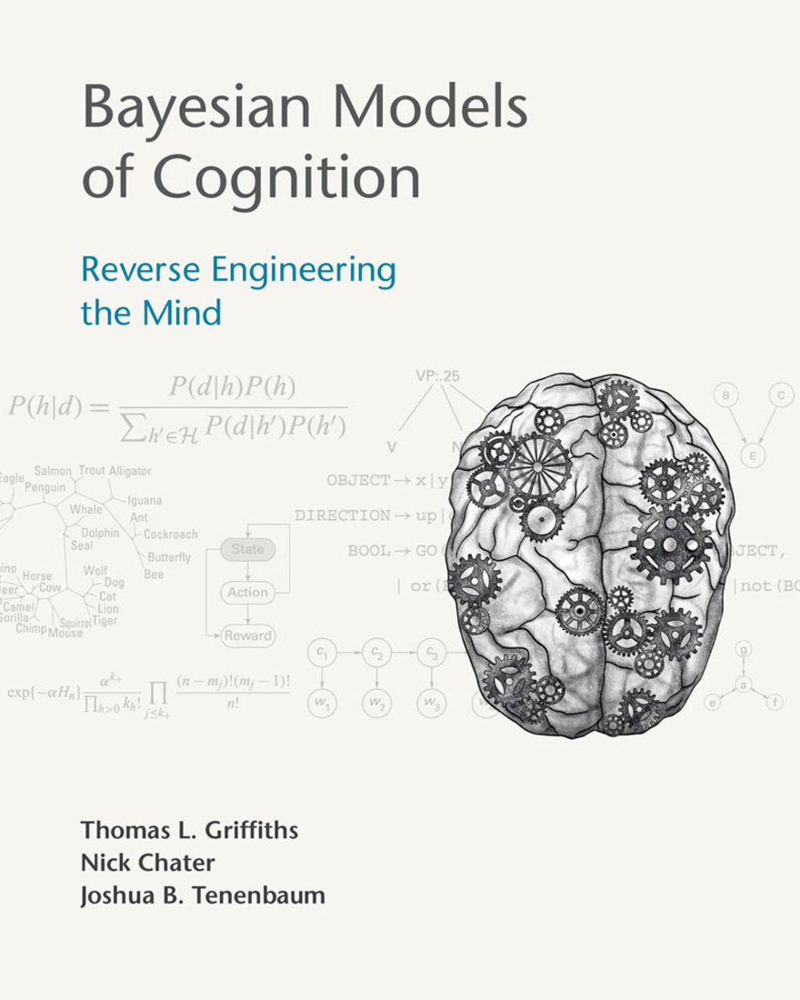
Thomas L. Griffiths, Nick Chater, and Joshua B. Tenenbaum
MIT出版社马萨诸塞州剑桥英国伦敦
© 2024 麻省理工学院
本作品受知识共享CC-BY-NC-ND许可证约束。
此许可证仅适用于完整作品，不适用于经许可包含的任何组件。在此许可证约束下，保留所有权利。未经MIT出版社书面许可，本书的任何部分不得用于训练人工智能系统。
本书的开放获取版本得以实现，得益于MIT图书馆的慷慨资助和支持。
本书由韦斯切斯特出版服务公司采用Times New Roman字体排版。
国会图书馆编目出版数据
姓名：Griffiths, Thomas L., 作者。| Chater, Nick, 作者。| Tenenbaum, Joshua, 作者。书名：认知的贝叶斯模型：心智的逆向工程 / Thomas L. Griffiths, Nick Chater, and Joshua Tenenbaum。描述：马萨诸塞州剑桥：MIT出版社，[2024] | 包含参考文献和索引。标识符：LCCN 2023058931 (印刷版) | LCCN 2023058932 (电子书) |
ISBN 9780262049412 (精装本) | ISBN 9780262381048 (epub) | ISBN 9780262381055 (pdf) 主题：LCSH: 认知科学。| 认知。| 认知心理学。分类：LCC BF311 .G758 2024 (印刷版) | LCC BF311 (电子书) | DDC 153—dc23/eng/20240209 LC记录可在 https://lccn.loc.gov/2023058931 获取 LC电子书记录可在 https://lccn.loc.gov/2023058932 获取
致敬 Roger Shepard (1929–2022)
前言 ix
第一部分 基础知识
第1章 认知科学的贝叶斯方法导论 3 Joshua B. Tenenbaum, Thomas L. Griffiths, and Nick Chater
第2章 认知概率模型的历史背景 37 Nick Chater, Thomas L. Griffiths, and Joshua B. Tenenbaum
第3章 贝叶斯推理 59 Thomas L. Griffiths and Joshua B. Tenenbaum
第4章 图形模型 101 Thomas L. Griffiths and Alan Yuille
第5章 构建复杂生成模型 129 Thomas L. Griffiths and Alan Yuille
第6章 近似概率推理 159 Thomas L. Griffiths and Adam N. Sanborn
第7章 从概率到行动 189 Nick Chater, Thomas L. Griffiths, and Mark K. Ho
第二部分 高级主题
间奏 229
第8章 用层次贝叶斯模型学习归纳偏置 231 Charles Kemp and Joshua B. Tenenbaum
第9章 用非参数贝叶斯模型捕获知识增长 245 Joseph Austerweil, Adam N. Sanborn, Christopher Lucas, and Thomas L. Griffiths
第10章 估计主观概率分布 267 Thomas L. Griffiths, Adam N. Sanborn, Raja Marjieh, Thomas Langlois, Jing Xu, and Nori Jacoby
第11章 采样作为跨分析层次的桥梁 285 Thomas L. Griffiths, Edward Vul, Adam N. Sanborn, and Nick Chater
第12章 贝叶斯模型与神经网络 299 Thomas L. Griffiths, Ishita Dasgupta, and Erin Grant
第13章 资源理性分析 315 Falk Lieder, Fred Callaway, and Thomas L. Griffiths
第14章 心理理论(Theory of Mind)和逆向规划 341 Julian Jara-Ettinger, Chris Baker, Tomer Ullman, and Joshua B. Tenenbaum
第15章 直觉物理作为概率推理 369 Kevin A. Smith, Jessica B. Hamrick, Adam N. Sanborn, Peter W. Battaglia, Tobias Gerstenberg, Tomer D. Ullman, and Joshua B. Tenenbaum
第16章 语言处理和语言学习 395 Nick Chater, Andy Perfors, and Steven T. Piantadosi
第17章 逻辑表示上的贝叶斯推理 423 Charles Kemp, Noah D. Goodman, and Thomas L. Griffiths
第18章 概率程序作为统一的思维语言 437 Noah D. Goodman, Tobias Gerstenberg, and Joshua B. Tenenbaum
第19章 学习作为程序上的贝叶斯推理 473 Steven T. Piantadosi, Joshua S. Rule, and Joshua B. Tenenbaum
第20章 认知发展的贝叶斯模型 499 Elizabeth Bonawitz and Tomer Ullman
第21章 推理的限制和算法概率 517 Nick Chater
第22章 贝叶斯对话 543 Nick Chater, Thomas L. Griffiths, and Joshua B. Tenenbaum
结论 557 致谢 561 参考文献 565 索引 615
这本书讲述人类心智如何理解世界——以及最终，也许讲述我们人类如何理解自己。从神经科学到人类学，许多学科都有这一目标——但我们在这里采用的方法相当具体。我们采用认知科学(cognitive science)的框架，旨在创造这样的
通过逆向工程获得理解：使用创建人工智能(artificial intelligence, AI)系统工程项目中的数学和计算工具来更好地理解人类思维的运作。AI产生了关于人类心智如何工作的丰富且极其多样的假说流。但认知科学不仅仅将AI作为灵感来源。我们对人类认知的数学和计算基础的了解也有助于在机器中构建更像人类的智能。
AI和认知科学领域诞生于1950年代末，并在最初几十年中共同成长。从一开始，这些领域工程和逆向工程人类智能的双重目标就被理解为不同但通过计算视角深度相关。数字计算机的兴起和计算机编程的可能性同时使得认为机器至少在原则上可以被编程来产生人类心智的输入输出行为变得合理。因此，自然而然地提出人类心智本身可以被理解为已经被编程，通过进化、发展以及可能甚至其自身反思的某种混合，来产生我们称之为”智能”的行为。在这些早期，AI研究者和认知科学家分享着他们最大的问题：大脑是什么样的计算机，心智可能是什么样的程序？什么样的计算模型可能构成人类智能的基础——既包括其内部运作也包括其外在可观察的效果？
现在，近70年后，这两个领域已经成熟，并且（如兄弟姐妹经常发生的情况）在某种程度上疏远了。认知科学已经成为一个蓬勃发展、偶尔火热但仍然相对较小的跨学科学术研究领域。AI已经成为一种主导社会力量，在智力、文化和经济方面都是如此。毫不夸张地说，我们正生活在第一个”AI时代”，因为我们被真正有用的AI技术包围着。我们拥有看似能够做我们曾经认为只有人类才能做的事情的机器——驾驶汽车、进行对话或玩像围棋或国际象棋这样的游戏——然而我们仍然没有真正的AI，即该领域创始人最初设想的那种意义上的AI。我们没有通用机器智能，它能做人类能做的一切或思考人类能思考的一切，甚至还差得很远。我们今天拥有的AI技术是由大型专门的人类工程师团队以巨大代价构建的。它们不会自己学习如何驾驶、对话或玩游戏，也不会像任何人类那样想要为自己做这些事情。相反，它们在庞大的数据集上进行训练，这些数据远超任何人类遇到的数据量，并且这些数据都经过人类工程师的精心策划。每个系统只做一件事：玩围棋的机器不会也玩国际象棋、井字游戏、桥牌或足球，更不用说知道如何看到围棋棋盘上的棋子或在棋子意外掉到地板上时捡起来。它不会开车去围棋锦标赛，不会进行关于围棋为何如此迷人的对话，不会制定何时以及如何练习来提高棋艺的计划，也不会决定更多练习是否是其时间的最佳利用。当然，人类心智可以做所有这些事情以及更多——独立学习和思考以在极其复杂的物理、社会、技术和智力世界中运作。人类心智自发地学会弄清所有这些，而不需要数据科学家团队来策划其学习数据，而是通过在那个复杂而混乱的世界中成长互动，尽管需要照顾者、教师和教科书的关键帮助。
可以肯定的是，深度学习的最新和显著发展创造了AI模型，这些模型在正确提示下可以用来执行令人惊讶的多样化任务范围，从编写计算机代码、学术论文和诗歌，甚至创建图像。但相比之下，人类自主创造自己的目标和计划，并且会好奇、无聊或受启发去探索、创造、玩耍和以开放式和自主导向的方式合作。AI很聪明；但到目前为止，它只是人类智能的微弱回声。
缺少什么？为什么我们今天称之为AI的东西与第一批计算机科学家和认知心理学家设想的人类智能通用计算模型之间存在如此巨大的差距？AI和认知科学是如何失去，如已变得越来越明显的，它们最初的共同目标感的？来自市场力量和计算领域更大技术发展的压力和机遇，以及学术时尚和趋势的熟悉模式，都肯定发挥了作用。
今天的一些AI技术经常被描述为受到心智或大脑启发，最著名的是那些基于人工神经网络或强化学习(reinforcement learning)的技术，但这些类比，尽管在历史上对启发现代AI方法至关重要，充其量是松散的。大多数认知科学家会说，虽然他们的领域取得了真正的进步，但其最大的问题仍然悬而未决。控制人类心智如何工作的基本原理是什么？如果被迫诚实回答这个问题，许多认知科学家会说要么我们不知道，要么至少该领域还没有科学共识或广泛共享的范式。
与我们的许多合著者一起，我们写这本书是为了试图缩小这些差距：将认知科学和AI领域重新聚集在一起，并建立
人类智能理解的坚实基础和深度共享的数学与计算基础。这些都是雄心勃勃的目标，我们不会假装不是如此。我们确信这次尝试在很多方面都有不足，仍然留下许多问题未得到解答或未被解决。但我们已经在这个项目上工作了二十多年，开发工具、想法和见解，如果只读单篇论文是很难理解的——特别是如果只读最近几年写的论文，就像今天的学生一样，他们被不断涌现的AI发展浪潮所淹没，大多只是这样做。现在是时候分享我们迄今为止共同学到的东西了，尽管还不完整。
我们的目标是为读者提供一些有价值的内容，无论他们的学术背景和兴趣如何。这本书可以从头到尾阅读；但许多人会选择自己的路径来浏览各章节。本书分为两部分。第一部分包括第1-7章，介绍了关键的数学思想，并用心理学文献中的例子进行说明。这些章节提供了具体模型的详细推导和可用于了解更多基本原理的参考文献。第二部分包括其余章节，介绍了更高级的主题，并深入探讨了这些思想应用的领域。该部分以一个想象的对话结束，其中我们考虑并回应一些我们经常听到的关于逆向工程方法理解心智的担忧。
对于来自AI和机器学习领域的读者，本书第一部分的数学思想可能很熟悉，但应用希望是新颖的。通读这些章节对于了解那些可能出现在计算机科学或统计学课程中的模型——如贝叶斯奥卡姆剃刀(Bayesian Occam’s razor)（第3章）或识别因果关系（第4章）——如何与人类心智必须解决的问题相联系是有用的。对于这些读者，本书第二部分提供了关于贝叶斯模型如何与神经网络相关（第12章）的见解；人们如何高效利用他们有限的认知资源(cognitive resources)（第13章）；以及AI系统的经典挑战，如推理他人的心理状态(mental states)（第14章）；进行关于物理世界的常识推理(common-sense reasoning)（第15章）；以及从有限数据中学习语言（第16章）。结构化表示(structured representations)——如逻辑、语法和程序——在贝叶斯认知模型的高级应用中发挥着关键作用，并在第17-19章中详细讨论。第20章讨论发展心理学(developmental psychology)，对那些寻求从数据训练智能系统的人特别相关，第21章考虑学习的限制。
对于认知心理学家，贝叶斯方法提供了一种不同于传统专注于将心智分解为不同认知机制的思维方式。正如我们强调的，贝叶斯认知模型明确采用逆向工程方法，试图从人类心智必须解决的抽象计算问题的角度来理解人类行为。一个人的心智模型应该实际解决心智面临的信息处理问题这一约束是强有力的——它从根本上重塑了创建充分心理学理论的含义。这一观点在第1章中介绍，在第2章中情境化，并通过第3-7章中呈现的例子进行说明。第8章和第9章使用贝叶斯统计学的复杂工具处理认知心理学中的经典问题——学习如何学习和形成支持学习的表示(representations)。第10章以新颖的角度呈现一些传统实验方法，展示让一系列人传递信息片段如何揭示学习和记忆中的系统性偏差(systematic biases)。第11-13章开始与心理学中更传统的计算建模方法接触，展示范例模型(exemplar models)、神经网络以及启发式和偏差(heuristics and biases)如何与贝叶斯推理(Bayesian inference)相协调。第14-19章呈现高级认知中重要主题的应用，如语言、概念学习和直觉物理学(intuitive physics)。
对于发展心理学家，贝叶斯方法提供了一种参与关于人类能够通过经验学习什么的基本问题的方式。贝叶斯认知模型对学习者在问题中运用的先验知识(prior knowledge)做出明确假设，因此它们提供了探索学习限制的工具。第20章明确讨论这些思想如何在发展心理学背景下应用，所以在阅读第一部分后可能是构建进一步阅读的好地方。
第9章描述逐渐形成日益复杂表示的模型。第10章展示信息的文化传播(cultural transmission)如何使该信息更容易学习——这一思想已在语言学习背景下应用。第11-13章介绍支持贝叶斯推理并有空间容纳发展变化的机制。第14章考虑心智理论(Theory of Mind)，第15章直觉物理学，第16章语言学习，所有这些在发展心理学中都发挥了重要作用。对于更倾向理论的读者，
关于刺激贫乏性和与此相关的论证，这些论证涉及语言习得研究以及整个认知发展中天赋论-经验论的辩论。比较心理学家可能会喜欢通过本书的类似路径。虽然我们没有明确讨论比较研究，但这些主题很适合在不同物种间进行探索，既涉及那些在物种间似乎高度保守的机制（例如，感知、学习和行动的基本原理），也涉及那些通常被认为是人类独有的机制（例如，心理理论和社会认知的各个方面）。
对于神经科学家来说，这里提出的工作主要提供了一个挑战。虽然我们讨论了可以用来实现贝叶斯推理的认知过程（第11章和第13章），并建立了与神经网络的联系（第12章），但可能支撑我们提出的最复杂模型的神经机制仍然是深度神秘的。神经元如何执行计算从而导致对这些模型中使用的结构化表征进行推理，这仍然是一个开放性问题。对于渴望此类挑战的神经科学家，我们推荐第8章作为开胃菜，第14-19章作为主菜。
我们撰写本书的目的是让尽可能广泛的读者群体都能理解，从发现认知科学并对概率论有基本了解的本科生，到希望拓宽视野的资深研究者。在此过程中，我们受益于来自斯坦福大学、麻省理工学院(MIT)、布朗大学、加州大学伯克利分校、普林斯顿大学、牛津大学和华威大学学生的反馈，以及来自各个领域同事的反馈。本书的种子是由我们在加州大学洛杉矶分校纯数学与应用数学研究所举办的暑期学校播下的，而这个暑期学校又建立在我们在认知科学学会年会和神经信息处理系统会议上做的教程基础上。我们感谢在过去二十年中讨论这些想法的所有机会，并期待在未来的岁月里与读者继续这种对话。
[1.] 经验丰富的教授已经注意到本书的章节数量与两周一次的学期课程的授课次数完美匹配。你不需要掌握第3章中介绍的贝叶斯方法就能够认识到这不是巧合。我们认为当前的章节顺序对这样的课程很有效，但第二部分的章节相对独立，可以根据学生的兴趣进行调整。
Joshua B. Tenenbaum, Thomas L. Griffiths, and Nick Chater
我们在第一章的目标是从它让我们能够提出的重大问题以及它提供的独特答案类型的角度来介绍认知科学的贝叶斯方法。从工程学角度来看，人类智能是如何工作的？什么数学原理和计算构建块能够解释我们理解世界和我们在世界中位置的能力？这些是最重大的问题，最初将我们和许多其他人带入认知科学领域。它们可以追溯到将人类思维建模为计算的最早尝试（例如，Newell & Simon, 1956），并与可以追溯到更早的哲学思想有联系（例如，Hume, 1739/1978; Kant, 1781/1964; Mill, 1843）。接下来页面中的一切都可以看作是对它们的回应，我们撰写本书是因为我们认为贝叶斯方法提供了我们所知的解决这些问题最有价值的工具。
但这样的重大问题一开始可能也会让人感到无法面对。可能不清楚什么算作令人满意的答案，或者我们如何知道何时是正确的——或者至少走在正确的道路上。所以让我们从一个容易陈述、也许更容易理解可能答案的问题开始：我们的大脑如何从如此少的信息中获得如此多的内容？
在我们看到大脑工作的每个领域中，我们都看到通过感官传入的信息与认知输出之间的不匹配。我们建立丰富的世界因果模型，做出强有力的泛化，构建强大的抽象，甚至发明全新的世界和理解它们的方式，而输入数据是稀疏的、嘈杂的、不完整的和模糊的——在各个方面都太有限了。我们是如何做到的？
这是激发本书中描述的最早研究的问题，它所呈现的挑战——以及什么算作令人满意的解决方案——可以通过几个熟悉的例子变得具体和精确。首先考虑儿童学习词汇意义的情况。一个典型的两岁儿童可以通过看几个例子学会如何使用一个新词，如”马”或”发刷”——有时甚至一个例子就足够了（Carey & Bartlett, 1978; Bloom, 2000; Smith, 2000; Xu & Tenenbaum, 2007）。我们知道他们掌握了这些词的意义，而不仅仅是声音，因为他们能够泛化：他们能够适当地使用这些词（即使不总是
图1.1
人类儿童在学习物体概念的名称时，通常仅从少数几个例子就能做出强有力的归纳。在成人学习计算机生成的新颖物体名称时，也可以研究这种快速归纳的相同过程。(a) 给定这些外星物体，以及三个”tufas”（外星语言中的一个词）的例子（红框标出），哪些其他物体是tufas？(b) 学习类别名称可以建模为在树状领域表示上的贝叶斯推理(Xu & Tenenbaum, 2007)。物体被放置在树的叶子节点上，关于词汇可能标记的类别的假设对应于不同的分支。不同深度的分支选择出不同归纳水平的假设。通过假设更具区分性的假设——那些具有更长分支的假设——更有可能，以及观察到的数据更可能从紧密覆盖例子的假设中生成，贝叶斯推理倾向于在跨越所有观察例子的最低区分性分支上进行归纳（这里用虚线圆圈显示）。图改编自Tenenbaum, Kemp, Griffiths, and Goodman (2011)。
在新情况下（完美地）使用。他们开始分类地使用这些词来指代任何
适当类型的实体。从计算
或统计推理的角度来看，这是一个非凡的成就。在所有可能物体的无限（且可能是无限维）空间内，存在一个无限但更小且高度受限的子集
可以被称为”马”，另一个可以被称为”发刷”。儿童如何仅从看到每种类型的一个或几个例子就掌握
这些子集的边界？机器又如何能学会
做同样的事情？
来自统计学和机器学习的传统算法方法通常
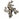
需要数十或数百个标记例子来将物体分类到类别中，而且
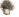
归纳得远不如此可靠或稳健。儿童如何做得如此出色？成人
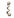
较少面临学习全新物体概念的挑战，但他们在这方面可以同样
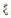
出色：通过图1.1中计算机生成的物体亲自体验一下。
在认知领域，根本上相同的挑战出现在各个方面。作为第二个案例，考虑
儿童和成人为自己创造并相互学习的许多谜题和游戏。以任何具有少数几条规则的简单棋盘游戏为例，如井字游戏、四子棋、
跳棋或奥赛罗，想象你第一次遇到它，看到两个人在玩。规则没有向你解释——你只是在观察玩家的
行动。仅仅通过观察他们的游戏，你肯定无法学到所有
你需要知道的东西来熟练地玩这些游戏。但在许多情况下，仅仅看几轮行动
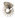
就足以推断出游戏的大部分玩法：允许哪些移动，它们对游戏状态有什么影响，甚至可能知道
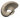
这些移动似乎要达到什么目标。你的推断可能只是猜测，带有一定程度的
不确定性，但即使不确定，即使略有偏差，你对
游戏规则的猜测也会比你在完全没有看到任何游戏之前能做出的猜测好得多。你同样可以推断出许多流行的儿童操场游戏背后的规则和目标
## 认知科学贝叶斯方法简介 [5]
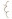
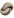
游戏，只需观看一分钟的标签游戏、跳房子、红灯绿灯或许多其他游戏。
在每一个这样的案例中，即使我们推断的概念和规则对我们来说显然是正确的，而且确实是正确的，对于任何有限的游戏序列，总是存在无限的替代可能性集合，这些可能性与所有相同的数据都是一致的。
我们在实验室中用更简单的抽象任务研究了这种现象，例如以下数字游戏(Tenenbaum, 1999; Tenenbaum, 2000)：想象我们正在思考一个规则，该规则从1到100之间的数字中选出一个子集——原则上可以是任何子集。现在我们给你四个目标子集中数字的例子——60、80、10和30——然后问你还有哪些其他数字在同一个子集中。几乎每个人都会说规则可能选出”10的倍数”，并用该子集中的其他数字（即20、40、50等）来回应。但为什么呢？是什么让你如此确定，而逻辑上有许多其他可能性——数量庞大。给出的例子同样符合选出”偶数”、“5的倍数”或”10到90之间的数字”的规则，更不用说更深奥但逻辑上同样一致的可能性，如”7到97之间的数字”、“除了50之外的10的倍数”或”20的倍数，以及小于40的数字”。为什么在这里超越给定数据的一种特定方式如此更加
比其他规则更具说服力？为什么同样的规则”10的倍数”如果我们只向你展示前一两个例子（60，或60和80）然后要求你在那个点进行概括的话，就不会那么有说服力——即使在这两种情况下，所有相同的可能替代规则都在起作用？
这本质上就是从稀疏数据中概括的问题。这与儿童通过观察他人的行为和言语来学习如何使用词汇或如何玩新的游乐场游戏时面临的问题相同。一旦你知道如何识别这个挑战，你就会看到它在认知的各个方面都有出现。它出现在语言学习的每个方面，不仅仅是词汇的含义，在研究儿童如何习得母语的语法或形态学方面发挥着特别核心的作用（Pinker, 1999; Marcus, Vijayan, Bandi Rao, & Vishton, 1999; Gomez & Gerken, 1999）。它在因果学习中表现得尤为明显：每个统计学课程都教授相关性不意味着因果关系，然而在合适的情况下，即使是幼儿也经常可靠地从少数几个事件中推断出因果联系（Gopnik et al., 2004）——这个样本太小，无法通过传统统计方法计算出可靠的相关性。
也许人类学习中最深层的概括形式出现在认知发展中，在构建更大规模的知识系统时：物理学、心理学或生物学的直觉理论，或社会结构或道德判断的规则系统。构建这些系统可能需要数年时间，比学习一个新词、一个新的因果联系或新游戏规则要长得多，但在这个规模上，学习的最终产品也远远超出了观察到的数据——仅仅是因为这些理论的核心概念，如重量和密度、信念和偏好，或生与死，根本无法观察到（Gopnik & Meltzoff, 1997; Carey, 1985, 2009）。直觉理论也可以在瞬间被改变，仅凭一丝感官证据就被修改以适应新因果律的可能性——如果这是正确的一丝证据。想想一个孩子第一次看到磁铁、遥控器、触摸屏设备或反重力机器。一次演示就足以表明世界可能与他们之前想象的不同；再进行一两次实验，自己摆弄这个新系统，就能证实这种怀疑。当然，人类科学家还没有发明反重力机器，但你可以确信，如果他们发明了，并且任何人都可以购买并在家中把玩，人类儿童很快就会了解其戏剧性的效果——并且从同样最少的数据模式中学会。
试图解决我们如何从如此少的信息中获得如此多知识的问题，绝不是构建心智模型时唯一有趣的起点，但这肯定是最核心的起点之一，许多其他有趣的问题都源于试图以令人信服的方式回答这个问题。它暴露了任何试图将智能理解为一系列数学和计算问题解决方案的尝试所面临的严峻挑战。这是及时的，因为今天的人工智能(AI)技术越来越由机器学习框架驱动，这些框架无止境地渴求数据且无望地依赖数据。超越观察数据的概括是构建具有类似人类智能的机器的核心困难。这也是永恒的。
哲学家已经为这个问题的各种版本困惑了2000年——最著名的是”归纳问题”，正如大卫·休谟的版本所知（Henderson, 2022），但其根源可以追溯到柏拉图和亚里士多德，并贯穿整个西方哲学传统。19世纪哲学家约翰·斯图尔特·密尔在《逻辑体系》中写道，激发了几代人对思维的思考：“为什么在某些情况下，单个实例足以进行完整的归纳，而在其他情况下，无数个一致的实例，没有已知或假定的单个例外，在建立普遍命题方面却进展甚微？谁能回答这个问题，谁就比古代最智慧的人更了解逻辑哲学，并解决了归纳问题。”（Mill, 1843, p. 380）。
密尔写的是科学家观察世界时面临的概括问题，但他同样可以谈论我们在认知科学中的现代概括问题：在人类学习者可能超越给定数据的众多可能方式中，我们如何知道——有时仅从一个例子——这些概括中哪些应该成立，哪些不应该？威廉·惠威尔、威廉·斯坦利·杰文斯、伯特兰·罗素、鲁道夫·卡尔纳普、汉斯·赖辛巴赫、卡尔·亨佩尔、卡尔·波普尔、威拉德·范·奥曼·奎因、纳尔逊·古德曼，以及19世纪和20世纪的许多其他人深化了这些问题，并继续推动当代认识论和科学哲学中关于知识起源的辩论（Godfrey-Smith, 2003）：我们如何能够掌握宇宙的定律，或世界的其他持久属性？成为自然定律或持久属性意味着什么？我们相信一个在任何地方和任何时候都成立的定律或普遍概念不会在明天或明年被证伪的真正信心基础是什么？
1959年，当AI和认知科学刚刚开始作为研究领域出现时，波普尔写道，他选择研究科学知识的起源是因为这是基本的——
本质上是日常认识论的问题——常识知识起源的问题——放大版(Popper, 1959/1990)。在波普尔的时代，就像在密尔的时代一样，科学知识或许比常识知识更容易也更令人信服地进行研究。我们现在看到了同样的类比，但方向相反。我们选择研究人类心智对世界的常识理解，以及它如何通过日常的归纳跳跃运作，因为这以最易处理和最紧迫的形式揭示了知识起源和增长的最深层问题。在这个时刻，凭借我们拥有的数学、计算和实验工具，这是经典归纳问题最适合严格科学解释和实际工程进展的形式。
在某种程度上，我们对这些问题的回答必须与哲学家们自柏拉图以来对归纳问题给出的答案是同一类型的答案。如果心智超越了给定的数据，某些其他信息源必须弥补这种差异。在认知的计算或信息处理解释中，不能有免费午餐、魔法或无中生有(这一思想在机器学习的”无免费午餐”定理中得到了形式化；例如，Wolpert & Macready, 1997)。某些更抽象的背景知识必须生成并限定学习者考虑的假设，否则有意义的泛化将是不可能的(例如，McAllester, 1998)。发展心理学家和语言学家谈论”约束条件”(例如，Carey, 2009; Spelke & Kinzler, 2007; Chomsky, 1965)；机器学习和人工智能研究者谈论”归纳偏置”(例如，Mitchell, 1997; Russell & Norvig, 2021)；统计学家谈论”先验”(例如，Jaynes, 2003; Robert, 2007)。神经科学家在问关于感知如何解释嘈杂感觉输入的类似问题时，谈论大脑的”内部模型”(例如，Wolpert, Miall, & Kawato, 1998)。术语各不相同，但总是描述某种填补经验空白的世界建模，让我们的心智合理地将数据转化为可靠、合理的信念。
当然，这个”答案”实际上不是一个答案，而是一个提出更多问题的邀请和一个关于这些问题应该聚焦何处的指南。对于逆向工程解释，关键问题现在集中在用计算术语解释这种抽象知识的性质、功能和起源：它究竟如何解决归纳问题，它的具体形式和内容是什么，它如何在人类心智和大脑中产生？稍微展开这些问题，我们想要理解：抽象知识如何从贫乏的数据中指导推理，以产生可靠有价值的泛化、预测和决策？这种知识采取什么形式，在各种思维领域中具有什么信息内容？知识如何在一生中增长，平衡强约束的需要与持续学习新领域的灵活性？我们构建的知识如何指导我们在世界中的规划和行动——我们如何使用它？表示、获取和部署人类规模知识所需的算法和数据结构实际上如何在人类心智中实现，或者在人类大脑的物理基质中实现？具有复杂世界模型的学习和推理如何在具有有限——通常相当有限——资源的心智中高效实现？我们关于抽象知识的最深层概念最终如何在认知发展中产生——它们是否都必须在某种意义上是先天的，从出生时就内置在大脑或心智的机制中，或者抽象知识的基本形式和内容本身是否可以被学习或构建，全部或部分？
本书的其余部分代表了我们尝试用逆向工程的术语回答这些问题：用数学和计算的语言开发一个连贯、统一的框架，以综合的方式解决所有这些问题，达到足以构建具有这些相同能力的机器并在定量行为实验中得到严格测试的精确度和解释深度。本章的其余部分提供了对本书整体涵盖内容的更具体概述，以及一些亮点和关键见解。然而，在我们开始之前，我们应该指出关于这种方法以及我们如何写作的几个要点，这将有助于为读者定向。
首先，如果被迫用一个词总结我们对这些问题的方法，我们自然必须说：“贝叶斯”。正如本章后面所解释并在第3章中进一步阐述的，被称为贝叶斯规则的概率论原理为理性代理如何解决归纳问题提供了指导，将先验知识与数据提供的信息整合在一起。如果给一整个句子，我们可能会说：“有效近似分层贝叶斯推理的算法和数据结构，基于丰富且灵活结构化的世界表示。”当然，要恰当回答所有这些问题需要一整本书——这本书——而不是一个词的标签或一句话的口号。但这些标语也有助于为我们定向。我们将在接下来几百页中描述的工作在认知科学内已经公平且毫无疑问地被称为贝叶斯或概率方法。我们自己在演讲和论文标题中突出使用了这些词汇，并自豪地接受我们的逆向工程观点。
工程化心智的研究受到了机器学习和人工智能中贝叶斯和概率方法工程成功的影响 (Pearl, 1988; Thrun, Burgard, & Fox, 2005; Russell & Norvig, 2021; Murphy, 2012)——以及我们自己的工作如何启发了更强大、更类人的贝叶斯机器学习、推理和感知方法 (Griffiths & Steyvers, 2004; Griffiths & Ghahramani, 2006; Kemp, Perfors, & Tenenbaum, 2007; Goodman, Mansinghka et al., 2008a; Shafto, Kemp, Mansinghka, & Tenenbaum, 2011; Kulkarni, Kohli, Tenenbaum, & Mansinghka, 2015; Lake, Salakhutdinov, & Tenenbaum, 2015; Grant, Finn, Levine, Darrell, & Griffiths, 2018; Ellis et al., 2023)。
同时，认知科学中的贝叶斯方法远不止”贝叶斯”这一个词所能概括的。事实上，任何致力于准确逆向工程的心智观点都不可能被单一的思想或原则所囊括。以”连接主义”或”神经网络”范式为例 (Rumelhart & McClelland, 1986)。这些模型确实涉及关于连接的核心主张：例如，知识存储在类神经元处理单元之间的连接网络中，学习包括调整这些连接的强度。但它们通常还涉及其他核心主张，如分布式表征的首要性、错误驱动学习和梯度激活 (O’Reilly & Munakata, 2000)。
因此，“连接主义”一词已经代表了这些模型在几十年中集体体现和发展的一系列思想集群。同样，认知的”贝叶斯”或”概率”模型应该被视为一套相互加强和支持的概念、原则和工具的标签，它们以强大的方式协同工作，解释智能如何在自然心智中运作，以及我们如何构建更智能的人工心智。本书的目标是介绍、调查和解释这一领域。贝叶斯提供了一个起点，但仅仅是开始。
其次，虽然我们迄今为止一直在讨论人类知识作为我们的主题，并将继续这样做，但我们的重点将放在一种抽象知识上——我们可以称之为”世界模型”，或者更准确地说，“概率生成世界模型”。所谓”生成”，我们指的是人类心智对世界中因果过程的模型：使事情发生的机制，产生（或”生成”）我们观察到的事件以及那些我们没有直接观察到但知道存在的、潜在的、幕后的事件。所谓”概率”，我们指的是这些模型必须内在地表征和处理不确定性的所有方式：即使它们假设的生成机制是确定性的，概率建模和推理也是必要的，因为我们对世界潜在因果结构的捕获和了解存在诸多不足。
这些模型跨越了无生命的物理世界和有生命的智能体世界，以及在其他智能体心智内部发生的因果过程，这些过程生成了它们的行为。它们可能往往是无意识的，尽管有些肯定也有意识的方面。它们延伸到远超我们直接经验的领域，我们只能通过他人的证言或我们自己的想象来思考这些领域。它们甚至延伸到（或者，有些人推测，从这里开始）我们心智对自身内部过程的模型，我们自己的主观世界。
在结构上，这些生成世界模型在多个尺度和抽象层次上运作，从我们每个人对眼前事物的非常具体的模型——比如当我们在桌前写这一章时，或者你阅读这些文字时对眼前事物的模型——到我们对世界运作方式的更一般的概念，以及可能一直以来和将来都会如此运作的方式。它们还表征了除了实际世界之外的许多世界：世界可能或可能如何存在的假设空间，支持我们对实际世界可能如何的推理；以及假想和反事实可能性的空间，支持我们对下一步应该做什么来实现目标的推理，或者对过去当事情没有如我们希望的那样展开时，可能发生什么或我们应该做什么的推理。
为什么要将这种特定类型的知识作为我们心智如何从如此少中获得如此多的基础？自认知心理学和人工智能的早期发展以来，人类心智对世界建模的广阔能力一直是每个关于人类智能的严肃解释的核心。它经常被引用为独特人类”常识”的本质，以及科学建立的认知基础，人类与非人类动物智能之间的差异，以及人类智能与数据驱动的人工智能系统之间的差异。我们不会在这里重复大部分这些论证，但我们建议感兴趣的读者参考出现在 Koffka (1925), Craik (1943), Heider (1958), Newell, Shaw, and Simon (1959), McCarthy (1959), Neisser (1967), Minsky (1982), Norman (1972), Gentner and Stevens (1983), Johnson-Laird (1983), Rumelhart, Smolensky, McClelland, and Hinton (1986b), Pearl (1988), Shepard (1994), Gopnik and Meltzoff (1997), Carey (2009), Levesque (2012), Davis (2014), Kohler (2018), and LeCun (2022) 中的许多版本。关于我们自己对人们世界模型中心性的思考，可以在本书的各个部分找到更多内容。
然而，我们要说的是，即使关于人类心智模型的主题已有如此多的先前工作，本书中提出的方法和工具在试图涉及我们人类用世界模型所做的一切的范围和技术深度方面都是全新的：
我们的能力不仅能识别我们看到的事物，还能理解和解释它们；不仅能预测接下来可能发生的事情，还能判断在不同环境或我们采取不同行动的情况下可能会发生什么；想象可能发生但极不可能的事件，或从未存在但可能存在的事物；然后将这些结果设为目标，制定有效且高效的计划来实现它们，并解决途中遇到的问题；最重要但绝非最后一点是，通过构建模型来学习，这些模型不仅来自我们在世界中的个人经验，还通过与他人分享我们的模型来社会性学习，并在个体生命周期和世代间文化性地构建知识。
我们在过去二十年关于认知贝叶斯模型工作的目标是发展一个统一的数学和计算方法，用于解释人类心智如何能够做到所有这些事情，这一方法建立在严格的行为实验基础上，测试这些解释能够达到多远。这种方法，以及与之配套和扩展所需的工具，正是我们希望您从阅读本书中获得的。
最后，由于在整本书中（尤其是在这个引言中）我们在直观地谈论人们的”世界模型”和更一般但哲学意味浓厚的术语如”知识”或”抽象知识”，以及更具体的贝叶斯技术概念如”生成模型”或”概率生成模型”之间自由转换，我们想要向那些关注这些术语之间重要区别的读者说明，我们对这些区别并非不敏感。概率生成模型并不是智能体(agent)可以拥有的唯一一种世界模型——人类肯定还有其他模型。而且，仅仅因为一个人在头脑中有某个世界模型，并不意味着认识论学者应该真正认为他们拥有”知识”——人类模型的许多方面肯定是错误的或以其他方式不符合条件。
然而，我们确实想要为这样的主张进行辩护：我们在此研究的心智世界模型，如果它们确实大致遵循我们在本书中阐述的形式和功能，那么它们确实构成了真正的知识。考虑知识的经典定义”有根据的真实信念”（这一定义本身也不是没有问题的；参见Gettier, 1963）。世界模型是心理表征(mental representations)或信念。我们认为，按照人们构建它们的方式，它们应该是真实的，或足够真实的。它们之所以如此，是因为它们的形式和功能，作为分层概率生成模型(hierarchical probabilistic generative models)，通过理性且合理有根据的学习和推理程序应用于事实世界。因此，称这些模型为”知识”似乎是可以的。就像任何现实智能体拥有的任何现实知识一样，它们在许多方面都是不完整和不完美的。特别是，它们是近似的、概率性的，充其量只是可能的、近似真实的。它们被设计为仅支持好的猜测。但它们是我们能做出的最好猜测，而这本书提供了我们目前对它们如何工作的最好猜测。
本书的内容可以围绕一系列关于人类对其世界的抽象知识——其结构、使用和起源——的基础问题来组织。我们在本章前面非正式地介绍了这些问题，但现在我们将更系统地阐述它们。
我们从最初指导我们自己关于日常归纳跳跃工作的三个最基本问题开始，试图解释我们的心智如何从如此少的信息中获得如此多的内容：
Q1 世界的抽象知识如何指导从稀疏数据中进行学习和推理？
Q2 我们的抽象世界知识在不同领域和任务中采取什么形式？
Q3 世界模型本身是如何获得或构建的？
最初，我们接受并发展了贝叶斯学习和推理方法，因为它似乎为以原则性和统一的方式回答这些问题提供了最佳前景，这些答案有望在认知的许多领域中普遍适用。我们专注于为人类建模典型的归纳问题，这些问题也是认知心理学家自该领域诞生以来就以某种形式研究的经典问题：学习概念（或类别）、学习因果关系、归纳推理、做预测等等。我们已经介绍了其中一些问题，接下来我们将预览贝叶斯框架如何发展来解释它们，具体是通过回答问题Q1-Q3。这代表了我们逆向工程心智方法的核心，也是本书第一部分的重点。
本书第二部分代表了更近期的工作，针对一些更高级但同样重要的问题：
Q4 我们如何使用我们的世界模型来做决策并在世界中成功行动？
Q5 在具有有限计算资源(bounded computational resources)的心智中，如何高效地实现复杂世界模型的学习和推理？
Q6 复杂的世界模型如何在物理机器、大脑或计算机中实现？
Q7 我们世界模型在进化和发展中的起源是什么——婴儿的心智中内置了什么，儿童如何在该起点之内和之外学习？
Q8 需要什么来扩大学习规模，以涵盖人类在其一生中获得的所有知识以及人类文化在世代间构建的知识？
贝叶斯框架在解决这些问题方面的扩展是有机地产生的，作为对我们早期专注于Q1-Q3努力的回应。在某些情况下，这些是尝试
回应尖锐的批评或反对意见；在其他情况下，它们来自我们自己对工作中最缺失部分的思考。我们认识到，在Q1-Q3的驱动下取得一些进展后，我们的初步答案也提出了新的问题，或者建议了我们以前没有看到如何着手处理的认知经典问题的新方法。
我们认为这是贝叶斯范式（或任何逆向工程心智的有效方法）的优势，即在回应外部批评和内部反思时，它不会固守一套固定的问题去回答，而是开辟了建立在早期工作基础上并丰富早期工作的新研究方向。在试图理解像人类心智这样深刻而广阔的主题时，在这个相对早期的探索阶段，我们取得最大进展的时候不是当我们的初始问题被最终确定地解决时，而是当我们能够有效提出的问题集合变得更大、更具挑战性和更有趣时。
我们也开始相信，任何计算认知科学（或认知AI）方法在连接特定认知方面的具体、可定量测试模型与关于心智作为整体如何工作以及有时如何失效的更广泛解释时，取得最大进展。我们在Q1-Q3上的早期工作优先考虑了具体性
[1.] 一些读者可能会注意到我们关于世界知识的问题与Noam Chomsky经常用来构建语言研究框架的问题之间的相似性（例如，Chomsky，1986）。这并非巧合：语言涉及结构化表征和具有挑战性的归纳问题，我们认为这些因素是更广泛地理解人类认知的关键。其他工作也从Chomsky的问题中汲取了类似的灵感来研究高级认知的各个方面（例如，Mikhail，2008，关于道德）。12 J. B. Tenenbaum, T. L. Griffiths, and N. Chater
以及优雅、精确、可定量测试模型的价值，但Q4-Q8对我们来说似乎是实现这种更大整合最紧迫需要解决的问题。我们知道我们距离我们都在寻求的心智完整解释还很远，但是，过去十年在这些更高级问题上取得了巨大进展，使得认真考虑这样的解释可能触手可及的想法成为可能。这些发展也代表了当前研究中一些最活跃的领域，是第二部分的焦点。
在第一章的其余部分，我们想通过预览贝叶斯方法如何处理所有这些问题，让您体验一下贝叶斯方法。我们专注于Q1-Q3，作为我们方法的基础，然后更快地通过Q4-Q8。在此过程中，我们还将包括指向具体后续章节的指引，我们在那里详细处理每个问题，作为读者的指南。
我们将用主要来自两个典型归纳问题领域的例子来说明这种方法：关于自然类概念的学习和推理，以及关于因果关系的学习和推理。我们还将把本书中发展的贝叶斯方法与思考人类知识本质和起源的另外两种经典方式进行对比：René Descartes和Immanuel Kant理性主义的现代认知继承者，以及John Locke和David Hume经验主义的现代认知继承者。这些思想及其彼此辩论的历史是哲学的伟大竞争之一。认知科学家和AI研究者有力地加入了这场辩论的双方，包括在理性主义一方，各种版本的语言、概念和进化先天论(nativism)（Pinker，1997；Fodor，1998；Spelke，1990；Leslie，1994；Spelke & Kinzler，2007；Chomsky，2015；Marcus & Davis，2019）；在经验主义一方，既有经典联结主义模型中的联想主义倾向（McClelland & Rumelhart，1986；Elman et al.，1996；McClelland et al.，2010），也有当代AI的深度强化学习系统和非常大的序列学习模型（Silver et al.，2016；Silver, Singh, Precup, & Sutton，2021；LeCun，2022；Brown et al.，2020；Alayrac et al.，2022）。认知的贝叶斯模型通过提供这两极的替代方案，以及思考相关基础问题的真正不同的方式，吸引了许多人。我们在第2章讨论这些各种方法的历史，以及它们与贝叶斯方法的关系。
本书中我们呈现的方法的核心，是将世界的丰富结构化、表达性表征与强大的统计推理机制相结合，论证只有知识表征和归纳推理的复杂方法的综合才能解释人类智能。直到最近，人们还不理解这种融合如何在计算上工作。认知建模者被迫在两个选择之间做出选择（Pinker，1997）：在最简单、无结构的知识形式上进行强大的统计学习，例如联结主义语义认知解释中的联想权重矩阵（McClelland & Rumelhart，1986；Rogers & McClelland，2004），或者配备只有最简单、非统计学习形式的丰富结构化符号知识，检查假设与观察数据之间的逻辑不一致性，如语言习得的先天论解释（Niyogi & Berwick，1996）。似乎必须接受以下两种情况之一：人们的抽象知识在非平凡的意义上不是从经验中学习或归纳的（因此本质上是先天的），或者它是
并非像看起来那样抽象或结构化——如”知识般”——（因此简单地[介绍][贝叶斯][方法][到][认知][科学][[13]]
关联）。许多发展研究者完全拒绝了这种选择，转而在”建构主义”或”理论理论”的标题下追求不太正式的方法来描述儿童不断成长的心智（Gopnik & Meltzoff, 1997）。解释人们如何能够真正用抽象结构化知识学习的潜力可能是贝叶斯认知模型最显著的特征——在一些发展圈子中它们受欢迎的最大原因（Gopnik & Tenenbaum, 2007; Griffiths, Chater, Kemp, Perfors, & Tenenbaum, 2010; Perfors, Tenenbaum, & Wonnacott, 2010; Griffiths, Sobel, Tenenbaum, & Gopnik, 2011b; Xu, 2019; Spelke, 2022），也是来自传统先天论和经验主义阵营中其他人怀疑的最大目标（Berwick, Pietroski, Yankama, & Chomsky, 2011; McClelland et al., 2010）。
在过去二十年中，高级认知的许多方面都被贝叶斯统计学的数学原理所阐明：我们的相似性感知（Tenenbaum & Griffiths, 2001a）、代表性（Tenenbaum & Griffiths, 2001b）和随机性（Griffiths & Tenenbaum, 2001; Griffiths, Daniels, Austerweil, & Tenenbaum, 2018）；巧合作为隐藏原因的线索（Griffiths & Tenenbaum, 2007a）、因果强度判断（Lu, Yuille, Liljeholm, Cheng, & Holyoak, 2008）和证据支持（Griffiths & Tenenbaum, 2005）；诊断和条件推理（Krynski & Tenenbaum, 2007; Oaksford & Chater, 2001）；以及对日常事件未来的预测（Griffiths & Tenenbaum, 2006）。
人类心智根据贝叶斯原理学习和推理的主张并不意味着心智可以实现任何贝叶斯推理。只有那些心智被设计为能够很好地执行的归纳计算，即生物学有时间和理由设计有效且高效机制的地方，才可能用贝叶斯术语来理解。除了刚才提到的一般认知能力之外，贝叶斯分析还阐明了许多由快速、可靠和无意识处理产生的特定能力，包括感知（Yuille & Kersten, 2006）、语言（Chater & Manning, 2006）、记忆（Shiffrin & Steyvers, 1997; Steyvers, Griffiths, & Dennis, 2006）和感觉运动系统(sensorimotor systems)（Körding & Wolpert, 2004）。相比之下，在需要将概率作为数值量进行明确有意识操作的任务中——这是一个最近的文化发明，很少有人能熟练掌握，而且只有在经过复杂训练后才能做到——判断可能明显偏离贝叶斯规范（Tversky & Kahneman, 1974）。
本质上，贝叶斯法则只是回答Q1的一个工具：抽象知识如何指导从不完整数据中的学习和推理？抽象知识被编码在概率生成模型(probabilistic generative model)中，这是一种心理模型，描述了世界中产生学习者观察的因果过程，以及支持有效预测和行动的未观察到的潜在变量(latent variables)——如果学习者能够推断它们的隐藏状态。生成模型必须是概率性的，以处理学习者对潜在变量真实状态和起作用的真实因果过程的不确定性。生成模型在两个意义上是抽象的：它不仅描述手头的特定情况，还描述学习应该泛化的更广泛情况类别，并且以简洁的形式捕获了导致学习者观察并使泛化成为可能的基本世界结构。
[14] [J.] [B.] [Tenenbaum,] [T.] [L.] [Griffiths,] [and] [N.] [Chater]
贝叶斯推理为在给定观察数据的情况下更新关于生成模型中潜在变量的信念提供了一个理性框架（Jaynes, 2003; Mackay, 2003）。背景知识通过关于潜在变量可能值的受限假设空间[H]进行编码——可以解释观察数据的候选世界结构。更细粒度的知识来自先验概率P[(]h[)]，它指定学习者在观察之前（或独立于观察）对每个假设h的信念程度。贝叶斯法则将这些先验概率更新为以观察数据d为条件的后验概率P[(]h[|]d[)]：
[P[(]h[|]d[)] [=] [∑]] P[(]d[|]h[)]P[(]h[)] [] [[∝] P[(]d[|]h[)]P[(]h[)]. [(1.1)] []]
[h][] [(]d[|] [)]P[(] [)] [∈] [H] P h h
后验概率与先验概率和似然性P[(]d[|]h[)]的乘积成正比，似然性测量在假设h下数据的概率，相对于[H]中的所有其他假设[] h。
为了说明贝叶斯法则的作用，假设我们观察到约翰咳嗽(d)，我们考虑三个假设作为解释：h1，约翰感冒了；h[2]，肺病；或h[3]，胃灼热。直觉上，只有h1看起来令人信服。贝叶斯法则解释了原因。似然性倾向于h1和h[2]而非h[3]：只有感冒和肺病会引起咳嗽，因此会将数据概率提高到基线之上。相比之下，先验倾向于h1和h[3]而非h[2]：感冒和胃灼热比肺病常见得多。贝叶斯法则根据先验和似然性的乘积对假设进行加权，因此只产生像h1这样在两个项上都得分很高的解释。我们在第3章中提供了贝叶斯法则的更技术性介绍——以及它可以用来解决的问题范围。
贝叶斯推理可以用来解释人们如何从稀疏数据中学习。在概念
学习中，数据可能对应几个示例对象（如图1.1所示），而假设对应概念的可能延伸。为什么，在给出三个不同种类马匹的例子后，儿童会将”马”这个词泛化到所有且仅仅是马匹（h1）？
为什么不是h[2]，“除克莱德斯代尔马外的所有马”，h[3]，“所有动物”，或任何其他与数据一致的规则？似然性偏向更具体的模式，h1和h[2]；如果这三个随机例子实际上是从更大的h[3]中抽取的，那么它们都落在较小的集合h1或h[2]内将是极其可疑的巧合（Tenenbaum & Griffiths, 2001a）。
先验偏向h1和h[3]，因为作为更连贯和独特的类别，它们更可能是语言中常见词汇的指称对象（Bloom, 2000）。只有h1在两个方面都得分很高。同样，在因果学习中，数据可能是事件之间的共现；假设则是连接这些事件的可能因果关系。似然性偏向使共现更可能发生的因果链接，而先验偏向符合我们背景知识的链接，即什么样的事件可能导致哪些其他事件；例如，疾病（如感冒）比症状（如咳嗽）更可能导致症状，而不是相反。
从这些角度来看，贝叶斯定理为回答关于归纳推理的问题提供了一个简单的定量框架。特别是，它指出了先验知识应该如何与数据结合产生新结论。这建立了一个研究程序，我们可以从人们观察到的数据和得出的结论反推出必然指导他们推理的知识。这个表征人们归纳偏见的项目，以先验分布的形式表达，
描述了我们在认知的贝叶斯模型方面的大部分早期工作（例如，Tenenbaum, 2000; Tenenbaum & Griffiths, 2001a; Griffiths & Tenenbaum, 2001, 2006）。在此过程中，我们还开发了复杂的实验方法，基于统计学和计算机科学中使用的算法来揭示人类先验分布（见第10章）。例如，在某些假设下，从人到人传递的信息——如在传话游戏中——将收敛到反映参与者归纳偏见的形式（Griffiths & Kalish, 2007）。这些方法使得量化人们在广泛问题范围内的抽象知识成为可能，为我们形成关于其形式和起源的概括提供了要素。
抽象知识为学习提供了重要约束，但以什么形式？这带我们到下一个问题，Q2：我们的抽象世界知识在不同领域和任务中采取什么形式？对于概念学习或因果推理等复杂认知任务，不可能简单地列出每个逻辑上可能的假设及其先验和似然。必须有更复杂的知识表示形式作为贝叶斯认知所需的概率生成模型的基础。
在传统的联想或连接主义方法中，学习的统计模型定义在大型数值向量上。学习被视为估计联想记忆中的强度、神经网络中的权重或高维非线性函数的参数（McClelland & Rumelhart, 1986; Rogers & McClelland, 2004）。相比之下，贝叶斯认知模型在定义计算机科学和AI中使用的更结构化符号知识表示形式的概率方面最成功，如图、语法、谓词逻辑、关系模式和函数程序。不同的表示形式用于捕捉人们在不同领域和任务中的知识，以及不同抽象层次的知识。
在从例子学习词汇和概念时，指导儿童和成人概括的知识已经通过定义在树状结构表示上的概率模型得到很好的描述（如图1.1b所示）（Xu & Tenenbaum, 2007）。对自然种类的其他生物概念的推理——例如，给定牛和犀牛的肌肉中有蛋白质X，马或松鼠有这种蛋白质的可能性有多大？——也通过假设树中相近对象可能共享属性的贝叶斯模型得到很好的描述（Kemp & Tenenbaum, 2009）。然而，树绝不是通用表示。对其他种类类别或属性的推断最好用不同形式的概率模型来捕捉（图1.2）：用于城市地理属性推理的二维（2D）空间或网格，用于价值或能力推理的一维（1D）顺序，或用于物种因果传播属性（如疾病）的有向网络（Kemp & Tenenbaum, 2009）。
更一般地，关于原因和结果的知识可以用有向图模型表达（Pearl, 1988）：一种图结构，其中节点表示变量，节点间的有向边表示概率因果链接（见第4章）。例如，在医疗环境中（见图1.3a），节点可能表示患者是否感冒、咳嗽、发烧或其他症状，边的存在或缺失显示感冒往往导致咳嗽和发烧，但不导致胸痛；肺病往往导致咳嗽和胸痛，但不导致发烧；等等。


鹰、鲑鱼、鳟鱼、鳄鱼
鸡、知更鸟、企鹅、鬣蜥、雀鸟、鲸鱼
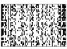
安克雷奇
开普敦、金沙萨、金沙萨、马德里、惠灵顿、伦敦、柏林、东京、布达佩斯、悉尼、内罗毕、莫斯科、符拉迪沃斯托克、符拉迪沃斯托克、伊尔库茨克、开罗、开罗、马尼拉、马尼拉、珀斯、德黑兰、德黑兰、上海、上海、雅加达、特征、孟买、曼谷
图1.2
Kemp和Tenenbaum（2008）展示了如何使用定义在图语法上的层次贝叶斯模型来发现领域中的结构形式。模型的底层是一个对象及其属性的矩阵，或对象对之间的相似性。矩阵的每个单元格表示给定特征（列）是否在给定对象（行）中被观察到。上一层是描述属性如何在对象上分布的图。直观上，图中相近的对象预期会共享属性。在最高层，语法规则指定了领域中的结构形式——从初始种子节点生成受约束形式图的规则。搜索算法试图找到形式语法和由该语法生成的图的组合，使其共同获得最高概率。(a) 给定动物特征的观察，算法推断树结构最好地解释了数据。找到的最佳树在多个尺度上捕获了直观合理的类别。(b) 同样的算法发现历史美国最高法院大法官的投票模式最好由线性”左右”光谱解释。(c) 颜色之间的主观相似性最好由圆形环解释。(d) 给定地球上城市之间的邻近性，算法发现了类似于纬度和经度的圆柱表示：环与环的交叉乘积。(e) 给定在两个维度（种族和男性化）上变化的逼真合成人脸图像，算法成功恢复了潜在的2D网格结构：两个链的交叉乘积。图改编自Tenenbaum等人（2011）。
这样的”因果图”代表了一种简单的直觉理论(intuitive theory)（Gopnik等人，2004），但从有限数据中学习因果网络依赖于更抽象知识的约束（Griffiths & Tenenbaum，2009）。例如，学习医学状况之间的因果依赖关系需要更高层次的框架理论(framework theory)（Wellman & Gelman，1992）来支持，该理论指定两类变量（或节点）——疾病（D）和症状（S）——以及因果关系（或图边）倾向于从D流向S，而不是在这些类内部，或从S流向D（图1.3a-c）。这种抽象框架可以使用定义在关系数据结构上的概率模型来表示，如图模式(graph schemas)（Kemp，Tenenbaum，Niyogi，& Griffiths，2010b），基于节点类型的图模板，或概率图语法(graph grammars)（Griffiths & Tenenbaum，2007b），在精神上类似于已成为表示语言知识标准的字符串概率语法（Chater & Manning，2006）（见第16章和第17章）。在最抽象的层次上，因果性本身的概念，即支持外部代理干预或操纵的有向关系（Woodward，2003），可以表述为一组逻辑法则，表达对连接行动和可观察事件的有向图结构的约束（图1.3d）。
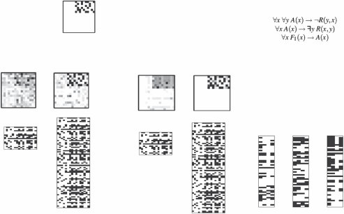
1 2 3 4 5 6 1 2 3 抽象 7 8 9 10 4 5 6 0.4 11 12 13
7 原则 8 9 10 11 12 13 14 15 16 … c 1 14 15 16 c … … 2
结构 结构
s
数据 数据 tie nt
pa
条件
ts
en
ev
变量
图1.3
在图模式上定义的层次贝叶斯模型(Hierarchical Bayesian models, HBMs)可以解释直觉理论是如何获得的，以及如何用于从有限数据中学习特定的因果关系(Kemp et al., 2010b)。(a) 一个简单的医学推理领域可能由16个变量之间的关系来描述：前6个编码”疾病”的存在或不存在(上排)，与接下来10个”症状”(下排)有因果联系。这个网络也可以可视化为一个矩阵(右上，链接用黑色显示)。因果学习任务是基于观察这些变量在一组患者中的状态数据来重构这个网络。(b) 二层HBM形式化了自下而上的因果学习，或使用网络上无信息先验的学习。底层是数据矩阵。第二层(结构)编码假设的因果网络：灰度矩阵可视化了在观察n个患者的条件下，每个成对因果链接存在的后验概率；将此矩阵与(a)中显示的黑白真实矩阵进行比较。当n = 80时，推断出虚假链接(灰色方块)，当n = 20时，几乎没有检测到真实结构。(c) 三层非参数HBM(Mansinghka, Kemp, Tenenbaum, & Griffiths, 2006)添加了一层抽象原则，即图模式。模式对下层(因果网络结构)编码先验，约束并因此加速因果学习。模式和网络结构都从(b)中观察到的相同数据中学习。模式通过将变量1-6分配到类C1，变量7-16分配到类C2，以及偏好仅C1 → C2链接的先验，发现了疾病-症状框架理论。这些分配以及有效类别数(这里是两个)都是自动推断的。尽管这个三层模型比(b)中的模型有更多自由度，但学习更快更准确。有n = 80个患者时，因果网络几乎完美识别。甚至n = 20个患者就足以学习高层C1 → C2模式，从而将网络层的不确定性限制在哪些疾病引起哪些症状的问题上。(d) 用于学习抽象因果理论的HBM(Goodman et al., 2011)。最高层是用一阶逻辑表达的定律，代表因果关系的抽象属性、外生干预在定义因果方向中的作用，以及可能将事件标记为外生干预的特征。这些定律对下层可能的有向图模型施加约束，后者又用于解释变量上观察到的事件模式。给定来自几个因果系统的观察事件和最高层可能定律的假设空间，模型快速收敛到基于干预的因果关系的正确理论，并使用该理论约束关于特定因果网络的推断。图改编自Tenenbaum et al. (2011)。
每种知识形式都使不同类型的先验分布自然地定义，因此对归纳施加不同的约束。成功的泛化依赖于正确获得这些约束。虽然归纳约束通常是分级的，但最容易理解的是定性约束的效果，这些约束简单地限制学习者可以考虑的假设(即，将许多逻辑可能假设的先验设为零)。例如，在包含n个对象的领域上学习概念时，有2n个子集，因此有2n个逻辑上可能的新概念扩展假设。假设概念对应于对象上特定二叉树的分支，如图1.1b所示，将此空间限制为仅n - 1个假设。在学习16个变量的因果网络时，大约有1046个逻辑可能的假设(有向无环图)，但将假设限制为二分疾病-症状图的框架理论将此减少到大约1023个假设。知道哪些变量属于疾病和症状类别进一步将此限制为大约10^18个网络。假设空间越小，学习者的泛化准确性越高，但只有当要学习的真实结构仍在学习者假设空间内或附近(在概率意义上)时才如此(McAllester, 1998)。因此，我们对人类心理表征的最佳解释通常类似于科学家如何表征相同领域的简化版本，如生物物种的树形结构，这并非巧合。一个近似世界实际运行机制的紧凑描述为归纳学习提供了最有用的约束形式。
1.2.3 抽象知识的起源
对抽象知识的需求——以及正确获得它的需求——将我们带到了Q3：学习者如何学习他们需要知道的东西来使学习成为可能？儿童如何知道哪种树结构是组织词汇学习假设的正确方式？在更深层次上，学习者如何知道给定的实体和概念领域应该使用树结构来表示，而不是低维空间或其他形式？或者在因果学习中，人们如何达到正确的框架理论，比如对抽象的疾病(disease)和症状(symptom)变量类别的知识，以及从疾病到症状的因果联系？
抽象知识或新归纳约束的获得主要属于认知发展的范畴(Gopnik & Meltzoff, 1997; Carey, 2009)。例如，学习词汇的儿童最初假设对象有一个扁平的、相互排斥的分类到可命名的聚类中；只有后来他们才发现类别应该组织成树结构层次(如图1.1所示)(Markman, 1989)。这样的发现在科学进步中也是关键的：德米特里·门捷列夫(Dmitri Mendeleev)通过提出元素的周期结构启动了现代化学，卡尔·林奈(Carl Linnaeus)著名地提出生物物种之间的关系最好用树结构来解释，而不是更简单的线性顺序(前现代欧洲的”存在大链条”)或其他形式。
心理学家和科学哲学家长期以来一直认为这种结构洞察在其机制上是深度神秘的——更像是魔法而不是计算。统计学和机器学习中用于无监督结构发现的传统算法——包括层次聚类、主成分分析、多维尺度分析和团检测——假设单一固定形式的结构(Shepard, 1980)。与人类儿童或科学家不同，它们无法学习多种结构形式或在新数据中发现新形式。认知发展的传统方法都没有完全令人满意的回应：先天论者假设如果认知的不同领域以质量上不同的方式表示，那些形式必须是先天的(Chomsky, 1980; Atran, 1998)；另一方面，连接主义者建议这些表示可能是学习的，但在关联权重的通用系统中，最多只能近似 [介绍] [贝叶斯] [认知科学] [方法] [[19]]


图1.4
一个说明迁移学习的思想实验。(a) 单独来看，观察从袋子中抽出的一颗蓝色弹珠几乎无法告诉我们其他可能抽到的弹珠的颜色。但如果我们也观察了同类型的其他几个袋子的几次抽取，就会产生超假设(overhypothesis)：袋子在颜色上是同质的，尽管颜色在袋子之间有所不同。(b) 层次贝叶斯模型解释了如何获得这种超假设，并表明仅从一个例子就能对新袋子的分布做出强有力的泛化。
树、因果网络和人们似乎明确知道的其他结构形式(Rogers & McClelland, 2004)。
贝叶斯认知建模者通过将本章描述的结构化知识表示与贝叶斯统计学中被称为层次贝叶斯模型(hierarchical Bayesian models)的先进方法相结合来回应这些挑战(HBMs; Gelman, Carlin, Stern, & Rubin, 1995)。HBMs通过假设不仅有解释数据的单一层次假设，而且有多个层次：假设空间的假设空间，以及先验的先验，来解决假设空间和先验的起源问题。跨所有层次的贝叶斯推理允许特定学习任务所需的假设和先验本身在更大或更长的时间尺度上被学习，同时它们约束较低层次的学习(见第8章)。
在机器学习和AI中，HBMs主要用于迁移学习(transfer learning)或学习如何学习(learning to learn)：从先前相关任务的经验中获得归纳约束(Kemp et al., 2007)。这个想法在当代机器学习文献中关于元学习(metalearning)的研究中得到体现(见第12章)。学习如何学习也是人类认知的核心，并且是HBMs在认知建模中的第一个突出应用。图1.4说明了基本数学，而图1.5说明了人类认知发展研究中的一个经典例子，该例子已用这种方法建模，即早期词汇学习中形状偏见(shape bias)的获得。
HBMs对于寻求解释人们如何获得适合不同领域的不同形式抽象知识的认知科学家特别有价值。Kemp和Tenenbaum(2008, 2009)展示了基于图和语法表示定义的HBMs如何发现支配领域中相似性的结构形式。各种形式的结构——树、聚类、空间、环、顺序和其他——都可以表示为图，而每种形式的抽象原理都表达为 [20] [J.] [B.] [Tenenbaum,] [T.] [L.] [Griffiths,] [and] [N.] [Chater]
[摘要] [α = 0.1] [α = 5] [形状] [材质] [是一个dax。] 原则 [ϕ] [形状] [ϕ] [材质]
[哪个是dax？]
[θ] [材质]
[类别结构] i [θ] [形状]
数据 [[“wib”] [“zup”] [“div”] [“lug”] [“dax”]]
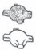
[类别] […] i
图1.5
作为用于生成该形式图的简单语法规则。嵌入在层次
贝叶斯框架中，这种方法可以发现许多现实世界领域的正确结构形式(语法)，以及适当形式的最佳结构(图)，如图1.2所示。特别是，它可以推断出图1.1a中新颖物体的层次组织(如图1.1b所示)比替代表示(如二维空间)更好地拟合了

人们在这些物体中看到的相似性。
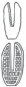
层次贝叶斯模型也可以用于学习抽象因果知识，如
疾病和症状的框架理论(图1.3)以及其他简单形式的直觉理论(Kemp et al., 2010b)。Mansinghka等人(2006)展示了如何学习表示两类变量疾病(D)和症状(S)的图模式(graph schema)，以及从D到S变量运行的因果链接偏好，这些可以从支持学习特定疾病和症状之间因果链接的相同数据中学习——并且学习得同样快或更快(图1.3b,c)。学习到的模式反过来显著加速了下一层级特定因果关系(有向图结构)的学习。首先获得大局观——在确定任何特定疾病-症状链接之前发现疾病导致症状——然后使用该框架来填补特定知识的空白，这是一种独特的人类学习模式。这种模式在儿童发展和科学进步中占据重要地位，但以前并不适合理性或统计学习模型的框架。
虽然这种HBM对因果网络的假设空间施加了强大而有价值的约束，但它也极其灵活：它可以发现由任意数量的变量类别和变量在这些类别中如何连接的任何成对规律模式定义的框架理论。认知科学贝叶斯方法简介 [21]
甚至变量类别的数量(疾病-症状理论中为两个)也不需要事先知道。这是通过另一个最先进的贝叶斯工具实现的，称为无限模型或非参数贝叶斯模型(见第9章)。这些模型假设无界的结构量，但对于给定的数据集，只有有限多个自由度被积极参与(Rasmussen, 2000)。贝叶斯推理中体现的对简单性的自动偏好平衡模型复杂性和拟合度，确保新结构——在这种情况下是新的变量类别——只有在数据真正需要时才会引入。
图1.3c中节点类别的特定非参数分布是中国餐厅过程(CRP)，它在机器学习和认知建模的许多领域都具有更广泛的影响。CRP模型首次提供了人们如何在没有直接监督的情况下形成新类别的原则性解释——包括当类别数量未知时的类别数量(Anderson, 1991a; Sanborn, Griffiths, & Navarro, 2010a; Griffiths, Sanborn, Canini, & Navarro, 2008c)。当观察到每个物体时，CRP模型推断该物体是最好通过同化到现有类别来解释，还是通过假设一个以前未见过的类别来解释，如图1.6所示。这是任何终身学习者在理解未知复杂性世界时面临的基本问题。看到新事物的第一个实例时，你如何知道它真的是一种新类型，还是仅仅是熟悉类型的奇怪实例？例如，第一次看到斑马或骆驼时，你可能试图将其理解为有黑白条纹的马或有两个驼峰的马。CRP捕获的不同概率压力的权衡使得以原则性和计算效率的方式回答这个问题成为可能。
非参数贝叶斯模型背后的基本原则——假设你
看到世界无限复杂性中的一小部分—可以应用到学习的其他方面。贝叶斯模型的优势之一是，底层的生成模型可以组合起来创建新的模型。如果我们假设不仅对象本身，而且对象的属性也形成聚类，我们就得到了一个新模型：CrossCat模型(Shafto, Kemp, Mansinghka, & Tenenbaum, 2011)，如图1.7所示。在现实世界中，由于其复杂性，单一的对象分类方式很少是充分的。不同类型属性的产生可能最好通过不同的对象分类方式来解释。早期的分类模型通常忽略了这种复杂性，但CrossCat通过发现捕获这些不同属性子类别的不同视角的聚类来捕获这种复杂性。非参数贝叶斯公式使CrossCat能够自动发现视角的数量和每个视角内类别的数量，还允许当遇到新对象、新属性或两者时，两个层次的结构都能增长。
中国餐厅过程(CRPs)可以嵌入到许多其他情况的概率模型中。例如，在语言方面，它们被用来解释儿童如何在未分割的语音中发现单词(Goldwater, Griffiths, & Johnson, 2009)，学习形态学规则(Johnson, Griffiths, & Goldwater, 2007b)，以及将词汇意义组织成层次语义网络(Griffiths, Steyvers, & Tenenbaum, 2007; Blei, Griffiths, & Jordan, 2010)(图1.8)。这种树状结构的语义网络长期以来一直被研究人类记忆结构和动态的认知心理学家所假设。然而，只有随着复杂的非参数贝叶斯模型的出现，我们才能够解释人们如何[22] [J.] [B.] [Tenenbaum,] [T.] [L.] [Griffiths,] [and] [N.] [Chater]
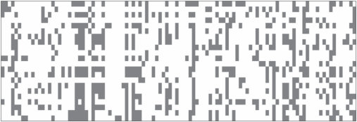
短吻鳄
蚂蚁
蝙蝠
蜜蜂
海豚
蜻蜓
鹰
雀
青蛙
蚱蜢
鬣蜥
水母
豹
猴子
章鱼
鸵鸟
猫头鹰
企鹅
蟒蛇
海鸥
海豹
绵羊
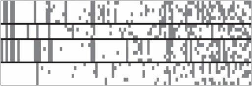
蝙蝠
海豚
豹
猴子
海豹
绵羊
短吻鳄
青蛙
鬣蜥
蟒蛇
鹰
雀
鸵鸟
猫头鹰
企鹅
海鸥
蚂蚁
蜜蜂
蜻蜓
蚱蜢
水母
章鱼
图1.6
使用中餐厅过程(Chinese Restaurant Process, CRP)进行无监督分类的说明图。(a) 数据由动物物种(行)及其解剖学、生理学、行为学和生态学属性(列)的矩阵组成。只有每隔一列才有标签。(b) 使用CRP作为先验的贝叶斯模型推断出动物最好分为四个大的分类学类别，大致对应哺乳动物、爬行动物和两栖动物、鸟类以及昆虫和无脊椎动物。类别数量和动物到类别的具体分配都是自动推断的。相对于(a)，行已重新排序以反映这四个类别，列已根据模型解释程度——它们在类别内的”纯净度”重新排序。图改编自Shafto等人(2011)。
能够从无监督的语言经验中发现这样的心理模型。一个相关但新颖的非参数构造，印度自助餐过程(Indian buffet process, IBP)解释了在对象分类过程中如何构建新的感知特征(Griffiths & Ghahramani, 2006; Austerweil & Griffiths, 2011)。
更一般地说，非参数贝叶斯模型解决了人类学习者在一生知识增长过程中面临的主要挑战：平衡约束和灵活性，或者说在任何时刻限制可用于泛化的假设的需要，与扩展假设空间、学习世界可能运作的新方式的能力之间的平衡。
在分层模型的更高层次放置非参数分布产生灵活的 认知科学的贝叶斯方法介绍 [23]
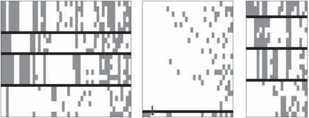
豹子 [[豹子]]
羊 [[鳄鱼]]
海豹 [[蟒蛇]]
海豚 [[海豹]]
猴子 [[海豚]]
蝙蝠 [[青蛙]]
鳄鱼 [[水母]]
鬣蜥 [[章鱼]]
青蛙 [[企鹅]]
蟒蛇 [[雀鸟]]
雀鸟 [[海鸥]]
鸵鸟 [[猫头鹰]]
海鸥 [[鹰]]
猫头鹰 [[蜻蜓]]
企鹅 [[蝙蝠]]
鹰 [[蚱蜢]]
蚱蜢 [[蚂蚁]]
蚂蚁 [[蜜蜂]]
水母 青蛙 蜜蜂 [[羊]]
猴子
章鱼 [[鬣蜥]]
蜻蜓 [[鸵鸟]]
图1.7
使用CrossCat模型进行多分类”视角”的无监督发现的说明图（Shafto等人，2011）。基于图1.6中的动物-属性数据，CrossCat发现了三个视角，显示在这里的三个面板中。左侧视角完全对应于图1.3b中Chinese restaurant process发现的分类学分类。主要的核心生物学属性与此视角相关：解剖学和生理学特征，如”有骨头”、“产卵”、“是温血动物”、“有喙”等等。中间视角由许多特异性属性组成——在这个数据集中，这些特征只有少数物种具有，并且不会与许多其他属性以连贯的方式共变。右侧视角最有趣，因为它捕获了一个直观上令人信服且连贯的结构，这个结构完全被CRP遗漏，但对许多自然推理任务可能很重要。在这里，物种根据生态位和捕食者/猎物角色进行分类：从上到下，各组对应于陆地捕食者、水生物种、空中物种和陆地猎物。相关属性同样主要是生态学相关的——“凶猛”、“是肉食动物”、“生活在水中”、“会飞”、“吃动物”等等——这些不能很好地用该领域的主导分类学类别结构解释，但能很好地适应这种组织物种的替代方式。如图1.6所示，只标注了每隔一列。图表改编自Shafto等人（2011）。
较低层次的归纳偏差，而贝叶斯对简单性的偏好确保了随着知识增长，约束和灵活性的适当平衡。
通过几个抽象知识学习的案例研究——发现结构形式、因果框架理论，以及通过迁移学习获得的其他归纳约束——发现HBM中的抽象化可以学得非常快，与较低层次的学习所需数据相比，需要的数据相对较少。这是因为HBM较高层次的每个自由度都会影响——并汇集来自——下层许多变量的证据。HBM的这一特性被称为抽象化的祝福（blessing of abstraction）（Goodman, Ullman, & Tenenbaum, 2011）。它提供了一条自上而下的知识起源路径，与两种经典方法形成鲜明对比：先天论（nativism）（Chomsky, 1986; Spelke, Breinlinger, Macomber, & Jacobson, 1992），假设抽象概念从出生时就存在；以及经验主义或联想主义（empiricism or associationism）（Rogers & McClelland, 2004），其中抽象化是构建的，但只是近似地，并且只是缓慢地，以自下而上的方式，通过将许多经验层叠在一起并过滤出它们的共同元素。因此，只有HBM似乎适合解释人类抽象知识的两个最显著特征：它可以从经验中学习，并且可以在生命早期就显著地参与，为更具体的学习任务提供约束。
24 J. B. Tenenbaum, T. L. Griffiths, and N. Chater
hiv
重组 聚合酶 复制 dna 类 tcr 病毒 pax 球蛋白 病毒的 肿瘤 fgf prp hla 感染 前列腺 视网膜 抗体 朊病毒 nk ccr 突触的 视杆细胞 抗 hd mhc 受体 光感受器 癌症 gata 谷氨酸 能量 gaba 时间 ca 方法 链 理论 荧光 t cd 视觉 细胞 神经元 抗原 皮层 大脑 任务 il 神经元的 听觉 残基 皮层 刺激 螺旋 记忆 结构 酶 折叠 催化的 app 位点 状态 ps 结构 notch 反应 THE 淀粉样
囊壳 OF 阿尔茨海默
IN AND 肝素 fn A 基因 物种 基因组 进化 序列 酶 遗传的 基因组 植物 生物合成 种群 基因座 植物 酸 种群 拟南芥 大肠杆菌 叶子 合成酶 hsp 过氧化物酶体的 apo 尿素 固定 cho 气候 雄性 纤溶酶原 pex 全球的 雌性 hta 铁 pts 碳 雄性 pu fe 胆固醇 氧气 化石 雌性 宿主 ra 年 性的 o 毒力 rar 血红素 寄生虫 甾醇 疟疾 ldl 寄生虫
图 1.8
[嵌套][中餐厅][过程]是一个非参数层次模型的基础，该模型能够从文本语料库中自动发现类似人类的语义网络(Blei et al., 2010)。该模型的输入是大量文档集合，以语言中每个词在该文档中出现次数来表示。输出是一个”主题”的根树，以及每个文档指向树中某个叶节点的指针。在这里，文本语料库由来自美国国家科学院院刊的摘要组成。主题是具有共同语义主题的特征词分布，例如这里的”神经科学”或”进化生物学”，或在树的较低层级，更细粒度的主题，如”突触可塑性”或”感知”。显示了每个主题的几个最具特征性的词汇。该模型试图通过将每个文档中观察到的词汇分布与从根到包含该文档的叶节点路径上的主题特征词组合进行拟合来解释语料库数据。图改编自Blei et al. (2010)。
1.2.4 使用知识指导行动
到目前为止，我们一直专注于知识的形式以及如何获得知识。
然而，对于任何有机体来说，知识的真正价值在于它使得采取更明智的行动成为可能。那么我们应该如何选择做什么呢？这将我们带到Q4：我们如何使用我们的世界模型来做决策并在世界中成功行动？
认知贝叶斯模型的一个优点是，它们在贝叶斯统计学中的基础为这个问题提供了直接的答案。近一个世纪以来，统计学家和概率论者一直在探索信念与行动之间的关系，产生了关于统计决策理论的大量文献(见第7章)。如果人们对其行动结果的偏好满足一些简单规则，那么这些偏好可以通过为每个可能结果分配效用(utility)来捕捉(其中更高的效用表示结果更理想)。一个理性智能体，对世界有信念
图1.9
一个序列决策问题。(a) 我们如何从起始点(左下角)到达目标(右上角的绿色和黄色方块)，在避开蓝色和黑色显示的障碍物的同时尽可能高效？这个问题可以形式化为一个MDP，其中状态对应于智能体的位置，行动是智能体可以移动到的地方，奖励是到达目标的正收益，但路径上的每一步都有小的成本。(b) 人们对这些问题的表征可以用认知资源的有效利用来解释。顶行显示了一个试图在最小化考虑对象数量的同时找到路径的模型所表示的对象。底行显示了人类参与者在解决导航任务后被问及这些对象时对它们的意识程度。图改编自Ho et al. (2022)。
以假设的概率分布表达，寻求最大化其行动结果的期望效用。
统计决策理论的原理超越了个体决策，使得描述智能体应该如何执行一系列相互依赖的行动成为可能。例如，考虑图1.9a所示的问题。目标是到达右上角的黄色方块，从左下角标有圆圈的方块开始。从每个方块，可用的行动是向上、下、左或右移动到相邻方块。然而，蓝色和黑色显示的障碍物无法穿越——试图穿过它们会导致留在同一方块中。你做出的每一步移动都会改变你的位置，从而改变你可用的选择。
这种序列决策问题可以用马尔可夫决策过程(Markov decision process, MDP)来描述，其中智能体的当前位置被编码为系统的状态，行动(概率性地)修改该状态(在第7章中有更详细的描述)。到达目标提供一些奖励，但到达那里的每一步都有成本。目标是最大化期望长期奖励，即智能体采取的所有行动的总和。以这些术语表达，可以使用动态规划等复杂算法来计算每个状态下的最优行动——智能体在这种情况下应该遵循的策略(policy)。
MDP在贝叶斯模型和心理学中的两个经典主题之间提供了联系：问题解决和强化学习。问题解决自Herbert Simon和Allen Newell的开创性工作以来一直是认知心理学的核心主题，他们以在抽象”问题空间”中的搜索来描述它：每个可能的行动
导致一个新状态，该状态具有另一组可能的行动，从而产生决策的分支树结构（Newell & Simon, 1972）。对于确定性任务，这种问题表述精确地映射到马尔可夫决策过程(MDP)的结构上。然而，马尔可夫决策过程通过允许行动仅以概率方式影响状态的可能性来扩展这一想法——例如，尝试的行动有一定失败的可能性。在部分可观察马尔可夫决策过程(POMDPs)中可以引入更多不确定性，这种过程允许智能体实际上不知道自己处于什么状态，而需要从可观察特征中推断这些信息。在图1.9a所示的例子中，智能体可能不是从左下角开始，而是从随机选择的方格开始，必须基于附近障碍物的有限感知信息来识别该方格。这种不确定性是许多现实世界问题解决情况的固有特征，因此解决马尔可夫决策过程和部分可观察马尔可夫决策过程的方法为我们提供了关于人类认知的丰富思想来源。
强化学习引入了另一种不确定性：到目前为止，我们一直假设智能体知道其行动的后果，但如果这也必须学习呢？强化学习问题是在缺乏关于行动如何修改状态或可能产生什么成本或奖励信息的情况下，试图找到马尔可夫决策过程的最优策略。智能体必须通过经验获取这些信息。这可以通过两种截然不同的策略来完成：无模型(model-free)方法专注于简单学习在给定状态下要采取的最佳行动，也许通过估计与每个行动相关的奖励；同时，基于模型(model-based)方法试图估计与每个行动相关的状态和奖励的概率分布，然后通过解决结果马尔可夫决策过程来找到最优策略（Daw, Niv, & Dayan, 2005）。这两种策略映射到人类认知的不同方面。无模型学习类似于人类与许多其他动物共享的联想学习机制，在状态和行动之间形成联想。基于模型的学习更加深思熟虑，为使用本章讨论的获取和表示知识的复杂工具提供了机会。
目前，在人工智能应用中占主导地位的强化学习算法属于无模型类别（广义上）。这些算法基于使用大型神经网络来学习状态与行动相关奖励之间的关系（Mnih et al., 2015）或直接学习策略（Sutton, Precup, & Singh, 1999）。这种方法具有影响力，部分原因是现代机器学习专注于能够生成这些系统学习做出良好决策所需的大量数据的环境。例如，对于电脑游戏、棋类游戏或模拟环境，通过根据需要多次运行游戏或模拟来获得所需的尽可能多的数据是容易的。人类学习者能够从数量级更少的数据中学习新任务，因为他们能够构建其环境的明确模型，从而显著约束学习问题。能够学习结构化表示，如直接从数据中学习简单程序，使得从有限经验中学习复杂策略成为可能（Tsividis et al., 2021）。
到目前为止，我们将贝叶斯推理作为归纳问题的理想解决方案。以这种方式使用，贝叶斯方法让我们能够预测任何智能体应该如何解决这些问题。实际上，我们在认知贝叶斯模型方面的大部分工作都受到Roger Shepard的想法启发，即我们应该能够通过思考所有智能体需要解决的抽象问题的理想解决方案来识别认知的普遍规律（Shepard, 1987）。
然而，这样的理想解决方案不仅在最优意义上是理想的，而且在无法实现的意义上也是理想的。大型概率模型中精确推理的高计算成本意味着人类思维和大脑最多只能近似贝叶斯计算，就像在任何工作的贝叶斯人工智能系统中一样（Russell & Norvig, 2021）。这提出了问题5：在计算资源有限的思维中，如何有效地实现复杂世界模型的学习和推理？
回答这个问题的一种方法是参考计算机科学和统计学中用于近似贝叶斯推理的算法（见第6章）。从这个角度来看，关键研究问题是：思维使用什么近似算法？它们与人工智能中的工程近似有什么关系？它们如何在神经回路中实现？
人们已经追求了这些问题的两种不同答案。一条研究路线专注于蒙特卡罗(Monte Carlo)或基于随机采样的近似，作为理解贝叶斯推理如何在思维、大脑和机器的所有这些层面上实际工作的统一框架（Sanborn, Griffiths, & Navarro, 2006; Brown & Steyvers, 2009; Fiser, Berkes, Orbán, & Lengyel, 2010; Vul, Goodman, Griffiths, & Tenenbaum, 2014）。这种方法在第11章中进行了回顾。在结构丰富的模型中进行蒙特卡罗推理是可能的（例如，Goodman, Mansinghka, et al., 2008a），但非常缓慢；构建更高效的采样器是当前工作的主要焦点。
另一条研究路线专注于通过用更易于处理的概率分布来替代复杂概率计算的近似方法。特别是，在训练人工神经网络方法方面的最新进展使得训练这样的网络来近似任意概率分布成为可能。通过训练神经网络来在给定观察数据的条件下近似假设的后验分布，我们可以创建一个摊销推理(amortized inference)系统，该系统付出显著的前期成本（训练）来降低新观察的推理成本（Dasgupta & Gershman, 2021）。这种方法在第12章中进行了总结。
不同算法近似贝叶斯推理的可用性产生了一个新问题：我们如何知道使用哪种算法？即使我们选定了一种算法——比如从后验分布中采样的算法——我们如何知道要抽取多少样本？考虑这些问题需要思考近似质量与计算所需时间之间的权衡——这些量可能对任何人类决策都至关重要。对这种权衡的早期研究产生了一个也许令人惊讶的结果：在许多情况下，抽取单个样本就能达到正确的平衡（Vul et al., 2014）。这种一次完成(one and done)策略的副作用是解释了一个奇特的观察：当人们执行建模为贝叶斯推理的任务时，他们选择假设的概率往往与这些假设的后验概率密切对应。这种概率匹配(probability matching)正是我们在基于单个样本做出决策时所期望的。
考虑这种权衡为另一个关于我们如何从如此少的信息中获得如此多内容的问题提供了答案：我们如何在有限的计算资源下实时解决如此广泛的归纳问题？答案必须是我们很好地利用了这些有限的资源，对如何以及何时进行近似做出了明智的决策。这个想法引发了一波研究浪潮，探索我们能在多大程度上用认知资源的合理使用来解释人类行为（概述见Lieder & Griffiths, 2020，以及本书第13章）。当应用于决策制定时，这种观点提供了一种方法来调和卡尼曼和特沃斯基的启发式和偏见(heuristics and biases)研究项目（例如，Tversky & Kahneman, 1974）与认知的贝叶斯模型，将好的启发式定义为在近似质量和计算成本之间取得正确平衡的方法。
明智地使用我们的认知资源不仅意味着使用高效的算法——我们在做决策时遵循的启发式和策略。这也意味着使用高效的表征。我们可以将相同的视角应用于问题解决文献中的另一组经典问题：人们如何选择问题的哪些方面进行表征？他们如何选择有意义的子目标？这些问题可以根据特定表征对规划的支持程度来分析。例如，当人们解决像图1.9a所示的序列决策问题时，他们似乎会最小化在问题表征中包含的对象数量。图1.9b显示了假设每个对象都与表征成本相关的模型的预测，人们在这种成本与他们能够形成的计划质量之间进行权衡（Ho et al., 2022）。
像采样和摊销推理这样的方法为我们提供了一种方式来了解人类思维和大脑如何能够执行贝叶斯推理中涉及的挑战性计算。然而，当我们考虑涉及人们世界模型的全部复杂性的问题时，即使这些算法也会遇到困难。这一挑战是Q6的核心：世界模型如何在物理机器、大脑或计算机中实现？
这一挑战部分源于我们的发现，即形式化直观理论的完整内容似乎需要图灵完备的组合表征，甚至超越了概率一阶逻辑（Milch, Marthi, & Russell, 2004; Kemp, Goodman, & Tenenbaum, 2008b），正如我们在第17章中发展的，到通用概率编程语言(universal probabilistic programming languages)（Goodman, Mansinghka, Roy, Bonawitz, & Tenenbaum, 2012）（第18章）。
值得注意的是，所有可计算概率模型和条件分布的类别在这些语言中很容易定义，使用一种称为随机λ演算(stochastic λ-calculus)的形式化方法。原则上它涵盖了任何计算代理可能执行的任何贝叶斯推理。这包括关于最能解释（最可能生成）观察数据集的程序的贝叶斯推理——换句话说，概率程序的贝叶斯学习(Bayesian learning of probabilistic programs)。有效约束具有如此灵活表征的学习是一个挑战，有效实现或甚至粗略近似在如此表达性语言中的概率推理和学习更是如此。我们在第18章和第19章中探讨这些问题，但对富结构程序类表征的高效和可扩展概率推理的最困难挑战大多仍有待未来工作。这也是一个严肃参与认知的神经计算基础可能有用，甚至必要的领域。
实际上，我们逆向工程思维项目的最大剩余挑战是
可能是理解不仅仅是概率推理，还包括结构化符号知识，以及对符号结构的推理，如何在神经回路中表示。连接主义模型传统上通过否定——或避免讨论如何——大脑实际编码如此丰富的知识这一命题来回避这些挑战。相比之下，贝叶斯方法试图直接参与认知科学和人工智能传统，展示显式符号表示和语言对思维的各种价值，但随后神经实现这些结构的挑战就变得突出。揭示它们的神经基础可以说是认知神经科学中最大的计算挑战——我们现代的心身问题。
本章目前的焦点一直是如何构建心智——识别各个组成部分，如分层和非参数贝叶斯推理、结构化表示，以及用于行动和思考的智能策略，我们认为这些解释了人类认知的不同方面。但心智不仅仅是被构建的——它们还会成长。如何可能培养一个心智？这一切是如何开始的？这就是Q7：我们世界模型在进化和发展中的起源是什么——婴儿大脑中内置了什么，孩子们如何在起点内外进行学习？
如前所述，哲学对这些问题提供了两种观点：强调先天知识的先天论观点，以及强调学习的经验论观点。现代发展心理学提供了这些立场的更细致版本。核心知识传统的发展心理学家认为，学习只有在一些先天的抽象概念库存（如agent（代理）、object（对象）和cause（因果））的基础上才能起步，以提供分割经验的基本本体论（Carey, 2009; Spelke, 2022）。当然，心理表征的某些方面是先天的，但在不争议这一点的情况下，贝叶斯建模者最近论证，即使是最抽象的概念原则上也可能被学习。例如，表达为有向图结构逻辑约束的抽象因果概念可以从HBM中的经验中学习，该模型在许多特定因果系统的网络结构中进行泛化，如图1.3d所示。遵循”抽象的祝福”，这些约束可以仅从每个网络行为的小样本中诱导出来，并反过来为新系统实现更高效的因果学习（Goodman et al., 2011）。这种分析如何扩展到其他抽象概念（如agent或object），以及儿童是否实际以这种方式获得他们最深层的抽象概念，仍然是基本开放的问题。
虽然HBM已经解决了简单形式抽象知识的获得问题，但它们只涉及认知发展中最困难的主题：核心常识领域的框架理论，如直觉物理学、心理学和生物学（Carey, 1985, 2009; Gopnik & Meltzoff, 1997）。已经采取了第一步来解释发展中的心理理论——儿童如何理解明确的错误信念（Goodman et al., 2006）和偏好的个体差异（Lucas, Griffiths et al., 2014）——以及直觉生物学中本质主义理论的起源，以及在直觉物理学中形成关于磁力和其他新力量的信念（Griffiths & Tenenbaum, 2007b; Kemp et al., 2010b; Bonawitz, Ullman, Bridgers, Gopnik, & Tenenbaum, 2019; Ullman, Stuhlmüller, Goodman, & Tenenbaum, 2018）。
我们将在第20章中概述其中一些发展模型，以及旨在从对象系统、场所系统和代理系统的角度捕捉幼儿一些最早核心知识能力的最新工作（图1.10）。总的来说，这些可以通过对概率生成模拟器的贝叶斯推理进行建模，表示围绕一套近似和
世界状态 代理状态
感知
图像(t) 图像(t+1) 对象 行动代理
图1.10
受Spelke和Kinzler (2007)以及Spelke (2022)启发，幼儿在直觉物理学和直觉心理学方面的核心常识能力，可以通过对世界结构化生成模型的概率推理来建模，这在某些方面类似于视频游戏引擎的简化和近似——因此这些模型通常被称为”头脑中的游戏引擎”(Ullman, Spelke, Battaglia, & Tenenbaum, 2017)。这些模型捕捉了儿童在短时间和空间尺度内，在一系列可能行动下概率性地模拟可能或潜在未来结果的能力——从而选择能够产生期望结果的行动(a)。以这种方式建模的核心系统包括(b)用于预测动态物理事件的对象系统，例如球的滚动及其与积木堆的碰撞(如(a)中所示)，以及(c)用于在空间中导航和定向的位置系统，与用于推理他人信念如何通过目标导向规划产生行动并通过感知推理和推理过程更新其信息内容的代理系统相集成。
我们称之为”头脑中的游戏引擎”的简化(Ullman et al., 2017; Lake, Ullman, Tenenbaum, & Gershman, 2017)。由此产生的架构作为认知发展中先天能力的候选假设，以及早期学习的计算基础(Ullman & Tenenbaum, 2020)。在第14章和第15章中，我们介绍了这些模型以及它们作为成人直觉物理学和直觉心理学模型被严格和定量测试的一些方法。我们还概述了这些模型如何整合到统一的”概率思维语言(PLoT)“认知架构观点中，利用概率编程语言中知识表示和推理的基本基于仿真的性质(第18章)，并介绍程序归纳方法，通过这些方法，这些模拟器可能在学习和发展过程中扩展超越其初始核心能力(第19章)。
贝叶斯定理的标准表述，如方程(1.1)，设想学习者从数据中进行推理。但这些数据从何而来？在我们到目前为止讨论的许多模型中，这些数据由世界生成，从学习者试图构建世界模型来捕捉的过程中采样。但实际上，人类学习很大程度上依赖于不同类型的数据：由人产生的数据。我们不可能直接体验足够多的世界来构建所有与指导智能行动相关的世界方面的丰富模型。因此，我们依赖他人告诉我们他们的经历，为我们提供以支持学习的方式结构化的数据，并有效地积累和提炼他们反过来学习的人的见解。理解这些数据来源是回答我们最后一个问题Q8的关键：扩大学习规模以涵盖人类在其一生中获得的所有知识以及人类文化在几代人中构建的知识需要什么？
与其他学习范式(如人工神经网络)相比，认知贝叶斯模型的一个独特方面是它们需要精确指定关于数据如何生成的假设。贝叶斯定理中的P(d|h)项需要纳入数据生成过程的模型，以便能够为我们可能观察到的每个d分配概率。这种对数据采样方式的敏感性甚至在早期的概念学习贝叶斯模型(Tenenbaum, 2000)和词汇学习模型(Xu & Tenenbaum, 2007)中就得到了探索。
关于采样假设的早期工作发展成为使用贝叶斯模型理解教学法和交流原则的丰富文献。通过分析教师考虑什么数据对学习者最有益的教学思维，以及学习者假设教师正在进行这样的思考过程，产生的模型显示了如何用非常少量的数据传达复杂概念(Shafto, Goodman, & Griffiths, 2014)。
语言更广泛地为应用认知贝叶斯模型提供了丰富的机会，不仅在理解语言的各个方面是如何学习的，而且在了解人们如何从他人所说的话中学习和推理。实际上，在有影响力的语用语言推理理性言语行为(Rational Speech Act)框架中起作用的是相同的原则(Goodman & Frank, 2016)，该框架提供了一种理解经典发现的方法，即人们话语的解释既取决于他们说了什么，也取决于他们没有说什么(见第16章)。这里的技巧是，听者不局限于阅读所说内容的字面意思——听者也知道说话者选择使用那个特定的话语(而不是各种各样的其他可能性)——因此，假设说话者试图尽可能提供信息，这允许听者推断出超出实际所说内容的信息。例如，听到”这部戏有许多好的”
特质”时，听者很可能会推断说话者认为这部戏至少有同样多的不良特质，而且说话者总体上很可能不喜欢这部戏，否则他们会更加积极正面。推理图景还更加复杂，因为说话者在选择用词时知道听者会做出这样的推断（即说话者会使用贝叶斯推理来推断听者的理解）。听者也可能会考虑到这一事实，从而上升到更高层次的推理；这个过程可以无限制地继续下去，除非受到我们计算能力的限制。
语言中的贝叶斯语用学也可以看作是更一般的贝叶斯”心理理论”或”心智化”(mentalizing)处理的特例：这是人类观察其他主体行为并推断产生这些行为的信念、欲望和意图的核心能力，假设这些行为是主体大脑中近似理性的目标导向规划和决策过程的结果。第14章发展了建模心理理论的贝叶斯方法，重点是理解在我们周围和我们本地环境中移动的主体的行为，在相对较短的空间和时间尺度上，正如Baker、Saxe和Tenenbaum (2009)、Lucas、Griffiths等(2014)、Jern、Lucas和Kemp (2017)、Jara-Ettinger、Gweon、Schulz和Tenenbaum (2016)、Baker、Jara-Ettinger、Saxe和Tenenbaum (2017)以及Ullman等(2009)的开创性工作所发展的。该框架的核心观点是，个体通过观察他人的行为来推断他们的意图和信念，然后”反转”主体的规划过程。贝叶斯逆向规划不是基于给定意图预测未来行为（如前向规划和理性决策；见第7章），而是从观察到的行为开始，反向推导出最有可能产生这些行为的意图和信念。为了实现这一点，该模型使用贝叶斯规则，将关于行为者偏好和意图的先验信念与观察到的行为的可能性相结合（假设这些意图假设了一个近似理性的规划者），从而产生可能意图的后验分布。这种方法提供了一种结构化的方式来根据潜在心理状态解释他人的行为，不仅为我们提供了人类理解和预测他人行为能力背后的候选机制，而且为人类社会认知和更广泛的认知文化基础开辟了广阔的洞察和建模机会景观。
最后，贝叶斯方法可以用来阐明文化学习的某些方面。通过考虑信息在一系列贝叶斯学习者中传递时如何变化，我们可以探索这些学习者的归纳偏见如何影响文化传播过程的结果（见第10章）。这种迭代学习过程可以改变正在传播的信息，使其与学习者的先验更加一致，从而使后续学习者更容易学习（Griffiths & Kalish, 2007）。这提供了一种理解代代相传的文化对象如何被人类大脑塑造的方式。在这种观点下，语言——从一个说话者传递到另一个说话者——应该会改变以采取更容易学习的形式，这为理解人类学习者如何能够从有限数据中习得这些语言提供了另一种方式。
在本书中介绍贝叶斯方法时，我们选择强调其根本哲学是逆向工程的事实。要创建认知的贝叶斯模型，我们首先要思考大脑正在解决的计算问题。这涉及识别可用于学习的数据，指定关于这些数据是如何生成的假设，并为这些假设分配先验概率。然后贝叶斯规则表明该问题的理想解决方案，生成可以与人类行为进行比较的预测。如果我们看到模型和行为之间的对应关系——特别是如果我们进行进一步的实验来测试模型的预测时这种对应关系仍然成立——那么我们就有了一种理解人们为什么可能在做他们正在做的事情的方式，以及一个我们可以用来制造执行类似任务的机器的模型。
这种逆向工程方法体现了David Marr首次阐述的在认知科学中取得进展的观点——分析层次的概念。Marr (1982)认为信息处理系统可以在三个层次上进行分析：计算层次描述系统解决的问题以及在自然环境中从可用输入计算其解决方案的原则；算法层次分析描述执行以产生这种解决方案的程序以及算法操作的表征或数据结构；实现层次指定这些算法和数据结构如何在大脑或机器的电路中实例化。逆向工程意味着从计算层次开始，在深入算法和实现之前试图理解系统的功能。因此，我们将其称为自上而下或功能优先方法（Griffiths等，2010）。这个想法在Anderson (1990)的理性
分析，专注于根据环境所带来问题的适应性解决方案来分析认知，并产生了一些开创性的贝叶斯认知模型。
许多早期的贝叶斯模型只处理计算层面，将认知纯粹以功能性术语描述为给定环境中近似最优的统计推理，而不涉及如何执行计算（Oaksford & Chater, 2001; Tenenbaum & Griffiths, 2001b; Griffiths & Tenenbaum, 2007b）。后续工作，如我们在Q5回答中总结的那些，已经开始探索如何使用相同的优化原理来指导较低层面的研究。资源理性分析(resource-rational analysis)（Griffiths, Lieder, & Goodman, 2015）明确旨在理解人们的认知过程——一个算法层面的问题——将其视为解决方案质量与计算成本之间权衡的最优解决方案。
对最优解决方案作为理解人类认知洞察来源的关注，是将认知科学中的贝叶斯模型与统计学、机器学习和人工智能研究连接起来的部分原因。这些学科专注于解决推理和优化问题，提供了可以应用于理解人类认知的丰富解决方案来源。在机器面临与人类相似的计算问题的程度上，我们也可以希望将人类的解决方案反向输出到这些不同的学科中。
这种逆向工程视角将认知的贝叶斯模型置于与心理学传统计算建模努力略有不同的类别中。虽然认知心理学家通常可能希望阐明人类行为背后的机制，但我们在本书中提出的模型在另一个抽象层面上运作。
将这些模型作为认知过程的声明是混淆的潜在来源（这一点在第22章中进一步讨论）。例如，用贝叶斯推理来解释概念学习并不意味着我们期望人们在头脑中明确计算贝叶斯法则。这意味着该模型的假设——特别是关于归纳偏差(inductive biases)的假设——与人们的行为相一致，帮助我们根据对概念学习任务抽象表述的理想反应来理解该行为。
当我们发现贝叶斯模型捕捉到人们的行为时，对于他们头脑中发生的事情有几种可能性。在罕见情况下，他们可能实际上明确执行贝叶斯推理。更典型的是，他们遵循一种策略，隐式地允许他们近似贝叶斯法则指示的理想解决方案。
这使我们能够预测他们在其他情况下的行为方式，并为我们提供关于可能在起作用的表征和算法类型的线索。它还突出了人们行为背后的隐含假设，这些假设可以提供更深入的洞察，或者允许我们构建做出类似假设的机器。
这可能引起的一个担忧是它是否会产生一个可证伪的理论。许多科学家使用波普尔（1959/1990）强调的标准来评估理论，认为理论只有在做出可以测试并可能被证明为假的预测时才有价值。我们概述的方法——其中我们需要假设人们产生接近问题最优解决方案的东西，以使逆向工程有效——听起来并不特别可证伪，因为我们可以在如何定义问题及其解决方案方面做出很多选择。我们同意这一点——最优性的基本假设是不可证伪的。但它也不是作为理论声明而意图的。我们并不是在断言人们是最优的、理性的，或者符合某些特定的理想。相反，我们建议这个假设可以作为生成人类认知解释的手段而有用——一个方法论框架，而不是一个意图被证伪的理论。在这个理论内生成的个别理论可以被测试并被证明是错误的，但通过考虑计算问题的理想解决方案来理解人类认知的更广泛想法是一个应该基于其在产生有意义解释方面的效用来评估的框架。这种观点与更近期的科学哲学家（例如，Lakatos, 1970; Godfrey-Smith, 2003）所采取的立场一致，为波普尔倡导的对证伪的狭隘关注提供了更新。
我们概述了一种根据对丰富结构化、分层生成模型的贝叶斯推理来理解认知及其起源的方法。虽然我们远未完全理解人类思维如何工作和发展，但贝叶斯方法在几个方面使我们更接近这一目标。首先是统一数学语言的前景，用于将认知框架为归纳问题的解决方案，并以最少的自由参数和临时假设构建原则性的思维定量模型。另一个更深层的贡献是一个理解思维为什么以这种方式工作的框架，即根据适应现实世界环境结构的理性推理，以及思维对世界的了解——抽象模式(abstract schemas)和直觉理论(intuitive theories)，这些只能通过它们如何约束泛化来间接揭示。
最重要的是，贝叶斯方法让我们超越了长期塑造和限制认知科学辩论的经典”非此即彼”二分法：“经验主义对
nativism，” “domain-general versus domain-specific，” “logic versus probability，” 以及 “symbols versus statistics。” 相反，我们可以提出更难的逆向工程问题，并获得足够丰富的答案来帮助我们构建更像人类的AI。领域通用的学习和表征机制如何构建领域特定的知识系统？结构化符号知识如何通过统计学习获得？正在出现的答案提出了思考认知系统发展的新方式。强大的抽象可以令人惊讶地快速学习，与更具体的知识一起学习或在学习之前就被获得。结构化符号表征不必是僵化的、静态的、硬连线的或脆弱的。嵌入在概率框架中，它们可以动态且稳健地响应经验中稀疏、嘈杂的数据而增长。
总的来说，我们在本书中提出的方法提供了一种统一的数学语言，可以在所有认知科学领域中使用。归纳问题出现在认知科学家传统研究的所有领域中：不仅仅是学习和推理，还有视觉、语言、社会互动，甚至基本的认知过程如记忆和注意力。它还在AI和认知科学之间、工程和逆向工程之间架起了桥梁。即使人工神经网络目前主导着AI中使用的方法，我们相信这里阐述的原理对于理解任何类型的智能系统都是必不可少的。它们还可以帮助我们理解人们如何从少量数据中学习并充分利用他们有限的认知资源——这两种能力与训练AI系统时使用的大量数据和计算的增加形成了鲜明对比。因此，当这些AI系统开始达到数据和计算规模化的极限时，它们可以为下一步发展提供指导，如果我们想要构建更像人类学习和思考的AI系统，它们也可以为现在的发展提供指导。
Nick Chater, Thomas L. Griffiths, and Joshua B. Tenenbaum
认知科学的创立目标是以计算术语理解心智和大脑。如果大脑要被理解为一种生物计算机，那么关于计算原理上如何工作的想法将是创建心智/大脑工作假设时的重要灵感源泉。因此，为了逆向工程心智，我们应该从致力于构建智能机器的工程学科中寻找灵感。因此，正如我们在第1章中描述的，认知科学的起点是其孪生学科人工智能(AI)和更广泛的计算机科学。
不过，这种描述在各种方式上都过于简化了。首先，即使心智是一种生物计算机，我们也应该期待它看起来和运作起来都与我们实际构建的任何计算机或编写的计算机程序非常不同。当然，这在逆向工程中普遍如此——心脏可能是一个泵，但它与任何人类设计的泵都非常不同，且远更复杂。大脑看起来当然不像硅芯片，所以如果大脑是生物计算机，与真实计算机的任何关系都可能是相当抽象的，绝不明显。其次，逆向工程不仅需要被动地从计算机科学家碰巧为其他目的创造的工具中进行选择（如进行算术运算或构建数据库）。实际上，通过解决人类智能如何工作的问题，认知科学本身有助于启发新的计算思想和方法。正如在科学的其他领域一样，自然可以为新的工程解决方案提供灵感。因此，洞察在支撑AI的工程学科和认知科学的逆向工程项目之间双向流动。
然而，不可避免地，如果我们通过逆向工程的视角来看待认知科学项目，我们应该期待该领域的发展受到可用的工程、计算和数学工具和技术库存的强烈影响。在本章中，我们描述了认知科学中建立在不同工程思想风格基础上的三个有影响力的传统：符号AI、连接主义(connectionism)和认知的理性方法。本书探索的观点可以被视为这些方法中每种关键洞察的综合。这种综合的可能性本身依赖于新的工程发展，特别是使用和学习复杂概率模型的技术，即在结构化表征（如图、语法或程序）上定义的概率模型。探索这些模型及其在帮助理解人类认知多样化领域中的应用，是本书的核心主题。
本章从这个角度概述了认知科学的一些历史，以及它与其孪生学科AI的相互作用。前三节依次描述了符号、连接主义和理性研究传统。基于第1章，我们然后注意到来自机器学习、计算语言学等领域的工程发展如何
学、语言学和计算视觉学等领域的发展使得这些方法的综合成为可能，通过在复杂的符号表征上开发复杂概率模型的推理方法，这些表征最终可能在连接主义网络中实现并具有理性的理论依据。这种整合的观点为本书其余部分的叙述提供了起点，本书将介绍和解释复杂性逐步递增的认知概率模型。我们还将强调，逆向工程方法建议对心智采用自上而下的方法，专注于理解心智解决的计算问题，然后再转向实现其计算的神经硬件。尽管采用这种自上而下的焦点，如何将复杂的概率模型有效地嵌入到大脑的生物机制中仍然是未来研究的一个重大而关键的挑战。
我们已经注意到，认知科学的目标是从计算角度理解心智。因此，从1950年代末该学科开始时起，认知科学家很自然地以前十年左右出现的计算理论和实践为起点。这是非常有意识和自觉地进行的：因此，早期数字计算的核心特征被早期认知科学作为关于心智运作的假设而采纳。
实际上，早期认知科学和人工智能的两位先驱Allen Newell和Herbert Simon提出了物理符号系统假设：人类智能是一个符号操作系统，在大脑硬件中物理实例化，就像数字计算机通过在硅芯片中操作符号来运作一样（Newell & Simon, 1976）。
这在实践中意味着什么？让我们从一个简单的信息处理挑战开始，比如将单词列表按字母顺序排序。首先，我们需要某种表示单个单词的方法；我们需要某种数据结构来表示它们当前的顺序——通常是一种称为列表的数据结构。列表由可以对其执行的信息处理操作来定义。例如，给定一个列表，我们可以在开头添加一个新项目，这样pear可以添加到列表[banana, orange, blueberry]中，创建一个新列表：[pear, banana, orange, blueberry]。相比之下，在这种技术意义上的列表（不同于日常的”购物清单”意义），一个项目不能直接添加到列表的末端。我们还可以直接移除列表的第一个项目（或”头部”）（剥离pear）留下[banana, orange, blueberry]（但同样，对于列表，我们不能直接剥离最后一个项目，blueberry）。
因此，将列表按字母顺序排列将涉及复杂的符号操作过程，其中项目被从列表中剥离出来，相互比较以查看哪个在字母表中更早，并最终重新组装成最终列表。这种符号操作过程
图2.1
图灵机：最简单的物理符号系统。图灵机由一个无限长的磁带组成，在磁带上可以写入和读取有限的符号集合（这个集合可以只有两个基本符号，我们可以标记为”0”和”1”，其他符号可以编码为0和1的字符串）。一个非常简单的”控制器”系统在磁带上一次移动一步。在每一步中，它只能读取其在磁带上当前位置的符号，根据该符号和控制器的当前状态（有限数量的可能状态之一），它可能重写磁带上的当前符号，和/或沿磁带向左或向右移动一步。随着时间的推移，磁带上的符号字符串将逐渐改变，表示计算的步骤，并在机器停止时最终给出计算的输出。一个简单但关键的进一步步骤是将磁带的符号视为分为两个块，其中一个块被视为应该在另一个块编码的数据上执行的算法。值得注意的是，这个极其简单的”可编程”计算机能够执行任何计算，尽管速度非常慢。体现在今天的数字计算机中，以及在Newell和Simon关于人类机器操作的提议中的物理符号系统，可以被视为图灵机的极其复杂和高效的精化。
受算法控制——一个程序，该程序详细说明了将我们从原始列表逐步带到排序列表[banana, blueberry, orange, pear]的步骤。
实际上，使用列表来排序项目是相当笨拙的，因为列表末尾的项目不能在不分解列表其余部分的情况下快速访问。所以我们
可能会选择不同的数据结构，比如一维数组，其中的项目可以通过数字(0, 1, 2…)直接访问，这些数字对应数组中的位置。
但即便如此，排序仍然出奇地缓慢和耗时，特别是当有很多项目时（例如，如果我们要将整本词典按字母顺序排列）。例如，一种策略是首先在数组中选择一个项目（通过任何方法），然后将原数组中的所有项目依次重新定位——如果它们在字母表中位于这个”pivot”项目之前，就放在一边；如果在字母表中位于其后，就放在另一边。然后我们对数组的左侧部分应用相同的方法（在该数组中找到一个pivot项目并根据该项目进行排序）；接下来我们对数组的右侧部分做同样的操作。我们可以递归地继续这样做，直到每个子数组只包含一个项目（因此没有什么需要排序的）。这个过程被称为快速排序，但还有许多其他方法来排序列表。尽管看起来显而易见，但排序问题在计算机科学中是一个永恒的问题，一直是大量理论和实践研究的主题。
这就是顺序访问和随机访问内存之间的区别。
我们如何说服计算机遵循我们预期的符号操作的特定舞蹈？答案是我们需要指定一个算法，详细说明所需的符号操作序列。当然，算法将取决于正在操作的数据结构；它通常本身以符号形式编码，用计算机编程语言编写。因此，我们可能在Python、C++或任何其他编程语言中编写一个快速排序算法来将单词按字母顺序排列。
尽管如此——这只是排序：对认知科学来说不是一个非常丰富或有趣的任务。
如果我们想要表示视觉图像、对象、类别和自然语言句子的复杂性，更不用说科学和数学的抽象领域，我们将需要一系列丰富的表示，不仅包括列表和数组，还包括图、语法、逻辑形式等等。但是，从认知科学的符号处理视角来看，这最终只是更多相同的东西。符号计算涉及协调对任何类型数据结构内容的复杂操作的算法。
这种对复杂符号表示操作的强调，与前几十年心理学理论中行为主义学说占主导地位（例如，Skinner, 1953）形成了戏剧性的理论突破。行为主义者希望纯粹基于外部可测量的刺激和可观察的反应来建立心理学理论。心理或大脑内部表示的想法被拒绝为完全不科学的。关于心理的计算革命摆脱了这些担忧。数字计算机的例子显示了信息处理如何通过对数据结构的符号操作来执行，捕获任意丰富和复杂的信息，并在物理系统中实现它。特别是，虽然行为主义者将自己限制在将心理视为由各种刺激之间的关联（例如，铃声可能唤起通常随之而来的食物的想法）或反应与后续刺激之间的关联（例如，当一致地用食物奖励时，按压杠杆可能以某种方式得到强化）组成的观点，符号认知科学将心理的可观察输入和输出视为仅仅是极其复杂的信息处理系统表面的外围扰动。
语言为心理作为符号处理系统的观点所代表的思维根本转变提供了特别有力的说明。行为主义的语言观将单词视为与环境的各个方面相关联（例如，实际的狗与狗这个词相关联），并在彼此之间形成关联链，据说导致语言的顺序结构（Skinner, 1957）。但这个故事从未真正奏效，因为除其他原因外，语言依赖于不同大小的语言单位（词素、完整单词、名词和动词短语等）之间的复杂结构关系，而不是连续单词之间的关联（Chomsky, 1959）。语言以高度复杂和间接的方式指向世界（以及对世界的猜测、对世界可能如何的思考，或完全虚构的领域）。实际上，很难想象我们如何能够基于quick、brown和fox这些词的出现与实际快速的事物、棕色斑块和狐狸的呈现之间的关联来开始解释the quick brown fox的含义。单词之间的特定关系（狐狸既快速又棕色）和the这个词的功能（它告诉我们在我们碰巧谈论的任何语境中，有且仅有一只既快速又棕色的狐狸）在行为主义解释中同样令人困惑。
语言学家诺姆·乔姆斯基(Noam Chomsky)，计算革命的关键人物之一
在思考心智时，乔姆斯基论证说句子具有树状的语法结构(Chomsky, 1957)。他直接借鉴并扩展了理论计算机科学的一个分支——自动机理论，论证说生成人类语言中所有且仅有的句子所需的底层机制必须相当复杂，肯定比单纯的词汇间联想或任何简单的联想泛化要复杂得多(我们将在第16章遇到其中一些问题，特别是乔姆斯基语言层次结构)。
乔姆斯基还与符号传统中的许多其他认知科学家一起提出，心智在自然语言(中文、豪萨语、芬兰语等)和单一内部逻辑表征之间进行转换。这种内部表征被认为能够捕获句子的逻辑形式——例如，明确表示存在一只既敏捷又棕色的独特狐狸，并允许进行诸如狐狸是棕色的、至少存在一样既棕色又敏捷的东西等推理。理解自然语言句子的逻辑形式是二十世纪前半期哲学分析传统的核心目标。然而，新颖的认知科学视角是将逻辑形式——以及构建它的逻辑表征系统——放入说话者和听话者的头脑中。也就是说，该提议认为心智表征并推理一种逻辑思维语言(Fodor, 1975)。实际上，这种思维语言可以被视为一个丰富、抽象且高度灵活的世界表征系统。此外，它不仅可以被视为提供了一个惰性的知识储存库，还提供了一种高级编程语言，允许通过对这些表征进行引导性逻辑推理链来定义算法(对应于计算机科学中的逻辑编程范式[Kowalski, 1974]，最著名的体现是编程语言Prolog[Clocksin & Mellish, 2003])。
所提出的思维语言不仅被假定支撑句子的意义，还被认为是各种知识在记忆中编码并用作思维基础的格式。这是一个我们将在第18章关于概率思维语言假设中以贝叶斯视角重新审视的观点。
回到我们在第1章开头提出的问题，乔姆斯基还考虑了语言如何习得：儿童如何能够从如此少的材料(周围人们零散且不完整的话语语料库)中学到如此多的东西(即获得创造和表达无限数量潜在新颖思想的能力)。乔姆斯基的结论令人震惊：他论证说人类语言的复杂性实际上根本无法学习(Chomsky, 1980)。相反，他论证说所有人类语言所谓共同核心的蓝图必须以普遍语法的形式先天表征——儿童在接触实际言语时只能对这种普遍语法进行微调，使他们能够专注于周围的特定语言(无论是中文、豪萨语还是芬兰语)。在这一传统中，将普遍语法调整为要习得的特定语言的假定过程本身也被视为本质上是符号计算的问题，可以为其指定算法(Pinker, 1979; Gibson & Wexler, 1994)。
[42] [N.] [Chater,] [T.] [L.] [Griffiths,] [and] [J.] [B.] [Tenenbaum]
符号计算方法最初与更普遍的先天主义转向相关：该提议认为许多种类的知识主要不是从经验中学习的。相反，假定儿童拥有语言、道德、数学、对物理学或心理学的日常理解，甚至可能对范畴本身的先天知识(Fodor, 1975)。对于儿童如何能够显然从如此少的材料中获得如此多知识这一问题的答案，总体而言是大量知识是内置的，而不是通过经验学习的。虽然行为主义者曾假定心智是一块空白石板，可以在其上叠加任何种类的联想，但心智现在被视为包含丰富的预包装信息和算法，这些可能是通过数百万年的生物进化逐渐积累的(Fodor, 1983; Pinker, 2003)。正如在许多章节中(特别是第20章关于认知发展)将变得清晰的那样，本书的主要主题之一是贝叶斯逆向工程观点使我们能够对先天主义观点及其对立面——经验主义之间这场持久辩论提供更细致的视角。我们将看到，在计算模型中放入相当具体但有限的先天结构，在某些情况下至少可以使得从令人惊讶地少的经验中学习到极其丰富和强大的理解。但这超前了我们的讨论。
从具体辩论中退一步，值得反思符号方法理解认知的独特之处。符号到底是什么？用符号进行计算意味着什么？根据迄今为止的讨论，对于纽厄尔和西蒙来说，物理符号系统由符号表征的表达式(例如，列表、图表、数学和逻辑公式以及词汇)以及操作这些表征的一组过程(例如，添加、组合、复制或删除符号；将符号链接在列表或矩阵中；等等)组成。关键的是，符号和过程都以物理形式体现，最终以二进制0/1的形式体现。
硅芯片中的开关的情况（在传统数字计算机中）（实际上，正是这种离散的二进制基底，而不是处理连续值，使得传统计算机成为数字计算机）。正如我们所看到的，这些符号不仅仅是因果惰性的，就像纸上的墨水印记一样。相反，它们（以及最终编码它们的二进制开关）塑造并参与了作为计算过程的复杂编排。
当然，这些符号不仅仅是无意义的物理模式。至关重要的是，它们可以被视为具有解释，要么作为世界各个方面的表示（因此符号结构可以被视为编码知识），要么作为指定符号操作序列（因此它们可以被视为表示程序）。
Newell和Simon（1976）注意到数字计算机是物理符号系统假设的工作典型：数字计算机展示了如何通过符号的物理操作来解决问题、证明定理或进行简单的语言行为。因此，采用逆向工程的观点，他们提出人类思维具有相同的基础。认知即计算的想法被认为是计算应该被理解为符号操作的提议。
这些和相关的想法体现在早期人工智能和认知科学的研究项目中。例如，生成语言学方法（例如，Chomsky，1957）旨在用形式语法的术语来指定自然语言语法的知识，概率认知模型历史背景 [[43]]
指定为一组符号和符号操作过程（例如，重写规则，转换），可以生成每种语言的所有且仅有的可接受句子。从这个角度来看，解析句子的任务变成了将单词字符串的符号表示映射到分层树结构的问题，指示根据相关语言语法的该单词序列的句法推导。
类似地，语言产生问题除其他事项外，涉及创建这样的树并读取该树中单词的线性顺序以产生句子。学习语言涉及推断语言的形式语法规则，给定一组示例句子，可能与其他约束一起，如先天先验知识（见第16章）。
日常知识同样被假设编码在符号表示形式主义中，如情境演算(situation calculus)（McCarthy & Hayes，1969），语义网络(semantic networks)（Collins & Quillian，1969），框架(frames)（Minsky，1977）和脚本(scripts)（Schank & Abelson，1977）。然后推理被建模为对这种表示的逻辑推理（或对严格逻辑推理的轻微偏离）。在这个框架中，感知表示和过程也被视为本质上具有符号特征（例如，Marr，1982）。
此外，认知的这种符号方法的某些方面已经受到进一步工程发展的影响，如为计算机科学和人工智能的各个方面构建逻辑基础的项目（例如，Genesereth & Nilsson，1987）。因此，符号计算的许多方面已经被有效地解释为逻辑推理——并且有一个重要的研究方向来重构特定的编程语言，以及扩展的特定程序，以逻辑术语。根据这个观点，符号操作可以被视为正确或不正确，这取决于它们是否对应于某种逻辑解释下的有效推理。
此外，计算机编程中声明式方法的发展使这种逻辑观点变得具体（即，与程序员相关，而不仅仅是理论计算机科学家）。至少可以近似地将声明式计算机程序视为涉及各种事实、约束或关系的陈述，而不是概述指定符号操作序列的过程（如用C、BASIC或Pascal编写的计算机程序）。符号操作的模式通过自动推导这些事实、约束或关系的逻辑结果而间接产生。
计算机科学中逻辑方法的日益扩大范围与人工智能内部的情况并行，在那里，为了整理和扩展早期人工智能中体现的相当临时的程序，有越来越激烈的尝试来构建表示和推理的逻辑框架。类似地，认知科学的哲学开始从认知是符号操作的核心思想转向更具体的概念，即认知是对思维逻辑语言的机械化逻辑推理（Fodor & Pylyshyn，1988），这是我们很快将涉及的主题。
认知科学的符号方法在许多方面都取得了巨大成功。实际上，人工智能中广泛问题的现代工程方法基于这样的思想：知识可以使用复杂的符号表示来制定和操作，其中许多可以有效地用逻辑术语来理解。尽管如此，认知科学的符号方法对许多人来说似乎不足以解释 [44] [N.] [Chater,] [T.] [L.] [Griffiths,] [and] [J.] [B.] [Tenenbaum]
[S ]
[VP ]
[PP ]
[NP ]
[NP ]
[N ] [V ] [Prep ] [det ] [N ]
[Time ] [flies ] [like ] [an ] [arrow. ]
[Fnit ] [flies ] [like ] [a ] [banana. ]
[N ] [N ] [V ] [det ] [N ]
[NP ]
[NP ]
[VP ]
[S ]
图2.2
看似相似的词串可能具有非常不同的语法结构。“Fruit flies”可能指水果在空中投射的方式；“time flies”可能是一种罕见的苍蝇类型；但这些都不太可能。同样，“like a banana”似乎更自然地被解释为表达对香蕉的偏好，而不是与香蕉的比较。当然，将这些片段组合在一起并不能完全解决歧义性（那些神秘的”time flies”可能偏爱箭头），但会使一种解释变得压倒性地可能。
早期解释人们如何处理句子的符号方法通常避免使用概率信息，并试图仅通过分析的结构特征来指导”解析”过程（粗略地说，偏好某些树形结构而非其他结构，例如，Frazier & Fodor, 1978）。局部语言歧义性的普遍存在产生了可能分析的令人生畏的组合爆炸——概率约束可以帮助控制这种爆炸。
许多核心认知现象；研究者开始寻找替代的，或者可能是互补的工程方法，为理解认知提供起点。
人们认为符号认知方法存在局限性的原因是复杂而众多的。从本书概述的观点来看，最重要的缺失成分是概率：认知系统面临的几乎所有问题都涉及不确定性；而概率，即处理不确定性的演算法，对于理解如何解决这些问题至关重要（参见本章后面的讨论，当然，贯穿整本书）。例如，正如我们所注意到的，根据传统的语言理解符号观点，解析句子的关键目标是恢复表达其语法派生的潜在树结构。找到这种结构涉及分析句子的各个部分（然后尝试将这些部分的可能分析联系起来，以产生全局一致的分析，就像我们可能尝试拼接拼图的碎片一样）。然而，执行这个程序的尝试很快遇到了自然语言在局部上极其模糊的问题——句子的每个部分都可以用多种方式解析，导致需要考虑的可能全局分析出现组合爆炸。但是，至关重要的是，并非所有可能的局部分析都是等概率的：专注于少数概率高的分析可能对缩小搜索空间至关重要（我们将在第16章中更详细地回到这些问题）。如果这是正确的，那么一个关键问题是如何确定，在给定当前语言上下文和/或背景知识的情况下，哪些局部分析是最可能的；同样至关重要的是，当拼图拼接在一起时，每个局部分析的概率如何被其他分析的概率所修改。
历史背景下的认知概率模型 [45]
同样的观点不仅适用于解析，也适用于整个感知过程。例如，视觉输入在局部上是极其模糊的——图像的任何部分或方面通常都可以用无数种方式解释，因此可能探索的局部解释组合数量是爆炸性的。但是，同样，一些局部解释比其他解释更可能，而且，随着图像解释拼图的逐渐组装，每个局部解释的概率将实质性地约束彼此。但是因为它们忽略了概率推理，早期的语言和视觉符号方法不允许利用这些强大的约束。
虽然从现在的立场来看，概率的缺失可能是认知科学符号方法中最关键的空白，但探索替代计算模型的动力在历史上有所不同。对符号范式的不满，至少部分源于这样的直觉：生物计算是渐进的、容忍噪声的，能够从经验中逐渐学习并整合许多”软”约束——而符号方法被视为过于僵化、全有或全无，不太适合建模学习和在损伤下的退化（例如，Hinton & Anderson, 1981; Rumelhart, Smolensky, McClelland, & Hinton, 1986b）。此外，理论家开始怀疑符号方法（通常在非常快速的串行计算机中实现）如何能在大脑缓慢且高度并行的机制中实现（Feldman & Ballard, 1982）。这提出了这样的可能性：心智是符号处理系统的观点要么根本有缺陷，要么至少需要重构。这种观点的倡导者试图创建一个似乎与大脑操作更兼容的计算范式：联结主义(connectionism)。
符号计算作为计算机行业的基础被证明是惊人成功的。但其他工程计算方法同样有着悠久的历史——也许可以为心智建模提供同样或甚至更富有成果的起点。替代方法族在其核心基于微积分的连续数学，而不是0和1的离散数学，
符号操作和逻辑。这种方法的一个分支是模拟计算——尝试使用体现相关数学关系的电路或液压回路来解决微分方程或建模特定的物理或经济系统。另一个比喻来源来自模拟电信：遍布世界的铜线网络提供了与穿过身体并构成大脑的神经纤维网络的自然平行。
那么，从底层开始构建大脑功能模型能走多远呢——也就是说，通过直接建模神经回路的特性？麦卡洛克和皮茨(McCulloch and Pitts, 1943)有影响力地建议，神经回路应该被视为计算逻辑函数，如AND或OR——正是构成数字符号计算基础的计算组件类型。然而，后来的模型关注神经元计算其输入加权函数的能力，其中权重可能被视为类似于神经元之间的突触强度。一个著名的模型，感知机(perceptron)(Rosenblatt, 1958)，计算其输入的线性加权函数，如果该函数超过阈值则产生输出1，否则产生输出0。使用加权和而不是逻辑函数提供了许多约束”软”整合的简单模型。此外，感知机的直观吸引力因为网络不需要由设计者指定，而是可以从接触先前数据中学习这一事实而得到增强。具体来说，感知机可以学习基于接触先前输入示例（标记为类别成员和非成员）将一组新输入分类为两种类型。
实际上，这种学习也可以局部实现。例如，网络中的每个连接只需观察它连接的输入和输出，并可以相应地更新其权重。因此，原则上，学习可以通过网络组件的局部调整并行进行。这个特征——处理和学习都从底层发生且不需要外部干预——是大多数连接主义模型的典型特征。
图2.3 感知机(Rosenblatt, 1958)——最简单的连接主义网络，其中输入xi乘以权重wi，结果被求和（同时加入偏置项θ）。如果总和超过阈值，输出为1；否则为0。我们可以将输出1视为表示输入模式是类别成员，输出0表示它不是。网络通过重复接触输入和输出对（训练集）进行学习，并逐渐调整其权重以最小化在该训练集上的分类错误。单层感知机，如这里所示，具有严格的表示限制——例如，它只能学习通过超平面分割输入空间，一边是类别成员，另一边是类别非成员。通过发现如何训练多层感知机，使用软阈值而不是硬阈值（如这里），最著名的是使用反向传播算法(Rumelhart et al., 1985)，连接主义研究者能够证明可以学习更复杂的概念和映射。
具有单层可训练连接的感知机分类能力非常有限。因为它依赖于线性和，它只能通过平面（或在多维中，超平面）划分输入项，其中两个类别对应平面的不同侧。然而，可以通过在输入和输出之间添加多层节点和权重来构建更复杂的神经网络。这些节点中的每一个仍然以类似于感知机的方式计算其输入的加权和（有关神经网络的更详细介绍，请参见第12章）。多层网络可以表示更一般的函数；但最初，不清楚如何训练这样的网络。一种方法(Rosenblatt, 1958)是只训练一层权重，随机设置其他权重。然而，这种方法的表示限制被符号计算的支持者视为严重的(Minsky & Papert, 1969)。
对日益复杂的连接主义网络的兴趣仍在继续(例如，Grossberg, 1987; Hinton & Anderson, 1981)；能够训练多层网络的学习方法的发明(例如，Ackley, Hinton, & Sejnowski, 1985; Rumelhart, Hinton, & Wilson, 1986a)为连接主义方法注入了新的动力，并导致了记忆、阅读、语言处理和习得等方面令人印象深刻的认知模型范围。许多连接主义网络专注于表面上基本但强大的认知过程，如模式完成(pattern completion)。其他网络关注从一个领域到另一个领域的映射，其中一些传统上被视为需要显式符号操作（例如，词干和过去时形式之间；Rumel-
hart & McClelland, 1986), 根据语言学中的符号模型(symbolic models)(Pinker & Prince, 1988)。此外，在单向前馈网络中引入反馈循环(feedback loop)(Elman, 1990)似乎为在语言输入中寻找序列结构提供了一条有前景的途径。这一发展提出了这样的可能性：至少一些明显的句法符号方面可能有效地通过学习系统来近似，而无需明确表示句法类别或规律性，至少对于非常简单的语言是如此(Christiansen & Chater, 1999; Elman, 1990)。
在开发语言神经网络模型方面已经取得了重大进展，包括对神经网络架构的新见解以及用于大规模训练这些系统的新数据集和技术。今天的大型语言模型表明，这样的神经网络可以学会流畅地处理人类语言的大部分复杂性。这些方法最近在机器学习的各种应用中被广泛采用，取得了令人瞩目的结果(Bubeck et al., 2023; Wei et al., 2022; Ramesh, Dhariwal, Nichol, Chu, & Chen, 2022)。这些模型与本书主要关注的复杂概率认知模型之间的关系是一个积极辩论的领域——也是我们在后续章节中重新讨论的话题。
但这是否意味着认知科学可以完全摒弃符号表示呢？别那么快！首先，请注意，作为纯粹的工程问题，连接主义网络当然建立在符号计算的基础上：它们运行在数字计算机上，这些计算机不仅编码网络的复杂结构、通过网络传播活动、运行学习算法等(这些最终可能在专门的类神经元硬件中实现)，而且还依赖于以符号形式组装和编码的训练数据。因此，大型语言模型的输入是一系列离散的词，每个词映射到网络的一个节点，从网络上语言的符号表示中收集，而不是作为原始感官刺激(例如，原始声波的表示，就像内耳毛细胞附着的神经元可能记录的那样)。同样，训练网络将图像与描述关联需要这些描述的符号编码，而且显然至少需要某种表示哪些图像与哪些描述配对的方法。可以想象，这种符号”机制”可以说只是一个梯子，可以在后来更纯粹的神经网络模型中丢弃——但这绝不清楚。但是，正如我们在
对许多人来说，这当然是从认知科学中连接主义运动的早期阶段得出的教训，该运动从1980年代开始，提供了一系列丰富的认知模型。然而，像符号范式一样，它很快遇到了当时看起来是根本性限制的问题(尽管其中许多限制后来被最新一代的连接主义模型克服了)。最显著和最受讨论的限制涉及表示能力的缺乏。正如我们所看到的，符号计算可以定义高度结构化的语言，根据这些语言可以编码任意数量的消息，每个消息都有明确可指定的解释。因此，符号模型可以体现丰富的表示，如图、语法或逻辑公式——它们可以体现思维语言(language of thought)，能够优雅而简洁地捕获抽象信息。符号操作通常遵循这样一个类逻辑系统的规则，可以允许对编码在这些表示中的信息所遵循的含义进行灵活而强大的推理。
对于解释人类语言、推理、规划、分类等明显需要丰富符号表示的问题，有两种相当不同的连接主义回应。一种方法是问题可以被回避——要么因为足够强大的连接主义模型将能够学会在没有这种表示的情况下模仿认知，要么可能通过连接主义网络在学习过程中以临时方式构建这种表示。第二种方法接受符号计算在认知科学中的中心地位，并探索符号计算如何在连接主义单元中实现(Rumelhart et al., 1986b; Smolensky, 1990; Shastri & Ajjanagadde, 1993)。这两种处理连接主义和符号表示之间关系的方法可以被视为连接主义项目的两种更广泛解释的例证：连接主义作为认知科学：即作为符号方法的替代，或至少是对符号方法的实质性补充；或连接主义作为计算神经科学(例如，Dayan & Abbott, 2001)：即解释大脑中神经结构计算特性的项目，认知过程就是在这些神经结构中实现的。
连接主义作为认知科学的观点，即自底向上的连接主义学习可以执行符号操作被认为是必需的那种丰富计算，在最近之前似乎主要是推测性的。但连接主义AI的显著进展不仅表明连接主义网络能够执行
外部定义的符号表示（例如，参与复杂的语言交互、写故事或编写计算机程序）的计算，但它们可能通过学习在某种有限程度上创建和操作内部符号表示来做到这一点——尽管理解庞大的连接主义网络的内部工作机制仍然极其困难（Pavlick, 2023）。
这里采用的观点，正如将变得清楚的那样，是丰富的符号表示对于解释认知过程的复杂性和多样性是必不可少的，从感知到规划，从语言理解到推理。从工程角度来看，符号表示对于解决这些问题似乎是不可或缺的；而好的逆向工程至少必须是好的工程。因此，我们将假设符号表示对于逆向工程大脑也是必需的。
尽管如此，连接主义方法在几个关键方面推进了认知科学：强调了学习的中心地位以及学习与概率推理之间的关系（Mackay, 2003）；强调了理解如何权衡多个软约束的重要性，而不是专注于严格的全有或全无规则；以及关注认知过程如何在真实的神经硬件中实现（Dayan & Abbott, 2001）。
连接主义人工智能的最新进展也对大脑如何从如此少的内容中学到如此多这一关键问题提出了有趣的问题。大规模连接主义系统在大量数据上进行训练（例如，文本语料库几乎接近整个互联网的内容），而人类儿童使用的输入量要少得多（例如，数百万个单词的口语输入）。尽管如此，一旦经过训练，大规模连接主义模型在响应新输入时可能会出人意料地灵活。
实际上，它们可以获得少量任务示例（例如，一个英语句子及其法语翻译），然后可以成功推断任务是将另一个英语句子翻译成法语（Brown et al., 2020）。连接主义网络中此类”少样本”学习的扩展在多大程度上能够反映人类在响应新问题时的灵活性，或者是否需要添加内置的符号机制（Zhang et al., 2022），是未来研究的一个重要开放问题。
解释认知的第三个悠久传统根植于经济学、数学和哲学，而不是计算理论。这里的起点是试图通过构建理性的正式理论来理解智能，无论是人类还是人工智能。
从最一般的意义上讲，理性理论通常从某种关于智能体在其思想和/或行为中保持连贯或不连贯意味着什么的概念开始。例如，数学、逻辑、物理或社会推理的理性理论可能从这样的假设开始：没有智能体应该相信任何命题（比如费马大定理）既是真的又是假的——或者确实拥有任何暗示（无论智能体是否已经注意到这一点）费马大定理既是真的又是假的信念集合。正如这个例子所表明的，实现这种一致性可能是任意困难的——在数学家安德鲁·怀尔斯构建了他对该定理极其复杂和微妙的证明之前，没有人知道数论的基本真理是否与该定理兼容。实际上，人们可以将整个数学视为帮助我们理解我们可以连贯地相信什么的正式理性理论。因此，正式的理性理论自动为智能理论提供约束，无论是人类还是人工的。如果智能体在推理数字，其思想应该受到算术规则的约束。如果智能体在推理空间中的物体，其推理可能由几何学和物理学相关方面的原理指导（它们本身可能以某种数学形式被捕获），正如第15章所讨论的。当然，要做到这一点，这些理性原理需要体现在智能体执行的计算中，就像算术原理指导袖珍计算器的操作一样。
同样的思路适用于理解我们如何做决定（见第7章）。我们可能要求智能体不同时选择参与和避免完全相同的行动A；它不同时决定采取两个不兼容的路线或计划；并且它以其他方式避免将导致其陷入僵局的选择组合。这种相当温和的约束迅速产生了丰富的数学理论，这一理论已在经济学、工程学和其他学科中得到发展，涉及成为理性智能体的意义（见第7章）。但是弄清楚如何决定和规划，特别是在处理可能包含其他智能体的复杂世界时，可能需要复杂的理性理论，但也需要非常微妙的计算来考虑该理论（例如，想想在像国际象棋或围棋这样的竞争性游戏中决定最佳计划的本质上无限的复杂性）。
逆向工程大脑的一个特别核心的方面是处理不确定性。正如我们在第1章中所看到的，这里的目标是用概率捕获信念程度——信念程度之间的连贯性通过遵循概率定律来维持
理论，其中贝叶斯定理是一个特别重要的结果（我们在第3章会详细讨论）。
各种理性理论都可以主要视为一致性问题（Chater & Oaksford, 2012; Nau & McCardle, 1991）。但在实践中，理解认知的理性方法通常不会简单地试图确保智能体具有一致的信念、信念程度或决策。相反，它们试图以最优方式解决特定的计算问题。实际上，这种方法通常确定某个目标（从感觉输入中找到环境布局的最佳解释，选择能最大化预期奖励的行动等），并询问如何最好地实现这个目标。
理性理论在为合理推理类型提供约束方面发挥着关键作用（例如，当代理在给定某些感觉或语言输入时进行贝叶斯更新时，应遵循概率论规则）。
确实，按照逆向工程的精神，目标是找出大脑正在解决哪些工程问题；并在理性约束的框架内，找出解决问题的最优方式。因此，在认知科学中，认知的理性方法通常抽象出大脑执行什么计算的问题，而是专注于所解决认知问题的本质。感兴趣的问题是：对于指定的认知问题，最优解决方案是什么？然后假设认知系统将在更大或有时更小的程度上符合该解决方案。通常（尽管不是普遍地）假设找到最优解决方案需要遵循理性原则，尽管可能是隐含的。特别是，最优地处理不确定性可能涉及按照概率论规则行事——因此本书始终关注贝叶斯概率方法。
找出认知问题的最优解决方案本身当然可能需要大量计算。但这并不意味着代理必须执行这样的计算——仅仅是它采用了至少某种近似的结果解决方案。借用Marr（1982）的一个例子，需要复杂的空气动力学计算
[2.] 在行为经济学、金融学和心理学中，不确定性有时用来描述无法量化的未知事物，风险用来描述可以分配概率的情况（例如，从某种统计模型中得出）。在贝叶斯框架中，这种区别不那么绝对，因为概率模型的范围被大大扩展。无论如何，我们在这里以非正式的意义使用不确定性，所以在我们的用法中，概率论对建模不确定性是潜在有用的，而不是不确定性根据定义”超出范围”。
[3.] 理性与最优性之间的联系并非毫无争议（Chater et al., 2018）。这里采用的方法是，理性约束提供了一个框架，在其中最优或近似最优的解决方案可以最容易地被制定。
认知概率模型的历史背景 [51]
来确定鸟类翅膀的最优形状或导致高效飞行的翅膀最优运动。当然，鸟类不需要进行这样的计算——其翅膀形状或运动模式相反可能是自然选择的产物。实际上，这种对生物结构和行为基础的适应性解释（例如，最优觅食理论；见Stephens & Krebs, 1986）在生物科学中无处不在。
或者考虑根据比较优势原理对各国生产和贸易模式分布的经济解释，这一原理由大卫·里卡多（David Ricardo, 1817）推广。这个原理大致是，每个国家将专门生产相对于其他国家具有比较效率的商品或服务，即使它在生产所有商品方面绝对效率高于或低于其他国家。经济理论计算出的最优均衡生产分布不需要由农民和工厂主计算。相反，在自由贸易条件下，如果这些农民或工厂主能通过转向生产其他商品获得更多利润，这种解决方案将自然产生。更一般地，解释经济现象需要计算均衡，这种计算通常可能很复杂；但不需要假设经济代理通过执行任何这样的计算来找到这些均衡。
从逆向工程的角度来看，理性方法通过指定必须找到的解决方案性质的各个方面来运作——而不指定如何实现解决方案的细节。因此，鸟类翅膀的形状和重量可能根据问题的性质被指定——而不精确指定这样的结构可能由什么制成或如何生长。
Marr（1982）的计算层次解释（我们在第1章介绍过）也许是认知科学中理性解释的典范。这种解释关注信息处理系统面临的问题性质，考虑问题原则上如何最优解决，并假设系统采用
接近这个最优解的解决方案。关键在于，对于认知科学中许多有趣的问题，这需要对环境进行仔细分析。在Marr关注的视觉领域，理解视觉环境需要理解自然世界与其产生的图像之间的关系。只有这样，从这些图像重建世界结构的推理问题才能得到适当的表征(Richards, 1988)。
Marr将注意力转向Gibson(1979)对视觉感知的生态分析，从中找到了一些计算层面解释的优雅例子。例如，视觉阵列的扩张速率可能表明与阵列中物体的接触时间(比如，行走的观察者如果以恒定速度继续前进，何时会撞到前方的墙，或者移动物体何时会到达静止的观察者，因此如何安排抓住或避开该物体的动作时机)。同样，对于向前运动的主体，视觉流辐射的起点表明主体前进的方向(Gibson, 1950)。如果人类和动物对这类信息敏感，那么可能可以解释他们感知-运动行为的某些方面，而无需参考估计视觉流所涉及的具体计算或神经回路知识。尽管如此，对Marr来说，处理图像本身的任务(例如，从原始像素级输入中找到边缘、表面和物体)也是一个需要计算层面分析的问题，因此需要理解世界生成图像的潜在自然约束。这是Gibson的生态方法忽视的问题；也是AI中符号视觉方法(例如，Winston, Horn, Minsky, Shirai, & Waltz, 1975)通常假设已经解决的问题。
基于同样的精神，Shepard(1987, 1994)提供了许多重要的理性解释，而没有直接参考计算机制。例如，Shepard(1987)著名地论证，在归纳推理中应该适用物体对之间泛化的普遍法则——这个法则旨在关联这些物体在内部心理空间中的接近程度和它们共享任意属性的概率。这个普遍法则的范围和证明已经得到广泛分析(例如，Tenenbaum & Griffiths, 2001a; Myung & Shepard, 1996; Chater & Vitányi, 2003a; Chater & Brown, 2008)——除了一些例外(Ennis, 1988)，论证过程没有直接参考这种泛化所涉及的计算。
Anderson(1990, 1991b)将这种观点扩展到高级认知的广泛现象。他的理性分析(rational analysis)方法论对认知环境、要完成的任务以及(必要时)相关的认知约束(例如，关于记忆或处理限制)做出了一般性假设。目标是将详细的实证数据解释为在具有特定结构的环境中，受到相关认知限制的任务的最优(或接近最优)解决方案。
Anderson(1991b)对分类的描述优雅地捕捉了随着新项目流的到来而潜在无限扩展类别集合的过程(这里，环境的一个方面是它可以包含无限多种不同类型的物体，而不是限于某个有限数量的类别)；他试图根据自然类别的结构来解释人类分类的数据。我们将在第9章中考虑Anderson的分类模型，作为非参数贝叶斯混合模型的早期重要例子。
Anderson(1990)及其同事关于记忆理性模型的工作为理性方法的力量提供了一个优雅的例证。认知心理学中的传统记忆理论通常将记忆表现的限制视为特定认知机制运作的结果；但Anderson论证记忆可能经过仔细适应以满足自然环境中信息检索的需求。项目应该按照认知系统需要它们的概率比例来易于检索。他指出，这个概率取决于信息环境的结构。因此，在同一主题在短期内重复出现的世界中，最近遇到的信息比在遥远过去遇到的信息更可能在当前语境中被需要。因此，最近信息的更强记忆性可能不是源于记忆的某些机制方面(例如，记忆痕迹随时间不可避免的衰减过程)，而是因为这类信息在当前语境中更可能被需要。Anderson和Milson(1989)研究了特定书籍的图书馆借阅模型和对计算机文件的重复访问，表明了这些领域中信息检索的时间”聚集”。他们论证，关于需要一条信息的概率如何随时间减少的估计准确反映了信息在人类记忆中保持可用的程度。Anderson和Schooler(1991)直接收集了关于报纸标题中主题随时间重现的信息，并用此来建模各种实验记忆数据。Schooler和Anderson(1997)进一步扩展了这项工作，以捕捉这样的观察：一个项目将重现的概率不仅取决于其过去出现的历史，还取决于
相关项目的出现——并提供了这两个因素在人类记忆中运作的综合模型。这意味着通过呈现相关词汇来”启动”一个词汇可能具有合理的基础，这与认知心理学传统理论的观点形成鲜明对比，传统理论通常假设启动只不过是处理机制（如扩散激活）的副作用。最近，贝叶斯主题模型形式的更一般的词汇联想效应合理性解释已经得到发展（Griffiths, Canini, Sanborn, & Navarro, 2007），这将在第5章中讨论。
认知的合理性方法不一定需要应用概率思想。但当所考虑的问题是不确定推理问题时，概率的应用往往是非常自然的。因此，虽然马尔和吉布森专注于自然环境的结构以及该环境产生的视觉输入结构，但从模糊视觉图像推断多种可能结构之一的过程自然被解释为贝叶斯推理问题。事实上，贝叶斯观点在计算机视觉工程领域具有高度影响力（例如，Geman & Geman, 1984; Weiss, 1996），同时在人类感知理论中也迅速获得认可（Feldman, 2001; Feldman & Singh, 2005; Yuille & Kersten, 2006; Knill & Richards, 1996）。这一最新工作可以被视为与亥姆霍兹（1866/1962）的似然原理(likelihood principle)陈述的延续——即感知系统寻求在给定输入数据下最可能的解释。
类似的概率革命在语言领域也在进行中。解析句子（即构建句子句法结构的表示）在符号传统中可以被视为类似于逻辑推理。采用最简单的方法，我们可以将目标设定为从词汇串联（例如，the dog barked）连同语法一起推断S（表示完整句子）。该语法指定规则，如S [→] NP VP、NP [→] Det N或N [→] dog，这些规则可以解释为序列NP VP允许推断S；序列Det N允许推断NP；或单词dog允许推断N（关于符号语法作为逻辑观点的最新例子，见Morrill, 2019）。但自然语言的明显局部性，有时是全局性的歧义性意味着通常有大量的解析必须进行，这造成了计算复杂性的严重问题。概率替代方案是将概率与语法规则关联，使语法可以被视为概率句子生成器。从这个观点来看，解析是一个逆问题，即推断可能生成该句子的最可能解析（即语法规则的应用）。通过研究真实语言语料库的统计结构，可以”调整”这样的解析器，使其在解决局部句法歧义时具有概率”偏向”，这些偏向最有可能导致成功解析。心理语言学的一系列工作表明，这种模型解释了大量经验数据（例如，Chater & Manning, 2006; Jurafsky, 2003）。有趣的是，其他领域的类似贝叶斯模型，如口语词汇识别和阅读（例如，Feldman, Griffiths, & Morgan, 2009; Norris, 2006），已经能够捕捉到这些领域中连接主义模型解释的许多现象，但更加简单和透明。
[54] [N.] [Chater,] [T.] [L.] [Griffiths,] [and] [J.] [B.] [Tenenbaum]
将合理性方法应用到其核心领域——人类推理——在多大程度上是可能的？推理实验任务通常涉及呈现一组口头陈述的前提，并要求参与者得出口头陈述的结论。评估表现的一个流行标准是演绎逻辑，根据该标准，如果前提为真，结论必须确定地跟随。根据这一标准，人类推理表现一直被判断为显著且系统性地容易出错（例如，Evans, Newstead, & Byrne, 1993）。
但逻辑一定是正确的标准吗？认知中不确定性的普遍存在同样适用于推理和论证，就像它适用于视觉或语言处理一样。因此，大多数日常推理，实际上也许几乎所有数学之外的推理，都是可撤销的(defeasible)：结论只是暂时地从给定前提中得出，并且可以在新信息的光照下被推翻。这甚至适用于明显规范的逻辑推理，如肯定前件(modus ponens)，例如从如果天气好，那么我将打网球和天气好推断出我将打网球，这可以被任何数量的额外前提推翻，如我的网球伙伴生病了、我的车发动不了或球场意外关闭。在符号人工智能中，处理可撤销性的一种方法是扩展逻辑方法来创建所谓的非单调逻辑(nonmonotonic logics)（McCarthy, 1980; Reiter, 1980），这一项目遇到了相当大的技术困难。但另一种方法是假设知识和推理从头到尾都是概率性的，这一方法在人工智能中由Pearl（1988, 2000）开创。
将这一观点应用于推理心理学，人类推理不应该被视为从已知信息中推导出逻辑上必然跟随的新信息的问题。相反，推理的作用是对
给定当前知识，这种推理是可能的。从这个角度来看，人们所犯的许多逻辑错误和谬误可以重新解释为良好的概率论证。
例如，假设我们知道如果刀疤麦克是凶手，那么他的DNA将出现在犯罪现场；麦克的DNA确实被发现了，因此我们得知麦克的DNA出现在犯罪现场。然后我们可能自然地得出结论，麦克确实是凶手。但请注意，从逻辑角度来看，这种论证路线对应于一个基本的逻辑谬误，有时被称为愚人肯定式：从如果p，那么q和q形式的陈述推断出p。这种推理确实在逻辑上是无效的。麦克是凶手在逻辑上并非必然；例如，他的DNA可能出现在犯罪现场是因为他在谋杀发生之前（或确实之后）无辜地在场；或者也许警察在犯罪现场栽赃了麦克的一些物品来陷害他。但是，根据我们的背景知识（也许包括我们对麦克恶劣品格和恶行记录的了解），我们可能合理地假设，在没有相反进一步信息的情况下，DNA的最可能解释绝大多数是麦克的罪行。实际上，这种被称为最佳解释推理的推理风格似乎是日常和科学思维的核心（例如，Harman, 1965）。
因此，从贝叶斯观点来看，我们认为DNA证据的发现不利于麦克无罪的自然推理是完全合理的。然而从严格的逻辑角度来看，这样的论证是谬误的。因此，从逻辑标准转换到概率标准有助于理解人类推理并恢复我们对人类理性的信心 [概率] [认知] [模型] [的] [历史] [背景] [[55]]
此外，事实证明，人类推理的概率方法也为解释人类推理和论证模式的详细经验数据提供了一个富有成效的程序基础（例如，Chater & Oaksford, 1999; Evans & Over, 2004; Hahn & Oaksford, 2007; Oaksford & Chater, 1994），这与以逻辑有效性为起点的推理解释形成对比（例如，Johnson-Laird, 1983; Rips, 1994）。
我们简要概述了认知科学的三种重要方法：强调结构化表征重要性的符号方法；专注于学习和神经实现的连接主义方法；以及旨在解释视觉、语言处理和推理中涉及的认知过程为什么为思维和行为提供可靠指导的理性方法。
本书概述的方法试图综合所有三种方法的关键见解。我们将始终强调结构化表征的重要性，从相对受限但功能强大的结构（如图）到语法、关系、逻辑和程序。然而，在这些结构化表征上定义的推理模式将不仅限于标准逻辑运算，而是遵循概率演算。我们将在一系列复杂的结构化表征上定义贝叶斯推理。连接主义对学习的强调可以通过将学习视为贝叶斯推理的特殊情况来捕获，这种观点长期以来一直是连接主义基础的主流，实际上一直是许多连接主义学习方法发展的灵感来源（Ackley, Hinton, & Sejnowski, 1985; Hinton & Sejnowski, 1986; Hinton & Salakhutdinov, 2006; Hinton & Sejnowski, 1983; MacKay, 1992a）。此外，连接主义对不需要中央控制器、可以分布在大量简单处理单元上、协作并行操作的计算的强调，也与许多贝叶斯方法自然对齐，特别是使用图模型的方法（见第4章）。
因此，我们的目标是结合认知科学中符号、连接主义和理性传统的互补见解，而不是概述一种竞争方法。我们相信，每种传统的贡献都是必不可少的；每种传统单独都是不完整的。鉴于逆向工程心智只能依赖于迄今为止开发的用于创建智能系统的工程技术范围，现代计算机科学主要依赖于符号表征及其操作这一事实，为将这种表征归因于认知系统提供了强有力的表面论证。要理解这种论证风格的力量，请考虑以下内容：假设我们想要构建一个用于处理语言、识别图像、控制机器人手臂或推理日常世界的工程系统；但假设我们不允许自己使用任何符号表征（即，没有列表、图、树、关系、语法等）。我们甚至不知道如何开始——实际上，不存在这样的工程方法。当然，这些问题的某些元素可能以非符号方式分析。例如，也许形态学的某些方面可以用连接主义术语来分析（考虑英语过去时的争议案例；例如，Rumelhart & McClelland, 1986）；但即使这是正确的，这样的连接主义模型 [56] [N.] [Chater,] [T.] [L.] [Griffiths,] [and] [J.] [B.] [Tenenbaum]
也预设了基于音素或至少音素束的语音符号表征
音位特征的——连接主义系统的输入和输出不是原始的声学波形，而是语言的符号表征。实际上，创建这样的表征需要将语音从声学输入中的非语音中分离出来；并且需要将语音编码为高度抽象的符号形式（例如，从声音的细节、语调、说话者的距离、听者的头部角度、声学环境中回声的数量和性质等方面抽象出来）。此外，要应用连接主义模型来映射英语动词的现在时和过去时，首先需要将一些输入表征为动词，并表征哪些动词是现在时或过去时。而且，学习者需要能够存储和检索这些表征来尝试学习它们之间的映射（即，学习者需要能够识别出相应的形式，如pass和passed、go和went，或sing和sang，并将现在时形式的符号表征输入到连接主义网络的”输入”缓冲区中，并将相应过去时形式的符号表征输入到”输出”缓冲区）。只有这样，连接主义系统才能开始学习现在时和过去时之间的映射。因此，即使是设置一个学习问题让连接主义系统能够开始学习，似乎也需要大量的预处理。而这种预处理似乎需要大量使用符号表征。
纯连接主义认知方法的倡导者可能会回应说，最终，所有这些预处理本身都可能以某种非符号的、连接主义的方式实现。确实，连接主义工程可能有一天会发展到显示如何做到这一点，而不仅仅是在连接主义机制中重新实现符号操作（这本身就是一个巨大的重要成就）。但目前，这仍然只是一个理论可能性；现在，我们根本不知道如何在不利用结构化符号表征的巨大力量的情况下对心智进行逆向工程。
因此，我们暂时假设结构化符号表征对逆向工程认知至关重要。本章概述的考虑，在理性解释的层面上，要求必须能够对这种结构化表征进行概率计算。连接主义的驱动动机，即对学习的强调和在简单处理单元上定义的并行、协作计算硬件中的实现，进一步要求这样的表征可以被学习；推理和学习本身可以在简单处理单元上并行实现。本书旨在勾勒这样的贝叶斯综合如何发展；我们建议这是目前可用于逆向工程心智的最有希望和最强大的方法。
心理现象可以在多个解释层面上得到解释，从现象学到神经化学。如第1章所述，Marr（1982）强调了三个关键层面：计算层面（前面提到过），它捕捉智能体面临的问题以及该问题的解决方案；算法层面，描述操作这些表征的表征和计算过程，这些表征和过程允许成功解决计算层面面临的问题；[认知概率模型] [在历史背景下] [[57]]
以及实现层面（即，算法层面计算如何在神经活动中物理实例化的规范）。
试图对心智进行逆向工程的项目本身表明了在每个层面生成解释的特定优先顺序，正如我们在第1章中指出的。在逆向工程中，就像在传统工程中一样，主要问题是：要解决什么问题？什么算作解决方案？这些是计算层面的问题。只有这样，才能问什么表征和过程可能体现解决方案（即，在算法层面制定可能的解释）。只有一旦这些表征和过程被指定，我们才能确定如何将这些表征和过程构建到物理机器中。因此，在逆向工程与传统工程相似的程度上，我们期望构建认知模型的”自上而下”方法可能是最有成效的（Griffiths, Chater, Kemp, Perfors, & Tenenbaum, 2010）。
我们强调这种自上而下的关注只不过是一个方法论建议。最终，每个层面的解释必须相互兼容，因此关于任何层面的见解都可以帮助约束其他层面的理论构建。例如，关于神经架构的见解可能导致算法层面的强大约束——能够在缓慢、高度互连和非常简单的神经单元上快速运行的算法类别——可能很小。或者观察到支撑行为某些方面的明显不同的神经系统可能合理地强化这样的建议，即大脑可能正在实现不同的算法，也许解决不同的计算问题（见Dayan & Daw, 2008）。
然而，逆向工程方法表明最有成效的研究策略是工程师的策略：从功能开始；找到一个能够实现该功能的设计；并弄清楚如何在物理（或在逆向工程情况下的生物）机器中实例化该设计。
因此，本书的方法首先是勾勒认知系统面临的概率推理(probabilistic inference)问题的类别；然后我们考虑如何使用最初在优化和机器学习中开发的方法，通过特定的表示和算法来解决（或更典型地，近似）这些问题。这些方法中的许多都可以在简单处理单元上自然地并行硬件实现。这为我们提供了一些乐观的空间，即这些算法最终可能在神经硬件中实现。在理解有趣的计算（包括贝叶斯计算）如何在神经层面实现方面，已经有了一些有希望的进展（例如，Dayan & Abbott, 2001; Ma, Beck, Latham, & Pouget, 2006）；但这些问题超出了本书的范围。
在本章中，我们概述了认知科学中的三个重要传统：符号方法、连接主义(connectionism)和理性解释(rational explanation)。我们论证了成功逆向工程心智可能需要综合所有三者的关键洞察，并以自顶向下的方式进行：首先关注认知系统面临问题的性质，然后转向表示和算法问题，最后以神经实现结束。
本书的其余部分专注于阐述这一研究计划在实践中的具体内容；我们希望能激励其他人在未来几十年中帮助推进这一方法。我们将在后续章节中重述这一研究计划的一些历史，从基本概念和认知贝叶斯模型早期工作的一些例子开始，逐步发展到高级思想和更多当代成果。
Thomas L. Griffiths and Joshua B. Tenenbaum
人们解决着大量具有挑战性的归纳问题，从有限的数据中学习词汇、类别、规则、因果关系等等。解决这些问题需要处理不确定性。归纳推理超越了给定的信息，寻求合理的答案，即使我们知道永远不能绝对确定答案是正确的。在本章中，我们对贝叶斯推理背后的思想提供了更正式的介绍，这为我们提供了解决这些问题的强大工具集。
贝叶斯推理从这样的想法开始：我们需要一个数学系统来让我们表示不确定性——我们对世界状态有不同的假设，这些假设被分配了不同的信念程度(degrees of belief)。这些信念程度量化了我们对每个假设的支持强度，表明我们认为它为真的可能性以及我们愿意为此下注的类型。认知贝叶斯模型背后的核心假设是，表示这种不确定性的适当方式是通过概率论，这立即为我们提供了一套原则，用于回答我们应该如何根据证据改变信念的问题。
我们在下一节详细阐述这个想法，然后从考虑贝叶斯定理的含义转向演示它如何在广泛的情境中应用。在介绍新的数学概念时，我们提供了这些概念如何用于理解人类认知各个方面的例子，借鉴了认知贝叶斯模型的现有文献。我们在这里的重点是介绍贝叶斯统计学的关键思想——更深入和更数学化的处理可以在Berger (1993)、Bernardo and Smith (1994)和Robert (2007)中找到。
成为贝叶斯主义者需要信念的飞跃。你需要愿意假设人们的信念程度可以用概率分布来表示。这意味着对于你关于世界状态的每个假设h，存在h为真的某种概率P(h)，它遵循概率论的定律。更准确地说，如果我们用H表示所有假设的集合，P(h)应该遵循以下公理，这些公理定义了概率这一数学对象：
• 对于所有h ∈ H，P(h) ≥ 0。
• P(某个h ∈ H为真) = 1。
• 对于任何可数的互斥假设集合Hₙ = {h₁, …, hₙ}，P(某个h ∈ Hₙ为真) = ∑ᵢ₌₁ⁿ P(hᵢ)。
从这些公理出发，可以推导出我们与概率相关联的所有性质，比如P(某个不是h的h ∈ H为真) = 1 - P(h)。
用概率表示信念程度的一个重要后果是，更相信一个假设意味着更少相信另一个假设（假设这些假设是互斥的）。在物理学中，谈论物理定律是常见的，比如动量守恒定律。这个定律断言封闭系统的总动量保持不变。例如，两个相互碰撞的物体的总动量在碰撞后保持不变，即使它们的速度发生了变化。由于某个假设为真的总概率是1（通过本章给出的第二个公理），我们只有一个概率单位可以在所有假设之间分配。因此，
增加一个假设的概率必须伴随着另一个假设概率的降低。这可以被认为是信念守恒定律——无论发生什么，我们只有有限的信念可以分配给我们的假设。
认为信念程度可以用概率来表示(这个概念被称为主观概率)在建立认知的概率模型的背景下特别重要。如果我们只是想建立行为的概率模型，我们就不需要讨论内部状态或信念程度，我们可以使用概率的另一种解释(如频率主义，即概率被认为反映了如果事件发生的环境重复多次时，事件发生的长期相对频率)。如果你接受主观概率，那么贝叶斯法则(我们马上会讲到)就是你应该更新信念的方式，因为贝叶斯法则只是概率论公理的简单结果。所以我们将从考虑支持主观概率的一些论证开始，然后转向做出这种假设的后果。Hacking (1975)、Stigler (1986)和Gigerenzer等人(1989)给出了这些不同概率观点的历史视角，Jaynes (2003)详细论述了支持主观概率的论证。
有两种传统形式的论证认为信念程度可以用概率来表示。一种形式表明，对于遵循一些常识简单规则的任何主体来说，这是不可避免的。另一种论证认为，不遵循概率公理将导致可以被利用(因此不具有适应性)。
经典的”不可避免性”论证是Cox定理。Richard Cox (1946, 1961)表明，如果你接受关于信念程度的一些简单公理——他称这些信念程度为”可信度”——你会发现这些信念程度最终等同于概率。Cox希望可信度是以每个人都同意看起来像常识的方式行为的实数。他证明了，对于一组简单的公理，遵循这些公理的可信度将等同于概率。
这样一个公理的例子是命题及其否定的可信度是反向相关的。由于双重否定是肯定，将陈述的可信度映射到其否定的可信度的函数必须是其自身的逆函数。这被概率论满足。如果我们使用¬h(“非h”)来表示除了h之外的某个假设为真，那么P(¬h) = 1 − P(h)。由于h与¬¬h相同，因此P(h) = 1 − P(¬h) = 1 − (1 − P(h))。从沿着这些路线的更广泛的公理集开始，Cox证明了描述概率的标准定律可以从他的公理中推导出来。在这种观点下，概率论只是适当形式化的常识。
荷兰赌书论证(Ramsey, 1926/1931; de Finetti, 1937)表明违反概率定律会让你赔钱。论证的基本形式依赖于购买和出售彩票的机制。你可以设定一张彩票的价格，如果特定事件发生，彩票就向持有者支付1美元，然后另一个玩家可以选择是从你那里购买该彩票，还是向你出售(你必须购买他们向你出售的彩票)。
可以证明彩票的价格应该对应于事件的概率，因此，在设定这些彩票时违反概率论原则会让你赔钱。例如，如果只有两个可能为真的假设h₁和h₂，那么为这些假设的真实性支付的彩票价格总和应该为1美元。如果总和少于1美元，那么你的对手可以购买两张彩票并保证赚取总价格与1美元之间的差额。如果总和大于1美元，那么你的对手可以向你出售这些彩票并再次赚取总价格与1美元之间的差额。类似的技巧适用于所有概率公理，证明了不按照这些公理行事的主体在任何类似于这种赌博游戏的情况下都会赔钱。实际上，我们不仅用金钱而且用生命下注，因为我们根据信念选择行动，所以维持信念
符合概率论公理的方式]可能被期望为适应性]
行为。]
更实用的贝叶斯主义 本节给出的另外两个论证是关于为什么人们应该是贝叶斯的。然而，为了建立认知的概率模型，我们只需要说服自己，假设人们是贝叶斯的是合理的。如果他们真的是（或真的应该是），那么这个假设似乎是合理的。这是安德森（1990）理性分析方法背后论证的本质——试图从人们面临问题的适应性解决方案角度来解释人们的行为，这自然导致贝叶斯模型。但也可能有其他原因假设人们是贝叶斯的。
假设人们是贝叶斯的一个好理由是这样做是有用的。在贝叶斯认知模型能够预测和解释行为的程度上，这似乎可能是一个有价值的工作假设。如第2章所述，理性分析有一些优势，比如与其他学科形成联系，以及拥有一种描述人类学习的语言，这种语言用问题来表达，并自然地转化为机器实现。这些都是贝叶斯主义在分析认知中可以成为有用假设的方式：如果它被证明是人类行为模型的有效来源，回报是显著的。
假设人们是贝叶斯的另一个可能更糟的理由是我们希望它是真的。如果人们真的是贝叶斯的，我们作为认知科学家的生活将会轻松得多。我们将有一个完整的学习理论——贝叶斯推理——我们只需要弄清楚人们使用的假设和表征，这个框架为使用特定假设和表征所产生的行为预测提供指导。由于这将是有价值的，可能值得看看这个框架能带我们走多远。
贝叶斯推理源于被称为贝叶斯定理的简单公式。当以抽象随机变量的形式表述时，贝叶斯定理不过是概率论的一个基本结果。在本节中，我们简要介绍概率论背后的关键思想以及我们将用来讨论它们的一些语言。关于概率论的更详细介绍，请参见皮特曼（1993）。
之前，我们将概率论的公理应用于假设。更一般地说，我们可以将这些公理应用于世界中可能发生的互斥事件。例如，如果我们抛硬币两次，有四个可能发生的事件，对应于正面[H]和反面[T]的所有可能序列：[TT]、[TH]、[HT]和[HH]。这些事件中的每一个都被分配一个大于或等于0的概率，使得所有事件的概率之和为1。
通常，我们不是谈论这些原子事件，而是想谈论描述事件集合的变量。例如，我们可以定义随机变量A对应于第一次抛硬币的结果。A取值[H]的概率是第一次抛硬币出现正面的所有序列的概率之和（即P(HT) + P(HH)）。A取值[T]的概率是第一次抛硬币出现反面的所有序列的概率之和（即P(TT) + P(TH)），或者等价地，P(A = T) = 1 − P(A = H)。我们将使用大写字母来表示随机变量，使用匹配的小写变量来表示这些变量在值未指定时所取的值，如P(A = a)。当我们写概率时，随机变量通常是隐含的。例如，P(a)指的是变量A取值a的概率。
当我们在同一组事件上定义多个随机变量时，我们可以询问它们的联合概率。例如，我们可以使用随机变量B来描述第二次抛硬币的结果。我们现在可以询问联合概率分布P(A = a, B = b)，我们也可以写作P(a, b)。联合概率的其他记号包括P(a&b)和P(a ∩ b)，但我们在本书中不会使用这些。
当我们有多个随机变量时，通常将一个变量单独的概率，如P(A = a)或P(a)，称为边际概率。这些边际概率可以通过对其他变量的所有值求和从联合概率中获得（例如，P(A = a) = ∑P(A = a, B = b)）。与本节介绍的概率论的所有性质一样，这可以从公理中推导出来——在这种情况下，通过确认这个和正确地识别了对应于随机变量A取值a的原子事件集合。在我们的抛硬币例子中，我们已经展示了
其中P(A = H)* = P(HT) + P(HH)，对应于对P(A = H, B = b)中所有b值的求和。这种”求和消除”变量的过程称为边际化(marginalization)。
对于两个或更多随机变量，我们还可以询问关于条件概率(conditional probability)的问题。例如，我们可能想问在第一次抛硬币正面朝上之后，第二次抛硬币正面朝上的概率是多少。直觉上，看到一次正面可能会让你认为再次看到正面的可能性更大，特别是如果你在抛硬币之前没有仔细观察硬币的话。我们可以将这种条件概率写成P(B = b|A = a)或P(b|a)，其中|读作”给定”。所以P(b|a)是给定a的b的概率，告诉我们如果已知a发生了，b发生的概率。我们也可以说P(b|a)是b”以a为条件”的概率。
条件概率的计算是通过将我们的世界限制在与a发生一致的原子事件上，并在这些事件之间重新分配概率。第一次抛硬币正面朝上后，只有两个可能的事件：HT和HH。然而，这些事件的概率不再相加为1。为了纠正这一点，我们取每个事件的新概率与其原始概率成正比，但乘以一个数字，使概率相加为1。在计算P(b|a)的情况下，这对应于将每个概率乘以1/P(a)，因为P(a)是仍然可能的所有事件概率的总和。最后，我们计算在这个世界中b发生的概率。这与P(a, b)成正比，因此变成
P(b|a) = P(a, b)/P(a) (3.1)
这等价于相关原子事件集合在以a发生为条件后以其新概率的总和。
条件概率为我们提供了一种讨论随机变量之间关系的方法。例如，如果我们绝对确信被抛的硬币是公平的，我们可能认为第二次抛硬币看到正面的概率只是0.5，无论第一次抛硬币的结果如何。在这种情况下，第二次抛硬币得到正面的条件概率与边际概率相同。我们可以通过说两个随机变量A和B相互独立来捕捉这一点。独立性(Independence)意味着随机变量的条件概率不受彼此值的影响，因此P(b|a) = P(b)且P(a|b) = P(a)。
我们可以重新排列方程(3.1)来推导概率论的一个重要原理——联合分布的因式分解，有时称为链式法则(chain rule)。这允许我们将两个随机变量A和B取特定值a和b的联合概率P(a, b)写成给定A取值a时B取值b的条件概率P(b|a)与A取值a的边际概率P(a)的乘积：
P(a, b) = P(b|a)P(a) (3.2)
直觉上，我们通过将a发生的概率乘以在a发生的情况下b发生的概率来得到a发生且b发生的概率。在我们的硬币例子中，我们通过将第一个硬币正面朝上的概率乘以在第一个硬币正面朝上的情况下第二个硬币反面朝上的概率来得到第一个硬币正面朝上且第二个硬币反面朝上的概率。
T. L. Griffiths和J. B. Tenenbaum
我们现在可以推导贝叶斯定律。在方程(3.2)中因式分解联合概率时，选择B而不是A没有什么特别之处，所以我们也可以写成
P(a, b) = P(a|b)P(b) (3.3)
从方程(3.2)和(3.3)可以得出P(a|b)P(b) = P(b|a)P(a)，可以重新排列为
P(b|a) = P(a|b)P(b)/P(a) (3.4)
这个表达式就是贝叶斯定律，它表明我们如何从a给定b的条件概率计算b给定a的条件概率。
在一个我们关心的事件只是硬币抛掷的世界中，贝叶斯定律并不像一个非常戏剧性的结果。它为我们提供了一种从其他概率量(条件概率和边际概率)计算一些概率量(条件概率)的简单方法。但是，如果我们现在考虑一个更丰富的世界，其中我们推理的事件对应于假设的真假和可能为此类推理提供信息的数据，那么信念度应该表示为主观概率的假设将贝叶斯定律从概率演算的简单重言式转变为对这些信念度应该如何通过经验改变的有力描述(即学习的数学理论)。
假设学习者为属于集合H的假设h分配概率P(h)。我们将这些称为先验概率(prior probabilities)，因为它们是在观察数据之前分配的概率。然后学习者观察数据d并寻求计算在这些数据的光照下应该分配给假设的信念度P(h|d)。如果信念度遵循概率公理，那么这些后验概率(posterior probabilities)应该通过应用条件概率公式来计算，在方程(3.4)中用d替换a，用h替换b得到
P(d|h)P(h)
P(h|d) = , (3.5)
P(d)
其中 P(d|h) 被称为似然(likelihood)，指定了如果假设 h 为真时观察到数据 d 的概率。
如果我们展开分母，贝叶斯法则更容易理解：
P(h|d) = P(d|h)P(h) / ∑P(d|h)P(h) , (3.6) h∈H
其中分母 P(d) = ∑P(d, h) 根据边际化原理，而 P(d, h) = P(d|h)P(h) 根据链式法则。这清楚地表明分母的主要作用是作为归一化常数(normalizing constant)，确保结果概率和为1。因此，贝叶斯法则也常写成：
P(h|d) ∝ P(d|h)P(h), (3.7)
其中归一化常数被吸收到比例关系中。这非常清楚地表明，后验概率实际上只是先验概率被每个假设预测观察数据的程度所修正。
决定后验概率的两个项——似然和先验——在许多问题中都有很自然的解释。似然反映假设与数据之间的拟合度，先验表示假设的先验合理性(plausibility)（对于频率低、复杂或看起来不太可能的假设，先验合理性可能会降低）。这两个因素对我们应该得出的结论的贡献是相当自然的，在各种情境中都有直观意义。回到第1章介绍的例子，如果你看到约翰在咳嗽（你的数据 d），你可能考虑关于咳嗽原因的三个假设：感冒（h₁）、肺部疾病（h₂）或胃灼热（h₃）。你可能基于拟合度排除胃灼热，因为它只会轻微增加咳嗽的机会。感冒和肺部疾病都与咳嗽拟合良好——它们增加咳嗽的概率——但它们在合理性上有所不同。通常，感冒比肺部疾病常见得多，因此可能是你选择来解释咳嗽的假设。然而，如果你路过医院时看到约翰在里面咳嗽，这两个假设的合理性可能会改变。所有归纳推理(inductive inferences)都需要考虑拟合度和合理性。贝叶斯法则只是告诉你应该如何将它们结合起来得出结论，使用概率论的通用语言来确定每个因素的影响。
在认知科学的语境中，先验成为描述学习者归纳偏置(inductive biases)的有用方式——那些使他们在两个假设都与数据同样一致时选择一个假设而非另一个的因素（Mitchell, 1997）。从方程(3.7)应该清楚，如果两个假设的 P(d|h) 相同，那么获得更大后验概率的假设是具有最高先验概率的那个。认知科学中的许多问题都归结为关于归纳偏置的问题，包括以下几个：
• 儿童习得语言需要什么样的学习约束？ • 什么样的类别结构容易或难以学习？ • 人们是否偏好更简单的假设？ • 人们对因果关系强度有什么期望？ • 人们倾向于在随机数据中识别什么样的结构？
因此，认知的贝叶斯模型在回答这些问题方面特别有效。理性假设在这里也很有用，因为我们可以说”给定这些数据和关于数据解释的这些假设（即似然，P(d|h)），理想学习者只有在具有这些特性的归纳偏置时才能得出这个结论。”
在认知科学中谈论先验时，很容易将先验等同于学习的先天约束。这确实是使用贝叶斯模型的一种方式，但不是思考先验的唯一方式。实际上，假设的先验概率反映学习者知道的一切，除了当前的数据 d。因此先验可以通过经验学习，可以捕捉学习者可能拥有的知识的影响
在其他领域获得的知识。一个简单的演示是这样的概念：今天的先验
是昨天的后验。 假设您想要评估假设 h，并且您看到了两
段数据，d1 和 d[2]。如果这两段数据在给定 h 的条件下是独立的，那么我们可以写出
P[(]h[|]d 1, d[2][)] [∝] P[(]d[1][|]h[)]P[(]d[2] [|]h[)]P[(]h[)] [(3.8)]
因为 P[(]d1, d[2] [|]h[)] [=] P[(]d[1][|]d[2] , h[)]P[(]d[2][|]h[)] 通过因式分解，独立性假设
意味着 d1 的条件概率不会基于 d[2] 的值而改变，所以 P[(]d[1][|]d[2], h[)] [=] P[(]d[1][|]h[)]。由于我们也知道 P[(]h[|]d[1][)] [∝] P[(]d[1][|]h[)]P[(]h[)]，我们可以将其重写为
P[(]h[|]d1, d[2][)] [∝] P[(]d[2][|]h[)]P[(]h[|]d1 [)], [(3.9)]
其中我们只是改变了比例常数。所以如果您昨天看到了 d1
并将您对假设的分布从 P[(]h[)] 更新为 P[(]h[|]d[1][)]，然后今天您看到了 d[2]，您可以直接使用 P[(]h[|]d[1][)] 作为您的先验并计算
新的后验 P[(]h[|]d 1, d[2][)]。因此，任何先验分布都假设有一组隐含被条件化的背景知识——在我们所有昨天中积累的数据。
贝叶斯规则适用于任何形式的数据 d 和假设 h。然而，在假设形成离散集的情况下最容易理解。接下来我们将详细探讨这种情况，然后再考虑连续假设的贝叶斯推断。我们将从两个假设开始，然后考虑如何推广到多个假设。
在比较两个假设的背景下，贝叶斯推断的数学最容易介绍。例如，想象您被告知一个盒子包含两枚
硬币：一枚50%的时间产生正面，另一枚90%的时间产生正面。您选择一枚硬币，然后抛掷十次，产生序列
[HHHHHHHHHH]。您选择了哪枚硬币？如果您得到的是[HHTHTHTTHT]，您的答案会如何改变？
要用贝叶斯术语形式化这个问题，我们需要识别假设空间 [H]、每个假设的先验概率 P[(]h[)]，以及每个假设下数据的概率 P[(]d[|]h[)]。我们有两枚硬币，因此有两个假设。如果我们用 [θ] 表示硬币产生正面的概率，那么 h[0] 是 [θ] [=] 0.5 的假设，h1 是 [θ] [=] 0.9 的假设。由于我们没有理由相信选择一枚硬币比另一枚更可能，假设相等的先验概率是合理的：P[(]h[0][)] [=] P[(]h[1][)] [=] 0.5。包含 n[H] 个正面和 n[T] 个反面的特定硬币翻转序列由产生正面概率为 [θ] 的硬币生成的概率是 贝叶斯推断 [[67]]
P [n] [n] [H] [(] d [|] [θ)] [=] [θ] [(] 1 [−] [θ)][T] . (3.10)
正式地，这个表达式来自假设每次翻转都是从参数为 [θ] 的伯努利分布(Bernoulli distribution)中独立抽取；用较不正式的说法，正面以概率 [θ] 出现，反面以概率 1 [−] [θ] 在每次翻转中出现。因此，与 h[0] 和 h1 相关的似然可以通过将适当的 [θ] 值代入方程(3.10)获得。
我们可以取前一段中定义的先验和似然，直接将它们代入方程(3.6)来计算两个假设的后验概率，P[(]h[0][|]d[)] 和 P[(]h1 [|]d[)]。然而，当我们只有两个假设时，使用后验几率(posterior odds)或这两个后验概率的比值通常更容易。支持 h1 的后验几率是
P[(]h[1][|]d[)] P[(]d[|]h[1][)] P[(]h[1][)] [=]
, [(3.11)]
P[(]h[0][|]d[)] P[(]d[|]h[0][)] P[(]h[0][)]
其中我们使用了方程(3.6)的分母 P[(]d[)] 在计算 P[(]h [1][|]d[)] 或 P[(]h[0][|]d[)] 时是相同的这一事实。右边的第一项和第二项分别称为似然比(likelihood ratio)和先验几率(prior odds)。我们可以使用方程(3.11)（以及之前定义的先验和似然）来计算任何观测到的正面和反面序列的两个假设的后验几率：对于序列[HHHHHHHHHH]，几率大约是357:1支持 h1；对于序列[HHTHTHTTHT]，几率大约是165:1支持 h[0]。
方程(3.11)的形式有助于澄清在贝叶斯推断中如何结合先验知识和新数据。右边的两项各自表达其中一个因素的影响：先验几率完全由代理人的先验信念决定，而似然比表达这些几率应该如何根据数据 d 进行修改。如果我们检查对数后验几率的表达式，这种关系变得更加透明：
P[(]h[1][|]d[)] P[(]d[|]h[1][)] P[(]h[1][)] [=]
log log [+] log , (3.12)
P[(]h[0][|]d[)] P[(]d[|]h[0][)] P[(]h[0][)]
其中应该多大程度上偏好 h 1 而不是 h[0] 归结为反映先验信念的项（对数先验几率）和反映贡献的项的加性组合
关于数据的对数似然比（log likelihood ratio）。基于这种分解，支持h1的对数似然比通常被用作衡量d为h1提供证据的度量。
通过使用sigmoid函数，将对数后验几率转换回后验概率是很直接的
s[(]x[)] [=] , (3.13)
1 [+] exp[{−]x[}]
它将x [∈] [(][−∞], [∞][)]压缩到s[(]x[)] [∈] [(]0, 1[)]。你可以验证P[(]h[1][|]d[)] [=] [] []
s [P][(][h] [d] 1 log [|][)] [5] . [P] [(] [h] [0] [|] [d] [)]
这个表达式使用了log xy = log x + log y的原理。当我们取对数时，乘积变成了加法。我们将在整本书中广泛使用这个原理。
贝叶斯推理可以表达为数据的线性函数（加上先验项）的非线性变换这一事实，为将这种方法与人工神经网络联系起来提供了一种方式，在人工神经网络中，线性函数的非线性变换是计算的基本元素(McClelland, 1998)。我们在第12章中重新讨论这个主题。
68 T. L. Griffiths and J. B. Tenenbaum
贝叶斯法则作为人类归纳推理模型的一些最早应用集中在两个假设的情况下（回顾见Peterson & Beach, 1967）。这些文献的大部分关注点是人们是否像贝叶斯法则建议的那样快速地更新他们的信念。这是通过任务来研究的，在这些任务中，人们必须推断从两个瓮中的哪一个抽取球，这些瓮在产生不同颜色球的概率上有所不同，而且这些概率是已知的。在这种设置下，人们倾向于比贝叶斯法则所指示的更慢地更新他们的信念——这种现象被称为”保守主义”。然而，两假设设置不仅允许我们测量信念更新的速率，还有其起始点——人们分配给不同假设的先验概率。这在心理逆向工程的背景下特别重要，因为它说明了我们如何使用贝叶斯模型来识别人们的归纳偏见。
作为对人们关于什么构成巧合的感觉的贝叶斯分析的一部分，Griffiths和Tenenbaum (2007a)进行了一项研究，要求人们对两种情况之一做出判断。在一种情况下，研究基因工程的科学家正在测试影响大鼠性别的药物。在另一种情况下，研究超自然现象的科学家正在测试声称拥有心理动力学能力的人。人们看到了这些研究的假定数据，包括表格，显示在100只接受药物治疗的样本中有多少只大鼠是雄性的，或者在潜在超能力者在场的情况下，100次抛硬币中有多少次正面朝上。他们看到的结果对应于观察到47、51、55、59、63、70、87和99只雄性（正面）的试验。然后要求他们对每个试验做出两种判断之一。一组人（在”巧合”条件下）评估这些结果是否”只是巧合”或者它们是否为现象提供了”令人信服的证据”。另一组人（在”后验”条件下）使用1-10的评分量表来评估他们是否认为药物有效或测试对象具有超能力。
Griffiths和Tenenbaum (2007a)的关键问题是这两种判断是否相关——他们正在测试我们的巧合感反映了在这种关系先验不太可能的背景下对潜在因果关系的推理的理论。如果是这种情况，巧合判断应该跟踪关系的后验概率。如你在图3.1中所见，这两种判断密切（反向）相关。
然而，这些数据也可以用来说明贝叶斯建模的一个关键特性：如果我们知道人们看到的数据和他们达到的结论，我们可以反向推断他们的先验。在这种情况下，有两个假设：要么数据是偶然产生的（雄性/雌性或正面/反面以0.5的概率出现），要么有其他因素在起作用（概率不是0.5）。在本章后面，我们将展示如何在这些不同假设下计算观察数据的概率，但现在，关键点是我们实际上可以计算这些概率，因此计算对数似然比。使用在方程(3.13)中引入的sigmoid函数[s][(][·][)]，我们可以
将特定假设h的后验概率写为[] []
[P] [P][(]h[|][d][)] [h] [(] 1 [|] [d] [)] [=] [s] log (3.14) [P] [(] [h] [2] [|] [d] [)] [] []
[=] log [+] log , (3.15) [s] [P][(][d][|]h[)] [P][(]h[)]
[P][(][d][|][h][2][)] [P][(][h][2][)] [贝叶斯] [推理] [[69]]
[巧合条件] [[人类 − 心理动力学]]
[判断巧合] [0.8] [贝叶斯 − 遗传学] [概率] [0.6] [0.4] [贝叶斯 − 心理动力学] [0.2] [人类 − 遗传学] [0] [47] [51] [55] [59] [63] [70] [87] [99]
[后验条件]
[10]
[8]
[可能性？] [6]
[有多] [2]
[0]
[47] [51] [55] [59] [63] [70] [87] [99]
[正面数（雄性数）]
图 3.1
参与者对一组八个实验的结果进行判断。在一个背景故事下，这些实验评估了药物是否影响老鼠的性别，而在另一个背景故事下，则评估超能力者是否能够影响硬币翻转的结果。一组参与者判断这些数据是否只是巧合（而非令人信服的证据），另一组则根据这些结果判断他们是否认为存在因果关系。人们更愿意将涉及超能力者的事件判断为巧合，而不太愿意得出心理动力学(psychokinetic)力量存在的结论，这与为这一假设分配较低先验概率(prior probability)的做法一致。使用贝叶斯模型(Bayesian models)，我们可以获得先验概率差异的定量估计。图片经Griffiths and Tenenbaum (2007a)许可转载。
当我们知道对数似然比 log P(d|h₁)/P(d|h₂) 但想要估计对数先验概率比 log P(h₁)/P(h₂) 时。
将此程序应用于后验条件下每个参与者的判断，Griffiths and Tenenbaum (2007a) 估计分配给遗传工程和超能力效力的中位先验概率分别为0.20和0.0011。巧合条件下的判断产生了类似的估计。这些数字作为人们对科学和超自然现象信念的指标似乎非常合理，揭示了人们在对这类因果关系进行推理时使用的归纳偏差(inductive biases)。这些结果还显示了在信念更新的经典研究中观察到的那种保守主义的一些证据 (Peterson & Beach, 1967)：在后验条件下，人们的评分增长比贝叶斯模型建议的要慢，对应于对证据的权重不足。有趣的是，这在巧合条件下似乎并非如此。
贝叶斯法则自然地扩展到比较多个离散假设。想象一下，如果我们的目标不是仅仅评估关于硬币性质的两个假设，而是四个：h₁是”公平硬币”，h₂是”总是交替出现正面和反面的硬币”，h₃是”主要出现正面的硬币”，h₄是”总是出现正面的硬币”。在观察到特定的正反面序列d后，我们通过应用方程(3.5)计算这些假设的后验分布。例如，我们可能观察到序列[HHTHTTTH]。在h₁下，该序列的概率是P(d|h₁) = 0.5⁸。将”总是”设为0.99的概率，并假设交替序列可以以相等概率从正面或反面开始，该序列在h₂下的概率是P(d|h₂) = 0.5 × 0.01³ × 0.99⁴。如果”主要”意味着0.85的概率，则P(d|h₃) = 0.85⁴ × 0.15⁴。最后，P(d|h₄) = 0.99⁴ × 0.01⁴。如果所有这些假设都有相等的先验概率，那么贝叶斯法则简单地要求将这些似然度分别除以它们的总和，给出h₁（公平硬币）的后验概率P(h₁|d) = 0.937——这是相信硬币是公平的相当有说服力的证据。当然，其他序列会产生不同的推断。
贝叶斯推断不仅仅是识别最可能的假设。它也是做出明智预测的工具。在观察到序列d₁后，我们可以预测接下来可能观察到什么序列d₂。应用概率微积分的规则，我们可以将此概率写成：
P(d₂|d₁) = Σᵢ P(d₂|hᵢ, d₁)P(hᵢ|d₁) (3.16)
如果d₂和d₁在给定h的条件下是独立的（如硬币翻转的情况——一旦你知道硬币产生正面的概率，过去硬币翻转的结果就无关紧要了），那么这简化为：
P(d₂|d₁) = Σᵢ P(d₂|hᵢ)P(hᵢ|d₁) (3.17)
其中右边的第一项是该假设和新数据d₂的似然度，右边的第二项是给定d₁的h的后验概率。分布P(d₂|d₁)被称为后验预测分布(posterior predictive distribution)：我们根据后验分布中表达的信念对新数据的预测。在我们的硬币翻转例子中，在观察到[HHTHTTTH]后，h₁以0.5的概率预测正面，h₂以0.01的概率预测正面，h₃以0.85的概率预测正面，h₄以0.99的概率预测正面。应用方程(3.17)给出正面的后验预测概率为0.522——比公平硬币预期的略高一些。
后验预测分布有一个直观的解释：它是通过平均每个假设的预测而得到的分布，权重由这些假设的后验概率决定。因此，方程中显示的计算
(3.16) 和 (3.17) 被称为假设平均。在认知科学中，假设平均是一个有趣的想法：它显示了一组每个都做出确定性预测的假设如何被平均成一组连续预测。这与关于人们是否形成以离散规则表达的假设或者以更连续的量来表示信息的争论相关：如果他们确实使用离散规则但对适用的规则存在不确定性，那么看起来连续的行为模式可能会出现。
我们现在可以更详细地重新审视第1章中介绍的例子之一。想象你正在试图弄清楚一个计算机程序是如何工作的。不幸的是，你无法[贝叶斯][推理][[71]]
访问代码。计算机程序根据数字是否满足一个简单概念来回应”是”或”否”。一些可能的概念可能是”是奇数”、“在30和45之间”、“是3的幂”或”小于10”。为简单起见，你可以假设只考虑100以下的数字。
当面对这个任务时，人们的行为显示出一些有趣的模式(Tenenbaum, 1999; Tenenbaum, 2000)。给定一个单一例子——比如程序对数字60说”是”——人们很愿意猜测计算机会对附近的数字(比如66)和远距离的数字(比如90)都说”是”。然而，随着获得更多信息，他们对泛化变得更加确定，由此产生的泛化模式可能看起来像确定性规则(考虑如果你发现程序对60、80、10和30说”是”，你会如何泛化)或者更倾向于附近数字的连续梯度(如果机器接受60、52、57和55)。重要的是，这两种泛化模式都可以用贝叶斯推理来解释。
在这个被称为数字游戏的场景中，学习者可以考虑许多关于程序接受的数字的不同假设。为简单起见，我们只考虑两种假设：简单的数学性质，如3的倍数或2的幂，以及大小性质，如20到40之间的数字或57到67之间的数字。每个这些假设都可以表达为1到100之间整数的子集。在Tenenbaum的模型中，有相对大量的大小假设(5,050个，对应于范围1-100内所有具有下界和上界的区间)，以及少得多的数学假设(对应于12以下数字的倍数和幂、奇数、偶数、平方数、立方数、质数，以及以相同数字结尾的数字)。要将贝叶斯规则应用于这些假设，我们需要指定两个要素：似然性和先验。
Tenenbaum提出了一个人类在数字游戏中行为的贝叶斯模型，对似然性和先验都做出了具体选择。似然性是通过假设学习者将程序接受的数字例子视为与该假设一致的数字集合的独立随机样本来定义的。这意味着任何假设的似然性将与一致数字子集的大小成反比——因为每个数字被抽取的可能性相等。例如，在程序接受57到67之间所有数字(其中有11个)的假设下，观察到其中任何一个数字作为例子的概率为1/11。形式上，我们可以将给定程序接受的n ≥ 1个例子数字序列X的任意假设hi的似然性写为
P(X | hi) = 1/|hi|^n 如果 X ⊆ hi (3.18) 0 否则，
其中|hi|是与hi相关的数字集合的大小，用n的指数反映了我们基于独立样本假设为每个n个例子乘以1/|hi|概率的事实。对于不包含所有例子的任何假设(即X中的数字不是hi选择的数字的子集)，似然性为零，因为例子不可能从该集合中抽取。
[72] [T.] [L.] [Griffiths] [和] [J.] [B.] [Tenenbaum]
等式(3.18)体现了Tenenbaum称为大小原理的想法：较小的假设获得更多似然性，随着n增加呈指数级增长。这个原理只是观察被随机采样假设的结果，它是信念守恒原理的一个实例：我们只有一个概率单位来分配给我们可能做出的所有观察，所以包含较少可能性的假设为每个可能性分配更高的概率。
大小原理提供了一种捕捉随着获得更多证据我们信念快速澄清的方法。例如，在发现程序接受数字60时，我们可能对程序接受10的倍数的假设和程序接受偶数的假设都给予一些权重。在1到100之间有10个10的倍数，所以这个假设的似然性是1/10。在1到100之间有50个偶数，导致稍低的似然性1/50(也许与”10的倍数”似乎更令人信服的直觉一致)。然而，观察到程序也接受80、10和30使得”10的倍数”比”偶数”看起来更合理，尽管这些观察仍然与两个假设一致
对于这两个假设都是如此。如果真正的假设是”偶数”，那么看到恰好这些例子——全部都是10的倍数——似乎是一个很大的巧合。大小原理解释了原因：现在”10的倍数”的似然性是1/10，而”偶数”的似然性是1/50。“10的倍数”从原来的5倍可能性变成了5倍×625倍的可能性。
先验概率在解释人们考虑的概念方面也起着重要作用。在大小原理下，考虑假设时唯一重要的是它所选择的数字集合的大小。这意味着像”10的倍数，但除了50和20”这样的假设，它选择了8个数字，可能会优于”10的倍数”。是什么让这看起来不对？答案必须位于先验分布中，它表达了人们愿意考虑的概念类型。复杂的假设，如”10的倍数，但除了50和20”，应该被赋予非常低的先验概率（尽管可能不是零——在观察到除50和20之外的每个10的倍数几次后，你可能会被说服！）。
Tenenbaum通过假设两种类型的假设——数学性质和量级区间——被分配不同的先验概率来指定先验分布P(hi)。这可以在层次先验(hierarchical prior)中捕获，它将指定假设概率的问题分解为不同抽象级别的一系列选择。在Tenenbaum使用的最简单先验中，某个概率（称为λ）被分配给概念是数学性质，某个概率(1−λ)被分配给概念是量级区间。然后通过将该子空间的概率分布到其中的所有假设来计算每个类别中特定假设的概率——我们可以称之为”假设子空间”。Tenenbaum假设对于数学性质这是均匀分布的，为每个性质分配相同的概率，而对于量级区间则基于大小（使用受Shepard(1987)启发的单参数Erlang先验）。因为在这个模型中量级假设比数学假设多得多（大约多100倍），分配给任何一个量级假设的先验概率通常比分配给任何数学假设的先验要小得多。这也可以看作是大小原理的一个版本，但现在应用于先验级别：在其他条件相等的情况下，属于更小、更具约束性的假设子空间的假设将具有更高的先验概率，并且往往也会获得相应更高的后验概率。
定义了似然性P(X|hi)和先验P(hi)后，计算该模型的预测以直接的方式分两步进行。我们首先将先验和似然性相乘并重新归一化以获得后验概率P(hi|X)。然后，为了建模关于给定到目前为止观察到的例子，任何其他数字y可能被程序接受的概率的判断，我们使用假设平均——将每个假设hi关于如何泛化到新实例的投票进行平均，权重为其通过贝叶斯法则计算的后验P(hi|X)：
P(y ∈ C|X) = ∑P(y ∈ C|hi)P(hi|X) (3.19)
这等价于使用方程(3.17)来计算后验预测分布P(d2|d1)，其中d1现在是观察到的正例数字序列X，d2是编码任意数字y是否在计算机程序选择的概念C中的二元命题y ∈ C。关键是，每个数字游戏假设对y的预测，或方程(3.19)中的P(y ∈ C|hi)，只是1或0，取决于y是否在hi选择的数字子集中。
图3.2显示了数字游戏中的人类判断和几个观察序列的模型预测P(y ∈ C|X)。该模型很好地捕获了人类泛化，无论是定性还是定量：贝叶斯模型的后验预测分布（方程(3.19)）解释了人们平均判断中90%以上的方差。定性行为特别具有启发性，既关于人们如何从一个或几个例子中泛化概念，也关于单一统一的贝叶斯模型如何以原则性的方式捕获这些行为差异。第I类序列只有一个例子，要么是16要么是60：在这里，人们和贝叶斯模型的泛化都是扩散的，代表许多可能解释一个观察数据点的假设以及由此产生的相对平坦的后验。在第II类序列中，在第一个例子之后呈现三个额外的例子来暗示明确的规律性，要么是16、8、2和64，要么是60、80、10和30：在这里，人们和贝叶斯模型都收敛到类似规则模式的尖锐泛化。最后在第III类序列中，呈现不同的三个例子集合来暗示更多基于量级的概念，要么是16、23、19和20，要么是60、52、57和55：现在，如预测的那样，人们和贝叶斯模型的泛化看起来更像量级的分级函数，随着与例子跨度范围距离的增加而平滑递减。
[6.] 与计算似然性 P(X | hi) 不同，条件概率 P(y ∈ C | hi) 不基于大小原则，因为我们不是在询问是否会从随机采样过程中观察到 y；我们只是在询问 y 是否在程序选择的子集中，分别产生 1 或 0 的概率。
74 T. L. Griffiths 和 J. B. Tenenbaum
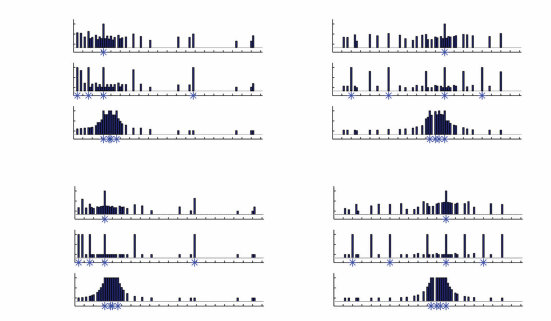
(a) 平均泛化判断
1 X = 16 X = 60 1
类别 I 0.5 0.5
0 0
1 X = 16 8 2 64 X = 60 80 10 30 1
类别 II 0.5 0.5
0 0
1 X = 16 23 19 20 X = 60 52 57 55 1
类别 III 0.5 0.5
0 0
10 20 30 40 50 60 70 80 90 100 10 20 30 40 50 60 70 80 90 100
(b) 贝叶斯模型
1 X = 16 X = 60 1
0.5 0.5
0 0
1 X = 16 8 2 64 X = 60 80 10 30 1
0.5 0.5
0 0
1 X = 16 23 19 20 X = 60 52 57 55 1
0.5 0.5
0 0
10 20 30 40 50 60 70 80 90 100 10 20 30 40 50 60 70 80 90 100
图 3.2
数字游戏中的人类判断和模型预测。行显示三类示例集，由 X 表示：类别 I 包含单个示例，类别 II 提供与简单数学规则一致的多个示例，类别 III 提供在量级上聚类的多个示例。(a) 人们根据给定观察示例 X 后数字属于概念的概率，对 30 个探测数字进行评分。泛化概念到每个数字的平均概率由垂直条形高度表示。（给定数字没有显示条形意味着该数字没有被探测。）当从类别 I 移动到类别 II 或类别 III 时，人们的泛化模式变得更加紧密和重塑，专注于最相关的假设，遵循尖锐的全有或全无规则式模式或更渐进的相似性梯度（分别对应类别 II 和 III）。(b) 贝叶斯模型预测的属于概念的概率。泛化的紧缩以及收敛到全有或全无规则或相似性梯度的可能性，都被大小原则和假设平均的相互作用所捕获。经 Tenenbaum (2000) 许可转载。
图 3.3 说明了这些类规则或类相似性泛化的模式如何都从贝叶斯模型中产生，反映了这些短观察序列在假设上诱导的后验分布的定性不同形状。最初，仅有单个示例（16 或 60）时，许多假设与数据一致并具有不可忽略的后验概率，包括数学和量级属性（图 3.3a）。数学假设得分更高，因为它们的先验更高（因为这类假设数量更少）；在每个类别内，较小的假设也得分更高，因为在似然中使用了大小原则。
在观察到更多示例后，泛化根据示例的分布方式而收紧。给定与”2的幂”等规律一致的示例，这比与相同数据一致的任何其他假设都更具体（即更小），该假设的后验概率要高得多并主导后验预测分布。泛化然后表现为全有或全无，遵循该规则（图 3.3b）。相比之下，许多相似的假设——具有非常相似范围和大小的区间——与落入小量级区间（如范围 16-23）的任何数字集合一致，但它们与任何简单的数学属性都不一致。这些假设都具有相似的先验和基于大小的似然，导致非常相似的后验概率。应用假设平均结果为
贝叶斯推理 75
(a) (b) (c) 1 1 1 x = 16 x = 16 8 2 64 x = 16 23 20 19
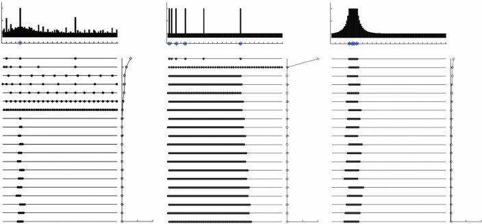
0.5 0.5 0.5
0 0 0
4 0 0 0 8 12 16 20 24 28 32 36 40 44 48 52 56 60 64 68 72 76 80 84 88 92 96 16 20 24 28 32 36 40 44 48 52 56 60 64 68 72 76 80 84 88 92 96 16 20 24 28 32 36 40 44 48 52 56 60 64 68 72 76 80 84 88 92 96 10 4 8 12 4 8 12 10 10
0 0.5 1 0 0.5 1 0 0.5 1
P(h|x) P(h|x) P(h|x)
图 3.3
贝叶斯模型中用于数字游戏的单一计算过程能够根据观察到的样本序列X和这些样本诱导的后验概率P(h_i|X)产生非常不同的泛化模式。对于三个样本集(a)到(c)中的每一个，顶部面板显示通过假设平均计算的后验预测分布P(y ∈ C|X)，该分布表示给定观察样本X(蓝色星号)的情况下，1到100之间的每个数字y属于概念C的概率。下方显示了按后验概率P(h_i|X)递减顺序排列的具有最高后验概率的假设，每个假设在数字线上用黑点绘制，以指示与该假设一致的数字。每个假设对每个数字y的P(y ∈ C|h_i)贡献1或0的投票，这取决于y是否在假设h_i选择的数字集合中。这些投票在假设平均中按后验P(h_i|X)加权，当后验分布广泛分散时((a)和(c))产生分级泛化的后验预测，但当后验集中在主导平均值的单一假设上时产生全有或全无的规则性泛化((b))。改编自Tenenbaum (1999)。
从观察样本开始呈现平滑的预测梯度，随着所讨论的区间变大而逐渐减弱(图3.3c)。尽管每个假设都是离散的，但由于广泛的后验分布和假设平均的后验加权投票行为，这种连续的泛化模式得以出现。
虽然我们很少面临破译计算机程序偏好的问题，但数字游戏的结构与许多真实的归纳问题相似。也许最明显的例子是词汇学习：当一个孩子学习一个新词时，她经常从正面例子中学习(“那是一只狗”)。弄清楚哪些对象可以被赋予这个标签，类似于探测我们假想的计算机程序的响应，可以用同样的方法来处理：假设是对象的集合，观察是从这些集合中采样的。Xu和Tenenbaum (2007)表明，类似的贝叶斯模型可以用来解释成人和儿童在实验室词汇学习任务中做出的推理，包括给定一个例子时类似的分级相似性泛化模式，以及仅仅几个例子之后基于最具体一致假设的更多全有或全无泛化的收敛。这个例子在第1章中有更详细的讨论。
T. L. Griffiths和J. B. Tenenbaum 76
假设
假设 log P(h)
log P(d₁|h)
log P(d₂|h)
log P(d₃|h)
= log P(d|h) + log P(h)
图3.4
用线性代数实现离散贝叶斯推理。在离散假设集合和可能观察的情况下，似然可以用矩阵的形式表达。先验是指示每个假设概率的向量。使用对数概率，贝叶斯推理变成将先验与对应于每个dᵢ的似然向量相加的问题。得到的向量可以被指数化和重新归一化以产生后验。
具有多个离散假设和离散观察的贝叶斯推理——如数字游戏中——可以使用一点线性代数有效地实现。在本节中，我们将简要概述如何做到这一点，因为在其他设置中，当我们通过将其简化为离散假设集来近似更复杂的问题时，这也可能是一个有用的策略。它还提供了一个机会来介绍一些我们在本书后面将用于线性代数的符号。有关本书中使用的线性代数各个方面的易懂介绍，请参见Jordan (1986)。
我们将使用粗体大写字母(例如，M)来表示矩阵，粗体小写字母(例如，v)来表示向量(默认为列向量)，Mᵀ和vᵀ来表示这些矩阵和向量的转置。M⁻¹是M的矩阵逆。Mv是M和v的矩阵乘积，vᵀw是v和w的内积，vwᵀ是外积。v ⊗ w是Hadamard(逐元素)乘积，是具有对应于vᵢwᵢ的条目的向量。
如果我们有一个离散的假设空间和一个离散的可能观察集合，似然可以用矩阵L的形式指定，其中每一行对应于一个可能的观察(在数字游戏中，一个数字)，每一列对应于一个假设。该矩阵中的每个条目Lⱼᵢ表示在假设hᵢ下观察j的概率。
假设 i，P(d [=] j[|]hi)。在数字游戏的情况下，这可以通过最初制作矩阵 H 来完成，该矩阵指示数字 j 是否属于假设 i，如果 j [∈] hi 则 H[ji] [=] 1，否则为 0，然后将列相加以获得每个假设的大小。然后通过将 H 的每个条目除以 h i 的大小来获得似然，因此
L [ji] [=] H[ji]/[|]h[i][|]。
先验可以在行向量 p 中指定，其中 pi [=] P(hi)。贝叶斯推断(Bayesian inference)是更新这个向量的过程。在观察到包含观察 j [(][j][)] [(][j][)] 的数据后，后验分布 p 被更新为 p [=] L [⊗] p，其中 L 是 L 的第 j 行。[贝叶斯] [推断] [[77]]
这使得 p 的每个条目变成 L[ji]pi，这等价于 P[(]d [=] j[|]h[i][)]P[(]h[i][)]。为了完全应用贝叶斯规则，我们通过将 p 的条目除以它们的总和来重新归一化 p。这个过程可以对每个观察重复进行。每次观察后归一化不是必需的——可以在最后，在所有观察都完成后进行。后验预测分布(posterior predictive distribution) [T] 然后由矩阵乘积 Lp 给出。
如果只有少数几个观察，这种实现方法会有效，但随着观察数量增加，L[ji] 项的乘积可能接近数字计算机的数值极限。因此，使用对数概率实现概率模型通常更安全（见图 3.4）。在这种情况下，我们取 L[ji] [=] log P[(]d [=] j[|]h[i][)] 和 pi [=] log P[(]h[i][)]。在观察到 j [(][j][)] 后，我们进行更新 p [=] L [+] p。当我们准备计算后验分布时，我们需要从对数概率转换回概率并归一化结果。第一步是从 p 的条目中减去最大值，以避免从对数概率转换回概率时的数值下溢。然后，我们指数化并重新归一化，这给出我们 P[(]h[i][|]d[)] [∝] exp[{]p[i][}]。这个指数化和重新归一化过程也被称为 softmax 函数，它将 sigmoid 推广到有两个以上假设的情况。
当我们想要推断连续量时，我们仍然可以使用贝叶斯规则，用概率密度表示相关分布。对于连续随机变量，再谈论该变量的特定值的概率不再有意义，因为任何这样的值的概率都变得无穷小。相反，我们谈论在特定值处的概率密度。我们将解释这个概念，然后转向连续假设空间贝叶斯推断的一些应用。
为了获得我们为什么需要使用概率密度来描述连续量分布的直觉，想象将 0 和 1 之间的线分成 10 个区间：一个从 0 到 0.1，一个从 0.1 到 0.2，以此类推。我们可以为每个区间分配相等的概率——一个均匀分布——所以每个区间的概率为 0.1。现在用 100 个区间做同样的事情，从 0 到 0.01，0.01 到 0.02，以此类推。每个区间的概率将是 0.01。如果我们每次将区间数量增加 10 倍，每个区间的概率就会越来越小。
现在，不要关注每个区间的概率（每个区间中的”质量”），让我们关注密度。将概率除以区间的大小。当我们的区间宽度为 0.1 单位并且有 0.1 单位的概率质量时，密度为 1。当它们宽度为 0.01 单位并且有 0.01 单位的质量时，密度仍然是 1。即使区间变得越来越小，概率密度仍然保持不变。
我们可以通过为每个点 x [∈ []0, 1[]] 分配概率密度 1 来定义从 0 到 1 的连续区间上的均匀分布。我们将此写作 p[(]x[)] [=] 1，使用小写字母来区分概率密度函数与我们迄今为止使用的大写概率质量函数 P[(]x[)]。概率密度函数也可以用来反向计算不同事件的概率。例如，如果我们想计算 x 落入从 0 到 0.1 范围的区间的概率，我们可以通过在该区间上积分概率密度来做到这一点：[78] [T.] [L.] [Griffiths] [和] [J.] [B.] [Tenenbaum]
[对区间积分] []] [0.1] [0.1]
P [0.1] [(] x ∈ [ 0, 0.1 ] [)] = p [(] x [)] dx = 1 dx = x | = 0.1. (3.20)
[0]
[0] [0]
同样的计算可以对任何区间进行——概率密度函数告诉我们如何计算概率质量。有关概率密度及其性质的更多信息，请参见 Pitman (1993)。
在我们将要使用它们的上下文中，概率密度将遵循我们在本章中迄今为止使用的联合概率、条件概率和边际概率的相同规则，受边际化、链式法则等约束。我们只是用积分替换随机变量的求和。因此，连续假设集合的贝叶斯规则
假设 [θ] 变成 [p[(θ] |x[)] = , (3.21) [] p []]
[(]x|[θ)]p[(θ)]
p [] [] [(] x | [θ] [)] p [(θ] [)] d [θ]
其中 x 是一些连续数据。
接下来的几节将通过使用贝叶斯规则的例子来讲解
连续量，这说明了贝叶斯推断背后的一些一般原则。第一个例子是推断比例的情况。
想象你看到一枚硬币抛掷了 N 次，产生一个包含 n[H] 次正面和 n[T] 次反面的序列 x。设 [θ] 表示硬币产生正面的概率，你应该对 [θ] 的值推断什么？更一般地说，这是估计伯努利分布参数的问题（即，期望结果以概率 [θ] 发生的分布）。
在一种经典方法下，推断 [θ] 被视为估计概率模型的固定参数的问题，标准解决方案是最大似然估计。最大似然估计简单且通常合理，但也可能存在问题——特别是作为思考人类推断的方式。我们的抛硬币例子说明了其中一些问题。[θ] 的最大似然估计 ˆ [θ] 是使数据概率最大化的值。在我们的情况下，这个概率是
p[(] [n] [n] x | [θ)] = [θ] [H] [(] 1 − [θ)][T] (3.22)
如前所述，这被称为”似然”。通过一点微积分，我们可以证明 ˆ [n] [θ] =[H] / [n]。第一步是对 p[(]x|[θ)] 取对数，这不会影响函数的最大值，因为它是单调变换。这被称为对数似然，有时写作 [L][(θ)]。然后我们可以求导得到
d d [L][(θ)] = [(]n [H] log [θ] + n[T] [)] log[(]1 − [θ)] (3.23) d[θ] d[θ] n [H] n[T] = + , (3.24) [θ] 1 − [θ]
这允许我们通过将导数设为零来找到极值。这给出
n[H] θ [=] , (3.25) n[T] 1 [−] θ
这意味着 cn[H] [=] θ 和 cn[T] [=] 1 [−] θ 对某个常数 c。由于我们知道 cn[H] [+] cn[T] [=] 1，因此 c [=] 1/(n[H] [+] n[T] ) [=] 1/n。
应该立即清楚的是，使数据概率最大化的 θ 的单一值可能不能为预测未来数据提供最佳基础。例如，如果我们看到序列 [HHHHHHHHH]，θ 的最大似然估计是 1。推断 θ 是 1 意味着我们应该预测硬币永远不会产生反面。这在观察到完全由正面组成的长序列后可能看起来合理，但对于任何长度的全正面序列 [n][H] 都会得出相同的结论（因为 n [T] 总是 0，所以 [n] [H] / ([n] [H] [+][n][T]) 总是 1）。在看到硬币仅仅抛掷一两次就产生正面后，你真的会预测硬币只会产生正面吗？
最大似然估计的第二个问题是它没有考虑我们可能对 θ 拥有的其他知识。这在很大程度上是有意设计的：最大似然估计和其他经典统计技术历来被推广为不需要先验概率的”客观”程序，因为先验概率被视为内在且不可挽回地主观。虽然这种客观性目标在某些科学背景下可能是可取的，但智能代理通常确实能够获得相关且强大的先验知识，并且它们使用这些知识从稀疏和模糊的数据中做出比仅凭数据能够理性支持的更强推断。例如，给定通过抛掷一个看起来正常、随机选择的硬币产生的序列 [HHH]，许多人会说硬币产生正面的概率仍然大约是 0.5——也许是因为我们有强烈的先验期望，即大多数硬币（至少几乎）是公平的。
最大似然估计的两个问题都通过贝叶斯推断 θ 的方法得到解决。如果我们假设 θ 是一个随机变量，那么我们可以应用贝叶斯规则来获得
P(x[|]θ)p(θ) p(θ[|]x) [=] , (3.26) P(x)
其中
1 P(x) [=] P(x[|]θ)p(θ)dθ , (3.27) [0]
因为 θ 的唯一有效值在 [[]0, 1[]] 中。这个积分在直觉上与具有离散假设集的贝叶斯规则的分母完全相同，在所有假设上累加先验和似然的乘积。
θ 上的后验分布包含比单一估计更多的信息：它不仅指示哪些 θ 值是可能的，还指示对这些值有多少不确定性。将这个分布压缩为单一数字会丢失信息，因此贝叶斯主义者更喜欢在可能的情况下保持分布。然而，有两种方法通常用于从后验分布中获得点估计（即单一值）。第一种方法是最大后验(MAP)估计：选择使后验概率最大化的 θ 值，如方程 (3.26) 所给出。第二种方法是计算所讨论量的后验均值：所有可能值的加权平均，其中权重由后验分布给出。例如，硬币权重 θ 的后验均值计算如下：
1 θ [¯] [=] θ p(θ[|]x) dθ . (3.28) [0]
在抛硬币的情况下，后验均值也对应于后验预测分布：给定观察到的结果序列，硬币下一次抛掷产生正面的概率。
那么我们应该使用这些估计中的哪一个——MAP还是均值？正确的估计选择取决于要解决的问题，这一点我们将在第7章中再次讨论。如果错误估计的惩罚是估计值与真实值之间的平方差，那么均值是最优估计器。如果唯一重要的是最大化获得正确答案的概率，那么MAP估计是最优的。
不同的先验选择p(θ)将导致对θ值的不同推断。第一步可能是假设θ的均匀先验，对于0和1之间的所有θ值，p(θ)都相等（我们熟悉的概率密度，其中p(θ) = 1对于θ ∈ [0, 1]）。通过这种p(θ)选择和方程(3.10)中的伯努利似然，方程(3.26)变为
p(θ|x) = θ^*n_H**(1 − θ)^n_T* / ∫₀¹ θ^*n_H**(1 − θ)^n_T* dθ , (3.30)
其中分母就是方程(3.27)中的积分。我们还需要一点微积分来计算这个积分。
计算积分的关键步骤是认识到它采用标准形式，即所谓的贝塔函数的定义。贝塔函数写作B(r, s)，
B(r, s) = ∫₀¹ θ^*r-1**(1 − θ)^s-1* dθ , (3.31)
其中r和s是两个参数。
使用这些结果来简化贝塔函数，由序列x产生的θ的后验分布有n_H个正面和n_T个反面是
p(θ|d) = Γ(n_H + n_T + 1)! / (n_H! n_T!) * θ^*n_H**(1 − θ)^n_T* . (3.34)
这实际上是一个已知形式的分布：参数为n_H + 1和n_T + 1的贝塔分布，记作Beta(n_H + 1, n_T + 1)（见图3.5）。使用均匀先验，θ的MAP估计与最大似然估计相同，即n_H/(n_H + n_T)，
 图3.5
贝塔分布。根据分布的两个参数值，它可以是均匀的、偏向特定值或偏向极端值。
图3.5
贝塔分布。根据分布的两个参数值，它可以是均匀的、偏向特定值或偏向极端值。
你可以通过以与之前相同的方式对p(θ|d)求导来验证这一点。后验均值（或后验预测分布）是
θ̄ = ∫₀¹ θ * Γ(n_H + n_T + 1)! / (n_H! n_T!) * θ^*n_H**(1 − θ)^n_T* dθ (3.35)
= Γ(n_H + n_T + 1)! / (n_H! n_T!) * ∫₀¹ θ^n_H+1**(1 − θ)^n_T* dθ (3.36)
[=] [(]n [H] [+] n[T] [+] 1[)][!] [+] B [(] n [H] 2, n[T] [+] 1[)] (3.37) n [H] [!] n [T] [!]
[(]n [H] [+] n[T] [+] 1[)][!] [(]n[H] [+] 1[)][!] n[T] [!]
[=] [(3.38)]
n [H][!] n[T] [!] [(]n[H] [+] n[T] [+] 2[)][!]
n[H] [+] 1
[=] . (3.39)
n[H] [+] n[T] [+] 2
后验均值因此对以下考虑很敏感：我们可能不想对看到一次正面给予与连续看到10次正面相同的证据权重：看到一次正面时，后验均值预测下次翻转产生正面的概率为 [2]/[3]，而连续10次正面导致预测下次翻转产生正面的概率为 [11]/[12]。
我们也可以使用编码了关于 [θ] 值更强信念的先验。例如，我们可以采用Beta[(]v[H] [+] 1, v[T] [+] 1[)] 分布作为 p[(θ)]，其中 v[H] 和 v[T] 是正整数。该分布给出
p [(]v [H] [+] v[T] [+] 1[)][!] [v] [v] [(θ)] [=] [θ] [H] [(] 1 [−] [θ)][T] , (3.40) v [H] [!] v [T] [!]
均值为 [v] [H] [+] 1 / ([v] [H] [+] [v] [T] [+] [2])，并且随着 v[H] [+] v[T] 变大而逐渐在该均值周围更加集中。例如，取 v[H] [=] v[T] [=] 1,000 会得到一个强烈偏好接近0.5的 [θ] 值的分布。将这样的先验与方程(3.10)中的伯努利似然一起使用，并应用与之前相同类型的计算，我们得到后验分布
p [(]n [H] [+] n[T] [+] v[H] [+] v[T] [+] 1[)][!] [n] [+][v] [(θ] [|] d [)] [=] [θ] [H][H] [n] [(] 1 [−] [θ)][T][+][v][T] , (3.41) [(] n [H] [+] v [H] [)] [!] [(] n [T] [+] v [T] [)] [!]
这是Beta[(]n [H] [+] v[H] [+] 1, n[T] [+] v[T] [+] 1[)]。在此后验分布下，[θ] 的MAP估计是 ([n] [H] [+] [v] [H]) / ([n][H] [+][n][T][+][v][H][+][v][T])，后验均值是 ([n] [H] [+] [v] [H] [+] 1) / ([n][H] [+][n][T][+][v][H][+][v][T][+][2])。因此，如果 v[H] [=] v[T] [=] 1000，看到连续10次正面会产生一个关于 θ 的后验分布，其均值为 1011/2012 ≈ 0.5025。在这种情况下，观察到的数据几乎不起作用。一个更弱但仍偏向于大致公平硬币的先验可能取 v [H] [=] v[T] [=] 5。那么观察到连续10次正面会导致后验均值为 16/22 ≈ .727，显著倾向于正面但仍比观察数据本身所暗示的更接近公平硬币。我们可以说这样的先验起到了对观察数据进行平滑或正则化的作用，当数据远离学习者初始期望时，抑制了可能误导性的波动。
最后，我们也可以定义一个偏好 θ 的非常小或非常大值的先验分布。在最一般的情况下，我们可以采用Beta(α, β) 先验，其中 α 和 β 是区间 (0, ∞) 中的实数。观察到 n[H] 次正面和 n[T] 次反面的结果是一个Beta(n [H] [+] α, n[T] [+] β) 的后验分布。对于小于1的 α 和 β 值，先验偏好接近0和1的 θ 值（你可以验证密度在这些值处趋于无穷）。这种先验在”虚拟样本”方面较难解释。如果你计算后验均值或后验预测分布，α 和 β 仍然向 n [H] 和 n[T] 添加分数量，但在标准后验参数化下计算MAP估计需要考虑边界条件（即在0和1处的 p(θ[|]x) 值），可能很复杂且与最大似然估计一样退化。
我们对带有信息先验的硬币翻转分析有两个更具一般兴趣的特征。首先，先验和后验使用相同形式的分布来指定（都是贝塔分布）。其次，先验的参数 v[H] 和 v[T] 作为正面和反面的”虚拟样本”，简单地添加到 n[H] 和 n[T] 中统计的真实样本中来产生后验，就好像真实和虚拟样本都在同一数据集中被观察到一样。这两个性质不是偶然的：它们定义了一类称为共轭先验(conjugate priors)的先验。似然决定了给定问题是否存在共轭先验，以及先验将采取的形式。我们在本节中给出的结果
利用贝塔分布是伯努利或二项似然的共轭先验这一事实（方程 (3.10)）——在 [0, 1] 上的均匀分布也是贝塔分布，即 Beta(1, 1)。共轭先验存在于概率模型中常用的许多分布，如高斯分布、泊松分布和多项分布，并且大大简化了许多贝叶斯计算。使用共轭先验，后验分布可以解析计算，并且将先验解释为贡献虚拟样本是直观的。当我们在本章后面考虑其他分布的贝叶斯推断时，我们将进一步讨论共轭先验。
当然，共轭先验无法捕获人们拥有的所有先验知识，即使在像抛硬币这样简单的情况下也是如此。想象看到一个硬币抛了 10 次，正面朝上 4 次，反面朝上 6 次。猜测正面朝上的概率大约是 0.5 似乎是合理的，这与具有大量且相等的正面和反面虚拟样本的共轭先验一致。但如果你看到一个硬币抛了 10 次，每次都是正面朝上，你可能不会有相同的正面朝上概率估计，尽管强共轭先验仍然会偏向接近 0.5 的值。如果你看到同一个硬币再产生 10 次正面，你可以相当确信它严重偏向——甚至可能是双面硬币。
T. L. Griffiths 和 J. B. Tenenbaum
这个例子说明，当我们建议使用共轭先验——并根据虚拟样本来解释它——时，我们经常试图近似一些其他更丰富的先验知识。你实际上并没有看过数千次硬币抛掷，这并不是诱导你先验的原因。相反，你拥有关于硬币抛掷物理动力学的知识——如果硬币旋转足够多，它本质上是随机的——以及硬币的物理结构——一面是正面，另一面是反面——并基于此建立你的期望。硬币可能两面都是正面这种可能性以简单共轭先验无法捕获的方式改变了这些期望。
在实践中，贝叶斯建模者经常试图通过用更复杂的生成过程来指定先验来绕过共轭先验的限制。例如，我们可以有一个混合分布(mixture distribution)先验。这个先验结合了三个分布——一个总是产生正面，一个总是产生反面，以及一个集中在 0.5 附近的贝塔分布。这三个分布中的每一个都被分配一些概率——比如说总是正面的概率是 1/100，总是反面的概率是 1/100，接近公平硬币的概率是 98/100。以这种方式指定分布让我们使用共轭先验的简单性，同时捕获人们先验知识的一些复杂性。贝叶斯推断然后变成评估这三个离散假设和评估关于偏差的连续假设的结合。我们在第 4 章讨论如何处理这些分布。
当我们抛硬币时，我们只有两个选择。然而，许多学习问题需要推断多个选择上的分布。例如，我们可能想要估计文档中单词的分布，或者看到类别中不同对象的概率。这是估计多项分布(multinomial distribution)的问题。与之前一样，我们将使用 θ 来表示这个分布的未知参数，其中 (θ₁, …, θₖ) 对应于 k 个结果的概率。
正如你可能期望的，多项分布有一个共轭先验，称为狄利克雷分布(Dirichlet distribution)。狄利克雷分布是贝塔分布的多变量推广，具有对应于 k 个不同结果的超参数 α₁, …, αₖ。
向量 θ 在这个分布下的概率是
p(θ) = [Γ(Σᵢαᵢ)/Πᵢ Γ(αᵢ)] Πᵢ θᵢ^(αᵢ-1), (3.42)
其中 αᵢ/Σᵢαᵢ 是对应于 θᵢ 的均值。本章中给出的贝塔-伯努利模型的所有结果都扩展到狄利克雷-多项模型：给定一个包含 n 个事件的序列，其中结果 i 以频率 nᵢ 出现，θ 上的后验分布是参数为 nᵢ + αᵢ 的狄利克雷分布，后验预测分布表明结果 i 以概率 (nᵢ + αᵢ)/(n + Σᵢαᵢ) 出现。在估计多项分布的语境中，取 αᵢ < 1 表示对 θ 中稀疏性(sparsity)的偏好，给分配大量结果概率为零的分布最高概率。这种对稀疏性偏好的强度随着 αᵢ 接近 0 而增加。这个性质在本书后面讨论的一些模型中将变得重要。
贝叶斯推断
在构建自然语言的概率模型时，研究人员必须决定如何为在他们可获得的语言数据中从未出现过的事件分配概率。例如，如果研究人员只能获得文档的第一段，他们应该如何计算特定单词出现在文档第二段中的概率？如果该单词没有出现在第一段中，其频率为零。然而，分配给它零概率似乎过于草率。
估计已知单词集合上的分布只是估计多项分布的问题。
多项式问题，第3.3.5节中概述的方法提供了解决方案。对多项式参数θ采用狄利克雷(α)先验（即，将所有单词的αi设置为相同的值α），结果得到对迄今为止未见过的任何单词的概率估计为[n] [α]，其中[n]是所有观察到的单词频率的总和。
在自然语言处理社区中，这被称为概率分布的”平滑(smoothing)“问题，这种确切形式的平滑方案在其与贝叶斯推理的联系被阐明之前被广泛使用了很长时间（例如，Chen & Goodman, 1996）。存在各种其他更复杂的平滑技术，其中一些最近也被证明对应于合理的贝叶斯估计方法（例如，Goldwater, Griffiths, & Johnson, 2006b; Teh, 2006; Favaro, Nipoti, & Teh, 2016）。
另一个需要对连续量进行贝叶斯推理的常见情况是估计高斯分布的参数。高斯分布由均值µ和标准差σ参数化，其似然函数为
[p]([x] µ,σ ) exp , (3.43) [2] 1 [|] [=] [√] [−] ( [2] [x] [−] µ) 2 πσ 2 σ
其中[√] 1是分布的归一化常数，有[2] [πσ]
[−∞] [∞] [2] [x] [−] [√] exp [−] ( µ) πσ. (3.44) [2] [=] 2 2 σ
我们将专注于从观察值[x]估计µ的问题，保持σ固定。
作为第一步，我们可以考虑使用最大似然估计来找到µ的值。我们想要相对于µ最大化似然函数[p]([x] µ, σ )。由于对数是单调函数，我们也可以选择最大化对数似然函数，即
[log [−]] [p] ( [2] ([x] µ) [2] [x] [|] µ , σ ) [=−] 1 log 2 πσ [−] , (3.45) [2] 2 2 σ
其中只有第二项依赖于µ。求导，将结果表达式设为零，并求解µ得到最大似然估计[ˆ] µ [x]。这在直觉上是合理的，因为( [x] µ)随着x和µ之间距离的增加而增加，意味着当µ [x]时x的概率被最大化。
我们现在可以通过考虑这个估计问题的贝叶斯解来探索融合关于µ的先验知识的后果。应用贝叶斯规则，我们想要计算
[p](µ [x], σ ) [p]([x] µ, σ )[p](µ σ ), (3.46)
为了简化，我们假设µ和σ是独立的，所以[p](µ σ )[p](µ)。
如果我们仔细观察方程(3.43)中的似然函数，我们可以看到涉及µ的部分采用exp [2] 的形式，这是µ的指数二次函数。因此，共轭先验(conjugate prior)也应该是µ的指数二次函数，满足这个要求的µ上的分布是高斯分布。因此，我们将µ的先验取为均值µ[0]和标准差σ[0]的高斯分布。
将我们的高斯似然函数和先验的表达式代入方程(3.46)，我们得到
[p] ( [2] [x] [2] 1 (µ [0] [−] [−] (µ [|] µ) [x] , σ ) [∝] [√] 1 µ exp [−] ) exp [2] [√] [−] (3.47) [2] 2 πσ 2 σ 2 πσ [0] 2 σ [0]
[∝] [−] [−] exp 1 [2] [2] ( [x] µ) (µ µ [0] [−] [2] [+] ) , (3.48) [2] 2 σ σ [0]
其中第二步移除了常数并合并了指数。我们现在可以展开括号内的项得到
[( [2] [2] [2] [x] µ) (µ [2] µ [0] [−] [−] ) 1 1 [x] µ [x] [2] [0] µ 2 µ [2] [+] [2] [−] [2] [+] . [2] [+] [2] [=] [2] [+] [2] [+] µ [o] (3.49) [2] σ σ σ σ σ σ σ σ [0] [0] [0] [0]
最后两项在µ中是常数，因此不会影响[p](µ [x])。通过类似的论证，我们可以加上或减去任何其他在µ*中为常数的项。因此我们有
[p] 1 [2] µ 1 (µ [|] [x] , σ ) [∝] exp [−] µµ [c] [2] [−] 2 [2] [+] (3.50) 2 σ σ 1 1
其中
1 1 1 [=] [+] σ [2] [2] [2] (3.51) 1 σ σ[0]
[µ [σ] [2] [2] [σ] [0] (3.52) 1 [=]] [x] [µ][0] [+] 1 1 [+] [σ] [2] [2] [σ] [0]
且[c]是常数。取[c] [=] [µ][2] 1 [2] [σ] 1允许我们完成平方，得到
[p] (µ [2] µ 1 ) [−] (µ [|] [x] , σ ) [∝] exp [−] , (3.53) [2] 2 σ 1
我们发现这是一个均值为µ1和标准差σ1的高斯分布应该不会感到惊讶：
[p(µ x, σ ) exp 1 [|] [=] [√]] 1 [−] (µ [−] µ [2] ) [2] [, [(3.54)]] 2πσ1 2σ1
这与我们使用共轭先验是一致的。因此后验均值是µ1，由方程(3.52)给出，后验预测分布也是高斯分布，均值为µ1，方差为σ[2] 1 [+] σ[2]。我们可以利用高斯分布的均值也是其众数(mode)的知识，或者通过对后验对数求导，来认识到µ的MAP估计也是µ1。
方程(3.52)中先验和数据的相互作用让人想起在估计比例时使用共轭先验所得到的结果。后验的均值（或MAP估计）在观察值x和先验的均值之间进行线性插值。
先验，µ[0]，分配给每个的权重与相关方差成反比。再次，这代表了先验和数据之间的简单折中，折中的条件由这些信息来源的可靠性设定，并且作为平滑或正则化经验数据x的一种方式（在这种情况下，向µ[0]的移动通常被描述为向先验预测值”收缩”）。
3.4.2 无信息先验和不当先验
在µ上使用高斯先验意味着我们对µ的值有足够的了解来指定先验的均值和方差。然而，有时我们可能感觉对µ真的一无所知，任何值都可能看起来同样合理。在这种情况下，我们可能想要使用无信息先验——表达我们无知的先验。特别是，如果我们相信[−∞]和[∞]之间的任何值都同样合理，我们应该在µ上使用均匀先验。
在（−∞，∞）上使用均匀先验的一个问题是它不会满足我们概率的公理之一，因为常数在这个范围上的积分发散。然而，许多贝叶斯主义者乐于使用这种”不当”先验，只要后验是良好定义的。这对于推断具有已知标准差的高斯分布的均值是成立的：你可以用均匀先验重复3.4.1节中给出的分析，发现后验具有均值x和标准差σ（提供与最大似然估计产生的µ等效的估计）。如果后验分布是未定义的——例如，因为你无法计算分母中函数的积分——那么数据中没有足够的信息来克服先验暗示的极端不确定性。
评估使用无信息先验后果的一个更简单方法是考虑当σ[0]→∞时的后验极限。随着先验标准差的增加，它最终接近（−∞，∞）上的均匀分布。对前面给出的后验分布取这个极限给我们同样的结果：没有来自先验的信息，后验具有对应于观察到的x值的均值和由该观察不确定性确定的标准差。
3.4.3 一个例子：类别和记忆
高斯分布提供了一种自然的方式来捕获人们可能对一类对象具有的知识。例如，如果我们要求你思考成年鳟鱼有多大，你可能会用平均值和围绕该值的方差来描述分布，这可以用高斯分布来捕获。那么这种对类别结构的知识如何影响我们感知世界的方式呢？
Huttenlocher、Hedges和Vevea（2000）采用了一种方法来回答这个问题，检查类别知识如何影响人们从记忆中重建刺激。在他们的实验中，人们非常短暂地看到一个刺激（比如鱼的示意图），然后必须沿着一个维度（比如鱼的肥胖程度）调整另一个刺激，直到他们认为它与原始刺激匹配。这做了很多次，允许参与者学习关于刺激分布的一些东西，并允许实验者检查这种分布如何影响人们的重建。
从记忆中重建刺激是一个有趣的例子，说明我们最初可能不会认为是归纳的问题。然而，它完全具有我们一直在考虑的那种问题的形式，数据是记忆提供的刺激的嘈杂回忆，假设涉及刺激的真实值。因此，我们应该期望人们从记忆中的重建受到他们对可能看到哪些刺激的先验期望的影响。在那些先验期望采取高斯形式的情况下，重建应该偏向高斯的均值，偏差量（重建中的错误程度）随着刺激和均值之间距离的增加而增加。
我们可以通过使用本讨论中引入的符号更正式地表达偏差和刺激之间的关系。这里，x是刺激，µ1是重建。遵循方程（3.51）和（3.52），µ1和x之间的差异是
µ1 − x = [σ[0]²x + σ²µ[0]] / [σ[0]² + σ²] − x
= [1 − σ²/(σ[0]² + σ²)] x − σ²µ[0]/(σ[0]² + σ²)
这在x中是线性的。因此，预测是x重建中的偏差应该线性依赖于x的值，随着x增加而减少，只有当x等于先验的均值µ[0]时才取值0。
Huttenlocher等人（2000）进行了几个实验，他们的结果支持这种记忆重建的贝叶斯解释。图3.6显示了Huttenlocher等人（2000）实验1中一个条件的结果。在这个条件下，参与者看到肥胖程度从正态分布中抽取的鱼。重建中的偏差通过比较人们重建的大小与鱼的实际大小来测量。这种偏差显示了鱼实际大小中预测的线性效应。当鱼从均匀分布和双峰分布中抽取时，以及对于其他一维（1D）刺激如灰色斑块的亮度时，发现了类似的效应。
他们的原始分析并非明确的贝叶斯方法；相反，它专注于一种提高重构准确性的策略，该策略产生了同样类型的估计器。
贝叶斯推断 [89]
图 3.6
Huttenlocher等人(2000)实验1正常条件下偏差作为刺激值函数的表现。与使用高斯先验估计高斯均值一致，偏差是刺激值的递减线性函数。图改编自Huttenlocher等人(2000)。
到目前为止，我们专注于观测数据由从高斯分布中抽取的单个值组成的情况。然而，同样的分析自然扩展到多重观测的情况。如果我们有来自高斯分布的多个独立样本，似然函数变为
p(x|μ, σ) = ∏ᵢ₌₁ⁿ p(xᵢ|μ, σ) (3.55)
= ∏ᵢ₌₁ⁿ (1/√(2πσ²)) exp[-(xᵢ - μ)²/(2σ²)] (3.56)
= (1/(2πσ²)^(n/2)) exp[-∑ᵢ₌₁ⁿ (xᵢ - μ)²/(2σ²)] (3.57)
其中 x = (x₁, …, xₙ) 是 n 个样本。我们可以进行与单个观测情况相同的数学推导，但一个快速的捷径是观察到
∑ᵢ₌₁ⁿ (xᵢ - μ)² = ∑ᵢ₌₁ⁿ ((xᵢ - x̄) + (x̄ - μ))² (3.58)
= ∑ᵢ₌₁ⁿ (xᵢ - x̄)² + 2(x̄ - μ)∑ᵢ₌₁ⁿ (xᵢ - x̄) + n(x̄ - μ)² (3.59)
= ∑ᵢ₌₁ⁿ (xᵢ - x̄)² + n(x̄ - μ)² (3.60)
90 T. L. Griffiths 和 J. B. Tenenbaum
其中 x̄ = (1/n)∑ᵢ₌₁ⁿ xᵢ 是 x 的均值，最后一行源于 ∑ᵢ₌₁ⁿ xᵢ = nx̄ = nx̄² 的事实。由于 ∑ᵢ₌₁ⁿ (xᵢ - x̄)² 在 μ 中是常数，它在确定后验中不起作用，似然函数的相关部分是
p(x|μ, σ) ∝ exp[-n(x̄ - μ)²/(2σ²)] (3.61)
这意味着后验与之前给出的相同，用 x̄ 替换 x，用 σ/√n 替换 σ。同样，μ 的最大似然估计是 μ̂ = x̄。
虽然我们专注于一维情况，但高斯分布可以在多个维度中定义。在这种设置下，基本直觉仍然成立：我们为点 x 分配概率，这些概率随着到均值 μ 的距离的平方而递减。不同之处在于我们如何测量这个距离，考虑到现在有多个方向，点可以从均值移动，其中一些可能比其他方向受到更多惩罚。
d 维多元高斯分布为向量 x = (x₁, …, xₐ) 分配概率
*p(x|μ, Σ) = 1/((2π)(d/2)|Σ|(1/2)) exp[-1/2(x - μ)ᵀΣ⁻¹(x - μ)] (3.62)
其中 μ 是表示均值的 d 维向量，Σ 是表示维度间协方差的 d × d 协方差矩阵。(x - μ)ᵀΣ⁻¹(x - μ) 是向量的二次型，等价于 (x - μ)²/σ²。μ 的共轭先验也是多元高斯分布，均值为 μ₀ 和协方差 Σ₀。通过类似于此处给出的分析，后验是多元高斯分布，均值 μ₁ 和协方差矩阵 Σ₁ 等于
Σ₁⁻¹ = Σ₀⁻¹ + Σ⁻¹ (3.63)
μ₁ = (Σ₀⁻¹ + Σ⁻¹)⁻¹(Σ₀⁻¹μ₀ + Σ⁻¹x) (3.64)
其中 μ₁ 具有与在数据 x 和先验均值 μ₀ 之间线性插值相同的解释。多重观测的分析以相同方式进行。
我们为多项式和高斯分布说明的连续变量贝叶斯推断的基本框架自然地推广到其他分布。主要挑战是方程(3.21)分母中的积分可能无法解析评估。在这种情况下，MAP估计仍然可能通过简单地最大化先验和似然函数的乘积来获得。或者，可以使用数值技术来近似积分。对于在固定范围内定义的少量参数的最简单方法是网格化参数空间并在网格上对先验和似然函数的乘积求和，将连续问题简化为离散问题。基于蒙特卡罗方法的更复杂方法在第6章中讨论。
棘手的部分是完成向量的平方。如果你有 xᵀAx + 2bᵀx，那么添加 bᵀA⁻¹b 得到分解形式 (x - A⁻¹b)ᵀA(x - A⁻¹b)。
贝叶斯推断 [91]
对于一类称为指数族分布的分布，只要使用共轭先验（而且这些分布总是存在共轭先验），总是可以获得后验分布的解析结果。指数族分布可以写成形式 p(x|η) = f(x) exp{ηs(x) + ψ(η)}，其中η是自然参数向量，f(x)是只依赖于x的任意函数，s(x)是包含数据x的充分统计量的向量，ψ(η)是归一化常数的对数。这可能看起来像是分布的任意形式，但贝叶斯模型中使用的许多分布都可以转换为这种形式，包括多项式分布和高斯分布。例如，x以概率θ取值1否则取值0的伯努利分布可以写成p(x|η) = exp{*x**η* + ψ(η)}，其中η = log θ/(1-θ)且ψ(η) = log(1 + exp{η}) = -log(1-θ)。
对于任何指数族分布，都存在相应的共轭先验族，形式为p(η|ν,λ) ∝ exp{*η**ν* + λψ(η)}（你可以验证这对应于伯努利分布的Beta(ν+1, λ+1)先验）。共轭性可以通过观察后验分布来证明：
p(η|x) ∝ p(x|η)p(η) (3.65)
= f(x) exp{ηs(x) + ψ(η)} exp{*η**ν* + λψ(η)} (3.66)
∝ exp{ηs(x) + ψ(η) + *η**ν* + λψ(η)} (3.67)
= exp{η(s(x) + ν) + (1+λ)ψ(η)} (3.68)
这与先验采用相同的形式。
如果你在评估一个60岁男性的前景，你会预期他还能活多久？如果你是一位执行官，正在评估一部迄今为止票房收入为4000万美元的电影的表现，你会如何估计其总票房？这些都是预测问题的例子，我们获得关于某个现象当前程度或持续时间的一些信息，但想要推断其总程度或持续时间。这类问题可以表述为贝叶斯推理的情况，数据是当前值，假设是总值。
定义问题 假设点t从区间[0, t_total_)中均匀随机采样。我们应该如何猜测t_total_的值？这个问题的贝叶斯解决方案涉及计算给定t的t_total_的后验分布。应用贝叶斯定理，这是
p(t_total_|t) = p(t|t_total_)p(t_total_)/p(t) (3.69)
其中 p(t) = ∫₀^∞ p(t|t_total_)p(t_total_) dt_total_ (3.70)
根据t均匀随机采样的假设，对于t_total_ ≥ t有p(t|t_total_) = 1/t_total_，否则为0。因此方程(3.70)简化为
p(t) = ∫ₜ^∞ p(t_total_)/t_total_ dt_total_ (3.71)
因此，对于任何给定的t值，后验分布的形式完全由先验p(t_total_)决定。
这种预测方法相当通用，适用于任何需要在给定来自该区间的样本的情况下估计持续时间、程度或其他数值量的上限的问题（Buch, 1994; Garrett & Coles, 1993; Gott, 1993, 1994; Jaynes, 2003; Jeffreys, 1961; Maddox, 1994; Shepard, 1987; Griffiths & Tenenbaum, 2000）。然而，不同类型的现象将适用不同的先验，结果产生的预测将有很大差异。例如，电影的总票房遵循幂律分布，p(t_total_) ∝ t_total_^(-γ)，其中γ > 0。这种分布具有高度非高斯形状，大多数电影只获得适度收入，但偶尔的大片会赚取巨额资金。其他现象，如人类寿命，用高斯先验更好地描述，高斯先验在均值两侧快速下降，或者用埃朗先验，它上升到峰值然后指数下降。图3.7说明了这三种先验分布。
不同先验的贝叶斯推理 我们可以推导出使用幂律和埃朗先验获得的后验分布的解析形式。高斯先验产生的后验分布没有简单的解析形式，但可以使用3.5节开头提到的离散逼近方法进行近似。对于幂律先验p(t_total_) ∝ t_total_^(-γ)，其中γ > 0。如果γ ≤ 1，这个先验是不当的，因为积分
[随着 t[total] 的增加而发散，但不管怎样，后验分布仍然是一个适当的概率分布。] 应用方程 (3.71)，我们有
[∞]
p [−] [(γ][+][1][)] ( t ) [∝] t dt []
[total] [total] []
[= −] 1 [−][γ] [∞] t [γ] [total] [] [t]
[t]
[=] 1 [−][γ] t ,
[γ]
其中比例常数与原始先验分布中的保持相同。我们可以将这个结果代入贝叶斯法则（方程 (3.69)）来得到
t[−][(γ][+] [1][)]
p [total] ( t [total] [|] t ) [=]
[γ] 1 [−] [γ] t
当 γ > 1 时，幂律分布在统计学和经济学中通常被称为”帕累托分布”。当 γ = 1 时，这是一个从 0 到 ∞ 变量的”无信息”先验，因为它对乘法重标度不变，因此不会对变量施加固有的尺度。
[高斯先验] [幂律先验] [厄朗先验]
[ty]
[ili]
[ab]
[b]
[ro]
[P]
[0 ] [50 ] [100 ] [0 ] [50 ] [100 ] [0 ] [50 ] [100 ]
[t ] [t ] [t ][total ][total ][total ]
[60 ] [60 ] [60 ]
[μ ][= ] [γ ][= ] [β ][= ]
[30 ] [1.0 ] [30 ]
[l ] [25 ][45 ] [45 ] [1.5 ] [45 ] [18 ][ta] [15 ] [2.0 ] [10 ]
[t ] [to]
[d]
[te] [30 ] [30 ] [30 ][ic]
[d]
[P] [15 ][re]
[15 ] [15 ]
[0 ] [0 ] [0 ]
[0 ] [15 ] [30 0 ] [15 ] [30 0 ] [15 ] [30 ]
[t ] [t ] [t ]
图 3.7
贝叶斯预测取决于先验分布的形式。三列代表了适用于不同类型事件的质量不同的统计模型。顶行显示了总持续时间或范围 t[total] 的三个参数先验分布族，可以描述特定类别中的事件。不同颜色的线代表每个族内的不同参数值（例如，不同的平均持续时间）。底行显示了 t[total] 的最优预测作为 t 的函数，t 是到目前为止观察到的事件持续时间或范围，假设顶部面板中显示的先验分布。对于高斯先验（左列），由均值 µ 和标准差 σ 参数化，预测规则总是具有小于 1 的斜率和接近均值 µ 的截距：预测永远不会比先验分布的均值小很多，也不会比观察到的持续时间大很多。幂律先验（中列），具有 p[(] [t] [)] [∝] [total] [t]1[γ]，导致具有斜率 1/γ 的线性预测规则
总是大于 1：预测的 t[total] = 2t。无信息先验是 γ = 1 的幂律。厄朗先验（右列），具有 p[(][t] [)] [∝] [total] [t][total] exp[{−][t] [/β][}] [total]，产生总是具有等于 1 的斜率和非零截距的线性预测规则：预测的 t[total] = t + β log 2。图改编自 Griffiths 和 Tenenbaum (2006)。
[=] , (3.72) [γ] [+] 1 t γ [γ] t
[total]
对于 t[total] [≥] t 的所有值。在厄朗先验下，p(t[total]) [∝] t[total] exp[{−]t[total]/β[}]，我们有
[∞]
p(t) [∝] exp[{−]t[total]/β[}]
[t]
[= −] [∞] β exp [{−] t [total] /β [} |]
[t]
[=] β exp[{−]t/β[}],
其中比例常数与原始先验中的保持相同。同样，我们可以将这个结果代入贝叶斯法则（方程 (3.69)）来得到
exp[{−]t[total]/β[}]
p(t[total][|]t) [=]
β exp[{−]t/β[}]
T. L. Griffiths 和 J. B. Tenenbaum
[=] 1 [exp][{−](t[total] [−] t)/β [}][,] [[(3.73)]]
[β]
对于 t[total] [≥] t 的所有值。
我们取 t[total] 的预测值，我们将其表示为 t[∗]，作为后验中位数。这是使得 P ( t[total] > t[|]t) [=] [0.5] 的点 t[∗]：贝叶斯预测器相信 t[total] 的真实值大于 t[∗] 的概率为 50%，t[total] 的真实值小于 t[∗] 的概率也为 50%。
中位数在这种设置中作为点估计是有意义的，因为最大后验概率(MAP)通常是观察值 t，而幂律分布的后验是重尾的，这意味着均值可能非常偏向高值。后验中位数可以从后验分布中计算，使用以下事实
[∞]
P [∗] ( t [total] > t[|]t) [=] p(t[total][|]t) dt[total] [.] [(3.74)]
[t][∗]
我们可以在幂律或厄朗先验的情况下解析地推导出 t[∗]。对于幂律先验，我们可以使用方程 (3.72) 来重写方程 (3.74) 为
P(t[total] > t [|]t) [=] dt[total] [∗] [∗] [∞] [γ] γ t
[t] [γ][+]1 [] [] [] [] [] t[total]
t [γ] [∞] []
[= −] [] [] t[total] [∗] [t]
[=] [.] [(3.75)] [∗] t t [γ]
我们现在可以求解 t∗ = t/γ，使得 P(ttotal > t∗|t) = 0.5，得到 t∗ = 2t。对于 Erlang 先验，我们可以使用方程 (3.73) 将方程 (3.74) 重写为
P(ttotal > t∗|t) = ∫[t∗到∞] exp{−(ttotal − t)/β} dttotal/β
= −exp{−(ttotal − t)/β}|[t∗到∞]
= exp{−(t∗ − t)/β}. (3.76)
同样，我们可以求解 t∗，使得 P(ttotal > t∗|t) = 0.5，得到 t∗ = t + β log 2。对于高斯先验，我们可以通过数值优化找到 t∗ 的值。
评估预测 图 3.7 显示了使用这三种先验进行预测的结果。对于幂律先验，贝叶斯预测函数选择的 ttotal 值是观测样本 t 的倍数。确切的倍数取决于参数 γ。对于最适合电影票房实际分布的特定幂律，最优贝叶斯观察者会估计总票房比当前票房高约 50%：如果我们观察到一部电影迄今为止已经赚了 4000 万美元，我们应该猜测总票房约为 6000 万美元；如果我们观察到当前票房只有 600 万美元，我们应该猜测总票房约为 900 万美元。虽然这种”恒定倍数”预测规则对于遵循幂律先验的事件类别是最优的，但对于其他现象显然不合适，比如人类寿命（考虑通过应用乘法规则来预测一个 6 岁男孩和一个 90 岁老人的寿命！）。高斯和 Erlang 先验产生的函数没有相同的乘法特征。对于高斯分布，最佳预测是均值，直到观测值接近该均值，此时它以接近 1 的斜率增加。对于 Erlang 分布，ttotal 的最佳猜测就是 t 加上由参数 β 确定的常数，这总是比观测值稍大一些。
不同先验产生如此不同的预测函数这一事实，为探索人们在形成预测时是否对日常量的分布敏感提供了机会。为了解决这个问题，Griffiths 和 Tenenbaum (2006) 进行了一项实验，要求参与者对一系列日常现象的总持续时间或程度进行预测。图 3.8 显示了这项实验的一些结果。日常现象的经验分布是使用从在线数据库获取的信息估计的，并用于确定 ttotal 作为 t 函数的后验中位数。人们的预测显示出与后验中位数惊人的密切对应，表明人们对这些分布很敏感，并且能够在进行预测时将这些信息与证据结合起来。
图 3.8
人们将来自单一观察的证据与适当的先验分布整合。上方面板显示了五种日常现象的总持续时间或程度 ttotal 的经验分布。ttotal 的值是要评估的假设 h，这些分布是适当的先验。前两个分布近似为高斯分布，接下来的两个近似为幂律分布，最后一个近似为 Erlang 分布。最佳拟合参数分布用红色绘制。在下方面板中，黑点显示了被试在给定五个领域中持续时间或程度的单一观测样本 t 时对 ttotal 的中位数预测（应用贝叶斯规则时使用的数据 d）。判断与使用上方面板中显示的经验先验分布（黑线）和最佳拟合参数先验（红线）的贝叶斯预测一致。基于单一无信息先验的预测（虚线）与这些判断不一致。图改编自 Griffiths 和 Tenenbaum (2006)。
这项研究还提供了另一个能够从人们的行为中估计其先验分布的例子：当我们知道他们看到的数据和他们得出的结论时，我们可以推断出捕获其推理的先验。
许多统计推断问题需要比较复杂度不同的假设。例如，根据观察到的正反面序列来推断硬币是否公平或有偏的问题，需要比较一个给[θ]单一值的假设——如果硬币是公平的，则[θ] = 0.5——与一个允许[θ]在0和1之间取任何值的假设。当评估是否存在因果关系时，也会出现类似的问题，其中存在关系的假设还允许该关系的强度发生变化。同样，当我们试图确定数据是以层次结构组织还是以空间表示布局更有意义时，我们似乎需要考虑这些表示在灵活性上的差异。
使用观察数据在复杂度不同的两个概率模型之间进行选择通常称为[模型][选择]问题（Myung & Pitt, 1997; Myung, Forster, & Browne, 2000）。解决这个问题的一种熟悉的统计方法使用假设检验，但这种方法往往复杂且不直观。相比之下，模型选择的贝叶斯方法是迄今为止讨论的方法的无缝应用。一旦将复杂度不同的假设简化为可观察数据的概率分布，就可以直接使用贝叶斯法则比较它们（见Kass & Raftery, 1995）。我们将使用确定硬币是否有偏的例子来说明这一原理。
假设我们抛硬币[n]次，得到[n][H]次正面和[n][T]次反面，我们想确定硬币是否有偏。我们有两个假设：[h][0]是[θ] = 0.5的假设，h是[θ]取值来自[0, 1]上均匀分布的假设。如果我们没有先验理由偏向任何一个假设，我们可以取[P][(][h][0][)] = [P][(]h[)] = 0.5。在[h][0]下数据的概率使用伯努利似然很容易计算，得到[P][(][d]|[h][0][)] = 0.5[n][H] [+][n][T]。但是我们应该如何计算在h下数据的似然，它并不承诺[θ]的单一值？
一种策略是使用[θ]的最大似然值，将其作为硬币偏差的最佳估计。然而，采用这种策略总是产生至少与[P][(][d]|[h][0][)]一样高的数据概率，无论数据如何（直观地说，由于[ˆθ]是最大似然估计，使用[ˆθ]的似然必须至少与使用[θ] = 0.5时一样高，后者对应于[h][0]）。因此我们需要有某种方法来纠正h的灵活性。频率主义统计中假设检验的标准方法包括实现这种纠正的方法，目标是最小化我们错误地支持h的概率。然而，这个问题在贝叶斯统计中有一个简单的解决方案。
这个问题的贝叶斯解决方案是计算h下数据的边际概率。如本章前面所讨论的，给定一组变量的联合分布，我们总是可以对变量求和，直到我们得到仅覆盖我们感兴趣变量的分布。在这种情况下，我们定义给定h1下d和[θ]的联合分布，然后
对[θ]积分以获得[贝叶斯][推断] [[97]]
P[(]d|h[1][)] [=] ∫0 P[(]d|[θ], h[1][)]p[(θ]|h[1][)] d[θ], (3.77)
其中p[(θ]|h[1][)]是在h1下假设的[θ]的分布——在这种情况下，是[0, 1]上的均匀分布。这不需要任何新概念——这正是我们计算[θ]后验分布分母所需执行的相同类型的计算。执行这个计算，我们得到P[(]d|h[1][)] = [n][H]![n][T]!/([n][H] + [n][T] + 1)!，其中共轭先验这一事实再次提供了整洁的解析结果。计算出这个似然后，我们可以像处理两个简单假设那样应用贝叶斯法则。图3.9a显示了对于长度为10的序列，支持h1的对数后验比值如何随n[H]和n[T]的变化而变化。
Griffiths和Tenenbaum（2007a）使用这种边际概率方法来计算第3.2.2节讨论的巧合模型中使用的对数似然比。如果你还记得，参与者看到的数据来自一个调查基因工程或超自然现象的实验。基因工程师试图确定药物是否影响100只大鼠的性别，而超自然研究者正在评估通灵者是否能影响100次抛硬币的结果。参与者被告知雄性大鼠或硬币正面朝上的频率，并被要求评估是否存在关系。在这种情况下，如果没有关系，那么雄性大鼠或正面出现的概率为0.5。如果存在关系，该概率可能是0和1之间的任何值。前面段落给出的结果为我们提供了计算在此假设下观察数据概率所需的一切，因此提供了推断人们对基因工程或通灵能力先验信念所需的对数似然比。
使用贝叶斯法则比较复杂度不同假设的容易性掩盖了这实际上是一个非常具有挑战性的问题。复杂假设具有
具有更多自由度，可以适应数据，因此它们总是可以比简单假设更好地拟合数据。看起来复杂假设相对于简单假设具有固有的不公平优势。
贝叶斯方法在比较复杂性不同的假设时考虑了这一点。更多的自由度提供了寻找更好数据拟合的机会，但这种更大的灵活性也使更糟的拟合成为可能。回到我们的抛硬币例子，对于由序列[HHTHTTHHHT]组成的d，P[(]d[|][θ] , h1 [)] 在[θ] [∈] [(]0.5, 0.694[]]范围内大于P[(]d[|]h[0][)]，但在该范围之外则小于P[(]d[|]h[0] [)]。对[θ]的边际化平均了这些收益和损失：只有当更大的复杂性持续提供对数据更好的解释时，更复杂的假设才会被偏爱。图3.9a中显示的对数后验比率(posterior odds)捕获了这一点：只有当P[(]d[|][θ] , h[1][)]在[θ]的广泛值范围内都高于P[(]d[|]h[0][)]时，更复杂的假设h1才会被偏爱。
换句话说，贝叶斯学习者判断参数化模型的拟合度不是看它使用最佳参数值拟合得多好，而是看它使用随机选择的参数拟合得多好，其中参数是从模型指定的先验中抽取的。
图3.9 比较关于硬币重量的假设。(a) 纵轴显示支持h1的对数后验比率，h1是正面概率(θ)从[0,1]上的均匀分布中抽取的假设，而不是h[0]，即正面概率为0.5的假设。横轴显示10次抛硬币序列中正面的次数n[H]。当n[H]偏离5时，支持h1的后验比率增加。(b) (a)中显示的后验比率通过相对于先验p[(θ)]对θ值进行平均计算得出，在这种情况下是[0,1]上的均匀分布。这种平均考虑了具有更大灵活性的假设（如h1中的自由变化θ参数）可以产生更好和更坏的预测这一事实，实现了自动的”贝叶斯奥卡姆剃刀”。实线显示序列HHTHTTHHHT在不同θ值下的概率，而虚线是h[0]下任何长度为10的序列的概率（等价于θ = 0.5）。虽然有些θ值会导致该序列有更高的概率，但平均而言，h1的更大灵活性导致更低的概率。因此，h[0]比h1更受偏爱（这个序列有n[H] = 6）。相比之下，广泛的θ值范围都会导致序列HHTHHHTHHH有更高的概率，如虚线所示。因此，h1比h[0]更受偏爱（这个序列有n[H] = 8）。图表改编自Griffiths等人(2008c)。
模型p[(θ][|]h[1][)]在方程(3.77)中(Ghahramani, 2004)。这种对更复杂模型的惩罚（导致学习者偏爱更简单的解释）被称为贝叶斯奥卡姆剃刀(Bayesian Occam’s razor)(Jeffreys & Berger, 1992; Mackay, 2003)，在图3.9b中有所说明。
这里，两个抛硬币序列在P[(]d[|][θ] , h[1][)]大于P[(]d[|]h[0][)]的程度上有所不同。只有对于正面和反面数量不平衡更大的序列，P[(]d[|][θ] , h[1][)]才持续更大，因此如果我们随机抽样[θ]值，它会被偏爱。
推断因果关系提供了模型选择问题的经典例子，要求我们在关系存在的世界模型和关系不存在的另一个模型之间进行选择。如第3.2.2节所述，Griffiths和Tenenbaum (2007a)
图3.10 变化在… [[人类数据 贝叶斯模型]] 数量比率位置分布 (均匀)
来自Griffiths和Tenenbaum (2007a)的实验2结果。每行显示用于测试操作刺激统计特性之一的影响的三个刺激，以及人类参与者对巧合强度的平均判断和贝叶斯模型的预测。误差棒显示一个标准误差，字母标记不同的刺激。图改编自Griffiths和Tenenbaum (2007a)。
我们观察到，我们对巧合的直觉感知似乎与事件为意外因果关系提供强有力证据的情况很好地对应。这样的事件产生了一种怀疑，即尽管我们假设不存在这样的关系，但可能有某种原因在起作用。
事件空间位置的巧合为这种现象提供了一个很好的例子。图3.10显示了Griffiths和Tenenbaum (2007a)实验2中使用的几个刺激。每个刺激包括正方形内的一组点，参与者被告知这些点代表二战期间落在伦敦的炸弹的假设位置。战后的统计分析显示，炸弹显然是随机落下的，但城市中的人们相信有一个更系统的过程在起作用。实验中的参与者被要求评估炸弹落在每种模式中会有多大的巧合。平均评分也显示在图中，它们表明炸弹总数和似乎聚集在一起的炸弹数量与似乎更广泛落下的炸弹数量的比例有明显的影响。
在这个实验中，人们对巧合强度的判断可以使用本章前面概述的贝叶斯模型选择框架来建模。设h₀表示炸弹随机落下的假设，h₁表示至少一些炸弹的目标背后存在共同原因的假设，观察到的数据d支持因果关系的证据由对数似然比log p(d|h₁)/p(d|h₀)给出。在h₀下，每个炸弹在给定区域内的位置由均匀分布给出。在h₁下，存在炸弹集中的区域，由多元高斯分布表示。在h₀下评估数据的概率是直接的，因为我们可以假设这些只是从均匀分布中独立抽取的，每个发生的概率为1/|R|，其中R是炸弹落下的区域，|R|是其面积。然而，在h₁下评估数据的概率需要对规律性的所有可能位置和大小，以及落在规律性内的炸弹的所有比例进行积分。这可以使用第5章和第6章的一些想法——分别是混合分布和蒙特卡罗方法——来完成，但我们建议热心的读者参考Griffiths和Tenenbaum (2007a)了解详情。该计算的结果显示在图3.10的最右列中。人们对巧合强度的评估与通过贝叶斯模型选择评估的原因支持证据之间有密切匹配。
贝叶斯推理(Bayesian inference)描述了理性智能体如何处理归纳问题。它指出了如何将先验知识与新数据提供的信息相结合。因此，它是理解人类认知的有力工具。使用贝叶斯模型，我们可以精确识别在广泛设置中为人类归纳推理提供信息的先验知识。在最简单的情况下，这可以通过简单地向人们展示归纳推理并将他们得出的结论与不同先验分布产生的结论进行比较来完成。结果可以帮助解释人类认知中可能令人困惑的偏差。
当应用于离散假设时，贝叶斯推理帮助我们理解离散的符号结构如何导致连续的、分级的泛化模式。使用这种方法，可以从非常少量的数据中做出有意义的推理。提供足够的数据，得到的模型可以从分级泛化过渡到分类置信度(categorical confidence)，以一种捕捉人类归纳推理的方式。
贝叶斯统计还为我们提供了描述更具挑战性推理的工具，包括我们需要比较复杂性不同的假设的情况。这些推理不需要开发新方法，而是自然地使用概率论原理来处理。结果是对更简单解释的隐式偏好，我们将看到这在本书后面扮演越来越重要的角色，当我们考虑人们如何学习可能变得任意复杂的世界模型时。
Thomas L. Griffiths和Alan Yuille
到目前为止，我们对贝叶斯推理的讨论是用”假设”和”数据”的语言表述的。然而，贝叶斯推理的原理扩展到更广泛的设置。最终，我们希望能够描述人们从经验中构建并用于支持从有限数据中快速推理的丰富世界模型。这些世界模型可以表达为大量随机变量上的概率分布。然而，定义和使用这样的概率分布有其自身的挑战。
在最一般的形式中，概率模型简单地定义了一组随机变量的联合分布。随着变量数量的增长，表示和计算这些联合分布变得
更加困难。大型联合分布也可能难以解释，
这使得理解模型中表达的假设变得困难。在本
章中，我们介绍图模型，它为处理复杂概率分布提供了一个高效且直观的框架。
图模型将概率分布与图关联起来。在这里，我们使用
“图”这个词的含义是图论意义上的——一组节点和边，通常通过
将节点绘制为圆圈，将边绘制为连接它们的线来描述。图的节点代表定义概率分布的变量，节点之间的边反映了它们的概率依赖关系。这些依赖关系通过一组函数转换为分布，这些函数将图中节点及其邻居的值转换为概率。图和这些函数一起定义了所有变量的联合分布。
有两种图模型，它们在连接节点的边的性质上有所不同。如果边只是表示变量之间的依赖关系而不指定方向，那么结果就是无向图模型。无向图模型在统计物理学中长期使用，许多概率神经网络模型，如玻尔兹曼机(Ackley, Hinton, & Sejnowski, 1985)，可以被解释为这种类型的模型。如果边表示依赖关系的方向，结果就是有向图模型。我们这里的重点将放在有向图模型上，它们也被称为贝叶斯网络或贝叶斯网(Pearl, 1988)。贝叶斯网络通常可以给出因果解释(Pearl, 2000)，其中两个节点之间的边表示一个节点是另一个节点的直接原因，这使得它们在建模高级认知方面特别有吸引力。
在本章中，我们介绍贝叶斯网络及其在定义指定复杂概率分布的生成模型中的作用。我们展示了贝叶斯网络在开发人类认知计算模型中有用的三种方式。
首先，它们简化了概率分布的表示和计算。其次，它们使得定义生成模型变得容易，这是进行概率推理的关键步骤，这种推理超越了假设和数据的最简单情况，并引导我们朝着更全面的世界模型方向发展。第三，它们可以被增强以提供一种语言来表示和推理因果关系，这在开发高级认知模型时非常有用，在这些模型中，因果关系在心理表征的结构中可能起到重要作用。关于图模型及其性质的更详细的数学处理，请参见Koller和Friedman (2009)。
贝叶斯网络是表示和推理概率分布的强大工具。它们的价值既是计算上的也是概念上的：它们可以降低处理大型概率分布的计算成本，但它们也澄清了这些分布中的关系和假设。在本节中，我们提供贝叶斯网络的更详细定义，解释如何使用它们来表示概率分布，并说明它们在指定生成模型中的使用。
贝叶斯网络表示将一组变量相互关联的概率依赖关系。如果从节点A到节点B存在边，那么A被称为B的父节点，B是A的子节点。这种族谱关系经常被扩展来识别节点的祖先和后代。贝叶斯网络中使用的有向图对相关概率分布中的每个随机变量都有一个节点，并且被约束为无环的：通过遵循一系列有向边，永远不能返回到同一个节点。
无环图是贝叶斯网络数学定义有意义所必需的，但这个约束是直观的：如果我们最终想要将图中的边视为生成过程或因果关系中的步骤，那么环意味着两个事物同时生成或引起彼此。
节点之间的边以与马尔可夫条件一致的方式表达相应变量之间的概率依赖关系：在其父节点的条件下，每个变量独立于除其后代之外的所有其他变量(Pearl, 1988; Spirtes, Glymour, & Schienes, 1993)。作为马尔可夫条件的结果，任何贝叶斯网络都指定了联合概率分布的标准因式分解
真正的循环因果关系案例通常可以在时间维度上”展开”。例如，如果我们说工资增长导致通胀，通胀导致工资增长，我们真正的意思是时间t的工资增长导致时间t + 1的通胀，时间t的通胀导致时间t + 1的工资增长。如果两个变量确实在同时关系中耦合，那么解决方案是在贝叶斯网络中用单个节点表示这两个变量，就好像它们是一个取值对应于原始变量联合分布的单一变量。
成局部条件分布的乘积，每个变量都以其父节点为条件。也就是说，对于一组变量X1, X[2], … , X[n]，我们可以写出
P(x1, x[2], … , x[n]) = ∏P(xi|Pa(Xi)), (4.1)
为了理解这是如何工作的，给变量分配一个数字顺序是有帮助的，使得每个节点都被分配一个比其子节点更高的数字（底层图必须是非循环的这一要求保证了这样的顺序存在）。假设我们的变量X1, X[2], … , X[n]按这样的顺序排列。我们总是可以将它们的联合分布写成一系列条件分布的乘积——即，
P(x1, x[2], … , x[n]) = P(x1|x[2], … , x[n])P(x[2]|x[3], … , x[n]) … P(x[n-1]|x[n])P(x[n]). (4.2)
马尔可夫条件意味着我们可以简化这些条件分布，用P(xi|Pa(Xi))替换P(xi|x[i+1], … , x[n])，因为Xi独立于所有非后代（即编号更高的变量），以其父节点为条件。结果，我们得到P(x1, x[2], … , x[n]) = ∏iP(xi|Pa(Xi))。
正如我们将看到的，贝叶斯网络的部分力量来自它们表征随机变量之间关系的方式。一组简单的规则可以用来确定贝叶斯网络中的两个随机变量是否独立（例如，Schachter, 1998）。任何两个由边直接连接的变量显然彼此依赖，一个变量的值依赖于另一个变量的值。然而，没有直接连接的变量也可能是依赖的。直观地说，依赖性关于信息沿着连接两个变量的路径（即边的序列）的流动。如果观察Xi能告诉你关于X[j]的任何信息，考虑到你的其他观察，信息就从Xi流向X[j]。这种信息流不必遵循我们有向图中的箭头：X[j]是Xi的父节点还是子节点都无关紧要；了解关于Xi的某些信息仍然会告诉你关于X[j]的某些信息。
有向图中任意两个变量之间的每条路径都可以分解为图4.1所示的四种类型的段，整条路径是将这些段链接在一起的结果（这些可能性是穷尽的，因为它们包括两条边的两个可能方向）。如果我们将图中的边解释为显示因果关系，图4.1a和4.1b描述了向不同方向流动的因果链（因果链的例子可能是焦虑导致失眠，失眠导致疲劳）。图4.1c是共同原因结构，其中X[2]同时导致X1和X[3]（吃冰淇淋和游泳有在海边这个共同原因）。图4.1d是共同效应结构，X[2]由X1和X[3]共同导致（睡过头和交通堵塞有上班迟到这个共同效应）。
我们可以通过确定依赖性是否能流过路径中的每个段来确定依赖性是否能沿着路径流动。这可以通过应用一个简单的规则来完成：对于具有链结构或共同原因结构的段，图4.1a-c，当X[2]被观察时X1和X[3]是独立的（即，它们在以X[2]为条件时是独立的）；对于具有图4.1d所示结构的段，X1和X[3]是独立的，除非X[2]或其后代之一被观察。你可以通过写出与这些结构相关的联合分布，然后计算给定X[2]的条件分布来验证这一点。

有向图中两个变量之间路径的所有可能段。(a)–(b) 因果链。依赖性沿着边的链流动，除非x[2]被观察。(c) 共同原因。依赖性在共同父节点的子节点之间流动，除非x[2]被观察。(d) 共同效应。依赖性不在共同子节点的父节点之间流动，除非x[2]被观察。
共同效应结构（图4.1d）中的依赖模式可能是反直觉的
itive，所以值得看一个例子。假设睡过头和交通堵塞都会导致上班迟到这一共同结果。某人是否睡过头和交通是否堵塞大概是相互独立的。但是当你观察到一个人上班迟到时，睡过头和交通堵塞都成为了可能的解释。
随后发现交通确实堵塞，会降低你对这个人睡过头概率的估计。这意味着睡过头和交通堵塞在观察到某人上班迟到的条件下变得相互依赖了。我们甚至不必观察到他们迟到——观察到他们的同事很恼火或者他们没有出现在会议上（这两种情况都是下游后果，因此是X[2]的后代）就足以诱发这种依赖性。我们在4.2.2节中更详细地讨论这种被称为解释消除(explaining away)的推理模式。
图形模型已经在人工智能（AI）系统中使用，其中感兴趣的变量表示某些逻辑命题的真值（Russell & Norvig, 2021）。使用第3章中提到的”超自然先验”研究的例子，假设你的一个朋友声称拥有超自然能力——特别是念力(psychokinesis)。她提议通过掷硬币并影响结果产生正面来展示这些能力。你建议一个更好的测试可能是看她是否能让铅笔悬浮，因为硬币产生正面也可以通过某种手法来解释，比如替换成双面都是正面的硬币。我们可以使用二元随机变量X1、X[2]、X[3]和X4来表达所提议测试的所有可能结果以及它们的原因，分别代表硬币被掷出并产生正面、铅笔悬浮、你朋友拥有超自然能力，以及使用双面正面硬币的真实性（这些变量在为真时取值1，为假时取值0）。关于这些结果的任何信念集合都可以编码在联合概率分布P(x1, x[2], x[3], x4)中。例如，如果你的朋友确实拥有超自然能力(x[3] = 1)，那么硬币出现正面(x1 = 1)的概率应该更高。图4.2显示了表达这些变量之间可能依赖模式的贝叶斯网络。例如，假设X1和X[2]在给定X[3]的条件下是独立的，表明一旦知道你的朋友是否有超自然能力，

硬币掷出和悬浮实验的结果将完全不相关。
根据马尔可夫条件，我们可以写成P(x1, x[2], x[3], x4) = P(x1|x[3], x4)P(x[2]|x[3])P(x[3])P(x4)。
除了澄清一组随机变量的依赖结构外，贝叶斯网络还提供了一种表示和计算概率分布的有效方法。
一般来说，n个二元变量的联合概率分布需要2^n - 1个数字来指定（变量取的2n个联合值中每一个都需要一个数字，减去1是因为我们知道概率分布的和为1，所以我们可以从其余部分推导出最后一个数字）。在超自然朋友例子的情况下，有四个变量。每个变量都取值1或0，所以有24 = 16个可能的联合值：0000, 0001, 0010等。指定这16个值的概率分布需要2^4 - 1 = 15个数字。
贝叶斯网络通过将这些分布因式分解为条件分布的乘积，使指定复杂的联合分布变得更容易。每个条件分布需要更少的数字来指定。我们只需要为每个变量在其父节点可以取的每组可能值的条件下提供一个数字，或者为每个变量Xi提供2^|Pa(Xi)|个数字（其中|Pa(Xi)|是Xi的父节点集合的大小）。对于我们的”超自然朋友”网络，这加起来是8个数字而不是15个，因为X[3]和X4没有父节点（每个贡献一个数字），X[2]有一个父节点（贡献两个数字），X1有两个父节点（贡献四个数字）。联合分布的简化是这些变量条件独立的结果：如果我们只是使用联合分布到条件分布的标准因式分解，P(x1|x[2], x[3], x4)P(x[2]|x[3], x4)P(x[3]|x4)P(x4)，没有任何假设的独立性，我们需要8个数字来指定P(x1|x[2], x[3], x4)，4个数字用于P(x[2]|x[3], x4)，2个数字用于P(x[3]|x4)，1个数字用于P(x4)，总共15个数字。
马尔可夫条件对变量在什么情况下应该相互独立做出了明确的预测。Rehder和Burnett（2005）进行了一项研究，旨在确定人们是否对这些独立性
关系。他们关注的情境是从物体的已观察特征推断其未观察特征的值。例如，如果你在访问一个新国家时看到一种动物有翅膀、在树上筑巢、吃昆虫，你可能会合理地假设它也能飞行。
106 T. L. Griffiths and A. Yuille
这个特征推断问题只是一种概率推理：我们想要基于一组已观察特征的值来推断未观察特征Fi的值（我们将除特征i之外的所有特征值的向量写作F−i）。因此我们想要的是条件分布P(Fi|F−i)。然而，这个分布的性质——以及F−i中的每个特征对我们关于Fi的信念的贡献——将由这些特征的依赖结构决定。
Rehder和Burnett探索了各种依赖结构，但为了简化，我们将专注于他们的实验1。在这个实验中，参与者被给予一个关于新类别物体特征及其相互关系的简短描述。例如，他们可能会读到：
在关岛附近西太平洋的火山岛凯霍岛上，有一种名为凯霍蚂蚁的蚂蚁物种。凯霍蚂蚁以富含铁和硫的植物为食。
有了这个背景故事，可以具体说明特征，如下所示：
(F1) 一些凯霍蚂蚁的血液中硫酸铁含量很高。其他的血液中硫酸铁含量较低。
(F2) 一些凯霍蚂蚁有过度活跃的免疫系统。其他的免疫系统被抑制。
(F3) 一些凯霍蚂蚁的血液很黏稠。其他的血液很稀薄。
(F4) 凯霍蚂蚁通过分泌一种粘性液体来筑巢，这种液体随后硬化。一些凯霍蚂蚁能够快速筑巢。其他的筑巢缓慢。
参与者了解到这些特征出现的概率为75%或25%（特征概率的具体分配在参与者之间有所不同）。然后一组参与者被教导这些特征构成了一个共同原因结构，如图4.3a所示，例如：
(F1 → F2)。血液中硫酸铁含量高会导致免疫系统过度活跃。硫酸铁分子被免疫系统检测为外来物质，因此免疫系统高度活跃。
(F1 → F3)。血液中硫酸铁含量高会导致血液黏稠。硫酸铁提供额外的铁，蚂蚁用来产生额外的红细胞。额外的红细胞使血液变黏稠。
(F1 → F4)。血液中硫酸铁含量高会导致更快的筑巢。硫酸铁刺激负责制造筑巢分泌物的酶，蚂蚁能够用更多的分泌物更快地筑巢。
然后测试参与者以确保他们理解了这些关系的正确结构。另一组参与者是对照组，没有学习因果关系。
在了解这个新的物体类别后，参与者被要求评估在观察其他特征的情况下一个特征的概率。关键的是，一些特征是共同原因的结果（在我们的例子中是F2、F3和F4），而其他特征是原因本身。马尔可夫条件(Markov condition)对这些特征如何影响人们的推理做出了非常不同的预测。

图4.3 特征推断（根据Rehder & Burnett，2005）。(a) 一组特征之间的共同原因关系。(b) 如果共同原因(F1)未被观察到，每个被观察到的额外特征都会提供更多关于其值的证据。然而，一旦观察到共同原因，其他特征就变得独立，不会为彼此的值提供证据。(c) 人们根据其他特征的存在或缺失来评估每个特征存在的推理强度。在这种情况下，人们的判断似乎不遵守马尔可夫条件：即使观察到共同原因，他们仍然继续将特征视为相互提供信息的。图改编自Rehder和Burnett (2005)。
108 T. L. Griffiths and A. Yuille
如图4.3b所示，如果未观察的特征是共同原因，那么观察每个结果都会提供更多该特征存在的证据。相比之下，如果未观察的特征是其中一个结果，那么一旦观察到共同原因，观察其他结果就不提供任何信息。这是马尔可夫条件的结果：一旦观察到共同原因，结果之间就相互独立。
Rehder和Burnett发现人们在这种情况下违反了马尔可夫条件(Markov condition)。如图4.3c所示，即使观察到共同原因，人们仍然继续将结果视为提供关于其他结果的证据。这表明人们允许这些变量之间存在超出图形模型所表示的依赖关系。
什么可以解释这个结果？理解它的一种方式是人们确实遵循马尔可夫条件，但他们假设了一个比在实验中学到的更复杂的图形模型。Rehder和Burnett进行了一系列后续实验来探索这种可能性，发现了一个与领域通用偏差一致的结果模式，即倾向于假设类别成员身份背后存在隐藏机制——一个未观察到的额外变量。这个额外变量使属于某个类别的对象的特征彼此依赖，在原始图形模型中产生了对马尔可夫条件的违反。这个想法与发展心理学中关于本质主义(essentialism)的文献建立了联系（例如，Gelman, 2003），该文献表明儿童相信存在一个不可观察的”本质”，使某物成为某个类别的成员，并且不会因为修改其外部特征而改变。Rehder随后探索了在人们在各种其他情境中的判断中出现的马尔可夫条件违反现象（Rehder, 2014; Rehder & Waldmann, 2017; Rehder, 2018）。
除了对形式化概率推理有用之外，贝叶斯网络还为许多概率模型的结构提供了直观的表示。通过将产生数据的过程分解为一系列简单步骤——一个生成模型——定义相应的概率分布变得更加容易。
简单生成模型的例子 我们之前讨论了使用Beta(α, β)先验估计硬币重量θ的问题。在那次讨论中我们隐含的一个细节是假设连续的硬币翻转在给定θ值的情况下是独立的。这种条件独立假设在图4.4a所示的图形模型中得到了表达，其中x1, x[2], …, x[n]是n次连续投掷的结果（正面或反面）。应用马尔可夫条件，这个结构表示概率分布
P(x1, x[2], …, x[n], θ, α, β) = p(α)p(β)p(θ|α, β)∏[i=1到n]P(xi|θ)，(4.3)
其中给定θ的值，xi是独立的。通常，我们会假设超参数α和β是已知的，给出条件分布
P(x1, x[2], …, x[n], θ|α, β) = p(θ|α, β)∏[i=1到n]P(xi|θ)，(4.4)
当我们基于x1, x[2], …, x[n]的值进行条件化时，这可以用来推断θ。
 图4.4
两个贝叶斯推理简单例子的图形模型。(a)
推断比例，其中θ是硬币的重量，α和β是先验的超参数，x1, x[2], …,
x[n]是n次翻转的结果。(b)
推断高斯分布的均值，其中μ是均值，μ[0]和σ[0]定义均值上的先验，σ是标准差，x1, x[2], …,
x[n]是n个观察值。
图4.4
两个贝叶斯推理简单例子的图形模型。(a)
推断比例，其中θ是硬币的重量，α和β是先验的超参数，x1, x[2], …,
x[n]是n次翻转的结果。(b)
推断高斯分布的均值，其中μ是均值，μ[0]和σ[0]定义均值上的先验，σ是标准差，x1, x[2], …,
x[n]是n个观察值。
图4.4b显示了估计高斯分布均值μ问题的贝叶斯网络，该高斯分布具有标准差σ，μ遵循均值为μ[0]、标准差为σ[0]的高斯先验。联合分布由下式给出
p(x1, x[2], …, x[n], μ, σ, μ[0], σ[0]) = p(μ[0])p(σ[0])p(μ|μ[0], σ[0])p(σ)∏[i=1到n]p(xi|μ, σ)，(4.5)
当σ、μ[0]和σ[0]已知时的条件分布是
p(x1, x[2], …, x[n], μ|σ, μ[0], σ[0]) = p(μ|μ[0], σ[0])∏[i=1到n]p(xi|μ, σ)，(4.6)
其中我们基于x1, x[2], …, x[n]进行条件化来推断μ。
这些例子还说明了图形模型的”图形”部分本身不足以指定相关的概率分布。我们可以从相关图的形式推导出方程(4.3)–(4.6)，但图形并不告诉我们用于生成随机变量的实际分布是什么。这些信息需要单独提供，为每个变量给定其父节点定义条件概率分布。贝叶斯网络的完整规范包括图和这些条件分布，它们一起定义了相关的联合分布。例如，在图4.4a中，我们会指定条件分布
θ|α, β ~ Beta(α, β) (4.7)
xi|θ ~ Bernoulli(θ)，(4.8)
而在图4.4b中，我们会有条件分布
μ|μ[0], σ[0] ~ Gaussian(μ[0], σ[0]*) (4.9)
xi|μ, σ ~ Gaussian(μ, σ)，(4.10)
其中~应该理解为”分布为”。这就是使这些图形模型
对应于本书前面介绍的例子。[110] [T.] [L.] [Griffiths] [and] [A.] [Yuille]
在介绍贝叶斯推理背后的基本思想时，我们强调了假设对应于可能生成观察数据的过程的不同假设这一事实。贝叶斯网络有助于使这一思想变得透明。每个贝叶斯网络都指示了一系列步骤，可以遵循这些步骤从网络中随机变量的联合分布中生成样本。首先，对图中没有父节点的所有变量的值进行采样。然后，对具有已知值父节点的变量逐一进行采样。例如，图4.4a所示的图形模型对应于通过选择α和β，基于这些值对θ进行条件采样，然后基于θ对每个xi进行条件采样来生成x1, x[2], …, x[n]。同样，图4.4b所示的图形模型对应于通过选择µ[0], σ[0]和σ，基于µ[0]和σ[0]对µ进行条件采样，然后基于µ和σ对每个xi进行条件采样来生成x1, x[2], …, x[n]。与概率分布相关的有向图为此类生成模型中涉及的步骤提供了直观的表示。
图4.4中显示的生成模型都假设观察结果在给定参数θ或µ和σ的条件下彼此独立。其他依赖结构也是可能的。例如，抛硬币可以在马尔可夫链(Markov chain)中生成，这是一个随机变量序列，其中每个变量在给定紧接其前面的变量的条件下独立于其所有前驱变量（例如，Norris, 1997）。我们可以使用马尔可夫链来表示特别偏向于交替或保持其最后结果的硬币的假设空间，让参数θ作为结果xi取与x[i][−]1相同值的概率（并假设x1以0.5的概率为正面）。这种分布将对应于图4.5b所示的图形模型。（图4.5a为了比较而重现了独立情况，抑制了θ对α和β的依赖。）应用马尔可夫条件，这种结构表示概率
分布 P ( x1, x[2], …, x[n], θ) = p (θ) P ( x1 ) P(xi|x[i][−]1, θ), (4.11)
其中每个xi仅依赖于x[i][−]1，给定θ。更复杂的结构也是可能的：x1, x[2], …, x[n]和θ上的任何有向无环图都对应于关于这些变量之间依赖关系的有效假设集合。
当处理涉及大量变量的图形模型时，使用指示重复结构的摘要记号会很方便。执行此操作的标准记号是使用板(plates)，它们是包围一组变量的矩形。板包含一个数字，指示应复制多少次。所有复制的变量具有相同的输入和输出边，板上变量之间的任何边都会被复制。统计独立是复制结构的常见情况，独立变量共享来自它们所依赖的某些参数的共同输入边，但它们之间没有边。图4.5d显示了如何使用板记号更高效地表达图4.5a的图形模型。
对于图4.5a或4.5b表示的生成模型，我们假设除θ之外的所有变量在模型的每个样本或每个数据点中都被观察到。更一般地，生成模型可以包括许多引用未观察到或潜在变量(latent variables)的步骤。引入潜在变量可能导致可观察变量之间表面上复杂的依赖结构。例如，在图形模型中显示的
显示可能生成硬币抛掷序列的不同类型过程的图形模型。(a)
独立抛掷，参数θ决定正面的概率。(b)
马尔可夫链，其中正面的概率取决于前一次抛掷的结果，参数θ定义正面后正面和反面后正面的概率。(c)
隐马尔可夫模型，其中正面的概率取决于潜在状态变量zi。潜在状态值之间的转换由参数θ设置，而另一个参数φ决定潜在状态zi的每个值的正面概率。这种模型通常用于计算语言学，其中xi可能是文档中的单词序列，zi是生成它们的句法类。(d)
板（矩形）可用于指示图形模型元素的复制。这里，xi被复制n次。取n =
4产生(a)中显示的图形模型。
图4.5c显示，一系列潜在变量z₁, z₂, …, zₙ 影响序列中每个相应硬币翻转x₁, x₂, …, xₙ 正面朝上的概率（结合一组参数φ）。潜在变量形成马尔可夫链，其中zᵢ的值仅依赖于zᵢ₋₁的值（结合参数θ）。这个模型被称为隐马尔可夫模型（HMM），在计算语言学中有着悠久的应用历史，其中zᵢ可能是单词的句法类别（如名词或动词），θ编码一个类别的单词出现在另一个类别之后的概率（捕捉句子结构的简单句法约束），φ编码每个单词从特定句法类别生成的概率（例如，Charniak, 1993; Jurafsky & Martin, 2000; Manning & Schütze, 1999）。潜在变量之间的依赖关系会在观察变量之间引起依赖关系——在语言的情况下，句法类别之间转换的约束会对哪些单词可以相互跟随施加约束。我们将在后续章节中重新讨论HMM。
识别概率分布的结构也可以大大简化我们想要对该分布执行的计算。当变量彼此独立或条件独立时，它减少了在计算变量的边际信念或给定一个或多个其他变量值的条件信念时，变量子集求和中出现的项数。已经开发了各种算法，通过识别和利用贝叶斯网络中的条件独立结构，在复杂模型上高效地执行这些概率推理（Pearl, 1988; Mackay, 2003）。这些算法被用于AI系统中，使得在不确定性下进行高效推理成为可能（Korb & Nicholson, 2003; Russell & Norvig, 2021）。在本节中，我们将说明了解变量之间的依赖关系如何简化概率计算，并更详细地描述一种特别重要的概率推理类型，称为解释消除(explaining away)。
虽然我们在这里不会详细介绍不同的推理算法，但我们可以通过回到本章前面介绍的”通灵朋友”例子，提供关于了解统计依赖模式如何简化推理的直觉。假设我们观察到硬币投掷产生了正面（x₁ = 1），我们想要推断其他变量的值（x₂, x₃和x₄）。然后我们想要计算P(x₂, x₃, x₄|x₁ = 1)，我们通过贝叶斯规则获得：
P(x₂, x₃, x₄|x₁ = 1) = P(x₁ = 1, x₂, x₃, x₄) / P(x₁ = 1) (4.12)
计算分母需要对所有x₂, x₃和x₄的值求P(x₁ = 1, x₂, x₃, x₄)的和，其中有八种可能的组合。然而，我们可以利用变量之间的独立性来简化这个求和：
P(x₁ = 1) = ∑[x₂,x₃,x₄] P(x₁ = 1, x₂, x₃, x₄) (4.13)
= ∑[x₂,x₃,x₄] P(x₁ = 1|x₂, x₃, x₄)P(x₂|x₃, x₄)P(x₃|x₄)P(x₄) (4.14)
= ∑[x₂,x₃,x₄] P(x₁ = 1|x₃, x₄)P(x₂|x₃)P(x₃)P(x₄) (4.15)
= ∑[x₃,x₄] P(x₁ = 1|x₃, x₄)P(x₃)P(x₄) ∑[x₂] P(x₂|x₃) (4.16)
= ∑[x₃,x₄] P(x₁ = 1|x₃, x₄)P(x₃)P(x₄) (4.17)
其中方程(4.14)应用链式法则分解概率分布，方程(4.15)使用该图模型的马尔可夫条件，方程(4.17)利用了P(x₂|x₃)对x₂的求和等于1的事实。现在我们的求和只涉及四种组合而不是八种。因此，我们能够将需要做的计算量减少2倍。这种计算的减少纯粹是独立性的结果——如果我们知道X₃的值，那么X₂就独立于X₁。对于许多变量，了解不同变量集何时彼此独立可以显著加速概率计算。
贝叶斯网络发展的最初动机之一是它们自然地处理观察数据有多种竞争解释的情况。这些情况对在贝叶斯网络之前用于AI研究的其他自动推理系统构成了挑战，例如基于产生式规则的专家系统（Pearl, 1988）。使贝叶斯网络能够适当处理这些情况的特征推理模式被称为”解释消除”，我们在本章前面简要介绍过。
我们将用”通灵朋友”例子来说明解释消除。如果你观察到
硬币正面朝上时，你知道有三种可能的解释：你的朋友有超能力、这是一枚双面硬币，或者硬币偶然正面朝上。如果你必须
为你朋友是否有超能力分配一个概率，硬币正面朝上这个事实会影响这个推断。然而，如果你检查你朋友的硬币并发现它
是双面的，你立即认为你朋友有超能力的可能性较小。双面硬币”解释掉”了支持这一推断的证据。
如果我们通过数学计算，会得出相同的结论。假设抛硬币产生正面的概率（即，[x] 1 [=] 1）在你朋友有超能力或是双面硬币的情况下为1，否则为0.5。在观察抛硬币之前，你朋友有超能力的概率是[P]([x][3] [=] 1) [=] ψ，双面硬币的概率是[P](x [=] 1) [=] γ。在观察到硬币被抛出并正面朝上后，这两个变量都为真的概率是
[P] [P]([x] 1 [=] 1[|][x][3] [=] 1)[P]([x][3] [=] 1) [x] ( [3] [=] 1 [|] [x] 1 [=] 1 ) [=] (4.18) [P] ( [x] 1 [=] 1 )
[=] [∑] [P](x [=] 1[|][x][3] [=] 1)[P]([x][3] [=] 1)
[x] [P] [x] [=] 1[|][x] , [x] [P] [x] [3] (4.19) [,][x] ( 1 [3] 4 )[P]([x][3]) ( 4) 4
ψ
[=] [(4.20)]
0.5(1 [−] ψ)(1 [−] γ ) [+] ψ(1 [−] γ ) [+] (1 [−] ψ)γ [+] ψγ
ψ
[=] , (4.21)
1 [−] 0.5(1 [−] ψ)(1 [−] γ )
其中我们使用方程(4.17)的结果来计算[P](x [=] 1)，然后进行简化。或者，我们可以通过观察到x [=] 0只有在[x][3]和x都不为真时才发生，并且即使在这种情况下也只有一半的时间发生来计算[P]([x] 1 [=] 1)。[P]([x] 4 [=] 1[|][x]1 [=] 1)的类似结果可以通过将γ替换为ψ，反之亦然来获得。由于分母小于1，通过观察x [=] 1，支持[x] [3]和x都为真的证据得到增强。
现在，考虑当你检查朋友的硬币并发现它确实有两个正面时会发生什么（x [=] 1）。[x][3]的结果分布由以下给出：
[P] [P](x [=] 1[|][x][3] [=] 1, x [=] 1)[P](x [=] 1)[P]([x][3] [=] 1) [x] ( [3] [=] 1 [|] [x] 1 [=] 1, [x] 4 [=] 1 ) [=] (4.22) [P] ( [x] 1 [=] 1, [x] 4 [=] 1 )
γ ψ
[=] , (4.23)
γ
[114] [T.] [L.] [Griffiths] [and] [A.] [Yuille]
其中我们通过观察到当x [=] 1时[x] 1 [=] 1总是成立来获得分母。简化后，[P] ([x][3] [=] 1[|][x]1 [=] 1, x [=] 1)就是ψ，与[P]([x][3])的概率完全相同。观察硬币正面朝上对你关于朋友超能力信念的影响完全消失了，硬币抛掷的结果被双面硬币完全解释掉了。
解释掉现象在以这种方式呈现时可能看起来显而易见，但它有几个深刻的含义。首先，这是一种特征性的依赖模式，只在形成这种共同效应结构的变量之间观察到。因此，看到这种依赖模式可以是变量之间关系的强烈线索。其次，它体现了一个在思考心理和神经机制时非常相关的原则：同一效应的原因应该相互抑制。
共同原因和共同效应结构也出现在视觉中。我们将通过Kersten和Yuille（2003）的例子来说明这一点。正如我们之前简要提到的，视觉自然被视为贝叶斯推断问题。图4.6a显示了一个描述视觉推断问题的简单图形模型（在这种情况下，节点对应于高维随机变量，而不是我们迄今为止考虑的二元变量）。各种三维（3D）物体投影到视网膜上的同一个二维（2D）图像。解释这些数据需要对生成过程进行推断，并由世界中3D结构的先验分布提供信息。但这也需要对所涉及的各种随机变量之间的依赖关系做出一些假设。
通常很自然地认为多个因素结合生成一个图像，类似于共同效应结构。例如，在图4.6b中，自行车的图像是自行车的形状和反射特性以及视点和照明条件的共同效应。通常其中一个原因被认为是干扰变量并将被边缘化。这将取决于任务。如果我们只想识别自行车，我们不会关心视点和照明，会将它们积分掉。但如果我们想抓住自行车，那么我们需要估计它的形状和视点，但照明可以忽略。在少数特殊情况下，我们可能想要估计照明并忽略视点或自行车的形状和其他属性。
共同原因结构也出现在视觉中，通常是在有多个线索可能从单一源生成的情况下。共同原因结构的一个例子出现在有两个表面，其中一个略高于另一个时，如图4.6c所示。有两种类型的线索表明表面的相对深度。一个线索是双眼立体视觉（用两只眼睛观察表面并通过三角测量估计深度）。另一个线索来自上表面在下表面上投下的阴影模式。关系
这些线索之间的关系可以通过图4.6c所示的图形模型来捕获。在这种情况下，随机变量代表两个表面上所有点在3D空间中的位置。
视觉推理也可以展示解释性消除(explaining away)。图4.6d显示了一种情况，其中对感知存在两种可能的解释：它可能是被一组垂直线遮挡的红色菱形，或者是四个独立的线段。在这种情况下，感知
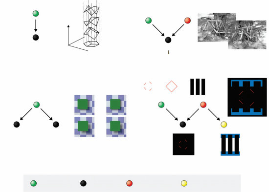
z y 2D线条图 图像测量
基础贝叶斯 折扣
S RE LE 或者 或者不是
相对深度 目标对象 遮挡对象
?
阴影 [图像测量 辅助图像测量] 立体位移 视差 I1 I2
线索整合
感知”解释性消除”
需要准确 不需要 测量 辅助测量估计 准确估计
图4.6
视觉推理的图形模型。(a) 视觉推理基本问题的表述。(b) 自行车的图像是由自行车的姿态、相机的视角和光照条件造成的。(c) 共同原因的例子。阴影和双眼立体线索是由同一事件引起的——两个表面，其中一个部分遮挡另一个。(d) 视觉中的解释性消除。3D = 三维；2D = 二维。图经Kersten和Yuille (2003)许可转载。
遮挡物的证据将改变对红线的解释：如果遮挡物似乎存在，那么感知就是一个菱形，而如果它不存在，就只是四条线段。这种结构直接类似于我们在整个章节中一直使用的”通灵朋友”例子：这完全是同一个图形模型，但具有不同的变量集合。
到目前为止，我们一直在非正式地讨论因果关系，考虑图形模型如何捕获生成过程的结构。然而，最近的工作已经产生了一个更精确的规范，说明如何使用图形模型来表示因果过程，基于理解行动后果的演算，这些行动被表征为对变量值的干预(interventions) (Pearl, 2000; Spirtes et al., 1993)。
在标准贝叶斯网络中，变量之间的边仅表示它们之间的统计依赖性。为了推理因果关系，我们需要用关于边所指示关系的更强假设来增强有向图形模型：它们表示直接的因果关系(Pearl, 2000; Spirtes et al., 1993)。
T. L. Griffiths和A. Yuille
边表示因果关系而不仅仅是依赖关系的假设，使得因果图形模型不仅能够表示人们可能观察到的事件的概率，还能表示通过干预系统可以产生的事件的概率——深入系统并将变量设置为特定值。一个事件的推理含义可能会有很大不同，这取决于它是被动观察到的还是在干预条件下观察到的。例如，观察到当你的朋友试图让铅笔悬浮时什么都没有发生，这将为反对她声称拥有超能力提供证据；但在你朋友试图让铅笔悬浮时秘密干预按住铅笔，会使铅笔不悬浮变得不令人惊讶，并且对她的能力没有信息价值。
在因果图形模型中，干预特定变量的后果可以通过移除该变量的所有输入边并在得到的”残缺”模型中执行概率推理来评估(Pearl, 2000)。这个过程产生的结果与我们在超能力例子中的直觉一致：干预铅笔悬浮(X2)破坏了它与你朋友的超能力(X3)的连接，使两个变量独立。因此，X2无法提供关于X3值的证据。Pearl定义了马尔可夫条件的一个版本——因果马尔可夫条件(causal Markov condition)——来描述如何使用因果图形模型在观察和干预下计算概率。
Pearl (2000)通过引入”do”操作符来表示固定变量值的干预，正式化了他的因果关系概念。使用这个操作符，我们可以用条件概率P(X3|do(X2 = 0))来表达我们对朋友超能力的查询，当我们已经干预阻止铅笔悬浮时，其中do(X2 = 0)表示X2已被固定为取值0而不是观察到具有该值。这个条件概率与我们仅仅观察到X2 = 0时得到的不同，后者是P(X3|X2 = 0)——两者将在不同的图形模型中评估。在Pearl的表述中，涉及”do”操作符的条件概率是通过采用通常用于计算相关条件概率的因果图形模型，并切断所有由”do”设置值的变量的输入边来计算的。
将图形模型扩展以捕获干预下的概率分布，使得能够从更广泛的数据范围中进行推理并可能学习。仅从观察数据中可能无法识别的关系，在允许干预时可能是可识别的。一些论文研究了人们是否对干预的后果敏感，通常发现人们适当地区分观察性和干预性证据（Hagmayer, Sloman, Lagnado, & Waldmann, 2007; Lagnado & Sloman, 2004; Steyvers, Tenenbaum, Wagenmakers, & Blum, 2003）。考虑人类认知应用的因果图形模型介绍由Glymour (2001)和Sloman (2005)提供。
Pearl (2000)提供了一种使用因果图形模型来推理对特定变量进行干预后果的方法，以他的”do”操作符(do operator)的形式。一个自然的问题是人们是否做出同样类型的推理。Sloman和Lagnado (2005)在一系列实验中探索了这个问题。其中第一个实验向参与者呈现了一个简单的场景：“桌子上有三个台球，它们以下列方式运动：球1的运动导致球2运动。球2的运动导致球3运动。”然后要求参与者回答两个问题：
想象球2不能运动；球1还会运动吗？圈出三个选项中的一个：可能会。不可能会。我不知道。
想象球2不能运动；球3还会运动吗？圈出三个选项中的一个：可能会。不可能会。我不知道。
这个场景下的因果图形模型是一个三个球的运动变量（称它们为B₁、B₂和B₃）在因果链中连接的模型：B₁ → B₂ → B₃。对B₂进行干预会断开从B₁到B₂的连接，使B₁和B₂变得独立。因此，使用”do”操作符预测参与者应该对第一个问题回答”可能会”，对第二个问题回答”不可能会”。
Sloman和Lagnado (2005)发现了正是这种结果模式——90%的参与者以Pearl框架预测的方式回答了每个问题。第二个实验显示，当底层关系是概率性的（而不是这里描述的球之间的确定性关系）时，类似的结果仍然成立。有趣的是，因果表述似乎对产生这些结果至关重要——使用”逻辑”场景（“有人在展示她的逻辑能力。她在不违反以下规则的情况下移动球：如果球1运动，那么球2运动。如果球2运动，那么球3运动。”）没有产生相同的结果模式。
Pearl (2000)还概述了”do”操作符在反事实推理(counterfactual reasoning)中的使用方式——基本上，在形成反事实时，我们想象对一个变量进行干预的后果。Sloman和Lagnado (2005)还发现人们的反事实推理与Pearl的描述大致一致，后续工作在更详细地研究人类反事实推理的形式结构方面建立在此基础上（综述见Sloman & Lagnado, 2015）。
我们已经看到图形模型如何用于指定复杂的生成模型并捕获因果关系——这是我们构建的关于周围世界的直觉模型的关键组成部分。但人们需要能够从经验中学习这些世界模型。现在我们转向图形模型如何学习的问题。
使用图形模型来表达因果关系的概率后果的前景，使得几个领域的研究人员询问这些模型是否可以作为从数据中学习因果关系的基础。每个统计学入门课程都教授”相关性不意味着因果性”。这确实是事实，但这并不意味着相关性不携带关于因果性的任何信息。因果模式意味着相关模式，这意味着学习者应该能够从观察到的相关性（或统计依赖性）反向工作，对可能产生这些观察数据的底层因果结构进行概率推理。
从一组观察数据构建图形模型涉及两种学习：结构学习和参数估计。结构学习是指识别底层图的拓扑结构，而参数估计涉及确定不同变量的条件概率分布的参数。结构学习可以说比参数估计更基础，因为只有在结构已知后才能估计参数。学习定义在许多变量上的图的结构是一个困难的计算问题，因为可能结构的数量是变量数量的超指数函数(super exponential function)（Koller & Friedman, 2009）。
参数估计问题的解决方案采用第3章中提出的推理参数值的一般方法（例如，Heckerman, 1998）。特别是，可以使用最大似然估计或贝叶斯方法，似然函数基于图中变量观察值的概率。在典型的机器学习应用中，贝叶斯网络(Bayesian networks)从提供这些变量值的多次观察的大型数据库中学习。例如，参数
根据贝叶斯网络的参数可以从患者数据库中估计得出，该数据库连接疾病与症状，每个患者都有一些症状和诊断，提供来自网络隐含的联合分布的多个样本。
结构学习试图识别一组观察数据背后的依赖结构。结构学习有两种主要方法：基于约束的学习和贝叶斯推理。基于约束的结构学习算法（例如，Pearl，2000；Spirtes等，1993）分两步进行。首先，使用标准统计假设检验（如皮尔逊χ²检验）来识别哪些变量是依赖的和独立的。由于马尔可夫条件意味着不同的因果结构应该导致变量间不同的依赖模式，观察到的依赖性为可能结构的集合提供了约束。算法的第二步识别这个集合，从依赖模式进行演绎推理。结果是一个或多个与数据显示的统计显著依赖性一致的结构。
相比之下，结构学习的贝叶斯方法根据每个图结构分配给数据集的概率来评估它们。通过对参数可能采用的值进行积分，可以计算给定图结构下数据集的概率，而不必承诺特定的参数值选择（例如，Cooper & Herskovits，1992）。这种计算是模型选择的一种形式，在第3章中有详细讨论。通常，先验要么是均匀的（给所有图相等的概率），要么给更复杂的结构更低的概率。贝叶斯结构学习通过搜索结构空间以找到具有最高后验概率的结构（Friedman，1997；Heckerman，1998），或者通过使用复杂的蒙特卡罗方法对图的后验分布进行积分来评估特定的因果关系（Friedman & Koller，2000）。
基于约束和贝叶斯的因果学习方法代表两种哲学，基于约束的方法依赖于频率统计检验的离散结果将归纳问题转化为演绎问题，而贝叶斯方法将结构学习视为贝叶斯推理的特例。这两种方法有不同的优缺点。基于约束的方法可能更具可扩展性，因为贝叶斯方法在计算上高度密集。然而，贝叶斯方法使得整合多个弱证据片段和融入先验知识成为可能——这在建模人类认知时很重要。
关于因果归纳的许多心理学研究都集中在这个简单的因果学习问题上：给定候选原因C和候选结果E，要求人们给出数字评分来评估C导致E的程度。判断问题的确切措辞有所不同，直到最近它还不是关注的焦点，尽管正如我们将看到的，它可能相当重要。大多数研究呈现对应于2×2列联表条目的信息，如表4.1所示。人们被给出关于在原因存在和不存在时结果发生频率的信息，用数字N(e⁺,c⁺)、N(e⁻,c⁻)等表示。在一个标准例子中，C可能是向小鼠注射化学物质，E是特定基因的表达。N(e⁺,c⁺)将是表达该基因的注射小鼠数量，而N(e⁻,c⁻)将是不表达该基因的未注射小鼠数量。我们将这类任务称为基本因果归纳(elemental causal induction)任务。
基本因果归纳的主要心理学模型是关联测度，可以从表4.1中频率的简单组合计算得出。Jenkins和Ward（1965）首次提出的经典模型断言，因果程度最好用量ΔP来衡量，定义为
ΔP = N(e⁺,c⁺)/(N(e⁺,c⁺) + N(e⁻,c⁺)) - N(e⁺,c⁻)/(N(e⁺,c⁻) + N(e⁻,c⁻)) = P(e|c⁺) - P(e|c⁻) (4.24)
其中P(e|c⁺)是给定原因存在时结果的经验条件概率，从列联表计数N(·)估计得出。因此ΔP反映了由于原因发生而导致的结果发生概率的变化。Cheng（1997）提出的另一种模型认为，人们的判断更好地
表4.1 基本因果归纳中使用的列联表表示
| 结果存在(e⁺) | 结果不存在(e⁻) | |
|---|---|---|
| 原因存在(c⁺) | N(e⁺,c⁺) | N(e⁻,c⁺) |
| 原因不存在(c⁻) | N(e⁺,c⁻) | N(e⁻,c⁻) |
[2.] 与本书其他部分一样，我们将用大写字母表示变量，如C和E，用小写字母表示它们的实例化，其中c+、e+表示原因或结果存在，c−、e−表示原因或结果不存在。
120 T. L. Griffiths 和 A. Yuille
通过一个称为因果力量的度量来捕获：
因果力量 = P(e+|c+) - P(e+|c−) / (1 - P(e+|c−)) , (4.25)
它将ΔP作为一个组成部分，但预测当P(e+|c−)较大时，ΔP将产生更大的影响。直观上，除以1 - P(e+|c−)是通过可能的最大值对ΔP进行标准化。因此它估计了在E本身不会发生的情况下，当C存在时E确实发生的比例——即C影响E的力量。
已经进行了几项实验，旨在评估ΔP和因果力量作为人类判断模型的有效性。在一项这样的研究中，Buehner和Cheng（1997年，实验1B；该实验也出现在Buehner, Cheng, & Clifford, 2003中）要求人们评估15组权变关系的因果关系，这些关系表达了P(e+|c+)和P(e+|c−)以0.25为增量的所有可能组合。具体地，他们被要求在0（“完全没有”）到100（“每次都有”）的量表上评估原因产生结果的强度。该实验的结果如图4.7所示，同时显示了ΔP和因果力量的预测。从图中可以看出，ΔP和因果力量都捕获了数据中的一些趋势，分别产生了r = 0.89和r = 0.88的相关性。然而，由于这两个模型预测的趋势本质上是正交的，两个模型都没有[3]提供对数据的完整解释。
ΔP和因果力量似乎捕获了人类因果归纳的一些重要元素，但遗漏了其他元素。通过使用因果图形模型和贝叶斯推理的工具来考虑因果归纳背后的计算问题，我们可以深入了解这些模型背后的假设，并识别一些可能的替代模型。基础因果归纳的任务可以看作是试图推断哪个因果图形模型最好地刻画了变量C和E之间的关系。图4.8显示了连接C、E和另一个变量B的两种可能的因果结构，其中B总结了E的所有其他”背景”原因的影响（假设这些原因持续存在）。学习哪个因果图形模型是正确的问题有两个方面：推断正确的因果结构，这是一个模型选择问题；以及在假设特定结构的情况下确定正确的参数，这是一个参数估计问题。
为了更精确地表述模型选择和参数估计问题，我们需要对图4.8所示的因果图形模型的性质做出一些进一步假设。特别是，我们需要为不同的结构定义条件概率分布P(E|B, C)的形式，通常称为图的参数化。有时参数化是微不足道的——例如，在图0中C和E是独立的，所以我们只需要指定P₀(E|B)，其中下标表示该概率与图0相关联。这可以用单个数值参数w₀来完成，它提供了在背景原因存在的情况下效应存在的概率。
[3.] 参见Griffiths和Tenenbaum（2005）关于如何评估这些相关性的详细信息，使用幂律变换来考虑参与者判断量表中的非线性。
图形模型 121
P(e⁺|c⁺) 8/8 6/8 4/8 2/8 0/8 8/8 6/8 4/8 2/8 8/8 6/8 4/8 8/8 6/8 8/8 P(e⁺|c⁻) 8/8 6/8 4/8 2/8 0/8 6/8 4/8 2/8 0/8 4/8 2/8 0/8 2/8 0/8 0/8
100 人类 50
0
100
ΔP 50
0
100 力量 50
0
100 支持 50
0
100 χ² 50
0
图4.7 模型预测与Buehner和Cheng（1997年，实验1B）人类参与者表现的比较。图顶部的数字显示刺激权变关系。柱状图显示人类对原因产生结果强度评分的平均值大小，量表从0-100，误差条显示一个标准误差，以及相应的模型预测。“力量”指因果力量（Cheng, 1997），“支持”指因果支持（Griffiths & Tenenbaum, 2005），χ²指相应权变表的皮尔逊χ²检验统计量。改编自Griffiths和Tenenbaum（2005）。
原因，P₀(e⁺|b⁺; w₀) = w₀。然而，当一个节点有多个父节点时，原因和结果之间的函数关系可以用许多不同的方式来定义。例如，在图1中，我们需要解释原因B和C如何相互作用产生结果E。
一个简单且广泛使用的参数化方法
二元变量贝叶斯网络的一个有用参数化是噪声或分布(Pearl, 1988)。
![图0] ![图1]
![B] ![C] ![B] ![C]
![E] ![E]
图4.8
涉及三个变量的有向图，B、C和E，与元素因果推导相关。B代表背景变量，C代表潜在因果变量，E代表关注的效应。假设图1用于计算**ΔP和因果力。计算因果支持涉及比较图1的结构与图0的结构，在图0中C和E*是独立的。
噪声或可以在多个原因和单一联合效应之间的因果关系方面给出自然解释。对于图1，这些假设是B和C都是生成性原因，每个都有独立的机会产生效应。
仅在B存在时E的概率是w₀，仅在C存在时是w₁。
当两者都存在时，E发生的概率是w₀ + w₁ - w₀w₁，其中最后一项防止双重计算B和C都产生效应的情况。我们可以将所有情况写成一个方程如下：
P(e|b, c; w₀, w₁) = 1 - (1 - w₀)(1 - w₁), (4.26)
其中w₀和w₁分别是与B和C强度相关的参数，b = c = 1和b = c = 0用于算术运算。
这种参数化称为噪声或，因为如果w₀和w₁都是1，方程(4.26)就简化为逻辑或函数：当且仅当B或C存在，或两者都存在时，效应才发生。
当w₀和w₁在[0, 1]范围内时，噪声或软化了这个函数但保持了其本质上的析取交互：当且仅当B引起它(发生概率为w₀)、C引起它(发生概率为w₁)，或两者都引起时，效应才发生。
图1的一个替代方案可能是线性参数化，断言E发生的概率是B和C的线性函数。这对应于假设原因的存在只是将效应的概率增加一个常数量，无论可能存在的任何其他原因。结果是
P(e|b, c; w₀, w₁) = w₀ · b + w₁ · c. (4.27)
这种参数化要求我们约束w₀ + w₁位于0和1之间，以确保方程(4.27)产生合法的概率分布。由于看起来直观上应该独立的参数之间的这种依赖性，这种线性参数化通常不在贝叶斯网络中使用。然而，它对理解人类因果推导模型是相关的。
参数估计与结构学习 给定特定的因果图结构和特定的参数化——例如，用噪声或函数参数化的图1——推断最好地表征该模型中因果关系的强度参数是直接的。我们可以使用第3章讨论的任何参数估计方法，如最大似然或最大后验估计，来找到最适合一组观察到的偶然性的参数值(图1中的w₀和w₁)。Tenenbaum和Griffiths (2001b; Griffiths & Tenenbaum, 2005)表明，本章介绍的两个因果推导心理模型——ΔP和因果力——都对应于因果强度参数w₁的最大似然估计，但在图1参数化的不同假设下。ΔP源于假设线性参数化，而因果力源于假设噪声或。
这种对ΔP和因果力的观点有助于揭示它们潜在的相似性和差异：它们在作为描述因果关系的强度参数的最大似然估计方面是相似的，但在它们对该关系形式的假设方面不同。这种分析还提出了另一类因果推导模型：学习因果图结构或因果模型选择而不是参数估计的模型。回想我们对模型选择的讨论，我们可以将一组偶然性d为支持因果关系存在(即图1相对于图0)提供的证据表达为支持图1的对数似然比。将这个量称为因果支持，我们有
support = log P(d|Graph 1)/P(d|Graph 0), (4.28)
其中P(d|Graph 1)和P(d|Graph 0)通过对与不同结构相关的参数进行积分来计算：
P(d|Graph 1) = ∫₀¹ ∫₀¹ P(d|w₀, w₁, Graph 1) P(w₀, w₁|Graph 1) dw₀ dw₁ (4.29)
P(d|Graph 0) = ∫₀¹ P(d|w₀, Graph 0) P(w₀|Graph 0) dw₀. (4.30)
Tenenbaum和Griffiths (2001b; 以及Griffiths & Tenenbaum, 2005)提出了这个模型，并特别假设图1的噪声或参数化和w₀和w₁的均匀先验。方程(4.30)与β分布的归一化常数相关，具有解析解(见第3章)。评估方程(4.29)更复杂
的挑战，但我们将在本章后面讨论蒙特卡罗方法进行近似概率推理时回到这个问题。
对Buehner和Cheng (1997)使用的刺激计算因果支持的结果如图4.7所示。因果支持为这些数据提供了极好的拟合，r = 0.97。该模型捕获了P和因果力量预测的趋势，以及两个模型都没有预测的趋势。这些结果表明，当人们评估偶然性时，他们可能会考虑这些数据为因果关系提供的证据，以及它们暗示的关系强度。图中还显示了将皮尔逊的χ²检验应用于这些数据得到的预测，这是评估关系证据的标准假设检验方法(也是非贝叶斯结构学习方法的常见组成部分；例如，Spirtes等，1993)。这些预测忽略了人类数据中的几个重要趋势，表明能够断言关于超越纯粹依赖性的因果关系性质的期望(如噪声OR参数化的假设)有助于该模型的成功。因果支持在几个对P和因果力量有问题的其他数据集上预测人类判断，并且还适应基于事件发生率的因果学习(有关更多详细信息，请参见Griffiths & Tenenbaum, 2005)。
贝叶斯因果归纳方法可以扩展到涵盖各种更复杂的情况，包括在更大的因果网络中学习和干预(例如，Steyvers等，2003；Bramley, Dayan, Griffiths, & Lagnado, 2017)，连续的原因和结果(例如，Griffiths & Pacer, 2011；Davis, Bramley, & Rehder, 2020；Lu, Rojas, Beckers, & Yuille, 2016)，以及连续时间(例如，Pacer & Griffiths, 2012；Pacer & Griffiths, 2015)。
在这些更复杂的情况下建模学习通常需要我们使用比解释基本因果归纳所需的更强和更结构化的先验分布。这种先验知识可以用直觉领域理论(Carey, 1985；Wellman & Gelman, 1992；Gopnik & Meltzoff, 1997)来有效描述，这些理论是抽象概念和原理的系统，指定了在一个领域中可以存在的实体种类、它们的属性和可能状态，以及可以在它们之间存在的因果关系种类。
这些抽象的因果理论可以形式化为因果图形模型假设空间的概率生成器，使用生成语法的概率形式、谓词逻辑或我们在书中后面更详细讨论的其他结构化表示(例如，Griffiths & Tenenbaum, 2009；Kemp等，2010b)。给定一组对象之间因果事件的观察，这些概率理论生成用于表示这些事件的相关变量、这些变量上可能因果图的约束空间，以及这些图的允许参数化。它们还在候选因果模型的假设空间上生成先验分布，这为本章前面描述的方法精神的贝叶斯因果学习提供了基础。
人类观察者对视觉和听觉线索都很敏感。有时这些线索有共同的原因——例如，你看到一只狗在移动并听到它在叫。在其他情况下，听觉和视觉线索是由不同原因造成的——例如，一只猫在移动，附近的狗在叫。腹语术师能够通过让观众认为木偶在说话来伪造这些互动，方法是将声音(由腹语术师产生)与木偶的动作联系起来。当视觉和听觉线索有不同的原因——因此是冲突的——但观众将它们感知为有相同原因时，就会发生腹语术效应(ventriloquism)。
Körding等(2007)开发了一个旨在捕获这种腹语术效应的贝叶斯模型。该模型将这个问题表述为确定两个线索是否有共同原因的问题。他们使用变量C来表示因果结构，如图4.9所示。当C = 1时，感觉信号背后有共同原因，所以听觉线索X[A]和视觉线索X[V]的位置从相同的潜在位置S生成。由此产生的联合分布是p(x[A], x[V], s) = p(x[A]|s)p(x[V]|s)p(s)。
这里，p(x[A]|s)和p(x[V]|s)是具有相同均值s和方差σ[A]²和σ[V]²的高斯分布。假设视觉线索比听觉线索更精确，所以σ[V] < σ[A]。
C = 1 C = 2
s s[A] s[V]
x[A] x[V] x[A] x[V]
图4.9
腹语效应(ventriloquism effect)。参与者被要求估计线索的位置，并判断这些线索是否来自共同原因——即是否在同一位置。在贝叶斯框架下，判断是否存在共同原因的任务可以表述为模型选择——即听觉和视觉线索更可能来自单一原因(C = 1)还是两个独立原因(C = 2)？图片经Körding等人(2007)许可转载。
真实位置S从概率分布p(s)中抽取，假设为均值为0、方差为σ²ₚ的高斯分布。
相比之下，C = 2意味着线索来自两个位置Sₐ和Sᵥ，在这种情况下我们有p(xₐ|sₐ)和p(xᵥ|sᵥ)，两者都是高斯分布，均值和方差分别为(sₐ, σ²ₐ)和(sᵥ, σ²ᵥ)。我们假设Sₐ和Sᵥ是从均值为0、方差为σ²ₚ的高斯分布中独立采样的。得到的联合分布P为p(xₐ, xᵥ, sₐ, sᵥ) = p(xₐ|sₐ)p(xᵥ|sᵥ)p(sₐ)p(sᵥ)。
在C = 1和C = 2之间做决定需要进行模型选择。后验分布P(C|xₐ, xᵥ)通过对线索的估计位置求和来计算，以获得似然p(xₐ, xᵥ|C)。对于C = 1，我们有
p(xₐ, xᵥ|C = 1) = ∫_{-∞}^{∞} p(xₐ|s)p(xᵥ|s)p(s) ds, (4.31)
而对于C = 2，我们有
p(xₐ, xᵥ|C = 2) = ∫{-∞}^{∞} ∫{-∞}^{∞} p(xₐ|sₐ)p(xᵥ|sᵥ)p(sₐ)p(sᵥ) dsₐ dsᵥ. (4.32)
有两种方法来结合线索。第一种是模型选择。这估计最可能的模型C∗ = arg max P(C|xᵥ, xₐ)从输入xₐ, xᵥ，然后使用该模型从后验分布估计线索的最可能位置sₐ, sᵥ。结合线索的第二种方法是模型平均。这不承诺选择C∗，而是对两个模型进行平均：
P(sᵥ, sₐ|xᵥ, xₐ) = ∑_C P(sᵥ, sₐ|xᵥ, xₐ, C)P(C|xᵥ, xₐ), (4.33)
其中当C = 1时，sᵥ = sₐ = s。
该模型与实验进行了比较，实验中同时呈现了简短的听觉和视觉刺激，并具有不同程度的空间差异。参与者被要求识别线索的空间位置以及他们是否感知到共同原因(Wallace等，2004)。视觉刺激越接近听觉刺激，人们就越有可能感知到共同原因。在这种情况下，人们对其位置的估计受到视觉刺激的强烈偏向(因为它被认为更精确，σ²ᵥ < σ²ₐ)。但如果人们感知到不同的原因，那么他们的估计会被推离视觉刺激，并表现出负偏差(negative bias)。Körding等人(2007)认为这种偏差是由于限制在感知原因为不同的试验中产生的选择偏差。例如，如果听觉刺激在中心，视觉刺激在中心右侧5度，那么有时非常嘈杂的听觉线索会接近视觉线索，因此被判断为有共同原因，而在其他情况下，听觉线索会更远(超过5度)。因此，听觉线索将具有截断高斯分布(如果被判断为不同)，并会产生负偏差。
图4.10
腹语效应中的因果推断报告。(a)被试报告一个原因(黑色)的相对频率与因果推断模型的预测(红色)一起显示。(b)显示偏差，即视觉对感知听觉位置的影响(灰色和黑色)。模型的预测显示为红色。(c)解释负偏差发现的示意图。蓝色和黑色点分别代表感知的视觉和听觉刺激。在粉色区域中，人们感知到共同原因。图片经Körding等人(2007)许可转载。
Natarajan、Murray、Shams和Zemel(2009)进一步研究了这些问题。特别是，他们表明人类在这些类型实验中的表现可以通过用更稳健的替代方案替换高斯分布来更好地建模。
已知高斯分布并不稳健，因为其分布的尾部快速下降，这给稀有事件的概率赋予了非常低的值。因此，在许多现实世界的应用中，人们更倾向于使用尾部更厚重的分布。基于这一推理，Natarajan等人（2009）假设观测值X[A]和X[V]是由尾部更厚重的分布生成的。更准确地说，他们假设数据由高斯分布（如这里描述的模型）和均匀分布的混合分布生成，这种均匀分布产生了更厚重的尾部。所产生的模型能够更好地解释人类行为。
图形模型是处理概率分布和描述人们对因果关系进行推断的宝贵工具。本章涵盖的思想是让我们定义更具表达力的世界模型的一步，并为我们提供了理解人们如何通过经验学习这些模型的新工具。特别是，它们展示了抽象层次如何在定义生成式模型中发挥价值作用——这一主题在后续章节中将变得越来越重要，因为我们开始考虑如何形式化直觉理论。
在接下来的章节中，我们将广泛使用图形模型，开始处理越来越复杂的概率分布。这种形式化为我们提供了一种语言，我们可以用来思考和定义这些分布。构建人类认知某个方面的贝叶斯模型的第一步通常是试图找出一种方法来表达学习者可能使用的假设——学习者观察到的数据的生成式模型。图形模型使这个过程变得更加容易，让我们能够探索更丰富的生成式模型。
Thomas L. Griffiths 和 Alan Yuille
当我们开始构建更具表达力的世界模型时，我们遇到了一个新问题：我们可能没有进行推断所需的某些信息。如果我们想确定某种化学物质是否导致基因表达，我们需要排除可能涉及的其他变量。如果我们想推断一个物体是否导致另一个物体移动，了解这些物体的质量可能会有所帮助。如果我们要将朋友点意大利面这一事实作为他偏好的指标，我们应该检查他是否看到有单独的披萨菜单。
在我们迄今讨论的模型中，我们需要推理的所有变量要么是可观察的数据，要么是我们想从这些数据中推断的假设或参数。然而，随着我们的生成式模型变得更加复杂，产生可观察数据的步骤也可能反映某种我们没有机会观察到的潜在结构。这种结构使用潜在变量(latent variables)来捕获。
聚类(Clustering)是潜在变量问题的一个经典例子。想象你参观了一个动物救助机构，被告知他们目前饲养着三个品种的狗。当你四处走动观察这些狗时，你可能试图弄清楚哪只狗属于哪个品种。即使你没有任何关于一个品种与另一个品种区别的信息，你也可能根据观察到的狗之间的相似性提出一些好的猜测，在脑海中将一些狗聚集在一起。
在这种情况下，狗的聚类分配是潜在变量——影响我们观察结果但本身不可观察的变量。同样，我们可以想象文档按其讨论的主题组织，植物的特性由其在分类层次结构中的位置决定，或者面孔根据少数有意义的心理维度进行特征化。这些表示中的每一个都假设了一组不同的潜在变量，对应于主题分配、树中的节点，或我们可能试图从观察中推断的空间中的位置。
理解人们如何进行这种推断是理解我们如何参与无监督学习(unsupervised learning)的一步——在没有明确标签的情况下学习我们世界的结构。一些最令人印象深刻的科学突破涉及以这种方式假设新的表示——想想门捷列夫将元素组织到周期表中，或达尔文认为物种应该组织成树的见解。然而，潜在变量也是构建更复杂生成式模型的关键，这些模型能够捕获日常经验中的一些潜在结构，从而为人们如何进行利用该结构的推断提供潜在解释。在本章中，我们将探索如何定义这样的模型，如何估计它们的参数，以及如何使用它们来解释人类认知的各个方面。
一般来说，潜在变量模型涉及两种变量：我们能观察到的和我们不能观察到的。后者是潜在变量。我们将使用Xi表示可观察变量，使用Zi表示潜在变量。通常，这些变量通过生成式模型相关联，该模型指定Xi如何通过潜在结构Zi生成。这样的模型最终可以用来对与新数据点相关的潜在结构进行推断，同时提供Xi分布的更准确模型。
也许使用最广泛的潜在变量模型是混合模型(mixture model)，其中
Xi 的分布被假设为几个其他分布的混合。我们在前面的章节中已经简要讨论了分布混合作为指定先验分布的便捷方式，而无需明确涉及的潜在变量。在混合模型中，潜在变量 Zi 指示混合的哪个组件用于生成每个观察到的数据点 Xi。
更正式地说，混合模型将 Xi 的概率指定为一组 k 个组件分布的混合：
[p [[[]]] [k]] [(] x i [)] [=] p[(]x[i][|]zi [=] j[)]P[(]zi [=] j[)], (5.1)
[j][=]1
其中 p[(]x [i][|]zi [=] j[)] 是与组件 j 相关联的分布，P[(]zi [=] j[)] 是数据点从该组件生成的概率。潜在的生成模型是这样的：我们首先采样潜在变量 Zi 的值，确定将用于生成 Xi 的组件，然后从与该组件相关联的分布中采样 Xi。图5.1显示了一个表达这种结构的简单图形模型，忽略了用于定义潜在分布的参数。
混合模型的一个常见应用是聚类问题。在这种情况下，潜在变量 Zi 指示观察 Xi 来自哪个簇，分布 p[(]x[i][|]z[i][)] 刻画了簇的形式。例如，我们可能认为我们的数据是从两个簇生成的，每个簇都与不同的高斯分布相关联。P[(]Z[i][)] 将指定每个高斯分布在数据中的流行程度，每个高斯的参数将定义 p[(]x[i][|]z[i][)]。如果我们能够估计刻画这些分布的参数，我们就可以推断任何数据点 (xi) 的可能簇成员关系 ( zi)。
更一般地说，混合模型允许我们捕获概率分布，这些分布的形状与迄今为止讨论的任何简单分布都不匹配。因此，混合模型经常用于密度估计——估计概率密度函数的形式。混合模型的这种用途与人类如何表示类别的模型有着有趣的联系。
[Building] [Complex] [Generative] [Models] [[131]]
[n ]
图5.1
用高斯混合进行聚类的基本图形模型。这里，xi 是第 i 个数据点，zi 是其簇分配。变量周围的框是一个平板，表示这种结构在 n 个观察中被复制。
在第3章中，我们简要讨论了一个记忆模型，其中类别被表示为高斯分布 (Huttenlocher, Hedges, & Vevea, 2000)。这种表示类别的方式不仅使从记忆中重构对象变得容易，而且还使决定这些对象的类别成员关系变得容易。这里的呈现借鉴了 Griffiths, Sanborn, Canini, Navarro, and Tenenbaum (2011a) 的工作。
作为贝叶斯推理的分类 在心理学中形式化分类问题的标准方法是假设人们被给予一组 n [−] 1 个具有特征的刺激 [x][n]− [=] [(]x1, x[2], [. . .] , x[n][−]1 [)] 和类别标签 [c][n]− [=] [(]c1, c[2], [. . .] , c[n][−][1][)]，需要计算具有特征 x[n] 的新刺激被分配到类别 c 的概率。我们可以通过应用贝叶斯法则来计算这个概率：
[P p[(]x [n][|]c[n] [=] c, [x][n]− , [c][n]−[)]P[(]c[n] [=] c[|][c][n][−][1][)] [(] c [n] [=] c [|] x [n] , [x] [n] [−] 1 , [c] [n] [−] 1 [)] [=] [∑]] , (5.2) p [(] x [n] [|] c [n] [=] c , [x] [n] [−] 1 , [c] [n] [−] 1 [)] P [(] c [n] [=] c [|] [c] [c] [n] [−] 1 [)]
其中类别 c 的后验概率与从该类别产生具有特征 x[n] 的对象的概率和选择该类别的先验概率的乘积成正比，考虑到前 n [−] 1 个对象的特征和标签（假设只有类别标签影响先验）。
这种分类问题的表述清楚地表明，学习一个类别是确定这些概率分布形式的问题——一个密度估计问题。从以前的观察 [x][n]− 和 [c][n]− 中，我们需要推断在 c[n] 的每个值给定时 x[n] 分布的概率密度。解决这个问题的一种策略是假设每个类别都是标准形式的分布——比如高斯分布——并从以前的观察中估计这些分布的参数。这可以使用第3章介绍的最大似然估计或最大后验概率 (MAP) 估计方法来完成。这种方法被称为参数密度估计(parametric density estimation)，因为它将问题简化为参数估计（例如，Rice, 1995）。
类别和混合 混合模型提供了定义概率分布的更灵活方式。直觉上，将某些类型的类别视为混合似乎是自然的。回到本章引言中的例子，狗的类别包含许多在属性上变化的品种，每个品种都可能被不同的分布捕获
不同的混合成分。因此我们可以尝试使用混合模型来解决我们的密度估计问题。
T. L. Griffiths 和 A. Yuille
Rosseel (2002) 基于这一思想提出了人类类别学习的解释。分类混合模型假设 P(x[n]|c[n] = c, x[n−1], c[n−1]) 是一个混合分布。具体来说，该模型假设每个对象 xi 来自一个聚类 zi，每个聚类都与该聚类生成的对象特征的概率分布相关联。当评估新对象 x[n] 的概率时，需要对该对象可能来自的所有聚类求和，其中
p(x[n] | c[n] = c, x[n−1], c[n−1]) = ∑[j=1][k*[c]] p(x[n] | z[n] = j, x[n−1], z[n−1]) P(z[n] = j | z[n−1], c[n] = c, c[n−1])，(5.3)
其中 k[c] 是类别 c 的聚类总数，p(x[n] | z[n] = j, x[n−1], z[n−1]) 是 x[n] 在聚类 j 下的概率，P(z[n] = j | z[n−1], c[n] = c, c[n−1]) 是在类别 c 中从聚类 j 生成新对象的概率。聚类可以在类别之间共享，也可以特定于单个类别（在这种情况下，对于不属于类别 c 的所有聚类，P(z[n] = j | z[n−1], c[n] = c, c[n−1]) 为 0）。
虽然我们明确地将分类问题表述为贝叶斯推理和密度估计，但人类分类的心理学模型传统上是用不同的术语定义的。这里提出的解释关注 Marr (1982) 的计算层面，考虑人类心智需要解决的抽象问题及其理想解决方案。以前的心理学模型在算法层面表达，关注支持分类的表征和过程。我们在本节中对这些模型的阐述基于 Griffiths, Kemp, and Tenenbaum (2008c)，其中提供了进一步的细节和关于这些模型如何扩展的信息。
心理学模型通常将分类问题识别为基于主观相似性感知将刺激分配到类别的问题（例如，Reed, 1972; Medin & Schaffer, 1978; Nosofsky, 1986）。在这种表述中，x[n] 被分配到类别 c 的概率由以下公式给出：
P(c[n] = c | x[n], x[n−1], c[n−1]) = η[nc]β[c] / ∑[c] η[nc]β[c]，(5.4)
其中 η[nc] 是刺激 x[n] 与类别 c 的相似性，β[c] 是类别 c 的反应偏差，反映了人们产生该类别标签的倾向程度。
不同的分类模型可以通过对如何计算 η[nc]（刺激与类别的相似性）做出不同假设来定义。图 5.2 说明了三种这样的策略。
在原型模型(prototype model)中（例如，Reed, 1972），类别 c 由单一的原型实例表示。在这种解释下，你的狗类别将由一只捕获狗的一般特性的单一原型狗来表示。为了形式化这一点，刺激 n 与类别 c 的相似性定义为
η[nc] = η[np[c]]，(5.5)
其中 p[c] 是类别的原型实例，η[np[c]] 是刺激 n 与原型 p[c] 之间相似性的度量。定义原型的一种常见方式是作为
图 5.2
不同的分类模型可以表达为不同类型的混合模型。在原型模型（左）中，一个类别表示为单一的参数概率分布，如高斯分布。在样例模型(exemplar model)（右）中，类别表示为以样例为中心的一组核的总和。这可以被认为是一个具有与数据点一样多的成分的混合模型。具有较少聚类的混合模型（中心）提供了在这些极端之间插值的方法。
类别在某个心理空间中所有实例的质心；即，
p[c] = (1/n[c]) ∑[i|ci=c] xi，(5.6)
其中 n[c] 是类别的实例数量（即 ci = c 的刺激数量）。
在样例模型(exemplar model)中（例如，Medin & Schaffer, 1978; Nosofsky, 1986），一个类别由该类别的所有存储实例表示。在这种解释下，你对狗类别的表征就是你见过的所有狗。刺激 n 与类别 c 的相似性通过将刺激与该类别所有存储实例的相似性求和来计算。即，
η[nc] = ∑[i|ci=c] η[ni]，(5.7)
其中 [η] [ni] 是两个刺激 x[n] 和 xi 之间相似性的对称度量。相似性度量通常是两个刺激之间距离的指数函数或高斯函数。
样例模型和原型模型代表了定义刺激间相似性问题的两种极端解决方案。Vanpaemel、Storms 和 Ons (2005) 观察到，我们可以通过允许每个类别的实例被划分为簇来形式化一组插值模型，其中簇的数量 k [c] 的范围从 1 到 n[c]。然后每个簇由一个原型表示，刺激 n 与类别 c 的相似性定义为
[η] [nc] [=] [η][np][jc] , (5.8)
其中 p[jc] 是类别 c 中簇 j 的原型。当对于所有 c，k[c] [=] 1 时，这等同于原型模型；当对于所有 c，k[c] [=] n[c] 时，这等同于样例模型。
虽然原型模型和样例模型最初纯粹是作为分类背后心理过程的解释而提出的，但我们实际上可以对原型模型和样例模型给出合理的计算层次解释。Ashby 和 Alfonso-Reese (1995) 观察到在方程 (5.2) 中提出的分类问题的贝叶斯解决方案与在样例模型和原型模型中计算类别成员概率的方式（即方程 (5.4)）之间的联系。
具体来说，η [nc] 可以与 p(x[n][|]c[n] [=] c, [x][n]− , [c][n]−) 相识别，而 β[c] 捕获类别 c 的先验概率 p(c [n] [=] c[|][c][n][−]1)。因此，样例模型和原型模型之间的差异归结为估计 p(x [n][|]c[n] [=] c, [x][n]−, [c][n]−) 的不同方式。
样例模型中使用的 η [nc] 定义（方程 (5.7)）对应于将 P(x[n][|]c[n] [=] c, [x][n]−, [c][n]− ) 估计为以已标记为属于类别 c 的 xi 为中心的一组函数（称为核(kernels)）的和，其中
p(x [n][|]c[n] [=] c, [x][n]−, [c][n]−) [∝] f (x[n], xi), (5.9)
其中 f ( x , x i ) 是以 x i 为中心的概率分布。这是统计学中广泛用于近似分布的方法，是一种非参数密度估计(nonparametric density estimation)形式（意味着它可以用于识别分布而不假设它们来自潜在的参数族），称为核密度估计(kernel density estimation)（例如，Silverman, 1986）。
原型模型中使用的 η [nc] 定义（方程 (5.5)）对应于通过假设与每个类别相关的分布来自潜在的参数族来估计 p(x[n][|]c[n] [=] c, [x][n]−, [c][n]−)，然后找到最能表征标记为属于该类别的实例的参数。原型对应于这些参数——对于高斯分布，它将是均值。同样，这是估计概率分布的常用方法——这是我们之前介绍的参数密度估计策略。
将样例模型和原型模型解释为不同的密度估计方案表明，插值模型可能也会有类似的解释。实际上，相应的解决方案由 Rosseel (2002) 的分类混合模型(Mixture Model of Categorization)给出。通过与样例模型使用的类似论证，我们可以将方程 (5.3) 与方程 (5.8) 中 η[nc] 的定义联系起来，为采用在样例和原型之间插值的表示提供了理由。实际上，这个模型可以产生我们讨论过的所有类型的表示：当每个刺激都有自己的簇且簇权重相等时，它简化为核密度估计；当每个类别由单个簇表示时，它简化为参数密度估计。
混合模型提供了使用简单部分定义复杂分布的好方法。在第3章中，我们介绍了使用共轭先验来简化连续变量贝叶斯推断的思想，但许多合理的先验分布并不在给定似然函数的共轭先验族中。采用共轭先验的混合作为先验保留了共轭先验提供的许多有吸引力的可处理性，但也允许我们定义更具表达力的先验分布。作为一个简单的例子，我们可以回到估计高斯均值的问题，看看当我们使用高斯的混合而不是单个高斯作为先验时会发生什么。
假设我们观察到从高斯分布生成的数据 x，该分布具有均值 µ 和标准差 σ。与第三章中简单假设 µ 服从高斯先验不同，现在假设 µ 的先验是一个混合分布，其中 p(µ) = p(µ|z)P(z)，z 在混合成分上变化，p(µ|z) 是高斯分布。然后我们可以通过应用贝叶斯规则来计算给定观测值 x 的 z 和 µ 的联合后验分布 p(µ, z|x)。如果我们选择将这个联合分布因式分解为 p(µ|x, z)P(z|x)，我们可以得到后验均值的以下表达式：
*µ̄ = ∑_z ∫ µ p(µ|x, z)P(z|x) dµ* (5.10)
*= ∑_z P(z|x) ∫ µp(µ|x, z) dµ* (5.11)
*= ∑_z P(z|x) ∫ µp(µ|x, z) dµ*, (5.12)
这里我们抓住机会改变概率分布的求和顺序（在这种情况下，交换我们评估求和和积分的顺序）。
由于 p(µ|x, z) 是使用与混合成分 z 相关的高斯分布作为先验的 µ 的后验分布，我们可以将第三章中关于高斯先验下 µ 后验均值的先前结果代入 ∫ µp(µ|x, z) dµ。我们可以将这个后验均值写为：
µ̄ = (σ²x + σ₀²µ₀)/(σ² + σ₀²) = (σ₀²x + σ²µ₀)/(σ² + σ₀²), (5.13)
其中 σ² 是给定 µ 时 x 的方差，µ₀ 和 σ₀² 是先验的均值和方差。使用混合模型的后验均值就是使用每个成分作为先验所获得的后验均值的平均值，按该成分的概率加权。在所有成分都有相同方差 σ₀² 的情况下，我们得到：
*µ̄ = (σ₀²x + σ²∑_j p(z = j|x)µ₀^(j))/(σ² + σ₀²)*, (5.14)
其中 µ₀^(j) 表示第 j 个成分的均值。因此，后验均值在观测值 x 和先验成分均值的加权平均值之间线性插值。
感知磁铁效应(perceptual magnet effect) 是在语音感知中记录的一种现象，其中接近语音类别中心的声音被感知为彼此更相似，而接近两个类别边界的声音则不然（Iverson & Kuhl, 1995）。我们可以使用基于高斯混合模型的模型为为什么观察到这种效应提供理性解释（Feldman & Griffiths, 2007; Feldman, Griffiths, & Morgan, 2009）。
当我们感知语音时，我们接收到连续信号 x 并尝试重建说话者产生的声音 µ。假设信号传输中的噪声是高斯的，给定 µ 时 x 的分布具有均值 µ 和标准差 σ。如果只有一个语音类别，并且我们假设该类别对应于 µ 可能值上的高斯分布，均值为 µ₀，标准差为 σ₀，那么我们回到了使用高斯先验估计高斯均值的熟悉领域。也就是说，给定 x 的 µ 的后验分布将是高斯的，其均值在 x 和 µ₀ 之间插值。将感知的语音作为给定 x 的 µ 的期望值（后验均值），意味着感知空间将是刺激空间的线性变换，将刺激压缩到类别均值附近的区域。这在图5.3的左面板中有所说明。
实际上，语言有多个语音类别。因此，µ 的适当先验是高斯混合，每个成分对应不同的语音。感知语音的重建因此会受到声音可能属于的所有类别的影响，给定 x 的 µ 的后验均值由方程(5.14)给出。图5.3的右面板说明了该方程对两个语音类别情况的预测结果。当刺激接近一个类别的均值时，重建被拉向该类别的均值。然而，当它们接近类别归属模糊的区域时，两个类别都会施加影响。因此，后验的均值更接近原始刺激值。这在类别均值附近产生感知空间的压缩，在边界之间产生扩展，正是感知磁铁效应中发生的情况。
模型中潜在变量的存在带来两个问题：在给定观测数据的条件下推断潜在变量的值，以及学习表征可观测和潜在变量的概率分布。在概率框架中，这两种形式的推断都归结为在已知变量条件下推断未知变量的值。这在概念上是直接的，但涉及的计算很困难，可能需要复杂的算法。
为了理解这个挑战，想象我们有一个数据 x 的模型，该模型有参数 θ 和潜在变量 z。混合模型是这种模型的一个例子。似然函数
这个模型的似然函数是 p([x][|]θ) [=] [z] p([x], [z][|]θ)，其中潜在变量 [z] 是未知的。为了应用最大似然估计（或MAP估计），我们需要计算似然函数（或对数似然函数）相对于 θ 的导数。这可能是一个挑战，因为似然函数涉及对 [z] 的求和。特别地，当 [z] 有许多可能值 [n] 时，这种方法是难以处理的（例如，对于 k 个聚类和 n 个数据点，我们需要对 k 个可能的 [z] 值求和，因为 n 个聚类分配中的每一个 z i 都可以取 k 个值）。
[实际刺激]
[感知刺激]
[实际刺激]
[(b)]
[感知刺激]
感知空间不同的扭曲模式。对于单一类别，感知刺激会被吸引到该类别的均值。对于两个类别，感知刺激被吸引到两个类别的均值，每个类别的影响由从该类别生成的后验概率决定。因此，感知空间在类别均值附近被压缩，在类别边界处被扩展。图片经Feldman和Griffiths (2007)许可转载。
解决涉及潜在变量的概率分布估计问题而无需处理这种难以处理的求和的标准方法是期望最大化(EM)算法(Dempster, Laird, & Rubin, 1977)。EM算法是一个获得 [θ] 最大似然估计（或MAP估计）的过程，无需对log p[(][x][|][θ)]求导。关键思想是我们有两个问题，如果能够解决其中一个问题，那么每个问题都可以解决：如果我们知道潜在变量 [z] 的值，那么我们可以使用前面章节讨论的标准估计方法找到 [θ]；另一方面，如果我们知道 [θ]，我们可以计算 P[(][z][|][x], [θ)] 并推断潜在变量 [z] 的值。
令人惊讶的是，我们可以通过使用对每个变量的部分知识在推断 [θ] 和 [z] 方面取得进展。用于最大似然估计的EM算法通过重复交替进行：基于 [x] 和我们当前对 [θ] 的估计为 [z] 分配概率，以及使用这些概率来猜测 [z] 的值，从而估计 [θ]。
[π]
[(j)] z
[μ]
[σ][(j)] x[k] [n]
高斯混合聚类的更详细图形模型。这里，xi 是第 i 个数据点，zi 是其聚类分配；π 是 zi 上离散分布的参数，其中 P(zi = j) = π[j]，µ 和 σ[(][j][)] 是对应于第 j 个聚类的高斯分布的参数。分布 p(xi|zi = j, µ, σ) 是高斯分布(µ[(][j][)], σ[(][j][)])。变量周围的方框是板块，表示这种结构在 n 个观测值和 k 个聚类中重复。
更正式地，这导致一个包含两个步骤的迭代过程：评估完整对数似然函数 log p([x], [z][|]θ) 相对于 P([z][|][x], θ) 的期望（E步骤，期望的缩写），以及最大化所得量相对于 θ（M步骤，最大化的缩写）。该算法保证收敛到 p([x][|]θ) 的局部最大值，根据用于初始化的 θ 值找到不同的解（Dempster et al., 1977）。
虽然EM算法可以用于各种潜在变量模型，我们将以聚类的情况来说明它。假设我们的观测值 [x] [=] (x1, …, x[n]) 从高斯混合模型生成，其中两个组件具有已知的共同标准差 σ，以及未知的均值 µ([)] 和 µ[(][2][)]。聚类分配 [z] [=] (z1, …, z[n]) 是我们的潜在变量，每个都从离散分布（即只有两个结果的多项分布）中采样。一个观测值从第一个聚类中抽取的概率 π 也是未知的。因此，我们想要估计的参数是 θ [=] (μ([)], μ[(][2][)], π)，对应于图5.4所示图形模型中的参数。我们首先为 θ* 选择一些任意值。
在算法的E步骤中，我们评估完整对数似然函数相对于 P([z][|][x], θ) 的期望：
E[P][(][z][|][x][,][θ)][[]log p([x], [z][|]θ)[] =] Σ[z] P([z][|][x],θ) log p([x], [z][|]θ). (5.15)
由于每个 xi 在给定 zi 和 θ 的情况下独立于所有其他变量，并且 zi 在给定 θ 的情况下是独立的，这简化为
$$E_{P(\mathbf{z}|\mathbf{x},\theta)} \log p(\mathbf{x}, \mathbf{z}|\theta) = \sum_{i=1}^n \sum_{\mathbf{z}} P(\mathbf{z}|\mathbf{x}, \theta) [\log p(x_i|z_i, \theta) + \log P(z_i|\theta)]$$ (5.16)
我们可以改变求和的顺序，得到
$$E_{P(\mathbf{z}|\mathbf{x},\theta)} \log p(\mathbf{x}, \mathbf{z}|\theta) = \sum_{i=1}^n \sum_{z_i} P(\mathbf{z}|\mathbf{x}, \theta) [\log p(x_i|z_i, \theta) + \log p(z_i|\theta)]$$ (5.17)
$$= \sum_{i=1}^n \sum_{z_i} P(z_i|x_i, \theta) [\log p(x_i|z_i, \theta) + \log P(z_i|\theta)]$$ (5.18)
其中第二行利用了当我们对z−i求和时，p(xi|zi, θ)和P(zi|θ)为常数这一事实。利用xi和zi的这种条件独立性使我们能够克服对z所有值的不可处理的求和。
将我们的高斯分布和离散分布分别代入p(xi|zi, θ)和P(zi|θ)，我们得到
$$E_{P(\mathbf{z}|\mathbf{x},\theta)} \log p(\mathbf{x}, \mathbf{z}|\theta) = \sum_{i=1}^n \sum_{z_i} P(z_i|x_i, \theta) \left[-\log 2\pi\sigma^2 - \frac{(x_i - \mu_{z_i})^2}{2\sigma^2}\right]$$
+I(zi = 1)log π + I(zi = 2)log (1 − π)
$$= -\frac{n}{2} \log 2\pi\sigma^2 - \sum_{i=1}^n \sum_{z_i} P(z_i|x_i, \theta) \frac{(x_i - \mu_{z_i})^2}{2\sigma^2}$$
$$+ \sum_{i=1}^n P(z_i = 1|x_i, \theta) \log \pi + \sum_{i=1}^n P(z_i = 2|x_i, \theta) \log(1 - \pi)$$ (5.19)
其中I(⋅)是指示函数，当其参数为真时取值1，否则取值0。
M步 在M步中，我们寻求相对于θ最大化期望完整对数似然。由于θ在这个表达式中出现在两个地方，有用的是将用于计算P(z|x, θ)的θ的”旧”值记为θold，而我们要找到的最大化期望完整对数似然的”新”值记为θnew。因此我们的目标是找到最大化EP(z|x, θold)[log p(x, z|θnew)]的θnew值。在高斯混合的情况下，这意味着相对于μ(1)、μ(2)和π最大化方程(5.19)中的表达式。对这些参数求导，设导数为零，并解出结果方程给出
$$\hat{\mu}^{(j)} = \frac{\sum_{i=1}^n P(z_i = j|x_i, \theta^{old})x_i}{\sum_{i=1}^n P(z_i = j|x_i, \theta^{old})}$$ (5.20)
$$\hat{\pi} = \frac{\sum_{i=1}^n P(z_i = 1|x_i, \theta^{old})}{n}$$ (5.21)
这两个都有非常简单的解释：分量z的均值估计是xi的加权平均，其中权重对应于xi属于分量z的概率，而π的估计是属于第一个分量的xi的期望数量。
迭代至收敛 在M步中，用于计算观测xi被分配给分量zi概率的参数是我们在初始化算法时选择的旧参数θold。然而，算法现在在E步和M步之间来回迭代，使用M步中产生的θ的新估计来计算
T. L. Griffiths 和 A. Yuille
迭代1 迭代2 迭代4 迭代8 迭代10 迭代20 迭代50 迭代100
迭代1 迭代2 迭代4 迭代8 迭代10 迭代20 迭代50 迭代100
迭代1 迭代2 迭代4 迭代8 迭代10 迭代20 迭代50 迭代100
图5.5
二维空间中两个高斯混合的EM算法的三次运行。每一行显示算法的单次运行，每次使用不同的初始参数值和数据。列显示了不同迭代次数后的结果参数估计。每个点的颜色表示其被分配给每个分量的后验概率，两个高斯分布用等概率椭圆表示，椭圆圈出在推断参数下具有相等概率的点集。虽然EM通常能够识别出自然聚类，如(a)和(b)所示，但它只找到似然的局部最大值，这意味着参数的某些初始化会导致其他解，如(c)所示。
E步中的期望。因此，算法会随着时间的推移发展出更好的参数估计，并更好地了解每个观测来自哪个分量，最终收敛到p(x|θ)的局部最大值的稳定状态。
二维高斯混合EM算法的说明见图
5.5. 虽然这里给出的分析专注于最大似然估计，但MAP估计可以通过包含先验 p(θ) 并在E步计算期望完整联合对数概率 log p([x], [z], θ) 来完成。
在更新聚类分配和更新定义聚类的参数之间交替是解决聚类问题的直观方法。这也是经典的 k-均值聚类算法 使用的策略，该算法在将每个数据点分配给具有最近均值的聚类和基于这些分配更新聚类均值之间交替。实际上，k-均值算法等价于高斯混合模型的EM算法，其中所有 j 的标准差 σ [(] [j][)] 相等且趋近于0。在这种情况下，对于 µ 最接近 xi 的聚类，p( [(][j][)] z i [=] j [|] x i , θ) 趋近于1。
EM算法通过将一个难以解决的问题——当我们必须对潜在变量 [z] 进行边际化时，找到最大化 p([x][|]θ) 的 θ——简化为两个易于解决的问题：当 θ 已知时计算 [z] 的后验分布 P([z][|][x], θ)，以及当 [z] 已知时通过最大化 p([x], [z][|]θ) 来估计 θ。从 θ 的初始猜测开始，在这两个步骤之间交替会产生更准确的 θ 估计，这又提供关于潜在变量值的更准确猜测，这又会产生更准确的 θ 估计。直观上，最大化期望完整对数似然是有意义的，因为如果我们知道 [z] 的确切值，我们只想最大化完整对数似然 log p([x], [z][|]θ)，所以对 [z] 的可能值求平均提供了考虑我们不确定性的方法。然而，也可以给出EM算法为什么有效的更正式分析。
[构建] [复杂] [生成] [模型] [[141]]
理解EM算法的一种方法是认识到期望完整对数似然是对数似然的下界。为了看到这一点，注意我们可以写
p[(][x], [z][|][θ)] P[(][z][|][x], [θ)] [=] . (5.22) p[(][x][|][θ)]
由于 P[(][z][|][x], [θ)] 在 P[(][x], [z][|][θ)] 非零的所有地方都非零，我们可以写
p[(][x], [z][|][θ)] p[(][x][|][θ)] [=] . (5.23) P[(][z][|][x], [θ)]
取两边的对数，我们有
log p[(][x][|][θ)] [=] log p[(][x], [z][|][θ)] [−] log P[(][z][|][x],[θ)]. [(5.24)]
如果我们现在对关于 P[(][z][|][x], [θ)] 的两边取期望，我们得到 log p[(][x][|][θ)] [=] P[(][z][|][x], [θ)] log p[(][x], [z][|][θ)] [−] P[(][z][|][x], [θ)] log P[(][z][|][x], [θ)] (5.25) [z] [z]
[=] E[P][(][z][|][x][,][θ)][[]log p[(][x], [z][|][θ)][] +] H [[]P[(][z][|][x], [θ)][]] [(5.26)]
这里我们利用了 log p[(][x][|][θ)] 在 [z] 中是常数的事实，H [[]P[(][z][|][x], [θ)][]] 是 P[(][z][|][x], [θ)] 的 熵(entropy)，我们在第7章中更详细地介绍。由于熵是非负的（见Cover & Thomas, 1991），E[P][(][z][|][x][,][θ)][[]log p[(][x], [z][|][θ)][]]——期望完整对数似然——为log p[(][x][|][θ)] 提供了下界。
因此，EM算法在E步计算提供log p[(][x][|][θ)] 下界的函数和在M步关于 [θ] 最大化这个函数之间交替。这两个步骤也可以解释为在单一 自由能 函数上执行爬山法，该函数具有对应于 p[(][x][|][θ)] 局部最大值的局部最大值（Neal & Hinton, 1998）。
在潜在变量在给定数据和参数时独立的模型中（如混合模型），以及我们想要估计参数的分布属于指数族（在第3章中介绍）时，应用EM是最容易的。在这种情况下，估计器通常采用类似于方程（5.20）和（5.21）中看到的形式，基于由相关潜在变量值的后验概率加权的观测。在使用更复杂分布的模型中，改进期望完整对数似然而不是最大化它就足够了，因此可以使用梯度下降或其他优化方法（Neal & Hinton, 1998）。
将EM算法应用于混合模型说明了如何在不需要任何观测被标记的情况下学习表征聚类的分布参数。这种”无监督”学习也体现了人类经验的大部分特征：虽然作为孩子，你可能有一些被标记为”狗”的观测和其他被标记为”猫”的观测，但你对狗和猫是什么的理解同样依赖于你一生中看到的所有未标记的例子。在更极端的情况下，访问新大陆的博物学家能够识别他们看到的是来自不同物种的动物，即使这些动物没有被给予口头标签。那么人们如何能够在没有标签的情况下学习类别呢？
Fried和Holyoak（1984）着手回答这个问题，比较了监督学习和
简单类别的无监督学习。他们通过选择一些简单的2D二元数组作为”标准”来定义类别，然后通过随机修改这些数组来生成其他数组，如图5.6a所示。他们告诉参与者，他们将看到两位艺术家——史密斯和威尔逊——的抽象设计，然后比较人们按艺术家对图像进行分类学习的效果。在一种条件下，人们对其决定获得反馈。在另一种条件下，他们没有获得反馈。
Fried和Holyoak(1984)发现，人们能够在有标签或无标签的情况下学习类别，如图5.6b所示。在参与者对其分类决定获得反馈的条件下表现最佳，但在所有条件下，人们都能够学会对类别的新实例进行泛化。这种行为与Fried和Holyoak(1984)提出的一个模型的预测一致，该模型与混合模型的EM算法非常相似，基于属于该类别的后验概率(posterior probability)使用观察结果的分数分配来更新类别参数的估计。
混合模型背后的基本思想可以用来定义捕获人们在其他情境中推理的模型。我们现在转向主题模型，它对混合模型添加了一个简单的转折，以捕获语言的一个重要方面。这些模型也被用来解释人类语义记忆的各个方面，追踪我们在词语之间感知到的关联背后的抽象结构。
语义记忆 已经提出了几个计算模型来解释语义记忆的大规模结构，包括语义网络(例如，Collins & Loftus, 1975; Collins & Quillian, 1969)和语义空间(例如，Landauer & Dumais, 1997; Lund & Burgess, 1996; Mikolov et al., 2013; Pennington, Socher, & Manning, 2014)。这些方法体现了关于词语表征方式的不同假设。在语义网络中，词语是图中的节点，边表示语义关系，如图5.7a所示。在语义空间模型中，词语在高维空间中表示为点，其中两个词语之间的距离反映了它们在语义上相关的程度，如图5.7b所示。
词语和主题 概率模型为探索词语意义的替代表征提供了机会。主题模型根据词语所属的主题集合来表征词语(Hofmann, 1999; Blei, Ng, & Jordan, 2003; Griffiths & Steyvers, 2004)。每个主题是词语上的概率分布，主题的内容反映在它分配高概率的词语中。例如，[WOODS]和[STREAM]的高概率表明主题指向乡村，而[FEDERAL]和[RESERVE]的高概率表明主题指向金融。每个词语在每个这些主题下都有一个概率，如图5.7c所示。
Fried和Holyoak(1984)研究了人们是否能在没有标签的情况下学习类别。(a)他们的刺激是描述为不同艺术家生成的设计的二元数组。每个类别通过选择一个”标准”数组(原型)然后随机翻转位(即，将黑色方块改为白色或反之)来定义。翻转一位的概率分别为.07或.15，导致”低变异性”和”高变异性”类别。(b)人们能够在对其分类决定有反馈和无反馈的情况下学习类别。这里的结果显示，随着数组提供更多属于某一类别的证据(反映在对数似然比中)，人们在识别数组类别归属方面越来越准确。虽然在有反馈的高变异性类别中表现最佳，但参与者仍然能够在没有标签的情况下学习类别。图改编自Fried和Holyoak(1984)。
STREAM MEADOW
BANK
FEDERAL RESERVE
RESERVE
FEDERAL BANK MONEY LOANS
COMMERCIAL DEPOSITS STREAM RIVER DEEP FIELD MEADOW WOODS GASOLINE PETROLEUM CRUDE DRILL OIL
COMMERCIAL BANK MONEY STREAM OIL BANK RIVER PETROLEUM CRUDE FEDERAL BANK GASOLINE DEEP RESERVE DEEP CRUDE DEPOSITS LOANS WOODS COMMERCIAL DRILL DEPOSITS FIELD DEPOSITS FEDERAL COMMERCIAL MONEY RIVER FIELD DEEP MEADOW DRILL GASOLINE MEADOW OIL MONEY LOANS OIL FEDERAL DEEP MEADOW RIVER DEPOSITS FIELD MONEY CRUDE LOANS STREAM OIL DRILL COMMERCIAL RESERVE PETROLEUM FIELD CRUDE BANK
图5.7
语义表示方法。(a) 在语义网络中，单词被表示为节点，边表示语义关系。(b) 在语义空间中，单词被表示为点，接近度表示语义关联。这些是由潜在语义分析产生的解决方案的前两个维度(Landauer & Dumais, 1997)。黑点是原点。(c) 在主题模型中，单词被表示为属于一组概率主题。左侧显示的矩阵表示每个单词在三个主题中每个主题下的概率。右侧的三列显示出现在这些主题中的单词，按从最高到最低概率排序。图经Griffiths等人(2007)许可转载。构建复杂生成模型
例如，[草地]在乡村主题下具有相对较高的概率，但在金融主题下具有较低的概率，类似于[森林]和[溪流]。
使用概率主题来表示词汇意义，使得可以使用贝叶斯推理来解决处理语言时出现的一些关键问题。特别是，我们可以对在观察到的一组单词或句子的上下文中可能出现哪些语义相关概念进行推理，以便促进后续处理。设z表示特定上下文中的主导主题，w₁和w₂是在该上下文中出现的两个单词。这些单词的语义内容通过一组概率分布来编码，这些分布确定了它们在不同主题下的概率：如果有k个主题，那么这些分布是P(w|z)对于z = {1, …，k}。给定w₁，我们可以通过使用贝叶斯定理推断哪个主题z可能产生了它：
P(z|w₁) = P(w₁|z)P(z) / ∑ⱼ₌₁ᵏ P(w₁|z = j)P(z = j) (5.27)
其中P(z)是主题的先验分布。计算出这个主题分布后，我们可以通过对可能的主题求和来预测未来的单词：
P(w₂|w₁) = ∑ⱼ₌₁ᵏ P(w₂|z = j)P(z = j|w₁) (5.28)
基于主题的表示还可以用来消除单词的歧义：如果[银行]出现在[溪流]的上下文中，那么它更可能是从田园主题而不是金融主题生成的。
概率主题模型是传统语义表示方法的一个有趣替代方案，在许多情况下，它们实际上能更好地预测人类行为(Griffiths & Steyvers, 2003; Griffiths et al., 2007; Nematzadeh, Meylan, & Griffiths, 2017)。然而，使用这种表示的一个关键问题是应该使用哪些主题。幸运的是，机器学习和信息检索领域的工作已经为这个问题提供了答案。与流行的语义空间模型一样(Landauer & Dumais, 1997; Lund & Burgess, 1996)，一组单词在主题方面的表示可以从大型文档集合中包含的文本自动推断出来。这个过程的关键是将主题模型视为文档的生成模型，使得识别可能生成观察到的文档集合的一组主题成为可能。这可以使用EM算法(Hofmann, 1999; Blei et al., 2003)或蒙特卡洛方法来完成，我们将在第6章中介绍(Griffiths & Steyvers, 2004)。图5.8显示了从TASA语料库推断出的主题样本(Landauer & Dumais, 1997)，这是一个从教育文本中摘录的段落集合，用于从入学第一年到大学第一年的课程。
我们可以通过假设每个文档是主题的混合来指定文档的生成模型，该文档中的每个单词都来自特定主题，并且主题在文档之间的概率各不相同。对于任何特定文档，我们将该文档中单词w的概率写为：
P(w) = ∑ⱼ₌₁ᵏ P(w|z = j)P(z = j) (5.29)
[印刷] [戏剧] [队伍] [法官] [假设] [研究] [课堂] [引擎]
[纸张] [戏剧] [游戏] [审判] [实验] [测试] [马克思] [燃料]
[打印] [舞台] [篮球] [法庭] [科学的] [学习] [经济的] [引擎]
[印刷的] [观众] [球员] [案例] [观察] [作业] [资本主义] [蒸汽]
[类型] [剧院] [球员] [陪审团] [科学家] [需要] [资本家] [汽油]
[过程] [演员] [戏剧] [被告] [实验] [课堂] [社会主义者] [空气]
[墨水] [戏剧] [玩耍] [有罪] [科学家] [数学] [社会] [力量]
[出版社] [莎士比亚] [足球] [被告] [实验的] [尝试] [系统] [燃烧]
[图像] [演员] [演奏] [正义] [测试] [老师] [力量] [柴油]
[打印机] [剧院] [球] [证据] [方法] [写] [统治] [排气]
[印刷品] [剧作家] [队伍] [证人] [假设] [计划] [社会主义] [混合物]
[打印机] [性能] [篮子] [犯罪] [测试] [算术] [历史] [气体]
[复制] [戏剧性] [足球] [律师] [证据] [作业] [政治] [化油器]
[副本] [服装] [得分] [证人] [基于] [地方] [社会] [气体]
[形式] [喜剧] [法庭] [律师] [观察] [研究] [斗争] [压缩]
[偏移] [悲剧] [游戏] [听证] [科学] [仔细] [革命] [喷气]
[图形] [角色] [尝试] [无辜] [事实] [决定] [工作] [燃烧]
[表面] [场景] [教练] [辩护] 数据 [重要] [生产] [汽车][生产] [歌剧] [体育馆] [收费] [结果] [笔记本] [课程] [中风][角色] [表演] [射门] [犯罪] [解释] [审查] [资产阶级] [内部]
图5.8
从TASA语料库导出的1,700个主题解决方案的样本。每列包含单个主题中概率最高的20个词，由P(w|z)表示。粗体词汇在相邻主题中以不同含义出现，说明模型如何处理一词多义和同音异义。这些主题是以完全无监督的方式发现的，仅使用词-文档共现频率。图片经Griffiths等人(2007)许可转载。
其中P(w|z)是主题z下词w的概率，在所有文档中保持不变，P(z = j)是该文档中主题j的概率。我们可以用两组参数总结这些概率，用φ[w][(j)]表示P(w|z = j)，用θ[z][(d)]表示特定文档d中P(z)。生成文档集合的过程很简单。首先，我们生成一组主题，从某个先验分布p(φ)中采样φ。然后对于每个文档d，我们生成这些主题的权重，从分布p(θ)中采样θ[(d)]。假设我们预先知道文档中将出现多少词，我们然后依次生成这些词。通过从θ[(d)]隐含的主题分布中采样，为文档中的每个词选择一个主题z。最后，通过从与该主题相关的词分布φ[(z)]中采样来确定词w的身份。
为了完善我们生成模型的规范，我们需要为φ和θ指定分布，以便我们可以从文档语料库中对这些参数进行推断。与抛硬币情况一样，使用共轭先验可以简化计算。φ和θ都是有限结果集上的任意分布——当我们关心事件计数时是多项分布，否则是离散分布——这些分布的共轭先验是狄利克雷分布(Dirichlet distribution)。正如离散分布是抛硬币示例中使用的伯努利分布的多元推广，狄利克雷分布是贝塔分布的多元推广。我们假设每个文档中每个主题实例出现的”虚拟样本”数量由参数α设定，同样使用参数β表示每个主题中每个词的实例数量。图5.9显示了描述这些变量之间依赖关系的图形模型。这个模型被称为潜在狄利克雷分配，由Blei等人(2003)在机器学习中引入。
建模人类语义联想 Griffiths和Steyvers(2002, 2003)提出主题模型可能为传统语义表示方法提供替代方案，并表明它们比潜在语义分析(LSA)(Landauer & Dumais, 1997)能更好地预测人类词汇联想数据。主题模型也可以应用于依赖语义联想的其他各种任务，如语义启动和句子理解(Griffiths等人, 2007)。
[构建复杂生成模型] [[147]]
[α]
[θ]
[β]
图5.9
潜在狄利克雷分配的图形模型(Blei, Ng, & Jordan, 2003)。给定主题的词分布φ和文档中的主题分布θ分别从参数为β和α的狄利克雷分布中生成。文档中的每个词通过首先从θ中选择一个主题zi，然后根据φ[(zi)]选择一个词来生成。
主题模型相对于语义空间模型的关键优势是假设了更结构化的表示——不同主题可以捕获词汇的不同含义，使模型能够自动透明地处理一词多义和同音异义。例如，语义空间模型中的相似性必须遵守距离的三角不等式版本：如果词w1和w[2]之间存在高相似性，w[2]和w[3]之间也存在高相似性，那么w1和w[3]之间必须至少相当相似。但词汇联想经常违反这一规则。例如，[小行星]与[带子]高度相关，[带子]与[扣子]高度相关，但[小行星]和[扣子]几乎没有关联。因此LSA在表示这些联想方面存在困难。在大约4,500个
在大规模词汇联想标准集中的词汇(Nelson, McEvoy, & Schreiber, 1998)，
LSA判断[BELT]是与[ASTEROID]最相似的第13个词，[BUCKLE]是与[BELT]最相似的第2个词，因此[BUCKLE]是与[ASTEROID]最相似的第41个词——比[TAIL]、[IMPACT]或[SHOWER]更相似。相比之下，使用主题模型可以忠实地表示这些联想，因为[BELT]属于多个主题，一个与[ASTEROID]高度相关但与[BUCKLE]无关，另一个与[BUCKLE]高度相关但与[ASTEROID]无关。更新的语义空间模型如word2vec(Mikolov et al., 2013)或GloVe(Pennington et al., 2014)可以在比主题模型更大的数据集上训练，在预测人类语义联想方面产生更好的性能，但由于其表示假设，仍然难以处理三角不等式等现象(Nematzadeh et al., 2017)。
到目前为止，我们已经讨论了一些用于数据中序列结构的非常简单的模型——马尔可夫模型。然而，当我们建模涉及环境动态推理或语言方面的推断时，更丰富的序列依赖模型会很有用。这些模型中最简单的是隐马尔可夫模型(hidden Markov model, HMM)。
我们将首先回顾马尔可夫模型并解释HMM如何在其基础上构建，然后考虑使用HMM进行计算的一些基本思想。虽然这些148 T. L. Griffiths 和 A. Yuille
w₁ w₂ w₃ w₄
w₁ w₂ w₃ w₄
c₁ c₂ c₃ c₄
w₁ w₂ w₃ w₄
图5.10 图形模型说明语言统计模型中变量之间的依赖关系。(a)最简单的模型是一元语法模型，其中词汇从共同分布中独立抽取。(b)马尔可夫模型(在这种情况下是二元语法模型)在连续词汇之间添加依赖关系。(c)在隐马尔可夫模型中，依赖关系存在于潜在类别之间，词汇在给定类别条件下生成。变量cᵢ是与词汇wᵢ相关的类别。
模型可以应用于各种问题，我们将在描述中重点关注语言案例。
语言的简单模型 最简单的语言模型假设每个词汇都从单一固定的词汇分布中随机独立生成。该模型假设词汇之间没有依赖关系，使用相同的分布P(w)预测新词汇，无论句子中可能出现什么其他词汇。在该模型中，词汇集合w的概率仅取决于w中每个单独词汇的频率。如果我们使用参数向量θ定义分布P(w)，使得P(w) = θ_w，那么我们可以将该模型写为
wᵢ | θ ∼ Discrete(θ)，
其中∼应读作”分布为”，Discrete(θ)是伯努利分布的多元模拟。该模型假设的依赖结构如图5.10a所示，需要从数据中估计的未知参数只是词汇分布的参数θ。
一个稍微复杂的模型，马尔可夫模型，允许词汇之间的依赖关系。一阶马尔可夫模型的依赖结构如图5.10b所示。在该模型中，第一个词汇之后的每个词汇都从以前一个词汇为条件的分布中选择：第i个词汇wᵢ从P(wᵢ|wᵢ₋₁)中选择，这指定了词汇之间的转移概率。词汇集合w的概率仅取决于一个词汇在另一个词汇之前出现的频率。将P(wᵢ|wᵢ₋₁)与参数向量θ(wᵢ₋₁)关联，我们可以写成
wᵢ | wᵢ₋₁, θ(wᵢ₋₁) ∼ Discrete(θ(wᵢ₋₁))。
这种对词汇对的关注是该模型相对于图5.10a所示模型的核心创新，这导致了二元语法模型的名称。一般来说，每个构建 复杂 生成 模型 [149]
词汇从依赖于前n − 1个词汇的分布中生成的模型(阶数为n − 1的马尔可夫模型)被称为n元语法模型，图5.10a所示的模型是一元语法模型。在任何n元语法模型中，需要从数据中估计表征给定前置词汇的词汇分布的参数(对于二元语法模型，所有词汇w的θ(w))。
马尔可夫模型在语言中的应用有着悠久的历史。语言建模是马尔可夫(Markov, 1913)探索的早期例子之一，该方法由香农(Shannon, 1948)推广。语言发展研究探索了学习者对人工语言转移概率的敏感性，表明婴儿可以学习马尔可夫模型捕获的模式类型(例如，Saffran, Aslin, & Newport, 1996)。然而，马尔可夫模型的句法能力受到了严厉批评，因为它们对特定词汇之间转移稀少的语法句子给出低概率。乔姆斯基(Chomsky, 1957)著名地使用马尔可夫模型的这一特性来论证它们作为语言模型的不充分性，因为人们能够判断”无色的绿色想法愤怒地睡觉”这样的句子是语法正确的，即使
尽管该句子中任何两个连续的词以前都不太可能一起出现过。
马尔可夫模型的一些弱点可以通过在模型中引入潜在结构来解决，将每个词 wi 与一个未观察到的类别 ci 相关联。根据类别而不是词来定义转移概率，使得即使特定的词对以前从未出现过，也能够对显示类别间适当转移的句子给予高概率。因此，乔姆斯基的”无色”句子并不成问题，因为词类（名词、形容词、动词和副词）之间的转移与英语的统计规律一致（Pereira, 2000）。这种生成模型被称为隐马尔可夫模型，因为词的类别是”隐藏的”，具有图5.10c所示的依赖结构。在HMM中，每个词的生成方式是：从由 c[i][−]1 指定的分布中选择一个类别 ci，P(c[i][|]c[i][−]1)，然后从与该类别相关的分布中选择一个词 wi，P(w[i][|]ci)。如果我们让 φ 为与类别 c 相关的词分布参数，θ 为从类别 c 选择下一个类别的分布，我们可以将HMM写为：
wi [|] ci, φ[(][c][)] [∼] Discrete (φi)
ci [|] c[i][−]1, θ[(][c][i][−][1][)] [∼] Discrete (θ)
其中 φ 和 θ 需要从数据中估计。
隐马尔可夫模型最初由Baum和Petrie（1966）描述。HMM已被用于文本和语音处理（如Charniak, 1993; Jurafsky & Martin, 2000）。它们最成功的应用之一是词性标注（如Charniak, Hendrickson, Jacobson, & Perkowitz, 1993），其中词类 c 被训练来匹配语法范畴，如名词和动词，这些构成了语言结构的最基本层次。当这些语法范畴从零开始学习时（如Goldwater & Griffiths, 2007），它们是基于词在相邻词分布中趋于相似的程度来推断的。因此，这些模型提供了一种捕获分布聚类(distributional clustering)概念的方法，认知科学家声称这可能在儿童习得语法范畴中发挥作用（如Redington, Chater, & Finch, 1998）。我们将在第16章讨论其他语言模型。
HMM的吸引力之一是它们能够捕获潜在结构但仍然保持计算上的可处理性。在很大程度上，这种可处理性是模型中潜在变量之间简单依赖结构的结果。这种依赖结构允许高效的程序（基于动态规划(dynamic programming)）来计算感兴趣的概率。现在我们将考虑使用HMM可能想要回答的几个问题，并展示如何简化相应的计算。
我们可能想要回答的一个基本问题是，句子 w = (w1, …, w[n]) 从具有已知参数 θ 的特定HMM生成的可能性有多大。这是一个边际概率，通过对潜在变量 c 求和来计算：
P(w) = ∑[c] P(w, c) (5.30)
对于具有 k 个状态的HMM，这将需要对 k[n] 个值的 c 求和（因为 n 个潜在变量中的每一个都可以取 k 个值）。幸运的是，由于所涉及变量的依赖结构，这可以显著简化。
关键是定义一个简单的递归计算，使我们能够利用之前存储的结果。首先，从图5.10c所示的图形模型中，我们观察到 P(w) 也可以写为：
P(w) = ∑[c[n]] P(w[n] | c[n]) P(c[n], w[n][−]1) (5.31)
其中 w[n][−]1 = (w1, …, w[n][−]1)。如果我们能够计算 P(c[n], w[n][−]1)，这很容易计算。然后我们可以观察到：
P(c[n], w[n][−]1) = ∑[c[n][−]1] P(c[n] | c[n][−]1) P(w[n][−]1 | c[n][−]1) P(c[n][−]1, w[n][−][2]) (5.32)
如果我们知道 P(c[n][−]1, w[n][−][2])，这很容易计算。这建立了一个在 P(c1) 处终止的递归。由于我们知道 P(c1)，这只是第一个状态的概率分布，我们可以从那里开始计算 P(ci, w[i][−]1) 对于 i = 2, …, n，然后应用方程（5.31）。所得到的算法只需要对 k 个状态进行 n 次求和，因此比对所有状态求和要高效得多。
这个计算 P(ci, w[i][−]1) 的过程被称为前向过程(forward procedure)。有一个相应的计算 P(wi, …, w[n] | ci) 的过程，被称为后向过程(backward procedure)。基本思想是：
P(wi, …, w[n] | ci) = P(wi | ci) ∑[c[i][+]1] P(w[i][+]1, …, w[n] | c[i][+]1) P(c[i][+]1 | ci) (5.33)
这建立了类似的递归。在这里，递归在 P(w[n] | c[n]) 处终止。
[这也是已知的。反向过程也可以用来计算P[(][w][)]，因为我们可以观察到P[(][w][)] [=] P[(][w][|]c c[)][c][1][)]P(. 1]
推断状态序列 假设我们想要找到生成句子[w]时使用的状态序列[c]。一个自然的方法是通过最大化后验概率P[(][c][|][w][)]来表述这个问题。朴素地说，找到这个序列需要考虑所有k[n]种可能性。然而，同样的方法也可以产生一个有效的识别状态序列的过程。如果我们想要找到给定句子[w]下单个状态ci的后验概率，我们可以观察到P[(]c[i][|]w[)] [∝] P[(]w1, [. . .], w[i][−]1, c[i][)]P[(]wi, [. . .], w[n][|]c[i][)]，并使用前向和后向过程来计算出现在右侧的概率。然而，找到最可能的序列稍微复杂一些。
首先，我们观察到使P[(][c][|][w][)]最大的[c]也使P[(][w], [c][)]最大。因此我们只需要最大化后者。当计算P[(][w][)]时，我们需要对[c]求和，但现在我们想要对[c]最大化。幸运的是，一个类似的递归式适用。我们可能希望如果我们知道什么[c][n]−使P[(][w][n][−]1, [c][n]−[)]最大，我们可以使用这个信息来找到使P[(][w], [c][)]最大的[c]。然而，这比那要稍微复杂一些。如果我们实际使用这个递归式写出联合概率，我们看到
P[(][w], [c][)] [=] P[(]w[n][|]c[n][)]P[(]c[n][|]c[n][−][1][)]P[(][w][n][−]1, [c][n]−[)], [(5.34)]
这清楚地表明，对于[w][n]−最可能的[c][n]−可能具有较低的P[(]c[n][|]c[n][−][1][)]和P[(]w[n][|]c[n][)]，因此不能最大化P[(][w], [c][)]。然而，由于[c][n]−中与这些新项相关的唯一部分是c[n][−]1，这确实提示了一个算法：对于每个c[n][−]1，找到使P[(][w][n][−]1, [c][n]−[)]最大的[c][n][−][2]，给出以c[n][−]1结束的最可能状态序列。以c[n]结束的最可能状态序列必须使用这些状态序列之一。使用这个观察的算法被称为维特比算法(Viterbi algorithm)（Viterbi, 1967）。
虽然前面的分析假设HMM的参数是已知的，但更常见的是这些参数需要从数据中估计。这通常是将HMMs应用于认知科学和计算语言学问题的关键部分。幸运的是，在这些模型中概率推断是直接的，这意味着参数估计也相对容易。
由于HMM涉及潜在变量，最大似然(maximum-likelihood)（或MAP）估计可以使用EM算法来完成。E步骤对潜在类的后验分布上的完整对数似然取期望。该HMM中涉及的分布都是离散分布，因此从涉及[c]和[w]的事件发生频率中估计。转移概率从状态间转移的频率估计，发射概率从给定状态产生单词的频率估计。当对潜在类的后验分布取期望时，这些频率分别被转移的期望次数和发射的期望次数替代。
因此，估计模型参数的唯一挑战是计算这些期望。
ci是一个状态而c[i][+]1是另一个状态的后验概率由下式给出：
P[(]ci, c[i][+][1][|][w][)] [∝] P[(]ci, w1, [. . .], w[i][−][1][)]P[(]w[i][|]c[i][)]P[(]c[i][+][1][|]c[i][)]P[(]w[i][+]1, [. . .], w[n][|]c[i][+][1][)], [(5.35)]
其中右侧的第一项和最后一项分别由前向和后向过程给出。计算发射期望次数所需的ci是特定状态的后验概率，如前所述，直接从前向和后向概率计算。将这些量对所有i求和产生模型参数的最大似然或MAP估计所需的转移和发射期望次数。结果算法被称为Baum-Welch算法或前向-后向算法(forward-backward algorithm)（更详细的教程见Rabiner, 1989）。
虽然语言是隐马尔可夫模型的主要应用之一，它们也为建模随时间展开的其他类型事件提供了简单工具。如果事件序列的动态可以通过假设存在一组固定的可能潜在状态和这些状态间发生转移来捕获，那么HMM就是一个合适的模型。符合这种描述的场景的一个简单例子是统计学中称为变化点检测(changepoint detection)的问题。
定义统计模型时使用的最基本假设是事件是独立同分布的——每个事件都独立地从相同的
分布，且分布随时间不发生任何变化。然而，这对许多现实世界现象的描述并不准确。特别是，可能会发生突然的变化，完全改变事件抽取的分布。例如，道路交通量在下午4点到7点之间显著增加，因此假设交通水平在一天中呈相同分布可能会给你的晚间计划造成重大问题。因此，一个更好的假设可能是，事件抽取的分布会随时间变化，也许在几个离散状态之间移动。这正是HMM所做的假设。
Brown和Steyvers (2009)探索了人类检测和预测变化的能力，使用了一个简单的任务，在这个任务中，人们观察在一个生产番茄罐头的工厂中发生的事件。番茄罐头可以从四个溜槽中的一个掉落，它们倾向于重复从同一个溜槽掉落，但有时会切换溜槽（见图5.11）。从每个溜槽掉落的罐头遵循高斯分布。推断哪个溜槽产生了一个罐头以及预测下一个罐头将使用哪个溜槽的任务可以使用HMM得到最优解决，这说明这些模型既可以应用于连续观测（罐头位置），也可以应用于离散观测（单词）。
到目前为止，我们专注于离散随机变量的动态模型。然而，同样的方法可以应用于连续变量。为连续变量定义动态模型可能具有挑战性，因为连续变量有许多表达方式。也许最简单的假设是线性动态假设——这个假设导致了被称为贝叶斯-卡尔曼滤波器(Bayes-Kalman filter)（或仅称为卡尔曼滤波器(Kalman filter)）的模型。
动态序列的生成模型 贝叶斯-卡尔曼滤波器最初在1950年代和1960年代早期为追踪飞机和航天器而开发（Kalman, 1960）。它是一种常用于预测和控制的技术。但它也被应用于认知心理学的许多问题，包括经典条件反射(classical conditioning)（Daw, Courville, & Dayan, 2008）和因果学习(causal learning)（Lu, Rojas, Beckers, & Yuille, 2016）。它被应用于视觉，以建模人类在随机移动背景点存在的情况下对移动目标点的感知（Yuille, Burgi, & Grzywacz, 1998）。它适用于任何你想要估计在n个离散时间步t上变化的状态z[t]并且你有一些噪声观测x[t]的问题。
为了具体起见，我们将专注于估计物体随时间位置的传统任务，但这里提出的公式自然地推广到其他情况。假设你想要估计物体的位置z，并且你有从分布p[(]x[|]z[)]中抽取的观测x 1, [. . .] , x[n]。如果这些观测是独立的，并且物体是静态的，那么你可以通过最大似然估计z从它们估计z，即z[ML] = arg max[z] ∏[t=1][n] p[(]x[t][|]z[)]。如果你对物体位置有先验知识p[(]z[)]，那么更好的估计是MAP值z[MAP] = arg max[z] p[(]z[)] ∏[t=1][n] p[(]x[t][|]z[)]。
图5.11 Brown和Steyvers
(2009)使用的变点检测任务。在这个实验中，人们（这里由两个参与者S1和S2代表）必须根据番茄罐头位置的过去模式推断四个溜槽中的哪一个正在向传送带释放番茄罐头（“推断”回应），并预测下一个罐头将来自哪个溜槽（“预测”回应）。这里，罐头位置用X标记显示，大矩形代表传送带。每个溜槽与位置上的高斯分布相关联，罐头之间溜槽发生变化的概率很小。该系统的动态可以很好地用HMM描述，它可以用于在这个任务中做出最优推断和预测。图片经Brown和Steyvers
(2009)许可转载。
动态可以表达的方式很多。也许最简单的假设是线性动态假设——这个假设导致了被称为贝叶斯-卡尔曼滤波器(Bayes-Kalman filter)（或仅称为卡尔曼滤波器(Kalman filter)）的模型。
但如果物体在移动会发生什么？假设z的位置随时间变化
图5.12
贝叶斯-卡尔曼滤波器假设的图形模型。一个物体具有变化的位置z1, . . . ,
z[n]，由分布p[(]z[t+1][|]z[t][)]生成，我们有从p[(]x[t][|]z[t][)]中采样的观测x[t]。
时间，所以它是一个序列 z1, . . . , z[n]。在这种情况下，你必须提供一个模型 p(z[t+1]|z[t]) 来描述物体是如何移动的。这个模型在图 5.12 中以图形方式表示。它做出了条件独立假设，即 z[t+1] 仅依赖于前一个时间状态 z[t]。
贝叶斯-卡尔曼滤波器可以用分布 p(z[t]|x[t]) 的更新来表述，其中 x[t] = (x1, . . . , x[t]) 是到时间 t 为止获取的所有观测值。
我们分两个阶段将此分布更新为 p(z[t+1]|x[t+1])。首先，我们计算物体在时间 t + 1 位置 z[t+1] 的概率 p(z[t+1]|x[t])（即物体在未来将在的位置）。这由以下公式给出：
p(z[t+1]|x[t]) = ∫ p(z[t+1]|z[t])p(z[t]|x[t]) dz[t]. (5.36)
接下来，我们必须使用 p(z[t+1]|x[t]) 作为新的”先验”来考虑新的测量值 x[t+1]。这使用贝叶斯定理（以及 x[t+1] = (x[t], x[t+1]) 的事实）来获得：
p(z[t+1]|x[t+1]) = p(x[t+1]|z[t+1])p(z[t+1]|x[t]) / p(x[t+1]|x[t]). (5.37)
贝叶斯-卡尔曼滤波器由方程 (5.36) 和 (5.37) 表征，它们分别预测 z[t+1] 然后使用新测量值 x[t+1] 校正这个预测。滤波器通过设置 p(z1|x1) = p(x1|z1)p(z1)/p(x1) 来初始化，其中 p(z1) 是序列开始时物体原始位置的先验。
观察到贝叶斯-卡尔曼滤波器实际上是一个更新概率分布 p(z[t]|x[t]) 的程序，该分布表示关于物体位置的当前信念。
要估计物体的确切位置，我们需要从 p(z[t]|x[t]) 中估计 z[t]。在贝叶斯-卡尔曼滤波器中，这可以解析完成，因为先验 p(z1)、动力学 p(z[t+1]|z[t]) 和观测模型 p(x[t]|z[t]) 都是高斯分布。在这种情况下，p(z[t]|x[t])、p(z[t+1]|x[t]) 和 p(z[t+1]|x[t+1]) 也都是高斯分布（这不应该令人惊讶——这是因为我们需要进行的所有推理的先验和似然都是共轭的）。
使用 N(μ, σ²) 表示均值为 μ、标准差为 σ 的高斯分布，我们可以将最简单的一维模型写成：
p(x[t]|z[t]) = N(x[t], σ²[m]), p(z[t+1]|z[t]) = N(z[t] + ν, σ²[p]), p(z1) = N(μ1, σ²1) (5.38)
其中 ν 是物体从 t 到 t + 1 移动的平均距离。如果我们将分布 p(z[t]|x[t]) 写成均值为 μ[t]、标准差为 σ[t] 的高斯分布（即 N(μ[t], σ²[t])），那么我们可以将预测和校正更新方程（方程 (5.36) 和 (5.37)）重新表达为：
p(z[t+1]|x[t]) = N(μ[t] + ν, σ²[t] + σ²[p]) (5.39)
p(z[t+1]|x[t+1]) = N(μ[t+1], σ²[t+1]), (5.40)
其中
μ[t+1] = μ[t] + ν - (σ²[p] + σ²[t])[x[t+1] - (μ[t] + ν)] / (σ²[m] + σ²[p] + σ²[t]),
σ²[t+1] = σ²m / (σ²[m] + σ²[p] + σ²[t]). (5.41)
μ[t+1] 的更新包括预测部分（μ[t] + ν）和校正部分（其余部分）。
观察到如果物体位于平均预测位置（即 x[t+1] = μ[t] + ν），那么校正部分就消失了。另外，注意更新结合了各种信息源——观测值 x[t+1] 和平均估计位置 μ[t] + ν，通过线性加权平均，类似于我们考虑过的其他高斯模型。
我们可以通过考虑特殊情况来更好地理解贝叶斯-卡尔曼滤波器。
如果观测是无噪声的（即 σ²[m] = 0），那么可以得出 μ[t+1] = x[t+1]，所以我们应该忘记历史，只使用当前观测作为 z[t+1] 的估计。如果 σ²[p] = 0，那么我们有完美的预测，所以 μ[t+1] = σ²[t]x[t+1] + σ²m / (σ²[m] + σ²[t])，其中 σ²[t+1] = σ²[m]σ²[t] / (σ²[m] + σ²[t])，这对应于取 x[t+1] 与 μ[t] + ν 的加权平均。如果我们还要求 ν = 0（即物体不移动），那么我们得到 μ[t+1] = σ²[t]x[t+1] + σ²[m]μ[t] / (σ²[m] + σ²[t])，这只是计算位置 x 处静态物体的最大后验概率估计的在线方法（如本章前面第一个模型中所述）。
心理物理学视觉注意力文献中常用的一个范式是多目标追踪(Multiple Object Tracking, MOT)任务（见图5.13）。在这个任务中，人们会看到一系列物体（通常用几何形状如圆形表示），其中一部分物体会被指定为需要注意的目标，通过闪烁或用颜色高亮来标示。然后所有物体开始移动，参与者必须努力跟踪哪些是被指定的目标物体。经过一段时间的运动后，参与者被要求点击他们认为应该追踪的物体。
使用MOT任务的研究揭示了人类表现的一些有趣特性：人们只能追踪有限数量的物体，但确切数量取决于任务的其他方面，如物体的速度和间距。一个自然的问题是，这些限制是所解决计算问题结构的内在结果，还是反映了人类视觉系统的基本限制。
Vul、Alvarez、Tenenbaum和Black（2009）着手回答这个问题，制定了MOT任务的概率模型，可用于评估最优表现。

图5.13
多目标追踪(MOT)任务。屏幕上显示一组物体，其中一部分被高亮显示为需要追踪的目标。在物体随机移动一段时间后，参与者必须指出他们应该追踪的物体。图表经Vul等人（2009）许可转载。
如果目标是模拟单个物体的运动，那么问题可以用这里概述的术语来表述——线性动态系统(linear dynamical system)，可以使用贝叶斯-卡尔曼滤波器(Bayes-Kalman filter)来解决。但是对于多个物体，出现了新的挑战：如果两个物体彼此接近，它们很可能会被相互混淆。为了解决这个问题，Vul等人（2009）在他们的模型中引入了另一个变量来识别哪个物体是哪个。成功解决MOT问题需要为应该被追踪的物体维持正确的分配。物体的运动使用每个物体独立的线性动态系统来建模，分配变量将这些线性动态系统与屏幕上相应的物体联系起来。如果物体到线性动态系统的分配是已知的，每个系统中的推理就简化为贝叶斯-卡尔曼滤波器。利用这一点，Vul等人（2009）使用采样算法来维持分配的估计，对每个样本分别应用贝叶斯-卡尔曼滤波器（有关这种方法的更多细节，请参见下一章）。
Vul等人（2009）发现，MOT文献中的一些基本结果可以被这个模型捕获：以较低速度移动或具有更大间距的物体更容易追踪，这只是问题统计结构的结果。然而，这种方法不能解释为什么人们发现追踪更多物体更困难。例如，人们发现在16个物体中追踪4个比追踪8个更容易，尽管从模型的角度来看，两种情况都需要建模16个物体的动态。Vul等人（2009）建议这种现象必须反映视觉系统的额外约束，他们能够通过假设当人们被要求追踪更多物体时，他们对物体位置的不确定性会增加来有效捕获这一点。
概率生成模型的优势之一是它们易于组合。由于生成模型只是生成数据的程序，我们可以让该程序中的一个步骤是另一个生成模型。例如，我们可以定义发射概率为混合分布的马尔可夫模型，或者组件分布为马尔可夫过程的混合模型。以各种方式组合生成模型的这种能力创造了定义结构丰富的概率模型的能力，这些模型可以应用于日益复杂的问题。

图5.14
LDA-HMM模型结合了HMM和主题模型。(a) 图形模型，其中θ是文档中不同主题的混合权重，zi是一个主题，ci是一个句法类别，*w**i*是一个单词。(b) 给定类别和主题的单词分布是一个标准的HMM，其中有一个特殊状态，该状态中的单词分布来自文档特定的主题混合。因此，单词自然地被分解为两种类型——由HMM”句法”生成的单词和由主题模型”语义”生成的单词。图片经Griffiths等人(2004)许可转载。
血液 森林 农民 政府 光线 水 故事 药物 球 心脏 树木 土地 州 眼睛 物质 故事 药物 游戏
血压 森林 作物 联邦 镜头 分子 诗歌 酒精 团队
身体 土地 农场 公共 图像 液体 人物 人们 *
肺部 土壤 食物 地方 镜子 粒子 诗歌 饮酒 棒球
氧气 区域 人们 法案 眼睛 气体 人物 人 球员 血管 公园 农业 州 玻璃 固体 作者 效应 足球 动脉 野生动物 小麦 国家 物体 物质 诗歌 大麻 球员
呼吸 雨 玉米 部门 镜片 变化 诗人 使用 篮球
这些 在 他 * 是 说 能 时间 ,
一个 为了 它 新的 有 制作 会 方式 ;
他的 到 你 其他 看到 使用 将 年 (
这 在 他们 第一 制作 来 可能 天 :
他们的 与 我 相同 做 去 可能 部分 ) 这些 在 她 伟大 知道 发现 有 数字 你的 通过 我们 好 得到 叫做 必须 种类
她的 从 那里 小 去 做 地方 我的 作为 这 小 拿 有
一些 进入 谁 老 发现 做了
图5.15
将LDA-HMM应用于TASA语料库的结果。表格上半部分显示了LDA模型中的主题，由在各种文档中被推断为内容词的单词组成。下半部分显示了对应于HMM状态的句法类别，由被推断为功能词的单词组成。每一列显示了单词的单独分布，按概率递减顺序排列。图片经Griffiths等人(2004)许可转载。
我们在本章中讨论了两个简单的语言模型：HMM，它捕获了句法的基本形式，以及主题模型，它捕获了语义的基本形式。由于两者都表示为生成模型，我们可以将它们组合成一个同时包含”句法”和”语义”的单一模型，并使识别单词在文档中扮演的不同角色成为可能。
Griffiths、Steyvers、Blei和Tenenbaum (2005)定义了一个用于文本的概率生成模型，该模型结合了潜在狄利克雷分配和隐马尔可夫模型——恰当地称为LDA-HMM（见图5.14）。这个复合模型假设单词序列由HMM生成，但该HMM中的一个状态是依赖于特定文档的单词分布。该状态的发射概率由主题模型确定，其中给予每个主题的权重依赖于文档，完全按照之前介绍的潜在狄利克雷分配模型中指定的方式。
LDA-HMM使得能够捕获单词在文档中可以扮演的两种角色——构成句子标准结构一部分的功能词，不管它们出现在哪些文档中，以及在文档间变化的内容词。在该模型中，文档中出现的每个单词都以这些角色之一出现——要么来自一般的HMM状态，要么来自特殊的文档依赖状态。在实践中，该模型将句子中出现的单词”因式分解”为这两个部分，并使得在单一模型内同时估计语义表示和句法类别成为可能（见图5.15）。
在第4章中，我们展示了图形模型如何提供一种表达独立性假设的方式，这些假设使概率推理变得可处理。在本章中，我们探索了如何定义越来越复杂的概率模型，同时继续利用条件独立性来使参数估计和推理成为可能。
特别是，通过假设在生成观测数据中起作用的潜在变量，我们可以定义开始捕获可观察世界底层更丰富结构的模型。通过对这些潜在变量如何相互关联以及如何与观测数据关联做出仔细的选择，我们可以定义既富有表现力又保持可处理性的模型。
混合模型、主题模型、HMM和贝叶斯-卡尔曼滤波器都扩展了我们可以通过贝叶斯推理来理解的观测数据类型。然而，即使使用这些模型——并且随着我们试图超越它们而日益增加——我们可能遇到使精确概率推理变得困难的挑战。在下一章中，我们考虑解决这些挑战的方法。
Thomas L. Griffiths和Adam N. Sanborn
在应用贝叶斯推理时，我们需要评估的概率分布可能会很快变得非常复杂。图形模型为加速概率推理提供了一些工具，但这些工具在大多数变量直接依赖于相对较少的其他变量时效果最佳。仍然存在许多情况，计算后验分布或条件概率是一个计算挑战。例如，当我们无法评估计算贝叶斯规则分母所需的积分时，如何对连续变量执行贝叶斯推理？或者，如何计算大型离散假设空间上的后验分布，例如在一组变量上定义的所有有向图的空间？
概率推理的计算复杂性导致两种问题。第一个是工程问题：作为建模者，我们如何计算概率模型的预测？第二个是逆向工程问题：如果概率推理如此难以执行，人类行为如何与这些模型的预测保持一致？在本章中，我们将介绍近似概率计算的方法，这些方法与这两个问题都相关，但我们将重点关注工程问题。我们将在第11章详细研究逆向工程问题。
有各种近似概率推理的方法，包括执行数值积分或优化的通用方法，以及专门为概率推理开发的方法，如循环置信传播(loopy belief propagation)(Pearl, 1988)和变分推理(variational inference)(Jordan, Ghahramani, Jaakkola, & Saul, 1999)。所有这些方法都与解决概率模型工程问题相关，其中许多方法可能有助于阐明人类思维和大脑如何执行概率推理。本章的重点将是蒙特卡罗方法，其中概率计算通过用来自这些分布的样本替换概率分布来近似。蒙特卡罗方法是近似推理的基本工具之一，它们可以适应各种概率模型。它们还可以为人类思维和大脑如何处理概率推理中涉及的严重计算挑战提供清晰的假设来源。在本章末尾，我们将简要讨论变分推理，随着自动优化工具的发展，它在机器学习社区中变得越来越受欢迎。我们推荐Neal (1993)、Mackay (1998)和Robert and Casella (1999)了解蒙特卡罗方法的更多细节，以及Blei, Kucukelbir, and McAuliffe (2017)作为变分推理的介绍。
蒙特卡罗方法背后的基本思想是通过来自该分布的一组样本来表示概率分布。这些样本提供了哪些值具有高概率的指示（因为高概率值更可能作为样本产生），并且在执行各种计算时可以用来代替分布本身。在处理认知的概率模型时，我们通常感兴趣于理解参数化模型上的后验分布——如具有其因果强度参数的因果网络——或模型类上的后验分布——如一组变量上所有因果网络结构的空间或一组对象上所有分类树结构。来自后验分布的样本可用于发现模型的最佳参数值或模型类中的最佳模型，以及估计后验在这些最佳假设上的集中程度（即学习者对这些假设应该有多自信）。
采样也可用于近似后验分布上的平均值。例如，在计算给定数据的参数化模型的后验概率时，需要计算模型的边际似然，或者数据在模型所有参数设置上的平均概率。对所有参数设置求平均对于关于未来数据点的理想贝叶斯预测也是必要的（如计算加权硬币的后验预测分布）。最后，我们可能感兴趣于对模型结构空间求平均，对可能无论哪种结构正确都成立的模型特征进行预测。例如，我们可以通过计算未知结构的复杂因果网络中链接A → B存在于网络结构后验的高概率样本中的概率来估计一个变量A导致另一个变量B的可能性（例如，Friedman & Koller, 2000）。
蒙特卡罗方法最初主要是为了近似这些复杂的平均值而开发的——即，用随机变量取值的随机样本上的和来近似随机变量所有取值上的和。假设我们想要评估函数f(x)在定义在一组k个随机变量上的概率分布p(x)上的平均值（也称为期望值），这些随机变量取值x = (x₁, x₂, . . . , xₖ)。
这可以通过对f(x)在x的所有值上取积分来完成，按其概率p(x)加权，得到
Eₚ₍ₓ₎[f(x)] = ∫ f(x)p(x) dx*, (6.1)
其中E[·]表示期望。为方便起见，我们将这个期望值记为μ，
其中 µ = E[p]([x])[f([x])*]。
蒙特卡罗方法提供了一种显式计算期望值的替代方法。大数定律，这是概率论中的一个标准结果，表明从概率分布中抽取的一组样本的平均值将越来越好地近似该分布的期望值，随着样本数量的增加。这正是我们在蒙特卡罗方法中所做的，给出了近似
∫ f([x]) p([x]) d[x] ≈ ˆµ[MC] = 1/m ∑[i=1][m] f([x][(i)]), (6.2)
其中 [x][(i)] 是来自分布 p([x])* 的 m 个样本集合。这个过程——用来自 p([x])* 的样本替换 p([x])——被称为简单蒙特卡罗*。
估计器 ˆµ[MC] 具有几个理想的性质。在函数 f([x])* 和 p([x])* 的弱条件下，它是一致的，当 m → ∞ 时，ˆµ[MC] - µ → 0 几乎必然成立。它也是无偏的，E[ˆµ[MC]] = µ。最后，它是渐近正态的，
√m(ˆµ[MC] - µ) → N(0, σ[MC][2]), (6.3)
在分布意义下，其中 N(0, σ[MC][2]) 是均值为0、方差为 σ[MC][2] = E[p([x])][(f([x]) - µ)²] 的高斯分布。这些性质使得简单蒙特卡罗成为在容易从 p([x])* 中采样且 f([x])* 中的波动与 p([x])* 不相关的情况下的首选方法。
为了展示蒙特卡罗方法在近似数值积分中如何用于评估贝叶斯模型，回顾第4章中介绍的因果结构学习模型，因果支持(causal support)(Griffiths & Tenenbaum, 2005)。为了计算一组偶然性 d 支持因果关系的证据，我们需要计算积分
P(d|Graph 1) = ∫₀¹ ∫₀¹ P₁(d|w₀, w₁, Graph 1) P(w₀, w₁|Graph 1) dw₀ dw₁, (6.4)
其中 P(w₀, w₁|Graph 1) 假设在 w₀ 和 w₁ 在0和1之间的所有值上均匀分布，P₁(d|w₀, w₁, Graph 1) 来自噪声OR参数化
P₁(e⁺|b, c; w₀, w₁) = 1 - (1 - w₀)(1 - w₁), (6.5)
其中 e⁺ 是效果的发生，b 和 c 表示在给定试验中背景 b 和原因 c 的存在(1)或缺失(0)。如果我们将 P₁(d|w₀, w₁, Graph 1) 简单地视为 w₀ 和 w₁ 的函数，很明显我们可以使用蒙特卡罗来近似这个积分。方程(6.2)的类比是
P(d|Graph 1) ≈ 1/m ∑[i=1][m] P₁(d|w₀[(i)], w₁[(i)], Graph 1), (6.6)
其中 w₀[(i)] 和 w₁[(i)] 是来自分布 P(w₀, w₁|Graph 1) 的 m 个样本。这是Griffiths和Tenenbaum (2005)采用的计算因果支持的方法。
简单蒙特卡罗方法的一个限制是，从大多数概率分布中自动生成样本并不容易。使用蒙特卡罗方法要求我们能够从分布 p([x])* 中生成样本。然而，这通常并非如此。对于均匀分布、高斯分布、指数分布、泊松分布、伽马分布和贝塔分布等分布，有直接的算法来生成随机样本，但这些都是表现特别良好的分布(实际上，它们都是指数族分布(exponential family distributions)，如第3章所介绍)。其他分布可能需要巧思才能从中采样，开发从这类分布中采样的方法本身就可以成为一个研究课题。当我们想要使用蒙特卡罗从通过应用贝叶斯定理计算的后验分布中采样时，我们经常遇到具有非常特殊问题的分布，这使得难以应用简单的蒙特卡罗方法。
在处理后验分布时，我们可能陷入这样的情况：我们实际上不知道特定假设的概率——我们只知道该概率的值，但只能确定到一个常数。如果我们有先验分布 P(h)、似然函数 p(d|h) 和观察到的数据点 d，后验分布由下式给出
P(h|d) = p(d|h)P(h) / ∑[h’] p(d|h’)P(h’), (6.7)
其中分母中的和涵盖所有假设。由于分母确保了 P(h|d) 是”标准化的”——它是一个良定义的概率分布，所有假设的概率之和为1——这个和通常被称为标准化常数。对于大的离散假设空间——比如 n 个对象的所有分割或 n 个变量上的所有有向图——计算标准化常数可能很快变得难以处理。如果计算分子很容易，我们最终会陷入这样的情况：我们可以计算与 P(h|d) 成比例的东西，我们可以比较这些概率对不同假设的相对值，但我们只能知道它们的实际概率，但只能确定到一个常数。
当我们将贝叶斯定理应用于连续变量时也会出现同样的问题。在这种情况下，
我们有
p[(θ][|]d[)] [=] []] p[(]d[|][θ)]p[(θ)] , [(6.8)]
p[(]d[|][θ)(θ)] d[θ]
其中分母中的积分可能没有解析解。在这种情况下，我们可以尝试用数值方法近似该积分——随着[θ]维度的增加，这变得越来越困难——或者我们可以依靠那些只需要知道p[(θ][|]d[)]到常数精度的方法。
在这些情况下，简单的蒙特卡罗方法不是一个可行的解决方案——我们甚至不知道要采样的概率分布，更不用说如何从中采样了。然而，有许多更复杂的蒙特卡罗方法可以应用，即使我们只知道概率分布到常数精度。
假设我们有一个分布p[(][x][)]，很难从中采样——也许是因为我们只知道它的值到常数精度。如果另一个分布接近p[(][x][)]但容易采样，拒绝采样通常可以用来生成来自p[(][x][)]的样本。[近似] [概率] [推理] [[163]]
[c q(x) ]
[ty]
[si]
[en]
[ d]
[ty]
[ab] [p(x) ][ili]
[b]
[ro] [r ][P]
[图] [6.1]
[拒绝] [采样。] [这里，] [我们的] [目标] [分布] [是][p][(][x][)] [，我们] [取] [在][p][(][x][)] [范围] [内的] [均匀] [分布] [作为] [分布] [q][(][x][)] [，从中] [生成] [我们的] [初始] [样本] [x][。] [我们] [设置] [c] [使得] [p][(][x][) <] [cq][(][x][)] [对于] [所有] [x][。] [我们] [从] [q][(][x][)] [采样] [x] [，然后] [从] [[][0,][c q][(][x][)][]] [均匀] [采样] [r][。] [如果] [r] [≤][p][(][x][)][，] [如] [这种] [情况，] [我们] [保留] [x][。] [在] [保留] [x] [的] [条件下，] [采样] [给定] [x] [的] [概率] [就是] [p][(][x][)][。] [这里的] [纵轴] [是] [任意的，] [所以] [即使] [我们] [只] [知道] [p][(][x][)] [到] [常数] [精度，] [也] [可以] [遵循] [这个] [过程。]
改变采样问题 假设有一个分布q[(][x][)]，我们可以轻松地从中采样。我们将称之为建议分布。进一步假设，我们可以计算概率p[(][x] [∗] [)]到常数精度；也就是说，我们可以计算p[(][x][)] [∝] p[(][x][)]。另外，假设我们知道一个常数c，使得c q[(][x] [∗] [)] [≥] p[(][x][)]对于所有[x]。然后我们可以通过执行以下步骤来生成样本：
1. 采样[x] [∼] q[(][x][)]，
2. 从区间[[]0, c q[(][x][)][]]中均匀生成一个随机实数r，
3. 如果r [<] p [(][x][∗] [)]，则保留[x]；否则，拒绝并重新从步骤1开始。
结果是来自p[(][x][)]的样本。
为什么这样做有效？当p[(]x[)]是一维分布时，这很容易直观地看出来（见图6.1，其中q[(]x[)]被取为均匀分布）。两个随机值x和r给出了二维平面中一个点的坐标。这个点从包含p[(]x[)]曲线的区域中均匀随机抽取（实际上，它是cq [(] x [)]下的区域）。如果我们只保留p[(]x[)]曲线下的点，那么我们采样每个值x的概率与p [(] x [∗] [)]成正比。由于p[(]x[)] [∝] p[(]x[)]，这等价于从分布p[(]x[)]中采样。
通过拒绝采样进行贝叶斯推理 拒绝采样可以用来从后验分布中采样，从而近似贝叶斯推理。我们将从数据和假设都是离散的情况开始，所以我们想要从P[(]h[|]d[)]中采样。
第一步是构造一个分布来采样。我们可以将后验写成假设h和数据d的联合分布，P [(] h , d [)] [=] P [(] h [)] P [(] d [|] h [)δ(] d, d[)]，其中[δ(][·], [·][)]在其参数匹配时为1，否则为0。这看起来有点奇怪，但它相当于假设我们从先验中采样假设h，然后从似然P [(] d[|]h[)]中采样数据d，但只保留与观察数据d匹配的数据。这定义了[164] [T.] [L.] [Griffiths] [和] [A.] [N.] [Sanborn]
一个将所有质量放在观察数据上的分布，同时在技术上是h和d的联合分布。
如果我们使用建议分布Q [(] h , d [)] = P [(] h [)] P [(] d | h [)]，那么显然P [(] h , d][) ≤] Q [] [(] h , d[)]，因为[δ(]·, ·[)]只取值0和1。因此，c = 1。此外，由于P [(] h , d [∗] [)]在d = d时等于Q [(] h , d [∗] [)]，否则为零，我们将当且仅当d = d时拒绝样本。
这提供了通过拒绝采样从后验分布中抽取的简单方法：从先验中采样假设h，然后从与该假设相关的似然P [(] d|h[)]中采样数据d，如果d不匹配观察数据d，则拒绝采样的假设。因此，拒绝假设h的概率是P[(]d|h[)]，而被
我们保留的将是来自后验分布的样本。
扩展和局限性 这种方法自然地推广到连续假设：我们从先验p[(θ)]中抽样，并以概率P[(]d|[θ)]保留这些样本。然而，当数据是连续的时候不能使用这种方法，因为这些数据的概率变得无穷小。在这种情况下，研究人员使用了一种相关的方法，称为近似贝叶斯计算(ABC; Beaumont, Zhang, & Balding, 2002)，其中使用第二个函数来定义数据集之间的接近度量。然后从先验中抽取样本，用于模拟数据，如果模拟数据接近观察数据则保留。
虽然拒绝抽样很简单，但它往往不够高效。由于我们只以概率P[(]d|h[)]保留每个样本，我们保留样本的时间比例由P[(]d|h[)]相对于P[(]h[)]的期望值给出，即P[(]d|h[)]P[(]h[)] = P[(]d[)]。因此，这种方法只有在观察数据的概率很高时才会有效——通常意味着观察数据的量很小。然而，拒绝抽样是关于近似贝叶斯推断直觉的良好来源，可以作为在复杂模型中执行贝叶斯推断策略的起点。
拒绝抽样精确地从目标分布p[(][x][)]生成样本，但它可能非常低效。从相同想法开始的另一种方法是从错误的分布生成样本然后对此进行校正，这被称为重要性抽样。
改变抽样问题 假设我们想要评估函数f[(][x][)]相对于概率分布p[(][x][)]的期望值，但有另一个分布q[(][x][)]更容易抽样。进一步假设，只要p[(][x][) >] 0，就有q[(][x][) >] 0。
我们可以通过乘以和除以相同的项将q[(][x][)]引入我们的期望值，得到E[p][f[(][x][)]] = ∫f[(][x][)]p[(][x][)]d[x] = ∫f[(][x][)]p[(][x][)]/q[(][x][)] q[(][x][)]d[x]

图6.2 重要性抽样。我们想要从p[(]x[)]中抽样x的值。相反，我们从q[(]x[)]中抽样x的值，并通过为每个抽样的x分配一个与p[(]x[)]/q[(]x[)]成比例的权重w来校正我们从错误分布抽样的事实。当p[(]x[) >] q[(]x[)]时这些权重更高，对应于我们抽样不足的区域，当p[(]x[) <] q[(]x[)]时权重更低，对应于我们过度抽样的区域。
最终表达式的分子和分母都是相对于q[(][x][)]的期望值。应用简单蒙特卡罗来近似这些期望值，我们得到
E[p][f[(][x][)]] ≈ (1/m)∑[j=1][m]f[(][x][j][)]p[(][x][j][)]/q[(][x][j][)] / (1/m)∑[j=1][m]p[(][x][j][)]/q[(][x][j][)], (6.10)
其中每个样本[x][j]都从q[(][x][)]中抽取。
比值p[(][x][j][)]/q[(][x][j][)]可以解释为样本[x][j]的”权重”，校正它们是从q[(][x][)]而不是p[(][x][)]中抽取的事实（见图6.2）。在p[(][x][)]下比在q[(][x][)]下概率更高的样本，因此比从p[(][x][)]抽样时出现的频率更低，会获得更大的权重。更正式地，定义权重w[j]为
w[j] = p[(][x][j][)]/q[(][x][j][)] / ∑[j=1][m]p[(][x][j][)]/q[(][x][j][)]. (6.11)
然后我们可以写成E[p][f[(][x][)]] ≈ ∑[j=1][m]f[(][x][j][)]w[j] = μ̂[IS]. (6.12)
由于p[(][x][)]的唯一作用是定义权重w[j]，即使我们只知道p[(][x][)]到常数项，重要性抽样仍然可以使用。因为权重是标准化的，p[(][x][)]中的未知常数出现在分子和分母中并相消。
重要性抽样分析 将重要性抽样估计器μ̂[IS]的性质与简单蒙特卡罗的性质进行比较是有启发性的。在关于f[(][x][)]和p[(][x][)]的类似假设下（重要的是增加了对所有使得p[(][x][) >] 0的[x]都有q[(][x][) >] 0），它是μ的一致估计器，当m → ∞时(μ̂[IS] - μ) → 0几乎必然成立。它也是渐近正态的，有√m(μ̂[IS] - μ) → N(0, σ[IS][2]) (6.13)
在[in [2]分布中，其中σ E[p] f ([x]) [IS] [=]] [(] [x] [)] [−] E[p][(][x][)][[] [2] [p][(] [)] f ( [x] ) []] [x] 。然而，与简单的[q] [(] [x] [)]不同
蒙特卡洛方法不同，µ[IS]是有偏的，其中[ˆ]] [µ [] [] [] [] [p] [(]] [ˆ]
[IS] µ E[p][(] [)] [ f ( [x][x])] E[p][(][x][)] E [(] [)] f ([x]) , (6.14) [q] 1 [)] [p][(] [)] [−] [=] m [x] [x] [] [[[(]]][x][)] [p] [x] [q][(][x][)] [−]
当m时趋于零，但对于较小的m值，这种偏差可能相当大。[→∞]
尽管存在偏差，但使用重要性采样器仍有意义，即使在可以应用简单蒙特卡洛方法的情况下也是如此，原因有几个。首先，它允许使用单一样本集来评估多个分布的期望，通过为每个分布使用不同的权重。其次，重要性采样器产生的估计可能比简单蒙特卡洛产生的估计具有更低的方差。如果函数f ([x])在p([x])很小的区域取极值，则简单蒙特卡洛估计的方差可能很大。如果选择q([x])与f ([x])互补，重要性采样器的方差可能低于简单蒙特卡洛。特别地，通过指定q([x])为以下形式，可以最小化采样器的渐近方差：
q([x]) f ([x]) E[p][(][x][)] [f ([x])] p([x]). (6.15) [∝|] [−] [|]
这不是一个实用的程序，因为找到这个分布需要计算E [p][(][x][)] [f ([x])]，但最小方差采样器不一定是p([x])这一事实说明，重要性采样有时可以提供比简单蒙特卡洛更低方差的期望估计。
我们可以使用重要性采样来执行贝叶斯推理。我们想要近似的分布是后验分布p(h[|]d)。
我们可以通过选择另一个假设分布q(h)来生成样本，并为得到的样本分配与p(h[|]d)/q(h)成比例的权重来做到这一点。
这种方法的一个吸引人的特性是，由于权重只是与这个比率成比例，我们可以等价地分配与p(d[|]h)p(h)/q(h)成比例的权重。这为我们提供了一种从后验分布生成样本的方法，而无需计算标准化常数——大大降低了计算成本。
这里给出的重要性采样偏差和方差分析表明，当q(x)和p(x)足够相似，使得权重变化不太大时，这种方法最有效。因此，如果我们能找到一个接近后验分布p(h[|]d)的提议分布q(h)，使用重要性采样的贝叶斯推理将最有效。在某些情况下——当观察到的数据对智能体信念的影响很小时，对应于似然函数p(d[|]h)不取极值——我们可以简单地使用先验分布p(h)作为我们的提议分布。在这种情况下，分配给每个样本的权重简单地是p(d[|]h)p(h)/p(h) [=] p(d[|]h)，即似然。由此产生的近似贝叶斯推理算法极其简单：从先验p(h)生成样本，并为这些样本分配与似然p(d[|]h)成比例的权重。由于显而易见的原因，这种算法被称为似然加权(likelihood weighting)。
Griffiths和Tenenbaum (2007a)提出的空间重合贝叶斯模型（在第3章讨论）需要计算复杂的积分。一般来说，这是应用贝叶斯奥卡姆剃刀的挑战——计算特定模型的所有观察数据的边际概率需要对该模型的所有参数进行积分。在空间重合的情况下，这意味着对混合模型的参数进行积分。
空间重合场景中假设的模型相对简单：炸弹要么随机掉落(h[0])，要么其中一些围绕目标掉落(h1)。如果n[B]枚炸弹在某个区域[R]内随机掉落，那么任何炸弹位置集合x的概率就是p[(][x][|]h[0][)] [=] 1/[|]R[|][n][B]。如果所有炸弹都围绕目标掉落，这也相对容易评估——我们需要计算[x]在高斯分布下的边际概率，对该高斯分布的均值[µ]和协方差[Σ]进行积分，p[(][x][|]h[1][)] [=] ∫p[(][x][|][µ], [Σ][)]p[(][µ][)]p[(][Σ][)] d[µ] d[Σ]。尽管这听起来令人生畏，但如果我们对[µ]和[Σ]使用共轭先验，实际上是直接的——在这种情况下，对[µ]使用正态分布（甚至均匀分布）和对[Σ]使用逆威沙特先验(inverse-Wishart prior)（详见Minka, 2001）。
棘手的部分出现在某些炸弹是有目标的而其他的随机掉落时。这时我们有一个混合模型，其中一个组成部分在[R]上均匀分布，另一个是具有未知均值和方差的高斯分布。如果我们知道哪些炸弹是有目标的，那么问题仍然很容易——我们对有目标的炸弹在[µ]和[Σ]上积分概率，其他的遵循[R]上的均匀分布。设[z]表示向量
对于炸弹分配到混合成分的分配，我们因此可以轻松计算 p[(][x][|][z][)]。问题是我们不知道 [z]，所以我们需要对它可能取的所有可能值求和。
写出来，我们有
p[(][x][|]h[1][)] [=] p[(][x][|][z][)]P[(][z][)], (6.16)
[z]
其中 P[(][z][)] 是分配的先验分布。问题是如果有 n[B] 个炸弹，就有 2[B] 个可能的 [z] 值——这个数字很快就变得很大。使用简单的蒙特卡洛是一个诱人的解决方案——我们可以从 P[(][z][)] 中抽样 [z] 的值，然后将得到的 p[(][x][|][z][)] 值平均起来。不幸的是，在某些炸弹确实是有目标的情况下，这种方法效果不好，因为大多数 [z] 的选择不会选出目标炸弹，因此 p[(][x][|][z][)] 的值很小，而其他选择会接近并具有很大的值。简单蒙特卡洛产生的答案更多地取决于样本选择的运气，而不是实际答案是什么。
为混合模型等复杂模型计算边际概率是重要性采样极其有效的地方之一。诀窍是选择一个提议分布 Q[(][z][)]，它对那些 p[(][x][|][z][)] 较大的 [z] 值分配比 P[(][z][)] 更高的概率。已经提出的一种方法是使用推理算法（如期望最大化(Expectation-Maximization, EM)算法）来估计混合模型的参数，然后使用这些参数来定义 Q[(][z][)]。在这种情况下，我们可以通过尝试找到似乎对应于每个轰炸场景中目标的良好位置的值来估计 [µ] 和 [**]，然后计算 P[(][z][|][x], [µ], [**][)] 并将其作为 Q[(][z][)]。[168] [T.] [L.] [Griffiths] [and] [A.] [N.] [Sanborn]
这里涉及一些风险——它会选出一个可能的目标，但可能还有其他同样合理的目标——所以标准做法是将 Q[(][z][)] 作为这个和先验 P[(][z][)] 的混合。这是用来计算与人类行为进行比较的概率的方法（弄清楚如何做到这一点并实现所得算法所花费的时间比运行实验和分析数据花费的时间更长！）。
认知概率模型中出现的一个基本问题是解释学习者如何应对概率推理带来的严重计算挑战。我们已经讨论了如何在静态设置中使用蒙特卡洛方法解决其中一些问题，其中所有数据都可用，学习者只需评估一组假设。然而，在需要动态概率推理的环境中，挑战似乎变得更加严重，无论是由于模型的内在动态（如假设世界状态可以随时间变化），还是因为更多数据逐渐变得可用。这些问题可以使用序列蒙特卡洛来解决。
序列蒙特卡洛方法是从一系列概率分布中生成样本的方案，通常利用连续分布之间的关系来使用来自一个分布的样本生成来自下一个分布的样本。这种方法的标准例子是粒子滤波器，它是重要性采样的序列版本。粒子滤波器最初是为了对动态环境中的变量进行推理而开发的——“滤波”问题是在给定一系列观察的情况下推断世界的当前状态。
假设我们有一个结构类似于隐马尔可夫模型(hidden Markov model, HMM)的概率模型，其中潜在变量序列 z1, [. . .] , z[n] 负责生成观察变量序列 x1 , [. . .] , x[n]。在最简单的情况下，每个 zi 都是从仅依赖于 z [i][−]1 的分布中生成的，每个 xi 都是从仅依赖于 zi 的分布中生成的。假设我们想要计算 p[(]z[n][|]x1, [. . .] , x[n][)]。虽然当 z i 是离散的（如HMM的前向过程）或当 zi 是连续的且 p[(]z[i][|]z[i][−][1][)] 是其均值是 z[i][−]1 的线性函数的高斯分布（第5章讨论的卡尔曼滤波器）时，存在计算此概率的有效算法，粒子滤波器提供了一种执行推理的方法，可以推广到这些情况之外。
粒子滤波器背后的基本思想是我们将使用重要性采样来近似 p[(]z[n][|]x1 , [. . .] , x[n] [)]。特别是，我们可以执行重要性采样，其中我们使用 z [n] 上的”先验” p[(]z[n][|]x1 , [. . .] , x[n][−][1][)] 作为我们的提议。如果我们可以从 p[(]z[n][|]x1, [. . .] , x[n][−]1 [)] 中生成样本，那么我们可以通过给每个样本分配与 p[(]x[n] [|]z[n] [)] 成比例的权重来构造重要性采样器。我们如何从 p[(]z[n][|]x1 , [. . .] , x[n][−]1 [)] 中生成样本？好吧，我们知道
p[(]z[n][|]x1, [. . .] , x[n][−][1][)] [=] p[(]z[n] [|]z[n][−]1 [)]p[(]z[n][−][1][|]x1, [. . .] , x[n][−][1][)], (6.17)
[z] [n][−]1
[近似概率推理] [[169]]
来自样本的粒子 来自样本的加权原子 来自样本的
p(z_{n-1}|x_1, …, x_{n-1}) p(z_n|x_1, …, x_{n-1}) p(z_n|x_1, …, x_n)
样本 权重来自 按 p(z_n|z_{n-1}) p(x_n|z_n)
图6.3
粒子滤波器。我们从 p(z_{n-1}|x_1, …, x_{n-1}) 的样本开始。然后我们通过对每个 z_{n-1} 样本从 p(z_n|z_{n-1}) 采样来获得 p(z_n|x_1, …, x_{n-1}) 的样本。我们为每个这些 z_n 计算似然 p(x_n|z_n)，使用它们为样本分配权重。如果我们从这个加权分布中采样，我们就获得了 p(z_n|x_1, …, x_n) 的样本。
因此如果我们能够从 p(z_{n-1}|x_1, …, x_{n-1}) 生成样本 z^{(j)} 并具有权重 w_j，我们就可以简单地
从分布
p(z_n|x_1, …, x_{n-1}) ≈ p(z_n|z^{(j)}{n-1})wj (6.18)
中采样，这是一个简单的混合分布。或者，我们可以分层采样，通过为每个 z{(j)}{n-1} 从 p(zn|z{(j)}_{n-1}) 生成一个样本来确保样本更加多样化。
前一段落中概述的过程识别出一个有趣的递归——只要我们能够从 p(z_{n-1}|x_1, …, x_{n-1}) 采样，它就给我们提供了一种从 p(z_n|x_1, …, x_n) 采样的方法。这为我们引入粒子滤波器基础的序列蒙特卡罗方案做好了准备（见图6.3）。首先，我们从 p(z_1|x_1) 生成样本。然后，对于每个样本 z^{(j)}_1，我们从 p(z_2|z^{(j)}_1) 生成 z^{(j)}_2，并为每个结果样本分配一个与 p(x_2|z^{(j)}2) 成比例的权重 w^{(j)}。这一步等价于之前介绍的似然加权过程。我们对所有 i = 3, …, n 重复这个过程，将每个样本 z{(j)}i（现在称为”粒子”）的旧权重乘以 p(xi|z{(j)}i)。在每一步都不需要归一化粒子权重——这可以在过程结束时完成。
这个简单的递归方案被称为序列重要性采样(sequential importance sampling)。然而，它有一个大问题：随着时间推移，粒子的权重可能显著分化，因为一些粒子很可能最终得到一系列非常不可能的 z_i 值。在某种程度上，这是计算的浪费，因为那些权重很小的粒子对 z_n 分布的最终表示贡献很少。
170 T. L. Griffiths 和 A. N. Sanborn
为了解决这个问题，我们可以使用一种被称为序列重要性重采样(sequential importance resampling)的替代方法。在这种方法下，我们监控归一化粒子权重的方差。当这个方差超过预设阈值时，我们从对应于归一化权重的概率分布中采样一组新的粒子。这增加了处于空间良好部分的粒子数量。然后权重被重置为在粒子上均匀分布，过程继续进行。重采样降低了粒子集合的多样性，所以如果由 p(z_i|z_{i-1}) 确定的内在动态没有产生很多变异性，可能需要使用其他引入多样性的方案（如扰动粒子的值）。
虽然标准粒子滤波算法遵循这个模式，但这只是触及了可能的序列蒙特卡罗技术的表面（综合回顾见 Doucet, de Freitas, & Gordon, 2001; Chopin & Papaspiliopoulos, 2020）。即使在粒子滤波内部，也可以使用许多选项来改善某些问题的性能。例如，在某些情况下，可以直接计算 p(z_i|x_1, …, x_{i-1})，从这个分布采样更好。在其他情况下，我们可以在提议 z_i 的值时考虑观测值 x_i，提高我们提议的准确性并降低权重的方差。与其他蒙特卡罗方法一样，调整算法以适应特定的概率模型在某种程度上是一门艺术。
虽然使用动态模型很重要，但我们必须执行具有挑战性的概率计算的一个更基本的情境是，当我们想要根据新的证据更新我们对假设的后验分布时。这需要重新计算每个假设的概率，当我们有大量假设时，这可能极其苛刻。然而，序列蒙特卡罗在这种情境下也可能有用。
想象我们有一组假设 h ∈ H 和一个观测序列 d_1, …, d_n。我们想要定义一个有效的方案来更新我们的信念，允许我们增量地
计算 p[(]h[|]d1 , [. . .] , d[n][)]（即，在每次观察 di 后给出后验概率），而不需要在每次获得新观察时对所有 [|][H][|] 假设求和。再次想象执行重要性采样，其中我们使用 p[(]h[|]d1, [. . .] , d[n][−][1][)] 作为我们的提议分布。
如果给定 h 时 di 是独立的，那么我们可以给得到的 h 样本赋予与 p[(]d[n] [|]h[)] 成比例的权重。因此，如之前一样，我们有办法从 p[(]h[|]d1, [. . .] , d[n][)] 中获得样本，前提是我们能从 p[(]h[|]d1 , [. . .] , d[n][−][1][)] 中获得样本。这使我们能够建立粒子滤波器中使用的递归类型。
最简单的序列蒙特卡罗方案如下。首先，从先验 p[(]h[)] 生成样本。然后，当每个观察 di 到达时，通过 p[(]d[i][|]h[)] 重新加权这些样本。当我们需要计算后验分布时，可以对权重进行归一化。这可能为我们提供一组加权假设作为每个 di 后后验分布的近似。
虽然这种方案因其简单性而具有吸引力，但存在一个基本问题：无论我们观察到什么数据，我们在近似中使用的假设都是相同的，对应于我们从先验中采样的集合。如果 d1, [. . .] , d[n] 后的后验与先验差异很大，这将导致较差的近似。因此，我们需要引入诸如粒子扰动等技术，在每次迭代中生成不同的假设。当扰动粒子时，我们的目标是不改变它们被抽取的分布——如果它们在扰动前是来自 p(h[|]d 1, . . . , di) 的样本，扰动后它们应该仍是该分布的样本。实现这一目标的一种方法是通过对分布 p(h[|]d1, . . . , di) 应用一次或多次马尔可夫链蒙特卡罗(MCMC)算法的迭代来扰动粒子（详见 Fearnhead, 2002）。在考虑实际序列蒙特卡罗的例子之后，我们将更详细地讨论这些算法。
在Vul等人（2008）提出并在第5章中总结的多目标追踪模型中，多个目标的存在造成了一个问题：尽管每个目标遵循带有高斯噪声的线性动力学，因此可以使用粒子滤波器进行追踪，但当目标占据相似位置时，它们可能会相互混淆。Vul等人（2008）通过引入一个额外变量 γ [t] 来建模这一点，该变量是时间 t 时目标索引的排列。例如，对于八个目标，γ1 的初始分配将是向量 (1, 2, 3, 4, 5, 6, 7, 8)。然而，如果目标1和2在下一个时间步交叉路径并相互混淆，γ[2] 将变成 (2, 1, 3, 4, 5, 6, 7, 8)。因此，多目标追踪的一部分不仅是计算目标位置的后验分布，还要计算 γ[t] 的后验分布。
由于模型的定义方式，如果 γ[t] 已知，那么目标只是根据它们自己的线性-高斯动力学演化。这意味着推理问题简化为跟踪 γ[t]。对于 γ[t][+]1 的每个值，基于 γ[t] 和它们在先前时间的位置，计算时间 t [+] 1 时目标位置的概率是直接的。这意味着我们有了粒子滤波器的完美设置。
Vul等人（2008）假设每个 γ[t] 是独立的——目标的索引（因此不同目标的潜在混淆）在每个时间 t 从相同分布 P(γ [t]) 中抽取，与前一时间 t [−] 1 的无关。数据包括对每个目标”运动”的一组观察 [m][t]，包含时间 t 时每个目标的位置和速度。粒子滤波器采用一组 γ 1, . . . , γ[t] 的样本，这些样本捕获基于 m, . . . , [m][t] 的分配后验分布，并更新这些样本以反映观察 [m][t]+ 后对 γ[t][+]1 的后验。这可以通过用从先验 P(γ[t][+]1) 采样的 γ[t][+]1 值扩充每个样本来完成，然后为每个结果样本分配与 p([m][t]+ [|][m]1, . . . , [m][t], γ1, . . . , γ[t][+]1) 成比例的权重，这可以通过将模型假设的线性动力学和高斯噪声应用于 γ[t][+]1 指示的目标来计算。以 γ[t][+]1 为条件，每个目标的位置按照前一章讨论的卡尔曼滤波器演化。
从概率分布生成样本的最灵活方法之一是马尔可夫链蒙特卡罗(Markov chain Monte Carlo, MCMC)，即使这些分布的归一化常数未知，它也可以用来为任意概率分布构建采样器。MCMC算法最初是为了解决统计物理学中的问题而开发的（Metropolis, Rosenbluth, Rosenbluth, Teller, & Teller, 1953），现在广泛应用于物理学、统计学、机器学习和相关领域（更多细节见Newman & Barkema, 1999; Gilks, Richardson, & Spiegelhalter, 1996; Mackay, 2003; Neal, 1993）。与其他蒙特卡罗方法一样，MCMC算法为
使用概率分布和关于人们如何近似贝叶斯推理过程的假设。在第10章中，我们还探讨了MCMC算法可以用于设计行为实验的想法，这些实验允许我们从人们的主观概率分布中采样。
顾名思义，马尔可夫链蒙特卡罗基于马尔可夫链理论——随机变量序列，其中每个变量在给定其直接前驱的条件下，与所有先前变量条件独立。马尔可夫链中变量在给定前一个变量值的条件下取特定值的概率由该马尔可夫链的转移核决定。转移核K(x(i+1)|x(i))表示在步骤i处于状态x(i)的链在步骤i+1时转换到状态x(i+1)的概率。当状态是离散的时候，这些信息可以编码在一个矩阵中，其中行对应下一次迭代的值，列对应由核指定的分布。这被称为转移矩阵。
马尔可夫链的一个众所周知的特性是它们趋向于收敛到平稳分布：随着马尔可夫链长度的增加，该链中变量取特定值的概率收敛到由转移核选择确定的固定量。平稳分布被定义为满足以下条件的分布π(x)：
π(x) = ∫ K(x|x’)π(x’)dx’ (6.19)
这意味着如果我们从π(x)中采样一个状态x’，然后通过从分布K(x|x’)中采样来选择下一个状态x，状态上的概率分布仍然是π(x)。这就是该分布”平稳”的含义：一旦状态上的概率分布达到平稳分布，它就不再改变。收敛到平稳分布可以通过定义p(m)(x|x(1))来正式描述，它是马尔可夫链从状态x^(1)开始，经过m次迭代后处于状态x的概率。
只要马尔可夫链满足遍历性(ergodicity)条件（详见Norris, 1997），当m变大时，这个概率将收敛到平稳分布。即：
lim[m→∞] p(m)(x|x(1)) = π(x) (6.20)
对于所有x(1)和x(m)。因此，如果我们通过选择某个初始值然后反复从转移核指定的分布中采样来从马尔可夫链中采样，我们最终将从平稳分布中生成样本。出于同样的原因，对函数f(x(m))在x(m)值上求平均将近似于当m变大时该函数在概率分布π(x)上的平均值。
使用MCMC的挑战之一是知道马尔可夫链何时收敛到其平稳分布。标准做法是丢弃最早的样本，因为它们可能偏向于用于初始化马尔可夫链的值（这被称为让马尔可夫链在保存样本之前”burn in”）。有多种检查马尔可夫链收敛性的策略，在Gilks, Richardson和Spiegelhalter (1996)以及Gelman, Carlin, Stern和Rubin (1995)中有详细讨论。
在MCMC中，马尔可夫链被构造为其平稳分布就是我们想要生成样本的分布。如果目标分布是p(x)，那么转移核K(x(i+1)|x(i))将被选择以产生π(x) = p(x)作为平稳分布。幸运的是，有一个简单的程序可以用来构造对于p(x)的任何选择都具有该性质的转移核。这个程序被称为Metropolis-Hastings算法(Hastings, 1970; Metropolis, Rosenbluth, Rosenbluth, Teller, and Teller, 1953)。
Metropolis-Hastings算法将核K(x(i+1)|x(i))定义为两个概率步骤的结果。第一步使用任意的提议分布，q(x^|x(i))，为x(i+1)生成一个提议值x^。第二步是决定是否接受这个提议，使用关于提议如何生成以及其在目标分布下概率的信息。确保结果马尔可夫链收敛到目标分布的关键在于如何定义接受函数。
Metropolis-Hastings算法中使用的接受函数是：
A(x, x^(i)) = min{p(x^)q(x(i)|x) / (p(x(i))q(x|x(i))), 1} (6.21)
其中 p[(][x][)] 是我们的目标分布。如果从均匀分布 [∗] ([)] [∗] 在 [[] 0, 1 []] 上生成的随机数小于 A [(] [x] , [x] [)] ，则提议值 [x] 被接受为 [x][(][i][+][1][)] (+[)] ([)] 的值。否则，马尔可夫链保持在其先前值，且 [x] [=] [x]。直观地说，方程(6.21)表示，如果提议在我们的目标分布下具有高概率，我们更可能接受提议，如果提议分布 [∗] ([)] 强烈偏向提议值 [x] 而非当前值 [x]，我们则不太可能接受它们。这两个考虑意味着我们的马尔可夫链在 p[(][x][)] 高的区域花费更多时间，并且不会受到提议分布变化无常的不当影响。如果你好奇方程(6.21)从何而来，我们将在下一节详细解释。
因此，([)] 总结算法：从初始值 [x] 开始。定义提议分布 [∗] ([)] [∗] ([)] [∗] q [(] [x] [|] [x] [)] ，并在给定 [x] 的情况下采样 [x] 。通过应用方程(6.21)决定是否接受 [x] ，[[(][2][)] [∗] [(][2][)] ([)] 代入目标分布 p [(] [x] [)] 。如果接受，[x] [=] [x] ；如果不接受，[x] [=] [x]]。重复多次，直到马尔可夫链合理地收敛到其平稳分布，[(][m][)] 对结果 [x] 的平均将近似相同量在 p[(][x][)] 上的期望。
为了说明Metropolis-Hastings算法的使用，我们可以用它来生成高斯分布的样本。为简单起见，我们假设高斯分布具有零均值和单位方差，但同样的程序可以用于更有趣的情况，比如从高斯均值的后验分布中采样。一般来说从高斯分布采样很容易，所以我们不需要使用MCMC，但它提供了演示所涉及步骤的方法。我们马尔可夫链的状态空间是从 [−∞] 到 [∞] 的单一维度。我们需要选择一个提议分布来让我们从一个状态转移到另一个状态。一般来说，选择一个既不太大（意味着绝大多数提议会被拒绝）也不太小（意味着提议会被接受但不会在状态空间中产生任何实际移动）的提议是好的。我们将使用高斯分布作为我们的提议，均值对应于先前值 [174] [T.] [L.] [Griffiths] [and] [A.] [N.] [Sanborn]
图 6.4
Metropolis-Hastings算法。图底部显示的实线是从马尔可夫链采样的三个值序列。每个链从空间中的不同位置开始，但使用相同的转移核(transition kernel)。转移核使用文中描述的Metropolis-Hastings [∗] 算法程序构建：提议分布 q [(] [x][|][x][)] 是均值为 x 、标准差为0.2的高斯分布（显示为以图底部每个链的起始值为中心），接受概率通过取 p][(][x][)] 为均值0、标准差1的高斯分布来计算（在图顶部用实线绘制）。这保证了与转移核相关的平稳分布是 p][(][x][)]。因此，无论每个链的初始值如何，随着迭代次数的增加，链取特定值的概率将收敛到 p][(][x][)]。在这种情况下，所有三个链在大约100次迭代后都移动到探索空间的相似部分。图顶部的直方图显示了三个链在250次迭代后（用虚线标记）访问空间每个部分的时间比例，这很好地近似了 p][(][x][)]。因此，来自马尔可夫链的样本可以类似地用作来自 p][(][x][)] 的样本。图经Griffiths、Kemp和Tenenbaum (2008c)许可转载。
方差为目标分布方差的0.2倍。用三个不同的起始点重复500步生成提议并决定是否接受的过程，产生了图6.4所示的结果。
Metropolis-Hastings算法的一个优点是它只需要对概率分布 [p][(][x][)] 的有限知识。检查方程(6.21)可以发现，实际上，即使我们只知道 [p][(][x][)] 的值到某个常数，Metropolis-Hastings算法也可以应用，因为只有这些量的比值影响算法。当我们进行贝叶斯推断时，这可能极其有用，因为我们之前已经证明了应用贝叶斯规则的困难部分通常是计算归一化常数。使用Metropolis-Hastings，我们不需要计算这个归一化常数
生成后验样本——我们只需要知道似然函数和先验。这
使得处理概率模型变得更加容易，因为定义似然函数和先验
只需要考虑相关的生成过程和归纳偏置(inductive biases)，
而不需要考虑解析可处理性的问题。因此，我们
可以超越共轭先验的限制性世界，开始探索更丰富、更
具表达力的模型。
Metropolis-Hastings算法似乎有点像魔法——它让我们定义一个马尔可夫
链，该链收敛到我们喜欢的任何平稳分布。这是如何可能的？关键在于方程(6.21)给出的接受函数。我们可以推导这个接受
函数，并使用马尔可夫链的另一个性质来解释它为什么有效。
假设我们有一个马尔可夫链，它有一个转移核K(x(i+1)|x(i))，该转移核
满足方程
π(x^(i)) K(x(i+1)|x(i)) = π(x^(i+1)) K(x(i)|x(i+1)) (6.22)
对于所有x(i)和x(i+1)，其中π(x)是马尔可夫链的平稳分布。这个性质
被称为细致平衡——直观地说，它意味着一旦马尔可夫链达到
其平稳分布，观察到从x(i)到x(i+1)或从x(i+1)到x(i)的转移的概率是相同的（具有这种性质的马尔可夫链被描述为可逆的）。细致平衡
是比平稳分布存在性更强的条件——你
可以通过在方程(6.22)的两边对x^(i)积分来检验你能得到方程(6.19)。
Metropolis-Hastings算法中使用的接受函数是使用细致
平衡推导的。如前所述，设A(x∗|x(i))为在状态x(i)中接受x∗的概率。
每次提议被拒绝时，它都会向x^(i)添加一点概率质量，所以
没有提议被接受的概率，我们将其记为A = 0，是
P(A = 0|x^(i)) = 1 − ∫ A(x∗|x(i)) q(x∗|x(i)) dx^∗ = 1 − ∫ A(x∗|x(i)) q(x∗|x(i)) dx^∗.
(6.23)
因此我们可以将转移核写为
K(x(i+1)|x(i)) = q(x(i+1)|x(i)) A(x(i+1)|x(i)) + δ(x^(i+1), x^(i)) P(A = 0 | x^(i))，(6.24)
其中δ(x^(i+1), x(i))是选择x(i+1) = x^(i)的delta函数。现在我们只需要
指定A(x∗|x(i))，使得与该核相关的平稳分布为p(x)。
我们可以将细致平衡(方程6.22)重写为
π(x^(i)) K(x(i+1)|x(i)) / π(x^(i+1)) K(x(i)|x(i+1)) = 1. (6.25)
当x^(i) = x(i+1)时，这显然满足，所以我们可以专注于x(i) ≠ x^(i+1)的情况，在这种情况下我们的核
K(x(i+1)|x(i))就是q(x(i+1)|x(i)) A(x(i+1)|x(i))。将此代入细致平衡方程，我们得到
π(x^(i)) q(x(i+1)|x(i)) A(x(i+1)|x(i)) / π(x^(i+1)) q(x(i)|x(i+1))A(x(i)|x(i+1)) = 1, (6.26)
我们可以重新排列为
A(x(i+1)|x(i)) / A(x(i)|x(i+1)) = q(x(i)|x(i+1))π(x^(i+1)) / q(x(i+1)|x(i))π(x^(i)). (6.27)

图6.5
高斯混合聚类的图形模型提醒。这里，x_i是第i个数据点，z_i是其聚类分配，π是z_i上离散分布的参数，其中P(z_i = k) = π_k，μ_k和σ_k是对应于第k个聚类的高斯参数。分布p(x_i|z_i = k, μ_k, σ_k)是高斯分布N(μ_k, σ_k)。变量周围的方框是plate表示法，表明这种结构在n个观测值和k个聚类中重复。在文本中考虑的例子中，k = 2，所以π变成伯努利分布的参数，表示选择第一个聚类z_i = 1的概率。
如果我们可以定义一个满足这种关系的接受函数，我们就定义了
一个以π(x)为平稳分布的马尔可夫链。任何接受函数
任何A [∗] ([)] ([)] [∗] ( [x] , [x] ) 与 q ( [x] , [x])p([x]) 成比例的接受函数将产生一个以p([x]) 作为其平稳分布的马尔可夫链。可以直接验证方程(6.21)中给出的接受函数确实满足这个条件，该函数在Metropolis-Hastings算法中使用，因为它最大化了提议被接受的机会（从而最小化P ( A [=] 0 [|] [x])）。然而，我们将在第10章中有机会探索其他一些有效的接受函数。
如果我们能够从与p([x])相关的分布中采样，我们可以使用其他MCMC方法。特别是，如果我们能够从给定其余变量的条件下每个变量的条件概率分布中采样，即p(x [j][|]x1, . . . , x[j][−]1, x[j][+]1, . . . , x[d])，我们可以使用另一个流行的算法，吉布斯采样（Gibbs sampling）（Geman & Geman, 1984; Gilks et al., 1996），该算法在统计物理学中被称为热浴（heatbath）算法（Newman & Barkema, 1999）。
针对目标分布p([x])的吉布斯采样器是这样定义的马尔可夫链：从条件分布p(x[j][|]x1 , . . . , x[j][−]1, x[j][+]1, . . . , x[d] )中抽取每个x[j]。实际上，你可以从Metropolis-Hastings算法推导出吉布斯采样器：如果你提议仅从给定其他元素值的条件分布中采样[x]的一个元素，该提议总是被接受。这正是吉布斯采样所做的。你可以轮流循环遍历x[j]，或者在每次迭代中随机选择一个进行采样。
吉布斯采样与EM算法有很多共同点，但它通常用于从后验分布生成样本，而EM算法产生点估计。通过考虑如何将吉布斯采样应用于前一章考虑的具有已知方差但未知均值的高斯混合模型，可以说明这些算法之间的共性（为方便起见，图6.5中重现了图形模型）。在这种情况下，我们想要计算观测分配给聚类[z]和组件均值µ([)]和µ[(][2][)]以及混合比例π的后验分布，给定观测[x]（这里为了简化，假设我们的高斯分布只是一维的）。从[z]、µ和π的一些初始值开始，吉布斯采样器循环遍历这些变量，从给定所有其他变量的分布中抽取每一个。这意味着该算法有效地在对观测分配给组件的采样和对参数值的采样之间交替进行。

图6.6
二维中两个高斯混合的吉布斯采样。点的颜色表示它们的分配，而密度椭圆表示高斯分布。在经过若干次迭代找到合理解决方案后，该算法在将观测分配给聚类方面相当稳定。
算法的这两个部分类似于EM算法的E步和M步，尽管对潜在变量和参数都使用采样，而EM使用一个过程（期望）处理潜在变量，使用另一个过程（最大化）处理参数。
在这个混合模型中应用吉布斯采样器非常简单。在每次迭代中，我们循环遍历zi，从条件分布中抽取每一个：
P( ([)] [(][2][)] [(][z] [)] z i [|] [z] [−] i , [x] , µ , µ , π) [∝] p ( x i [|] z i , µ i)P(z[i][|]π) (6.28)
[=] π[I][(][z] i [=] 1 [)] ( 1 [−] π)[I][(][z] i [=] [2] [)] exp [{−] ( x i [−] µ [(] [z] i [)] )[2] [}] / 2 σ[2], (6.29)
其中[z] − 表示(z1, . . . , z[i][−]1, z[i][+]1, . . . , z[n])，I([·])是指示函数，当其参数为真时取值1，否则为0，我们利用了该模型中包含的条件独立假设。然后我们从给定这些[z]值的后验分布中抽取µ([)]、µ[(][2][)]和π。由于对[z]的条件化就像观察它一样，这极其容易：我们只需要计算这些参数的后验分布，假设每个观测都分配给[z]中指示的组件。µ[(][j][)]的后验分布就是给定所有zi [=] j的xi的后验分布（我们在早期分析中显示这是高斯分布），π的后验分布是Beta(n1 [+] 1, n[2] [+] 1)，假设π上有均匀先验。从这两个分布中生成都很容易。然后吉布斯采样器在这两个步骤之间来回迭代，采样分配，然后参数，然后分配，依此类推。图6.6显示了在二维高斯混合中使用此采样器的示例。
在推导吉布斯采样器时，我们需要计算每个变量在给定所有其他变量条件下的条件分布。图形模型在此上下文中可能极其有用。
记住，图形模型编码的内容之一是一组变量之间存在的依赖模式。特别是，当我们对所有其他变量进行条件化时，我们知道每个变量将独立于任何其他变量，除非该变量是图中的父节点、子节点或共同子节点的父节点。这组变量被称为该变量的马尔可夫毯(Markov blanket)，因为它将该变量与其他依赖关系隔离开来。因此，当我们计算吉布斯采样中使用的条件分布时，我们只需考虑出现在目标变量马尔可夫毯中的变量。[178] [T.] [L.] [Griffiths] [and] [A.] [N.] [Sanborn]
你可以通过使用图6.5所示的图形模型为每个变量生成马尔可夫毯，来验证这对本讨论中给出的高斯混合模型是否成立。
使用第5章介绍的主题模型需要解决一个困难的概率推理问题——找到最能解释一组文档内容的主题。作为提醒，每个词w都与一个主题z相关联，每个主题是一个用参数φ表示的多项分布的词汇概率分布，而文档内主题的概率分布是一个参数为θ的多项分布。
我们对φ和θ都定义了狄利克雷先验(Dirichlet prior)（贝塔分布的多变量推广），其中φ从参数为β的对称狄利克雷分布生成，θ从参数为α的对称狄利克雷分布生成。
我们可以使用贝叶斯推理以完全无监督的方式从文档集合中提取一组[t]个主题。由于狄利克雷先验与多项分布共轭，我们可以通过积分消除φ和θ来计算联合分布[P]([w], [z])，就像我们在第3章的模型选择例子中所做的那样。然后我们可以询问关于给定[w]的[z]后验分布的问题，由贝叶斯规则给出：
[P]([z][|][w]) [=] [∑] [P]([w], [z]) . [(6.30)] [z] [P]([w] ) , [z]
由于分母中的求和是难以处理的，有[n] [t]项，我们被迫使用MCMC来评估这个后验分布。在这种情况下，我们使用吉布斯采样来研究词到主题分配的后验分布[z]。
吉布斯采样算法包括选择词到主题的初始分配（例如，为每个词随机均匀地选择一个主题），然后从条件分布[P](z[|][z]−, [w])中采样每个词z的分配。因此，算法的每次迭代都是对词到主题分配的概率重新洗牌。这个过程在图6.7中得到了说明，该图显示了将算法（仅使用两个主题）应用于TASA语料库的一小部分的结果。这部分包含30个使用词[MONEY]的文档、30个使用词[OIL]的文档和30个使用词[RIVER]的文档。词汇表限制为18个词，条目表示这些词的731个标记（即实例）在90个文档中出现的频率。语料库中的每个词标记w在采样过程的每次迭代中都有一个主题分配z。在图中，我们关注三个词的标记：[MONEY]、[BANK]和[STREAM]。每个词标记最初被随机分配一个主题，MCMC的每次迭代都会产生标记到主题的新分配集合。经过几次迭代后，主题分配开始反映[MONEY]和[STREAM]的不同使用模式，这些词的标记最终分配到不同的主题，以及[BANK]的多重含义。
这个特定吉布斯采样算法背后的细节在Griffiths和Steyvers（2004）中给出，该算法用于分析大型科学文档数据库中出现的主题。算法中使用的z条件分布可以使用类似于我们推导后验预测的论证来得出。[近似] [概率] [推理] [[179]]
[词到主题的随机初始化] [[经过1,600次吉布斯采样迭代后]]
[MONEY] [BANK] [STREAM] [MONEY] [BANK] [STREAM]
[0] [0]
[主题1] [[主题1]]
[主题2] [[主题2]]
[10] [10]
[主题3] [[主题3]]
[20] [20]
[30] [30]
[t] [t][40] [40] [en] [en] [um] [um] [oc] [oc] [50] [50][D] [D]
[60] [60]
[70] [70]
[80] [80]
[90] [90]
图6.7
语料库中出现的每个词汇标记 wi 都有一个主题分配 zi。该图展示了三种词汇类型——MONEY、BANK 和 STREAM——在运行算法前后的所有标记分配情况。每个标记对应出现在特定文档中的单个词汇，形状和颜色表示分配：主题1是黑色圆圈，主题2是灰色方形，主题3是白色三角形。运行算法前，分配相对随机，如左侧面板所示。运行算法后，MONEY的标记几乎完全分配给主题3，STREAM的标记几乎完全分配给主题1，而BANK的标记则分配给在给定文档中似乎占主导地位的主题1或主题3。该算法包括迭代地为每个标记选择分配，使用保证收敛到分配后验分布的标记概率分布。图表经Griffiths, Kemp和Tenenbaum (2008c)许可转载。
在抛硬币中的分布，给出
P(zi | z−i, w) ∝ (n(wi)−i,zi + β)/(n(·)−i,zi + Vβ) × (n(di)−i,zi + α)/(n(di)−i,· + Tα) (6.31)
其中z−i是除i外所有zk的分配（k ≠ i），n(wi)−i,zi是分配给主题zi且与wi相同的词汇数量；n(·)−i,zi是分配给主题zi的词汇总数；n(di)−i,zi是来自文档di且分配给主题zi的词汇数量；V是模型词汇表中的词汇数量；n(di)−i,·是文档di中的词汇总数；所有这些都不计算当前词汇wi的分配。此表达式中的两项有直观的解释，分别是给定当前分配z−i的主题内词汇和文档内主题的后验预测分布。MCMC算法的结果是从P(z|w)得到的样本集合，反映了给定文档集合的主题分配后验分布。单个样本可用于评估语料库中出现的主题或揭示词汇到主题的分配，如图6.7所示。我们还可以计算诸如词汇间关联强度等量化指标，使用条件概率
P(w2|w1) = Σ(j=1 to k) P(w2|z = j)P(z = j|w1) (6.32)
通过对多个样本求平均。
虽然存在可与此生成模型一起使用的其他推理算法（例如，Blei, Ng, & Jordan, 2003; Minka & Lafferty, 2002），但吉布斯采样器是研究使用主题来表示词汇间语义关系后果的极其简单（且相当高效）的方法。Griffiths和Steyvers (2002, 2003)建议主题模型可能为传统语义表示方法提供替代方案，他们表明这些模型在预测人类词汇关联数据方面比潜在语义分析(LSA) (Landauer & Dumais, 1997)表现更好。图6.8是这项工作早期展示的同期记录。主题模型还可应用于依赖语义关联的其他一系列任务，如语义启动和句子理解(Griffiths et al., 2007)。
蒙特卡罗方法并非用于推理的唯一近似方法——另一种常用方法是变分推理(Jordan et al., 1999)。蒙特卡罗方法通过随机样本近似真实分布来处理计算复杂性，而变分方法则通过找到更简单分布族中最接近的成员来近似此分布。因此，变分方法提供了潜在有偏但无噪声的近似，与本章前面讨论的无偏但有噪声的蒙特卡罗方法形成对比。
这种找到最接近真实分布的族成员的过程正是变分方法命名的由来：它们基于变分学，该学科关注函数（即真实分布和近似分布）到标量（即两个分布之间的偏差）的映射。由于近似分布比真实分布更简单，通常可以解析地计算近似值。在无法做到这一点的情况下，变分近似仍然以可使用随机梯度下降等近似算法求解的形式表达。因此，随着训练深度神经网络的进展产生了解决这些优化问题的新方法和软件，变分方法变得越来越受欢迎（见第12章）。
当计算诸如 P(w₂|w₁) 这样的量时，我们需要一种方法来找到参数 φ，该参数表征与每个主题相关的词汇分布。这可以通过使用与第3章硬币翻转示例中应用的类似思想来完成：对于 z 的每个样本，我们可以估计 φ 为
φ̂ᵤ = (n(w)|z + β) / (n(·)|z + vβ*) (6.33)
这是在给定 w 和 z 条件下，主题 z 的新词 w 的后验预测分布。
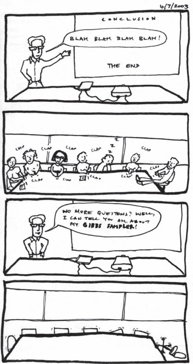
关于主题模型Gibbs采样器的实验室会议演示记录。
我们将通过EM算法介绍变分推断，这在第5章中已经讨论过。估计复杂潜在变量模型的参数是促使变分方法发展的动机，也是理解底层形式主义的良好直觉来源。有关更详细的技术介绍，请参见Blei等人(2017)。
在第5章中，我们介绍了EM算法作为一种无需对潜在变量 z 求和即可估计潜在变量模型参数 θ 的方法。在算法的E步中，我们计算期望完整对数似然
E_{P(z|x,θ)}[log p(x, z|θ)] = Σ_{z} P(z|x,θ) log p(x, z|θ) (6.34)
然后在M步中关于 θ 对其进行优化。我们展示了这是对数似然的下界，有
log p(x|θ) = Σ_{z} P(z|x, θ) log p(x, z|θ) - Σ_{z} P(z|x, θ) log P(z|x, θ) (6.35)
= E_{P(z|x,θ)}[log p(x, z|θ)] + H[P(z|x, θ)] (6.36)
其中 H[P(z|x, θ)] 是 P(z|x, θ) 的熵，一个非负量(参见Cover & Thomas, 1991)。
在我们展示的示例中，如混合模型，各个潜在变量 zᵢ 相互之间是条件独立的。我们能够利用这种条件独立性来有效计算期望完整对数似然。然而，在其他模型中，当潜在变量高度相互依赖时，计算期望完整对数似然可能变得难以处理，因为它仍然需要对 z 的所有值求和。
变分EM算法是解决这个问题的一种策略(参见Jordan等人，1999)。在该算法中，E步通过将期望中的 P(z|x, θ) 替换为来自更易处理分布族的最接近函数来执行。
定义 z 上的任意分布 Q(z)，它在 p(x, z|θ) 非零的所有地方都非零。然后，在方程(6.35)中取关于 Q(z) 而不是 P(z|x, θ) 的期望。这给出
log p(x|θ) = Σ_{z} Q(z) log p(x, z|θ) - Σ_{z} Q(z) log P(z|x, θ) (6.37)
测量两个概率分布相关性的标准方法是Kullback-Leibler (KL) 散度，对于分布 Q(z) 和 P(z|x) 定义为
D_{KL}[Q(z)||P(z|x)] = Σ_{z} Q(z) log (Q(z) / P(z|x)) (6.38)
当 Q 和 P 相同时为零，随着它们发散而增加(参见Cover & Thomas, 1991)。注意我们可以将其重写为
D_{KL}[Q(z)||P(z|x)] = Σ_{z} Q(z) log Q(z) - Σ_{z} Q(z) log P(z|x) (6.39)
我们可以重新排列这个公式得到
-Σ_{z} Q(z) log P(z|x) = D_{KL}[Q(z)||P(z|x)] - Σ_{z} Q(z) log Q(z) (6.40)
然后我们可以用这个来替换方程(6.37)的最后一项，得到
log p(x|θ) = Σ_{z} Q(z) log p(x, z|θ) + D_{KL}[Q(z)||P(z|x, θ)] - Σ_{z} Q(z) log Q(z) (6.41)
= E_{Q(z)}[log p(x, z|θ)] + D_{KL}[Q(z)||P(z|x, θ)] + H[Q(z)] (6.42)
这意味着关于 Q(z) 的完整对数似然的期望也是 log p(x|θ) 的下界，因为KL散度和熵都是非负的。
这个结果为我们提供了一种处理EM算法的不同方法：我们可以从一个使计算期望更容易的族中选择Q[(][z][)]。取Q[(][z][)] [=] P[(][z][|][x], [θ)]
可能会产生更紧的下界，因为它最小化了KL散度项，但
也可以使用其他分布。特别地，我们可以选择其中[z]是
(条件)独立的分布。这种方法中，我们定义一个分布Q[(][z][)]来使
推理变得可处理，然后最小化该分布与P[(][z][|][x], [θ)]的KL散度，这是变分方法的基础。
虽然变分方法最初是在EM算法的背景下发展的，但它们
为贝叶斯推理问题提供了更通用的解决方案。即使我们不试图
估计潜变量模型的参数，接近后验P[(][z][|][x][)]的分布Q[(][z][)]也可以更普遍地用作后验的近似。与这种对近似后验的强调一致，我们将在本节的其余部分中省略对[θ]的依赖。
不幸的是，虽然找到使D[KL][[]Q[(][z][)][||]P[(][z][|][x][)][]]很小的Q[(][z][)]在直觉上是合理的，但这不是一个实用的策略。问题在于，按照方程(6.38)中定义计算KL散度仍然需要我们评估P[(][z][|][x][)]。使用方程(6.39)中给出的形式，我们有
[D [] []] [[] [KL] Q [(] [z] [)] [||] P [(] [z] [|] [x] [)] [] =] Q [(] [z] [)] log Q [(] [z] [)] [−] Q[(][z][)] log P[(][z][|][x][)] (6.43)
[z] [z]
[=] [] [] Q [(] [z] [)] log Q [(] [z] [)] [−] Q[(][z][)] [log p[(][x], [z][)] [−] log p[(][x][)]] , (6.44)
[z] [z]
[=] [] [] Q [(] [z] [)] log Q [(] [z] [)] [−] Q[(][z][)] log p[(][x], [z][)] [+] log p[(][x][)], (6.45)
[z] [z]
其中包含log p[(][x][)]。然而，由于log p[(][x][)]相对于Q是常数，我们可以只关注剩余项。因此，变分推理通过最大化证据下界(ELBO, evidence lower bound)来进行：
ELBO[(]Q[)] [=] log p[(][x][)] [−] D [KL][[]Q[(][z][)][||]P[(][z][|][x][)][]] [(6.46) [] []]
[= −] Q[(][z][)] log Q[(][z][)] [+] Q[(][z][)] log p[(][x], [z][)]. (6.47)
[z] [z]
所得到的Q[(][z][)]提供了对P[(][z][|][x][)]的最佳近似。优化后的ELBO是p[(][x][)]的下界，也可以方便地用于模型选择。
通常需要数学推导来确定如何有效地选择最接近真实后验分布的族成员。幸运的是，如果先验分布是指数族分布(包括高斯分布、指数分布、伽马分布和贝塔分布，如第3章所讨论的)，并且先验和似然是共轭的(也在第3章中讨论)，那么后验分布也将在指数族中，变分近似可以通过简单的迭代算法找到(详细信息请参见Blei等人，2017)。
虽然变分方法通常比蒙特卡罗方法产生计算上更简单的推理，但一个关键选择是选择近似分布的族。必须在近似的准确性(它能多接近地模拟真实分布)和其可处理性(计算它有多困难)之间取得平衡。由于分布的大部分复杂性都源于变量之间的依赖关系，假设变量之间完全独立可以避免大量复杂性：平均场近似(mean-field approximation)(Jordan等人，1999)。然而，完全独立通常是过强的假设，无法提供有用的近似，特别是对于预期高度依赖的变量。例如，将你对一个孩子是否住在蓝色房子里的信念和你对她姐姐是否住在蓝色房子里的信念近似为独立的，这不会很准确。
一个中间路线是仅在对计算可处理性影响最大的地方假设独立，这种方法被称为结构化平均场近似(structured mean-field approximation)。在这些情况下，变量被划分为集合[z] [**]，近似为
Q[(][z][)] [=] Q[**][(][z][**][)]. (6.48)
[**]
使用变分法，独立分布族的最佳成员是满足以下条件的分布：
Q [**][(][z][**][)] [∝] exp E[z] [z] [x] [−] [**] [[] log p [(] ,[))][]] , (6.49)
其中期望是在不在第[**]个集合中的变量[z] [−][**]上取的。
变分推理的一个缺点是它最小化的KL散度D[KL][[]Q[(][z][)][||]P[(][z][|][x][)][]]，对Q[(][z][)]施加了一些强约束。如果你查看方程(6.38)，你可以看到Q[(][z][)]在P[(][z][|][x][)]为零的地方被强制为零；否则，KL散度会趋于[∞]。这会使Q[(][z][)]过于狭窄，因此与P[(][z][|][x][)]相比过于自信(Minka，2005)。
精确推理 | ADF | 精确推理 | ADF
r: .25 .25 .25 .25 | r: .25 .25 .25 .25 o | ri 依赖 | ri 独立 P: .25 .25 .25 .25 | P: .25 .25 .25 .25 似然 | 似然 .40 .10 | .40 .10
t r: .10 .40 .40 .10 | r io: .40 .10 .25 .25 | t io: .40 .10 .40 .10 rs er | rs er 独立 | 依赖 Fi st | Fi st o: .10 .40 .25 .25 | o: .40 .10 .40 .10 似然 p | 似然 p .40 .10 | .40 .10
d r: .40 .10 .10 .40 | r d io n: .64 .04 .40 .10 | io n: .64 .04 .54 .14 o er | o er ec st st: .16 .16 .40 .10 | ec o: .16 .16 .26 .06 S | S o p | p
图6.9
精确贝叶斯推理与假设密度过滤(ADF)之间更新的比较。每个四格框显示了两个二元变量的联合概率分布。依赖优先和独立优先子图说明了在两次观测后联合分布如何更新，两个子图之间只有观测顺序不同。在每个子图中，似然在中间列，精确推理的联合分布在左列，ADF近似在右列。行说明了每次观测后联合分布的渐进更新。
另一种替代方案是使用最小化另一个方向KL散度的近似，D[KL][P(z|x)||Q(z)]。这最初在假设密度过滤(ADF)中完成，这是一种算法，旨在以与粒子过滤器相同的方式确定性地过滤序列数据(Boyen & Koller, 1998)。使用这个版本的KL散度在结构化均场近似中导致近似族的不同最佳成员。在这个定义下，分区的最佳近似仅仅是后验的边际分布：
Q(z) = P(z|x), (6.50)
因此后验分布的近似只是每个分区的边际分布的乘积。ADF对非序列数据的推广称为期望传播(expectation propagation)(Minka, 2001)。然而，在这个方向上使用KL散度寻找近似分布可能更具挑战性，这些方法都没有与像ELBO这样的全局界限相连。
ADF按顺序处理传入数据，这意味着这些数据到达的顺序可能影响近似后验，即使在概率模型中它应该没有影响。这种顺序对推理的影响被称为顺序效应(order effects)。作为一个简单例子，考虑图6.9中显示的一对二元变量联合分布的更新。先验最初是独立的，它将用一个具有独立似然的观测和一个具有依赖似然的观测进行更新(例如，变量之间的强相关性)。在这里，我们演示观测顺序对最终后验分布的影响。当依赖似然观测在前时，ADF后验分布与先验保持不变，所以在两次观测后，近似后验分布没有显示第一次观测的影响。重要的是，由于这种近似的迭代应用，即使ADF后验的边际分布(跨列求和)也不再与精确后验的边际分布匹配。然而，当独立观测在前时，第一个后验分布对于ADF和精确推理是相同的，在两次观测后，ADF后验显示了两次观测的影响。虽然精确推理的最终后验对于两种顺序是相同的，但ADF在完整联合分布和边际分布上都显示了顺序效应。
ADF的好处是独立的后验分布可以仅由其边际分布表示，节省了表示依赖关系的需要。对于这里给出的例子，这种节省是微不足道的：需要两个数字来表示边际分布，只需要三个数字来表示联合分布。但随着变量数量的增长，这种节省变得显著：对于n个二元变量，只需要n个数字来表示边际分布，而需要2^n - 1个数字来表示联合分布。然而，仅表示边际分布对于使用近似贝叶斯认知模型进行逆向工程的研究人员来说是一个有吸引力的想法。近似的优点和缺点都很有吸引力：表示复杂性的减少有利于心理学合理性，引入的顺序效应可以与人类参与者中发现的顺序效应进行比较。
在联想学习任务中，实验参与者试图学习如何将线索映射到结果。例如，这个任务可以用图6.10中显示的三层贝叶斯神经网络建模。该网络有输入线索x、注意线索节点y和输出节点t。注意线索的激活是隐藏层的sigmoid函数
权重，W[h]，和输入线索，y [=] sig[(]W[h] x[)]；结果的激活是一个sigmoid函数，它基于结果权重W [o]和注意线索，t [=] sig[(]W[o]y[)]。使其成为贝叶斯网络的是权重上存在分布，p[(]W[h] , W[o][)]。虽然两组权重最初可能被假设为独立的，p[(]W [h], W[o] [)] [=] p[(]W[h], W[o][)]，但一旦观察到线索和结果对，这两组权重在精确的后验分布中通常不再独立。例如，对线索缺乏结果反应的情况，可能出现在相关隐藏权重或相关结果权重较高的情况下，但不会在两个权重同时都很高时出现。
虽然观察的顺序不会影响全局贝叶斯学习(GBL)中后验分布的精确推断，但如果假设在更新后验时W[o]和W[h]之间的通信有限，正如局部贝叶斯学习(LBL)所假设的那样，就会产生顺序效应。特别是，LBL可以产生在关联学习实验中观察到的复杂顺序效应：回顾性重估值和突出效应，它们将某些学习线索组合的首因效应与其他线索组合的近因效应相结合(Kruschke, 2006)。虽然近因效应可能被纳入模型中，假设世界正在变化，因此最近的观察更有价值，应该承载更大的权重（如第5章介绍的贝叶斯-卡尔曼滤波器），但首因效应更难归因于模型本身，因此它们
近似概率推断 187
t t t
W W o o W o y y y 前向: E( y | x ) 前向: p( y | x ) 后向: y 后向: p( y | t ) y y W h W W h h x x x
图6.10
三种关联学习模型的图示：全局贝叶斯学习(GBL)、局部贝叶斯学习(LBL)和因式分解贝叶斯学习(FBL)。在每个模型中，输入线索x由隐藏权重W[h]加权并转换以产生注意线索y。注意线索y由输出权重W[o]加权并转换以产生结果t。在GBL中，所有潜在变量一起推断。LBL将GBL分为两个模块，每个模块中都有注意线索y的副本。消息在注意线索y的副本之间来回传递：期望值E(y|x)向上传递，最大化结果概率的单一估计y ˆ向后传递。FBL使用与LBL相同的模块，但采用假设密度过滤近似：模块间传递的消息是注意线索的分布而不是单一的注意线索集合。经Sanborn和Silva (2013)许可转载。
通常被视为近似的证据。进一步的工作确立了这些顺序效应不依赖于在LBL中使用的确切形式的消息，相反，对后验分布的ADF近似，称为因式分解贝叶斯学习(FBL)，产生相同的类人顺序效应(Daw, Courville, & Dayan, 2008; Sanborn & Silva, 2013)。
在许多方面，近似推断算法是贝叶斯建模的隐藏秘密，因为在几乎所有有趣的概率模型中精确推断都是不可能的。理解不同的推断算法以及它们可以使用的情况是使用这些模型的研究人员工具包的重要组成部分。通常，推断的难易程度是驱动模型选择的一个因素：写下一个极其复杂的生成模型很容易，但不能保证能够应用贝叶斯规则来计算该模型中的后验分布。最近的创新，如高效概率编程语言的发展（见第18章），可以使使用表达性概率模型变得更加容易。使用这些语言的好处之一是，用于指定概率模型的代码可以用来自动将不同的推断算法应用于该模型。然而，对这些算法是什么以及它们如何工作有基本的理解，对于理解它们失败的情况是至关重要的。
近似推断算法也为人类思维和大脑如何可能执行贝叶斯推断这一问题提供了答案。正如研究人员可以选择算法来近似贝叶斯模型中不同假设的后验概率，我们的思维和大脑有许多可能的策略可以用来近似贝叶斯推断。
我们将在本书后面重新审视这个主题。第11章考虑蒙特卡罗方法如何解释人类概率推理的方面，第13章通过考虑思维和大脑如何最有效地利用这种计算来扩展这一想法。
188 T. L. Griffiths 和 A. N. Sanborn
Nick Chater, Thomas L. Griffiths, 和 Mark K. Ho
到目前为止，本书主要关注归纳推理(inductive inference)问题：从数据样本结合背景知识中推断环境、句子或类别的结构。但是，获取新知识的实际价值最终只有在能够帮助指导关于行动的决策时才能体现。例如，动物可能对可能的食物进行分类，以决定是否应该食用；或者解读迫近的阴影以启动战斗或逃跑反应。关于环境状态或自身身体的感知推理可能用于指导伸手、保持平衡或避免碰撞。关于物理设备或计算机界面操作的因果推理将决定用户如何实现其目标。在社会和经济领域，关于他人动机的推理可能决定他们是朋友还是敌人，他们知道什么或不知道什么，以及其他因素，从而决定我们应该如何最好地与他们互动。
从方法论角度理解决策制定也很重要，因为绝大多数实验数据记录的都是决策产生的行为。因此，当使用心理物理学方法研究感知时，我们通常依赖参与者的反应来表明他们看到了什么，或者刺激是否可见¹；而这些反应本身就是决策制定过程的结果。此外，观察人们的决策可以用来推断那些决策背后的主观概率。实际上，在实验经济学中，从观察到的决策进行推断是推断个人主观概率的主要方法论——这种方法植根于关于理想理性智能体的理论结果，正如我们将看到的。因此，我们可以将决策制定既视为大多数认知过程的最终目标，也视为观察这些过程的媒介。
在本章中，我们总结了从世界的概率表示转化为理性行动所需的关键思想。这本身就是一个可以占据整本书的主题，实际上有几本我们推荐的书籍（例如，Robert, 2007; Sutton & Barto, 2018; Russell & Norvig, 2021）。我们在这里的目标是以足够详细的水平介绍这些思想，使人们能够理解本书下半部分呈现的主题。我们首先介绍统计决策理论，它告诉我们理性智能体应该如何平衡概率与奖励。然后我们考虑这些奖励应该如何表示，引入效用函数的概念，并通过证据累积将这种方法与贝叶斯推理联系起来。许多现实世界的情况不涉及孤立地做出单一决策，而是涉及一系列决策，这引导我们到强化学习主题。贝叶斯决策制定理论的进一步扩展需要解释关于学习过程本身的决策。大脑不是被动地处理任何到来的数据，而是参与主动学习，引导其有限的信息处理能力去采样和处理可能被证明最有价值或最有趣的信息。我们通过考虑贝叶斯决策制定理论（特别是基本认知过程，从检测感觉信号、回忆记忆，或规划和执行运动）与心理学和行为经济学的大量实证文献之间的明显对比来结束本章，后者似乎表明人们的决策经常根本偏离理性行动。
首先，我们考虑这样一个问题：如果一个智能体有明确定义的主观概率（当然符合贝叶斯定理和概率的其他定律）并且有一个可以用数值术语量化的明确定义的目标，那么它应该做什么。例如，假设一个人试图在一个也有干扰物（以及感知系统本身的噪声）的环境中检测微弱的目标——如短暂的闪光。假设我们在实验室研究这个检测问题，进行一系列离散试验，在每次试验中，实验参与者要么按下按钮（表示目标存在）要么什么都不做（表示该试验中目标不存在）。也许评估表现的最简单方法就是计算这个人给出的正确和错误答案的数量和类型。有两种类型的正确答案：“命中”，当目标闪光存在且按下按钮时；以及”正确
¹相比之下，脑成像或神经记录，以及通常细粒度的行为分析，如研究眼动模式或反应时间分布中的自相关，捕捉的是认知过程的偶然产物，这些不是深思熟虑决策的结果。我们决定回应，比如说，屏幕上有一个刺激，但我们不决定在750毫秒内回应或以特定的神经活动模式回应。
拒绝”，即目标不存在时未按下按钮。有两种类型的错误答案：一种是”遗漏”，即目标存在时未按下按钮；另一种是”假阳性”，即在没有目标时按下了按钮。
这种类型的设置可以通过统计决策理论来建模（Berger，1993）。出于历史原因，在统计决策理论中，我们通常讨论的是最小化损失而非最大化目标。因此，应用最简单的损失函数——0-1损失函数，我们可以为每个错误分配一个-1的分数；为每个正确答案分配0分。然后，我们假设的人的目标可以建模为最小化损失的总和。当然，在选择行动时，代理人还不知道这些损失将是什么。因此，自然的策略是选择能最小化期望损失的行动，其中期望值基于当前的主观概率。因此，例如，对于0-1损失函数，在每次试验中，如果给定感官证据和先验信息的目标主观概率大于1/2，代理人只需按下按钮；如果概率小于1/2，则代理人不应该从概率到行动 [191]
按下按钮。如果概率恰好是1/2，那么按下或不按下按钮的期望损失相同，因此任一选择都同样好，可以任意选择。[2]
这种类型的信号检测任务长期以来一直被心理学家研究（Green & Swets，1966），应用范围从检测光的短暂闪烁、指示敌机接近的雷达图像，到可能表明癌症的医学扫描。一般来说，0-1损失函数过于简单：有些错误比其他错误重要得多。例如，“假阳性”——错误怀疑某人患有癌症，然后接受进一步检测——是一种困扰；但”遗漏”——患有癌症的人被忽视，因此没有接受可能救命的治疗——则是一场灾难。为了解决这个问题，我们需要所谓的”非对称损失函数”——可以对两种损失施加不同的惩罚（对”命中”和”正确拒绝”仍然是零损失）。例如，假设在我们的癌症检测案例中，我们判断”遗漏”应该产生比假警报大1000倍的损失。具体来说，我们将这些损失分别设定为-1和-1000。假设我们的先验信息和扫描的感官信息导致我们对某人患有癌症的后验概率为p，其中p是一个较小的数字，比如0.01。
我们有两个行动：宣布”阳性”或”阴性”测试结果。如果我们坚持原始的0-1损失函数，宣布阳性测试结果的期望损失是p·(0) + (1 - p)(-1) = p - 1 = -0.99。宣布阴性测试结果的期望损失是p·(-1) + (1 - p)·(0) = -p = -0.01。我们想要最小化期望损失，所以应该宣布测试阴性（并推测让患者离开，没有进一步调查计划）。但假设我们切换到非对称损失函数，考虑到错过癌症比假阳性严重得多的事实。现在宣布阳性测试结果的期望损失是p·(0) + (1 - p)(-1) = p - 1 = -0.99，和之前一样；但现在宣布阴性测试结果的期望损失是p·(-1000) + (1 - p)·(0) = -p = -10。现在期望损失通过宣布阳性测试结果来最小化，即使给定阳性测试实际患癌症的概率相当低。非对称损失函数使代理人倾向于谨慎行事，很可能进行一些进一步调查，而不是让患者带着健康证明回家。
这种方法可以在许多方面推广。例如，目标可能不仅仅是检测目标，而是对目标进行分类并适当响应（例如，吃熟的水果，储存未熟的水果，处理过熟或发霉的水果）。现在将有一个类别和行动之间的收益矩阵，损失函数当然不会是对称的。吃发霉水果是一个比偶尔处理可能可食用水果更严重的错误。但相同的方法，
[2.] 先验通常会包含关于目标出现频率的基础率，但可能捕获更复杂的模式，如当目标的当前位置似乎遵循某种规律性。同样，目标的存在或不存在可能依赖于关于目标外观、变化程度等的先前经验——关于主观概率的计算可能任意复杂。
192 N. Chater, T. L. Griffiths, 和 M. K. Ho
选择在给定代理人主观概率下最小化期望损失的行动，都可以应用。
在许多情境中，性能的自然衡量标准不仅取决于选择正确的行动类别，还取决于连续值行动的实值精度。
例如，当伸手去拿一个物体时，我们距离目标的距离可能很重要。在其他情况下，我们的输出可能不是身体动作，而可能是数值判断：例如，古董的市场价值、河流的长度或城市的人口。在统计学中，对于实值输出，两个特别流行的损失函数是平方（或二次）损失函数，其中损失是估计值y与目标值t之间平方距离的总和，(y − t)²；以及绝对值损失函数，其中损失是估计值与目标值之间绝对距离的总和，|y − t|。当然，平方损失函数在统计学和机器学习的回归问题中被广泛用作默认选择（例如，参见Hastie, Tibshirani, & Friedman, 2009）。如果误差为零，两种损失函数都会被最小化：如果动作或预测精确命中目标值，二次损失函数对大误差更敏感（因为这些误差被平方）。
从选择动作的角度来看，这些损失函数是非常简单的特殊情况。现实世界行为中涉及的损失函数通常需要根据所考虑的具体行为进行定制。例如，在猜测小孩的年龄时，从孩子的烦躁程度来看，低估的”损失”可能很大，但高估的损失很小。因此，最小化期望损失将鼓励人们给出向上偏倚的估计。或者假设我们的动作是对二手车出价。如果代理对卖方可能接受的最低价格有概率模型，考虑到汽车的特征、卖方情况等等，代理应该如何选择出价金额？在这里，损失函数也必须根据情况量身定制。如果我们出价太低，就无法买到车，必须继续寻找（产生时间和不便的成本）；如果我们出价太高，就会造成经济损失。贝叶斯决策方法要求我们将这些不同类型的损失放在单一尺度上，并选择使总体期望损失最小化的动作（在这里是我们的出价）。在现实中，由于初始出价可能后续会有讨价还价等情况，情况会更加复杂。因此，虽然使用贝叶斯决策理论选择动作在概念上很简单——我们只需最小化期望损失——但在实践中，它通常非常复杂。因此，现实的认知模型通常会假设这种计算必须被近似，可能是大幅度的近似。
在简单的实验环境中，这种决策方法可以为行为提供良好的模型。例如，Trommershäuser, Maloney, and Landy (2003)要求参与者快速触摸触摸屏上的绿色目标（获得分数），同时避免附近甚至重叠的红色目标（失去分数）。实验者可以测量
[3.] 还有另一个重要的推广，即最小化整个动作轨迹的函数，而不仅仅是动作的终点。我们在这里不考虑这类情况。例子包括选择轨迹以最小化能量消耗、模仿他人的动作、或与音乐同步跳舞或以特定风格跳舞。
在这项任务中的感知和（更重要的）运动噪声(motor noise)，大致对应于围绕真实目标的高斯分布。那么，参与者必须在可用的收益和损失的情况下选择瞄准位置（如前所述，任务可以完全用损失的框架重新表述，在形式上保持相同）。这项任务的优雅之处在于，通过汇总许多试验，实验者可以直接观察参与者反应中的噪声程度，并推断他们的瞄准位置。结果表明，人们的行为很好地被这样的假设所预测：他们试图在这项任务中最小化期望损失——也就是说，他们根据与红色目标相关的损失程度，适当地从绿色目标中心”偏离瞄准”。
像这些结果似乎对动作的贝叶斯模型很有希望，实际上，在这个总体框架内有大量关于运动控制贝叶斯模型的文献（例如，Körding & Wolpert, 2006; McNamee & Wolpert, 2019）。然而，另一方面，在一些极其简单的任务中，人们的行为似乎与最优贝叶斯反应有显著偏离。一个特别引人注目的例子是概率匹配(probability matching)现象（综述见Vulkan, 2000）。在典型任务中，每次试验一盏灯要么是绿色要么是红色，参与者必须猜测下一次试验的颜色——奖励通常只是正确答案数量的总和。假设在现实中，绿色和红色是通过独立投掷有偏硬币选择的，绿色概率为p，红色概率为1 − p。如果参与者能够找出这个分布（或者在某些变体中，也被告知了潜在机制），那么贝叶斯选择就很简单。假设参与者对下一枚硬币为绿色的概率估计是q（当然通常不完全等于真实的p）。坚持用损失的框架，让我们为错误猜测分配损失−1，为正确猜测分配通常的损失0。那么选择绿色的期望损失就是红色的主观概率，1 − q；选择的期望损失
红色的主观概率是绿色的[q]。鉴于目标是最小化损失，我们应该在1 [−] [q] < [q]时一致选择绿色（即，当绿色的主观概率[q]大于1/2时），在[q]小于1/2时选择红色，如果绿色和红色的概率相等则任意选择。这只是一种绕弯的方式来陈述一个看起来完全显而易见的道理：如果我们认为绿色是最可能的下一个项目，我们就应该总是选择绿色；如果我们认为红色最可能，就应该总是选择红色。
虽然这可能是明显的策略，但在实验中却很少观察到。例如，Shanks、Tunney和McCarthy（2002）发现，即使经过数百次试验，并且在每50次试验后，人们被明确告知他们的表现如何，以及如果使用最优策略会表现得多好，也只有相当少数的人最终一致选择更可能的选项。在许多实验中，人们的选择更好地被简单模型所捕获，即他们以概率q选择绿色
[4.] 当然，众所周知，虽然纯粹从损失、收益或损失和收益的混合角度来框定任务在数学上没有区别，但它可能会影响人们实际做出的行动和选择，这些方式通常被视为与统计决策理论不一致，实际上也与我们将很快描述的更一般的理性选择框架不一致（Kahneman & Tversky, 1979）。194 N. Chater, T. L. Griffiths, and M. K. Ho
以概率1 [−] q选择红色：也就是说，他们的反应匹配每种结果的概率。概率匹配(probability matching)发生的确切条件以及如何解释它一直存在广泛争议。回到我们在第6章中描述的贝叶斯推理的采样近似，有趣的是，一个简单的解释是人们通过从潜在分布中抽取样本来选择红色或绿色，而不是最小化预期损失（例如，见Vul、Alvarez、Tenenbaum & Black, 2009）。但目前，关键点是人们似乎系统性地未能解决贝叶斯决策问题，尽管它极其简单。
到目前为止，我们将损失函数视为给定的。但是人类行为在特定情境中（或者更广泛地说）试图优化什么（如果有的话）这个问题通常是具有挑战性的。只有在非常有限的情况下，比如在视频游戏中最大化得分，才有一个明确的、外部给定的目标。但我们的日常生活要求我们在没有任何外部给定的、明确定义的目标的情况下选择复杂的行动方案，并且许多目标需要以某种方式相互权衡。
让我们稍微退后一点。一般来说，如我们所指出的，决定做什么应该部分取决于一个人的信念（关于外部世界的信念，有时也包括关于其中包含的其他主体的想法和可能行动的信念）；信念的形成以及构成信念的概念一直是本书迄今为止的焦点。但决策不仅取决于主体相信什么，还取决于其欲望、目标或目的，我们将使用总称术语效用(utility)。大多数决策制定的规范理论提出了一个相当严格的效用概念：世界的每个相关状态Si（可能作为某人行动的结果而产生）都与一个数字相关联，代表该结果对主体的效用[5] U [(] S i [)]。
这里采用的是一个相当精简的效用概念。例如，主体的效用可能不纯粹取决于其自身的福祉或满足自身目标的能力，而可能取决于他人的福祉或某些纯粹外部目标的实现。没有假设效用需要可以简化为感官愉悦和免于身体痛苦（尽管这种观点在早期功利主义经济学家和政治哲学家如杰里米·边沁、弗朗西斯·埃奇沃思和亨利·西季威克中很流行；例如，见Cooter & Rappoport, 1984），而可能由抽象目标决定；也没有假设主体需要意识到他们的欲望，或者确实有任何形式的意识。
在实验室中，实验参与者的目标有时可以从外部指定：最大化游戏中的得分，比如我们之前讨论的击中绿色（避免红色）目标的实验游戏。类似地，我们的表现可能基于我们在算术计算中产生正确答案的能力、准确回忆实验早期阶段列表中哪些项目之前见过的能力，或正确确定何时在噪声背景下看到信号的能力来评分。
[5.] 我们将从此使用经济学和心理学的标准术语，其中人们被视为最大化效用而不是最小化损失。当然，任何最大化问题都可以通过简单地翻转要优化的函数符号重新表述为最小化问题，反之亦然。从概率到行动 [195]
在这类情况下，计算模型可以直接与效用相关联，这些效用直接捕获任务的结构——我们处于之前描述的熟悉领域中
上一节。但即使在没有外部给定目标的情况下，我们也可以在思维和行为建模方面取得一些进展。
首先，让我们注意到，一般而言，当选择一个行动时，我们并不能确定地知道该行动的后果会是什么。实际上，如果每个行动只有一个可能的[6]结果，那么决定选择哪个行动就会相当简单：只需选择能够带来最大效用结果的行动。选择行动的标准方法（尽管绝不是唯一方法）是旨在最大化期望效用——但关键是，这种效用不是外部给定的标准，而是假设反映了智能体的目标。因此，考虑一个正在考虑行动a的智能体。如果智能体采取行动a，它相信每个可能成为该行动结果的世界状态s都有概率P[(]s[|]a[)]。那么行动a的期望效用EU[(]a[)]就是该行动每个可能结果效用的总和，按每个结果的概率加权：
EU[(]a[)] [=] P[(]s[|]a[)] U[(]s[)]. (7.1)
[s]
最大化期望效用的原则提供了一个通用标准，原则上适用于各种各样的决策，并已应用于觅食、投资、伴侣选择、网球击球选择以及许多其他决策。对于你可能采取的每个行动，只需考虑每个行动可能后果的概率和效用，从而得出该行动的期望效用。然后只需选择期望效用最大的行动。
然而，这个用于决定做什么的令人振奋的通用而直接的公式在实践中并不一定容易遵循，我们将在以下部分探讨在构建决策认知模型时出现的一些复杂性。第一个复杂性是，智能体可以被视为最大化的有意义效用度量的存在本身不能被认为是理所当然的。这就是我们现在要转向的问题。
贝叶斯决策制定方法提出，行为可以被理解为最大化期望效用，也许是近似地。当然，这种方法只有在效用概念得到良好定义的情况下才能开始。如前所述，在心理学实验中，参与者的目标通常是直接指定的——例如，最大化得分数量或尽可能少地犯错误。同样，在生物学的进化论证中（例如，关于性别比例、交配或育儿策略），达尔文”适应性”的某种变体，可能在个体基因而不是整个生物体的层面上定义，是一个有用的外部定义目标（Dawkins, 1978）。
但是，一般来说，人类行为中追求的目标并不是预先指定的。实际上，人们通常有无数不同的目标，这些目标似乎在争夺他们的注意力。
[6.] [这种][特殊][情况，][其中][行动][有][确定的][结果，][被称为][确定性][马尔可夫][决策][过程][(MDP)。]
196 N. Chater, T. L. Griffiths, and M. K. Ho
因此，司机可能想要快速到达、安全驾驶、避免交通违规、规划会议，并向同事发送紧急消息。同时满足这些目标可能很困难：诸如速度和安全等目标可能会冲突，需要以某种方式相互权衡。
要应用期望效用视角，我们需要能够将不同的约束和目标结合成一个单一的整体度量（效用尺度），反映每个目标的相对重要性。如果可以构建这样的整体效用尺度，那么至少在原则上，司机的问题现在就很清楚了：最佳行动序列是导致最大期望效用的序列。但是何时可以定义这样的效用尺度？也就是说，需要对一个人的选择施加什么理性约束，以便能够用期望效用术语解释他们的行为（关于理性一致性约束的更广泛讨论，见第2章）？
解决这个问题的天真方法是简单地直接构建一个效用函数：例如，我们可能尝试在连续尺度上衡量每个目标，并将这些的加权和作为我们的整体效用函数。但是，当然，这种方法不太可能成功地捕捉智能体的偏好。例如，不清楚如何在可比较的尺度上衡量关于速度、安全和交通违规概率等不同属性的目标，它们应该如何结合，以及应该给每个目标附加什么权重[7]。幸运的是，有一些一般性结果确立了仅仅通过观察智能体偏好结构就可以定义效用尺度的条件。
假设，暂时我们忽略任何风险和不确定性问题，考虑智能体在确定结果之间的选择，例如在已知食物、活动或消费品之间的选择。理想理性的决策者可能被假定具有遵循许多自然规则的偏好。例如，假设决策者可以比较任何两个结果A和B，要么偏好B胜过A（我们写作A [] B），要么偏好A胜过B（B [] A），或者对它们无差异。
进一步假设决策者的偏好是传递的(transitive)：如果A [] B，且B [] C，那么A [] C似乎是合理的。这些完整性和传递性假设是足够的
足以确保效用函数 U 的存在，该函数为结果 A、B 分配数值，使得当且仅当 U[(]A[) <] U [(]B[)] 时，A [] B，当 U [(] X [)] [=] U [(] Y [)] 时，智能体对 X 和 Y 无差异。
这个效用函数编码了结果的排序，从最偏好到最不偏好，但它并不捕捉这些结果之间偏好的强度。任何对这些数值的拉伸或压缩，只要保持顺序不变，都能同样好地作为效用函数使用，比如我们在选择是想要苹果还是橙子时。重要的是哪些项目具有更高（或更低）的效用值。这种仅依赖于顺序的特性被称为”序数效用”——事实证明，序数效用的最小概念为构建微观经济学的许多部分提供了充分的基础，比如市场价格形成中的供需理论(Kreps, 1990)。
然而，从认知科学的角度来看，需要一个更丰富的效用概念。本书的主题是认知涉及处理不确定的世界，概率论为理解这如何成为可能提供了框架。因此，我们需要一个能够反映我们的行动经常可能导致各种可能结果这一事实的决策制定说明。例如，考虑一个简单的动作，比如拿起一杯咖啡。一方面，我们不想在如此简单的动作上花费过多的时间和精力；另一方面，随着我们的动作变得更加匆忙，溢出的概率增加；在这个以及许多动作中，必须在努力和成功概率之间找到某种平衡。为了明智地做出这种权衡，我们需要更多地了解我们多么偏好不同的结果。
为简单起见，考虑行动简单对应于在货币赌博之间选择的情况（例如，让我们想象我们的决策者在赌场）。例如，假设一个人可以选择确定的50美元，或者0.5的概率获得0美元或100美元。仅给定序数效用标度，我们只能说 U($100) > U($50) > U($0)，基于更多钱比更少钱更好的最小假设。但要确定我们的决策者应该赌博还是保守行事，我们需要知道100美元的效用多大程度上超过50美元的效用，相对于50美元的效用多大程度上超过0美元的效用。希望买到昂贵音乐会最后一刻票的决策者可能非常偏好100美元而不是50美元或0美元，因为只有这个金额足够买票；这样的决策者可能会选择赌博。另一方面，只需要5美元买比萨的其他决策者可能有相反的偏好，特别不喜欢0美元的结果，这可能让他们挨饿。简而言之，所需要的是基数效用标度：一个为每个状态分配有意义数值的标度，特别是能够量化状态之间效用差异的标度。
事实证明，我们之前关于完整性(completeness)和传递性(transitivity)的假设，现在应用于赌博而不是确定结果，结合相当温和的技术假设，意味着那些赌博的结果可以与实值效用相关联，从而通过那些彩票的期望效用来捕捉对那些结果彩票之间的偏好。
除了连续性假设的一个版本外，一个更实质性的假设是独立性(independence)：大致上，分配给每个结果的效用不受可能替代发生的其他结果的影响。对于任何三个彩票L、M和N以及任何概率p > 0，L ≽ M当且仅当pL + (1 − p)N ≽ pM + (1 − p)N。直观地说，如果由L和N的概率组合形成的彩票不如由M和N的相同概率组合（相同比例）形成的彩票更受偏爱，那么且仅当如此L ≽ M。所以如果我更喜欢酸奶而不是冰淇淋，那么我应该更喜欢，比如说，酸奶或水果的50-50机会胜过冰淇淋或水果的50-50机会。当然要注意，独立性是关于替代可能结果的不相关性的主张；完全可能的是，我在单独食用时可能更喜欢酸奶而不是冰淇淋，但在与水果一起食用时更喜欢冰淇淋而不是酸奶（所以关于物品组合的偏好通常不会是独立的）。一些决策理论家拒绝独立性公理（以及密切相关的”确定事物”原则；Savage，1972），这已经198 N. Chater, T. L. Griffiths, 和 M. K. Ho
这样的量表至少在原则上可以从偏好中构建，如果我们允许偏好范围涵盖赌博而不仅仅是固定结果。考虑以下程序。首先，选择所考虑的最坏可能结果w和最好的b，并任意分配这两者具有数值效用U(w)和U(b)，当然，U(w) < U(b)。为了具体化，且不失一般性，让我们设置U(w) = 0和U(b) = 1，所以所有考虑状态的效用将位于[0, 1]区间内。然后，选择任何其他结果sᵢ，它比w更受偏爱但比b不那么受偏爱。使用任何相关选项都可以有意义地比较的假设，就像序数效用的情况一样，那么我们可以问sᵢ是否会比具有最佳结果b的赌博更受偏爱，概率为pᵢ，最坏结果w的概率为1 − pᵢ。当然，如果pᵢ足够高，赌博将被偏爱；如果pᵢ足够低，那么它将被拒绝。对于每个sᵢ，必须有某个值pᵢ，在这个值上达到平衡——决策者对结果sᵢ的确定性和具有产生b的概率pᵢ和产生w的概率1 − pᵢ的赌博之间无差异（我们将暂且搁置对使这一推理严格所需假设的讨论，以及这些假设是否合理(Neumann & Morgenstern, 1944; Edwards, 1954; Kreps, 1988)）。
如果我们对每个结果sᵢ遵循这个程序，相应的概率pᵢ提供了这些结果好坏的实值度量。最佳状态b根据假设具有值1（b当然，琐碎地等价于以概率1产生b的赌博）；最坏状态w具有值零（因为这个状态琐碎地等价于以概率零产生b和以概率1产生w的赌博）。然后与结果sᵢ相关联的值pᵢ越高，其效用就越高。确实，这个值可以扮演s的基数效用的角色；它将允许我们确定决策者对结果和结果赌博的偏好。
从这个角度来看，那么我们如何为任意赌博g分配效用，它以概率pᵍ具有结果s₁，以概率1 − pᵍ具有结果s₂？首先，我们将每个结果s₁和s₂与涉及最佳和最坏状态b和w的等价子赌博相关联，分别与概率p₁和p₂相关联。让我们称这些赌博为最佳/最坏混合。然后决策者应该在我们的原始赌博g和具有概率pᵍ面对由概率p₁参数化的最佳/最坏混合的赌博之间无差异；以及面对由概率p₂参数化的最佳/最坏混合的概率1 − pᵍ（见图7.1）。但是，假设赌博的好坏纯粹取决于其结果及其概率，那么我们可以将这个两阶段赌博折叠成一个单阶段赌博。具体地说，在两阶段赌博中，有两种独立的方式可以产生最佳可能结果b：以概率pᵍ，我们面对由p₁参数化的子赌博并获胜——概率为pᵍp₁的序列；以及以概率1 − pᵍ，我们面对由p₂参数化的子赌博并获胜——概率为(1 − pᵍ)p₂的序列。因此，获得最佳状态b的总概率是和pᵍp₁ + (1 − pᵍ)p₂；否则，决策者面对最坏结果w。因此，我们有一个新的最佳/最坏混合，由最佳选项的概率pᵍp₁ + (1 − pᵍ)p*₂参数化（否则，结果当然是最坏选项）。这个概率可以
一些违反直觉的含义，其中最著名的是阿莱悖论(Allais’s Paradox)（Allais, 1953）。确实，有一些决策理论涉及削弱标准期望效用理论的各种原则（关于讨论，参见Bradley, 2017等）。
从概率到行动 [199]
U(g)
p 1 g – p g U(g)
p g p 1 (1 – p g )(1 – p 2 )
U(s ) ) 1 U( s 2 ) p p g (1 – p (1 1 ) – p g 2
p 1 – p 1 p 1 – p 1 2 2 U(b) U(w) U(b) U(w)
U(b) U(w) U(b) U(w)
图7.1
使用子赌局s1和s2的最佳/最差混合为任意赌局g分配效用，等同于包含最佳和最差赌局b和w混合的单阶段赌局。
被视为复合赌局优劣的衡量标准——获得最佳而非最差结果的概率越大，赌局越好。
对具有多种结果的赌局的推广遵循相同的模式。一个具有n种可能结果s1, […], s[n]的赌局，其中第i个结果的概率为P(si)，应当等同于概率为P(si)的最佳/最差混合，其中pi是最佳/最差混合的参数化，决策者认为它等同于结果si。
为了看出”赢得”最佳/最差混合的概率可以用作效用的衡量标准，让我们大胆地将这些概率重写为效用。也就是说，让我们用ui替换pi，所以我们对赌局价值的公式不再是P(si)pi，而是P(si)ui。这当然就是熟悉的期望效用公式：每个可能结果的效用，按其概率加权。
到目前为止，我们已经将基数效用(cardinal utility)与特定概率——赢得最佳/最差混合的概率——等同起来，因此这些效用必然只定义在[0, 1]区间内。但这种限制并非必要。如果所有效用都乘以任意正数，或者所有效用都加上或减去任意常数，所有偏好都将保持不变。也就是说，基数效用只定义到正线性变换为止——效用可以定义在实数线的任何部分。用于表示效用的数字的绝对大小，以及这些数字是正数还是负数，都不重要；重要的是不同状态效用之间的相对差异。
确实，可以提供这种类型的更一般和更精密的论证。给定关于我们假设的决策者偏好的令人惊讶的最小一致性标准（尽管这些标准在现实中可能仍然被人类和动物决策者违反），可以证明存在一组效用和主观概率，使得决策者在选项（无论是简单状态还是赌局）之间的偏好完全遵循最大期望效用原则（例如，Savage, 1972）。具体的效用和主观概率因人而异——即使是完全理性的个体仍然可以有不同的信念和偏好，因此做出非常不同的选择。理性只是确保这些选择在个体内部是连贯的。
200 N. Chater, T. L. Griffiths, and M. K. Ho
前一节中提出的结果从方法论角度来看特别有趣。它表明，给定关于理性个体偏好的足够信息，我们应该能够推断出个体分配给不同结果的效用和概率。在经济学中，这一观察已成为效用（以及通过扩展，概率）显示偏好(revealed preference)方法的基础（Samuelson, 1938; Savage, 1972）——即概率和效用通过个体的选择来显示，而不是直接可测量的心理或神经特性。从这个角度来看，选择行为被视为首要的，概率和效用仅仅是预测此类行为的方便理论变量。显示偏好观点被认为在经济学（要求遵守最小一致性假设，以便可以推断出方便的效用和概率量表）和认知科学之间提供了重要的分离。粗略地说，从这个角度来看，经济学只需要关心人们选择什么，而不是他们思考什么。
这种显示偏好式的论证被认为意味着，给定相当最小的一致性和其他条件（我们在这个讨论中忽略了这些），必须存在一个效用概念，使得理性决策者应该总是偏好
行动中具有最高期望效用。正如我们在这里指出的，建立这一结果所需的条件可能并不总是适用于真实的人类或动物决策者。尽管如此，选择应该通过最大化期望效用来确定的原则（其中效用的适当概念是明确定义的）是理性决策模型中的黄金标准，涵盖从经济学和社会科学到行为生态学、人工智能(AI)和认知科学等一系列学科。
我们应该如何看待这样的解释，特别是，我们应该如何看待认知科学中的理性解释？从传统经济学的角度来看，一种可能是我们将本书中概述的贝叶斯分析类型视为仅仅声称心理（或大脑）表现得好像它在进行概率计算：概率被假定为理论家的构造，而不是内部心理或神经状态的描述。
虽然这可能确实是某些贝叶斯模型的合适解释，但概率（也许还有效用）也可能在心理上被表征，行为不仅仅是模式化的，好像大脑执行贝叶斯计算并计算最大期望效用，而是这种计算的结果。从这个角度来看，大脑能够表现得好像它是一个概率推理和期望效用最大化引擎，正是因为，至少在某些领域，它就是一个概率推理和期望效用最大化引擎。正如我们在第6章中看到的，概率推理不需要通过概率论数学公式的符号操作来精确执行，而是通过近似方法，如采样。在下一节中，我们考虑如何通过简单的心理和神经机制来实现积累做出简单决策所需证据的问题。
让我们考虑一个具体的例子，说明我们如何超越”好像”的观点。
如前所述，也许最简单的决策类型，也是心理学家广泛研究的一种，是信号检测。例如，一个人被指示在每次出现短暂闪光时回答”是”，否则回答”否”（Green & Swets, 1966）。最优策略是当光出现的后验概率高于某个由不同结果产生的损失确定的阈值时说”是”。我们也可以在第7.3节介绍的期望效用框架内推导出这种最优策略。
例如，假设参与者每次正确检测到信号时获得5c的奖励，在误报情况下损失50c，否则什么也得不到（即0c）。在这种制度下，参与者可能会极其谨慎。假设在特定试验中，参与者估计信号存在的概率是q。那么他们说”是”的期望效用是q U(5c) + (1 − q) U(−50c)。相比之下，说”否”的期望效用是U(0c)；为了方便，我们可以设U(0c) = 0（这在不失一般性的情况下是可能的，因为效用尺度只定义到正线性变换）。因此，当q U(5c) + (1 − q)U(−50c) > 0时，选择选项”是”产生严格更大的期望效用，假设U(−50c)的绝对值远远大于U(5c)的绝对值（粗略地说，损失50c比获得5c糟糕得多），那么这只有在q很高时才成立。
在效用是金钱的线性函数的特殊情况下，损失50c将正好比获得5c糟糕10倍，简单的代数表明，只有当q > 10/11时，“是”回答才会有严格大于”否”回答的期望效用。注意我们在最小化损失函数时已经看到了这种类型的解释——但在这里，当然，我们将问题视为最大化效用。但是，正如我们已经看到的，实际上没有区别：最大化效用与最小化设定为该效用负值的损失函数是一样的。
信号检测理论已被证明是跨越广泛心理物理任务的高效描述模型。它传统上从经济学中普遍存在的显示偏好立场来看待（即，仅假设实验参与者的行为在描述上符合理论）。但事实证明，信号检测模型也可以自然地映射到一个简单的计算机制——扩散模型(diffusion models)——上，它可以捕捉推动一个决策或另一个决策的倾向如何随时间累积（Ratcliff, 1978; Usher & McClelland, 2001; Bogacz, Brown, Moehlis, Holmes, & Cohen, 2006; Brown & Heathcote, 2008; Ratcliff, Smith, Brown, & McKoon, 2016; Forstmann, Ratcliff, & Wagenmakers, 2016）。
从贝叶斯的角度来看，这些模型可以被视为积累支持做出一个决策而不是另一个决策的相对证据强度（例如，信号存在或不存在的证据）。或者，选择一个已经成为重要实验任务的例子（Newsome & Pare, 1988; Britten, Shadlen, Newsome, & Movshon, 1992; Mulder, Wagenmakers, Ratcliff, Boekel, & Forstmann, 2012），假设我们必须决定在计算机屏幕上短暂呈现的噪声随机点图案总体上是向左还是向右流动。
点的流动是有噪音的：也就是说，虽然点主要向左或向右流动，但一部分点是向相反方向流动的。因此，做出整体判断需要从单个点积累信息片段——这是一个随时间展开的过程。这些片段的总和描绘了支持一个决策或另一个决策的证据强度的随机游走(random walk)，有时向一个决策移动，有时向另一个。具体来说，假设 h_L 和 h_R 是关于点是向左还是向右漂移的假设；我们称不同的感官数据片段为 d_1, d_2, …, d_n。贝叶斯定理的简单应用允许我们比较给定数据下两个假设的后验几率，如下所示：
P(h_L|d_1, d_2, …, d_n) / P(h_R|d_1, d_2, …, d_n) = P(h_L) / P(h_R) · P(d_1, d_2, …, d_n|h_L) / P(d_1, d_2, …, d_n|h_R) (7.2)
假设给定假设 h_L 和 h_R，每个数据片段 d_i 是独立的，那么所有数据的似然项可以分解为每个数据片段似然的乘积：
P(h_L|d_1, d_2, …, d_n) / P(h_R|d_1, d_2, …, d_n) = P(h_L) / P(h_R) · ∏(i=1 to n) P(d_i|h_L) / P(d_i|h_R) (7.3)
对等式两边取对数，似然项现在变成似然项的和，每一项都反映了基于每个新数据片段 d_i 支持一个或另一个假设的证据强度。鉴于刺激的噪音性质，一些数据片段将支持一个假设，一些将支持另一个：
log[P(h_L|d_1, d_2, …, d_n) / P(h_R|d_1, d_2, …, d_n)] = log[P(h_L) / P(h_R)] + Σ(i=1 to n) log[P(d_i|h_L) / P(d_i|h_R)] (7.4)
随着更多数据被处理，整体总和将逐渐向最受证据支持的假设[11]方向漂移。
当随机游走达到预定边界——这表示触发决策所需的证据强度——时，就会做出选择。这些边界的位置将反映决策中涉及的效用。在标准信号检测实验中，这些效用将由命中、漏检和虚警的不同得分或金钱回报所决定。当然，现实世界的决策也会出现同样的考虑。例如，如果一个觅食的人或动物必须决定一个真菌应该被视为蘑菇还是毒菌，那么需要相当的证据表明它是蘑菇（即可食用的）；即使稍微怀疑它可能是毒菌（即有毒的），也可能足以让这个真菌被丢弃。决策边界位置的这种不对称性反映了这样一个事实：食用蘑菇的效用收益相比于中毒的效用损失来说是很小的（当然，在极端情况下，效用计算可能会相当不同——当接近饥饿时，即使是危险的食物也可能比完全没有食物具有更大的期望效用）。
扩散模型(diffusion models)，无论是否用贝叶斯术语解释，都被广泛使用
[11. 贝叶斯统计学先驱I. J. Good主张第二项，即支持一个假设相对于另一个假设的对数几率比(log-odds ratio)，作为证据权重的通用度量(例如，Good, 1950)。他将这个想法归因于Alan Turing在开发破解Enigma密码方法期间的工作(Good, 1979)。关于其他确认度量的更广泛讨论，见Crupi, Chater, and Tentori (2013)。序列数据分析的非贝叶斯方法忽略先验(Wald, 1947; Green & Swets, 1966)。然而，对于这里考虑的简单决策，这不是一个重大限制，因为先验的作用仍然可以通过移动决策边界隐式地捕获——即在决策被触发之前所需的证据权重。从概率到行动 [203]]
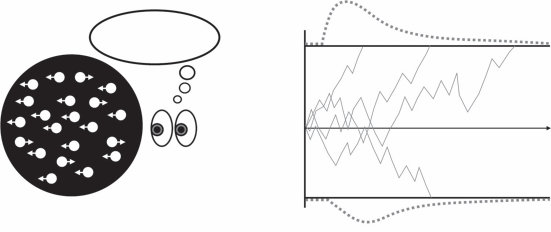
反应时间分布
更多的点是向左还是向右移动？左
阈值
[证据]
右
随机点 阈值
运动刺激 反应时间分布
图7.2
随机点运动范式和基本漂移扩散模型的视觉描述(Ratcliff, 1978)。当感知系统为点向左或向右移动积累证据时，证据权重（用对应于不同刺激的实线描绘）在数值上发生变化。当证据达到阈值——无论是向左还是向右运动的阈值——时，就会做出决策。反应时间(RT)分布是这个随机过程的结果。
在心理学的许多领域都取得了定量上的成功，对感知、分类、动作启动和识别记忆等方面进行建模，涵盖了许多其他主题
(例如，Hanes & Schall, 1996; Lamberts, 2000; Ratcliff, 1978; Smith & Ratcliff, 2004)。这些模型的一个吸引人之处在于，它们能够对反应时间分布、速度-准确性权衡、报酬变化的敏感性和置信度判断提供细粒度的预测 (Pleskac & Busemeyer, 2010; Berg et al., 2016)（见图7.2右侧面板，展示了反应时间分布是如何生成的）。需要注意的是，正如所描述的，这些模型仅限于在一对选项之间做决策；已经提出了各种推广方法
(例如，Usher & McClelland, 2001)。
大脑是否可能通过实施这种扩散模型来积累感觉证据并做出简单决策，从而为贝叶斯计算的神经实现提供证据？一项重要的研究，涉及对猴子的神经记录，表明这可能是正确的 (Gold & Shadlen, 2007)。在一个典型的实验中，猴子接受随机点运动检测任务，如这里所描述的；如果它将眼睛移动到与流动相同的方向，每次试验都会得到奖励。
结果表明，猴子大脑中某些神经元群体（在外侧顶内皮质中）的放电率似乎密切跟踪证据的权重 (例如，Gold & Shadlen, 2002)，而不是，例如，是否即将做出决定或哪一个决定（尽管这种积累机制与选择之间的因果关系受到质疑；Katz, Yates, Pillow, & Huk, 2016）。更广泛地说，一个将神经活动映射到证据积累和决策制定机制的研究子领域，在一系列感知和运动任务中产生了有希望的结果，这是大脑执行近似贝叶斯计算这一总体观点的一部分
(例如，De Lafuente, Jazayeri, & Shadlen, 2015; Knill & Pouget, 2004; Pouget, Beck, Ma, & Latham, 2013)。
简单的决策，比如信号是否存在，或者随机点模式是向左还是向右流动，是实验和建模的吸引人的起点。但是，当然，大脑在各个维度上面临着复杂得多的决策。通常我们必须在其间做决定的选项本身就非常复杂
(例如，在选择房子、艺术品、音乐或可能的朋友时)，评估感觉和语言证据的过程也可能任意复杂(例如，在识别、理解和评估物体、场景、艺术品或人时)。不过，这里我们专注于决策复杂性的一个特定且得到充分研究的方面：如何选择行动序列，或制定如何行动的策略问题。这是至关重要的，因为个别行动通常没有明确定义的价值，除非考虑到后续行动。现在储蓄而不是消费可能是有利的——但如果决策者将在赌博狂欢中挥霍积累的储蓄就不是了。同样，松鼠为冬天储存食物只有在能够稍后取回时才会受益；为考试而学习只有在你打算参加考试时才有意义；伸手去拿一杯水只有在你打算抓住它时才有意义，等等。相当普遍地，我们的行动，无论是人生计划还是个别运动行动，只有当个别组成行动是更大、连贯框架的一部分时才有意义。这在学习采取哪些行动时产生了特定的问题，因为智能体接收到的奖励或惩罚流将取决于许多行动的组合，通常很难确定应该修改哪个个别行动来改善未来的决策制定。接下来，我们考虑一些有趣的特殊情况，这些情况在机器学习以及认知和脑科学中都受到了相当大的关注。我们首先在抽象中概述关键的数学思想——稍后，我们将考虑它们可以应用于认知和行为模型的许多方式。
与采取行动序列相关的问题在规划和强化学习的文献中得到了最广泛的研究。序列决策的基本模型是离散马尔可夫决策过程(MDP)(Puterman, 1994)，它假设存在环境状态的离散集合[S]，智能体在该环境中可以采取的离散行动集合[A]；一个转移函数，定义在给定前一状态和行动T[(]s,a,s[)][=]p[(]s[t][+][1][=]s[|]s[t][=]s,a[t][=]a[)]的情况下下一状态的分布；以及一个一步奖励函数，将状态-行动组合映射到正或负实数
R:[S][×][A][→]R。因此，在一个简单的纸牌游戏中，环境的状态可能只是牌在玩家之间的分布；智能体的行动可能是再抽一张牌(要牌)或什么都不做(停牌)；转移函数将确定牌的新状态(这取决于从牌堆中抽出哪张牌)；奖励函数可能是一个人手中的牌所代表的点数总和(可能，如在二十一点中，有一个关键的复杂情况，如果总和超过某个阈值，这个人得零分)。因此，玩家的挑战是决定何时停止抽牌，以
最大化可能的分数结果。在MDP的背景下，智能体的行为被概念化为刺激-动作映射或策略，形式化为从状态到动作的映射函数，π : [S] [→] [A]。因此，在纸牌游戏中，策略规定了对于每种牌的分布，应该采取哪种动作（例如，动作可能包括从桌子上拿起一张牌、扔掉一张牌、什么都不做，以及其他动作，取决于正在玩的游戏）。
在序列决策中出现的第一个问题是预测（也称为策略评估）：给定一个策略和一个初始状态，通过遵循该策略，长期内会获得多少奖励？具体来说，假设我们从初始状态s[0]开始，重复执行策略规定的动作a[t] [=] π(s[t])，计算奖励r [t] [=] R(s[t], a[t])，并从转移函数中采样新状态s[t][+]1 [∼] T(s[t], a[t] ,[·])。
这产生了一个轨迹或展开(rollout) []s [0], a[0], r[0], s1 , a1, r1, . . .[]。这样的轨迹产生的长期奖励是什么？虽然有不同的方式来定义长期奖励包含什么，但一个具有良好数学性质的标准方法是使用与状态相关的期望累积折扣无限奖励和（即价值），由以下公式给出：
[∞] V [π] [t] [=] ( s [0] ) E γr[t] , (7.5) [t][=][0]
其中γ [∈] (0, 1[]]是确保无限和收敛的折扣率，期望值是在遵循策略π和根据转移函数采样产生的状态和奖励上计算的。由V[π]表示的函数通常称为策略π的价值函数（值得注意的是，这是强化学习中的技术术语，不同于价值的直觉概念或在决策经济学研究中的使用）。折扣无限视界MDP的一个重要性质是价值函数可以紧凑地写成状态s [∈] [S]上的一组平稳递归方程，称为贝尔曼方程（Bellman, 1957）：
V [π] [] [π] [] ( s ) [=] R ( s , a ) [+] γ T ( s , a , s ) V ( s)， (7.6) [s][]
其中a [=] π(s)。直观上，贝尔曼方程表达了这样的思想：状态的价值取决于R(s, a)给出的即时奖励和从下一个状态开始的折扣期望价值，由γ [] V s [s] [] T ( s , a , s ) ()给出。
值得强调的是，MDP模型中奖励和价值之间的区别以一种重要且与认知相关的方式丰富了期望效用的标准概念。具体来说，奖励函数模拟了决策者如何为世界状态分配内在效用，比如饥饿动物的食物。另一方面，价值函数对应于从奖励、环境和未来行为的组合中衍生出的效用。正如我们在第7.5.4节中更详细讨论的，这使得MDP模型特别适用于在序列决策环境中建模学习和计算。
在序列决策中出现的第二个问题是最优控制（也称为策略优化）：给定一个MDP，什么策略会最大化价值？找到具有最大价值函数的策略通常是”解决”MDP的含义。然而，这提出了一个新问题：由于策略和价值函数都是状态上的函数，我们所说的最大函数确切是什么意思？在特定状态集合上具有最高价值的函数？任何状态？所有状态？幸运的是，一个吸引人的特性
无限折扣MDP的数学性质是存在一个唯一的最优值函数，在所有状态中具有最高值（尽管可能不存在唯一的确定性最优策略，因为动作的值可能相等）。此外，最优值函数也可以简洁地表示为一组递归的贝尔曼最优化方程：
V [∗] [] [∗] [] ( s ) [=] max R ( s , a ) [+] γ T ( s , a , s ) V ( s) . (7.7)
[a][∈][A] [] [s]
这里的直觉是，一个状态的价值由我们选择最佳动作所能获得的价值决定——这个动作会产生一些即时奖励，并让我们进入一个新状态（根据概率转移函数），这个新状态会有自己的价值。因此，我们可以递归地连接当前和未来状态的价值。
贝尔曼最优化方程表达的是状态价值，但我们通常也对密切相关的在某个状态采取动作的价值感兴趣，前提是从那时起我们会采取最优行动。这个量通常被称为Q值（“质量”的意思），对应于
Q[∗](s, a) [=] R(s, a) [+] γ T(s, a, s[])V [∗](s[]). (7.8)
[s][]
一旦我们获得了Q值（或某种从R、T和V [∗]快速计算它们的方法），任何对最优Q值贪婪的策略（即在每个阶段选择具有最高或并列最高Q值的动作）都是最优策略：
π[∗](s) [=] arg max Q[∗](s, a). [(7.9) [a]]
总结一下，MDP提供了一种建模基本序列决策任务的方法，建模长期奖励或价值的一种标准方法是期望、累积和折扣无限和模型。这个模型允许我们简洁地定义两个计算问题：预测，即在不同状态下评估策略，以及最优控制，即找到最大化价值的策略。拥有贝尔曼方程是一个好的开始——但我们实际上需要以有效的方式求解这些方程来评估策略并确定哪个策略是最优的。在接下来的章节中，我们将讨论来自规划和强化学习的算法，这些算法可以在不同的起始假设下解决这些问题。
[7.5.2] [使用已知模型进行预测和控制]
给定已知的奖励R(s, a)和转移模型T(s,a, s[])，存在几种用于预测和控制的算法。具有已知奖励和转移模型的控制通常被称为规划。
一大类序列决策算法基于动态规划。在动态规划中，我们假设能够访问完整的状态空间，并通过逆向归纳计算值函数，反复将未来状态的值回传到潜在的前驱状态，直到所有状态的值收敛。具体地，从初始值函数V[0]开始，我们从第k次值函数计算第k [+] 1次状态值（应用贝尔曼最优化方程）。在策略评估的情况下，这是
V [π] [π] [=] ( s ) R ( s , a ) [+] γ T ( s , a , s [] ) V (s[]), (7.10) [k] [+] 1 [k]
[s][]
其中a [=] π(s)。用于最优控制的动态规划算法找到最优值函数，被称为值迭代。它以类似的方式使用逆向归纳，根据以下公式更新V[∗] [k] [+] 1：
V [∗] [] [∗] [] s [=] R s a [+] T ( , , V [k][+]1 [k] [a] ( ) max ( , ) γ s a s ) ( s) . (7.11)
[s][]
注意值迭代在计算最优值函数时不需要我们显式表示策略。
动态规划和值迭代为广泛的其他序列决策算法形成了理论基础，包括时间差分学习算法（在7.5.3节中讨论）。此外，值迭代和启发式搜索算法之间也存在联系，当R和T已知但状态空间[S]太大而无法完全枚举时，启发式搜索算法用于规划。在典型的启发式搜索算法中，我们假设给定一组初始状态[S] [0] [⊂] [S]，并可以通过根据T检查后继状态来构建状态转移图。一种方法是在扩展转移图和求解该图中的最优解之间交替，使用解来指导下一轮扩展。在图构建也由可接受启发式（即总是低估从一个状态到总成本的启发式）指导的情况下，这个过程可以分析为在动态变化的状态子集上的异步值迭代形式，保证收敛到初始状态的最优策略。这种看待启发式搜索的方式为经典确定性规划算法如A[∗] (Hart, Nilsson, & Raphael, 1968)，以及MDP规划算法如LAO[∗] (Hansen & Zilberstein, 2001)和基于树搜索的算法(Kocsis & Szepesvári, 2006)提供了统一的视角。详细信息请参见Ghallab, Nau和Traverso (2016)。
[208] [N.] [Chater,] [T.] [L.] [Griffiths,] [and] [M.] [K.] [Ho]
除了动态规划，在已知T和R的情况下评估策略的另一种方法是求解由方程(7.6)给出的线性方程组。要理解为什么这是
情况下，我们可以用向量和矩阵的形式重写策略评估方程，其中
r 表示状态奖励向量，使得 ri = R(si, π(si)), T 表示基于策略的状态转移
矩阵 T[i][,][j] = T(si, π(si), s[j]), v 是我们要求解的状态值向量。在矩阵表示法中，方程 (7.6) 指定的方程组
可以写为
v = r + γ Tv. (7.12)
然后我们可以简单地将项重新排列为标准矩阵-向量形式，如下所示：
[I − γ T] v = r, (7.13)
其中 I 是单位矩阵。一旦采用这种形式，就可以使用标准线性代数算法来求解价值函数 V[π] = v。
除了值迭代之外，MDP中规划的另一种方法是直接搜索策略空间。这个想法是策略迭代(policy iteration)算法的基础。
在这里，我们从初始策略 π[0] 开始，然后反复评估它并贪心地改进策略，直到策略停止变化。也就是说，我们交替计算策略 π[k] 的 V[k][π]（例如，使用动态规划）和计算更新的贪心策略：
π[k][+]1 (s) = arg max R ( s, a ) + γ ∑ T ( s, a, s’ ) V[k][π] ( s’). (7.14) [a] [s’]
这个过程可以迭代直到达到不动点（但需要注意的是，动作之间的平局必须以一致的方式打破，否则算法可能在等价策略之间循环而永不收敛）。令人欣慰和惊讶的是，可以证明得到的策略是全局最优的 (Sutton & Barto, 2018)。
本节回顾的序列预测和控制算法可以在奖励和转移函数已知的情况下使用。然而，我们往往没有关于序列决策问题形式的完整信息，所以需要推断这些量中的至少一个。接下来我们转向一类适用于一个或两个函数都未知情况的算法。
当环境模型未知时，我们如何评估策略或找到最优策略？这正是强化学习算法所设计要解决的情况类型。目前的方法可以分为无模型(model-free)方法，旨在不显式估计 R (s, a) 和 T (s, a, s’)* 的情况下估计或优化价值函数，以及基于模型(model-based)方法，寻求从环境中估计模型，然后使用第 7.5.2 节中的方法计算价值 (Sutton & Barto, 2018)。通常，模型估计在很大程度上简化为本书已经详细讨论过的无监督学习问题——估计概率密度、推断潜在变量和构建图形模型——所以这里的重点将放在无模型方法上。
无模型强化学习算法通常定义简单的学习规则，无需构建环境模型就能解决预测和控制问题。目标是简单地从经验中学习哪些动作和动作序列最成功，这可以被视为试错学习的高度复杂版本。一大类无模型算法基于通过近似动态规划(approximate dynamic programming)估计价值函数的想法——也就是说，当只能通过与环境交互从中抽取样本时，对真正的动态规划执行随机近似。例如，时间差分(TD, temporal difference)学习方法使用在每个时间步生成的 s, a, s’, r 样本更新价值函数的表示。遵循策略 π 时估计价值函数 V[π] 的 TD 预测更新规则是
V[π] (s) ← V[π] (s) + α(r + γ V[π] (s’) − V[π](s)), (7.15)
其中 α 是学习率。为什么这有意义？TD 更新规则背后的关键思想是，价值估计的变化由学习率加权的预测误差(prediction errors)驱动。更正式地，我们可以观察到在收敛时，价值函数应该满足贝尔曼方程，所以对于任何状态、动作和奖励，我们期望
V[π] (s) = ∑ T ( s, a, s’ ) [r + γ V[π] (s’)]. (7.16) [s’∈S]
如果方程左侧和右侧不匹配，那么从右侧减去 V[π](s) 将给我们一个误差信号，表明基于其他状态的值，V[π](s) 是太高还是太低。将这个误差信号记为 δ，我们有
δ = ∑ T ( s, a, s’ ) [r + γ V[π] (s’)] − V[π](s), (7.17) [s’∈S]
这证明了这里给出的简单学习规则的合理性，现在可以写作：
V[π] (s) ← V[π](s) + αδ. (7.18)
然而，这仍然要求我们知道 T(s, a, s’)。我们获得 TD 预测规则（方程 (7.15)）不是试图直接推断这个，而是将状态 s’* 视为与 T (s, a, s’)* 相关分布的一个样本——对方程 (7.17) 中期望的单样本蒙特卡罗近似；回忆第 6 章中关于蒙特卡罗采样的讨论。假设执行足够的学习迭代并且学习率随时间适当递减，算法将收敛到 V[π](s) 的正确估计。
在 TD 控制中，我们想要估计最优动作-价值函数 Q[∗] (s, a) 而不是状态-价值函数，因为控制问题的目标是指导动作选择。例如，
Q学习 使用以下更新规则：
Q [∗] [∗] [∗] [] [] [∗] ( s , a ) [←] Q ( s , a ) [+] α( r [+] γ max Q ( s , a ) [−] Q(s, a)). (7.19)
[a][]
我们可以使用与此处给出的 TD 预测更新规则类似的论证来理解这个更新规则。具体来说，右侧第二项表示由学习率加权的预测误差。随着迭代次数的增加，收敛到真实的 Q[∗](s, a) 将会发生，前提是 α 随时间适当递减。此外，Q学习的一个有用特性是它是 离策略(off-policy)：也就是说，对 Q[∗][(]s, a[)] 的估计独立于代理所遵循的策略，因此可以基于任何状态、动作和奖励序列，只要对状态/动作空间有足够的覆盖。
规划和强化学习的形式化体系是有用的，因为它们提供了一个统一的、规范性的框架，用于理解从估计或最大化价值角度的适应。特别地，因为所有正确的强化学习算法，按设计，都会收敛到一个良好定义的价值函数，它们继承了一些先验的规范性理由，作为生物学习的潜在模型。对特定算法的选择（例如，基于模型与无模型学习）反映了关于计算权衡或可用机制的不同假设。
从历史的角度看，强化学习领域的发展是一个优秀的例子，说明了如何通过尝试工程化和逆向工程智能系统，可以在各种分析层面之间产生富有成效的科学见解交流。最早的强化学习算法是心理学模型，正式描述了巴甫洛夫条件反射中的行为模式（例如，Bush & Mosteller, 1955; Rescorla & Wagner, 1972）。后来人们意识到，这些机制可以在动态规划（Bellman, 1957）和 TD 学习（Sutton & Barto, 1987）的规范性框架中重新表述。这些基本思想已成为在序列决策制定环境中学习研究几十年的基础，并在过去十年中在人工智能领域取得了一系列突破（例如，在各种Atari视频游戏、国际象棋和围棋等游戏中超越人类；见 Mnih et al., 2015; Silver et al., 2016）。
对于认知科学家来说，强化学习算法背后的原理为理解人类和其他物种的适应提供了关键见解。在这里，我们回顾几个研究线索，从将 TD 预测与巴甫洛夫条件反射联系起来的认知简单模型开始，逐步发展到任务层次和基于模型规划的更复杂模型。
在巴甫洛夫（或经典）条件反射中，有机体学习在本质上有奖励的无条件刺激（例如，口渴的狗的水）和条件刺激（例如，可靠地在水之前出现的铃声）之间的联想。在强化学习框架中，无条件刺激对应于具有正奖励的状态(s[UC], R[(]s[UC][) >] 0)，条件刺激对应于没有奖励但可靠地转换到无条件刺激的状态(s [C])。条件刺激的估计价值(V [(]s[C][)])然后对应于无条件和条件刺激之间的联想强度，而 TD 预测（方程(7.15)）描述了根据有机体经验建立适当联想的学习动态。尽管其学习规则很简单，基本的 TD 算法可以解释在经典条件反射中研究的各种学习现象（Sutton & Barto, 1987）。此外，神经科学的工作描绘了 TD 学习如何在大脑中实现的令人信服的画面：TD 学习描述的奖励预测误差[δ]已被发现对应于中脑多巴胺神经元的相位性（即瞬态）活动，并为突触修饰提供全局信号（Schultz, Dayan, & Montague, 1997; Glimcher, 2011）。这些结果代表了第1章讨论的马尔三个分析层面所有发现的显著汇聚：价值估计问题（计算层面）、TD 预测/随机近似（算法层面）和相位性多巴胺（实现层面）。
虽然经典条件反射涉及从观察序列在状态之间形成基于价值的联想，但操作性（或工具性）条件反射涉及通过试错在不同状态和动作之间形成基于价值的联想（Thorndike, 1898）。具体来说，在操作性条件反射实验中，有机体在某个状态下采取行动（例如，灯亮时老鼠按压杠杆），然后发生可能有奖励或惩罚的结果（例如，出现食物颗粒）。这些类型的场景，特别是当它们涉及状态、动作和奖励的延续序列时，特别适合在强化学习框架内建模。
正如我们之前提到的，可能算法空间中最重要的二分法之一
强化学习算法之间的区别在于基于模型的学习和无模型学习。回想一下，在基于模型的强化学习中，有机体学习环境的模型（即转移函数和奖励函数），然后使用该模型来计算价值函数。基于模型的强化学习被认为对应于人们对在其环境中采取何种行动最合理进行深思熟虑的推理（例如，Daw et al., 2005）。相比之下，在无模型强化学习中，有机体直接学习价值函数（例如，使用Q学习）。关键的是，从算法角度来看，基于模型的学习比无模型学习更灵活，但在认知上也更具挑战性，因为它涉及随着转移和奖励估计的更新而重新计算价值函数。此外，有趣的是，基于模型/无模型学习的区别可以映射到熟悉的心理学中目标导向行为和习惯性行为的区别（Wood & Rünger, 2016），尽管这不是形式化这种区别的唯一方式（Dezfouli & Balleine, 2013; Miller, Shenhav, & Ludvig, 2019）。
理论上，基于模型和无模型的学习机制在计算和概念上是不同的，但在真实的生物系统中，这两个过程很难完全分离（Doll, Simon, & Daw, 2012）。在过去二十年中，在研究这些不同形式的学习和控制之间的算法交互及其神经基础方面取得了相当大的进展。例如，两步任务(two-step task)（Gläscher, Daw, Dayan, & O’Doherty, 2010）是一个简单的马尔可夫决策过程(MDP)，包含两个选择阶段和一个结果阶段，其状态的奖励会随时间发生关键性漂移。选择阶段之间以及进入结果阶段状态的转移是随机的，但可预测地高于机会水平，这意味着如果参与者学会某个结果阶段具有最高奖励，那么他们可以进行基于模型的规划来达到该结果状态。然而，参与者也可以简单地依靠无模型策略提供的单步价值估计，这最初对新的奖励信息不敏感。在遇到新奖励信息的关键试验中，基于模型和无模型学习会导致不同的价值更新，从而提供区分人们算法策略的机会。诸如此类的范式经常用于研究基于模型和无模型学习如何竞争行为控制（Gläscher, Daw, Dayan, & O’Doherty, 2010），它们如何体现不同的算法和机制权衡（Otto, Gershman, Markman, & Daw, 2013; Daw & Dayan, 2014; Solway & Botvinick, 2015），以及它们如何协作互动（Kool, Gershman, & Cushman, 2017; Kool, Cushman, & Gershman, 2018）。
标准强化学习算法使用状态、动作和奖励样本形成价值函数的点估计，但最近关于分布式强化学习(distributional reinforcement learning)的工作探索将价值明确表示为可能回报的分布（Bellemare, Dabney, & Munos, 2017; Dabney, Rowland, Bellemare, & Munos, 2018; Bellemare, Dabney, & Rowland, 2023）。乍一看，表示价值分布比仅表示期望值能提供任何好处并不明显——毕竟，当在具有不同价值分布的动作中进行选择时，我们将计算和比较期望值。尽管如此，在实践中，价值分布已被证明为近似提供了更丰富的目标，从而促进表示学习（例如，使用神经网络），减轻策略变化时学习的影响，并且可以支持更广泛的下游行为以及泛化（Bellemare et al., 2017）。分布式方法在深度强化学习中的成功激发了对大脑是否编码价值分布的研究：Dabney等人（2020）表明，不同的多巴胺神经元似乎跟踪不同水平的价值（因此，共同编码价值分布），从而在学习过程中显示一系列正负奖励预测误差。这些结果丰富了大脑如何实现标量奖励预测误差的经典图景。
在标准强化学习问题中，我们被给定一个奖励函数，必须找到最优策略。但我们也可以朝相反方向进行：给定期望的策略，找到一个奖励函数，当最大化时，会产生与期望策略匹配的最优策略。这被称为奖励设计(reward design)问题（Singh, Lewis, & Barto, 2009; Sorg, Singh, & Lewis, 2010），出现在许多重要场景中。一个例子是奖励塑造(reward shaping)，其中我们旨在增强现有奖励函数，使得最优策略得以保持，同时也促进更快的学习。例如，如果我们想激励强化学习智能体达到目标状态，我们可能不只是想为达到目标提供单一奖励，因为这会提供极其稀疏的学习信号。相反，我们希望为朝向目标的中间步骤提供额外的塑造奖励，以促进更快的学习。强化学习中的一个重要结果是塑造定理(shaping theorem)（Ng, Harada, & Russell, 1999），它提供了塑造函数的必要充分条件，使得它们不改变最优策略（具体来说，它们采取
以”潜在函数”形式）。塑造定理可以用来为人们设计奖励函数，使他们能够实现长期目标但获得更多中间反馈（Lieder, Chen, Krueger, & Griffiths, 2019）。然而，也有研究发现，当人们处于教师角色时，并不会简单地提供符合塑造定理的评价反馈。例如，人们会无意中激励强化学习算法遵循正向奖励循环，即算法系统性地偏离目标行为以获得纠正偏离的奖励，然后进一步偏离和纠正（获得进一步奖励），可能无限循环下去（Ho, Cushman, Littman, & Austerweil, 2019）。
此外，在强化学习框架中，奖励是所有适应和学习背后的驱动力，这使得一些研究者提出最大化奖励信号足以解释所有智能行为（Silver, Singh, Precup, & Sutton, 2021）。奖励设计视角使我们能够将这一论点表述为一个明确定义的问题：给定一些适当明确的智能行为，是否存在一个奖励函数，在最大化时产生目标行为？Abel等人（2021）分析了MDP中马尔可夫奖励函数（在s、a、s[]元组上定义的奖励）的这个问题，发现对于用策略集合定义的行为（单个最优策略的泛化），这样的奖励函数可能不存在。例如，在状态空间对应网格位置的网格世界中，行为规则”总是朝同一方向移动”不能用马尔可夫奖励函数表达。这些结果的一个重要启示是，某些类别的奖励函数相对于给定MDP的表达能力并不总是显而易见的。这些发现推动了关于学习和优化非马尔可夫奖励函数的持续研究（Vazquez-Chanlatte, Jha, Tiwari, Ho, & Seshia, 2018; Icarte, Klassen, Valenzano, & McIlraith, 2018）。
将潜在状态推断与强化学习相结合提供了一种建模学习、决策制定和表征之间相互作用的方法，但这不是唯一的方法。有机体如何编码状态或行动对其他过程有影响，比如探索或内部决策制定算法本身（Ho, Abel, Griffiths, & Littman, 2019）。例如，考虑到基于模型和无模型学习之间的区别与表征有关，就像与算法有关一样：在基于模型的学习中，价值函数使用转换函数的学习表征来计算，而在无模型学习中，价值函数直接学习，没有转换函数的单独表征（Sutton & Barto, 2018）。
纯基于模型或无模型学习的一个重要替代方案是后继表征(successor representation)（Dayan, 1993; Gershman, 2018; Russek, Momennejad, Botvinick, Gershman, & Daw, 2017），其中状态基于它们在遵循策略（例如，最优策略或随机策略）时是否预测访问其他状态来编码。策略π的后继表征的最简单版本为从当前状态s到每个未来状态s[+]分配一个期望的、折扣的和累积的访问计数。这可以表达为一组递归方程，就像固定策略价值函数的方程（方程(7.6)）：
Mπ = I(s = s[+]) + γ ∑[s[]] T(s, π(s), s[]) Mπ (7.20)
其中I(s = s[+])是一个指示函数，在策略评估方程中起到类似奖励函数的作用——它通过在当前状态s是s[+]时评估为1，否则为0来计算每次对状态s[+]的访问。方程(7.6)和(7.20)之间的相似性有一个重要后果，即状态的价值可以表达为后继表征和状态奖励函数的线性组合：
Vπ = ∑[s[+]] Mπ R(s[+]) (7.21)
要理解为什么方程(7.21)等价于方程(7.6)，我们可以将M[π]替换为其定义并做一些代数运算：
Vπ = ∑[s[+]] [I(s = s[+]) + γ ∑[s[]] T(s, π(s), s[]) Mπ] R(s[+])
Vπ = ∑[s[+]] I(s = s[+]) R(s[+]) + γ ∑[s[+]] ∑[s[]] T(s, π(s), s[]) Mπ R(s[+])
Vπ = R(s) + γ ∑[s[]] T(s, π(s), s[]) ∑[s[+]] Mπ R(s[+])
Vπ = R(s) + γ ∑[s[]] T(s, π(s), s[]) Vπ
方便的是，用于估计价值的相同算法（例如，动态规划或TD预测）可以用来估计M[π]（Dayan, 1993）。从方程(7.21)可以看出，同一个后继表征M[π]可以通过简单的乘法和求和用来推导策略π在任何状态奖励函数下的价值。后继表征的这一特性推动了其作为基于策略的模型的使用
神经科学中的迁移学习(transfer learning) (Momennejad, Otto, Daw, & Norman, 2017)以及深度强化学习(Barreto et al., 2017)。继承者表征(successor representation)也
与基于顺序决策中预测地图的更广泛思想集合相连，
这一思想被用于建模海马体中的网格细胞(grid cells)和认知地图神经实现的其他方面(Stachenfeld, Botvinick, & Gershman, 2017; Behrens
et al., 2018)。
动作也可以用不同方式表征。例如，伸手拿一杯水的相同行为可以在极其细粒度的层面(例如，个体肌肉收缩)或更抽象的层面(例如，解渴)进行解释。这种直觉激发了分层强化学习，其中动作在不同时间尺度上被表征、选择和学习。虽然分层强化学习有许多形式化方法(Parr & Russell, 1998; Dietterich, 2000)，
最广泛使用的被称为选项框架(options framework) (Sutton, Precup, & Singh, 1999)。
在其最简单的形式中，选项框架区分了两个抽象层次的动作：基本动作和选项。基本动作是MDP给出的熟悉的原子动作；选项在退出前在多个基本状态上分配基本动作，因此它们本质上是基本MDP中的策略或部分策略。形式上，
给定一个MDP和一组选项[O] [= {]o1 ,o[2], . . . , o[n] [}]，可以定义一个选项半MDP，将选项作为时间扩展动作包含进来(原始基本动作
可能包含也可能不包含)。像常规MDP一样，半MDP有贝尔曼方程。例如，最优选项级贝尔曼方程是
V [∗] [o] [] [t] [∗] [] ( s ) [=] max T ( s , r , t [|] s ) r [+] γ V ( s) , (7.22)
[O] [O] [o] [∈] [O] []
[s] [,][r][,][t] 从概率到动作 [215]
其中[o] [] T [(] s, r, t [|] s[)]是在状态s初始化选项o所诱发的退出状态、累积选项内奖励和退出时间的分布。关于人类和动物的强化学习，我们可以使用选项框架提出至少两个独立但相关的问题：第一，选项如何使用？第二，选项如何发现？
关于使用选项的问题，人类分层强化学习的研究已经考察了人们如何在多个抽象层次学习动作价值(Eckstein
& Collins, 2020)，他们如何通过无模型机制学习选项价值(Cushman &
Morris, 2015)，以及选项内预测误差如何在神经上实现(Botvinick, Niv, & Barto, 2009; Ribas-Fernandes et al., 2011)。关于发现选项的问题，已经提出了几个建议，包括基于策略压缩(Solway
et al., 2014)、贝叶斯推理(Tomov, Yagati, Kumar, Yang, & Gershman, 2020)和资源理性(resource rationality)(Correa, Ho, Callaway, & Griffiths, 2020)的方法(见第13章)。尽管如此，关于人们如何以及为什么获得某些分层动作表征的研究—
以及如何最好地概念化它们与子目标、子任务和其他抽象形式的交互—目前是活跃的研究领域。
注意力与顺序决策制定 表征什么以及如何表征也可以理解为决策制定与注意机制交互的结果(Radulescu, Niv, & Ballard, 2019)。虽然关于注意力作为有用构念的程度存在相当大的争议(James, 1890; Hommel et al., 2019)，对我们的目的而言，注意力可以被视为偏向或过滤信息以促进决策制定过程中高效学习和计算的过程。因此，如果纯推理是关于归纳”超越数据”的模式，注意力涉及”减少数据”以使其更可管理。在单阶段决策制定的背景下，将选择性注意与强化学习结合的模型可以解释学习如何被调节并映射到注意的解剖基础上(Leong, Radulescu, Daniel, DeWoskin, & Niv, 2017;
Niv, 2019; Niv et al., 2015)。
最近的工作还研究了认知控制—一种自上而下或目标导向注意的形式(Miller & Cohen, 2001; Shenhav et al., 2017)—在规划中的作用。回想一下，7.5.2节中描述的规划算法都在固定任务表征的假设下运行以优化策略。例如，当使用启发式树搜索规划国际象棋走法时，会使用实例化棋子移动规则和获胜条件的模型来模拟走法和反击序列。然而，有理由放松固定规划模型的假设：首先，在现实世界中规划时，通常没有给定模型，因此认知系统必须定期面临根据需要构建模型的挑战。其次，即使在具有明确定义的基本事实模型的领域(如国际象棋)中，许多细节对于规划即时动作也是无关的。最后，心理学在问题解决、类比迁移和洞察方面的经典发现表明，人们容易在不同的问题表征之间切换来解决问题(Duncker, 1945; Ohlsson, 2012; Holyoak, 2012)。
基于这些考虑，Ho等人(2022)提出并测试了价值引导任务解释(value-guided task construal)的规范模型，该模型考虑了构建任务与
模型（正式表述为选择简化的MDP）并在该模型中优化策略（例如，使用第7.5.2节中的算法之一）。关键思想是将模型和策略选择视为两级优化过程：外层循环选择一个简化模型（一种解释构想），供内层循环规划算法使用以计算最优策略。
在最简单的形式中，外层循环寻求优化任务解释构想的表征价值(Value of Representation, VOR)：
VOR(c) = U(πc) − C(c)，(7.23)
其中πc是在解释构想c下计算的策略，U(πc) = V(s0)，即从初始状态s0开始在真实任务上评估的策略价值；C(c)是与解释构想复杂性相关的成本。当考虑这个成本项时，注意力发挥作用——具体来说，成本偏向于选择需要关注较少细节的解释构想（例如，迷宫中的障碍物或棋盘上的棋子）。在一系列实验中，Ho等人(2022)发现人们灵活形成与此解释一致的任务表征的证据。未来研究的重要方向是探索使人们能够形成简化表征的算法，以及理解模型构建与其他认知机制的相互作用。
到目前为止，我们已经讨论了我们行动后果的效用直接引起兴趣的情况。但在认知的许多领域中，后果本身可能不是主要关注点，而是因为它们提供了更多信息。这就是主动学习的领域，我们的行动至少部分不是为了外部定义的目标，而是由尽可能高效地收集相关信息的目标驱动的。在仔细查看地图、书页或面孔时，我们的眼睛不会漫无目的地游荡；相反，它们会搜索特别相关或有趣的特征。所以我们的眼睛会选择性地采样主要城镇、道路或港口，而不是均匀的海域；它们会跳到似乎可能包含新颖有趣信息的段落；并停留在最可能暴露身份或情感表达的面部特征上。同样，在决定与谁交谈、在搜索引擎中输入什么或阅读什么时，我们往往是在搜寻信息，而不是试图实现任何具体的外部目标。实际上，大量的人类活动，特别是在教育领域（当我们学习历史或科学时）和文化领域（看电影、读小说或听音乐），都涉及获取和处理不为任何直接任务或目标服务的信息。我们的注意力是有限的，必须在一个充满许多吸引和干扰的复杂世界中明智地部署。
当然，有时我们的关注点要窄得多——我们有特定的决策要做或行动方针要追求，我们想收集有助于解决当前挑战的信息。
无论如何，应该清楚的是，选择收集哪些信息的过程（以及类似地，一旦收集了信息，选择关注哪些信息和忽略哪些信息）在几乎所有认知方面的运作中都至关重要。有一个持续的循环，其中我们当前的知识状态指导我们的感官和注意力主动收集新信息；然后这些新信息被用来更新我们的知识状态；然后我们在这个更新的知识状态指导下搜索更多信息，如此循环往复。我们对世界不懈地进行主动学习，搜索有用和有趣的信息，而不是简单地被动地记录碰巧出现在视野中的任何数据。
举一个平凡的例子，假设我们丢了钥匙。我们不会简单地等待关于它们位置的有用证据出现。我们主动搜索有用的线索。我们拍拍口袋，查看包里，在沙发下面寻找，希望收集能给我们（希望是决定性的）线索的感官信息。在犯罪现场收集线索或设计科学实验时，我们同样试图选择可能导致在考虑的替代理论之间具有诊断性数据的行动集合（例如，Lindley, 1956; Platt, 1964）。在每一种情况下，我们都主动尝试找到尽可能有用或普遍有趣的信息。
现在，什么被认为是有用或有趣的将根据我们的目标而变化（找到我们的钥匙、抓住罪犯、确定最佳科学理论）。在没有特定目标的情况下，我们发现某些信息有趣，其他信息乏味。实际上，大部分闲暇时间都花在搜索和消费对我们生活没有明显直接相关性的信息上（看电影、为运动队加油、阅读历史和小说、听音乐等等）。但是，虽然什么使信息有趣的一般问题是困难和开放性的（Chater & Loewenstein, 2016），同样的主动学习原理在起作用。我们的大脑在搜索和关注有趣的内容；并试图避免乏味或无用的信息。
关于主动选择我们希望接收哪些数据这一想法本身，似乎有些自相矛盾。毕竟，在我们将眼睛移动到新位置或进行科学实验之前，我们不知道会接收到什么数据——
否则，数据收集行为将完全是多余的。但如果我们不知道将会收到什么数据，我们如何评估其潜在价值呢？
答案，正如贝叶斯方法中经常出现的那样，源于先验知识(prior knowledge)的使用。因此，在移动我们的眼睛或进行实验之前，我们可以考虑可能数据集的先验概率分布(prior probability distribution)（这里的”先验”，简单地意味着在正在考虑的数据收集行为之前）。假设智能体能够为每个可能的数据结果分配一个价值；那么可能导致此类数据的行动的信息价值(informational value)可以简单地定义为期望值(expected value)，其中期望是相对于数据上的先验分布而言的。例如，我们对人脸的先验知识，以及来自视觉外围的当前低保真度信息，可能足以将视觉空间中的某些位置缩小为可能比其他位置有趣得多的位置，因此作为眼球运动的更合适目标。因此，例如，在扫描图像时，眼球运动可能在信息元素之间跳跃，如眼睛和嘴巴，而对脸颊或前额的区域，或背景中的墙壁给予较少关注。
假设我们的贝叶斯智能体有一系列可能的行动a [∈] [A]。根据每个行动，以及根据智能体当前的知识状态[K]，世界的每个状态s [∈] [S]，都有概率P[(]s[|]a, [K][)]和效用(utility)（在明确定义的情境中）
U[(]s[)]。给定知识[K]和行动a的期望效用，写作如下：
EU [(]a,[K][)] [=] P[(]s[|]a, [K][)]U [(]s[)]。 (7.24)
[s][∈][S]
218 N. Chater, T. L. Griffiths, and M. K. Ho
理性的贝叶斯智能体当然会选择实现最大期望效用的行动：也就是说，根据知识[K]，它将选择一个行动a[(][K][)]，使得EU [(] a[(][K][)] , [K] [)] [≥] EU [(] a , [K] [)]对所有a成立。为简单起见，我们假设a[(][K][)]是达到期望效用EU [(] a, [K][)]的唯一行动。现在考虑智能体有主动获取一些信息的可能性（例如，主动进行一些观察或实验，产生一些数据d [∈] [D]）。这些新数据将被添加到智能体的背景知识[K]中，创建新的背景知识[K] [∪] d，并将导致智能体根据更新的概率P[(]s[|]a, [K] [∪] d[)]选择新的a[(][K] [∪] d[)]。智能体应该为获取这些数据附加多少效用U [(]d[)]？智能体必须根据其更新的概率P[(]s[|]a, [K] [∪] d[)]来评估这个量。具体来说，关键问题是：根据这些概率，如果它选择a[(][K] [∪] d[)]，其期望效用比其基于原始行动选择a[(][K][)]的修正期望效用大多少？因此，数据d对智能体的效用是：
U [(] d [)] [=] P [(] s [|] a[(][K] [∪] d[)] , [K] [∪] d [)] U [(] s [)] [−] P [(] s [|] a[(][K][)], [K] [∪] d[)]U [(]s[)]。 (7.25)
[s][∈][S] [s][∈][S]
直观地，我们可以这样推理。真正有用的数据d改变了我们的世界模型，因此我们从之前看起来最佳的行动选择a[(][K][)]转换到新的行动a[(][K] [∪] d[)]，根据我们更新的概率，这个新行动具有更高的期望值。例如，告诉我们在哪里寻找宝藏的数据，或者我们即将食用的真菌实际上是毒蘑菇的数据，都是有价值的。相反，不改变我们行动的数据（例如，关于装宝藏的盒子的颜色或真菌的精确重量）从这个狭隘的观点来看，是完全没有价值的。
注意，在这里以及在各种各样的情境中，获取新信息的期望价值只能是正的或零（其中期望来自决策智能体的主观概率）。也就是说，如果一个理性智能体提出一个问题，该智能体不能一致地相信其根据答案选择的行动在期望上会比没有收到答案时更糟（它只有在相信新行动的期望效用至少与其之前考虑的行动路线一样高时，才会根据新信息改变其行动路线）。这意味着，从完全理性智能体的观点来看，在期望上，获取新信息不可能是有害的。然而，请注意，从外部视角来看，智能体学习新信息在特定情况下和在期望上都可能是有害的。例如，如果在寻找埋藏宝藏时，我纯粹偶然地决定在正确的地点开始挖掘，那么进一步信息（例如，来自旧藏宝图或历史研究）的期望价值（从外部视角）很可能是负的，因为它只能让我偏离当前的（幸运的）猜测。
到目前为止，我们一直在考虑一段数据的效用。但是，当然，贝叶斯智能体并不先验地知道它们将遇到哪些数据。因此，期望价值
观察或实验 d 的效用，在实验进行之前根据知识 K 的预期为 U(d) 的期望值：
EU(d) = ∑ P(d|K)U(d). (7.26) d∈D
为了理解这是如何工作的，考虑一个著名推理心理学任务的变体（Wason, 1966, 1968），在这个任务中，人们必须根据规则主动选择数据，比如如果一个人在俱乐部，他们必须至少21岁，这个规则的形式是：如果 p，那么 q。在实验任务中，参与者被给予四张卡片，每张卡片一面写着年龄，另一面写着他们是否进入了俱乐部。但我们只能看到卡片正面——任务是说我们想翻过哪些卡片。
[俱乐部成员] [非俱乐部成员] [超过21岁] [未满21岁]
[(p)] [(非 p)] [(q)] [(非 q)]
关于翻过哪些卡片（即搜索哪些信息）这个问题的答案，当然取决于我们的效用函数。这些在日常生活中，甚至在许多实验任务中，往往只是模糊地指定。但这些效用函数显然会依赖于我们的目标。例如，假设我们是一名警察，检查规则违法行为——并假设我们从发现违法行为中获得高效用。
那么我们显然可以忽略不在俱乐部的人（我们不翻非-p卡片）和超过21岁的人（我们不翻q卡片）。但我们确实想主动了解在俱乐部的人——这样做的预期回报取决于我们的先验概率，根据我们的背景知识，他们可能未满21岁（当然，还有我们从发现任何此类规则违反者中获得的效用）。我们还想检查未满21岁的人（非-q卡片），以防他们恰好在俱乐部。然而，在大多数现实场景中，翻这张卡片的预期回报相当低——毕竟，有大量未满21岁的人，其中一个恰好在俱乐部的机会很低。所以翻过p卡片将具有最大的预期效用，翻q卡片有较小的预期效用，其他的预期效用为零（实际上，如果我们考虑进行调查的”努力”，这些选项将具有负的预期效用，因此不会被选择）。这与实验数据相符（Cheng & Holyoak, 1985; 16 Cosmides, 1989）。
但为了看到效用是如何关键的，假设我们是大学学生会的代表，检查超过21岁的人（q卡片）是否没有被不公平地拒之门外（非-p卡片）。在这个角色中，我们获得效用不是从发现规则违反（p，非-q情况）中，而是从发现不被规则证明合理的排斥
（非-p，q情况）。要找到这样的情况只需要翻过非-p和q卡片。所以我们选择哪些卡片——也就是我们主动选择调查哪些信息——不仅取决于规则，还取决于我们的目标；根据任务框架的不同，这些卡片选择的变化在实验中被观察到（Gigerenzer & Hug, 1992）。请注意，如果像选择任务的早期讨论那样，将数据选择问题纯粹视为”逻辑”问题，独立于决策者的效用函数，这些转变是无法预测的。
虽然当我们搜索信息以实现特定目标时（例如，找到我们丢失的钥匙或检测规则违反者），这种分析方式可能适用，但许多主动学习具有更加公正的特征。智能体的目标是发现世界的状态，独立于对行动的任何直接影响。实际上，感知和认知的大多数方面似乎都属于这一类别。无论是浏览报纸、学习语言，还是进行科学调查，我们通常很少或根本不知道我们正在收集的信息是否会或以何种方式修改我们的行动。在这种情况下，可以应用基于信息论的不同方法（Lindley, 1956）。在这种设定中，没有行动，只有互斥且详尽的世界状态 s ∈ S，每个状态都有概率 P(s)（这些状态可能例如对应于不同的类别、科学假设或谋杀悬案中的嫌疑人；注意为了记号方便，我们省略了对背景知识 K 的条件化）。
我们对世界处于哪种状态的不确定性量用香农熵测量：
H(s) = ∑ P(s) log 1/P(s). (7.27) s∈S
在数据 d 的照明下，所谓的条件熵现在是：
H(s|d) = ∑ P(s|d) log 1/P(s|d). (7.28)
[s][∈][S]
信息增益 IG(s, d)，即学习数据 d 后 s 上熵的减少，可以写作
IG(s, d) [=] H (s) [−] H (s[|]d) [(7.29)]
信息增益可以是负值或正值。例如，我们可能对某个结论几乎确定，然后学到增加我们疑虑的信息。在这种情况下，熵会增加。但根据前面的讨论，从智能体自己的主观概率角度来看，信息增益的期望只能是正值或零（计划进行一个自己相信平均而言会让自己比以前更无知的观察是非常奇怪的）。这种直觉被信息论方法所捕获：因此，期望信息增益 EIG (s, d)，
在可能的 d 上平均为
EIG(s, d) [=] P(d)[[]H(s) [−] H(s[|]d)[] ≥] 0. (7.30)
[d][∈][D]
这个不等式意味着，平均而言，任何新的观察或实验都期望产生正的或最坏情况下为零的信息（这从基本信息论中得出（Cover & Thomas, 1991））。期望信息增益以及密切相关的概念，
从概率到行动 [221]
已被用作实验优劣的度量，作为神经网络中主动学习的模型（Mackay, 1992b），以及模拟认知现象，如阅读过程中眼球运动的指向（例如，Legge, Klitz, & Tjan, 1997）。
实际上，这种方法也被应用于四卡片选择任务的一个变体（Wason, 1966, 1968）。假设我们考虑一个抽象规则（不是考虑俱乐部、年龄限制或任何其他现实世界语境的规则），如如果一张卡片一面有A，另一面就有2。我们面前展示以下四张卡片：
A K 2 7
[(][p][) ] [(not ][p][) ] [(][q][) ] [(not ][q][) ]
参与者对规则没有特殊的效用关联（他们不是在寻找规则违反者或规则不能证明其合理性的情况）。相反，任务只是收集关于规则是否为真的信息。那么，在信息论术语中，我们假设我们从某些先验假设开始（也许对规则的真实性完全无知），我们希望翻转最有可能在期望中尽可能减少我们不确定性的卡片（Oaksford & Chater, 1994）。当然，有许多方法可以构建这种设置模型的细节。但为了对人们可能做出的推断有一个直觉，考虑一个现实世界的案例。假设我们想知道，例如，吃牛肚是否使人生病。四张卡片将如下：
[牛肚] [无牛肚] [生病] [不生病]
[(][p][) ] [(not ][p][) ] [(][q][) ] [(not ][q][) ]
直觉上，很明显我们应该翻转牛肚（p）卡片——发现这个人是否生病将非常有信息量。查询生病的人（q 卡片）也很自然。生病的方式有很多种——但结果可能是他们最近吃了牛肚，这将给假设提供支持证据。
从检查没有生病的人（not-q 卡片）那里获得有用信息的可能性也相当遥远，以防他们碰巧吃过牛肚——因为这将是反对规则的证据。但是，由于吃牛肚如此不寻常，这种结果的概率非常低，我们很可能只是抽样到一个健康的非牛肚食用者，这将告诉我们很少或什么都没有。因此主动调查卡片的倾向应该有顺序 p [>] q [>] not-q [>] not-p，这在经验上观察到了（Oaksford & Chater, 1994），
N. Chater， T. L. Griffiths， 和 M. K. Ho [222]
尽管参见 Oberauer, Wilhelm IV, 和 Diaz (1999)，发现直接操纵不同结果的概率有时对卡片选择的影响最多是微弱的。
这种从期望获得信息量角度的分析为该任务中的主动数据选择提供了理性分析，这特别引人入胜，因为经常有人认为这个任务的”逻辑”正确回应纯粹是寻求规则的证伪（即，因此只翻转 p 和 not-q 卡片），完全翻转 q 卡片只是一个错误——这种观点似乎符合波普尔的证伪主义科学哲学（Popper, 1959/1990），而不是关于科学推断的贝叶斯观点（Howson & Urbach, 1993）。贝叶斯主动学习框架也可以捕获任务的许多变化，以及改变事件 p 和 q 的概率如何修改卡片选择频率的方向（Oaksford & Chater, 2003）。但人们的数据选择并不与这些概率完美校准——人们似乎选择数据就像，正如绝大多数现实世界规则的真实情况一样，p 和 q 默认是罕见的，即使在特定实验语境中这并不成立。更一般地，这种观点有助于解释为什么人们经常采用正向测试策略(positive test strategy)（Navarro & Perfors, 2011），在寻求反例只有很小机会发现相关证据的情况下，寻找确认感兴趣假设的实例。因此，至少在许多语境中，寻找正向实例的倾向不是确认偏误(confirmation bias)的例子，而是有理性基础的（Klayman & Ha, 1987）。
但是请注意，主动选择信息以收集尽可能多的信息
我们的目标是相对于我们希望测试的特定假设集合来定义的（例如，某个特定规则是否成立）。但正如前面所提到的，我们的目标往往更加开放——有时我们可能浏览报纸来看某个特定事件的结果，但往往我们只是想知道是否发生了什么有趣的事情。同样，在科学中，我们有时试图设计实验来测试一个或多个特定假设；但往往我们的探究更具探索性。如何最好地在这些开放性环境中捕捉主动学习的问题是重要且未解决的——我们对于什么使信息变得有趣只有初步的理论（Chater & Loewenstein, 2016）。
我们在这里专注于确定采样哪些数据的问题。但至少同样重要的是一个并行问题：一旦数据被采样，要执行哪些计算。鉴于大脑可能存在严重的计算限制，认知系统最重要的任务之一是仔细引导其计算资源。就像选择采样哪些信息的问题一样，这个想法本身也有些矛盾：在我们执行计算之前，如何可能确定计算结果的有用性？而且，如前所述，关键是能够运用先验信息来确定哪些计算可能有用，哪些不是。我们在第13章中详细探讨这个问题，考虑有限计算资源的合理使用如何解释人类行为偏离贝叶斯决策理论的某些方式。
我们已经看到，对代理人的最小一致性条件产生了这样的结果：代理人可以被描述为表现得好像在最大化期望效用，根据某组概率和效用（可以从代理人做出的决策模式中推断出来）。然而，在认知科学中，一个关键目标是理解支持推理和决策制定的计算过程；因此贝叶斯决策理论可以被视为不是一个黑盒模型，而是可能支撑决策制定过程的规范，无论是在做简单的心理物理学判断还是为与世界交互制定复杂的顺序策略时。此外，神经科学已经开始提供初步证据，表明贝叶斯计算可能确实在大脑中实例化。在本章中，我们以涉及有意识思考和选择的高层决策制定方面来框定我们的讨论。但要注意，贝叶斯决策理论同样适用于分析我们几乎没有或完全没有有意识控制的行动（例如，基本的感知运动过程，如拾取物体、保持平衡或接球）。这些任务涉及整合大量感知信息并生成计划来控制高度复杂的运动系统。感知运动控制的流畅性表明它可能被最优贝叶斯模型很好地近似，事实上，这种方法已经证明是非常富有成效的（例如，Körding & Wolpert, 2006）。
成功运动控制的一个关键方面是构建前向模型，它将运动命令映射到通过实施这些命令产生的感觉体验。例如，这样的模型对于区分自己行动的感觉后果（例如，移动头部或眼睛）与外部世界变化的感觉后果（例如，房间被地震震动）是至关重要的。然后贝叶斯推理可以反转前向模型来创建逆向模型，它推断哪些运动命令将导致期望的感觉后果（例如，在规划行动时）或哪些运动命令确实导致了观察到的行动（例如，在解释他人行动时）。
这种逻辑不仅可以应用于自己的行动，还可以应用于解释他人的行为。贝叶斯决策理论提供了一个前向模型，将信念和欲望映射为行动。但考虑逆向问题也很有趣：从观察到的行动映射到推断的信念和欲望。这种反转过程当然是贝叶斯推理的范式；但它在认知中也非常重要。从人们的行为（当然包括他们的语言行为）推断其潜在心理状态的能力似乎是人类交流的核心（Baker, Saxe, & Tenenbaum, 2009; Grice, 1957），也许对于同理心、利他主义和协调的社会行为也很重要（Baron-Cohen, 1997; Houlihan, Kleiman-Weiner, Hewitt, Tenenbaum, & Saxe, 2023）。事实上，社会心理学的长期研究传统表明，在某种程度上，这种逆向建模涉及解释我们自己的行动以推断我们自己的信念和欲望（Bem, 1972; Nisbett & Wilson, 1977）。我们在第14章中讨论逆向决策制定和逆向规划的问题，并在第16章中阐述与理性交流理论的联系。
本章的前提是期望效用或类似量的最大化可以为从动物觅食到运动控制、学习和高层决策制定等一系列领域的决策制定模型提供基础。这种观点可能与判断和决策制定领域的研究传统发生冲突。
和行为经济学，这些研究似乎表明人们经常且系统性地偏离贝叶斯决策理论——事实上，作为经济学决策方法基础的基本一致性假设经常且系统性地被违反（例如，Kahneman & Tversky, 1984）。
一些理论家认为，偏离理性的情况如此普遍，以至于贝叶斯决策观点，以及更广泛的行为理性分析，可能是一个理论死胡同；相反，有人认为启发式集合或输入-输出规则层次可能更好地解释行为（例如，Brooks, 1991; Gigerenzer & Todd, 1999; McFarland & Bösser, 1993）。
我们持相反观点：放弃理性决策理论将使人类行为变得完全神秘：实际上，这将失去行为（例如，拿起杯子、向朋友挥手或输入信息）和纯粹动作（例如，跌倒、被医生锤子触发反射或无意中靠在计算机键盘上）之间的区别。贝叶斯决策理论有助于将行为解释为有目的的活动：我们的行动与我们的偏好和信念保持一致。因此，我们拿起咖啡杯是因为我们相信它含有咖啡，而我们想喝它。我们运动动作的精细细节也可以用同样的术语解释：我们平稳高效地拿起杯子，并在不溅出内容物的情况下移动它的意图，将有助于解释我们移动的具体方式。更广泛地说，贝叶斯观点解释了信念、偏好和行动如何在许多尺度上（从个体动作，到行为，到瞬时计划，到我们整个生活的方向）以尽可能连贯的方式相互关联。相比之下，如果我们试图将行为仅仅看作一套反射或专用启发式工具箱，就很难理解人类行为连贯性的起源17（例如，Bratman, 1987）。
在整本书中，我们使用贝叶斯建模作为指导，来了解人类遇到的特定归纳问题的理想解决方案是什么样的，这反过来可以用作理解人类行为的工具。期望该方法总是定量建模人类决策的精确细节是不现实的。我们建议贝叶斯方法在人类表现已被自然选择和学习的强大力量塑造的领域中可能特别有效——运动控制、动作排序、规划、常识推理等等。它在解决数值和口头陈述的决策问题18（例如，涉及我们不熟悉的赌博之间的选择）方面可能适应性要差得多。
此外，大脑无法完全遵循贝叶斯决策理论——除了最简单的情况外，精确的贝叶斯计算在计算上是难以处理的，只能通过例如采样方法来近似（本书第6章；Chater et al., 2020; Sanborn & Chater, 2016; Vul et al., 2014）。但要理解
[17.] 当然，我们的思想和行为绝不是完全连贯的——但认知似乎致力于在可能的地方消除不连贯性（例如，Festinger, 1957; Thagard, 2002）。
[18.] 不过，我们注意到，理解人们在这些不熟悉的情境中的行为方式，他们的行为可能大大偏离贝叶斯决策理论，可能具有重大的实践重要性，例如在理解人们可能用来选择抵押贷款、养老金或医疗治疗课程的曲折选择过程时（Newell, Lagnado, & Shanks, 2022）。
人类行为的有目的性质，我们必须将人类行动视为近似于理性模型，而不是完全不受约束的。也就是说，明智的决策可以是有限推理的产物，但绝不是完全没有推理的产物。
本书的焦点是归纳问题：如何从部分和嘈杂的数据中了解世界的结构？但从生物体的生存和繁殖角度来看，如果没有将知识转化为行动的能力（即，将知识与我们的价值观结合起来决定做什么），任何这样的学习都是无用的。贝叶斯决策理论为这个问题提供了解决方案，指出理性主体应该如何根据他们的信念行动。即使是简单的决策也可能涉及复杂的潜在证据积累过程，当我们考虑相互依赖的决策序列时，这些复杂性会被放大。尽管如此，认知科学家在识别人类决策背后的数学原理方面取得了重大进展，这建立在前面章节中概述的概率建模更一般思想的基础上并与之互补。当我们现在过渡到本书的第二部分，考虑更精细的模型和对人类认知更详细的应用时，贝叶斯决策理论的原理为连接信念和行动提供了基础。
对于我们的心智如何从如此少的信息中获得如此多内容这一问题，我们的一个词答案很简单：贝叶斯。本书第一部分已将这个词扩展为七章，介绍了
贝叶斯方法并解释其复杂性。这些章节的重点是阐述贝叶斯推理背后的关键技术思想，借鉴统计学和机器学习的研究，并通过实例将其与人类认知联系起来。
我们在这些章节中的目标是说明贝叶斯推理背后的抽象数学原理如何转化为具体的计算模型，以捕捉人类认知的各个方面。我们迄今为止提供的例子也希望能形成一个蓝图，指导研究人员如何处理人类认知的其他方面，并以贝叶斯推理的方式构建它们。
建立了这些基础后，我们现在准备探索一些更高级的主题。本书的第二部分介绍了将贝叶斯推理转化为更完整的人类认知理论所必需的一些思想。到目前为止，我们的论述中缺少什么？我们知识的结构、我们的表示语言还不够丰富。我们对如何使用这些更丰富的表示进行推理和决策，以及如何将这些计算与认知过程或神经硬件联系起来的理解非常不完整。我们还没有说明如何通过经验测量先验分布(prior distributions)，或探索这种方法如何应用于人类认知的核心方面，如语言、心理理论(theory of mind)或对物理世界的推理。
我们现在准备迎接这一挑战。第二部分的章节在格式上与第一部分不同。它们主要以综述而非教程的形式编写，介绍了关于贝叶斯认知模型的更广泛文献，涵盖了大量内容，而不是深入特定计算模型的详细例子。每一章还考虑了它所总结主题的未来方向，指出这些领域进一步研究的有希望的路径。
Charles Kemp 和 Joshua B. Tenenbaum
为简化问题，学习模型通常专注于单一的学习事件。例如，考虑一个孩子在看到一个标记示例后学习新概念如”袋熊”。贝叶斯模型可能使用先验分布来帮助解释这一结果，该分布捕捉了孩子带入该事件的期望。
这是一个有用的开始，但至少还有两个基本问题需要解决。首先，先验分布从何而来？我们已经看到先验分布在贝叶斯模型中发挥关键作用，这意味着仔细思考学习者如何为给定任务获得适当的先验是重要的。
第二个相关问题是：当前的词汇学习事件如何与孩子生活中的其他词汇学习事件相关？儿童学习许多词汇的含义，考虑以前的学习事件如何帮助加速未来的学习是重要的。例如，学习以前的词汇可能帮助孩子意识到像”袋熊”这样的新词更可能指代整个物体，而不是物体的一部分或属性。当学习者面临来自同一家族的多个任务时，通常可以利用以前的学习事件——例如，儿童必须学习多种工具和人工制品的因果结构，并且必须发现在多种社会情境中适当的行为模式。在每种情况下，我们都想了解儿童如何学会学习——换句话说，通过发现和利用任务间的共同元素，学习如何被加速。
本章建议分层贝叶斯模型可以帮助解释先验从何而来以及儿童如何学会学习。区分分层模型与前面章节中更简单模型的关键思想是抽象的概念。如图8.1所示，人类知识系统通常组织成多个抽象层次。学习通常需要在这些层次中的几个层次上进行推理。例如，学习语言的婴儿可能认识到语音是音素的实例，音素串组合形成词汇，语法规则指定哪些词汇序列是可接受的句子（图8.1a）。视觉经验可能允许婴儿认识到世界包含物体，物体由物体部分组成，并且存在预测哪些物体可能一起出现的更高层次规律（图8.1d）。观察他人行为的婴儿可能认识到这些行为
232 C. Kemp 和 J. B. Tenenbaum
短语结构语法 | 目标 | 准备速溶咖啡 | 关于类别的知识 | 形状偏置(Shape bias)
子目标 | 从包装中加糖
描述 | 类别 | 球行为 | 结构元素动作 | 抓包装，撕开，…
句子 | 样例音素串 | 运动指令 | 移动手到(x,y,z)
语音信号
情境 | 因果模式 | 结构形式 | 药物引起头痛 | 树
物体 | 因果模型 | 0.9 | 松鼠 | 模式 | 头痛 | 结构 | 黑猩猩物体部分 | 鼠标 | 利瑞姆(Lariam)
表面 | 第1天：| 偶然性 | 胡须 手 | 第2天：| × | 数据 | 鼠标 | × | … | 第3天：| × | 像素 | 松鼠 | × | … | … | … | 属性 | 黑猩猩 | × | … 大猩猩 | × | …
图8.1
知识系统通常被组织成几个抽象层次。特别地，层次结构对于理解(a)语言、(b)行为、(c)分类、(d)视觉、(e)因果学习和(f)属性归纳非常有用。
行为通常在目标驱动下进行，这些目标通过连接低层次运动指令序列来实现（图8.1b）。
本章将重点关注图8.1中其余三个例子。我们考虑儿童如何学习多个类别（图8.1c），儿童如何学习多个因果模型（图8.1e），以及儿童如何学习一组对象的多个属性（图8.1f）。图8.1c中的层次结构表明，如果儿童已经获得了关于类别的更抽象知识（例如，属于任何给定类别的对象往往具有相同的形状），那么他们可能会发现学习个别类别（例如，球是圆的）很容易。图8.1e中的层次结构表明，如果学习者已经获得了关于对象类别的更抽象知识（例如，药物可能引起头痛），那么他们可能会发现学习涉及特定对象（例如，拉里阿姆片剂）的因果模型很容易。最后，图8.1f中的层次结构表明，如果学习者已经获得了结构化表示（如树状结构），指出哪些动物往往具有共同特征，那么他们可能能够对新颖的生物特征做出自信的推断。
正如我们将看到的，层次贝叶斯模型(hierarchical Bayesian model)是定义在抽象层次结构上的概率模型，如图8.1中的例子。更高层次的知识建立了在较低层次推理时使用的先验分布，对层次结构的概率推断可以解释上层抽象知识是如何获得的。
层次4：超参数 λ = 1 λ = 1 λ
1 8 1 8
层次3：关于袋子的一般知识 α, β 0 0 0 0 -5 -2 1 0.5 4 0.5 4
log(α + β) α log(α + β) α α 0 0.5 1 -5 -2 1 0 0.5 1
α + β + β
层次2：袋子分布 θ₁ θ₂ θ₃ θ₄ … θₙ θ₁ ··· θ₁₁ ··· θnew θ₁ ··· θ₆ ··· θ₁₁ ··· θ₁₆ ··· θnew
8 8 4 4
d … 0 0 1 d₂ d₃ d₄ dₙ 0 0.5 1 0 0.5 1 0 0.5 1 0 0.5 1 0 0.5 1 0 0.5 1 0 0.5 1 0 0.5 1
层次1：数据 … [0,20] [20,0] [1,0] [2,18] [4,16] [6,14] [8,12] [1,0]
图8.2
用于对弹珠袋进行推断的层次模型。(a)图形模型。θᵢ捕获了袋子i的颜色分布，α和β捕获了关于整个袋子群体中颜色分布的更抽象知识。(b)模型在观察到(i)10个全白和10个全黑袋子(ii)20个混合袋子后做出的推断。
因此，层次贝叶斯模型可以帮助解释先验分布如何从以前的学习情节中获得，以及这些学习到的先验如何在后续情节中实现快速学习。
我们将从考虑一个简单的层次模型开始，该模型建立在前面章节讨论的抛硬币模型基础上。不过，现在我们考虑装弹珠的袋子而不是硬币——袋子类似于硬币，黑白弹珠类似于正面和反面，从袋子中抽取黑弹珠类似于抛硬币出现正面。
想象你得到一个新的弹珠袋，你从袋子中抽取一个弹珠，结果是黑色的。单独来看，这个单一观察并不能提供关于袋子内颜色分布的强有力证据。然而，假设你之前已经从20个不同的袋子中各抽取了20个弹珠，并观察到每个袋子只包含一种颜色的弹珠——要么是白色，要么是黑色。现在你可能会相对确信新袋子中所有弹珠都是黑色的。对以前袋子的经验塑造了你对新袋子的先验期望，你获得的先验允许你仅基于关于新袋子的一条信息就做出强有力的推断。
我们可以使用图8.2a所示的层次模型来捕获这种推断。该模型有四个层次。底层记录通过从一个或多个袋子中抽取弹珠所做的观察。设nᵢ为从袋子i中抽取的球数，yᵢ为这些球中黑色球的数量，dᵢ为总结袋子i观察结果的一对(yᵢ, nᵢ)。上一层指定每个袋子颜色分布的信息。设θᵢ为指定袋子i中黑弹珠比例的变量。再上一层包括两个变量α和β，它们指定关于袋子的一般信息。例如，这一层的信息可能捕获每个θᵢ要么接近零要么接近1的期望——换句话说，每个袋子中的弹珠颜色往往是同质的。
为了将图8.2a中的层次结构转换为层次贝叶斯模型，我们需要定义概率分布，指定在给定
在更高层次上的分布。每个 θi 的先验分布是 Beta(α, β)，其中 Beta() 是第3章中定义的贝塔分布，参数 α 和 β 是未知的。
我们之前考虑了参数 α 和 β 为正整数的情况，但在一般情况下，这些参数可以是正实数。与整数值参数一样，贝塔分布的均值是 [α]/[α] [+] [β]，尺度参数(scale parameter) α [+] β 决定分布的形状。当 α [+] β 很大时，分布紧密聚集在其均值周围；当 α [=] β [=] 1 时分布平坦；当 α [+] β 很小时呈U形。例如，如果 α 和 β 都很大且大小接近，那么大多数 θi 变量将接近0.5，这意味着大多数袋子将包含大致相同比例的黑球和白球。如果 α 和 β 都很小且 [α]/[α] [+] [β] [≈] 0.8，那么80%的袋子将几乎完全是黑色的，其余的将几乎完全是白色的。
α 和 β 的先验分布可以用一个或多个超参数来定义。我们将考虑一个在均值 [α]/[α] [+] [β] 上使用均匀分布，在尺度参数 α [+] β 上使用超参数 λ 的指数分布的模型。我们假设超参数 λ 是固定的，我们将其设为1。然而，原则上我们可以开发具有任意级别数的层次模型——我们可以继续添加超参数和这些超参数的先验，直到我们愿意假设超参数是预先固定的级别。
统计学家将所得到的模型称为贝塔-二项模型(beta-binomial model)，可以写成如下形式：
α [+] β [∼] Exponential(λ) (8.2)
α/[α [+] β] [∼] Uniform([[]0, 1[]]) (8.3)
θi [∼] Beta(α, β) (8.4)
y i [|] ni [∼] Binomial(θi). (8.5)
给定图8.2a中的层次模型，关于任何 θi 的推断可以通过对 α 和 β 进行积分来完成：
p(θ[i][|]d1, d[2] , . . . , d[n]) [=] ∫∫ p(θ[i][|]α, β, di)p(α, β[|]d1 , d[2], . . . , d[n] ) dα dβ, (8.6)
其中 di 是表征从袋子 i 中采样的观察值的一对 (yi, ni)。方程(8.6)中的积分可以使用第6章中描述的马尔可夫链蒙特卡洛(MCMC)方法来近似(另见Kemp, Perfors, & Tenenbaum, 2007)。
模型中的上层看起来可能相对抽象，但它们起着关键作用——它们允许在相关但不同的上下文之间共享知识。在我们的例子中，这些上下文对应于不同的袋子。图8.2b.i和8.2b.ii显示了两种情况，其中对20个先前袋子的学习影响了对从中采样了一个黑色弹珠的新袋子的推断。在图8.2b.i中，一半的样本完全是白色的，一半完全是黑色的。第2层的曲线显示了对 θi 变量的推断。例如，θ1 的后验分布表明模型非常确定 θ1 接近0。第3层的曲线显示了对 α 和 β 变量的推断。log(α [+] β) 的后验分布表明 α 和 β 都很小，这意味着模型已经学会了袋子在颜色上趋于均匀。[α]/[α] [+] [β] 的后验表明 α 和 β 大致相等，这意味着模型已经学会了大约一半的袋子包含黑色弹珠，大约一半包含白色弹珠。知道袋子在颜色上趋于均匀使模型能够推断 θ[new] 接近1——换句话说，新袋子可能包含很高比例的黑色弹珠。
图8.2b.ii显示了第二个例子，其中每个样本中10%到40%的球是黑色的。现在 [α]/[α][+][β] 的后验分布向0.5的左侧偏移，表明模型已经推断出在整个袋子群体中黑球比白球少。log(α [+] β) 的后验分布表明 α [+] β 相对较大，表明每个袋子预期包含黑球和白球的混合。结果，模型推断 θ[new] 可能不接近1，即使到目前为止从这个新袋子中采样的所有球都是黑色的。
到目前为止，我们专注于对弹珠袋的推断，但图8.2a总结的层次方法可以帮助解释儿童如何在给定单个标记示例的情况下学习词汇。假设一位母亲指着柜台上的一个不熟悉的物体，告诉她的孩子这是一个”叉勺(spork)“。原则上，孩子可以考虑关于这个词含义的许多假设：例如，孩子可能将这个新词扩展到任何其他由相同材料制成的物体，或者扩展到任何其他放在柜台上的物体。然而，到24个月大时，儿童很可能将新词扩展到任何其他
类似于原始示例的形状的人工制品(Smith, Jones, Landau, Gershkoff-Stowe, & Samuelson, 2002)。
认为类别成员在形状上趋于相似的期望有时被称为形状偏见。扩展图8.2a中的层次模型可以帮助解释形状偏见是如何习得的(另见第1章图1.4和1.5)。首先假设袋子可以包含许多不同颜色的弹珠，而不仅仅是黑白弹珠。
现在θi指定了可能颜色集合上的分布，方程(8.4)中的先验分布p(θ)是狄利克雷分布，这是第3章介绍的贝塔分布的n维推广。假设模型观察从几个袋子中抽取的弹珠。从第一个袋子抽取的所有弹珠都是红色的，从第二个袋子抽取的所有弹珠都是绿色的，以此类推。基于这些证据，如果从一个新袋子中抽出一颗蓝色弹珠，模型将自信地得出结论：那个袋子里的所有弹珠都是蓝色的。
新名词
超参数层级4： 类别 1 2 3 4 5 ? ? ? λ 形状 1 2 3 4 5 5 6 6
纹理 1 2 3 4 5 6 7 8 9 10 9 10
关于类别的一般知识层级3： 维度均值 颜色 1 2 3 4 5 6 7 8 9 10 10 9
维度尺度参数 大小 1 2 1 2 1 2 1 2 1 1 1 1
类别均值层级2： θ₁ θ₂ θ₃ θ₄ θnew 0.6 模型
19个月大的婴儿 选择概率 0.4
数据层级1： d₁ d₂ d₃ dnew 0.2
0.0
形状匹配 纹理匹配 颜色匹配
图8.3
图8.2中层次模型的扩展，可用于学习物体类别。在观察了三个在形状上同质的类别后，模型将推断新类别中的所有物体都可能在形状上与单个观察到的样本匹配。(b) 基于Smith等人(2002)研究的模型预测，其中19个月大的婴儿接受了四个类别中每个类别的两个样本的训练。第一个矩阵的列对应这些样本——注意同一类别的成员具有相同的形状，但在纹理、颜色和大小上不同。然后给孩子们展示一个新类别的样本(这里编码为类别5)，并要求他们决定三个选择物体中哪个也属于这个类别。儿童和模型都偏好在形状上匹配的选择物体，而不是在纹理或颜色上匹配的选择物体。
现在假设有色弹珠的袋子被物体类别所取代，物体沿多个维度变化而不是颜色的单一维度。图8.3展示了一个简单的例子，其中学习者观察三个类别中每个类别的三个物体，以及一个新类别的单个物体。注意物体在颜色和形状上都有变化。
我们可以为每个维度引入层次模型的副本：例如，袋子i将有一个Cθi变量来捕获该袋子内的颜色分布，以及一个Sθi变量来捕获该袋子内的形状分布。图8.3将这两个变量收集到标记为θi的向量中。正如每个维度都有一个θi变量一样，第3层的每个维度都有均值和尺度参数。
图8.3a中显示的观察结果表明，任何给定类别的成员可以在颜色上变化，因此，颜色维度尺度参数的后验分布将表明该参数相对较高。然而，来自同一类别的物体具有相同的形状，因此，模型将推断形状维度的尺度参数相对较低。对两个维度的尺度参数进行这些推断意味着模型期望新类别的所有成员都将具有与单个观察示例相同的形状，但这个新类别的成员将在颜色上变化。换句话说，了解形状维度的尺度参数相对较低允许模型获得形状偏见，这种偏见支持对新类别的快速推断。
图8.3b显示了当模型被给予受Smith等人(2002)工作启发的新名词泛化任务时的结果。在训练期间，模型被展示四个类别中每个类别的两个样本。图8.3b显示了一个训练数据矩阵，其中每列代表一个样本，行编码这些样本的形状、纹理、颜色和大小。假设每个维度取10个可能的值——例如，有10种可能的形状、10种可能的颜色等等。前两列代表两个都属于类别1且都具有相同形状，但在纹理、颜色和大小上变化的物体。注意所有属于同一类别的物体对在形状维度上具有相同的值。
然后通过向模型呈现”dax”——一个在训练期间未呈现的新类别样本来测试模型。在图8.3中，类别标签5用于编码”dax”，测试矩阵的第一列代表新样本。接下来的三列
列代表三个具有未知类别标签的选择对象。一个选择对象在形状上与dax匹配，第二个在质地上与dax匹配，第三个在颜色上与dax匹配。模型被要求推断这三个选择对象中哪一个最有可能是dax。图8.3中的黑色条显示了三个对象的相对选择概率，并表明形状匹配的对象被推断为dax。白色条总结了Smith等人(2002)报告的数据，显示接受八个训练对象的19个月大婴儿在新名词泛化测试中也选择了形状匹配。
这个结果特别有趣，因为没有接受训练对象的19个月大婴儿不会以这种方式泛化；他们在三个选择对象中随机选择。因此，Smith等人(2002)的研究支持了形状偏见是从经验中习得的观点。
图8.3a中的层次模型已经在几个方面得到扩展(Kemp等人，2007；Perfors & Tenenbaum，2009)，研究人员提出了其他类别学习的层次模型(Navarro，2006；Heller，Sanborn，& Chater，2009；Canini，Shashkov，& Griffiths，2010)，包括专注于更丰富、高维视觉类别表征的模型(Zhu，Chen，Torralba，Freeman，& Yuille，2010；Salakhutdinov，Tenenbaum，& Torralba，2013；Li，Fergus，& Perona，2006；Sudderth，Torralba，Freeman，& Willsky，2005；Lake，Salakhutdinov，& Tenenbaum，2015)。尽管这些模型做出了各种形式化假设，一个共同主题是关于类别的知识被组织为多个抽象层次，在更抽象层次上的学习有助于解释人类如何能够仅从一个或几个例子中快速学习新类别。
现在考虑一个问题，其中学习者必须从同一族系中学习多个因果系统。例如，在使用过几部以前的手机后，学习者可能需要弄清楚如何使用她刚买的新手机。我们将考虑一个简单的例子，其中每个系统可以用一个简单的因果模型来捕捉，该模型最多包含一个因果关系。例如，假设学习者有兴趣了解降压药是否会引起头痛作为副作用。每种药物的因果模型是一个因果图形模型，它指示原因变量(服用药物)是否概率性地引起结果变量(经历头痛)。
学习几种以前药物的因果模型可以使对新药物的快速学习成为可能。例如，假设学习者发现一些降压药从未引起头痛，而其他药物大约有一半的时间会引起头痛。想象学习者现在服用了一种新药并经历了头痛。尽管她观察到新药物在引起头痛方面有100%的成功率，她可能会推断该药物大约有一半的时间会引起头痛。
Smith等人(2002)表示30%的儿童选择质地匹配或颜色匹配，但他们没有指出这两个对象的反应分布。因此，图8.3b假设15%的儿童选择质地匹配，15%选择颜色匹配。

图8.4
一个更丰富的层次模型。(a) 这个模型可以学习个别药物的因果模型(第2层)和药物类别的因果模型(第3层)。在第3层获得的信息允许模型预测稀疏观察到的新药物o_new可能大约一半时间产生头痛。(b) Kemp等人(2010)的结果，显示了在(a)中所示的o_1到o_6事件数据上接受训练的实验参与者做出的推断。(i) 对服用一次并观察到产生头痛的新对象的因果强度的推断。(ii) 对服用一次并观察到不产生头痛的新对象的推断。所有回答都在七点量表上提供。
图8.4显示了一个可用于捕捉这种推断的层次模型。第1层指定了八种降压药的偶然性数据，显示学习者经历(+e)和未能经历(-e)的次数。
服用每种药物后的头痛情况。例如，学习者已经服用药物o 10次，在这些情况下都没有出现头痛。请注意，
药物o到[o][3]似乎不会引起头痛，但药物o到[o][6]似乎大约有一半的时间会引起头痛。为简单起见，我们假设降血压药物是唯一可能引起头痛的原因——换句话说，我们假设
如果学习者在某一天没有服用药物，那么她在那一天就不会出现头痛。
第2层显示了每种单独药物的因果模型m。药物o的模型不包含箭头，表明这种药物不会引起头痛。
药物o的模型确实包含箭头，箭头上的数字标签表明o是头痛的生成原因，因果强度为0.5。
第3层指定了一个[因果][模式]，它捕获了关于药物的一般信息。该模式将药物组织成类别，其中z表示药物i的类别分配。该模式还包括一个集合[C][m]，其中包含每个类别的因果模型。图8.4中显示了两个类别，类别[A]的因果模型[C][m]表明该类别中的药物通常不会引起头痛。类别B的因果模型[C]m[B]表明属于该类别的药物往往大约有一半的时间会引起头痛。
图8.4中的层次结构可以通过定义分布转换为概率模型，这些分布指定了如何根据紧邻上层的变量生成每一层的变量。我们基于Kemp等人(2010)提出的完全指定模型，提供这些分布的非正式描述。我们假设
药物i的所有因果事件都是从该药物的因果模型中独立抽样的。在第2层，药物i的因果模型mi从一个分布中抽样，该分布确保模型往往与第3层中相应类别zi的模型相匹配。最后，第3层的因果模型和类别分配有先验。类别分配的先验P[(]z[)]由中国餐厅过程(Chinese restaurant process, CRP；见第9章)诱导，并捕获了类别总数将很少的期望。
关于新药物的因果模型m[new]的推断可以通过在第3层积分掉类别分配z和模式级因果模型m[C]来进行：
p[(]m[new][|]d1,d[2],[…],d[n][)][=]∫p[(]m[new][|]z,m[C][)]p[(]z,m[C][|]d1,d[2],[…],d[n][)]dz dm[C], (8.7)
其中di是指定药物i的偶然性数据的对[(]e[i][+],e[i][−][)]。与前一节中的模型一样，方程(8.7)中的积分可以使用MCMC方法近似。
图8.4a表明，学习先前药物的因果模型可以支持对新药物o[7]的快速推断。该药物的事件数据表明它被服用一次，并产生了头痛。层次模型推断该药物可能属于类别B，因此，该药物的因果强度可能在0.5左右。图8.4b.i总结了人们在这种情况下做出的推断——他们推断新药物的因果强度很高，但分布的峰值在0.5而不是1，尽管新药物在引起头痛方面有100%的成功率。图8.4b.ii显示了当新药物服用一次但未能产生头痛时的相应推断。该药物仍有可能属于类别A并具有约0.5的因果强度，但分布的峰值在0。
图8.4a中的模型可以帮助解释学习几个因果模型的结构如何支持对新因果模型结构的快速推断。层次贝叶斯模型也已应用于其他几个因果学习问题(Hagmayer & Mayrhofer, 2013)。Lucas和Griffiths(2010)开发了一个层次模型，有助于解释人们如何学习因果关系的函数形式——例如，人们如何学习多个原因是根据合取关系(只有所有原因都存在时效应才会发生)还是析取关系(至少有一个原因存在时效应就会发生)结合；Lucas, Bridgers, Griffiths和Gopnik(2014a)在发展环境中探索了同样的想法。Goodman, Ullman和Tenenbaum(2011)描述了一个层次模型，有助于解释学习者如何理解因果干预的抽象概念。在所有这些情况下，层次模型有助于解释如何获得抽象的因果知识，以及这种知识如何塑造对新因果系统的快速推断。
作为层次贝叶斯推断的第三个例子，考虑这样一个问题：学习者发现领域的一个或多个成员具有新颖属性，必须决定如何将该属性扩展到领域的其余成员。例如，已知马携带酶X132，牛也携带这种酶的可能性有多大(Rips, 1975; Osherson, Smith, Wilkie, Lopez, & Shafir, 1990)？尽管学习者可能知道
关于酶X132的了解很少，她之前观察过马和牛的许多其他特征，注意到马和牛共享许多这些属性，这表明它们都可能携带酶X132。本节描述了一个层次模型，该模型捕获这类推理，并有助于解释关于一组对象属性的学习如何支持对这些对象新属性的快速推理。
我们考虑的问题可以形式化为对新属性扩展的推理(Kemp & Tenenbaum, 2003)。假设我们正在处理一个有限的动物物种集合。设 [e][new] 为表示新属性真实扩展的二进制向量(图8.5)。例如，如果牛具有新属性，[e][new] 中对应牛的元素将为1(在图8.5中表示为黑圆圈)，否则为0。
设 [d][new] 为扩展 [e][new] 的部分观察版本(图8.5)。我们对给定 [d][new] 中稀疏观察的 [e][new] 上的后验分布感兴趣。使用贝叶斯规则，该分布可以写为
[P] [P][(][d][new][|][e][new][)][P][(][e][new][|][S][)] [e] [(] [new] [|] [d] [new] , [S] [)] [=] , (8.8) [P] [(] [d] [new] [|] [S] [)]
其中 [S] 是捕获与新属性相关的先验知识的结构。分子中的第一项 [P][(][d][new][|][e][new][)] 取决于从真实扩展 [e][new] 中抽样 [d][new] 中观察结果的过程。为简单起见，我们假设 [d][new] 中的条目是从向量 [e][new] 中随机抽样的。分母可以通过对 [e][new] 的所有可能值求和来计算：
[P] [(][d][new][|][S][)] [=] [P][(][d][new][|][e][new][)][P][(][e][new][|][S][)] . (8.9)
[e] [new]
对于解剖和生理属性(例如，具有酶X132)，先验 [P][(][e][new][|][S][)] 通常会捕获关于生物物种之间分类关系的知识。例如，先验地似乎合理的是马和牛是携带某种酶的唯一熟悉动物，但这种酶仅在马和松鼠中发现的可能性较小。
关于生物种类之间分类关系的先验知识可以使用树状结构表示来捕获，如图8.5所示的分类法。因此，我们假设结构化先验知识 [S] 采用树的形式，并使用此树上的随机过程定义先验分布 [P][(][e][new][|][S][)]。随机过程为所有可能的扩展分配一些先验概率，但最可能的扩展是那些相对于树 [S] 平滑的扩展。如果树中附近的物种倾向于具有相同的状态——要么都具有新属性，要么都不具有，那么扩展就是平滑的。
对于关于解剖属性的推理，获取先验知识的问题现在已经简化为寻找适当树 [S] 的问题。人类学习者[学习][归纳][偏差][与][层次][贝叶斯][模型] [[241]]
[层次4：结构形式] [树]
[S]
[层次3：图结构]
[黑][猩][猩] [大][猩][猩] [马] [牛] [大][象] [犀][牛] [小][鼠] [松][鼠] [海][豚] [海][豹]
e [e][2] [e][3] e [e][5] [. . .] [e][n] [e][new] [黑猩猩] [大猩猩] [马] [牛] [层次2：属性扩展] [大象] [犀牛] [小鼠] [松鼠] [海豚] [海豹]
d [d][2] [d][3] d [d][5] [. . .] [d][n] [d][new] [黑猩猩][?] [[?]] [大猩猩] [?] [?] [马] [牛] [?] [?] [层次1：数据] [大象] [?] [?] [犀牛] [[?]] [小鼠] [?] [?] [松鼠][?] [?] [?] [?][海豚] [[?]] [海豹] [?] [?]
图8.5
学习属性归纳的树状结构先验。给定一组稀疏观察的属性 d(黑白圆圈表示观察到某个物种具有或缺乏给定属性，问号表示缺失观察)，我们可以计算结构 [S] 上的后验分布以及每个扩展 e 上的后验分布。由于每个 e 上的分布难以显示，我们改为显示每个物种具有每个属性的后验概率(深色圆圈表示接近1的概率)。学习图结构 [S] 支持对稀疏观察的新属性进行自信推理——例如，模型相对确信牛具有此属性，相对确信松鼠不具有此属性。
分类表征部分通过观察生物物种的属性获得，例如注意到马和牛有许多共同属性，应该在分类树中彼此靠近出现。这种学习过程可以使用图8.5中的层次贝叶斯模型来形式化。我们假设学习者已经部分观察了 [n] 个属性的扩展，这些观察结果收集在标记为 d 到 [d][n] 的向量中。这些属性的扩展 e 是从假定生成新属性扩展 [e][new] 的相同基于树的先验中生成的。再次，我们看到层次形式允许信息在相关上下文之间共享。在这里，
利用关于[n]个部分观察属性的信息来影响对[e][new]推理的先验分布。为完成图8.5中的层次模型，需要为树[S]指定先验分布。为简单起见，我们将对树拓扑使用均匀分布，对分支长度使用参数为[λ]的指数分布。[242] [C.] [Kemp] [和] [J.] [B.] [Tenenbaum]
关于e[new]的推理现在可以通过对潜在树[S]进行积分来实现：
P[(]e[new][|]d1, [. . .] , d[n], d[new][)] [=] P[(]e[new][|]d[new], [S][)]p[(][S][|]d1 , [. . .] , d[n], d[new][)] d[S], (8.10)
[S]
其中P[(]e[new][|]d[new], [S][)]在方程(8.8)中定义。此积分可以通过使用MCMC方法从分布p[(][S][|]d1, [. . .] , d[n], d[new][)]中抽取树的样本来近似(Huelsenbeck & Ronquist, 2001)。或者，可以识别出具有高后验概率的单一树，并使用该树对新颖属性的扩展进行预测。Kemp, Perfors, 和 Tenenbaum (2004; 另见 Kemp & Tenenbaum, 2009)采用第二种策略，表明单一树足以准确预测人类对新颖生物属性扩展的推理。
图8.5中的模型假设扩展ei是在某个真实但未知的树[S]上生成的。树结构可能对捕获生物物种间的分类学关系(taxonomic relationships)有用，但其他类型的结构化表示，如链、环和聚类集，在其他情况下也很有用。理解哪种表示对于给定上下文最好，有时被认为依赖于先天知识：例如，Atran (1998)论证，将生物种类组织成树结构的倾向反映了先天确定的认知模块(cognitive module)。层次贝叶斯方法通过展示模型如何发现哪种表示对给定数据集最好来挑战这一结论的必然性。我们可以通过添加另一个级别来创建这样的模型，该级别为图8.5中的第4级指定先验。假设变量[F]表示[S]是树、链、环，还是某种其他结构形式的实例。给定可能形式的假设空间的先验分布，图8.5中的模型可以同时发现形式[F]和该形式的实例[S]，以最好地解释一组观察到的属性。Kemp和Tenenbaum (2008)正式定义了这种类型的模型，表明它为几个领域选择适当的表示(见图1.2中的插图)。例如，该模型在给出动物及其属性信息时选择树结构表示，但在提供最高法院大法官投票模式信息时选择线性表示(自由派-保守派谱系)。
层次模型的关键特征是它包含多个抽象层次。迄今为止讨论的三个模型是简单的例子，它们有一个共同的附加属性：每个模型中的变量可以排列成一棵树，使得第k级的每个变量(除了根)依赖于第k[+]1级的单个变量。然而，通常需要处理具有多个级别但不是如此严格组织的表示。例如，图8.5表明生物属性是在第3级的树结构分类法上生成的，但某些属性(例如，血液中ω-3酸含量高)可能依赖于横切分类法的栖息地和饮食等因素(Heit & Rubinstein, 1994)。图8.5中模型的自然扩展是在第3级引入多个结构，包括树结构分类法、食物网(Shafto, Kemp, Bonawitz, Coley, & Tenenbaum, 2008)和按栖息地对动物的分类(Shafto, Kemp, Mansinghka, & Tenenbaum, 2011)，并允许第2级的给定属性依赖于这些结构中的一个或多个。[学习] [归纳] [偏差] [与] [层次] [贝叶斯] [模型] [[243]]
图形模型的语言足够丰富，可以表达许多具有多个抽象层次但不是严格层次的模型。我们已经看到了几个例子。第5章介绍的主题模型表明每个文档中的词依赖于两个变量：特定于文档的主题向量[θ]；以及在整个文档集合中共享的一组主题[φ]。因此，图5.9中的图形模型不采用树的形式。图5.14a中的模型，结合主题模型和隐马尔可夫模型(HMM)，代表了从严格层次方法的更大背离。该模型结合了语义模型(主题模型，潜在狄利克雷分配(latent Dirichlet allocation))和语法模型(HMM)，给定文档中的第i个词可能由任一组件生成。结合两个组件产生了一个具有多个抽象层次但与树非常不同的图形模型。
对于我们的目的，这两个模型都被认定为层次模型，因为它们包含多个抽象层次。在某些方面，多级建模(multilevel modeling)是本章描述方法的最佳标签，但我们为了与认知科学文献的兼容性而使用层次建模(hierarchical modeling)。
本章讨论的层次模型有助于解释先前情境的经验如何支持在新情境中的快速学习。这种学习如何学习最有趣的例子可能发生在童年早期，当时儿童正在组装抽象知识，这些抽象知识将作为他们后续大部分学习的基础。几个研究小组认为，层次贝叶斯模型可以为认知发展提供见解(Perfors, Tenenbaum, Griffiths, & Xu, 2011; Glassen & Nitsch, 2016; Ullman & Tenenbaum, 2020)，第20章回顾了这一领域的一些工作。然而，将这种方法应用于更广泛的发展现象集合是未来工作的重要挑战。
学习不会在儿童成年时停止；相反，它会在一个人的一生中持续进行。机器学习研究人员已经开发了终身学习模型，旨在匹配这种能力(Thrun & Pratt, 2012)，层次贝叶斯方法为解决这一挑战提供了一种有前途的方法。原则上，层次贝叶斯框架可以无限期地遇到新的学习情境，未来的研究应该致力于开发在以年或十年而不是分钟、小时或天计量的时间段内学习的模型。
除了扩展学习发生的时间框架外，未来的工作还应该致力于扩展单一层次框架可以应用的任务集合。受开发通用人工智能目标的启发，人工智能(AI)领域的最新工作已经从学习一种任务的系统(例如，玩Atari游戏(Mnih et al., 2015))转向学习多种任务的系统(例如，玩Atari游戏、生成图像标题和堆叠积木(Reed et al., 2022))。层次贝叶斯模型(Wilson, Fern, Ray, & Tadepalli, 2007)开启了类似轨迹的可能性，未来的工作可以探索这些模型在多大程度上解释了人类的通用学习。
层次贝叶斯方法面临的最后一个挑战是与神经计算模型建立更深入的联系。预测编码理论表明，大脑区域被组织成一个层次结构，支持自下而上和自上而下的概率推理(Clark, 2013)，层次贝叶斯方法提供了一种形式化这些想法的自然方式(Lee & Mumford, 2003; Friston, 2009)。正在进行的工作正在使用层次贝叶斯模型来更好地理解功能异常(Williams, 2018)和正常功能大脑(Rohe, Ehlis, & Noppeney, 2019)中的计算。
我们在本章开始时建议层次贝叶斯模型可以解决两个挑战：它们有助于解释先验分布的来源，以及它们有助于解释人类如何学习学习。我们只是部分地解决了第一个挑战。本章中的三个模型有助于解释如何获得关于类别、因果模型和属性的抽象知识，以及这种抽象知识如何诱导支持对新类别、因果模型和属性进行快速推理的先验分布。因此，我们展示了某些先验如何能够被学习，但在每种情况下，这种学习都依赖于某种先验假设。例如，模型依赖于预先固定的超参数(hyperparameters)，我们还假设每个层次模型的结构是预先已知的。可以放松这些假设——例如，可以通过向层次模型添加额外层次来学习超参数，该层次诱导超参数的先验分布。然而，无论我们添加多少层次，层次贝叶斯模型总是需要依赖某种先验知识。因此，这些模型的目标不是解释概率模型如何在不依赖任何先验知识的情况下成功。相反，目标是解释相对复杂的知识如何被一个以合理假设为先天的先验知识开始的系统获得。
我们通过展示层次贝叶斯模型中的上层如何捕获跨一系列情境相关的知识来解决学习如何学习的问题。在这种情况下，在上层获得知识支持下层的快速学习，因此可以被描述为”学习如何学习”。我们只是触及了层次模型的发展含义，但这些模型之所以吸引人，部分原因是它们提供了一种理解学习如何在一生中改变和加速的方法。
心理学家、统计学家和机器学习研究人员已经开发了许多除了这里讨论的层次模型之外的其他层次模型。例如，层次模型已被用于解释人们如何学习新说话者的语音(Pajak, Fine, Kleinschmidt, & Jaeger, 2016)，与新伙伴建立交流惯例(Hawkins et al., 2023)，预测从未采取过的行动结果(Gershman & Niv, 2015)，以及获得跨多个运动任务相关的抽象策略(Braun, Waldert, Aertsen, Wolpert, & Mehring, 2010)。这些模型在许多方面有所不同，但它们都依赖于抽象层次上的概率推理。因此，层次贝叶斯模型提供了前几章发展的核心主题的又一个例子：概率推理和结构化表示——在这种情况下是抽象层次——结合起来可以实现比任何一种方法单独实现的更多成果。
Joseph Austerweil, Adam N. Sanborn, Christopher Lucas, and Thomas L. Griffiths
心理表征往往是简化的。当我们将世界中的对象表示为一组离散类别的成员时，我们是在对我们经验的复杂性施加一种简单的结构。假设一组对象可以用一小组特征来描述，使得思考这些对象变得更简单。同样，假设两个变量之间的因果关系可以表示为平滑函数，简化了潜在的现实。心理学家通常会指定心理表征中的结构量——类别、特征或原因的数量——并倾向于提前决定表征能够捕捉多少复杂性。然而，我们理想上希望对世界进行适度的简化，不施加超过准确预测和形成合理解释所需的结构。在学习类别时，我们不想做出世界上存在固定数量事物种类的不现实假设。在识别特征时，我们不想假设只有这么多特征可用。在学习因果关系时，我们不想假设每种关系都是线性的。世界是无限复杂的，当可用数据支持时，我们希望能够模拟这种复杂性。
这种需要适应潜在无限复杂性的需求与概率推理的实际挑战相冲突。人脑是有限的，所以如果它们能够形成任意复杂性的表征，这需要以一种保持可处理的方式来完成。同样，在制作人类认知的概率模型时，我们需要能够使用计算机对这些模型进行计算。因此，我们需要能够定义允许我们使用有限表征和计算处理无限假设空间的概率模型。
学习者在复杂性和可处理性之间取得平衡的一个自然方式是从简单表征开始，在做出需要它的新观察时逐步增加复杂性。这种方法在让·皮亚杰(Jean Piaget, 1954)将认知发展描述为同化(assimilation)和顺应(accommodation)过程的特征中得到了表达。在皮亚杰的观点中，当面对新信息时，儿童有两个选择：将该信息同化到他们当前对世界的理解中，或者改变这种理解以顺应新信息。尽管从世界的简单模型开始，这些顺应积累了复杂性，加深并丰富了儿童的表征。一些研究者试图在能够以类似方式积累复杂性的模型中捕捉这一过程，如级联相关神经网络(Shultz, Mareschal, & Schmidt, 1994)。
这种解决表征和计算挑战以捕捉复杂性的直观方法在非参数贝叶斯统计(nonparametric Bayesian statistics)中开发的一套工具中得到了精确表达(例如，Muller & Quintana, 2004; Hjort, Holmes, Müller, & Walker, 2010)。这些工具利用第5章和第6章中描述的近似推理方法来处理能够适应无限复杂性的模型。这种方法是”非参数的”，因为它提供了一种处理超越统计学中常见的简单参数族的模型的方法。更正式地说，它涵盖了模型复杂性随数据增加的情况——例如，需要估计的有效参数数量随着观察到更多数据而增长。这与具有固定参数集的参数模型形成对比，更类似于非参数频率方法，如第5章中简要提到的核密度估计。
举一个具体例子，考虑一个探索者访问新大陆面临的问题。这个探索者熟悉她自己大陆上的动物，并已经将它们组织成物种。推开一根树枝，她遇到了她的第一只动物：这是一种新的动物，值得拥有自己的新物种吗？还是它的属性可以用她之前遇到的现有动物物种来解释？虽然她在任何时间点的表征都是有限的——她永远不能假设比她见过的个体动物更多的物种——但世界可能包含的物种数量没有上限。这正是本章考虑的模型背后的假设。
原则上，非参数贝叶斯模型具有无限量的结构——无限数量的类别、无限数量的特征、函数中无限的自由度——但它们实际上只响应任何有限观察数据集实例化有限量的结构。它们假设不超过必要的复杂性，由第3章中介绍的贝叶斯奥卡姆剃刀的一个版本指导，并且只根据解释数据的需要扩展。我们将考虑这种方法如何在三种设置中应用：分类、特征学习和函数学习。
在第5章中，我们看到分类的心理学模型可以给出概率解释。具体来说，这些模型可以被认为对应于估计与类别相关的对象概率分布的方案，以及
混合模型可以用于此目的。在本节中，我们使用这种分类问题的表述来介绍最常见的非参数贝叶斯模型之一——无限混合模型。我们从有限混合模型的更正式处理开始，建立数学概念，然后用于推广到无限混合模型。接着我们将更多时间花在使定义无限模型成为可能的关键思想——中餐厅过程(Chinese restaurant process, CRP)上，并讨论如何仅用有限手段在无限模型中进行推理。
假设我们有n个对象，第i个对象具有d个可观测属性，用行向量x_i表示。在混合模型中，假设每个对象属于单个聚类z_i，属性x_i由该聚类确定的分布生成。使用矩阵X = [x_1^T x_2^T ··· x_n^T]^T表示所有n个对象的属性，向量z = [z_1 z_2 ··· z_n]^T表示它们的聚类分配，该模型由分配向量上的先验P(z)和给定这些分配时属性矩阵上的分布p(X|z)指定。这两个分布可以分别处理：P(z)指定聚类数量及其相对概率，而p(X|z)确定这些聚类如何与对象属性相关。我们将重点关注分配向量上的先验P(z)，展示如何在不对聚类数量设置上界的情况下定义这样的先验。
混合模型假设对象分配到聚类的过程独立于所有其他对象的分配。假设有k个聚类，θ是这些聚类上的离散分布，θ_j是该分布下聚类j的概率。在这个假设下，所有n个对象属性X的概率可以写成：
p(X|θ) = ∏{i=1}^n ∑{j=1}^k p(x_i, z_i = j|θ_j) = ∏{i=1}^n ∑{j=1}^k p(x_i|z_i = j)θ_j. (9.1)
因此，每个x_i生成的分布是k个聚类分布p(x_i|z_i = j)的混合，θ_j决定聚类j的权重。
混合权重θ可以作为要估计的参数或具有先验分布p(θ)的变量。在混合建模的贝叶斯方法中，p(θ)的标准选择是对称狄利克雷分布(symmetric Dirichlet distribution)，如第3章所介绍。任何离散分布θ的概率由下式给出：
p(θ) = ∏{j=1}^k θj^{α_j-1} / D(α_1, α_2, …, α_k), (9.2)
其中D(α_1, α_2, …, α_k)是狄利克雷归一化常数：
D(α_1, α_2, …, α_k) = ∫{Δ^k} ∏{j=1}^k θ_j^{α_j-1} dθ (9.3)
= Γ(∑{j=1}^k αj) / ∏{j=1}^k Γ(αj), (9.4)
其中Δ^k是所有可能的k个聚类上离散分布的单纯形，Γ(·)是广义阶乘或伽马函数，对于任何正整数m有Γ(m) = (m - 1)!。
在对称狄利克雷分布中，所有α_j的值相等。例如，我们可以对所有j取α_j = α/k。在这种情况下，方程(9.4)变为：
D(α/k, α/k, …, α/k) = Γ(α)^k / Γ(α/k), (9.5)
θ的均值是所有聚类上的均匀分布。
我们定义的概率模型是：
θ | α ∼ Dirichlet(α/k, α/k, …, α/k) (9.6)
z_i | θ ∼ Discrete(θ). (9.7)
在θ上定义先验后，我们可以通过对θ的所有值（即单纯形Δ^k）积分而不是显式表示来简化这个模型。分配向量z的边际概率，对所有θ值积分，为：
P(z) = ∫{Δ^k} ∏{i=1}^n P(z_i|θ)p(θ) dθ (9.8)
= 1/D(α_1, α_2, …, α_k) ∫{Δ^k} ∏{j=1}^k θ_j^{m_j+α_j-1} dθ (9.9)
= D(m_1 + α_1, m_2 + α_2, …, m_k + α_k) / D(α_1, α_2, …, α_k) (9.10)
= ∏{j=1}^k Γ(mj + α/k) Γ(α) / (Γ(α/k)^k Γ(n + α)), (9.11)
其中m_j是分配给聚类j的对象数量。这个积分的可处理性源于狄利克雷是多项式的共轭。
方程(9.11)定义了聚类分配z作为整体的概率分布。个别聚类分配不再独立。相反，它们是
可交换的 (Box & Tiao, 1992)，当对象的索引被置换时，赋值向量的概率保持不变。可交换性是聚类赋值分布中的一个理想属性，因为标记对象的索引通常是任意的。然而，由方程(9.11)定义的赋值向量分布假设对象的聚类数量有上界，因为它只允许将对象分配到最多k个聚类。
直观地，定义无限混合模型意味着我们希望用无穷多个聚类来指定X的概率，将方程(9.1)修改为
p(X|θ) = ∏p(xi|zi* = j)θj*，(9.12)
其中θ是无限维多项分布。要重复这里给出的论证，我们需要在无限维多项式上定义p(θ)，并通过对θ积分来计算z的概率。采用这种策略提供了推导无限混合模型的替代方法，产生了称为狄利克雷过程混合模型(Dirichlet process mixture model)(Antoniak, 1974; Ferguson, 1983)的东西。相反，我们将直接使用方程(9.11)中给出的赋值向量分布，考虑当聚类数量趋于无穷时的极限(Green & Richardson, 2001; Neal, 1998)。
使用递归定律Γ(x) = (x - 1)Γ(x - 1)展开方程(9.11)中的伽马函数并消除项，产生赋值向量z概率的以下表达式：
P(z) = (α^kΓ(α))/(Γ(N + α)) · ∏(∏Γ(m**j* + 1))，(9.13)
其中k+是mj* > 0的聚类数量，我们重新排序了索引，使得对于所有j ≤ k+有mj* > 0(对于所有j > k+有mj* = 0)。z有k^n个可能值，当k → ∞时发散。当这种情况发生时，任何单个聚类赋值集合的概率趋于0。由于k+ ≤ n且n是有限的，显然当k → ∞时P(z**) → 0，因为1/k^k → 0。因此，我们将定义赋值向量等价类上的分布——具有相同属性的向量集合——而不是向量本身。
具体地，我们将定义对象划分(partitions)上的分布。在我们的设置中，划分是将n个对象的集合分成子集，其中每个对象属于单个子集，子集的顺序无关紧要。导致相同对象分割的两个赋值向量对应于相同的划分。例如，如果我们有三个对象，聚类赋值{z1, z2, z3} = {1, 1, 2}将对应于与{2, 2, 1}相同的划分，因为这两种情况之间的所有差异都是聚类的标签。
划分因此定义了赋值向量的等价类[z]，如果两个赋值向量对应于相同的划分，则它们属于同一等价类。
划分上的分布足以允许我们定义无限混合模型，因为聚类赋值的这些等价类与可识别性引起的等价类相同：对于对应于相同划分的所有赋值向量z，p(X|z)是相同的，所以我们可以在划分级别而不是赋值向量级别应用统计推断。
假设我们有n个对象的划分成k+个子集，我们有k ≥ k+个聚类标签可以应用于这些子集。那么有k!/(k - k+)!个赋值向量属于该划分定义的等价类[z]。我们可以通过对属于每个划分定义的等价类的所有聚类赋值求和来定义划分上的概率分布。这些聚类赋值中每一个的概率在方程(9.13)指定的分布下相等，所以我们得到
P([z]) = ∑P(z) (9.14)
= (k!)/(k - k+)! · (αk+Γ(α)k)/(Γ(n + α)) · ∏Γ(m**j*) (9.15)
重新排列前两项，我们可以计算当k → ∞时划分概率的极限，即
P([z]) = lim[k→∞] (α^k+ · k!/(k - k+)! · kk+)/(αkΓ(n + α)) · ∏Γ(m**j*) (9.16)
图9.1 中国餐厅过程诱导的划分。数字表示顾客(对象)；圆圈表示桌子(聚类)。
= (αk+Γ(α)k+)/Γ(n + α) · ∏Γ(m**j*) (9.17)
这些极限概率定义了对分割的有效分布，因此也定义了对聚类分配等价类的有效分布，为无限混合模型的聚类分配提供了先验分布。在这种分布下，对象是可交换的，就像在有限情况下一样：分割的概率不受对象顺序的影响，因为它只依赖于计数 m[j]。
如上所述，方程(9.17)指定的分割分布可以通过多种方式推导——通过取极限(Green & Richardson, 2001; Neal, 1998)、从狄利克雷过程(Dirichlet process)(Blackwell & MacQueen, 1973)、或从其他等价的随机过程(Ishwaran & James, 2001; Sethuraman, 1994)。接下来，我们将简要讨论一个产生相同分割分布的简单过程：中式餐厅过程。
中式餐厅过程(CRP)由Jim Pitman和Lester Dubins命名，基于一个隐喻：对象是餐厅中的顾客，聚类是他们就座的桌子(该过程首次出现在Aldous, 1985年的研究中，归因于Pitman)。想象一个有无限张桌子的餐厅，每张桌子有无限个座位。顾客一个接一个地进入餐厅，每个人随机选择一张桌子。在参数为α的CRP中，每个顾客选择已占用桌子的概率与占用人数成正比，选择下一张空桌子的概率与α成正比。例如，图9.1显示了10位顾客使用此程序选择桌子后餐厅的状态。第一位顾客以概率1选择第一张桌子。第二位顾客以概率 1/(1+α) 选择第一张桌子，以概率 α/(1+α) 选择第二张桌子。第二位顾客选择第二张桌子后，第三位顾客以概率 1/(2+α) 选择第一张桌子，以概率 1/(2+α) 选择第二张桌子，以概率 α/(2+α) 选择第三张桌子。这个过程继续进行，直到所有顾客都有座位，定义了人员到桌子分配的分布，更一般地说，是对象到聚类的分布。CRP的扩展和与其他随机过程的联系在Pitman(2002)中有深入探讨。
Pitman和Dubins，两位加州大学伯克利分校的概率论学者，在命名这个过程时受到了旧金山中式餐厅明显无限容量的启发。
CRP诱导的分割分布与方程(9.17)中给出的分布相同。如果我们假设n个对象有一个排序，那么我们可以使用CRP指定的方法依次将它们分配到聚类中，让对象充当顾客的角色，聚类充当桌子的角色。第i个对象将以如下概率被分配到第j个聚类：
P(zi = j|z1, z[2], …, z[i-1]) = { (m[j])/((i-1)+α) 如果 j ≤ k[+] α/((i-1)+α) 其他情况 } (9.18)
其中m[j]是当前坐在桌子j的顾客数量，k[+]是当前被占用的桌子数量(即m[j] > 0的桌子)。如果所有N个对象都通过这个过程被分配到聚类中，对象分割z的概率就是方程(9.17)中给出的概率。因此，CRP为无限混合模型提供了一种直观的先验指定方法，同时揭示了可以生成可交换聚类分配的简单序列过程。
无限混合模型中的推断只比具有有限固定聚类数量的混合模型中的推断稍微复杂一些。用于无限混合模型推断的标准算法是吉布斯采样(Gibbs sampling)(Escobar & West, 1995; Neal, 1998)。如第6章所讨论的，吉布斯采样是一种马尔可夫链蒙特卡罗(MCMC)方法，其中变量依次从它们在给定所有其他变量当前值条件下的分布中采样(Geman & Geman, 1984)。这个过程定义了一个马尔可夫链，最终收敛到感兴趣的分布(见Gilks, Richardson, & Spiegelhalter, 1996)。
实现吉布斯采样器需要推导每个变量在给定所有其他变量条件下的条件分布。在混合模型中，这些变量是聚类分配z。相关的完全条件分布是P(zi|z[−i], X)，即在给定所有其他对象的聚类分配z[−i]和数据X条件下zi的概率分布。通过应用贝叶斯定理，这个分布可以表示为：
P(zi = j|z[−i], X) ∝ p(X|z)P(zi = j|z[−i]) (9.19)
其中右侧只有第二项依赖于聚类分配的分布P(z)。
在具有如方程(9.11)定义的P(z)的有限混合模型中，我们可以通过对θ积分来计算P(zi = j|z[−i])，得到：
P(zi = j|z[−i]) = ∫ P(zi = j|θ)p(θ|z[−i]) *d**θ*
= (m[−i,j] + α/k)/((n-1) + α) (9.20)
其中 m−[,][j] 是分配到聚类 j 的对象数量，不包括对象 i，[z][−]i 的定义类似。这是具有狄利克雷先验的多项式分布的后验预测分布。
在等式(9.17)定义的聚类分配分布的无限混合模型中，我们可以使用可交换性来找到完整的条件分布。由于它是可交换的，P[(][z][)] 不受对象排序的影响。因此，我们可以选择一个排序，其中第 i 个对象是最后一个分配到聚类的。这直接来自CRP的定义；即，[⎧] [⎪] [P [[[⎨]]] [m][−][i][,][j] m [,] [>] [n] [−] 1 [+] [α] [−] i [j] 0] [(]
[z i [=] j[|][z]−[)] [=] [α] , (9.21) j [=] k [−] i [,] [+] [+] 1 [n] [⎪] [⎩]] [−] 1 [+] [α] 0 否则
其中 k[−] [i][,][+] 是满足 m[j] [>] 0 的聚类数量，不包括对象 i 的分配。通过取有限模型中完整条件分布的极限，可以得到相同的结果，如等式(9.20)所示（Neal，1998）。
当与某些 p[(][X][|][z][)] 的选择结合时，等式(9.20)和(9.21)分别足以定义有限和无限混合模型的吉布斯采样器。Neal（1998）和Rasmussen（2000）提供了无限混合模型中吉布斯采样的演示。Bush和MacEachern（1996）、West、Muller和Escobar（1994）、Escobar和West（1995）以及Ishwaran和James（2001）提出了类似的MCMC算法。Jain和Neal（2004）以及Dahl（2003）给出了超越吉布斯采样器允许的聚类分配局部变化的算法。
无限混合模型提供了一种解决我们首次考虑混合模型作为理解人类类别学习工具时遇到的问题之一的方法：它们指示学习者如何为给定的对象集选择使用什么样的表示。如果对象很好地表征为属于单个聚类，那么模型可能形成由单个聚类主导的表示——原型模型。如果对象分散到没有共同点，聚类数量可能最终接近对象数量——样例模型。通常，无限混合模型会产生介于这两个极端之间的结果。因此，似乎探索这类非参数贝叶斯模型可能为理解人类类别学习的灵活性提供一些洞察。
有趣的是，无限混合模型在统计学和机器学习中广泛应用之前就被提出作为人类类别学习的解释。Anderson（1990）提出了一个分类模型，其中人们将对象分配到聚类中，如果对象与所有现有聚类的匹配很差，则有可能增加聚类数量。这个解释核心的概率模型是一个无限混合模型，正如Neal（1998）指出的。认识到这种关系，Sanborn、Griffiths和Navarro（2006，2010a）表明，使用随后在统计学和机器学习中开发的更复杂的推理算法可以改善该模型的预测。
Anderson的分类模型，也称为理性分类模型，已被应用于理解人们学习的类别表示如何随着年龄的增长而变化。图9.2a显示了Shepard、Hovland和Jenkins（1961）引入的一组经典类别结构。这些类别结构定义了在三个二元维度（例如形状、颜色和大小）上不同的八个刺激。刺激被分为两个类别，每个类别四个刺激。这产生了六种不同的类别结构，
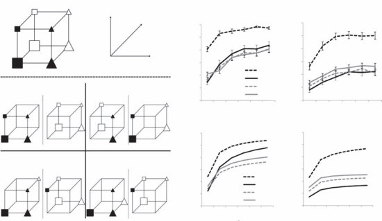
(a) [(b)]
[1.0] [1.0][年轻] [年长]
[评分] [or] [0.9][iz] [0.9][S] [Col] [0.8][y][0.8][y]
[Form] [ac] [ac] [0.7][ur] [0.7][ur] [类型I][cc] [cc] [A] [0.6][A] [0.6][类型II]
[Alpha] [类型IV][Beta][Alpha][Beta][0.4] [0.4][1 2 3 4 5 6][类型I] [类型II] [类型III][0.5] [0.5] [1 2 3] [[4 5 6]]
[学习块] [[学习块]]
[(c)] [年轻（模型）] [年长（模型）]
[1.0] [1.0][0.9] [0.9]
[Alpha][类型III] [y] [0.8] [0.8][类型IV][y][ac] [ac] [Beta][Alpha][Beta][ur] [0.7][0.7][ur] [cc] [类型I][cc] [A] [0.6][0.6][类型II][A]
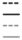
[0.5] [类型III] [0.5]
[类型IV]
[0.4] [0.4]
[1 2 3 4 5 6] [[1 2 3 4 5 6]]
[学习块] [[学习块]]
图 9.2
年轻和年长成人的类别学习。(a) 来自Shepard等人（1961）的四种不同类别类型的示例。对于每种类型，参与者必须学习哪些刺激具有类别标签Alpha，哪些具有类别标签Beta。每个标签的刺激在每个立方体上都有说明。虽然类型IV结构可以由每个类别的一个聚类捕获，但类型II结构需要每个类别两个聚类。(b) 年轻和年长成人在每种类型上学习过程中的准确性。(c) Anderson的分类模型拟合每组参与者。改编自Badham等人（2017）的图1、2和6。
在三个二元维度（例如，形状、颜色和大小）上不同的八个刺激被分为两个类别，每个类别四个刺激。这产生了六种不同的类别结构，
标记为类型I到类型VI。Shepard、Hovland和Jenkins (1961) 发现这些结构在学习难易程度上存在差异，其中类型I最容易，类型II较难，类型III、IV和V更难，类型VI最难。这些结构在混合模型中的表现也不同：类型IV问题可以用每个类别的单个聚类来准确表示，而类型II问题需要每个类别两个聚类才能准确表示。
虽然Shepard等人(1961)发现类型II问题比类型IV问题更容易学习，但这个效应是在通常的年轻成年人实验群体中发现的。当老年人面临这项任务时，他们表现出相反的模式：类型IV比类型II更容易(见图9.2b；Badham, Sanborn, & Maylor, 2017; Rabi & Minda, 2016)。这种模式可以通过Anderson的分类模型重现，假设老年人的α参数大幅低于年轻人，因此他们产生更少的聚类(见图9.2c)。Davis、Love和Maddox (2012)的进一步支持来自于他们在不同分类问题上发现Anderson模型的类似结果。有趣的是，α的差异可能与老年人较低的认知能力(cognitive capacity)有关：Dasgupta和Griffiths (2022)表明，较高的α值与表示概率分布的更高认知成本一致。可能是老年人比年轻人拥有更少的表征资源(representational resources)，这解释了为什么他们在分类任务中似乎使用更少的聚类。
254 J. Austerweil, A. N. Sanborn, C. Lucas, and T. L. Griffiths
无限混合模型可以通过各种方式扩展，以捕获分类的不同方面。例如，Anderson的分类模型假设类别标签只是对象的另一个特征。因此，聚类在各类别间共享，与每个类别相关联的聚类分布是通过对应于类别标签的特征进行条件化获得的。另一种方法是明确地将每个类别与不同的聚类分布关联，但允许某些聚类被共享的可能性。这种假设可以通过层次狄利克雷过程(hierarchical Dirichlet process)来捕获(Griffiths, Canini, Sanborn, & Navarro, 2007)。
无限混合模型的另一个推广允许不同的聚类方案可能适合解释观察特征不同子集的分布。例如，一件家具可能具有描述其形状的特征——有腿、大的平面——或用于构造它的材料——枫木。第一组特征支持基于功能的聚类——桌子、椅子等——而第二组特征支持基于材料的聚类。这种区别可以在生成模型中捕获，该模型首先聚类特征本身，然后为每个特征聚类对对象进行分组(CrossCat模型，在第1章中讨论；Shafto, Kemp, Mansinghka, Gordon, & Tenenbaum, 2006; Mansinghka et al., 2016)。
无限混合模型的另一种推广可以帮助解释可分离维度(separable dimensions)——那些容易从刺激中识别的维度——对类别表征的强烈影响。与可分离维度对齐的类别往往容易学习，而那些不对齐的则更困难。这可以解释为混合中聚类形状的先验：聚类预期与可分离维度对齐，匹配这种先验的类别结构更容易学习(例如，Shepard, 1987; Austerweil, Sanborn, & Griffiths, 2019)。但是这种关于聚类对齐的先验本身如何学习呢？这可以使用另一个无限混合来完成：如果每个聚类形状的先验本身是一个无限混合，那么对应于可分离维度的不同类型聚类可以在一生的经验中学习。因此，两级无限混合模型可以解释广泛的维度偏差(dimensional biases)(Sanborn, Heller, Austerweil, & Chater, 2021)。
最后，无限混合模型也可以扩展到不仅通过对象拥有的特征，还通过它们与其他对象参与的关系来描述对象的设置。例如，当试图理解新的社交环境时，你可能会关注哪些人似乎是朋友。基于这些关系，你可以尝试推断潜在的聚类结构，其中任何两个人成为朋友的概率仅取决于他们所属的聚类。更正式地，人a和b属于聚类z[a]和z[b]，他们成为朋友的概率由η[z][a][z][b]给出。在统计学中，这种模型被称为随机块模型(stochastic blockmodel)，它是混合模型的关系等价物。使用CRP定义聚类成员资格的先验分布产生无限关系模型(infinite relational model)，该模型已被用于解释人类学习关系理论的方面(Kemp, Tenenbaum, Griffiths, Yamada, & Ueda, 2006)。
中国餐厅过程(Chinese restaurant processes)和相关分布在认知科学中的应用远远超出了分类范围。它们可以在任何环境中用作先验分布
捕获知识增长的非参数贝叶斯模型 255
其中对具有离散但可能无限值集的潜在变量进行推断。
在一个CRP成功应用的场景中，它被用来推断可能解释观察事件的潜在原因。例如，想象你去了一家咖啡馆，点了一杯饮料，很喜欢这个味道。一周后，你回到同一家咖啡馆，点了同样的饮料，但这次味道很糟糕。你理解这种体验的一种方式是推断咖啡馆发生了某些变化——也许你两次访问时使用的咖啡豆不同。在这样做时，你是在为这个现象假设一个潜在原因。随着经历的增多，你可能会推断更多的潜在原因，假设这家咖啡馆使用几种不同风味的咖啡豆。
这种”潜在原因”观点已被用来解释动物条件反射中的结果模式，其中突然移除奖励在减少行为方面不如逐渐减少奖励提供频率有效(Gershman, Blei, & Niv, 2010)。直觉上，突然的改变暗示应该推断出不同的潜在原因，动物学会了在该原因存在时，行为不再产生奖励。因此，行为和奖励之间的原始关系得以保留，如果动物认为环境已经恢复到原始潜在原因，这种关系可以再次显现。逐渐减少奖励频率不会导致推断出的潜在原因发生改变，关系被消除。
未知数量的离散潜在变量出现的另一个场景是语言。音素(phonemes)、单词和句法类别都是需要从环境中推断的离散集合。在这些情况下，CRP可以用于定义先验分布。例如，Goldwater, Griffiths, and Johnson (2006a)定义了一个词汇分割的概率模型——解释儿童如何从听到连续的音素流转变为识别该流中的离散单词——其中CRP用于定义单词的先验分布。
CRP的变体可以用来更精确地捕获语言中出现的概率分布。在原始CRP中，随着餐厅中顾客数量的增加，坐在每张桌子上的人数遵循幂律分布，其中P−[(]m[j][)][∝]m。这是一个”重尾”分布，其中少数桌子最终会有非常多的顾客。幂律分布经常出现在语言中——例如，不同单词的使用频率遵循幂律分布(Zipf, 1932)。然而，在CRP中，幂律的指数（m[j]的负幂次）是1，而语言学幂律通常具有接近2的指数。
通过在CRP中引入额外参数，可以定义产生具有一系列指数的幂律的模型。特别是，在两参数Pitman-Yor过程中，第i个顾客将被分配到第j张桌子的概率为
P−[+][b][+][ak][+][(]zi=j[|]z1, z[2], […], z[i][−][1][)]= [i][+]m[j][−][a] j[≤]k [b][+][ak][+] 其他情况
其中a和b是过程的参数。每张桌子顾客数量的结果分布是指数为1+a的幂律。因此，这个模型可以用来更好地捕获语言中出现的分布，基于Pitman-Yor过程的模型已被证明与估计单词概率分布时使用的复杂平滑方案有深层联系(Goldwater, Griffiths, & Johnson, 2006b; Teh, 2006)。实际上，Pitman-Yor过程诱导的分布是可交换划分的最一般分布(Pitman, 2002)。
将非参数贝叶斯统计思想应用于语言并不止于单词层面。自然语言处理中出现的一个标准问题是估计与概率语法规则相关的概率分布（见第16章）。在这些语法中，规则识别符号可以被重写的离散可能方式集合，每种方式都关联一个概率。使用基于CRP的分布来表示这些概率会产生”缓存”规则先前应用结果的后果：在应用规则的每个点，你可以选择使用先前生成的结果或创建新的结果(Johnson, Häubl, & Keinan, 2007a)。这个属性使得捕获语言中一些丰富的依赖关系成为可能，这些依赖关系在简单语法中是缺失的。类似的方法已被用作概率编程语言中的随机记忆化(stochastic memorization)形式(Goodman et al., 2008a)，我们将在第18章更详细地讨论。
第9.1节展示了如何使用非参数贝叶斯统计方法来定义不需要假设世界上存在固定种类事物集合的类别学习模型。同样的策略可以应用于特征学习。在特征学习中，目标是识别解释一组对象观察特性的潜在特征。在最简单的情况下——我们这里将重点关注的情况——特征对对象的分配是二元的，潜在变量表示对象是否具有每个特征。挑战在于同时决定对象具有什么特征以及应该用多少特征来表示对象集合，就像在
特征学习可以被认为是与类别学习类似的问题。如果我们想象每个对象都与特征的二进制向量相关联，类别学习对应于存在约束的情况，即每行只能包含一个非零条目。特征学习是一般情况，其中每个对象可以有多个非零条目。换句话说，在类别学习中，每个数据点关联一个离散单元，而在特征学习中，每个数据点关联零个或多个离散单元。在本节中，我们介绍一个类似于CRP的分布，但涵盖了这种更一般的情况。然后，这个分布可以用作特征学习模型中的先验，或在我们寻求推断二进制向量但不希望限制其长度的其他情况中使用。与前一节一样，我们将这个无限二进制先验推导为有限分布的极限。
我们有n个对象和k个特征，对象i拥有特征j用二进制变量z[ij]表示。每个对象可以拥有多个特征。因此，z[ij]形成一个二进制n × k特征矩阵Z。我们将假设这个矩阵中的条目是由模型捕获知识增长的非参数贝叶斯模型 [257]生成的
通过模型
z[ij] ∼ Bernoulli(θ[j])
θ[j] ∼ Beta(α/k, 1),
其中θ[j]是任何对象拥有特征j的概率。每个z[ij]在给定θ[j]的条件下与所有其他分配独立。这里，θ[j]是独立的，所以每个z[ij]只依赖于其他对象是否拥有特征k。
我们可以使用这个模型计算对象特征分配的联合概率，定义矩阵Z上的概率分布：
P(Z) = ∏[k] ∏i ∫ P(z[ij]|θ[j]) p(θ[j]) dθ*[j]
= ∏[k] B(m[j] + α/k, n - m[j] + 1) / B(α/k, 1)
= ∏[j] (α/k)(α/k + m[j])(n - m[j] + 1)(1 + α/k) / (α/k)(α/k)(n* + 1 + α/k), (9.23)
其中B(r, s)是标准贝塔函数，m[j]是聚类j中的对象数量。同样，结果来自于共轭性，这次是二项分布和贝塔分布之间的共轭性。
这个分布是可交换的，只依赖于计数m[j]。计算任何z[ij]的完全条件分布是直接的：
P(z[ij] = 1|z[−i,j]) = ∫0 P(z[ij]|θ[j])p(θ[j]|z[−i,j]) dθ*[j]
= (m[−i,j] + α/k) / (n + α/k), (9.24)
其中z[−i,j]是其他对象的分配集合，不包括i，对于特征j，m[−i,j]是拥有特征j的对象数量，不包括i。
我们现在可以检查取k → ∞的后果。在定义这个模型中使用α/k保证了结果的无限矩阵保持稀疏。与CRP一样，我们需要定义矩阵等价类上的分布，因为当k → ∞时，任何特定矩阵的概率将趋于零。在这种情况下，我们计算在列的顺序上相同的矩阵等价类的概率（详情见Griffiths & Ghahramani, 2005）。取方程(9.23)的极限得到
lim[k→∞] P(Z) = exp{−*α**H[n]} ∏[h>0] αk[h](m[j] − 1)!(n* − m[j])! / n! (9.25)
[258] J. Austerweil, A. N. Sanborn, C. Lucas, 和 T. L. Griffiths
IBP先验样本，α = 10

同样，这个分布是可交换的：相同列的数量和列的和都不受对象排序的影响。
方程(9.25)中给出的联合概率并不是立即直观的，但可以通过一个称为印度自助餐过程(Indian buffet process, IBP)的简单生成过程产生(Griffiths & Ghahramani, 2005)。与CRP一样，这个过程假设对象上有一个排序，使用这个排序顺序生成矩阵，对象对应于餐厅中的顾客。伦敦的许多印度餐厅在午餐时间提供自助餐，有看似无限数量的菜肴。第一个顾客从自助餐的左侧开始，从每道菜中取一份，在从泊松(α)分布中抽取的菜肴数量后停止，因为她的盘子变得过重。第i个顾客沿着自助餐移动，按照菜肴的受欢迎程度采样菜肴，以m[j]/i的概率为自己盛菜，并尝试泊松(α/i)数量的新菜肴。顾客-菜肴矩阵Z是我们的特征矩阵，顾客沿着行，菜肴沿着列，条目表示哪些菜肴被采样。
由每个客户确定的等价类成员的概率。产生每个等价类成员的概率就是方程(9.25)中给出的概率。图9.3显示了从这个过程中抽样的矩阵示例。
在使用IBP作为先验的模型中进行推理可能需要完全条件分布。如果我们关心列的身份，比如当它们与分层模型中的不同参数相关联时，推导这些分布的最佳方法是根据前面概述的第二个生成过程，对m[j] > 0的j，将每个z[ij]作为伯努利试验抽取，然后重新排序列。利用分布是可交换的这一事实，我们将第i个对象视为这里概述的生成过程中的第n个，
得到
P[(]z [ij] [=] 1[|][z]−[,][j][)] [=] . (9.26) n m[j][,]−
通过取方程(9.24)在k → ∞时的极限也可以得到相同的结果。通过相同的假设集合，新簇的数量应该从泊松(α/n)分布中抽取。这也可以从方程(9.24)推导出来，使用与这里提出的相同类型的极限论证来获得泊松的项。
IBP提供了一种简单的方法来定义概率模型，这些模型可以识别应该用来表示一组对象的特征。这潜在地解释了人们如何形成特征表示以及这些表示如何依赖于上下文（特别是一个人熟悉的其他对象）。Austerweil和Griffiths（2011）探索了这种解释的预测，表明人们似乎根据他们出现的对象集合的分布属性来形成对象的不同表示。图9.4显示了如何从同一组部分生成两组对象。每个对象有六个部分中的三个，创造了20种可能的部分组合。一组对象，相关集合，重复相同的4种三部分组合，每种重复四次。另一组对象，独立集合包含20种独特组合中的16种。当显示相关集合时，基于IBP的概率模型形成一种表示，其中每个重复的组合是一个单一特征。当显示独立集合时，实际构造对象的六个部分被识别为特征。当显示这两个集合时，人们似乎也形成了对象的不同表示：当被问及四种未观察到的对象组合是否可能与其他对象一起出现时，显示相关集合的参与者比显示独立集合的参与者更不愿意泛化到这些新对象。
类似于CRP和相关的狄利克雷过程(Dirichlet process)，IBP及其相关的连续随机过程贝塔过程(beta process)（Hjort，1990）有许多扩展和泛化。这样做的一种技术是详细阐述IBP的烹饪隐喻。例如，变换不变特征学习模型是通过让顾客服用应用于每道菜的”香料”产生的，这改变了菜的味道（Austerweil & Griffiths，2013）。最近的工作还探索了将IBP与神经网络结合的方法，定义了一个先验，可以用来帮助神经网络随时间学习相关任务的不同表示（Kessler，Nguyen，Zohren，& Roberts，2021）。
到目前为止，我们专注于要推断的潜在结构是离散的情况——要么是类别，要么是特征集合。然而，在其他设置中也出现了想要在保持简单性的同时适应无限复杂性的类似问题。最突出的例子之一是函数学习——学习两个或多个连续变量之间的关系。这是人们经常不假思索就解决的问题，比如在驾驶租车时学习踩踏板多用力才能产生一定量的加速度。非参数贝叶斯方法也提供了一种解决这个问题的方法
[260] [J.] [Austerweil,] [A.] [N.] [Sanborn,] [C.] [Lucas,] [and] [T.] [L.] [Griffiths]
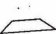
根据分布信息推断不同的特征表示。(a) 偏差（左侧）和用于生成两个对象集合的六个特征。(b)–(c) 分别为(b)相关和(c)独立集合的特征成员矩阵。(d)–(e) 模型分别为(d)相关和(e)独立集合推断的特征表示，这里由从后验分布中抽取的单个样本表示。经Austerweil和Griffiths（2011）许可转载。
这使得以一种保持可处理并偏好简单解决方案的方式学习复杂函数成为可能。
从抽象角度看，函数学习背后的计算问题是学习一个函数

从一组实值观测数据 [x][n] [=] [(]x1, [. . .] , x[n][)] 和
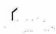
[t] [n] [=] [(]t1, [. . .] , t[n] [)] 中学习从 x 到 y 的函数 f，其中假设 ti 是真实值 yi [=] f [(]x[i][)] 被某种加性噪声模糊后的结果。在机器学习和统计学中，这被称为回归问题。
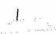
在本节中，我们讨论如何使用贝叶斯统计来解决这个问题，
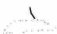
以及这种方法的结果如何与一类被称为高斯过程的非参数贝叶斯模型相关。
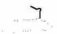
我们的介绍遵循 Lucas, Griffiths, Williams, and Kalish (2015) 的论述。
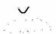
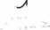
理想情况下，我们希望通过结合关于在世界中遇到不同类型函数概率的先验信念
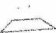
与 [x][n] 和 [t][n] 提供的信息来解决我们的回归问题。我们可以通过应用贝叶斯规则来做到这一点：
[p[(]f [|] [n], [t][n][)] [=] []] [x] p[(][t][n][|]f , [x][n][)]p[(][f][)] / p [(] [t] [n] [|] [x] [n] [)] (9.27)
其中 p[(]f [)] 是假设空间 [F] 中函数的先验分布，p[(][t][n][|]f , [x][n][)] 是在 f 为真实函数时观测到 [t][n] 值的概率（似然），
p[(]f [|][x][n], [t][n][)] 是给定观测 [x][n] 和 [t][n] 后函数的后验分布。
在许多情况下，似然通过假设 ti 的值在给定 f 和 xi 时是独立的来定义，用非参数贝叶斯模型捕捉知识的增长 [[261]]
并且每个都遵循均值为 yi [=] f [(]x[i][)] 方差为 σ[2][t] 的高斯分布。
对新输入 x[n][+]1 的函数 f 值的预测可以通过对该后验分布进行积分来进行：
p(y[n][+][1][|]x[n][+]1, t[n], x[n]) [=] ∫ p(y[n][+][1][|]f , x[n][+]1)p(f [|]x[n], t[n]) df (9.28)
其中 p(y[n][+][1][|]f , x[n][+]1) 是一个将所有质量都放在 y[n][+]1 [=] f (x[n][+]1) 上的狄拉克函数。
对一般假设空间 [F] 执行前一段中概述的计算是具有挑战性的，但如果我们将假设空间限制为某些特定的函数簇，计算就会变得简单。如果我们取 [F] 为形式为 y [=] b[0] [+] xb1 的所有线性函数，那么我们的问题就采用了熟悉的线性回归形式。要执行贝叶斯线性回归，我们需要定义所有线性函数上的先验 p(f )。由于这些函数可以用参数 b[0] 和 b1 来表示，定义向量 b [=] (b[0], b1) 上的先验就足够了，我们可以通过假设 b 遵循均值为零、协方差矩阵为 Σ[b] 的多元高斯分布来做到这一点。应用方程 (9.27) 然后产生 b 上的多元高斯后验分布（详见 Bernardo & Smith, 1994）：
E [[]b[|]x[n], t[n][]] [=] (σ[t][−2] Σ[b][−1] [+] X[n][T] X[n])[−1] X[n][T] t[n] (9.29)
cov [[]b[|]x[n], y[n][]] [=] (σ[t][−2] Σ[b][−1] [+] X[n][T] X[n])[−1] (9.30)
其中 X[n] [= []1[n] x[n][]]（即，与 x[n] 水平连接的全一向量的矩阵）。由于 y[n][+]1 只是 b 的线性函数，应用方程 (9.28) 产生高斯预测分布，y[n][+]1 具有均值 [[]1 x[n][+][1][]]E[[]b[|]x[n], t[n][]] 和方差 [[]1 x[n][+][1][]][T] cov[[]b[|]x[n], t[n][]][[]1 x[n][+][1][]]。t[n][+]1 的预测分布是类似的，但方差上要加上 σ[2][t]。
虽然只考虑线性函数可能看起来过于限制性，但线性回归实际上为我们提供了解决更一般函数簇问题所需的基本工具。许多函数簇可以描述为一小组基函数的线性组合。例如，所有 k 次多项式是形式为 1（常数函数）、x、x[2]、…、x[k] 的函数的线性组合。
设 φ([)], . . ., φ[(][k][)] 表示一组函数，我们可以通过将这类函数表示为 f (x ) [=] b[0] [+] φ([)](x)b1 [+] . . . [+] φ[(][k][)](x)b[k] 的形式并在权重向量 b 上定义先验，来定义这个基的线性组合函数类上的先验。如果我们取先验为高斯的，我们得到与前一段中概述的相同解，用 Φ[n] [= []1[n] φ() . . . φ[(][k])[]] 替换 X[n]，用 [[]1 φ([)](x[n][+]1) . . . φ[(][k][)](x[n][+]1)[]][T] 替换 [[]1 x[n][+][1][]][T]，其中 φ[(][j]) [= []φ[(][j][)](x1) . . . φ[(][j][)](x[n])[]][T]。
如果我们的目标仅仅是从 x[n][+]1、y[n] 和 x[n] 预测 y[n][+]1，我们可能会考虑一种不同的方法
方法，简单地定义在给定 x[n][+]1 条件下 y[n][+]1 的联合分布，并以 y[n] 为条件。一种令人惊讶地通用且强大的方法是假设 y[n][+]1 服从联合高斯分布，其协方差矩阵为：
K K[n] k [n][,][n][+]1 [=] [n] [+] 1 , (9.31) [T] k k [n] [+] 1 [n] [,] [n] [+] 1
其中 K[n] 依赖于 x[n] 的值，k[n][,][n][+]1 依赖于 x[n] 和 x[n][+]1，k[n][+]1 仅依赖于 x[n][+]1。如果我们以 y[n] 为条件，y[n][+]1 的分布为高斯分布，均值为 k[n][,][n][+]1 K[n][−]1y[n]，方差为 k[n][+]1 [−] k[n][,][n][+]1 [T] K[n][−]1k[n][,][n][+]1。这种预测方法通常被称为使用高斯过程(Gaussian process)，因为它假设一个随机过程，该过程基于 x 的值对 y 诱导高斯分布。这种方法也可以扩展，通过向 K[n] 添加 σ[2][t]I[n]（其中 I[n] 是 n × n 单位矩阵）来从 x[n][+]1、t[n] 和 x[n] 预测 t[n][+]1，以考虑与观测值 t[n] 相关的额外方差。
协方差矩阵 K[n][+]1 使用 x 中的一个二元函数（称为核(kernel)）来指定，其中 K[ij] = K(xi, x[j]*)。任何对所有 x 都产生适当（对称、正定）协方差矩阵的核都可以使用。常见的核包括径向基函数：
K(xi, x[j]) = θ[1][2] exp(−(xi − x[j])² / (2θ[2][2]) )，(9.32)
表明对于 x 值接近的点，相应的 y 值很可能高度相关，其中 θ1 和 θ[2] 是核的自由参数，控制总体协变水平和随点间距离增加而下降的速度。因此，高斯过程提供了一种极其灵活的回归方法，使用核来定义哪些 x 值可能具有相似的 y 值。
贝叶斯线性回归和高斯过程似乎为回归问题提供了两种截然不同的方法。在贝叶斯线性回归中，识别出函数的显式假设空间，定义该空间上的先验，并通过计算函数的后验分布然后对该分布进行平均来形成预测。相比之下，高斯过程简单地使用不同 x 值之间的相似性（通过核表达）来预测相应 y 值的相关性。因此，知道这两种方法是等价的可能会令人惊讶：延续本章的主题，我们可以将标准高斯过程模型推导为贝叶斯线性回归的无限极限。
证明这里概述的贝叶斯线性回归模型是高斯过程预测的一种形式是直接的。线性假设意味着向量 y[n][+]1 等于 X[n][+]1b。因此，p(y[n][+]1|x[n][+]1) 是均值为零、协方差矩阵为 X[n][+]1 Σ[b] X[n][+][1][T] 的多元高斯分布。因此，贝叶斯线性回归对应于使用高斯过程进行预测，该协方差矩阵起 K[n][+]1 的作用。使用更丰富的基函数集对应于取 K[n][+]1 = Φ[n][+]1 Σ[b] Φ[n][+][1][T]。因此，贝叶斯线性回归对应于使用核函数 K(xi, x[j]) = [φ¹(xi) … φ^(k)(xi)]ᵀ [φ¹(x[j]) … φ^(k)(x[j])]，而更丰富的基函数只是使这个核更复杂。
也可以证明高斯过程预测总是可以解释为贝叶斯线性回归，尽管可能具有无限多个基函数。正如我们可以用特征向量和特征值来表达协方差矩阵一样，我们可以用特征函数 φ 和特征值 λ 来表达给定的正定核 K(xi, x[j]*)：
K(xi, x[j]) = Σ[k=1][∞] λ[k] φ(k)(xi)φ(k)(x[j]) (9.33)
对于任何 xi 和 x[j]。使用前面段落的结果，任何核都可以被视为使用与其特征函数对应的基函数集进行贝叶斯线性回归的结果，以及具有协方差矩阵 Σ[b] = diag(λ) 的先验。
这些等价性结果建立了贝叶斯线性回归和高斯过程之间的重要对偶性：对于每个函数上的先验，都有一个定义 x 值之间相似性的核，对于每个正定核，都有相应的函数先验产生相同的预测。因此，贝叶斯线性回归和高斯过程预测只是同一类回归问题解决方案的两种视图。
贝叶斯线性回归和高斯过程之间的对偶性提供了一种新颖的
从人类功能学习的角度来看。以前，功能学习理论主要关注不同心理机制的作用。一类理论（例如，Carroll, 1963; Brehmer, 1974; Koh & Meyer, 1991）认为人们正在从给定的集群中学习显式函数，例如k次多项式。这种方法赋予人类学习者丰富的表征，但传统上对如何获得这种表征的问题给予了有限的处理。第二种方法（例如，DeLosh, Busemeyer, & McDaniel, 1997; Busemeyer, Byun, DeLosh, & McDaniel, 1997）强调人们可能只是在相似变量值之间形成关联的可能性。这种方法对潜在学习机制有清晰的解释，但在解释人们如何超越其经验进行泛化方面面临挑战。最近，已经提出了这两种方法的混合模型（例如，McDaniel & Busemeyer, 2005; Kalish, Lewandowsky, & Kruschke, 2004），具有显式函数表征，但采用关联学习。
贝叶斯线性回归类似于显式规则学习，估计函数的参数，而基于预测变量之间相似性（由核函数定义）进行预测的想法（这是高斯过程的基础）更符合关联学习的解释。在计算层面，这两种回归观点是等价的，这一事实表明这些竞争的机制解释可能不像以前看起来那么遥远。正如将类别学习视为密度估计有助于我们理解原型模型和样例模型的共同统计基础一样，将功能学习视为回归揭示了规则学习和关联学习背后的共同假设。
高斯过程模型也很好地解释了人类在功能学习任务中的表现。Griffiths等人（2008b）将具有混合核函数（线性、二次和径向基函数）的高斯过程模型与人类表现进行了比较（另见Lucas, Griffiths, Williams, & Kalish, 2015）。图9.5显示了人类在线性、指数和二次函数训练下的平均预测（来自DeLosh等人，1997），以及高斯过程模型的预测。
垂直线左右两侧的区域代表外推区域，即人员和模型都未接受训练的输入值。人员和模型都在线性函数上进行了几乎最优的外推，在指数和二次函数上也发生了相当准确的外推。然而，在指数和二次函数的外推中存在线性斜率偏差，二次和指数函数的极值被高估了。
使用高斯过程建模人类功能学习的后续工作更深入地研究了捕获人类对函数期望所需的核函数类型。Wilson, Dann, Lucas和Xing（2015）直接从人类功能学习数据中估计核函数，发现人类倾向于比典型机器学习方法中假设的函数更平滑的函数。Schulz, Tenenbaum, Duvenaud, Speekenbrink和Gershman（2017）探索了如何组合不同的核函数来捕获函数的组合结构，使用简单的语法来定义核函数的分布，允许组合函数的不同属性（如线性或周期性）。
虽然非参数贝叶斯方法已被用于研究认知科学中的各种主题，但这些应用中的大多数都使用了本章介绍的小型工具系列——CRP、IBP和高斯过程。非参数贝叶斯统计的文献涵盖了更广泛的主题并继续扩展，为认知科学创造了其他机会。例如，可以使用类似于定义CRP和IBP的方法来定义无限排序序列（Caron & Teh, 2012）和图（Caron, 2012）的概率分布。
虽然我们在本章（以及更广泛的本书）中的重点是蒙特卡洛方法，但变分推理也可用于非参数贝叶斯模型中的推理（例如，Blei & Jordan, 2006）。虽然蒙特卡洛方法强调CRP和IBP的离散结构，但变分方法将推理转化为连续优化问题。因此，这些方法在潜在认知过程方面可能有不同的解释，并且有可能与基于人工神经网络的方法建立更强的联系。
一般来说，将非参数贝叶斯模型与深度学习相结合可能提供了一种思考结构与灵活性之间权衡的新方法，这是认知建模中固有的。
基础认知的研究。例如，人工神经网络已知会遭受
灾难性遗忘(catastrophic forgetting)，即在一个任务上的训练会替换执行之前任务时获得的知识（McCloskey & Cohen，1989）。CRP提供的离散结构可能是防止这种情况的一种方法：如果系统能够识别出一个任务与之前正在做的不同，它就可以在不修改先前任务表示的情况下执行该任务（Jerfel, Grant, Griffiths, & Heller, 2019）。同样，IBP已被用于定义结构化先验，以支持神经网络中的持续学习（Kessler, Nguyen, Zohren, & Roberts, 2021）。识别环境中离散区别的能力与连续学习的整合，为适当平衡结构和灵活性的系统指明了道路。
9.5 结论
人类思维必须应对一个包含未知数量的聚类、特征和原因的世界，以及变量间未知形式关系的世界。非参数贝叶斯模型提供了一种为这样的世界定义有意义先验分布的方法，使我们能够建模人们如何将信息同化到现有表示中，并修改这些表示以适应不一致的结果。这种能力可以用作更复杂贝叶斯模型的组成部分，本章讨论的先验分布在任何对潜在变量的维度或复杂性存在不确定性的情况下都是有用的。
我们以探险家遇到新动物的例子开始本章——这是我们所描述的模型能够轻易处理的情况。但能够假设某些东西属于我们之前从未见过的种类，并不仅仅是探险家的专利。这是推动知识边界的科学家面临的问题，也是每个人类儿童都要面对的问题。皮亚杰强调同化(assimilation)和顺应(accommodation)是认知发展的基本力量，因为我们早期经验的很大一部分需要以不同方式扩展我们所知道的。非参数贝叶斯模型为我们提供了理解这些力量的方法——对何时同化以及何时顺应的精确说明。使用这些模型，我们可以捕捉到在无限复杂世界中成长意味着什么的一部分。
第10章
估计主观概率分布
Thomas L. Griffiths, Adam N. Sanborn, Raja Marjieh, Thomas Langlois, Jing Xu, and Nori Jacoby
从前面章节可以清楚地看出，贝叶斯认知模型的预测与特定概率分布的选择密切相关——人们如何学习将反映不同假设的先验概率，人们如何对物体进行分类将由代表不同类别的分布决定。因此，估计这些分布是定义贝叶斯模型的重要部分。
有时我们可以从世界中测量这些分布。例如，在第3章讨论的Griffiths和Tenenbaum（2006）的”预测未来”实验中，各种日常量的先验分布可以从在线数据集中估计。同样，第5章强调的Feldman, Griffiths和Morgan（2009）对知觉磁铁效应(perceptual magnet effect)的解释，需要使用混合模型表示语音类别，但混合成分参数的线索可以从人类语音信号中获取。使用从世界衍生的分布很有吸引力，因为它最小化了我们必须对主观概率——我们内在的信念程度——可能如何不同于周围世界客观的、可测量的概率所做的假设。因此，Anderson（1990）在他的理性分析定义中推荐了这种方法，并展示了如何用它来解释诸如遗忘的幂律曲线等现象，这些现象可以通过模拟我们环境的统计结构来解释。
在其他情况下，我们有兴趣看看假设不同分布的后果是什么，将由此产生的模型与人类行为进行比较。Griffiths和Tenenbaum（2006）使用这种方法来推断人们对诸如购票时电话等待等现象的先验分布形式，这是一个很难获得客观数据的现象。从人们的判断——在这种情况下，人们等待得越久，他们期望额外等待时间就越长这一事实——他们能够诊断出人们假设这种等待时间遵循幂律分布。在这种方法下，我们可能定义一个模型，然后尝试找到在该模型与人类行为之间产生最佳拟合的分布。这是一个有效的策略，但它面临两种风险。一种风险是人类行为的欠拟合(underfitting)，因为参数分布族相对较少，最能捕捉人类行为的特定分布可能不在这些分布族中。另一种风险是人类行为的过拟合(overfitting)
行为，最终得到一个能够捕捉正在建模的特定任务上的表现但不能泛化到其他密切相关任务的分布。
在本章中，我们考虑估计主观概率分布的不同方法，专注于设计用于直接测量这些分布的新颖实验方法。关键思想是设计让我们从主观概率中抽样的实验
分布。通过这种方式，我们可以从样本中形成对分布的估计。我们首先总结统计学中已用于获取主观概率分布的标准方法，然后转向基于第6章介绍的采样算法的一套实验方法。
统计学家、社会科学家和计算机科学家经常需要以概率分布的形式捕获人们对连续量的信念。为了解决这个问题，他们开发了各种获取方法(elicitation methods)，这些方法结合了向人们提出定量问题，然后推断出与答案尽可能接近的分布（综述见Garthwaite, Kadane, & O’Hagan, 2005和O’Hagan等人, 2006）。
获取的标准方法是要求人们为量提供分位数，或为分位数提供量。例如，如果目标是估计某人分配给电影票房收入的概率分布，这可以通过询问人们说出对应于票房收入最低5%、最低10%等的美元金额来完成。或者，可以要求人们为各种美元金额分配百分位等级，指出他们认为这些美元金额在整体分布中的位置。任何一组问题都将提供一组数字，可用于近似累积密度函数，从中可以恢复概率密度函数的估计。
这些传统的获取方法在目标是估计单一量的分布的情况下可能是有效的，并且在结果分布的形式方面没有任何限制（尽管用于分析数据的特定方案，如找到最符合人们估计的高斯分布，可能引入额外的约束）。然而，作为估计在认知贝叶斯模型中使用的概率分布的一般方法，它们有两个弱点。
首先，传统的获取方法只对简单的低维量可行。电影的票房收入都沿着单一维度——美元金额——相应的分布可以用单变量概率密度函数来捕获。即使推广到二维也会在评估适当的分位数和量方面产生挑战，尽管有可能应对这些挑战。对更复杂空间的高维分布，如人们对类别、函数或因果关系的先验分布，这些空间没有自然的排序或表示格式，超出了这些方法的范围。
其次，这些方法依赖于人们对其主观概率的真实访问。对于一维(1D)量，这可能是一个合理的假设，尽管有大量证据表明要求人们做出明确的概率判断可能是有问题的（例如，Tversky & Kahneman, 1974），这是本书中提到的实验估计主观概率分布 269
图10.1 迭代学习。(a)
信息沿着学习者链传递，每个学习者基于前一个学习者生成的数据形成假设，然后依次生成数据。(b)
这个过程在数据d和假设h上定义了一个马尔可夫链。对于贝叶斯学习者，我们从p(h|d)中采样h，然后从p(d|h)中采样d。图片经Griffiths和Kalish
(2005)许可转载。
通常试图避免要求人们陈述概率的原因之一。然而，人们可能无法像贝叶斯模型用来描述先验概率或类别表示的分布那样访问这些分布。测量人们对符合狗类别的事物相貌的分布，或他们分配给确定性因果关系的先验概率，可能是一个挑战。
因此，本章其余部分提出的方法旨在有效估计任意复杂对象上的主观概率分布，使用不需要人们陈述主观概率的自然主义判断。它们也不对底层分布的形式做任何假设。为此，它们采用了计算机科学家和统计学家为从复杂概率分布中采样而开发的技术。然而，这些方法的灵感既不来自这些学科中的任何一个——它来自语言学。
当一个孩子学习语言时，她从其他说话者那里学习，而这些说话者又从其他说话者那里学习。语言通过一个被称为迭代学习(iterated learning)的过程传播（Kirby, 2001），从学习者传递给学习者。图10.1a提供了迭代学习最简单版本的示意图，其中语言沿着单一的学习者链传递。每个学习者观察前一个学习者生成的语言数据，形成假设，然后基于该假设生成提供给下一个学习者的数据。
一个自然的问题是，通过迭代学习的传播过程应该如何影响语言的结构。图 10.1b 显示我们可以将这种简单的迭代学习形式分析为数据 d 和假设 h 上的马尔可夫链。如果我们假设学习者应用贝叶斯推理，那么这个马尔可夫链中的转移概率来自于从后验分布 p[(]h[|]d[)] 中采样 h，然后从相应的似然函数 p[(]d[|]h[)] 中采样 d。
将迭代学习表述为马尔可夫链允许我们询问这个马尔可夫链的平稳分布可能是什么。回想一下，马尔可夫链会收敛到其平稳分布，前提是它满足遍历性的条件（参见第6章）。Griffiths和Kalish（2005；2007）证明了如果所有学习者具有相同的先验分布，那么 h 上的平稳分布就是先验分布 p[(]h[)]。在语言学习的背景下，这意味着随着时间的推移，我们应该期望语言会发生变化，变得更容易学习，更加符合人类的归纳偏见(inductive biases)，如这种先验分布所反映的。
这种理论分析可能对理解文化传播具有有趣的意义，但需要经验验证。Kalish、Griffiths和Lewandowsky（2007）进行了一项实验，为理论提供了良好的检验，使用了第9章讨论的函数学习任务。人们被教授两个变量之间的关系，用计算机屏幕上的彩色条表示。他们看到这些变量的50对值，然后被要求在给定另一个变量的情况下生成50个预测。这50个预测作为下一个参与者的数据，创建一个迭代学习链。
图10.2 迭代函数学习。每一行显示一个学习者链产生的结果，用不同的函数初始化（显示在第一列）。每一列是单个学习者的预测，这些预测成为该行中下一个学习者的训练数据。无论如何初始化，仅仅九次迭代后，函数就转化为正线性函数。Kalish等人（2007）运行了32个这样的链，其中28个最终成为正线性函数，4个最终成为负线性函数。面板(a)-(d)分别显示了用正线性、负线性、非线性和随机关系初始化的链。图改编自Kalish等人（2007）。
函数学习为理论提供了良好的检验，因为这是人们的归纳偏见得到充分理解的情况。数十年的人类函数学习研究表明，人们发现最容易学习正线性函数（即具有正斜率的线性函数），其次是负线性函数，再次是非线性函数。我们可以将这些信息转化为先验分布。如果一个假设具有更高的先验概率，那么它应该需要更少与该假设一致的数据才能获得高后验概率——也就是说，它应该更容易学习。因此，我们应该期望正线性函数在人们对函数的先验下具有高概率。因此，Griffiths和Kalish（2007）对迭代学习的分析预测，我们应该期望正线性函数从迭代函数学习中以高概率出现。
图10.2显示了Kalish等人（2007）的结果。无论链如何初始化，在仅仅九次传播迭代后，它们都被正线性函数主导。这些结果为迭代学习产生与人们归纳偏见一致的结果这一观点提供了强有力的支持。它建立的正反馈过程——初始数据反复通过有偏的学习系统——显著放大了这些偏见。通过观察第一次迭代，可以检测到人们发现学习正线性函数更容易——正线性函数的错误较少，人们在其他函数上犯的错误往往倾向于正线性——但在最后一次迭代中这一点更加明显。
这些结果提出了另一种可能性：我们可以使用迭代学习作为测量人们先验分布的实验范式。实际上不需要在参与者之间传播信息——我们仍然可以在参与者内部构建马尔可夫链，每个人看到一系列试验，其中后续试验中看到的刺激由他们在先前试验中的反应决定。
Lewandowsky、Griffiths和Kalish（2009）在一项旨在使用迭代学习测量人们对日常数量先验的实验中探索了这种可能性。任务是Griffiths和Tenenbaum（2006）引入并在第3章讨论的”预测未来”问题：给定迄今为止观察到的数量[t]，比如一部电影赚取的金额，预测总数[t][total]，比如电影的总票房收入。
这些[t][total]的值可以通过在相应贝叶斯模型的似然性中使用均匀采样假设[p][(][t][|][t][total][)]来生成下一次试验的刺激。在这种情况下，这意味着在0到[t][total]之间均匀采样下一个[t]值。如果人们的反应是来自[p][(][t][total][|][t][)]的样本，那么随着时间的推移，生成的马尔可夫链将收敛到分布[p][(][t][total][)]。
图10.3显示了将迭代学习应用于”预测未来”任务所产生的估计平稳分布。平稳分布是通过聚合所有参与者链条的后半部分来估计的。这些量的真实分布与估计的平稳分布之间存在密切的对应关系，这与迭代学习可以用来估计人类先验分布的假设一致。后续研究使用相同的方法来估计概念的先验分布（Griffiths, Christian, & Kalish, 2008a; Canini, Griffiths, Vanpaemel, & Kalish, 2014）和因果关系（Yeung & Griffiths, 2015）。
通过迭代学习推断的先验可能非常有启发性，并且可以改善贝叶斯模型的预测。图10.4显示了用于元素因果归纳的因果模型中噪声-或(noisy-OR)和噪声-与非(noisy-AND-NOT)函数参数的推断先验（有关噪声-或的更多详细信息，请参见第4章）。噪声-或用于捕获人们对生成性原因的假设，其中原因增加了结果的概率，而噪声-与非对应于预防性原因，其中原因降低了结果的概率。在这两个函数中，[w][0]是结果的背景率，w是原因的强度。这两个参数的联合分布告诉我们人们对结果发生率和假设的原因强度的期望是什么。Yeung和Griffiths（2015）使用迭代因果学习任务识别了这种分布，在该任务中，人们看到列联数据，估计[w][0]和w，然后随后看到使用由他们的估计产生的概率分布生成的新列联数据。
图10.4显示了这个过程的平稳分布——我们对人们在生成性和预防性原因上的[w][0]和w先验的最佳估计。结果表明，人们对结果发生的背景率相对无所谓（[w][0]上的分布大致均匀），但期望因果关系相对强烈
顶行显示了一组日常数量的实际分布。底行显示了将迭代学习范式应用于Griffiths和Tenenbaum（2006）的预测未来任务所产生的这些数量的平稳分布。图片经Lewandowsky等人（2009）许可转载。
通过迭代学习产生的用于基本因果归纳的贝叶斯网络参数——结果发生的背景率[w][0]和原因强度w——的人类先验的平滑经验估计。图片改编自Yeung和Griffiths（2015）。
（分布为w的更高值分配更高的概率）。考虑到这一点，产生的模型比使用其他先验的模型更好地拟合人类对因果关系的判断（Yeung & Griffiths, 2015）。
虽然我们在这里专注于推断先验，但值得注意的是，迭代学习可以用来研究人类感知、学习和记忆对跨代传播的文化产物的预期影响。Xu, Dowman和Griffiths（2013）使用曼塞尔颜色芯片阵列（见图10.5a）研究了文化传播对颜色术语系统的影响（见图10.5），这些芯片最初用于从世界颜色调查（WCS; Kay, Berlin, Maffi, Merrifield, & Cook, 2009）中收集来自非工业社会的颜色术语系统的大型跨文化样本。参与者最初被呈现一个随机的颜色子集（图10.5b，顶部），这些颜色被分类为用伪词标记的任意类别，然后被要求概括他们对剩余颜色学到的内容（即，对新颜色进行分类）。一个
一代学习者的输出成为下一代的输入。重要的是，颜色术语的数量在不同条件下有所变化，模拟了”基本”颜色术语数量在不同语言中的变化。令人瞩目的是，仅仅经过13次迭代，人工颜色系统与世界各地不同文化中发现的颜色系统之间就出现了惊人的相似性（比较图10.5b和10.5c）。
理解为什么迭代学习会收敛到先验的一种方法是认识到它是吉布斯采样的一种形式（见第6章）。在吉布斯采样中，我们构建一个马尔可夫链，通过迭代地从每个变量的条件分布中采样一个值（给定所有其他变量的当前值），收敛到一组变量上的特定平稳分布。如果贝叶斯学习者有先验p[(]h[)]和似然函数p[(]d[|]h[)]，我们可以定义联合分布p[(]d, h[)] [=] p[(]d[|]h[)]p[(]h[)]。然后很容易认识到，从后验p[(]h[|]d[)]采样然后从似然p[(]d[|]h[)]采样对应于从这个联合分布的两个条件分布中迭代采样。结果，d和h上的分布随时间会收敛到p[(]d, h[)]，h上的边际分布会收敛到p[(]h[)]。
这给了我们另一种思考迭代学习作为实验方法的方式：它是一个吉布斯采样算法的实现，其中样本由人而不是计算机生成。这建立了采样算法和实验范式之间的联系，可以潜在地用于将计算机科学家用来从计算机表示的分布中生成样本的方法转换为认知科学家可以用来从人脑内主观分布中生成样本的方法。
与迭代学习密切相关的方法以前在心理学中被用来研究人类认知对信息文化传播的影响。这些方法中最著名的是巴特利特(Bartlett)（1932）引入的串行再现范式。在这个范式中，参与者被展示一个刺激，如故事或图像，并在延迟后从记忆中再现它。第一个参与者产生的再现被展示给第二个参与者，第二个参与者产生另一个再现。随着这个过程的重复，刺激发生显著变化。
[274] [T.] [L.] [Griffiths,] [A.] [N.] [Sanborn,] [R.] [Marjieh,] [T.] [Langlois,] [J.] [Xu,] [and] [N.] [Jacoby]
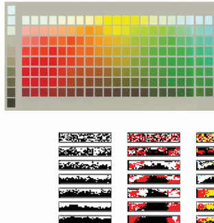
(a) [11111[2 2 2 2 2 2 2 2 2 2 3 3 3 3 3 3 3 3 3 3 4 ] [A ] [1 2 3 4 5 6 7 8 9 ] [0 ] 1 [2 ] [3 ] 4 [5 ] [6 ] [7 ] [8 ] [9 ] [0 ] [1 2 3 4 5 6 7 8 9 ] [0 ] [1 2 3 4 5 6 7 8 9 0 ]]

[B ]
[C ]
[D ]
[E ]
[F ]
[G ]
[H ]
[J ]
[2 术语] [3 术语] [4 术语] [5 术语] [6 术语]
[(b) ][初始划分]
[2 ]
[3 ]
[迭代次数]
[5 ]
[6 ]
[7 ]
[8 ]
[9 ]
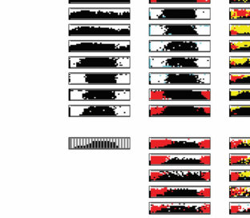
[文化]
[9 ]
[10 ]
[11 ]
[12 ]
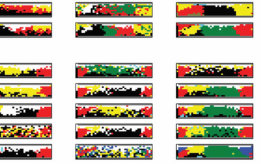
[13 ]
[(c) ]
[WCS说话者]
图10.5
模拟颜色术语系统的文化传播。(a) 刺激集基于WCS中使用的刺激集，该研究收集了110个非工业社会语言的颜色术语系统(Kay等人，2009)。(b) 不同术语划分的迭代学习链。(c) 与实验结果相似的WCS语言的样本说话者。两个术语的结果显示了达尼语言的估计划分，因为WCS中没有出现两个术语的语言。图经Xu等人(2013)许可复制。
知觉和记忆是嘈杂的过程；图像和声音很少能无失真地传播，对故事和图像的第一印象远非永久性的。为了处理这些不确定性，人类经常依赖先验信息来填补空白。对先验信息的依赖往往会导致偏差，平均参与者的反应偏离真实反应。这种先验信息可能反映世界中刺激的分布x(Jacoby & McDermott, 2017; Langlois, Jacoby, Suchow, & Griffiths, 2021)，或者人们从这些刺激中推断出的状态µ(Xu & Griffiths, 2010)。
串行再现利用这一观察构建了一个过程，允许人类先验信息的精确表征。通过反复观察和从记忆中再现刺激，由于内化先验导致的系统性偏差可以积累并变得明显。换句话说，串行再现以一种揭示产生这些偏差的共享先验的方式放大了知觉和记忆的偏差。
正式地，串行再现实现了一个马尔可夫链形式的吉布斯采样器. . . [→] x[t] [→] µ[t] [→] x[t][+]1 [→] . . .，在(x, µ)对的空间上。我们的目标是将这个过程的观察到的平稳分布p(x)作为先验概率的函数来表征。文献中存在对推理过程的两种不同分析，导致对p(x)解释的细微差异。为了完整性和避免未来的混淆，我们将描述这两种分析。
估计主观概率分布 [275]
首先，Xu和Griffiths（2010）的模型假设当呈现噪声刺激x[t]时，参与者试图推断世界的真实状态µ[t]。这可以建模为形式为p(µ[t][|]x[t]) [∝] p(x[t][|]µ[t])π(µ[t])的贝叶斯推断，其中π(µ[t])是关于世界可能状态µ[t]的先验，p(x[t][|]µ[t])是在世界真实状态为µ[t]时观察到x的似然。如果预测是通过简单地从后验分布中采样生成的（关于其他可能性的讨论见Griffiths & Kalish, 2007），那么刺激x的最终平稳分布是后验预测分布p(x) [=] p(x[|]µ)π(µ)dµ（Xu & Griffiths, 2010）。
其次，Jacoby和McDermott（2017）以及Langlois、Jacoby、Suchow和Griffiths（2021）对串行再现的解释如下：给定一个真实输入刺激x[t]，通过似然p(µ[t][|]x[t])生成噪声感知µ[t]。在重构阶段（为简化假设没有产生噪声），参与者试图通过结合关于世界中刺激分布π(x)的先验信息来推断真实的潜在刺激。这可以使用后验p(x [t][+]1 [|]µ[t]) [∝] p(µ[t][|]x[t][+]1)π(x[t][+]1)来建模。假设参与者像之前一样通过从后验分布中采样来生成推断，可以证明刺激的平稳分布收敛到先验本身p(x) [=] π(x)（Jacoby & McDermott, 2017; Langlois et al., 2021）。
串行再现已被用于研究各种领域的先验。Xu和Griffiths（2010）通过将其应用于简单的一维领域，证明了该范式的实用性。例如，在一项任务中，参与者接受训练来区分两种鱼类（即养殖场鱼和海洋鱼）。鱼类刺激是示意性生成的，只在宽度上有所变化。养殖场鱼的宽度呈正态分布，具有特定的均值和方差，而海洋鱼的宽度呈均匀分布。通过对参与者进行不同养殖场鱼分布的训练，然后运行串行再现任务（参与者看到一条鱼并必须在知道它来自养殖场的情况下重现它，初始鱼类不一定来自养殖场鱼分布），作者表明该过程逐渐恢复了训练分布。
在串行再现更复杂的应用中，Langlois等人（2021）通过迭代一项任务揭示了空间记忆中的共享先验，该任务要求参与者在图像中重现精确的点位置（图10.6）。在该任务中，参与者观看随机放置在图像（如灰色圆形或三角形）上的红点。延迟后，图像重新出现在屏幕上但没有红点，参与者被指示指出在刺激阶段显示的红点的确切位置（任务和串行再现程序的说明见图10.6a）。过往研究（Huttenlocher, Hedges, & Duncan, 1991; Wedell, Fitting, & Allen, 2007）突出了空间记忆中的一致偏差，例如三角形图像内点重构明显倾向于偏向三角形顶点。串行再现揭示了过往实验方法遗漏的细节（图10.6c）。特别是，它揭示了圆形图像上点位置的空间记忆偏向象限边缘，而不是象限中心，这与之前的研究不同（Huttenlocher et al., 1991; Wedell et al., 2007）（图10.6a和c）。
图10.6 估计视觉空间工作记忆重构的先验。(a) 圆形图像串行再现方法的说明。第一个参与者观看带有随机位置叠加点的图像（圆形），然后被要求从记忆中重现其位置。下一个参与者观看同一图像，但点位于前一个参与者重构的位置。该过程重复进行共20次迭代。(b) 叠加在三角形图像上的点位置记忆串行再现结果。最初的500个点的均匀分布（最左侧）随着串行再现迭代次数增加变得越来越结构化。(c) 实验结果显示简单几何形状图像在所有链迭代中的响应叠加：圆形、三角形、正方形和五边形，突出显示这些形状中被估计具有高先验概率的区域。图改编自Langlois等人（2021）。
先验可能源于与刺激的短期交互，可能在
实验持续时间内的学习(Xu & Griffiths, 2010; Jazayeri & Shadlen, 2010)，但它们也可以对应终身的文化依赖性学习，例如语言和音乐的情况。例如，Jacoby和McDermott(2017)使用序列再现来揭示节奏感知中的文化依赖性先验(priors)。在他们的任务中，参与者被呈现一个简单的随机节奏，并被要求通过手指敲击来再现它。研究显示，西方参与者的节奏表征与从玻利维亚亚马逊地区招募的参与者相比存在很大差异(见图10.7)。在该
P₃
迭代 1
敲击！敲击！敲击！ 2 4 3 5 敲击！ 迭代 113 113 最终 状态 0 初始
112 112 种子
213 213 123 123
223 223
212 212 122 122
500ms 500ms 1000ms 1:1:2 + ¼P + ½P 323 323 233 233 3 111 111 2 312 312 132 132 5 e 4.5 ¼P 1 322 322 232 232 iv 4 at 211 211 332 332 121 121 rm 3.5 el o 3 r 311 311 221 221 131 131 if n 2.5 321 321 231 231
2000ms ty 2 u si 1.5 to 1 en 0.5 D 0
P P₁ P₂
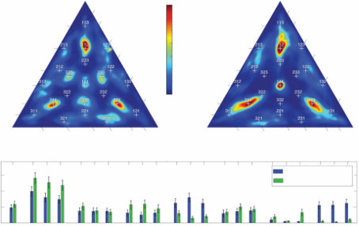
1/5 1/5
3/5 >7 1/4 1/4
间隔 e ut te 1/2 al 1/2 iv ib rv 2/5 rv 5 rv 2/5 tr at is te al I 4 el al I 间隔 II I 6 io I 1/3 to 间隔 1/3 间隔 II te n 3/5
1/4 1/3 2/5 I I r d 2/5 1/2 3 ty 1/2 rm si ifo 1/3 2 en 3/5 D un 3/5 1 a 1/4
1/5 0 1/5
3/5 1/2 2/5 1/3 1/4 1/5 3/5 1/2 2/5 1/3 1/4 1/5

间隔 I 间隔 I

混合物中的权重
n * 0.1 * * * t i * * * 0.05 * gh ei W 0 111 112 ix 0.15 * 齐马内人 m tu 美国非音乐家 * * re 121 211 122 212 221 113 131 311 123 231 312 132 213 321 223 232 322 233 323 332
图 10.7

来自Jacoby和McDermott(2017)的音乐节奏序列再现实验。(a) 实验示意图。参与者被呈现随机节奏(三次点击的重复循环，由三个节拍间时间间隔定义)，并通过敲击来再现它们，这成为下一次试验的刺激。这个过程重复五次。(b) 节奏空间，其中每个轴代表节奏中三个间隔之一。整数比节奏占据节奏空间中点的子集。左侧显示了一个示例节奏(1:1:2)。由线连接的彩色点显示了示例实验试验的轨迹。插图更详细地显示了一个示例试验，收敛到1:1:2节奏。(c) 实验结果显示了来自亚马逊的齐马内人参与者与美国非音乐家之间的跨文化差异。尽管存在明显差异，但实证结果与整数比之间存在重叠。结果显示了最后迭代中响应的核密度估计。下面的面板显示了拟合到数据的混合模型中不同整数比类别的相对重要性(“权重”)。结果显示了具有显著差异的类别(如1:1:2/1:2:1/2:1:1和2:3:3/3:2:3/3:3:2)，可能反映了对音乐的不同终身接触。图改编自Jacoby和McDermott(2017)。

278 T. L. Griffiths, A. N. Sanborn, R. Marjieh, T. Langlois, J. Xu, and N. Jacoby
项目中，Jacoby等人(2024)研究了来自15个国家39个群体的参与者。他们发现先验依赖于每种文化中音乐实践的性质，但它们也共享普遍特征，例如在小整数比处存在离散节奏类别。综合来看，这些研究突出了序列再现作为现代工具研究广泛背景下感知先验以及在群体间创建这些先验有意义比较的前景。
迭代学习和序列再现是研究特定类型主观概率分布的有效方法：迭代学习可以揭示指导学习的先验分布，序列再现可以揭示指导感知和记忆的先验分布。然而，本书中提出的贝叶斯模型假设了主观
主观概率分布有许多种类，它们并不属于这两个类别。例如，分类模型假设类别与刺激的概率分布相关联。那么如何估计这些分布呢？
解决估计主观概率分布这一更广泛问题的一种方法是采用迭代学习和序列再现背后的关键洞察——马尔可夫链蒙特卡罗(MCMC)算法（如吉布斯采样）可以通过人来实现——并将其推广。幸运的是，还有其他类型的MCMC算法可以与人一起使用，包括最著名的此类算法：Metropolis-Hastings算法（Metropolis等，1953；Hastings 1970）。
Sanborn及其同事（Sanborn & Griffiths，2008；Sanborn，Griffiths，& Shiffrin，2010b）探索了Metropolis-Hastings作为从主观概率分布中采样方案的潜力。该算法不要求参与者像迭代学习中那样生成新示例。相反，他们需要在两个项目之间做出选择，这些项目的选择方式实现了MCMC算法。在Metropolis-Hastings算法中，通过使用提议分布来提议当前状态的变化，以及依赖于目标分布的接受规则来决定是否接受该变化，构建收敛到特定平稳分布的马尔可夫链。Sanborn及其同事意识到这种结构可以自然地转化为实验范式。
Sanborn等人开发的实验范式使得从概率分布p[(]x[)]中采样成为可能，该分布与任何非负主观量f[(]x[)]成正比，如分配给结果x的概率或效用。关键是设计一个任务，让人们在两个备选方案x和x[∗]之间选择，使得他们选择x[∗]的概率为
f[(]x[∗])] P[(]选择x[∗][|]x，x[∗])] = ——————————————— (10.1) f[(]x[)] + f[(]x[∗])]
这在潜在上是直接的，因为方程(10.1)简单地是Luce选择规则（Luce，1959），该规则被广泛用于建模人们的选择。如果能识别出这种类型的任务，就可以以与Metropolis-Hastings算法完全相同的方式构建马尔可夫链，向人们展示链的当前值和提议的备选方案，要求他们在这些选项之间进行选择，并将选择的结果估计主观概率分布 279


图10.8 在探索动物类别实验中一名参与者的马尔可夫链和样本。两个面板都是九维空间的二维(2D)投影，其中原始维度对应于棒状四足动物图形中线条的长度和角度。左面板显示了”长颈鹿”类别的三个马尔可夫链，从空间中不同的点开始，但相对快速地收敛到一个固定区域。右面板显示了所有四个类别的样本，取自相应的马尔可夫链在适当的预热期后。气泡显示了这些类别中棒状图形的具体示例，说明它们在捕获与每个类别相关的内容和变化方面做得很好。图片经Sanborn和Griffiths(2008)许可转载。
作为该算法中的新当前值。因此，方程(10.1)成为该算法中的接受概率，产生以p[(]x[)] ∝ f[(]x[)]为平稳分布的马尔可夫链。虽然方程(10.1)与Metropolis-Hastings算法中使用的接受规则不完全相同，但它对应于另一个有效的接受规则，称为”Barker规则”（Barker，1965；Neal，1993），很容易检查它满足第6章讨论的详细平衡条件。
人工马尔可夫链蒙特卡罗(MCMCP)的一个示例应用是估计自然类别的结构。如果包含对象x的类别c由概率分布p[(]x[|]c[)]表示，那么我们可以构建一个满足方程(10.1)的任务，其中f[(]x[)] = p[(]x[|]c[)]，通过向人们展示两个对象并要求他们指出哪个最可能属于该类别（详情见Sanborn等，2010）。这提供了一种探索人们通过经验学习的类别结构（“自然类别”）的方法。Sanborn等人(2010)进行了一项实验，参与者被展示沿着九个维度变化的棒状动物图形，如头部角度和颈部长度，并被要求对特定棒状图形在四个类别——猫、狗、马和长颈鹿——中的成员资格做出判断。提议分布是在这个九维空间中的高斯分布，有很小的概率跳跃到另一个更远的点。经过几百次选择后，人们反应产生的马尔可夫链趋向于收敛到空间的特定区域，为不同类别选出不同的分布。图10.8显示了一名参与者的结果。其他示例包括研究心理表征
在直觉物理学(Cohen & Ross, 2009)、卡通面部表情(McDuff, 2010)中，
(a) [(b) ] [(c) ] [(d) ][实验屏幕: ]
[1 0.7 0.5 0.6 ]
[0.7 1 0.6 0.1 ]
[组装] [0.5 0.6 1 0.4 ] [哪个面孔看起来更开心？]
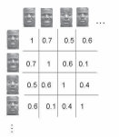
[项目数据库][当前提案][0.6 0.1 0.4 1][项目][运行][“B-][运行d-MCMCP][匹配][到][量化][“实验][获得图形][相似性][N个邻居]
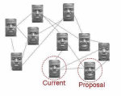
[(e) ] [特征面孔] [U6 ] [U16 ] [G6 ]
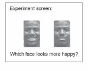
图10.9
使用马尔可夫链蒙特卡罗与人的交互来处理离散刺激集。(a) 刺激图像。(b) 使用计算机视觉算法构建相似性矩阵。(c) b-匹配算法基于相似性矩阵构建图形，确保每个节点具有相同数量的邻居。(d) MCMC算法包括人们对图形中相邻图像对做出判断，选择哪一个最能体现该类别特征。(e) 这种方法在估计平均快乐面孔方面比在连续空间中运行MCMC算法产生更好的结果，在连续空间中面孔由数据库中图像集的特征向量表示。U6是在每个刺激有6个邻居的图形上的均匀随机游走，U16是有16个邻居的均匀随机游走，G6是几何提案分布，其中首先从几何分布中选择步数，然后通过在有6个邻居的图形上进行均匀随机游走来执行这些步骤。图改编自Hsu等人(2019)。
甚至人们说他们有”一个良好的夜间睡眠”时的含义(Ramlee,
Sanborn, & Tang, 2017)。
这种方法可以扩展到比人形简笔画实验中使用的九维空间更多维度的空间。Martin, Griffiths和Sanborn (2012)将其应用于调查由面部图像特征向量定义的175维空间中的面部表情(“特征面孔”)。该实验的参与者看到成对的面孔，被要求判断哪个面孔更快乐或更悲伤。该实验中的马尔可夫链在参与者之间是连接的：一个参与者最后选择的面孔是下一个参与者的起点。这个过程的结果是产生了现实的面部表情，这种表情很难用语言描述，如图10.9e中的特征面孔结果所示。
当然，即使是Metropolis-Hastings算法在高维复杂概率分布中也会遇到采样困难。虽然采样器最终会收敛到正确的分布，但可能需要太多试验，使得该方法在人类参与者中不可行。幸运的是，Metropolis-Hastings是一个极其灵活的算法，研究人员已经开发了许多巧妙的方法来提高其效率。一种方法是为采样器引入”动量”概念，因此如果马尔可夫链沿着高概率脊线行进，那么它将倾向于停留在该脊线上，不会浪费时间探索低概率谷地。交替进行允许参与者选择采样器未来行进方向的试验可以提高其效率(Blundell, Sanborn, & Griffiths, 2012)。
为图像构建特征空间的一个问题是这非常困难，而且通常，如特征面孔的情况，特征空间中的点并不对应任何合理的图像。构建特征空间的替代方法是仅使用真实图像。Hsu, Martin, Sanborn和Griffiths (2019)将这种方法扩展到目标是估计离散刺激集上分布的设置中。在这种情况下，提案分布通过使用刺激的相似性度量来定义b-匹配来构建，这是一个每个节点连接到b个其他节点的图。图中的每个节点对应一个刺激，连接方式使得刺激与其他相似的刺激相连。然后，马尔可夫链蒙特卡罗与人(MCMCP)算法的提案分布是在此图上的随机游走——在每个节点均匀随机选择b条边中的一条。由于每个节点具有相同数量的边，这个分布是对称的。
图10.9显示了这如何作用于对应显示不同情绪面孔的刺激集。使用计算机视觉算法构建相似性矩阵，b-匹配算法构建图形。人们看到在此图中相邻的面孔对，被要求选择哪个面孔更好地匹配某个类别——在这种情况下是快乐面孔。Hsu等人(2019)发现这种方法优于首先将面孔转换为连续空间并在该空间中应用高斯提案分布的MCMC算法。这种方法随后被应用于更好地理解外科医生如何在心理上表征肱骨骨折(Jabbar等人, 2013)。
尽管MCMCP具有灵活性，但该范式的某些方面使其在特定领域中难以应用。具体来说，MCMCP的二选一强制选择界面每次试验仅提供一比特信息。这反过来在高度多模态的领域中可能非常耗时，因为这些领域需要相当多的探索。同样，MCMC算法的性能严重依赖于提议分布的选择；分布过窄可能在实践中无法收敛，而分布过宽可能错过主观分布中的重要细节。当涉及计算机模拟时，这可能不是什么大问题，因为通过各种提议宽度进行实验并选择最佳参数相对便宜（例如，通过交叉验证）。然而，当采样器涉及人类招募时情况并非如此，这可能非常昂贵。
为了解决这个问题，Harrison等人（2020）提出了一种名为人类吉布斯采样（GSP）的替代范式，它实例化了前面讨论的吉布斯采样过程的另一种变体。与序列再现和迭代学习不同，后者在假设和刺激之间交替进行条件采样，这里的过程直接在刺激维度上交替。具体来说，给定一个d维刺激空间（例如颜色）和一个参数化[(]x1, […] , x[d][)]（例如RGB通道），在GSP中[282] [T.] [L.] [Griffiths,] [A.] [N.] [Sanborn,] [R.] [Marjieh,] [T.] [Langlois,] [J.] [Xu,] [and] [N.] [Jacoby]
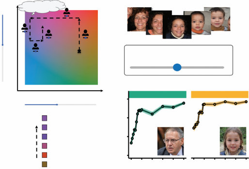
(a) [薰衣草 ] [(b) ]
[2 ]
[3 ]
[ 2] [5 ] 1
[si] [4 ][on]
[en] [调整滑块以尽可能好地匹配以下 ][im] [词语: ][年轻的 ][D]
[维度 1 ] [(c) ] [严肃的 ] [年轻的 ]
[迭代 5 ] [3 ][迭代 4 ]
[迭代 3 ] [2 ]
[迭代 2 ]
[迭代 1 ] [1 ][起始点 ] [[0 10 20 30 ][40 50 0 10 20 30 40 50 ]]
图 10.10
人类吉布斯采样（GSP）。(a) 示意程序。在每次迭代中，参与者通过移动滑块控制一个刺激维度，以优化某个类别（例如薰衣草）。一代参与者的结果成为新一代的输入。(b) GSP应用于面孔。参与者与滑块交互，寻找最佳匹配目标类别的面孔。(c) 从GSP链中采样的”严肃的”和”年轻的”类别的示例面孔。曲线表示由单独的评分者组作为链迭代函数给出的平均样本质量评分。样本快速收敛到相对于目标类别的高质量图像。图改编自Harrison等人（2020）。
试验中，我们固定d − 1个参数，让参与者使用滑块探索和选择一个自由维度的值（例如R通道）（见图10.10a），使生成的刺激最佳匹配某个目标类别（例如草莓）。然后将结果刺激传递给新的参与者，他们探索不同的维度，依此类推。每次这样的迭代构成从条件概率p[(]x[i][|]x1, […] , x[i][−]1, x[i][+]1 , […] , x[d] [)]的一个样本，通过在维度上循环，该过程实例化从主观分布p[(]x1 , […] , x[d] [)]的吉布斯采样器。一个具有类似解释的相关范式被应用于Griffiths, Daniels, Austerweil, and Tenenbaum (2018)对离散抛硬币序列主观随机性的研究。
Harrison等人（2020）将GSP应用于各种领域的主观类别研究，从简单颜色到完全自然的面孔。例如，通过将GSP与StyleGAN的潜在空间的前10个主成分（Härkönen, Hertzmann, Lehtinen, & Paris, 2020）耦合，StyleGAN是用于自然图像合成的现代神经架构，作者表明GSP可以有效用于研究人类对面孔类别的偏见（例如什么构成”严肃的”或”年轻的”面孔；图10.10）。GSP还被应用于韵律中情感原型的研究（Van Rijn等人，2021）、和弦声学愉悦性的研究（Marjieh, Harrison, Lee, Deligiannaki, & Jacoby, 2022），以及强化学习中结构化任务分布的生成（Kumar等人，2022）。
[估计] [主观] [概率] [分布] [[283]]
MCMC和GSP都说明了原本为计算机设计的算法如何能够重新解释为研究人类认知的新方法。关键步骤是设计一个任务，在该任务中将人类行为解释为来自特定概率分布的样本是合理的。许多其他算法使用随机样本来解决特定问题，这提出了其他算法可能同样作为实验方法有用的可能性。
例如，到目前为止，我们已经将MCMCP链讨论为独立实体；然而，现代采样器经常使用多个同时链来自适应地优化它们的提议函数（Goodman & Weare, 2010）。因此，可以想象提出新的范式，其中信息在多个采样器链之间共享以实现更好的收敛行为。同样，MCMC和确定性优化可以被视为
作为连续算法的两个极限，其中一个操纵过程的随机性(或[温度])：MCMC是”高温”情况，目标是在分布中跳跃，访问概率较低的区域也是可以的，而优化是”低温”情况，状态的变化应该增加其概率。正如Harrison等人(2020)所示，在人类MCMC算法中控制这种随机性水平的一种方法是在每次迭代中聚合多个人类判断，驱动采样器朝向更确定性的行为。
如果我们对刻画分布的模式而非其一般形状感兴趣，或者对由参与者群体定义的主观损失进行优化，这可能特别有用。存在的优化器可能与采样器一样多，将它们引入现代心理学家的工具箱中具有重要价值。
更一般地说，我们在认知科学中使用的方法正开始经历重要变化。研究心智在二十世纪成为一门科学，在那个世纪的大部分时间里，它使用了一种特定的方法论：人们会来到实验室做大约一小时的任务，也许被分配到几种不同条件中的一种。这种方法论部分是运行物理实验室约束的结果：人们必须旅行才能到达那里，所以让他们停留一段时间是有意义的，而实验由研究助理管理，因此不能操纵太多变量。
二十一世纪的认知科学处于非常不同的情况。实验越来越多地使用在线众包服务进行。通常，这些实验只是实验室实验的扩大版本。然而，众包提供了与物理实验室完全不同的特征：人们可以被付费做出仅仅一个决策，而人们被呈现的任务由能够访问所有先前决策的计算机选择。这建立了一个环境，在这里有更大的自由度来探索创新的实验设计，实验看起来更像是与人一起运行的算法。明智地思考如何设计这些算法，借鉴计算机科学和统计学的思想，有潜力对人类认知的本质产生更多启发(关于这一点的进一步讨论，见Suchow & Griffiths, 2016b)。
[284] [T.] [L.] [Griffiths,] [A.] [N.] [Sanborn,] [R.] [Marjieh,] [T.] [Langlois,] [J.] [Xu,] [and] [N.] [Jacoby]
认知的贝叶斯模型假设复杂、高维对象上的概率分布，这些分布使用传统启发方法很难估计。然而，存在各种估计这些分布的方法，借鉴了计算机科学和统计学中用于估计概率分布的算法。迭代学习(iterated learning)可用于估计为学习提供信息的先验分布。序列再现(serial reproduction)可用于推断导致感知和记忆偏差的先验分布。MCMC和GSP提供了更通用的算法，可用于在各种设置中揭示心理表征的结构。正如计算机科学家和统计学家不断在他们用于估计概率分布的方法上创新一样，我们将这些方法视为提供了一个基础，在此基础上可以构建用于获得人类认知洞察的进一步工具。
Thomas L. Griffiths, Edward Vul, Adam N. Sanborn, and Nick Chater
如第2章所述，认知的概率模型通常定义在Marr(1982)称为计算层次(computational level)的层面，刻画人们需要解决的抽象问题及其解决方案的逻辑。研究通过将这些理想解决方案与人类行为进行比较来进行，使用结果来尝试完善我们模型背后的假设。这种方法与用于研究心智的传统方法大不相同。历史上，认知心理学家定义的模型涉及Marr称为”算法层次(algorithmic level)“的层面，专注于识别行为背后的认知过程。这涉及详细说明大脑为解决在计算层次指定的问题所进行的计算。神经科学在实现层次(implementational level)增加分析，建议这些认知过程如何在大脑中实现。
这提出了一个基本问题：这些分析层次的洞察如何连接？
理解不同分析层次模型之间的关系对于评估认知概率模型对心理学的贡献至关重要。Marr(1982)在40年前引入了计算层次的概念，Shepard(1987)和Anderson(1990)的工作提供了这种方法前景的早期例子。然而，使用认知概率模型来解释本书讨论的各种现象使得理解计算层次分析对算法和实现层次解释的影响成为紧迫关切(例如，Anderson, 1991a)。阐明这种关系与经验数据的解释和不同理论方法的兼容性都相关。
在经验方面，我们需要理解人类行为何时偏离假定计算问题的理想解决方案反映了错误的假设
在这些问题的公式化过程中（或人们在理想方式下行为的错误假设）以及当它们提供关于认知和神经过程线索时，这些过程使人们能够接近那些理想解决方案。通过寻找与理想理论的偏差来识别认知过程是一种在过去被证明极其有效的策略，启发式和偏差研究项目(heuristics and biases research program)（Tversky & Kahneman, 1974）提供了最好的例子之一。通过扩展我们能够识别理想解决方案的问题范围，认知的概率模型可能使这一策略在更广泛的领域中适用。
286 T. L. Griffiths, E. Vul, A. N. Sanborn, and N. Chater
在理论方面，我们需要知道显示人们以与特定概率模型一致的方式行为是否提供了反对算法或实现层面特定理论的证据，或者这些说明是否彼此无关，仅仅因为它们处于不同的分析层面。例如，概率模型和连接主义模型支持者之间辩论中的一个关键问题（Griffiths, Chater, Kemp, Perfors, & Tenenbaum, 2010; McClelland et al., 2010）是许多概率模型是根据结构化的离散表示来定义的，而连接主义模型使用连续的、分级的表示，这些表示在适当时可以模仿离散结构。然而，由于概率模型通常在计算层面定义，而连接主义模型通常在算法或实现层面定义，因此不清楚这是否反映了根本的不兼容性。如果不确定使用离散表示的概率推理何时可以通过使用连续表示和通用学习算法的神经网络来近似，我们就无法知道特定的概率模型是否与特定的连接主义模型不一致。
在本章中，我们考虑如何在认知概率模型框架内在不同分析层面之间建立桥梁。特别是，我们考虑用于近似概率推理的算法如何也能提供关于人类心智和大脑使用算法的假设来源。本章基于并扩展了Griffiths, Vul, and Sanborn (2012b)。
在提出信息处理系统不同分析层面的想法时，Marr（1982）期望在各层面之间存在约束。计算层面的分析对算法和实现层面的分析施加了强约束：无论那些认知和神经过程采取什么形式，它们都需要近似计算问题的理想解决方案。反过来，算法和实现层面的考虑对计算层面的理论化施加约束：我们知道计算问题的理想解决方案需要使用特定的认知和神经过程来近似。正如物理、生化和生理因素塑造了进化能够找到的环境问题解决方案（大概排除了轮子、喷气发动机和硅芯片），人类心智和大脑的结构应该约束我们考虑的计算问题解决方案。
遵循这一逻辑，显示人们以与概率模型预测一致的方式行为意味着人们在解决该问题时使用的认知和神经过程以某种方式近似概率推理。这提出了一种桥接分析层面的策略：专注于计算机科学和统计学中用于近似概率推理的算法，并将这些算法作为认知和神经过程的候选模型进行探索。由此产生的模型是理性过程模型(rational process models)（Sanborn et al., 2010a; Shi, Griffiths, Feldman, & Sanborn, 2010），这些说明旨在使我们更接近理解在算法和实现层面操作的过程，但受到指导计算层面开发模型的理性原则的驱动。作为跨分析层面桥梁的采样 [287]
理性过程模型采用了与认知心理学中制作计算模型传统策略不同的方法，传统策略从假设的心理机制集合开始，并检查这些机制如何结合来模拟行为。在理性过程模型中，我们从近似概率推理的算法开始，询问算法的组件是否与我们对认知过程的了解一致，然后检查模型与行为的拟合程度。结果是一类保证近似概率推理但以可以指导我们了解人类判断基础过程的方式偏离理想解决方案的模型。实际上，希望理性过程模型偏离完美理性的方式将恰好是人类行为偏离理想理性解决方案的方式。
什么认知和神经过程是近似认知概率模型识别的理想解决方案的候选？如第6章所讨论的，计算机科学中用于近似概率推理的主要策略之一
统计学中的一个核心原理是蒙特卡洛原理：通过从概率分布中抽样进行计算，而不是直接使用分布本身。已经定义了各种复杂的蒙特卡洛算法，可以用来在各种情况下近似概率推理。这些算法为可能的理性过程模型提供了丰富的假设来源。
人们可能通过抽样来近似概率推理的想法与认知心理学中的长期研究文献有联系。抽样作为各种选择和决策制定心理理论的基本组成部分出现（Luce, 1959; Busemeyer, 1985; Stewart, Chater, & Brown, 2006）。抽样过程可以解释为什么在简单估计任务中响应的概率似乎跟踪相应假设的后验概率(posterior probability)（Vul, Goodman, Griffiths, & Tenenbaum, 2014），甚至解释儿童在进行因果推理时如何选择假设（Denison, Bonawitz, Gopnik, & Griffiths, 2013）。不同形式的抽样可以与可得性、代表性以及锚定与调整启发式(heuristics)显示出密切的对应关系（Chater et al., 2020）。
现代蒙特卡洛方法（如第6章讨论的那些）提供了从概率分布中抽取样本的创新方法，这为定义更复杂的理性过程模型提供了机会。在本章的其余部分，我们探讨三种蒙特卡洛方法——重要性采样(importance sampling)、粒子滤波器(particle filters)和马尔可夫链蒙特卡洛(MCMC)——如何用于为认知的不同方面定义理性过程模型，以及它们如何帮助我们桥接分析层次。
第6章介绍的最简单的蒙特卡洛方法之一是重要性采样，其中从目标分布以外的分布中抽取样本，然后重新加权以近似目标分布的样本。贝叶斯推理的简单重要性采样算法是从先验分布p(h)中采样假设h，然后通过似然函数p(d|h)对其进行加权，以获得后验分布p(h|d)的近似。这种算法——似然加权(likelihood weighting)——转化为近似简单概率推理的自然过程模型，其中一个人记住过去的事件，然后根据它们与当前事件的相似性从记忆中检索它们。过去的事件充当先验的样本，相似性函数对应于似然。这是一种样例模型(exemplar model)（如第5章讨论的），重要性采样可以被证明等价于过去用作过程模型的样例模型的正式定义。结果是一个简单的理性过程模型，它近似人类在各种使用认知概率模型分析的任务中的行为（Shi et al., 2010）。
例如，对于第3章讨论的Griffiths和Tenenbaum（2006）的”预测未来”问题，其中要求人们在给定迄今为止的值（例如，蛋糕在烤箱中烘烤了多长时间）的情况下预测数量的总量（例如，烘烤蛋糕所需的时间），人们不太可能明确表示日常事件的概率分布。重要性采样提供了一个更符合心理学的解决方案：回忆超过给定值的事件，如经历过的蛋糕烘烤时间，并根据看到它的似然（例如，给定其在烤箱中的总时间，你在特定时间看到蛋糕的机会）对每个事件进行加权，以计算预期的总蛋糕烘烤时间。
第6章介绍的用于近似贝叶斯推理的重要性采样方法——似然加权——也可以被证明在形式上等价于认知心理学中广泛使用的样例模型（例如，Nosofsky, 1986）。样例模型由一组存储的样例X = {x₁, x₂, . . . , xₙ₋₁}、一个相似性函数ηₙᵢ组成，该函数将新观察xₙ与样例xᵢ相关联。在观察到xₙ时，所有样例按ηₙᵢ的比例被激活。样例的使用取决于任务。在识别任务中，目标是识别与xₙ匹配的xᵢ，选择xᵢ的概率为
Pₑ(xᵢ|xₙ) = ηₙᵢ/∑ⁿ⁻¹ⱼ₌₁ηₙⱼ, (11.1)
其中Pₑ(·)表示由样例模型产生的概率分布。在分类任务中，每个样例xᵢ与类别cᵢ相关联，新对象xₙ被分配到类别c的概率由下式给出：
Pₑ(cₙ = c|xₙ) = ∑cᵢ₌*c**ηₙᵢ/∑ⁿ⁻¹ᵢ₌₁η*ₙᵢ, (11.2)
其中我们假设对特定类别没有偏好βₓ。样例模型预测的响应的一般形式是
response(xₙ) = ∑ⁿ⁻¹ᵢ₌₁f(xᵢ)ηₙᵢ/∑ⁿ⁻¹ᵢ₌₁ηₙᵢ, (11.3)
其中f(·)是存储样例xᵢ的函数，可能还包括与其一起存储的一些信息，如类别标签。对于识别，f(xᵢ)只是增量函数δ(xᵢ, xₙ)，对于分类，它是类别成员函数I(xᵢ = c)。
现在我们将比较这个广义样本模型与使用似然加权近似的贝叶斯模型的预测结果。假设我们观察到刺激x，我们相信它被噪声污染并且可能缺少一些伴随信息，比如类别标签。设x表示未污染的刺激。我们的目标就是重构x，找到它所对应的x值。使用概率分布p(x|x)来描述噪声过程的后果，以及p(x)来编码我们对看到给定刺激概率的先验信念，我们可以应用贝叶斯法则来计算后验分布p(x|x)。具体地，我们有
p(x|x) = p(x|x)p(x) / ∫p(x|x)p(x)dx, (11.4)
其中p(x|x)是似然，p(x)是先验。得到的后验分布可以用来回答关于x性质的问题。
简单蒙特卡罗和重要性采样都可以应用于评估函数f(x)在x后验分布上期望的问题。简单蒙特卡罗会直接从后验分布p(x|x)中抽取x值。重要性采样会从另一个分布q(x)中生成，然后重新加权这些样本。q(x)的一个简单选择是先验p(x)。如果我们从先验中取m个样本，那么分配给每个样本的权重与后验和先验的比值成正比：
wᵢ ∝ p(x|x) / p(x) = p(x|x) / ∫p(x|x)p(x)dx, (11.5)
其中p(x)现在从方程(11.4)的分子中被约去了。由于权重的总和为1，我们可以重写为
wᵢ = p(x|x) / ∑ⱼ₌₁ᵐ p(x|x), (11.6)
因为当我们归一化时，可以从分子和分母中约去p(x) = ∫p(x|x)p(x)dx。将这些权重代入重要性采样估计，
E[f(x)|x] ≈ ∑ᵢ₌₁ᵐ f(xᵢ)wᵢ, (11.7)
我们得到
E[f(x)|x] ≈ ∑ᵢ₌₁ᵐ f(xᵢ)p(x|x) / ∑ᵢ₌₁ᵐ p(x|x). (11.8)
这就是第6章介绍的似然加权程序。
现在我们可以观察到广义样本模型与通过似然加权近似的贝叶斯之间的形式等价性。如果我们的样本集合X是从概率分布p(x)中抽取的，那么方程(11.1)中定义的分布Pₑ(xᵢ|x)上任何函数f(·)的期望都是f(x)期望的重要性采样器
T. L. Griffiths, E. Vul, A. N. Sanborn, and N. Chater
图11.1
使用样本模型在Griffiths和Tenenbaum(2006)的”预测未来”任务中近似贝叶斯推理的结果，该任务在第3章中介绍过。两种不同的限制样本数量的方法——计算限制型，其中固定数量的样本被赋予非零权重，以及记忆限制型，其中固定数量的样本在记忆中可用——被用来近似后验的中位数，并与直接从后验分布采样进行比较。经Shi等人(2010)许可转载。
关于x后验分布的期望，如方程(11.4)所给出的，对于具有先验p(x)和似然p(x|x) ∝ ηₙᵢ的贝叶斯模型。
图11.1显示了使用这种基于样本的方法在”预测未来”问题中近似贝叶斯推理的结果。在这种情况下，两种
在一系列研究中，对两种类型的样例模型进行了评估。第一种是”计算受限”模型，在这种模型中，计算量被视为瓶颈，限制了具有非零权重的样例数量。第二种是”内存受限”模型，无论权重如何，样例总数都受到限制。两种样例模型都能很好地近似后验分布的中位数，即使样本数量很少，也能与直接从后验分布采样的结果相媲美。
粒子滤波是一个特别有吸引力的候选方法，可以解释人们如何在记忆或计算能力有限的情况下，仍能产生与贝叶斯推理一致的行为。这是因为它提供了一个用于顺序更新信念的通用方法（即使用重要性采样来根据新观察的似然性对样本进行加权；见第6章），可以应用于各种模型。
作为一个例子，我们将展示如何将粒子滤波用于无限混合模型中的推理，该模型应用于推断刺激如何聚类。具体而言，我们将说明当该算法应用于Anderson的分类理性模型（Anderson, 1991a）时的情况，该模型在第9章中介绍，使用中国餐厅过程(CRP)作为聚类大小的先验。第9章也介绍了使用CRP进行推理的吉布斯采样算法，但分类判断通常需要在观察数据输入时做出，因此这里我们使用粒子滤波。图11.2说明了双粒子滤波如何处理三个顺序呈现的刺激。由于第一次观察后只有一种可能的刺激聚类，两个粒子都代表这种聚类。接下来，在观察第二个刺激后，计算每个粒子的每个”后代”的似然性——即将新观察分配给每个现有聚类以及将其分配给自己独特聚类的概率2。由于过去观察的聚类比例充当先验，所有观察刺激的聚类后验分布就是每个后代的相对似然性，约束条件是与每个祖先粒子相关的后验相等。为了保持表示复杂性恒定，从这个后验中采样两个新粒子，然后重复该过程。
粒子滤波可以表现出一种特征性偏差，这在人类行为中经常看到，即对序列中较早呈现的数据更敏感，称为首因效应(primacy effects)。这种顺序效应在分类任务中已被观察到。例如，在Anderson和Matessa的一项实验中（Anderson, 1990年报告），参与者得到了相同的刺激集合，在观察所有刺激后，他们被要求将其分为两个大小相等的组。刺激的顺序在参与者之间进行操作，以强调一个或另一个特征集合，参与者倾向于根据其顺序首先强调的特征对刺激进行分组。这种顺序效应是由粒子滤波产生的，因为过去的聚类不会被重新访问。每个粒子都提供过去观察聚类的确定性解释，不确定性通过粒子间聚类分布来反映。使用无限数量的粒子时，每种可能的过去聚类都会被表示，但使用有限数量时，许多低概率聚类将会缺失。如果后续观察大大增加了这些假设的概率，那么粒子滤波可能无法快速适应。如图11.2所示，偶然情况下，前两个刺激在最终粒子中总是出现在同一聚类中。如果后续刺激
三个样本刺激，每个都有三个二元特征，以及粒子滤波近似非参数贝叶斯模型如何推断刺激聚类的说明。第一个特征编码为圆形或正方形，第二个为实心或空心，第三个为大或小。图的右侧说明了粒子滤波如何在观察刺激时顺序更新其刺激聚类表示。改编自Griffiths等人(2011)。
开始表明对项目进行聚类的最佳方式是根据它们是圆形还是正方形，粒子滤波的适应速度会比理想情况下更慢。
除了这些由重采样粒子产生的首因效应之外，粒子的扰动还可能产生近因效应(recency effect)，即更近期的数据具有更强的影响力（Abbott & Griffiths, 2011）。人类行为中首因效应和近因效应的存在被用来反对认知的概率模型，因为许多
此类模型假设观察是独立的，因此对顺序不敏感（例如，Kruschke, 2006）。粒子滤波器(particle filters)说明了此类顺序效应如何作为近似贝叶斯推理的结果而产生。基于粒子滤波器的行为模型已应用于一系列问题，包括类别学习（Lloyd, Sanborn, Leslie, & Lewandowsky, 2019; Sanborn et al., 2006, 2010a）、联想学习（Daw & Courville, 2008）、因果学习（Abbott & Griffiths, 2011）、物体的视觉跟踪（Vul et al., 2009）和句子理解（Levy, Reali, & Griffiths, 2008）。
在第6章中，我们讨论了MCMC算法作为通过构建随时间收敛到该分布的马尔可夫链来近似后验分布的方法。MCMC算法与其他采样方案具有非常不同的特色，通常维护一个单一样本，该样本逐步接近后验分布，然后在其中随机探索。这种算法暗示了涉及在假设空间中搜索的认知过程，目标是找到一个能为可用证据提供良好解释的假设——进行一种随机搜索(stochastic search)。这种过程突出的两个语境是记忆和理论发展。
当试图从记忆中检索信息时，有一种在候选记忆集合中搜索以找到符合你所寻找内容的感觉并不罕见。一个明确体现这一点的任务是远程联想测验(Remote Associates Test)（Mednick, 1962），其中人们被提供三个与目标词相关的词，并被要求识别目标词。这个任务可以表述为概率推理问题：如果某个特定词是目标词，生成这三个词的可能性有多大？因此，它可以通过类似Metropolis-Hastings算法的过程来解决：从目标词的初始假设开始，使用适当的语义表示生成其建议变体，并比较原始假设和变体的相对后验概率。Smith, Huber, and Vul（2013）表明，人们在远程联想测验上的反应表现出与随机搜索可能答案集合一致的顺序依赖模式，Bourgin, Abbott, Griffiths, Smith, and Vul（2014）证明了这种行为可以通过Metropolis-Hastings算法的变体来解释。
搜索我们的记忆并不是我们努力想出好答案的唯一时候。在许多方面，这是科学家面临的根本问题：寻求好的假设——理论——来解释观察到的数据。然而，科学家并不是唯一需要理论的人。理解人类认知发展的一个有影响力的方法认为，儿童通过与科学家非常相似的过程发展对世界的直觉理论（Carey, 1985; Gopnik & Meltzoff, 1997; Wellman & Gelman, 1992）。因此，理解人们如何探索理论空间对于理解我们如何构建周围世界的因果模型具有潜在相关性。
Ullman, Goodman, and Tenenbaum（2012）认为，这种理论形成过程可以理解为随机搜索算法(stochastic search algorithms)如MCMC的结果。他们表明，这种方法可以用于发现用简单逻辑语言表达的有意义理论，捕获来自直觉生物学和物理学的概念，如分类学和磁性。特别是，随机搜索算法以重现人类认知发展方面的方式探索假设，在搜索过程的早期考虑更像年幼儿童所持有的假设。
MCMC算法的未来和对认知其他方面的解释。例如，Gershman, Vul, and Tenenbaum（2012）认为知觉多稳定性(perceptual multistability)——刺激在不同可能知觉之间来回移动——可以通过类似Metropolis-Hastings算法解决感知背后的推理问题来解释。这些算法产生的信念更新的迭代、增量性质也提供了一种思考时间序列的方法，因为人们在解决判断问题时生成的假设（Lieder, Griffiths, Huys, & Goodman, 2018b, 2018c; Dasgupta, Schulz, & Gershman, 2017）——这是我们将在第13章回到的话题。
在贝叶斯模型中，概率分布无论是否准确，都是精确已知的。然而，对于重要性采样、粒子滤波器和MCMC等采样算法，除了在无限样本数量的极限情况下，这种情况并不成立。对于有限样本大小，样本集中的相对频率仅提供对潜在概率的噪声估计。在统计学和机器学习中，这种噪声通常通过生成大量样本来抑制。但这种计算密集型解决方案对于在做出判断或决策时似乎只能考虑少数样本的人来说是不可行的（Juslin, Winman, & Hansson, 2007; Sundh, Zhu, Chater, & Sanborn, 2023; Weber et al., 2007）。
幸运的是，有一些方法可以改善基于少量样本的判断和决策。
样本数量的影响。贝叶斯方法不再依赖样本中的相对频率，而是可以更进一步，在潜在概率本身上设置先验，使得估计概率既依赖于这个先验，也依赖于生成的样本。这种方法在统计学和机器学习中被称为贝叶斯蒙特卡罗(Bayesian Monte Carlo)(Rasmussen & Ghahramani, 2003)，实际上它涉及两个阶段的贝叶斯推理：首先，对从外部世界收集的信息执行贝叶斯推理的采样近似，其次，对这些内部生成的样本执行贝叶斯推理以产生判断。
用于概率分布样本贝叶斯推理的先验必然相当通用，因为对该概率分布没有详细了解——这些信息通常必须来自样本本身。一个简单的例子是从一组样本中估计二元变量的概率，比如估计明天下雪的概率。如果n个样本中有k个表明下雪，那么频率主义估计就是k/n。然而，关于样本概率的先验知识可以通过在这些概率上设置先验来纳入，一个常见的选择是参数为β的对称贝塔分布。如果β = 1，这是一个均匀分布，其中每个概率都同样可能；如果β < 1，那么极端概率0和1比0.5更可能；如果β > 1，那么0.5比0和1更可能。这个先验不包含关于明天下雪这个具体问题的信息；相反，它必须适用于可能被问到的一系列问题。纳入这个先验信息将平均概率估计改变为(k+β)/(n+2β)，所以当β > 0时，它会向范围中间偏移。当先验正确反映其使用情况的范围时，这种估计的适度化会降低其平方误差，当β不正确时通常也效果良好(Zhu, Sanborn, & Chater, 2020)。
使用这种被称为贝叶斯采样器(Bayesian sampler)的方案，使理性过程模型能够解释人类概率判断中之前无法触及的广泛偏见(Zhu et al., 2020)。例如，人们的概率估计因合取谬误(conjunction fallacy)而臭名昭著地不连贯：当被要求判断明天下雪的概率P(s)和明天下雪且寒冷的概率P(s, c)时，超过随机比例的参与者判断P(s, c) > P(s)(Tversky & Kahneman, 1983)。对于这样的简单设置，其中合取不太可能导致参与者想到他们原本不会想到的例子(cf. Sanborn & Chater, 2016)，这无法通过基于样本相对频率的判断来解释，无论采用什么采样算法——这些判断平均而言将是连贯的。但如果我们假设人们将较少的样本(n’，其中n’ < n)纳入他们对合取的判断中，那么贝叶斯采样器可以产生合取谬误。这是因为先验对合取判断会有更大的适度化效应，所以它可以将平均合取判断拉高到高于简单事件的平均判断(Zhu et al., 2020)。此外，假设对事件合取抽取较小样本而不是简单事件，这个假设本身是合理的(例如，生成具有两个属性X和Y的记忆或想象实例可能比生成或想象仅仅是X或仅仅是Y的实例更困难)。当然，这个声明也可以通过实验验证。
第二个例子是Costello和Watts(2014)首次探索的概率恒等式(probabilistic identities)。这些恒等式是不同事件平均判断的和与差，构造时概率理论预测它们恰好等于零。此外，虽然基于一组样本相对频率的响应会有噪声，但对于这些恒等式，响应平均会等于零。然而，虽然人们对某些恒等式的平均判断接近零，但其他恒等式强烈偏离零(见图11.3)。遵循Costello和Watts(2014)的噪声模型，贝叶斯采样器可以通过先验对估计的适度化来解释与概率理论(或计算样本相对频率)预测的匹配和偏离(见图11.3)。
贝叶斯采样器的一个重要问题是它在多大程度上是真实的，还是仅仅是一个”好像”模型。相关地，贝叶斯采样器产生的对判断的同类影响也可能来自噪声过程，其中在统计相对频率时有固定概率错误计算每个样本(例如，有0.2的概率将”下雪”样本读作”不下雪”，反之亦然)。实际上，平均而言，这个噪声过程可以完美模仿贝叶斯采样器(Costello & Watts, 2017, 2019; Zhu et al., 2020)。需要考虑判断的均值和方差之间的关系来显示这些方法之间的差异，有证据表明人们使用的先验与实验室外概率分布相匹配(Sundh, Zhu, Chater, & Sanborn, 2023)。
虽然认知的概率模型通常专注于计算层面，但计算
完整理解人类认知将需要回答马尔(Marr)分析的所有层次的问题。理性过程模型提供了一种开始系统性寻求这些问题答案的方法，连接了计算和算法层次。这种策略也可能被用来发展关于实现层次的假设。例如，样例模型很容易使用人工神经网络来实现(例如，Kruschke，1992)，因此重要性采样在简单神经回路中同样易于实现(Shi & Griffiths，2009)。粒子滤波器也被提出了多种神经实现方式(Huang & Rao，2014；Legenstein & Maass，2014；Kutschireiter，Surace，Sprekeler，& Pfister，2015)。
探索这些分析层次之间的联系可能是认知贝叶斯模型倡导者未来的一个主要项目。在探索大脑如何实现贝叶斯推理的方案方面已经有大量工作(见Doya，Ishii，Pouget，& Rao，2007)。然而，这些方案通常关注的是可以在整个大脑中用于所有问题的单一神经机制。从理性过程模型的角度思考建议了一种不同的方法。由于不同的采样方法更适合解决不同的问题，并且似乎为不同的心理现象提供了良好的模型，我们可能期望大脑不仅仅使用一种概率推理机制，而是使用多种机制。不同的算法可以通过不同的方式来实现或近似。因此，在跳转到实现层次之前考虑算法层次支持一种机制多元主义，而不是寻找单一解决方案。
11.8 未来方向
理性过程模型成功解释了各种经验效应，但仍有挑战需要解决。第一个挑战是描述在哪种任务中使用哪种算法，因为迄今为止收集的数据并不具有诊断性：许多不同的采样算法都可能产生本章讨论的定性经验效应。需要找到更多具有诊断性的效应，这方面的初步工作表明，因果学习中的顺序效应可以区分不同类型的粒子滤波器(Abbott & Griffiths，2011)，而响应之间的依赖性可以区分MCMC算法(Castillo，León Villagrá，Chater，& Sanborn，2021；Zhu，Sanborn，& Chater，2018)。未来的工作应该在任务内部和任务之间比较更广泛的算法。
第二个挑战是定量地将采样算法的输出与标准行为测量(如判断、决策和响应时间)联系起来。虽然在如何将样本映射到决策、估计和响应方面存在广泛共识(Hamrick，Smith，Griffiths，& Vul，2015；Vul等，2014；Zhu，Sundh，Chater，& Sanborn，2023)，但关于采样哪些变量以及样本如何在试次之间传递和演化仍有很多工作要做。解决这些挑战是非常值得努力的：理性过程模型有可能提供对人类行为的解释，结合贝叶斯模型的强大通用性和过程模型的描述准确性。
最后，机器学习的最新进展为定义近似贝叶斯推理的模型提供了新机会。在本章中，我们主要关注蒙特卡罗方法，但最近的工作表明，基于优化的方法，包括基于人工神经网络的方法，如何可以用于大规模执行概率推理。我们在第12章讨论这项工作提出的一些可能性，但将此视为通向令人兴奋的新型理性过程模型的路径。
图11.3
一系列概率恒等式的经验结果和模型预测。参与者被询问英格兰随机一天出现X天气事件的概率，其中X是一个天气事件。收集了每个事件的平均响应，这些平均值按照纵轴指示进行加法或减法运算。这些概率恒等式最初由Costello和Watts(2014)探索，构造时使得概率理论和样本的相对频率(绿色方块)平均预测为零。贝叶斯采样器模型做出可能偏离零的预测(红色圆点)。图改编自Chater，Zhu，Spicer，Sundh，León-Villagrá和Sanborn(2020)。
11.9 结论
Thomas L. Griffiths, Ishita Dasgupta, and Erin Grant
用于近似贝叶斯推理的算法不仅在处理概率模型时有用，在思考人类面临归纳问题时可能参与的认知过程时也很有用。计算机科学家和统计学家用来近似贝叶斯推理的许多算法都具有自然的心理学解释。探索这些模型提供了一种连接计算层面和算法层面分析的方法，使我们能够产生关于人类思维和大脑如何应对概率推理的计算挑战的假设。
第12章探讨了人工神经网络的最新工作，为连接这些分析层面提供了进一步的想法。
人工神经网络作为人类认知模型有着悠久的历史(McClelland & Rumelhart, 1986)，最近重新兴起并成为机器学习的主导方法(LeCun, Bengio, & Hinton, 2015)。鉴于它们的历史和当前的流行度，理解神经网络如何与认知的概率模型相关，对于将这项工作置于背景中并发展出融合两种理论传统的人类认知理解都很重要。
在贝叶斯推理和神经网络之间建立联系有两条路径：使用神经网络作为执行贝叶斯推理的系统，以及将神经网络视为可以应用贝叶斯推理的另一种概率模型。每条路径都提供了与理解人类认知相关的独特见解，帮助我们想象人类大脑如何近似贝叶斯推理，以及人类学习如何在没有任何明确看起来像贝叶斯推理的情况下由等价于先验分布的东西指导。
如果我们遵循第一条路径，将认知的贝叶斯模型与神经网络整合的方式是将它们看作在不同的分析层面上运作：贝叶斯模型捕获Marr(1982)的计算层面，而神经网络解决算法层面。因此，神经网络补充并可能实现近似贝叶斯推理的算法，如第6章和第11章讨论的蒙特卡罗和变分方法，并为第7章提到的理性行为与人类行为之间的一些系统性偏差提供假设来源。
如果我们遵循第二条路径，创造有时被称为贝叶斯神经网络(例如，MacKay, 1995)的东西，使贝叶斯推理成为理解人类认知强大工具的概念，如捕获特定归纳偏差的先验，被用来理解和约束神经网络。这样做，我们有机会探索使神经网络实例化与人类学习者更好对齐的归纳偏差的方法。
我们在本章的目标是描绘这两条路径，总结沿途作为里程碑的一些关键思想。关于这些主题的文献庞大，在过去几年中已经做出了许多贡献。我们没有提供全面的回顾，而是专注于在理解人类认知的背景下连接这些理论观点有价值的概念联系。然而，我们也提供了可用于更深入探索这些文献的资源指针。
有许多类型的人工神经网络，它们通过定义一个通过加权连接相互作用的简单计算单元系统的思想统一起来。这些各种形式主义都在不同程度上受到大脑启发——通过突触连接相互作用的神经元系统。一些人工神经网络特别被表述为概率模型。例如，玻尔兹曼机可以被解释为一种无向图模型(见第4章)。
为简单起见，在本章中我们将主要关注多层感知器(multilayer perceptrons)(关于这些和其他神经网络架构的更详细处理，见McClelland & Rumelhart, 1986; Goodfellow, Bengio, & Courville, 2016)。多层感知器是一种前馈神经网络，其中计算单元——“节点”——组织成层，信息通过加权连接从一层流向下一层。网络给定层中第i个节点的激活yi由其输入和激活函数确定。输入是前一层中所有节点激活的加权和：
input = Σ[j] w[ji]z[j], (12.1)
其中z[j]是前一层中第j个节点的激活，w[ji]是从该节点到下一层第i个节点的权重。这些权重可以收集到一个权重矩阵W中。
节点也可以有一个偏置项w0，它决定它们的默认激活。
激活函数将输入转换为节点的激活。这种转换是非线性的，受生物神经元积累输入直到超过阈值然后放电的方式启发。这种非线性也有实际目的，因为没有它，多层神经网络可以表示为单个线性函数。激活函数的经典选择是sigmoid函数(S型函数)：
g(input) = 1/(1 + exp{-input}), (12.2)
但当代神经网络应用使用其他激活函数，更好地支持多层神经网络中的学习（例如，修正线性单元；Nair & Hinton, 2010）。
学习通常通过随机梯度下降来执行。网络中的每个输出节点 yi 都有一些应该产生的目标值。我们可以定义一个损失函数 L（W），它将输出和目标之间的差异作为权重 W 的函数来捕获。标准损失函数是平方误差损失，我们可以将其写成单个观测值的形式：
= Σ（ti − g（Σ w[ji] z[j]））²/2 (12.4)
梯度下降算法通过计算损失的梯度——其相对于权重的导数——然后朝着减少损失的方向移动来找到减少这种损失的权重。
如果我们对权重 w[ji] 求导此损失函数，我们得到
dL/dw[ji] = −Σ（ti − g（Σ w[ji] z[j]））g’（Σ w[ji] z[j]）z[j] (12.5)
通过导数的链式法则。由于我们想要最小化损失，我们通过朝梯度的相反方向移动来更新权重（即，朝着损失下降的方向前进）。在这种情况下，这意味着将 w[ji] 设置为 w[ji] − η dL/dw[ji]，其中 η 是学习率。通常，我们想要在整个数据集上最小化损失，这需要在该数据集的所有观测值上计算损失函数的梯度，但随机梯度下降通过一次对单个观测值或少量观测值求梯度来近似这一点。如果学习率随时间逐渐降低，该算法保证收敛到损失的局部最小值。
在多层感知器中，我们有许多层的节点和权重。网络接收输入 x 并产生输出 y，中间层 z 被称为隐藏层，因为它们不对应于数据集中观察到的变量。随机梯度下降可以用来更新网络中的所有权重，使用链式法则计算最后一层相对于每个权重的导数。这个导数有一些项，捕获每个节点对整体损失的贡献，这可以解释为将损失向后传播通过网络，导致这个算法被称为反向传播（Rumelhart et al., 1986a）。用于训练神经网络的当代软件自动计算所需的导数，使得定义和训练具有任意复杂架构的神经网络变得容易（例如，Abadi et al., 2015; Paszke et al., 2019）。
我们将从考虑如何使用神经网络来执行贝叶斯推理开始。我们的起点是简单神经网络和简单贝叶斯模型之间等价性的经典观察。然后我们考虑其他近似方案——如第6章讨论的蒙特卡洛和变分方法——如何在神经网络中实现。
考虑一个简单的分类问题：我们有一组从两个类别中抽取的对象，每个对象有 d 个观察到的二元特征 x1, … , x[d]。我们想要定义一个在这种设置下捕获分类的贝叶斯模型。
为了1简化事情，我们假设特征是独立的。让 y 表示类别，我们有
P（x1, … , x[d] | y）= Π P（x[j] | y） (12.6)
[1.] 这被称为朴素贝叶斯模型，因为它对独立性做了朴素假设，但在分类设置中通常表现良好，因为它估计的参数较少，因此相当稳健（例如，Rish, 2001）。
对于每个类别。由于只有两个假设（称它们为 y = 1 和 y = 0），我们可以用几率形式写出后验：
P（y = 1 | x1, … , x[d]）/P（y = 0 | x1, … , x[d]）= P（x1, … , x[d] | y = 1）P（y = 1）/P（x1, … , x[d] | y = 0）P（y = 0） (12.7)
= P（y = 1）/P（y = 0）× Π P（x[j] | y = 1）/P（x[j] | y = 0） (12.8)
并取对数得到
log P（y = 1 | x1, … , x[d]）/P（y = 0 | x1, … , x[d]）= log P（y = 1）/P（y = 0）+ Σ log P（x[j] | y = 1）/P（x[j] | y = 0） (12.9)
如果我们想要将对数后验几率转换回后验概率，我们可以通过利用sigmoid的性质来做到：
p/(1 − p) = exp{log p/(1 − p)} (12.10)
所以
P（y = 1 | x1, … , x[d]）= 1/(1 + exp{−log P（y = 1 | x1, … , x[d]）/P（y = 0 | x1, … , x[d]）}) (12.11)
或者，等价地，
P（y = 1 | x1, … , x[d]）= 1/(1 + exp{−log P（y = 1）/P（y = 0）− Σ log P（x[j] | y = 1）/P（x[j] | y = 0）}) (12.12)
1 [+] exp[{−]log [−] log [}] [P] [(] [y] [=] [0] [)] [j] [P] [(] [x] [j] [|] [y] [=] [0] [)]
现在想象使用简单的神经网络来解决同样的问题。实际上，采用最简单的这种网络，具有单个输出 y 且没有隐藏层——只有一组权重 w[j] 直接从 x[j] 映射到 y。使用sigmoid激活函数，我们有
1 [∑]
y [=] , (12.13)
1 [+] exp[{−]w [0] [−] w [j][ji]x[j][}]
其中 w [0] 是一个额外的权重——称为偏置(bias)——用于在所有 x[j] 值为0时修改 y 的值。
比较方程(12.12)和(12.13)表明这两个模型之间可能存在关系：两者都是线性函数的sigmoid。这里，log [[p][(][y][=][1][)]] / [p][(][y][=][0][)] 是一个单一的固定值，可能被 w [0] 捕获。问题在于log [[P][(][x][j][|][y]=[)]] / [P][(][x][j][|][y][=][0][)] 对于 x[j] [=] 1 和 x[j] [=] 0 取不同的值，而 w[j]x[j] 在 x[j] [=] 1 时取值 w[j]，在 x[j] [=] 0 时取值0。我们可以通过定义以下内容来适应这种情况：
w [j] [=] log [−] log (12.14) P P[(]x[j] [=] 1[|]y [=] 1[)] P[(]x[j] [=] 0[|]y [=] 1[)]
[(] x[j] [=] 1[|]y [=] 0[)] P[(]x[j] [=] 0[|]y [=] 0[)]
P[(]y [=] 1[)] P[(]x [j] [=] 0[|]y [=] 1[)] []
w[0] [=] log [+] log , (12.15) P[(]y [=] 0[)] P[(]x [j] [=] 0[|]y [=] 0[)] [j]
这样两个模型就直接等价了：神经网络中输出 y 的值就是贝叶斯模型中的 P(y [=] 1[|]x1 , . . . , x[d] )。
这个简单的例子说明了两个从完全不同地方开始的模型最终如何形式上等价，以及神经网络如何能够直接实现贝叶斯推理。这些方法之间一个有趣的差异在于它们如何表述问题。在贝叶斯方法中，我们从生成模型(generative model)开始，指定特征如何基于类别生成，然后使用贝叶斯规则从特征反向推导到类别标签。神经网络从逆问题开始，直接学习从特征映射到类别标签的函数。这被称为判别模型(discriminative model)。这些方法对数据属性做出了相当不同的假设——生成方法显式建模特征的分布，而判别方法只建模类别标签的分布。这些不同的假设可能对观测数据的解释方式产生影响，特别是在处理缺失数据方面(Hsu & Griffiths, 2009)。然而，像朴素贝叶斯和单层神经网络(也称为逻辑回归)之间关系这样的生成-判别对，显示了连接这两种观点的巨大潜力(有关这一点的更多讨论，见Efron, 1975; Ng & Jordan, 2001)。
神经网络的结构也可以用来实现贝叶斯推理的近似算法。在本节中，我们通过展示重要性采样——第6章介绍的蒙特卡洛算法之一——如何在简单神经网络中实现来说明这一点(Shi & Griffiths, 2009)。
假设一个生成模型，其中观测 x 从以未知值 z 为中心的高斯分布生成。我们有这些未知值的先验分布 p(z)，并希望计算函数 f (z) 在后验分布 p(z[|]x) 上的期望，E[[] f (z)[|]x[] =] ∫ f (z)p(z[|]x) dz。例如，取 f (z) [=] z 可以让我们计算后验均值。
计算后验分布上的期望可能具有挑战性：它需要计算后验，还可能需要多维积分。期望 E[[] f (z)[|]x[]] 可以使用重要性采样来近似。回顾第6章，重要性采样通过使用来自替代分布 q (z) 的一组样本来近似后验上的期望，并为这些样本分配与比率 p(z[|]x)/q(z) 成比例的权重。然后我们有
E[[] f (z)[|]x[] =] ∫ f (z) [p(z[|]x)] / [q(z)] q(z)dz ≈ [∑] f (z[j]) [p(z [j][|]x)] / [q(z [j])] z[j] [∼] q(z). (12.16)
如果我们选择 q(z) 为先验 p(z)，权重简化为似然 p(x[|]z)，给出
E[[] f (z)[|]x[]] ≈ [∑] f (z[j])p(x[|]z[j]) / [∑] p(x[|]z[j]) z[j] [∼] p(z ), (12.17)
这是第6章讨论的似然加权算法，其中我们用来自先验的样本通过似然加权来近似后验分布。
我们将使用特定类型的神经网络——径向基函数(radial basis function, RBF)网络来构建这种算法的类似物。这是一种多层神经网络架构，其中隐藏单元由潜在空间 z[j] 中的位置参数化。在呈现刺激 x 时，这些隐藏单元根据仅依赖于距离 [||] x [−] z [j] [||] 的函数被激活，例如 exp ( [−|] x [−] z [j] [|] [2] [/] 2 σ [2] )。RBF网络很受欢迎，因为它们具有简单的结构和清晰的解释，易于训练
在神经科学中被用作模式识别的模型（Kouh & Poggio, 2008），在心理学中被用作类别学习的模型（Kruschke, 1992）。
使用径向基函数网络实现重要性采样是直接的。我们创建一个网络，其中输入对应于x，单个输出节点近似E[f(z)|x]。每个隐藏单元表示一个存储值z[j]，它从先验中采样。激活函数取为与p(x|z[j])成比例。在计算所有隐藏单元的激活后，对它们进行归一化。从隐藏单元j到输出单元的权重设置为f(z[j])。这样的网络产生的输出恰好符合方程(12.17)的形式。同一组来自先验的样本可以用于对任何x*进行推理，因此该网络实例化了一个简单的神经回路来近似后验均值。
这个重要性采样器是第11章讨论的贝叶斯推理样例模型的神经网络实现（Shi, Griffiths, Feldman, & Sanborn, 2010）。样例对应于隐藏单元表示的z[j]。基于这一洞察，很容易定义其他能够通过记忆和泛化样例来近似贝叶斯推理的神经网络架构。例如，Abbott, Hamrick和Griffiths（2013）展示了如何使用Kanerva（1988）的稀疏分布式记忆架构来执行贝叶斯推理。
在第5章和第6章中，我们看到潜在变量模型中的贝叶斯推理可能计算成本非常高，并且通常也是难以处理的。更具体地说，给定数据x的潜在变量z的后验分布P(z|x)通常无法精确计算，需要我们使用蒙特卡罗或变分推理等方法进行近似。这些近似计算成本高昂，蒙特卡罗需要抽取许多样本，变分推理需要许多优化步骤。
减少概率推理成本的一种方法是尽可能存储和重用计算。当我们计算一个近似某个x的后验P(z|x)的分布Q[x](z)时，我们可以简单地存储并在再次遇到x时重用这个先前的估计。然而，这很快变得不可行。例如，当我们有大量可能的观测x时，两次看到相同x的机会很小。我们只能在遇到完全相同的x时重用推理，但当遇到相似但不完全相同的观测时，我们必须从头开始。
我们可以将学习如何近似P(z|x)表述为神经网络要解决的问题。特别地，我们可以学习一个接受x并产生Q[x](z)（估计）的函数，通过从精确贝叶斯推理生成的(x, Q[x](z))对数据库中学习。这被称为摊销，因为进行新推理的成本分摊到几个先前的推理上（关于认知科学背景下摊销的综述，见Dasgupta & Gershman, 2021）。实现这个函数的网络被称为识别网络或推理网络。我们将贝叶斯模型和神经网络的估计称为305
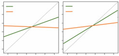
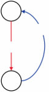
图12.1
摊销后验推理。(a) P(x, z)是一个生成模型，产生潜在变量z和给定z的数据x。Q[λ,x](z)是一个推理网络，由λ参数化，将可观测数据映射到潜在变量的后验分布。(b) 推理网络。(c) 当提供的概率是可信的时，人类在贝叶斯推理方面表现更好（重绘自Cohen等人，2017）。在具有少量隐藏单元的识别网络中出现相同模式（重绘自Dasgupta, Smith, Schulz, Tenenbaum, & Gershman, 2018）。图改编自Dasgupta和Gershman（2021）。
表示近似后验的函数为Q。注意，这个估计包含来自真实P的两个误差源——后验初始近似中固有的误差（P → Q，称为近似误差）和来自不完美推理网络的误差（Q → Q，摊销误差）。
为了使这更具体，我们在变分近似的背景下讨论摊销。如第6章所讨论的，真实后验P(z|x)的变分近似Q[λ](z)（其中λ是分布的参数）可以通过最大化证据下界(ELBO)来推导。最大化ELBO等价于最小化Q[λ](z)和P(z|x)之间的Kullback-Leibler (KL)散度。对于标准变分推理，这是针对给定的x计算的，即针对给定的观测数据集。当我们观测到新数据x时，我们必须从头重新计算Q。摊销的关键概念飞跃是
分摊这种计算的优势是，我们可以学习一个Q[λ][,][x][(]z[)]函数，它是x的函数。我们可以通过学习一个从x映射到某些参数的函数来实现这一点，这些参数唯一标识Q˜（例如，高斯分布的均值和方差；见图12.1）。参数[λ]被优化以最小化KL散度（或在实际应用中，最大化ELBO）
在x分布的期望下：
E[P][(][x][)] D[KL] [(] ˜ Q[λ][,][x][(]z[)]||P[(]z|x[))] , [(12.18)]
其中x来自某个查询分布p[(]x[)]。这种优化很容易通过梯度下降来完成（数学细节见Ranganath, Gerrish, & Blei, 2014）。
人类实际上会分摊推理的证据来自于研究分摊的一个核心预测——过去的推理会通过将自身印刻到识别网络的参数上来影响未来的推理。由于我们在查询分布的期望下最小化KL散度，频繁的查询将被优先考虑，而不是不太频繁的查询，Q将更接近这些频繁查询的真实后验。在Dasgupta, Schulz, Tenenbaum和Gershman（2020）中，这被用来建模人类概率推理的发现，显示当概率是现实的且问题嵌入在可信的现实世界场景中时，人们在贝叶斯推理方面表现得更好（Evans, Handley, Over, & Perham, 2002; Cohen, Sidlowski, & Staub, 2017）。具体来说，一个在单个隐藏层中有两个隐藏单元且使用径向基激活函数的神经网络被训练为查询分布上的推理网络。查询包括先验和似然（在示例中都是伯努利参数）以及数据（来自伯努利分布的样本），这些数据被采样以产生从固定分布采样的后验。然后在相同的后验分布或不同的后验分布上测试模型，模拟可信的（先前遇到的）或不可信的（不熟悉的）后验之间的差异。该模型在可信分布上的表现明显优于不可信分布，反映了人类行为（图12.1c）。这一发现反驳了大脑依赖于对任意概率同样有效的通用推理引擎的观点，而人类分摊和重用过去推理的模型则捕捉到了这些效应。Dasgupta和Gershman（2021）中详细介绍了一系列其他可以通过分摊推理解释的人类行为发现。
推理网络在认知科学中的另一个重要应用是作为在复杂领域中实现贝叶斯推理的模型组件，否则推理会因为过于昂贵而难以处理。一个显著的例子是第18章讨论的概率编程方法。
发展神经网络与贝叶斯方法对应关系的第二条路径基于将神经网络视为概率模型，并使用贝叶斯方法来估计这些模型的参数。由于神经网络通常很大且复杂，在这种设置下执行贝叶斯推理可能具有挑战性。然而，一些用于训练神经网络的算法已经承认了贝叶斯解释。在本节中，我们首先概述神经网络的贝叶斯视角，然后讨论这与神经网络学习算法的关系，最终突出与层次贝叶斯推理的惊人联系。
神经网络可以被视为一个概率模型。例如，多层感知器指定了一个函数，可以解释为从其输入到输出概率分布的映射。定义这种映射的参数是网络的权重和偏置。使用θ表示这些参数，我们可以定义p(t[|][x], θ)为给定输入[x]时网络给目标值t的概率。训练集d包含许多(t, [x])对，训练神经网络产生的参数θ*能够最小化这个数据集上的损失函数。这个训练过程也有概率解释。
我们如何指定p(t[|][x], θ)取决于t的性质。如果t是连续的，那么我们可以假设p ( t [|] [x] , θ)是一个以网络输出y为中心、方差为σ的高斯分布：
p [(] t [|] [x] , θ[)] [=] 1 exp [{−] ( t [−] y )[2] [/ 2] σ[2] [}]. (12.19) [2] [π] σ[2]
这个表达式中受θ影响的部分是[−] ( t [−] y )[2]，所以最大化p(d[|]θ)等价于最小化t和y之间的平方误差损失（方程（12.3））。如果t是离散的，那么使用交叉熵损失是合理的，我们通过[−] log p(t[|][x], θ)来评分网络对每个输出的预测。最小化这个损失等价于最大化似然p(d[|]θ)。考虑到训练神经网络的传统方法与最大似然估计之间的对应关系，自然会考虑神经网络学习的贝叶斯方法。
在这种情况下，贝叶斯方法需要在神经网络的参数上定义一个先验分布p(θ)。这隐含地定义了函数上的先验分布
神经网络所表示的参数。贝叶斯推断涉及计算后验分布 p(θ[|]d) 或找到 θ 的最大后验(MAP)值，而不是最大似然估计。我们可以想象定义这样先验的许多方式，但最简单的方法是假设神经网络的权重和偏置从均值为零、方差为 σ[w] 的高斯分布中抽取。
实际计算神经网络权重上的后验分布可能极其昂贵，因为神经网络通常具有非常大量的权重，我们无法依赖共轭先验或其他用于使贝叶斯推断易处理的技巧。然而，有一个有趣的情况，增加神经网络的规模实际上是有益的：Neal (1993) 表明，在无限多隐藏单元的极限下，贝叶斯多层感知器变成具有由隐藏单元激活函数定义的特定核的高斯过程(Gaussian process)(参见第9章对高斯过程的更详细讨论)。神经网络和非参数贝叶斯统计之间的这种深层联系使得可以使用受神经网络启发的模型，但保留概率模型的理想特征，例如能够在其预测中表达各种程度的不确定性。
虽然对神经网络进行完整的贝叶斯推断通常是不可行的，但找到 θ 的MAP估计的近似可能相对简单。事实上，已经表明训练神经网络的现有算法对应于在特定先验分布下的MAP推断。
考虑第12.3.1节中提到的神经网络权重上的高斯先验。使用这个先验，我们可以重新审视我们用来介绍梯度下降算法的简单单层网络。在这种情况下，网络的参数只是权重矩阵 [W]。为了执行贝叶斯推断，我们需要定义似然 p(d[|][W]) 和先验 p([W])。如果我们关注单个观测，其目标输出集合为 ti，我们的似然是
p [t]
p 1 [2] [2] ( d [|] [W] ) [=] exp [{-] ( t i [-] y i ) / 2 σ[}] (12.20) [t] [2] 2 σ [t] [] [] [∝] 1 [2] [] exp
[-] (ti [-] yi) . (12.21) [2] 2 σ [t] i
[308] [T.] [L.] [Griffiths,] [I.] [Dasgupta,] [and] [E.] [Grant]
假设每个 w [ji] 都有均值为零的高斯先验，我们有
p 1 [2] [2] ( [W] ) [=] exp [{-] w / 2 σ [}] [2] [ji] 2 σ [w] [w] [ij] [⎧] [⎫] [⎨] [] [⎬]
[∝] 1 [2] exp [-] w . (12.22) [ji] [2] 2 [⎩] σ [w] [ij] [⎭]
后验概率 p([W][|]d) 与 p(d[|][W])p([W]) 成正比。由于我们只关心最大化 p([W][|]d)，我们可以关注对数后验概率，即 log p([W][|]d) =
log p(d[|][W]) + log p([W])。取表达式(12.21和12.22)的对数并求和，我们有
log 1 1 [2] [2] p ( [W] [|] d ) [= -] [-] ( t i [-] y i ) [-] w [+] C, (12.23) [2] [2] [ji] 2 σ 2 σ [t] [w] i [ij]
其中 C 是不依赖于 [W] 的常数。将其乘以标量不会改变 [W] 的最优值，因此我们可以乘以 2σ[t][2] 并改变符号得到
arg [2] σ [2] [t] max log p ( [W] [|] d ) [=] arg min ( i [-] y ) [+] [w] [W] [2] t i w (12.24) [ji] , [2] σ i [w] [ij]
其中右侧的第一项很容易识别为等式(12.3)中的 [L]([W])。
与前面章节的结果一致，MAP解因此可以解释为向为最大似然估计优化的函数添加另一个正则化项。
对等式(12.24)关于 w[ji] 求导得到 [d] [L] σ[t][2] + 2 w[ji]。如果我们应用梯度下降算法，权重更新规则变为 [dw] [ji] σ[w][2]
w[ji][[[]]] = w[ji] - η [d] [L] σ[t][2] + 2 w[ji] (12.25) [dw] [ji] σ[w][2]
= σ[t][2] d[L] w[ji] 1 - 2 η - η . (12.26) [2] σ dw [w] [ji]
右侧的第二项只是梯度下降的标准权重更新。该算法的贝叶斯版本引入了第一项，它在每次权重更新时将 w[ji] 向零收缩。
这种在每次权重更新时减少 w[ji] 的想法在神经网络研究社区中被独立开发，在那里它被称为权重衰减(weight decay)(Hanson & Pratt, 1988)。它有助于防止权重在训练期间变得过大，隐含地具有与假设这些权重上的高斯先验相同的效果。权重衰减易于实现，并在允许梯度下降收敛到损失的局部最小值的相同条件下收敛到后验的局部最大值。
选择权重衰减等正则化器是设置神经网络模型时必须做出的许多选择之一——我们还必须决定神经网络
[贝叶斯] [模型] [和] [神经] [网络] [[309]]
架构(例如多少层、多少隐藏单元以及使用什么激活函数)、学习算法的超参数(例如学习率及其修改的调度)以及初始化模型参数的方案。令人惊讶的是，我们可以表明这些选择中的许多都可以从隐含的角度来解释
明确定义不同先验的方法。其中一个选择是用于优化神经网络模型参数的梯度下降步数。可以证明，在t步提前停止优化，在特殊情况下等同于完全优化一个正则化损失，其中正则化惩罚按1/t比例缩放（Santos, 1996; Ali, Kolter, & Tibshirani, 2019）；换句话说，正则化惩罚随着梯度下降迭代次数的增加而减小。如同权重衰减一样，正则化器可以被视为神经网络权重上的隐式高斯先验，这里方差与训练迭代次数t成正比。
用于训练深度神经网络的现代算法也被认为与贝叶斯推理有联系。例如，dropout算法（Srivastava, Hinton, Krizhevsky, Sutskever, & Salakhutdinov, 2014），其中权重的一个子集不包含在每次权重更新中，已被连接到在参数θ上有分布的想法，在某些情况下，这个分布可以被证明与贝叶斯后验对齐（Gal & Ghahramani, 2016）。甚至随机梯度下降算法本身也被描述为执行近似贝叶斯推理（Mandt, Hoffman, & Blei, 2017）。
第12.3.2节介绍了由算法选择产生的隐式先验的概念，比如正则化器的形式或提前停止迭代。这些先验表达了对权重接近零或接近初始状态的模型的相对简单偏好。然而，在某些设置中，我们希望模型的先验分布本身依赖于数据。其中一个例子是元学习(meta-learning)的设置，其中学习者不是面对单一任务，如学习特定概念，而是面对许多具有相似特征的任务（Schmidhuber, 1987; Thrun & Pratt, 2012）。这种设置中的理想学习者利用这些任务之间的共性，不仅在解决每个单独任务时变得更好，而且能够更好、更快地解决未来的任务，有效地”学会学习”。
我们可以考虑在之前的单层神经网络背景下实现元学习器的直接方法。回想一下，该模型有一个权重矩阵[W]，我们通过采取步骤来解决问题min[W] [L]([W]) 来调整它，其中[L]([W])是损失函数，如方程(12.3)中的损失函数。元学习设置捕获了我们有多个损失L , [L][2], . . .需要同时最小化的情况：
[min []] [L] ( [W] ) [=] min L([W]). (12.27) [W] [W] i
这些单独的损失可能例如代表在子组内比跨子组更相似的数据子组上的损失，或对应于不同类型任务的损失。元学习算法不是对所有损失使用单一的权重集[W]——在我们的例子中，这将对应于所有损失的单一网络——而是允许每个损失L有单独的权重集W，并通过全局参数θ关联权重W。使用这种参数化，目标变成
min [L](θ) [=] min L(W(θ)). (12.28) [θ] [θ] i
方程(12.28)中的每组权重W不是像第12.1节中那样单独学习的，而是以某种方式从全局参数θ推导出来的；这种设置允许各个模型的权重W适应每个损失，同时通过它们对全局参数θ的依赖来捕获在损失间冗余的信息。
各个模型权重W与全局参数θ关联的方式有多种。设置元学习算法的一种简单方法是将θ作为在每个单独损失上用梯度下降优化[W] i的权重初始化（Finn, Abbeel, & Levine, 2017）。由于梯度下降算法相对于其参数初始化是可微分的，我们可以将整个过程视为一个计算图，在其中我们将对应于每个损失L的最终值的误差一直反向传播到参数初始化。如果我们将每个W的优化截断为固定数量的梯度下降步骤，这个元学习目标就采用了简单形式；
在一步的情况下(t [=] 1)，我们可以写成
min [L](θ) [=] min L θ [−] η , (12.29) [θ] dL
[θ] dθ i
这意味着对于每个损失[L] i，我们评估权重[W] i [=] θ [−] η [d][L]i / [d] [θ]的损失，并使用这个来调整θ，就像在第12.1节中使用反向传播和梯度下降一样。
在某些条件下，这个元学习算法中提前停止的效果——在权重W中使用固定且较小数量的梯度下降步骤——与第12.3.2节中的相同，即它对应于权重W上方差与t成正比的高斯先验。然而，与前一节相比，这个先验的均值在初始化参数θ处。这里给出的元学习目标因此学习了可用于新数据集上MAP推理的权重W上高斯先验的均值（Grant, Finn, Levine, Darrell, & Griffiths, 2018）；图12.2可视化了这个视角。
通过这种方式通过元学习估计先验参数是分层贝叶斯(hierarchical Bayes)的一个实例
层次贝叶斯模型(hierarchical Bayes)（见第8章）。贝叶斯推理表明学习者应该如何将数据与假设的先验分布相整合，而层次贝叶斯模型则学习这种先验分布。这一思想在认知的贝叶斯模型中得到了广泛应用，正如我们在本书中考虑的例子所示。例如，层次贝叶斯可以用于学习词汇倾向于标记的对象属性（如形状），同时学习单个词汇的含义(Kemp, Perfors, & Tenenbaum, 2007)，以及在学习因果关系的同时识别不同类型的因果关系(Mansinghka, Kemp, Tenenbaum, & Griffiths, 2006)。
层次贝叶斯模型在认知科学中得到了广泛应用，但所涉及的计算成本可能使其难以用于特定类别之外的模型（例如，共轭性适用的情况；见第3章）。因此，建立层次贝叶斯与元学习(meta-learning)之间的联系——元学习可以为具有连续参数化的各种模型（如神经网络）高效实现——可能会扩展贝叶斯建模的范围。例如，McCoy, Grant, Smolensky, Griffiths和Linzen (2020)证明了本章描述的元学习算法可以用于创建具有隐式先验分布的神经网络，使其容易从简化的语言类型学中学习语言；这可以被视为向支持语言学习的”普遍语法”(universal grammar)神经网络实例化迈出的一步（见图12.3）。
贝叶斯模型和神经网络 311
W 1
dL y 1 d θ W 1 d L 1
dW 1
θ x 2
θ θ W d L 2 2
d dW L 2 3 y 2 dW 3
W 2 x 3
W 3 W 3
y 3
图12.2
元学习和层次贝叶斯。(a) Finn等人(2017)的基于梯度的元学习算法通过L优化一组模型的参数θ，使得当从θ的初始化开始使用损失Li进行一步或几步梯度下降时，每个模型获得新的权重Wi，在与该损失相关的样本xi，yi上产生良好的泛化性能。(b) 算法(a)为其提供参数估计程序的概率图模型(Grant等，2018)。每个任务特定的权重集Wi彼此不同，但通过所有Wi共享的先验θ的参数影响彼此的估计。图改编自Griffiths等人(2019)。
深度学习的研究继续快速发展，在摊销推理(amortized inference)、贝叶斯神经网络和元学习方面还有许多进一步的创新尚未被认知科学吸收。所有这些主题都为开发认知的概率模型以及理解人类心智和大脑如何处理贝叶斯推理的计算挑战提供了肥沃的创新土壤。
新型神经网络方法的发展也提供了推动这些模型能够捕获的推理类型极限的机会。基于记忆的元学习(memory-based meta-learning)是一种最新方法，其中用于顺序更新神经网络状态的算法直接从数据中学习。使用这种方法，元学习智能体可以解决传统上使用结构化概率模型解决的问题，包括贝叶斯推理(Mikulik等，2020)、基于模型的强化学习(Wang等，2016)和因果学习(Dasgupta等，2019)。这些模型是完全摊销的，因此在运行时非常高效，并且能够很好地适应
312 T. L. Griffiths, I. Dasgupta, 和 E. Grant

语言3 元学习参数
语言2
元学习轨迹
语言4 可能的语言
语言1
元学习找到一个参数初始化，模型可以从中习得类型学中的任何语言。
所有新音素 长度5 蕴含普遍性
100%
ac 50% ur y 75%
cc 25%
A 0%
用元学习初始化 随机初始化 用元学习初始化 随机初始化 用元学习初始化 随机初始化
用元学习初始化的模型可以习得训练集中未出现的语言特征，而随机初始化的模型无法做到，这表明元学习为学习类型学中的语言施加了一种普遍的归纳偏置(inductive bias)。
图12.3
环境很难用显式结构化模型来表达。然而，这些模型也继承了神经网络的普遍问题——它们需要大量数据来学习，且泛化能力较差。评估这些模型的能力和局限性是未来工作的重要主题（关于这个方向的初步步骤，见Kumar, Dasgupta, Cohen, Daw, & Griffiths, 2021）。
除了由神经网络进行贝叶斯推理和针对神经网络进行贝叶斯推理之外，另一个富有成效的探索方向是将贝叶斯推理作为神经网络的模型。随着深度学习模型复杂性的不断增加，理解这些模型背后的隐含假设变得越来越困难。我们在12.3节中对神经网络归纳偏见的分析依赖于对模型结构和损失函数形式的简化假设，这是由于分析即使是具有一个隐藏层的简单神经网络的复杂性所致。这提出了以下可能性：人工神经网络本身是否足够复杂，以至于我们可以构建它们的认知模型来帮助我们理解它们？Li, Grant和Griffiths（2021）通过使用之前用于研究人类函数学习中归纳偏见的贝叶斯模型（Wilson, Dann, Lucas, & Xing, 2015）来解释和预测神经网络模型的归纳偏见，探索了这一观点。
我们认为概率模型和神经网络并非理解人类认知的竞争框架，而是提供互补洞察的工具，可用于逆向工程大脑。这两种方法处于不同的分析层次，具有不同的优势和劣势：概率模型为抽象地描述人类归纳偏见提供了强大的工具集，特别是在那些归纳偏见可以用结构化表示简洁表达的情况下；神经网络是一个灵活的框架，用于理解如何从数据中学习贝叶斯推理的高效近似，通常使得能够处理超出概率模型当前局限性的规模问题。这两种方法共同提供了一个工具包，用于构建能够处理关于人类认知的广泛问题的模型。
Falk Lieder, Fred Callaway, and Thomas L. Griffiths
如第2章所述，理性分析(rational analysis)（Anderson, 1990）从大脑最优适应人们的目标和环境结构这一假设出发，推导出人类行为的预测。在推导这些预测时，理性分析对大脑的计算限制做出最小假设。然而，从Herbert Simon（1956）的奠基性工作开始，关于有限理性(bounded rationality)的大量研究表明，人们的计算限制远非最小，并对人类推理和决策施加了实质性约束。这限制了理性分析在人们的认知资源足以准确近似最优行为的现象中的适用性。当这些假设不成立时，理性分析可能会将次优推理和决策合理化为在关于环境结构的假设条件下对假设目标的最优追求，而实际上这些错误是人们认知限制的结果。
资源理性分析(Resource-rational analysis)是理性分析的扩展，更认真地对待人们有限的认知资源（Griffiths, Lieder, & Goodman, 2015; Lieder & Griffiths, 2020）。虽然理性分析努力仅从人们的目标和环境结构预测人类行为，但资源理性分析通过考虑人们可用于追求目标的认知架构来努力发现认知机制和表征。理性分析从经典理性理论中推导其预测，这些理论有效地假设理性代理具有无限的计算能力，如期望效用理论(expected utility theory)（Neumann & Morgenstern, 1944）和概率理论。相比之下，资源理性分析依赖于更现实的理性概念，该概念考虑到真实的人必须有效利用他们有限的时间和有限的认知资源（Russell & Subramanian, 1994; Horvitz, 1987）。
资源理性分析从理性过程模型中演化而来
理性过程模型假设这是通过一种算法来实现的，该算法随着时间和计算量的增加而收敛到最优推理或决策。这一假设为人类认知建模提供了一些有用的指导，但仍然存在无穷多种方式来近似最优推理和决策。相比之下，资源理性分析(resource-rational analysis)导出了在给定时间和计算约束下唯一最有效的近似策略。
在本章中，我们总结了资源理性分析背后的关键思想，并提供了一些如何用它来逆向工程心智的例子。我们首先考虑理性主体应该如何最好地利用其有限的认知资源，将这种方法与理性行为的其他概念联系起来。然后我们使用这个形式化方法来定义资源理性分析，并展示两个例子，说明如何使用这种方法来理解那些看似非理性的行为：锚定效应(anchoring effects)和极端事件的过度表征。这些例子说明了心理学家之前发现的启发式如何从资源理性分析的角度来理解。
然后我们转向一个更深刻的问题：如何在这个框架内导出有效的启发式。通过认识到认知策略的构建可以表达为一个序列决策问题，我们借鉴了第7章介绍的规划和强化学习文献中的工具来解决这个问题。我们在简单选择和规划的背景下说明了这种方法。
关于人类判断和决策的研究已经证实，人们不符合逻辑、概率论和期望效用理论的规范，而这些正是理性分析的基础（例如，Tversky & Kahneman, 1974; Wason, 1968; Kahneman & Tversky, 1979）。大脑有限的计算能力限制了人们达到这些规范标准的能力。由于这种有界理性(bounded rationality)，最大化期望效用、按照逻辑定律推理和按照概率定律处理不确定性的理想对人们来说是不可达到的。
那么，鉴于心智的计算资源有限，它应该如何处理信息呢？这个问题不仅与理解人类心智相关，而且与人工智能(AI)的创造相关。因此，我们可以运用AI研究人员在设计智能有界主体方面获得的一般见解，来理解一类特殊智能主体”人类”的设计。特别是，我们可以使用有界最优性(bounded optimality)理论（Russell & Subramanian, 1994; Horvitz, 1987）。有界最优性的数学框架被开发为设计最优主体的理论基础，这些主体运行在性能受限的硬件上，必须与环境实时交互。如果一个程序在主体的性能受限硬件上运行时产生的决策所导致的世界状态的期望效用至少与主体硬件能够执行的任何其他程序一样高，那么该程序就是有界最优的。因此，有界最优程序由以下公式给出：
program* = arg max E[s₁:t | e, at = program(o₁:t, a₁:t₋₁)] [u(s₁:t)] program∈P_HW
其中s₁:t = (s₁, s₂, ···, st)是环境e在主体整个生命周期中所处的状态序列，u表示主体被设计用来优化的效用函数，表明状态序列的好坏程度。期望算子E的下标表明状态序列依赖于环境e和主体的行动at。主体使用一个程序来选择其行动，该程序的输出依赖于主体的完整生活经验（以考虑学习），形式化为对状态的噪声观察序列o₁:t，以及主体过去的行动a₁:t₋₁。最后，P_HW是主体硬件能够执行的程序集合。这种限制是有界最优性与完美最优性的区别所在。
通过解决方程(13.1)中定义的最优程序问题，有时可能导出最优算法。例如，Russell和Subramanian (1994)导出了一个最优邮件分拣程序。这表明了一个有趣的可能性，即也许可能为人们导出最优认知策略。应用于人类理性的特殊情况，有界最优性原则表明，理性就是根据表现得与人们可以使用的任何其他策略一样好或更好的认知策略进行推理和决策。这个新的人类推理和决策规范标准正是我们在资源理性分析中采用的标准（Griffiths et al., 2015; Lieder & Griffiths, 2020）。
资源理性分析从无限集合的有界理性心智中识别出最好的生物学可行心智。我们可以通过将有界最优性的定义（方程13.1）应用于人类心智来形式化这个想法。类似于有界最优程序的定义，我们可以为拥有
关于效用函数 u 的
m[**] [=] arg max E[s][1:][t] [|][e][,][a][t][=][m][(][o][1:][t][,][a][1:][t] −[)] [u[(]s[1:][t] [)]] , [(13.2)]
[m][∈][M] [B][rain]
其中 a [1:][t] 是具有心智 m 的人在环境 e 中会做出的选择，u 衡量他们的表现如何，[M] [B][rain] 是在大脑生物物理约束条件下生物学上可行的心智集合。这个方程与方程 (13.1) 完全相同，除了硬件是大脑而不是计算机，程序是心智。
生物学上可行的心智 [M][B][rain] 固有的认知局限包括有限的基本操作集合（例如，计数和记忆回忆是可用的，但精确的贝叶斯推理不可用），有限的处理速度（每个操作需要一定的时间），以及潜在的其他约束，比如有限的工作记忆。关键的是，当心智 m 进行思考时，世界状态 s[t] 在不断变化。因此，为了表现良好，[**] 有界最优心智 m 不仅必须产生良好的决策，还必须快速产生决策。由于每个认知操作都需要一定的时间，这意味着有界最优性通常需要计算上的节俭。
不幸的是，计算由方程 (13.2) 定义的资源理性心智可能是难以处理的，因为它需要在整个生命周期内进行优化。为了提供一个更易处理的定义，可以用来推导关于一个人应该使用哪种启发式 h 来做出特定决策或推理的预测，假设生活可以分为一系列情节，每个情节都以状态 s[0] [=] [(]w[0], b[0] [)] 开始，该状态包括外部世界的未知状态 w[0] 和人的内部信念状态 b[0]。此外，让 result[(]s[0], h[)] 表示在初始状态 s [0] 中应用启发式 h 产生的判断、决策或信念更新。在这种设置中，我们可以将应用特定策略的价值分解为其终止状态的效用 u[(]s[⊥][)] 和其执行的计算成本。后者至关重要，因为一个人在任何一个决策或推理（当前情节）上花费的时间和认知资源占用了他们在其他决策和推理（未来情节）上的预算。为了捕捉这一点，让随机变量 cost(t[h], ρ, λ) 表示投资认知资源 ρ 的总机会成本，这些资源被启发式 h 在其执行持续时间 t[h] 内使用或阻塞，当智能体的每单位认知资源和每单位时间的认知机会成本是 [**] λ 时。在这种设置中，我们可以将特定大脑在信念状态 b[0] 中使用的资源理性启发式 h 定义为
h[**](b[0] , Brain, e) [=] arg max E[result][|][s] [0][,][h][,][e] [u (result)] [−] E[t][h][,][ρ][,][λ][|][h][,][s][0][,B][rain][,][e] [cost(t[h] , ρ, λ)] ,
[h][∈][H][B][rain]
(13.3)
其中 [H][B][rain] 是大脑可以执行的启发式集合。大脑可以执行哪些启发式受到可用基本操作和启发式表示的内存约束的限制。此外，启发式的表示必须是基本操作的序列。
思考的成本是机会成本。具体而言，它是智能体通过将执行启发式所需的时间和认知资源投资于其他追求而本可以获得的总效用。形式上，这个机会成本可以定义为 []] [t][h]
cost(d, ρ, λ) [=] ρ(t) [·] λ(t) dt. (13.4)
[0]
为简单起见，我们可以假设启发式的认知需求 ρ 和智能体的机会成本 λ 在启发式 h 执行时大致恒定。在这种情况下，思考成本可以近似为 cost(t[h], ρ, λ) [=] t[h] [·] ρ [·] λ。为了进一步简化这个分析，ρ [·] λ 可以用智能体在环境 e 中的奖励率来近似；这对应于以下假设：(1) 智能体不能多任务处理，(2) 当前奖励率是智能体时间价值的准确估计。简而言之，关键假设是人们的认知机制应该以适应性的、接近最优的方式在准确性和机会成本之间进行权衡。
与有界最优性相关的概念以前在心理学中已经提出（综述见 Gershman, Horvitz, & Tenenbaum, 2015）。最突出的是，Lewis、Howes 及其同事论证了在理性分析中考虑约束的重要性（Howes, Lewis, & Vera, 2009），并将这一想法与有界最优性联系起来（Lewis, Howes, & Singh, 2014）。他们引入了一个称为 计算理性(computational rationality) 的框架，专注于识别有界智能体执行的最优程序，并强调了这种方法产生 生态-有界-最优(ecological-bounded-optimal) 行为解释的潜力，其中环境和计算约束都被考虑在内。我们在资源理性分析中使用的理性定义在三个重要方面与这个框架不同：首先，它明确捕捉了将策略 h 应用于当前问题所产生的时间和计算的机会成本，这是以牺牲智能体同时或在未来解决其他问题的能力为代价的。其次，它根据人的信念状态对环境可能处于的状态进行加权
(b [0]) 而不是它们在环境中的总体频率。这解释了人们根据对环境状态的不完美知识，针对个别问题调整认知策略的能力 (Payne, Bettman, & Johnson, 1993)。第三，效用函数允许依赖于根据 [资源理性] [分析] [[319]]
h 进行推理后产生的信念状态 b [⊥]。这捕捉了当前情节中计算产生的信念更新对未来情节中决策制定的潜在益处。
资源理性分析与经典理性概念存在三个主要区别，经典理性概念规定人们应该根据逻辑和概率论定律进行推理，并根据期望效用理论选择行动：第一，它通过推理对后续决策的效用来评估推理，而不是通过其形式正确性——这是一种实用主义形式。第二，它考虑了时间成本和人们认知资源的有限性。第三，理性行动是相对于环境中问题的分布来定义的，而不是相对于一套任意的实验室任务。可以说，所有这三个变化对于获得一个规范的、但又现实的人类理性理论都是必要的。
与决策理论和贝叶斯解释不同，问题的资源理性解决方案不是通过人们行动的质量或其信念的真实性或连贯性来定义的，而是根据潜在的认知策略来定义的。与逻辑和概率论不同，它衡量这些策略的质量不是通过它们对保持真理或连贯性规则的坚持，而是通过它们对人们行动及其后果的实际影响。
用心理学术语来表达经典理性和资源理性分析之间的区别，经典理性本质上是理性行动的行为主义特征。也就是说，它根据代理人环境提出的问题规定代理人应该采取的最优行动：它对代理人的心理状态毫无说明。相比之下，资源理性分析采用认知方法来定义理性行动：它强调理性代理人应该执行的认知操作，从而产生指导行动的信念。对于有兴趣分析具有有限时间和计算资源的代理人行动的研究者，特别是想要回答关于这些代理人心理状态问题的研究者，资源理性分析提供了一种更有效的定义理性行动的方法。
Herbert Simon 著名地论证，要理解人们的认知策略，必须同时考虑他们的认知约束和环境结构 (1956, 1982)。通过专注于环境结构同时淡化计算限制的作用，Anderson (1990) 的理性分析只实现了 Simon 理解有界理性愿景的一半。这是一个合理的妥协，因为有正式工具可以推导无界代理人的最优行为，但没有等同的工具可以推导有界代理人的最优认知策略。但第13.1节介绍的思想使我们能够超越无界最优性的简化假设，并推导出更现实的人类推理和决策制定模型。
资源理性分析通过修改理性分析的最优性假设来实现这一点，考虑到人们只能以有限的速度执行某些代价高昂的认知操作 (Griffiths et al., 2015)。资源理性分析是一个四步方法论（见图13.1），它使用这里介绍的理论思想从认知能力功能的正式定义和关于心智计算架构的假设中推导出过程模型。这种功能优先的方法从计算层面的分析开始 (Marr, 1982)。当认知能力解决的问题 [320] [F.] [Lieder,] [F.] [Callaway] [and] [T.] [L.] [Griffiths]
从认知某个方面的计算层面（即功能）描述开始，将其表述为一个问题及其解决方案。
假设一类用于近似解决这个问题的算法，这些算法使用的计算资源成本，以及更准确地近似正确解决方案的效用。
在这个类别中找到最优权衡资源和近似准确性的算法（方程13.3）。
通过修订模型、算法或成本（步骤1、2或3）来完善，或者进入下一层级：近似步骤2中的算法以捕捉进一步的资源约束。
图13.1
资源理性分析的四个步骤。
一旦研究中的认知能力已经被形式化，资源理性分析假设一个抽象的计算架构，即心智可能用来解决这个问题的一套基本操作及其成本。接下来，资源理性分析推导出在计算层面识别的问题用抽象计算架构解决的最优算法（方程13.3）。由此产生的过程模型用于预测人们在给定实验中的反应和反应时间，这些预测被
然后根据经验数据进行测试。基于这种评估，对计算架构和要解决问题的假设进行修订，分析循环重复进行。假设认知架构的迭代改进从抽象的最小假设开始，逐渐发展为对底层神经认知架构越来越现实的模型（见图13.2）。通过这种方式，资源理性分析可以用来连接Marr（1982）的计算层次和算法层次。
通过明确假定一类可能的算法以及这些算法使用资源的成本，我们可以调用最优性原则来推导出大脑应该使用的算法。这使得资源理性分析成为一种分析信息处理系统的方法论，处于由理想化的计算机制族定义的中间层次，该族对应于特定的计算架构。这种方法使我们不仅能够逆向工程系统解决的问题（计算层次分析），还能逆向工程系统的计算架构。
为了识别潜在认知策略族和相应的认知架构（步骤2），资源理性分析借鉴了计算科学的先前研究。具体来说，以精确数学术语表述要解决的问题，使我们能够挖掘人工智能、机器学习、运筹学以及计算机科学和统计学其他领域的文献，寻找已开发用于高效解决此类问题的算法类别。这样的文献搜索通常会产生一个或多个参数化算法族。算法参数的不同设置往往产生质量不同的行为和不同的速度-准确性权衡。例如，粒子滤波是一种通用方法，可以产生在粒子数量、重采样标准和其他元素方面变化的特定算法（Abbott & Griffiths, 2011）。这导致了无限的算法集合，其中一些具有质量不同的属性（例如，一个粒子与数百万个粒子）。步骤2和3使我们能够在这个算法空间中找到合理的点，然后可以与人类行为进行比较。
计算层次
问题 | 最优解 | 无界理性
理性过程模型
理想化计算架构 | 理想化过程模型 | 资源理性
更现实的计算架构 | 更现实的过程模型 | 资源理性
算法层次
实际认知资源 | 实际认知过程 | 资源理性
图13.2 资源理性分析如何连接分析层次的示意图。图片经Griffiths等人（2015）许可转载。
在进化、发展和学习已经适应系统以最优利用其有限计算资源的程度上，资源理性分析可以用来从计算架构的假设中推导出系统的算法。
资源理性分析是一种新的认知建模范式，可以应用于人类认知的所有方面（Lieder & Griffiths, 2020），包括决策、推理、记忆、感知、判断、规划、学习和问题解决。在接下来的两个部分中，我们将呈现两个案例研究，说明资源理性分析方法论在数值估计和决策制定领域的应用。
我们的第一个案例研究突出了资源理性分析的四个步骤（如图13.1所示），调查了在数值估计中产生锚定偏见(anchoring bias)的计算机制（Lieder, Griffiths, Huys, & Goodman, 2018b）。这是一种现象，当人们首先被问及某个数量是高于还是低于某个任意值时，他们随后的估计会系统性地偏向于他们之前比较过的任意值。例如，人们可能被要求估计密西西比河的长度，首先将其与50英里或10,000英里进行比较。被要求将密西西比河长度与50英里比较的人，随后估计的长度会比被要求将其长度与10,000英里比较的参与者估计的更短。
简而言之，这个资源理性分析的第一步是定义数值估计解决的问题。第二步是假定大脑可能采用哪种计算架构来解决这个问题。第三步是推导出计算架构所提供的数值估计问题的最优解。第四步是根据人们在各种实验条件下对数值量的估计来评估结果预测。
在数值估计中，人们必须基于他们的知识K对未知量X做出明智的猜测。一般来说，人们的相关知识K是不完整的，不足以确定地确定量X。例如，被要求估计珠穆朗玛峰上水的沸点的人们
通常不知道其确切值，但他们确实知道相关信息，比如在正常海拔的水的沸点、水的冰点、海拔、气压和沸点之间的定性关系，以及其他统计数据。我们通过概率分布 p[(]X|[K][)] 来形式化人们对 X 的不确定信念，该分布为每个潜在值 x 分配一个合理性 p[(]X = x|[K][)]。根据贝叶斯决策理论，目标是报告具有最高期望效用的估计 ˆ x，即 E[p][(][x][|][K][)][u[(]x ˆ, x[)]]。这等价于找到具有最低期望误差成本的估计：
x[**] = arg min E [cost x ˆ, [x] [ˆ] [p][(][x][|][K][)] [(] x[)]], (13.5)
其中 [**] x 是最优估计，cost[(]ˆ x, x[)] 是当真实值为 x 时估计 ˆ x 的误差成本。
心智应该如何解决数值估计问题（见方程 (13.5)）取决于其计算架构。因此，为了通过资源理性分析得出预测，必须明确心智的基本操作及其成本。为此，Lieder 等人 (2018b) 基于第 11 章回顾的模型，这些模型假设心智的基本计算是采样 (sampling)。
采样随机模拟事件的结果或数量的值，使得平均而言，每个值出现的相对频率等于其概率。根据 Vul、Goodman、Griffiths 和 Tenenbaum (2014) 的观点，人们可能仅使用从表达其信念的主观概率分布 P[(]X|K[)] 中的单个样本来估计未知数量 X 的值。然而，对于人们在日常生活中面临的复杂推理问题，即使生成单个完美样本在计算上也可能是难以处理的。因此，虽然采样是从基于概率推理的计算级理论向认知机制迈出的第一步，但需要更详细的过程模型来解释简单的认知机制如何解决日常认知的复杂推理问题。Lieder 等人 (2018b) 探索了一个更细粒度的心理计算模型，其基本操作用于近似从后验分布中采样。
在统计学、机器学习和人工智能中，采样通常通过马尔可夫链蒙特卡洛 (Markov chain Monte Carlo, MCMC) 方法来近似（Gilks, Richardson, & Spiegelhalter, 1996）。如第 6 章所讨论的，MCMC 算法允许从任意复杂的分布中抽取[资源理性] [分析] [[323]]
[q][(][x ][ˆ 500) ]
[概率 ]
[ts] [p][(][x][|][k][) ]
[500 ]
[en]
[m]
[st]
[ju]
[d]
[ A]
[r.]
[N] [250 ]
[p ][prop ]
[0 ]
[低锚点 ] [中等锚点 ] [高锚点 ]
图13.3
通过Metropolis-Hastings算法进行资源理性锚定与调整。三条锯齿线是调整过程可能产生的随机估计序列示例，分别从低、中等和高锚点开始。在每次迭代中，从由钟形曲线表示的提议分布 p[prop] 中采样一个潜在调整。每个提议的调整被随机接受或拒绝，使得随着时间推移，考虑不同估计的相对频率 q[(][ˆ] [x][t][)] 变成目标分布 p[(][x][|][K][)]。图的顶部比较了在调整的后半部分收集的样本的经验分布与目标分布 p[(][x][|][K][)]。重要的是，这个分布对于三个序列中的每一个都是相同的。实际上，它与锚点无关，因为随着调整次数的增加，锚点的影响会消失。然而，当调整次数较少时（例如，25次），估计仍然偏向于其初始值。最优迭代次数 i 非常低，如虚线所示。因此，由红色、黄色和红色十字表示的结果估计仍然偏向于各自的锚点。图经 Lieder 等人 (2018b) 许可转载。
样本，使用近似样本的随机序列，每个样本仅依赖于前一个样本。
Lieder 等人 (2018b) 假设心智的计算架构通过两个基本操作支持 MCMC。第一个操作接收当前估计并随机修改它以生成新的估计。第二个操作比较新估计与旧估计的后验概率，并随机接受或拒绝修改。计算成本被认为与已执行的此类操作数量成正比。这两个基本操作足以执行用于概率推理的有效 MCMC 策略，称为 Metropolis-Hastings 算法 (Hastings, 1970)。该算法（在第 6 章中有更详细的描述）是我们的锚定与调整模型的基础，如图 13.3 所示。
具体而言，给定初始猜测 x ˆ[0]，它可以被解释为锚点 a（x ˆ[0] = a），这个算法执行一系列调整。在每一步中，通过从对称概率分布中采样提出一个潜在调整 [δ]。该调整要么被
接受（即 x ˆ [t][+]1 = ˆ x[t] + [δ]），要么被拒绝（即 x ˆ[t][+]1 = ˆ x[t]）。如果提出的调整使估计更有可能（p[(]X = ˆ x[t] + [δ]|[K][) >] p[(]X = ˆ x[t]|[K][)]），那么它总是会被接受。
否则，调整将以概率 [α] [p][(][X][=ˆ] [x] [t] [+][δ][|][K][)] 进行；也就是说，根据调整后相对于未调整估计的后验概率 [p] [(] [X] [=ˆ] [x] [t] [|] [K] [)]。这种策略
确保无论从哪个初始值开始，每个值 x 被考虑的频率最终都会等于其主观正确概率（即 p[(]x|[K][)]）。这对于捕获人们的
估计分布与后验分布 p[(]x|[K][)] 非常相似这一发现是必要的（Vul et al., 2014; Griffiths & Tenenbaum, 2006）。更正式地说，随着调整次数 t 的增加，估计的分布
p[(]x ˆ[t][)] 收敛到后验分布 p[(]x|[K][)]。这种计算模型具有以下性质：每次调整都会以恒定倍数减少期望误差
的上界（Mengersen & Tweedie, 1996）。这种性质被称为几何收敛，如图13.4所示。
有几个很好的理由将这种计算架构视为数值估计领域中心理计算的模型。首先，MCMC方法在统计学、机器学习和AI中的成功表明它们非常适合
人们在日常生活中面临的复杂推理问题。其次，MCMC可以解释认知现象的重要方面，从类别学习（Sanborn et al., 2010a）到多稳态感知的时间动态（Moreno-Bote,
Knill, & Pouget, 2011; Gershman, Vul, & Tenenbaum, 2012），儿童的因果推理（Bonawitz, Denison, Gopnik, & Griffiths, 2014a），以及认知的发展变化
（Bonawitz, Denison, Griffiths, & Gopnik, 2014b）。第三，MCMC在生物学上是合理的，因为它可以在生物学上合理的尖峰神经元递归网络中高效实现（Buesing, Bill, Nessler, & Maass, 2011）。最后但同样重要的是，
基于MCMC的过程模型可能能够解释为什么人们的估计既具有高度变异性（Vul et al., 2014）又系统性偏差（Tversky & Kahneman, 1974）。
在资源合理的锚定和调整中，估计的偏差被调整次数的几何衰减函数所界定。该图显示了资源合理锚定和调整的偏差作为调整次数的函数，针对位于后验均值1,…,5个后验标准差（即σ）处的五个初始值。标准正态分布被用作后验 p[(]X[|][K][)] 和提议分布。图片经Lieder等人(2018b)许可转载。
第三步：找到资源合理策略 资源合理的锚定和调整
做出三个关键假设。首先，估计过程是一系列调整，经过足够多的步骤后，估计将是从关于未知量 X 给定知识 [K] 的信念分布中的代表性样本，p(X |[K])。其次，每次调整花费固定的时间量。第三，调整次数的选择是为了实现最优的速度-准确性权衡。因此，人们应该执行
最优的调整次数；即：
t [**] = arg min E x x ˆ + · t [p] [(] [ˆ] [x] [t] [)] cost ( , [t] ) γ, (13.6)
误差成本的期望值 cost[(]x[,] ˆ x[n][)]（绿色显示）随着调整次数 n 几乎呈几何衰减。虽然误差成本的减少随着调整次数而减少，但时间成本 γ · t（红色显示）继续以相同的速率增加。因此，当通过额外调整进一步减少期望误差成本不再抵消其时间成本时，总成本（蓝色显示）开始增加。这一点就是最优调整次数 t[**]。图片经Lieder等人(2018b)许可转载。
其中 p(x ˆ[t]) 是经过 t 次调整后估计值的分布，x 是其未知的真实值，
ˆ x[t] 是执行 t 次调整后的估计值，cost(x, x ˆ[t]) 是其误差成本，γ 是每次调整的时间成本。
图13.5说明了这一点，显示了预期误差成本——随着调整次数呈几何级数衰减——和时间成本——呈线性增长——如何确定最优的速度-准确性权衡。我们检查了当信念和提议分布都是标准正态分布（即均值为0、方差为1的高斯分布）时不同锚点的方程(13.6)的解。Lieder等人(2018b)发现，对于广泛的现实时间成本范围，最优调整次数（见图13.6a）远小于消除对锚点偏差所需的调整次数。因此，经过最优调整次数后获得的估计值仍然偏向锚点，如图13.6b所示。
这是误差几何收敛的结果（见图13.4），导致额外调整的收益递减迅速。这是一个一般性质 [326] [F.] [Lieder,] [F.] [Callaway] [and] [T.] [L.] [Griffiths]
图13.6
最优调整次数(a)和最优调整次数后的偏差(b)作为相对时间成本和距离锚点距离的函数。图片经Lieder等人(2018b)许可转载。
这个理性调整模型的一般性质可以通过数学推导得出(Lieder, Griffiths, & Goodman, 2012)。
步骤4：评估模型并完善它 资源理性锚定-调整模型的预测通过现有数据和新实验进行了评估。首先，Lieder等人(2018b)应用该模型模拟人们在先前进行的锚定实验中的判断，发现它捕获了广泛的经验现象，包括对锚点的调整不足、锚定偏差随锚点极端性增加而增加，以及不确定性和激励对偏差幅度的影响。其次，Lieder等人(2018c)设计了两个实验，专门测试模型的预测：锚定偏差应该随时间压力增加而增加，但随误差成本增加而减少。第一个实验在人们生成自己锚点的任务中证实了这一预测，第二个实验在人们的锚点由引导性问题提供的任务中证实了这一预测。
在我们的第二个案例研究中，Lieder, Griffiths, Huys和Goodman(2018a)应用资源理性分析来阐明人们如何在不确定性下做出决策。为了说明这种方法论，我们根据图13.1所示的资源理性分析的四个步骤总结他们的工作。
步骤1：计算层面分析 在资源理性分析的第一步中，Lieder等人(2018a)将决策制定的功能指定为选择行动以最大化其期望效用(expected utility)(Neumann & Morgenstern, 1944；另见第7章)。形式上，计算行动a的期望效用E [p][(][s][|][a][)] [u[(]s[)]]需要将其可能结果s的概率p[(]s[|]a[)]与其效用u[(]s[)]进行积分。与简单的实验室任务不同——每个选择只能产生少数可能的回报——许多现实生活中的决策有无限多种可能的结果。因此，行动a的期望效用变成一个积分：
E[p][(][s][|][a][)][u[(]s[)]] = p[(]s|a[)] · u[(]s[)] ds. (13.7)
在一般情况下，计算这个积分的精确值是不可行的。因此，决策者必须以某种方式对其进行近似。
步骤2：假设一类可能的算法 在资源理性分析的第二步中，Lieder等人(2018c)探讨了资源约束对不确定性下决策制定的影响。为此，他们基于人们可以从概率分布中生成样本的假设来建模决策制定的认知资源。采样方法可以为积分提供有效的近似，例如方程(13.7)中的期望效用(Hammersley & Handscomb, 1964)。
Lieder等人(2018c)然后将人们的时间和资源约束表达为样本数量的限制，其中每个样本是一个模拟结果。因此，决策者的主要认知资源是环境的概率模拟器(probabilistic simulator)。决策者可以使用这一资源来预期采取一种行动与另一种行动可能导致的许多潜在未来中的一些，但每次模拟都需要不可忽略的时间。由于时间宝贵且模拟器一次只能执行一次模拟，使用这种认知资源的成本因此与模拟次数成正比。
模拟（即样本）。
重要性采样是计算机科学和统计学中一种流行的采样算法
(Hammersley & Handscomb 1964; Geweke, 1989; 另见第6章)，它与
心理过程模型 (Shi, Griffiths, Feldman, & Sanborn, 2010; 另见第11章) 和神经网络 (Shi & Griffiths, 2009; 另见第12章) 都有联系。它通过从
重要性分布 q 中采样来估计函数相对于概率分布 p 的期望值，并通过下调在 p 下比在 q 下可能性更小的样本权重和上调在 p 下比在 q 下可能性更大的样本权重来校正 p 和 q 之间的差异。具体来说，自归一化重要性采样 (Robert
& Casella, 2009) 从分布 q 中抽取 m 个样本 x1, · · · , x[m]，用 w [j] = 对每个点 x [j] 处的函数值 [p][(][x][j][)] f [(] x [j] [)] 进行加权，然后通过权重之和对其估计进行归一化：
[q][(][x][j][)]
x p[(]x[j][)] , 1 · · · , x [m] ∼ q , w [j] = (13.8) q [(] x [j] [)]
E ˆ [IS] [p] [ f [(] x [)] ] ≈ E = · w [q] [,] [m] [m][j] · f [(]x[j][)]. (13.9) w [j] [∑] 1 [m] []
在有限样本数量下，此估计通常是有偏的。根据 Zabaras (2010)，
Lieder et al. (2018c) 通过以下方式近似其偏差和方差 []
Bias[E ] ≈ · · [(]E [f [(]x[)]] − f [(]x[))] [q] [,] [m] [p] dx (13.10) m ˆ [IS] 1 [2] p [(] x [)] q [(] x [)] ˆ 1 [2] p [(] x [)] []
[Var [IS] [2] [(] [)]] [ E ] ≈ · · f [(] x [)] − E [ x [q] [,] [m] [p] ] dx. (13.11) m q [(] x [)]
[328] [F.] [Lieder,] [F.] [Callaway] [和] [T.] [L.] [Griffiths]
Lieder et al. (2018c) 假设大脑使用类似于重要性采样的策略来近似采取行动 a 的期望效用增益 E[p][(][s][|][a][)][[**]u[(]s[)]]，并通过
a[**] [IS] [IS] ˆ = arg max [**] U [(] [)] [**] [(] [)] [q][,][m] a , U [q][,][m] a ≈ E[p][(][s][|][a][)] [[**]u[(]s[)]] (13.12)
来近似最优决策 a = arg max[a] E[p][(][s][|][a][)] [[**]u[(]s[)]]
[IS] 1 [m]
[**] U [(]a[)] = w [q] [,] [m] [m][j] · [**]u[(]s[j][)], s1, · · · , s[m] ∼ q. (13.13) w [∑] [a] []
注意重要性采样是一系列算法：每个重要性分布 q
产生不同的估计器，两个估计器可能推荐相反的决策。因此，在其资源理性分析的第三步中，Lieder et al. (2018c) 研究了
哪个分布 q 能产生最好的决策。
如果一个决策必须基于极少数的模拟结果，那么生成这些结果的最优方式是什么？形式上，智能体的目标是最大化仅从 m 个样本做出的决策的期望效用增益。
选择次优行动所损失的效用可以由理性智能体效用估计中的误差来上界。因此，智能体应该最小化其期望效用增益估计的期望平方
误差 E [[**]U ]，这是其平方偏差和方差的总和；即，E [(] [**] U − E [ [**] U ] [)] = Bias [**] U + Var [**] U (Hastie, [q] [,] [m] [q] [,] [m] [q] [,] [m] [IS] [IS] [2] [IS] [2] ˆ Tibshirani, & Friedman, 2009)。随着样本数量 m 增加，估计的平方偏差衰减比其方差快得多；见方程 (13.10)–(13.11)。因此，随着样本数量 m 增加，最小化估计器的方差成为最小化其期望平方误差的良好近似。
根据变分法，重要性分布
q[var][(]s[)] ∝ p[(]s[)] · |[**]u[(]s[)] − E[p][[**]U]| [(13.14)]
最小化方程 (13.13) 中效用估计的方差（方程 (13.11)）
(Geweke, 1998; Zabaras, 2010)。这意味着为估计行动的期望效用增益而模拟结果的最优方式是过度表示效用比行动的期望效用增益小得多或大得多的结果。
每个结果的概率由它对预期获得赌博期望效用增益 (E[p] [[**]U ]) 的决策者来说有多令人失望 (E[p] [[**]U ] − [**]u[(]s[)]) 或令人欣喜 ([**]u[(]s[)] − E [p] [[**]U ]) 来加权。但与失望理论 (disappointment theory) (Bell, 1985; Loomes & Sugden, 1984, 1986) 不同，失望或欣喜并没有被添加到决策者的效用函数中；相反，它通过促使决策者更频繁地模拟该事件来增加事件的主观概率。与之前的理论不同，这种扭曲不是为了描述人类行为而引入的，而是从资源理性信息处理的第一原理推导出来的：重要性采样过度模拟极端结果以最小化其对行动期望效用增益估计的均方误差。它容忍由此产生的偏差，因为缩小估计的方差更重要。
[资源理性] [分析] [[329]]
[ρ ][= 0.46, p = 0.0045 ]
[40 ]
[35 ]
[k ]
[排名] [30 ]
[极端性]
[判断的] [25 ]
[极端性]
[估计的] [20 ]
[结果]
[相对] [15 ]
[极端性]
[排名] [10 ]
[5 ]
[0 ]
[0 ] [5 ] [10 ] [15 ] [20 ] [25 ] [30 ] [35 ] [40 ]
[判断的极端性排名 ]
相对（f̂k-fk）高估程度随感知极端性增加（|u(o)|代表一个事件的fk）。每个圆圈k代表平均评分。图经Lieder等人（2018c）许可转载。
不幸的是，用q进行方差重要性抽样是不可行的，因为它预设了期望效用增益E[p][ΔU]，而重要性抽样正是为了近似这个值。然而，在类似情境中之前决策结果的平均效用ū可以用作期望效用增益E[p][ΔU]的代理。该量已被证明可通过中脑的无模型强化学习自动估计（Schultz, Dayan, & Montague, 1997）。因此，人们应该能够从近似重要性分布中抽样：
q˜(s) ∝ p(s) · |ū(s) - ū|。 (13.15)
这个分布通过每个结果效用的极端性对其概率进行加权。因此，平均而言，极端事件比其他具有中等效用的等概率结果更频繁地被模拟。我们因此将通过从这个分布抽样来模拟潜在结果称为效用加权抽样（utility-weighted sampling, UWS）。
在分析的第四个也是最后一个步骤中，Lieder等人（2018c）用经验数据评估了他们的资源理性模型。UWS模型预测人们应该高估极端事件的频率。Lieder等人（2018c）通过实验测试了这一预测，要求人们判断日常事件、压力性生活事件和致命事件的极端性和相对频率。参与者的极端性判断与他们高估每个事件频率的程度之间存在显著的等级相关，证实了这一预测（见图13.7）。
UWS还预测人们在决策制定中应该过度权衡极端事件。从经验决策和从描述决策中先前报告的广泛偏差都与这一预测一致（Lieder等，2018c）。最后，最近发现的偏向极端事件的人类记忆偏差（Madan, Ludvig, & Spetch, 2014）进一步证实了UWS作为心理学上合理机制的地位。
在前面的章节中，我们看到了资源理性模型如何预测人们会思考什么以及在做出判断或决策前会思考多长时间的例子。然而，这两个模型都隐含地假设关于思考什么的决策必须提前做出——在进行任何思考之前。相比之下，直觉表明我们关于思考什么的决策是动态的，基于我们之前思考过的内容不断变化。例如，在选择度假目的地时，我们可能简要考虑许多国家以确定几个顶级候选，然后更详细地考虑它们。
这一观察——即我们现在思考的内容可以影响我们接下来思考的内容——表明高效思考需要解决序列决策问题。认知（或更一般地说，计算）可以建模为序列决策问题这一想法由Russell和Wefald（1991）在AI系统理性元推理（rational metareasoning）工作中首创。他们有兴趣构建能够根据程序当前状态决定接下来执行哪个计算的计算机程序。作为认知科学家，我们面临类似的问题：识别根据当前心理状态决定接下来执行哪个认知操作的认知过程。这表明我们可以使用在理性元推理中开发的正式工具来识别资源理性认知过程。
一个这样的工具是元层次马尔可夫决策过程（meta-level Markov decision process），如图13.8所示。回想第7章，马尔可夫决策过程（MDP）是建模序列决策问题的标准方法，其中智能体与环境进行扩展交互。MDP由一组可能的环境状态S、智能体可以执行的动作集合A、智能体寻求最大化的奖励函数R，以及指定动作如何改变状态的转换函数T定义。元层次MDP（或
元层次马尔可夫决策过程。(a)
MDP形式化了在动态环境中自适应行动的问题。智能体执行改变世界状态并产生奖励的动作，智能体寻求最大化奖励。(b)
元层次MDP形式化了当计算资源有限时决定如何行动的问题。智能体执行更新其信念状态并产生计算成本的计算。当智能体执行终止操作⊥时，他们基于当前信念状态采取外部行动。
元-马尔可夫决策过程(meta-MDP)将这一相同的框架应用于智能体与其自身内部环境（即其计算架构）交互的情况(Hay, Russell, Tolpin, & Shimony, 2012)。
在元-马尔可夫决策过程中，状态对应于智能体对世界的信念。形式上，信念状态b ∈ B是世界状态的概率分布。动作对应于计算。计算c ∈ C是智能体计算架构提供的基本操作；它更新智能体的信念，与外部（或”对象层”）动作更新状态的方式基本相同。元层转换函数T_meta精确描述了计算如何更新信念。通常，转换函数是通过假设计算生成关于世界状态的信息来推导的，这些信息通过贝叶斯推理整合到新信念中。元层奖励函数R_meta描述了计算的成本和收益。对于前者，R_meta为除了一个特殊操作（记作⊥）之外的所有计算操作分配严格的负奖励。这个操作是终止操作；当执行时，智能体采取能够产生最大期望奖励的对象层（外部）动作：
a(b) = arg max E[r_object(s, a)] (13.16) s ∼ b a ∈ A
执行⊥的元层奖励即为所选动作的期望对象层奖励。由于这是所选动作最大化的量，我们可以简单地用max替换argmax：
R_meta(b, ⊥) = max E[r_object(s, a)] (13.17) a ∈ A s ∼ b
直观地说，当你已经识别出一个你认为会产生高奖励的动作时，停止评估选项是有益的。
在接下来的章节中，我们展示了如何应用该框架来理解人们决策策略的动态，从简单的一步选择开始，然后转向更复杂的规划问题。
考虑在自助餐桌前的就餐者和在超市货架前购物者面临的问题。他们面临着许多可能的选项，必须选择他们最喜欢的一个；也就是说，能够提供最大效用的那个。然而，每个选项的效用通常并不立即显而易见。相反，决策者必须花费一些时间评估每个选项，以确定他们偏好哪一个。考虑到这个时间是有成本的，资源理性智能体应该评估哪些选项，评估多长时间，然后再做出选择？在这里，我们将此问题构建为元-马尔可夫决策过程，并显示该元-马尔可夫决策过程的最优策略能够捕获人们在零食中做选择时观察的模式。
我们考虑简单的选择问题，其中智能体面临一组物品（例如零食）并必须选择一个。每个物品i都与某个真实但未知的值u(i)相关联，这是智能体通过选择它会获得的效用。遵循心理学和神经科学的先前工作(Krajbich, Armel, & Rangel, 2010)，我们假设智能体通过收集物品真实值的噪声样本来为选择提供信息，每个样本提供少量信息，但产生少量成本。
认知成本 +10 外部奖励 –1 –2
信念 B
计算 C C_0 C_1… 采样选项L 采样选项R 选择选项L
我们通过假设智能体在每个时间点只能从一个物品采样来建模注意力。这建立了一个基本问题：应该如何分配注意力（样本）以在不产生过多成本的情况下做出好的决策？重要的是，智能体不能简单地关注具有最高真实值的物品，因为他们不知道真实值。相反，他们必须基于当前的值估计和不确定性来决定关注哪个物品。
如图13.9所示，这个问题自然地建模为元-马尔可夫决策过程，其中信念对应于估计值分布，计算对应于关注一个物品并更新其估计。形式上，信念b ∈ B对应于每个物品值的一组后验分布。由于分布是高斯的，信念可以用两个向量μ和λ来表示，它们指定每个分布的均值和精度（精度是方差的倒数）。也就是说，
p(u(i) | b) = Normal(u(i); μ(i), 1/λ(i))
初始信念状态b_0捕获智能体对环境中值分布的先验信念。为简单起见，我们假设标准高斯先验；因此，μ_0(i) = 0和λ_0(i) = 1对所有i成立。
计算c ∈ C对应于绘制一个物品值的噪声样本，并通过贝叶斯推理更新相应的估计值分布。转换函数T_meta描述了这个过程；它可以用以下生成过程表示：
x_t ∼ Normal(u(c), σ_x^2)
λ_t+1(c) = λ_t(c) + σ_x^(-2)
µ[(] [[−] [2] [(][c][)] [(][c][)] (13.18) x [c] [)] σ + [x] [t] λ [t] µ [t] = [t] [+] 1 [(] [c] [)] λ [t] [+] 1]
λ([)] ([)] ([)] ([)] = λ 且 µ = µ 对于 i = c。
方程式(13.18)的第一行定义了噪声值样本，接下来的两行指定了给定样本的贝叶斯信念更新，最后一行说明了对未关注项目的信念不会改变。
用于更新高斯分布的均值和精度的规则正是遵循贝叶斯推理的规则，在第3章中介绍了均值和方差的规则。
最后，元层级奖励函数(meta-level reward function)既包含了采样成本，也包含了所选项目的效用。采样的元层级奖励为：
[R][meta] ([b][t], [c][t]) = −(γ [sample] + I([c][t] = [c][t]−) γ[switch])。
其中I(·)是指示函数。这包括了固定成本γ[sample]，以及额外的切换成本γ [switch]，当从与上一时间步不同的项目中采样时需要支付。终止的奖励是所选项目（具有最大期望值的项目）的期望值：
[R][meta] ([)] ( [b] [t] , ⊥ ) = max µ。 (13.19)
[t]
对此处定义的元马尔可夫决策过程(meta-MDP)的最优策略进行近似，可以得出在做出选择时分配注意力的最优策略。为了对这种策略提供直观理解，我们关注信念状态的两个关键属性：(1)对真实值的不确定性以及(2)价值估计的差异。图13.10a显示了最优策略对某个项目进行采样的概率，作为这两个维度的函数。我们看到最优策略倾向于关注那些不确定且与其他项目有相似估计值的项目。在三元选择（而非二元选择）的情况下，我们还看到相对估计值效应的显著不对称性。虽然策略很可能从价值远高于竞争对手的项目中采样，但不太可能从价值远低于竞争对手的项目中采样。特别是，策略强烈偏好从具有最佳或次佳价值估计的项目中采样。直观地说，这是因为对这些项目的采样最有可能通过改变前两名竞争者的顺序来改变人们做出的选择。
人们在做出选择时是否使用类似的策略来分配注意力？为了解决这个问题，我们使用了Krajbich、Armel和Rangel收集的两个数据集，其中参与者在垃圾食品零食之间进行选择（每次试验两个或三个），同时用眼动仪记录他们的凝视(Krajbich et al., 2010; Krajbich & Rangel, 2011)。我们可以通过假设被关注（采样）的项目被注视且每个样本需要100毫秒来从模型中模拟这种数据。然后我们可以将模拟数据与实际记录进行比较。Callaway、Rangel和Griffiths (2021)进行了这样的比较，显示最优策略捕获了人类注视数据中的许多模式，有时非常接近。
在这里，我们只关注模型的一个关键预测——即注意力应该分配给具有最高估计值的两个项目。虽然我们无法直接测量参与者不断变化的价值估计，但我们可以使用参与者为每种零食提供的评分作为代理。具体来说，我们可以询问人们查看当前选择集中评分最低项目的倾向如何随时间变化。在两项目情况下，两个项目都必然在前两名中，所以我们应该看不到任何效应（在50%处的平线）。然而，在三项目情况下，我们应该看到人们越来越不太可能查看评分最低的项目。这是因为，随着价值估计变得越来越精确，评分最低的项目越来越可能具有最差的估计。如图13.10b所示，这正是我们所看到的。
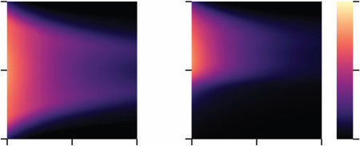
[图 13.10]
在第13.3.1节的例子中，我们将元马尔可夫决策过程(meta-MDP)框架应用于一个简单的单步决策。不幸的是，人们在现实世界中面临的许多问题并不那么简单；它们需要按顺序执行多个动作。回到我们的假期例子，在选择了一个国家之后，我们需要决定参观哪些具体的城市和景点。为了最大限度地减少在路上花费的时间，我们希望选择彼此靠近的目的地。这意味着在规划旅程的每一段时，我们必须考虑最终想要到达的地方。如果一个特别美丽的海滨小镇会让我们远离其他理想的目的地，我们可能最好跳过它。这种做出一系列相互依赖选择的过程称为规划(planning)（见第7章）。更一般地说，规划涉及使用世界模型来模拟、评估和选择可能的行动方案。
正式化规划的一种经典方法是决策树搜索(decision-tree search)。如图13.11所示的决策树代表一组假设的未来状态和动作。每个
图13.11
决策树搜索作为元马尔可夫决策过程(meta-MDP)。通过选择要扩展的节点来更新与不同节点相关的奖励。
分支点对应于可能必须做出的决策。原则上，可以通过考虑每个可能的决策点来确定最佳计划。然而，遍历完整的决策树是不可行的，因为树的大小随着向前看的步数呈指数增长。在AI研究的早期，Newell和Simon（1956）认识到人类规划者的成功（以及人工规划者成功的任何希望）在很大程度上取决于使用启发式方法来规避这种指数增长。最近关于人类规划的工作在很大程度上遵循了类似的脉络，提出并测试了人们可能用来降低规划成本的可能启发式方法（Huys等人，2015）。
虽然有用，但假设和测试特定启发式方法的方法面临两个主要挑战。首先，它受到研究人员创造力的限制，这些研究人员必须对人们使用的不同可能启发式方法产生假设。其次，它没有提供一种直接的方法来预测在新情况下将采用哪些启发式方法。为了应对这些挑战，我们可以将规划建模为元马尔可夫决策过程(meta-MDP)。通过在不同的环境结构假设下解决这个元马尔可夫决策过程，我们可以看到在每种情况下哪种规划启发式是最优的，并询问人们是否以类似的方式调整他们的规划策略。
如图13.11所示，规划可以建模为元马尔可夫决策过程，其中信念对应于部分构造的决策树，计算对应于扩展树的操作。决策树将一组可能的动作序列表示为树结构的有向图，其中节点对应于假设的未来状态，边对应于将智能体从一个状态带到另一个状态的动作。内部节点标有智能体访问该状态时将获得的奖励。树的叶节点称为搜索前沿(search frontier)；这些是智能体尚未考虑但可以接下来考虑的状态。信念 b ∈ B 定义了这棵树的可能配置。如果我们假设恒定的转换结构，信念可以表示为向量，其中 bᵢ 要么是状态 i 的奖励（如果该状态已被考虑），要么是空值。
计算 c ∈ C 对应于节点扩展(node expansion)。此操作确定访问状态的成本或奖励，将该值集成到通向该状态的路径的总价值中，并将目标状态的直接后继者添加到搜索前沿；即可以在下一次迭代中扩展的节点集合。这些动态（包括可能在每个节点揭示的奖励分布）被编码在元级转换函数 Tmeta 中。除了扩展节点外，智能体还可以执行
[遮蔽]
[奖励]
[不展示给参与者] [试验得分：][+25]
图13.12
规划任务。(a) 参与者面对一个以图形显示的序列决策问题。灰色圆圈表示状态，箭头表示行动，绿色和红色数字表示奖励和惩罚。(b) 奖励最初是遮蔽的，但可以通过点击相应的状态来揭示。只有高亮显示的状态可以被点击。(c) 可点击的状态随着搜索前沿扩展，搜索前沿包括与初始状态或已点击状态相邻的所有状态。(d) 在任何时候，参与者都可以通过按下三个箭头键的序列来执行计划。
操作。然后智能体停止规划，执行根据其到目前为止构建的决策树具有最大期望价值的行动序列。
最后，元级别奖励函数(metalevel reward function)包含节点扩展的成本和最终执行计划的质量。对于前者，我们假设每次扩展都有固定成本。对于后者，计划的期望价值是直到并包括相关节点的奖励总和，加上(对于不完整计划)未知未来奖励的期望。选择的计划是使这个期望价值最大化的计划。因此，终止行动的奖励等于任何计划的最大期望价值：
rmeta = max V(b, p)，(13.20) p
其中p是一个完整计划(即，从当前状态开始到终端状态结束的状态序列)，V(b, p)是给定当前信念执行计划的期望价值：
V(b, p) = ∑ {si 如果 bi 已被扩展 (13.21) i∈p E[Ri] 否则
解决本讨论中定义的元级别MDP会产生一个在元MDP描述的环境中进行规划的最优算法(特别是奖励分布和对象级别转换结构)。这些最优规划算法是否类似于人类规划？回答这个问题具有挑战性，因为规划通常完全在人的头脑中进行。为了规避这一挑战，Callaway等人(2022b)设计了一个使人们的规划直接可观察的任务(图13.12)。特别是，该任务要求参与者点击未来状态以查看如果访问该状态他们将获得什么奖励。点击序列因此揭示了参与者考虑每个状态的顺序。在模型中，这对应于一系列节点扩展计算。
规划算法可以用两个主要组成部分来描述：选择规则决定下一个要扩展的节点，停止规则决定何时停止资源理性分析 337
1 1 -1 -1 5 5 -10 10 1 20 1 -1
-1 -1 1 -1 -1 -5 5 -5 5 -10 -1 1 1 1 -40
20 20 5 10 -1 1
1 1 -20 1 -1 -5 10 -5 -5 10 -40 1 1 -1 1
-1 1 1 1 -10 5 -10 10 -1 1 20 -1
深度优先 广度优先
人类 人类 最优 最优先搜索
点击概率 点击概率 点击概率
-20 1 20 -10 -5 5 10 -1 1 首次揭示的价值 首次揭示的价值 首次揭示的价值
图13.13
规划策略的资源理性适应。(a) 环境操控。每个环境都有不同的位置相关奖励分布特征，其中大值出现在每条路径的开始(左)、任何位置(中)或每条路径的结尾(右)。(b) 规划策略的行为指标。每个面板显示根据第一次点击揭示的价值，在同一路径上进行第二次点击的概率。捕捉定性趋势的模型被突出显示。
规划并采取行动。Callaway等人详细考虑了两者，发现最优模型与人类规划在两个维度上都具有定性一致性。在这里，我们关注选择规则。在图13.12所示的环境中(其中每个状态可以等概率地取值-10、-5、5或10)，最优选择规则与AI中常用的算法最优先搜索非常相似。该算法扩展位于具有最大期望价值的计划前沿的节点；也就是说，它将注意力集中在当前看起来最好的计划上。与最优规划算法一致，参与者平均在81.5%的时间里扩展了具有最大期望价值的路径。
然而，最优先搜索并不总是最优规划算法。实际上，资源理性分析的一个关键假设是人们的心理策略会适应环境的结构。为了研究环境结构对人类的影响
规划策略，我们构建了三个具有不同奖励分布的新实验环境（见图13.13a），每个环境都被设计为有利于不同的规划算法。在”恒定方差”环境中，所有状态都具有相同的奖励分布，与之前的实验相同。最优先搜索(best-first search)在这种环境中表现良好。在”递减方差”环境中，大多数状态具有小奖励（-1或1）；只有树的第一步状态具有大奖励。广度优先搜索(breadth-first search)，一种在继续到下一级之前扩展每一级的每个节点的策略，在这种环境中表现良好。最后，在”递增方差”环境中，大奖励只能在树的最后一步找到。深度优先搜索(depth-first search)，一种在考虑其他方向之前尽可能在一个方向上扩展树的策略，在这里表现良好。
为了了解人们是否会根据环境结构调整其规划策略，我们可以查看每次试验中的第二次点击，这提供了他们整体策略的简单诊断。具体来说，我们可以询问人们多久使用第二次点击沿着他们第一次点击开始的路径继续前进，这取决于第一次点击揭示的价值。继续沿同一路径的总体趋势与深度优先策略一致，相反的趋势与广度优先策略一致，对揭示价值的高敏感性与最优先策略一致。如图13.13b所示，人们的第二次点击与环境适当的搜索顺序一致。然而，虽然这些手动指定的搜索算法中的每一个都能在其中一个环境中很好地捕获参与者的行为，但只有最优模型能在每个环境中都很好地捕获它。
通过提供一种从环境提出的问题规范和代理可用计算描述中推导出最优认知操作序列的方法，资源理性分析(resource-rational analysis)为认知心理学的许多经典问题提供了新的视角。在本章中，我们专注于与决策制定相关的问题，部分原因是在这个领域，人们偏离经典理性的方式以及他们遵循的启发式和策略已经得到了广泛研究。然而，资源理性分析最大的潜力可能在于应用到认知心理学核心的其他现象，有潜力提供关于人们如何管理记忆的有限资源(Dasgupta & Gershman, 2021; Berg & Ma, 2018; Yoo, Klyszejko, Curtis, & Ma, 2018; Gershman, 2021; Sims, Jacobs, & Knill, 2012; Suchow & Griffiths, 2016a)、注意力(Gabaix, 2014; Callaway et al., 2021; Wiederholt et al., 2010)和认知控制(Lieder, Shenhav, Musslick, & Griffiths, 2018; Lieder & Griffiths, 2017; Lieder & Iwama, 2021; Shenhav et al., 2017)的洞察，以及这如何塑造人们的心理表征(Ho et al., 2022)、推理(Dasgupta, Schulz, & Gershman, 2017; Icard & Goodman, 2015; Dasgupta, Schulz, Tenenbaum, & Gershman, 2020)、学习(Bramley, Dayan, Griffiths, & Lagnado, 2017)、目标设定(Correa, Ho, Callaway, & Griffiths, 2020)和目标追求(Prystawski, Mohnert, Tošić, & Lieder, 2020)。
未来工作的另一个重要方向是理解人们如何发展有效的资源理性策略(He & Lieder, 2022; Jain et al., 2022; Rule, Tenenbaum, & Piantadosi, 2020)。在本章提供的例子中，我们表明人们遵循与有限认知资源的理性使用一致的策略。但人们是如何形成这些策略的呢？与理性分析一样，资源理性分析诉诸于各种可能导致人们接近理想解决方案的适应性机制，如进化压力、生命周期中的学习或在特定任务背景下对有效策略的推理。然而，通过将这些认知策略框架化为解决序列决策问题的结果，资源理性分析与人类强化学习的大量文献建立了联系(Niv, 2009)，提供了各种可探索的潜在学习机制。这些学习机制也有完善的神经相关性，这带来了诱人的可能性，我们可能能够根据现有的神经机制理解元级强化学习(Krueger, Lieder, & Griffiths, 2017; He, Jain, & Lieder, 2021)。
最后，资源理性分析为人们为什么系统性地偏离经典理性行为提供了特定的解释：在人们以与资源理性模型一致的方式行动的程度上，我们可以理解这些行动是他们智能使用有限认知资源的结果。这表明专注于教导人们”正确”思考和决策方式的干预——不考虑相关的计算成本——很可能是无效的。相反，我们应该专注于识别人们可以执行的能够改善其表现的资源理性策略(Becker et al., 2022; Callaway et al., 2022a; Consul, Heindrich, Stojcheski, & Lieder, 2022; Mehta et al., 2022; Skirzyński, Becker, & Lieder, 2021; Becker, Skirzynski, van Opheusden, & Lieder, 2022)，或者以使相关计算更容易的方式修改人们做决策的环境(Callaway, Hardy, & Griffiths, 2020, 2023)。我们在这两个方面都采取了初步步骤
这些方向，但在支持资源理性智能体决策制定方面还有大量工作要做。
认知概率模型通常在计算层面构建，这导致了各种批评。想要理解人类行为背后认知机制的心理学家，为什么要关心这种行为是否理性？这些模型又如何解释大量文献显示人们系统性地偏离概率论和期望效用最大化原则的现象？我们认为资源理性分析为解决这些批评提供了一条路径。通过从强调认知有限智能体内部计算的角度定义理性行为，这种方法使得定义具有相同最优性假设的认知过程理论成为可能，这种最优性假设使概率模型具有吸引力。遵循这种方式的智能体会偏离经典理性，通过我们在本章中展示的例子，我们已经表明在许多情况下，这些偏离与人类行为是一致的。我们期待——在我们有限的规划视野范围内——看到这种方法接下来会把我们带到哪里。
Julian Jara-Ettinger, Chris Baker, Tomer Ullman, and Joshua B. Tenenbaum
为了有效地与他人互动，我们必须持续推断和监测他们的心理状态：他们在想什么，他们想要什么，他们对世界了解什么——以及他们对我们自己和他人的心理状态的想法、需求和了解。即使作为被动观察者，从心理状态角度理解他人行为的能力也为社会学习提供了强大的工具。观察更有知识的人的行为可以向我们揭示世界是如何运作的。观察更有经验的人可以教会我们什么时候坚持或练习是有帮助的，什么时候不是。关注人们如何对待他人可以让我们判断谁是友善的、机会主义的或恶意的，以及我们自己应该如何行动才能成为（并被认为是）积极的社会伙伴。
每当我们解释、预测或判断彼此的行为时，我们都是通过思考他们的心智来做到这一点的。然而其他人的心智是不可观察的，这使得从可观察的行为推断心理状态的能力成为类人社会智能的先决条件。这种能力被称为心智理论(Theory of Mind)。本章的假设是，人类的这些能力可以理解为对人们如何思考和行动的心理模型进行的近似贝叶斯推断。我们展示了用于建模理性行动规划的相同贝叶斯框架（第7章）也可以用于建模其他人的心理过程并推断他们的潜在心理状态，作为一种逆向规划形式。与专注于在给定世界模型和效用函数的情况下生成高价值行动的第7章相比，这里我们专注于将世界模型和效用函数归因于其他智能体，目标是在他们理性规划的假设下解释他们的行为：选择他们期望具有高价值的行动，给定我们试图推断的世界模型和效用函数。
我们首先考虑最简单的社会情况之一：观察具有完美知识的人从有限的可能性集合中选择一个选项。（我们稍后将在本章中考虑更复杂的情况，其中知识不完美，或者选择在一系列行动中展开，以及一系列其他现实世界的复杂性发挥作用。）例如，想象观察一个朋友在巧克力蛋糕和冰淇淋之间选择甜点。直觉上，你朋友的选择（可观察的行动）揭示了他们的偏好（心理状态）。在这种情况下，逆向规划简化为更简单的逆向决策制定形式。
为了形式化这种直觉，我们可以首先将事件定义为一组可能的世界状态和智能体可以采取的一组可能行动来改变世界状态。在这里给出的例子中，状态空间是[S] = {∅, Cake, Ice cream}，它包括你朋友没有甜点的状态(∅)，你朋友有蛋糕的状态(Cake)，以及你朋友有冰淇淋的状态(Ice cream)。行动空间是[A] = {“order cake,” “order ice cream”}。你朋友的偏好可以用奖励函数R : [S] → [R]表示，该函数将世界的每个状态与一个标量相关联，该标量可以是正数（意味着智能体喜欢该状态）或负数（意味着智能体不喜欢该状态）。
在这种情况下，我们可以做四个假设。首先，你和你的朋友知道世界的当前状态，最初是∅，因为你的朋友还没有点甜点。其次，你和你的朋友也知道状态空间和行动空间（即甜点选项和可以点这些选项的事实都是已知的）。第三，行动总是成功的：采取行动a = “order cake”和a = “order ice cream”总是分别导致有蛋糕(s =“cake”)和冰淇淋(s =“ice cream”)。最后，我们假设只有你的朋友知道他们自己的奖励（即他们多么喜欢冰淇淋和蛋糕）。
在你的朋友采取可观察行动a ∈ A后，我们可以通过贝叶斯推断计算后验概率来推断他们的潜在奖励函数：
p[(]R|a[)] ∝ p[(]a|R[)]p[(]R[)]. [(14.1)]
这里，p[(]R[)] 是观察者对可能奖励函数的先验分布，反映观察者对其他人通常喜好的期望；p[(]a|R[)] 是如果朋友的偏好被奖励函数 R 正确表示时，朋友采取行动 a 的概率。如果我们假设朋友对蛋糕的态度与对冰淇淋的态度是独立的，我们可以将奖励函数的每个组成部分视为独立的。即，对蛋糕和冰淇淋偏好任意组合的先验概率由冰淇淋奖励的先验概率乘以蛋糕奖励的先验概率给出。形式上：
p[(]R[)] = p[(]R[(]s[))]. (14.2)
[s][∈][S]
为了计算给定奖励函数下观察到行动的概率 p[(]a|R[)]，我们需要一个关于人们如何行动的模型。对儿童和成人的经验数据表明，在这样的情况下，人们期望代理人采取能获得最高可能奖励的行动 (Lucas et al. 2014b; Lucas, & Kemp 2017)。这可以通过一个简单的决策模型来捕获：
⎧ 点蛋糕，如果 R[(]蛋糕[) >] R[(]冰淇淋[)] a = ⎨ 点冰淇淋，如果 R[(]蛋糕[) <] R[(]冰淇淋[)] (14.3) ⎩ Bernoulli(0.5)，否则
在这个模型下，当 a 选择具有最高奖励的状态时，p[(]a|R[)] 为1；当没有选择时为0；当两个奖励相同时为0.5。图14.1a显示了使用这个简单决策模型和在范围[0, 1]上的均匀先验后，朋友采取行动 a = “点冰淇淋”时对其偏好的后验分布。
图14.1
观察某人选择冰淇淋后对冰淇淋和蛋糕奖励的后验分布。概率用从深蓝色（较低概率）到亮黄色（高概率）的渐变颜色范围表示。(a) 使用确定性似然函数的后验分布（方程(14.3)）。(b) 使用softmax似然函数的后验分布（方程(14.4)，β = 0.25）。
在实践中，期望代理人总是最大化奖励的模型过于严格。例如，假设你的朋友既喜欢冰淇淋又喜欢蛋糕，但对冰淇淋的偏好很小。根据严格的奖励最大化模型，你的朋友每次面临这个选择时都应该点冰淇淋，但直觉上，我们预期朋友有时会点蛋糕。这可以通过将代理人严格最大化奖励的期望放宽为代理人概率性最大化奖励的期望来解释。我们可以通过构建一个对代理人奖励应用softmax函数的似然函数来实现：
p(a|R) ∝ exp(βR(s[a])). (14.4)
这里，a 是代理人的可观察行动，R 是指导其行动的不可观察奖励函数，s[a] 是结果状态（例如，如果 a =“点蛋糕”，那么 s[a]=“蛋糕”）。这种随机化元素也被称为采用选择行动的玻尔兹曼策略 (Sutton & Barto, 1998)。
如方程(14.4)所示，softmax是一个简单的变换，其中每个值（在这种情况下，奖励 R(s[a])）乘以一个标量（参数 β）并取指数。在对所有值应用此变换后，整个集合被归一化（通过将右项除以常数 ∑exp(βR(s[a])) 使所有选择不同行动 a ∈ A 的项之和为1）。这个过程将一组标量（在这种情况下是奖励）转换为行动上的概率分布。这种变换背后的理性由温度参数 β ∈ [0, ∞) 调节。β 越高，结果分布越将概率集中在具有最高可能奖励的选项上。当 β → ∞ 时，p(a|R) 中的概率越来越集中在与最高可能奖励相关的行动上，
收敛到方程(14.3)的确定性奖励最大化模型。相反，β 越低，结果分布在所有选项中传播概率，同时仍然为具有更高值的选项分配更高的概率。在极限情况下，当 β = 0 时，p(a|R) 变成行动上的均匀分布，表达代理人根本不响应其奖励行动的想法。因此，β 允许我们将代理人严格最大化奖励的期望放宽为代理人概率性最大化奖励的期望（通过降低 β 的值）。
图14.1b显示了在我们观察朋友选择冰淇淋后，使用 β = 0.25 对取值范围为[0, 1]的奖励函数的后验分布。如该图所示，这种概率模型上的推断显示了梯度推断。我们的初始模型（图14.1a）判断任何 R(冰淇淋) > R(蛋糕) 的奖励集合都同等可能。
相比之下，我们的softmax模型（图14.1b）现在认为奖励集合中R(冰淇淋)>>R(蛋糕)的情况更可能。这是因为，直觉上，对冰淇淋的偏好较弱会给智能体更高的选择吃蛋糕的机会（而我们没有观察到这种情况）。
Jern等人（2017）展示了这种方法如何产生类似人类的偏好推断。在他们的一项任务中，参与者观看智能体在不同餐食中进行选择，每顿餐食都包含多种食物。例如，在图14.2a中，智能体可以选择茄子菜配饼干、鸡肉菜配蛋糕片，或者鱼肉菜配苹果。在观看智能体选择茄子菜配饼干后，参与者被要求推断智能体对不同食物的偏好。如图14.2b所示，人们的推断与使用贝叶斯框架推断的奖励高度相关（其中每个食物选项的奖励由每种食物的奖励总和给出；见图14.2c中完整刺激空间的示意图）。此外，同一模型统一了幼儿做出的一系列推断（Lucas等人，2014b），表明这些推断从童年早期就开始发挥作用。
人们的行为通常会产生成本（在时间和体力方面），人们的心理状态推断会考虑这些成本如何影响智能体的选择（Jara-Ettinger, Gweon, Schulz, & Tenenbaum, 2016）。我们可以通过扩展框架来包含成本函数和效用函数来捕捉这一点。成本函数C : [A] [→] [R]是从行为到正标量值的映射，表示与采取不同行为相关的负面后果。正如我们将在14.4节中看到的，这个术语可以捕捉成本的高度抽象方面，但我们可以首先考虑经济背景下的金钱成本或生物背景下的能量成本。
效用函数U : [A] [×] [S] [→] [R]是一个映射，将状态和行为的每种可能组合与获得的奖励和产生的成本之间的差值联系起来：
U (a , s) [=] R(s) [−] C(a). [(14.5)]
这个效用函数捕捉了智能体重视在产生最低可能成本的同时获得高奖励的行动计划的期望（Jara-Ettinger等人，2016；Liu, Ullman, Tenenbaum, & Spelke, 2017；Csibra, Bíró, Koós, & Gergely, 2003）。
如果行为成本是已知的，我们可以通过假设智能体以概率方式最大化其效用（而不仅仅是奖励）来推断智能体不可观察的奖励，
[(a) 逆向决策方法] [(b) 实验结果]
[s]
[rd] [p ][= 0.98] [45] [47]
[ewa] [[42] [[46]] [s]]
[[[R]]] [[40] [[44] [41] [43]]]
[[[ng]]] [[38] [[39]]]
[[[ki]]] [[37]]
[36]
[34] [35]
[奖励] [[[r]]] [28] [33][2022][[[an]]] [3031]
[选项] [an] [23] [27] [32][29][25][m] [19][2126]24
[[[hu]]] 17 [18][13][[[n]]] [12] [15][11]
[选择] [[[M]]] [8] [5][7][4][6][3][[[ea]]] [10] [14][9]
[2]
[(c) 实验刺激示意图] [模型排名]
[1.] [D] [8.] [B][C] [15.][B][C] [23.][A][B][C][D] [31.] [B][B] [40.] [X][A][B][C]
[C] [A][A] [A] X [A][A][B] X X [X][C] 41.[A][C][A] [24.][B][B][B] B [9.][B][B][B] [16.][A][B] [A][C][A] [32.][A][A][D]
[A][C][D] X X[D] [X][B][C] 42.[A][B][C][D]
[B] [17.][B][C][D] [25.][A][B][A] [33.][A][D] 43.[C][A] [10.][B][D] [A] [X X][C] [X][C] B [A][C] X [B] [A]
X [26.][A][C]
[3.] [B] [18.][B][D] [X][B] [34.] [X][A] [44.] [X][B][D]
[A] [11.][A][B] [A][C] [A][C]X X X [27.][C][C] [35.][B][B][B]
[B][B] [A][A][A] 45.[A][B][D]
[4.] [A] [12.] [B][C][B] [19.][A][B][C] [A][A] [X][C][D] [C]
[5.] X [20.][A][B][D] [28.][A][B][D] [X][B][C] [C]
[13.] [A][B][C] X[C] X [C] [B]
[6.] [C][D] XX [37.] [A][A][A][A]
[B][B] [21.][B][B] [29.][A][B][A][A] [X][B][C][D] 47.[D][A][A] [14.][C][D] [A][D] [X X][C][D] CX [B] [X][C] 38.[A][B] [B]
[A] [30.][A][A] [A]
[7.] [A][B][C][D] X [22.][A][B][C][A] [X][B] [39.] [X][B]
图14.2
Jern等人（2017）的奖励推断；实验1的正属性条件。(a) 任务和模型设置示意图。可用选择的空间和所选择的选项是可观察的，参与者的任务是推断与选择的不同特征（在这种情况下是食物）相关的奖励。(b) 实验结果。每个点代表一个试验，水平轴为模型预测，垂直轴为参与者判断。(c) 实验刺激。试验编号为1-47。在每个试验中，每列代表一个潜在选项。在每个选择中，字母代表不同特征。阴影列显示智能体选择的选项。图片经Jern等人（2017）许可转载。
使用似然函数
p(a|R; C) [∝] exp(βU (a, s[a]), [(14.6)]
其中等式左边是在给定特定情况下选择某个行为的概率
奖励和成本函数，右侧是效用函数的softmax（它实际上就是奖励减去成本）。
图14.3a-b显示了当你的朋友在每个选择都产生不同成本的情境下选择冰淇淋时的奖励函数后验分布。当蛋糕成本更高时，看到你的朋友选择冰淇淋不再意味着冰淇淋的奖励高于蛋糕的奖励（图14.3a）；你的朋友可能更喜欢蛋糕，只是因为成本更低（因此使效用更高）。相反，当冰淇淋成本更高时，看到你的朋友订购它提供了更强的证据表明他们更喜欢冰淇淋而不是蛋糕。毕竟，奖励必须足够高以证明额外成本的合理性。这种推理如图14.3b所示，其中后验分布现在将概率集中在冰淇淋奖励远高于蛋糕奖励的区域。正如我们所看到的，成本不一定是金钱——这个概念代表任何代理人可能发现厌恶的因素。
图14.3
观察某人在涉及成本的情境下选择冰淇淋后，冰淇淋和蛋糕奖励的后验分布。(a) 当蛋糕产生0.25成本而冰淇淋成本为0时，使用softmax似然函数(β = 0.25)的后验分布。(b) 当冰淇淋产生0.25成本而蛋糕成本为0时，使用softmax似然函数(β = 0.25)的后验分布。
然而，在许多情况下，我们不知道其他人的成本。在这些情况下，可以通过贝叶斯推理从他们的选择中联合推断代理人的成本和奖励：
p(R, C|a) ∝ p(a|R, C)p(R, C), (14.7)
其中成本和奖励的先验可以假设为独立的，使得p(R, C) = p(R)p(C)，似然函数由方程(14.6)给出。原则上，任何行动序列都可以用许多（实际上是无限数量的）不同的成本和奖励组合来解释。我们在14.3节中重新讨论这一点，我们展示了空间信息、成本和奖励的先验以及获得多个观察如何约束这些推理并使问题变得可处理。
许多情况涉及对在不完全或不正确知识下行动的代理人进行推理，解释他们的行为涉及推断他们知道或相信什么。
继续甜点选择的例子（是否订购蛋糕或冰淇淋），假设你的朋友不确定他们会多喜欢每个选项。在这种情况下，我们不能将代理人表示为对每个甜点都有单一奖励。相反，我们可以使用概率分布来捕捉他们对奖励的不确定性。
为了说明如何做到这一点，我们首先假设可能奖励的范围是有限的，在[0, 1]范围内（尽管框架可以轻易扩展到无限奖励范围）。在这个奖励范围内，可以通过beta分布表示广泛的可能信念（见第3章；这里提出的逻辑可以应用于任何参数化概率分布）。因为beta分布的形状完全由两个参数——α和β——决定，推断你朋友的信念等同于推断这两个参数。形式上，如果b_ic = {α_ic, β_ic}和b_c = {α_c, β_c}分别表示你朋友对他们享受冰淇淋(b_ic)和蛋糕(b_c)程度的信念，那么他们对奖励信念的后验由贝叶斯规则给出：
p(b_ic, b_c|a) ∝ p(a|b_ic, b_c)p(b_ic, b_c)*. (14.8)
为了设置先验分布p(b_ic, b_c)，我们可以假设你朋友对他们享受冰淇淋程度的信念独立于他们对享受蛋糕程度的信念，所以p(b*_ic, b_c)* = p(b_ic)p(b_c)。注意，因为b*_ic和b_c表示概率分布（尽管每个分布技术上由两个参数α和β组成），它们的先验包含为每个可能的概率分布分配概率的映射。也就是说，这些先验捕捉了我们的信念，即你的朋友可能对他们的奖励有不同类型的信念（例如，我们可能为反映甜点有低奖励信念的分布分配低先验概率，为反映甜点有高奖励信念的分布分配较高先验概率）。这些先验分布中的每一个都可以通过为参数α和β分配先验分布来设置。因为这两个参数可以取范围(0, ∞)内的任何值，先验可以通过定义在正实数上的任何概率分布来表示，如指数分布或伽马分布（见第3章）。
然后可以通过对你朋友期望获得的可能奖励进行积分来计算似然：
p(a|b[ic], b[c]) = p(a|R[ic], R[c])p(R[ic], R[c]|b[ic], b[c]) dR[ic] dR*[c], (14.9)
∫[R][ic][=][0] ∫[R][c][=][0]
其中 p(a|R[ic], R[c]) 是如果冰淇淋和蛋糕的奖励分别为 R[ic] 和 R[c]，你的朋友采取观察到的行动 a 的概率（使用方程 (14.4) 中的 softmax 选择模型计算），而 p(R[ic], R[c]|b[ic], b[c])* 是你朋友对每种甜点将产生这些奖励的信念：
p(R[ic],R[c]|b[ic], b[c])* = Beta(R[ic]; b[ic])Beta(R[c]; b[c])*. (14.10)
在有 m 个选项的一般化情况下，计算后验分布变得极其昂贵，但可以通过基于采样的方法来解决（第6章）。这个框架可以轻易扩展以包括对成本信念的推理（见 Jara-Ettinger, Floyd, Tenenbaum, & Schulz, 2017，该应用模型显示了幼儿对他人心理状态推理如何通过一个考虑智能体可能对自己的成本和奖励不确定的模型来解释）。
到目前为止，我们假设每个行动都与相应的状态确定性关联（例如，“订购蛋糕”的行动导致”蛋糕”状态）。这种情况很少见，因为人们的行动可能无法达到预期结果。如果人们在决定做什么时考虑他们的行动成功的机会，那么我们对他们行为的推理必须考虑这一点。为了实现这一点，我们可以通过转移函数 T : S × A × S → [0, 1] 引入不确定性模型，其中 T(s, a, s’) 是智能体相信在状态 s 中采取行动 a 会将状态改变为 s’ 的信念。请注意，这个转移函数可以表达环境的真实概率结构，或者仅仅是智能体对环境结构的不确定性。
回到我们的甜点示例，假设你的朋友注意到服务员非常忙碌，可能会忘记他们的订单。因为蛋糕需要更多时间准备，选择它会增加服务员忘记订单的机会。如果服务员有20%的机会忘记带冰淇淋，40%的机会忘记带蛋糕，我们可以通过以下转移函数 T 来表示你朋友的期望：
a = ice cream a = cake
[THIS IS TABLE: Two transition matrices showing probabilities for ice cream and cake orders, with states ∅, cake, ice cream and their transition probabilities]
在每个矩阵中，条目 (i, j) 显示了在采取”订购冰淇淋”（左矩阵）和”订购蛋糕”（右矩阵）行动时从状态 i 转换到状态 j 的概率。例如，第一个矩阵的第一行表示，如果你的朋友还没有甜点(s = ∅)并且订购冰淇淋，有20%的机会他们不会得到任何甜点，0%的机会他们会得到蛋糕，80%的机会他们会得到冰淇淋。类似地，第二行表示如果你的朋友有蛋糕并要求换成冰淇淋，有0%的机会他们会没有甜点（因为他们已经有蛋糕了），20%的机会服务员会忘记而他们会保留蛋糕，80%的机会服务员会用冰淇淋替换蛋糕。
在这个世界模型下，你的朋友可能会订购蛋糕，因为他们不想冒着完全没有甜点的风险。为了形式化这个直觉，我们可以假设其他人在期望效用函数下行动，由下式给出：
U(a, s) = ∑[s’∈S] R(s’) T(s, a, s’) − C(a). (14.11)
方程 (14.11) 是方程 (14.5) 的简单扩展，用期望奖励替换确定性奖励，通过整合所选行动可能产生的结果不确定性来计算。
到目前为止，我们专注于智能体做出单一选择以达到单一结果的简单情况。在更现实的情况下，行动理解涉及解释在延长时间段内在空间中导航的智能体。要在这种情况下推理其他人的信念和偏好，我们需要一个捕获序列规划而非一次性决策的决策模型。马尔可夫决策过程 (Markov decision processes, MDPs) 框架（在第7章中介绍，如图14.4a所示）实现了这个目标 (Sutton & Barto, 2018)。为简单起见，我们专注于智能体的任务是在二维 (2D) 网格世界中导航和探索的领域（很像观察智能体在视频游戏中移动）。
形式化的序列决策模型。(a) MDP的简单示意图。(b)
部分可观察MDP的示意图。世界状态是不可观察的，但会产生观察结果，指导智能体如何行动（通过更新他们的世界模型）。
使用这个新的期望效用函数，我们可以使用方程 (14.6) 中表达的相同似然函数来推理智能体在概率环境下的偏好。
从鸟瞰视角来看），因为这些领域中的行为足够丰富，人们可以从中推断出信念、欲望、情感，甚至社会关系(Heider & Simmel, 1944)。
MDP将世界表示为来自所有可能世界状态集合S中的状态s。例如，在图14.5所示的地图中，世界有20个可能的世界状态，其中每个状态捕获智能体在空间中的位置（世界是一个5×5的网格世界，但有5个位置被墙壁占据）。在每个状态中，智能体可以从可能行为集合A中选择一个行为a，例如A = {向北移动，向南移动，向东移动，向西移动，进食}。
当智能体采取行动时，世界的状态按照转换函数T : S × A × S → [0, 1]所确定的方式发生改变。为简单起见，假设智能体的行动以确定性方式改变世界状态（尽管这个假设可以轻松放宽；参见14.2.2节）：智能体成功地向预定方向移动，除非它们试图越过地图边界或墙壁（在这种情况下它们保持在相同状态），而”进食”行动不会改变世界状态（但根据执行该行动的状态，可能产生奖励）。
状态空间、行动空间和转换函数指定了智能体如何在世界中行动。接下来，为了捕获智能体如何选择行为，我们可以使用效用函数U(s, a) = R(s, a) − C(s, a)。注意成本和奖励现在都依赖于状态和行动，这相对于第[350] [J.] [Jara-Ettinger,] [C.] [Baker,] [T.] [Ullman,] [and] [J.] [B.] [Tenenbaum]中更简单的效用公式增加了表达能力
图14.5
一个简单的例子，展示如何使用行动序列来推断奖励函数。(a) 示例网格世界，智能体可以向四个基本方向移动并消费食物物品。(b) 根据面板a中显示的观察到的行动推断出的奖励。
方程(14.5)的背景下。例如，在空间导航的背景下，奖励可能取决于在正确的状态（智能体可以直接接触食物的状态）中采取正确的行动（“进食”），而成本可能根据选择的行动（“进食”可能与四个物理移动有不同的成本）和状态而不同（例如，试图穿越墙壁可能被设定为产生0成本，因为智能体无法向任何方向移动）。
在第7章中，我们看到了如何计算MDP的最优策略——一个将世界的每个状态与保证智能体长期最大化其效用的行动相关联的函数。这通过选择具有最高最优值的行动来实现
V∗(s), a, 由 U
V∗(s, a) = U(s, a) + λ max T(s, a, s’)V∗(s’), (14.12) a∈A s’∈S
其中V∗(s, a)表示智能体通过在状态s中采取行动a获得的即时效用U(s, a)，加上如果智能体继续采取最大化此价值函数的行动所获得的期望值，由未来折扣参数λ ∈ (0, 1)加权。这个参数直觉上捕获了这样的想法：智能体保证获得即时奖励，但由于意外事件或世界中未考虑到的变化，未来的期望奖励可能永远不会实现。
在经典MDP中，最优策略通过最大化价值函数来构建。因此，最优策略π : S → A将每个状态与最大化价值函数V∗(s, a)的行动相关联。然而，从行动理解的角度来看，我们需要考虑规划错误。智能体偶尔会因为错误或意外而做出次优选择。这可以通过对MDP的价值函数进行软最大化来获得概率策略来解决，使得
π∗(a|s) ∝ exp(β·V∗(s, a)). (14.13)
心智理论和逆向规划 [351]
注意在MDP中，智能体的行动仅依赖于当前状态。因此，给定观察到的轨迹t = (s, a)——一个包含|t|对状态s和行动a的有序序列——
智能体在相应状态中采取每个行动的概率由以下公式给出
p(a|U, s) = ∏|t|i=1 π_U(a_i|s_i). (14.14)
因此，给定观察到的轨迹t = (s, a)，效用函数的后验分布由以下公式给出
p(U|t) ∝ ∏|t|i=1 π_U(a_i|s_i) p(U). (14.15)
图14.5b显示了该模型推理的一个例子。这里，智能体从网格世界的左下角开始，可以向任何基本方向移动。地图包含两堵墙——一堵跨越(b, 1-3)，另一堵跨越(d-e, 2)——以及两个奖励源，状态(a, 1)上的冰淇淋和状态(e, 5)上的蛋糕。为简单起见，我们可以假设所有行动，无论在哪个状态执行，都产生1的成本（正式地，
C[(]a, s[)] [=] 1, [∀][(]a, s[)] [∈] A [×] S), 除了在位置 [(]a, 1[)] 或 [(]e, 5[)] 采取”吃”动作时，奖励始终为0。
图14.5显示了作为观察到的动作数量函数的吃蛋糕和冰淇淋的推断奖励。前四个动作没有揭示智能体的奖励，因为无论智能体的偏好如何，它都会以相同的方式行为。
第五个动作——向东移动——仍然与追求蛋糕或冰淇淋一致。然而，模型开始推断智能体更喜欢冰淇淋。这是因为在状态 [(]c, 3[)] 中，具有奖励函数 R[(]冰淇淋[) >] R[(]蛋糕[)] 的智能体总是会采取”向东移动”的动作。相比之下，具有奖励函数 R[(]冰淇淋[) <] R[(]蛋糕[)] 的智能体”向东移动”或”向南移动”的可能性应该相等。最后，当智能体采取第六个动作——向北移动——时，该动作只有在 R[(]冰淇淋[) >] R[(]蛋糕[)] 时才可能发生，允许模型推断出对冰淇淋的偏好。
这种建模人类目标推理的方法已经通过几项行为研究得到了实验验证(Baker, Saxe, & Tenenbaum, 2009)，这些研究提出了图14.6中所示的情景。参与者被要求在智能体绕过障碍物导航到几个标记位置之一的路径的几个点上进行目标推理（详情见图注）。图14.6(a)、(b)和(c)中的条件显示了相同的智能体路径，但它们在障碍物中的间隙存在(a)或一个目标对象的位置(c)方面有所不同。环境中的这些细微差异对人们的目标推理有很大影响：在图14.6(a)中，仅三步之后，人们立即推断目标A比B或C更有可能。图14.6(b)和(c)增加了模糊性，在(b)中目标A和B被赋予相似的概率，在(c)中目标A、B和C被评为相似，直到智能体在11步后接近目标A。
同样的框架可以很容易地扩展，将推断的效用函数分解为潜在的成本和奖励。为了实现这一点，只需要将成本函数视为不可观察的，并且在智能体和地形类型之间变化，使用方程(14.7)以MDP作为生成模型。考虑图14.7中显示的事件。如果我们假设相同地形中的动作必须具有相同的成本，那么成本推理就归结为[352] [J.] [Jara-Ettinger,] [C.] [Baker,] [T.] [Ullman,] [and] [J.] [B.] [Tenenbaum]
(a) [C ] [(b) ] [C ] [(c) ][A ][A ] [A ][C ][B ][A ][B ][B ]
[概率][概率] [概率]
[判断点] [判断点] [判断点]
[(d) ]
[人]
[模型]
图14.6
比较人类目标推理与基于理性原则的贝叶斯模型预测的行为实验(Baker et al., 2009)。(a)–(c) 在实验的三种条件下比较人类和模型推理。顶行显示了一个带有墙壁（黑色）、三个目标（标记为A、B和C）和智能体轨迹的地图。智能体的起点用X标记，数字表示参与者被要求评估智能体追求三个目标中每一个的概率的时间点。第二行显示了人们对每个目标作为路径中时间点函数的评分，第三行显示了模型预测。(d) 实验所有条件下人类和模型推理的定量比较。
使用贝叶斯推理推断两个成本值和两个奖励值，似然项通过方程(14.14)计算。图14.7显示了作为观察动作函数的推断期望成本和奖励。
当多个成本和奖励来源起作用时，MDP提供了一个规范解决方案。但这个公式隐含地将决策制定（智能体会尝试收集哪些奖励？）与行动计划（智能体需要采取什么行动来收集它们？）混合在一起。然而，行动计划是一个分层过程，智能体必须首先选择一个目标（决策制定），然后采取行动来追求它（行动计划）。将这两个过程混合到单一计算中（方程(14.13)）也限制了我们区分次优选择和次优行动计划的能力：具有高噪声的Softmax模型（当β较低时）假设智能体做出糟糕的选择并采取糟糕的行动，而具有低噪声的Softmax模型（当β较高时）假设[心智理论] [和] [逆向规划] [[353]]
(a) [(b) ]
推断成本以及奖励。(a) 网格世界示例，可以联合推断智能体在每种地形中行走的相关成本以及智能体与每个食物项目相关的奖励。(b) 随时间变化的成本和奖励联合推断。
智能体做出最优选择并采取最优行动。然而，直觉上，这些过程是可分离的，可能存在不同程度的次优性(见图14.8)。
为了区分决策制定和行动规划，我们可以构建一个层次模型，其中基于效用的模型识别要追求的目标(在方程(14.5)–(14.7)；第14.1节中描述)，MDP计算将实现每个目标的行动计划。更正式地，考虑一个具有n个奖励源的事件，每个都在空间中的不同位置(即，一个有n个对象散布在周围的物理环境)。设G为可能目标的集合——定义为至少一个行动可以产生正奖励的每个状态(即，如果对于某个行动a，R(s，a) > 0，则状态s是可能的目标)——U[g]为智能体追求目标g时获得的效用(由方程(14.5)确定)。那么，智能体选择目标g的概率由下式给出：
p(g|U) ∝ exp (β[D]U[g]), (14.16)
其中β[D]是调节智能体选择最高效用目标能力的softmax参数。与每个目标相关的效用U[g]由与最终状态相关的奖励减去到达该状态的预期成本给出。注意这意味着每个目标的成本将取决于智能体的初始位置和目标的位置。我们可以通过求解MDP来计算这个成本，以最大化目标特定的奖励函数R[g]，定义为：
R[g](s, a) = {R(s, a), 如果 s = g 0, 否则 (14.17)
也就是说，这个目标特定的奖励函数将环境中任何可能状态的所有奖励设置为0，除了在目标g中识别的状态。这个奖励函数R[g]，结合模型的通用成本函数(确定不同行动的成本)，允许MDP生成一个行动计划，可用于估计实现目标g的成本。关键是，构建概率性行动策略π[g]也涉及对行动计划进行softmax处理(方程(14.13))，这可以使用一个单独的softmax参数β[A]来完成，该参数捕获智能体有效导航到其目标的能力。
区分理性选择和理性行动的四种行动类型。(a) 理性选择和理性行动；(b) 非理性选择和理性行动；(c) 理性选择和非理性行动；(d) 非理性选择和非理性行动。
注意，由于MDP策略是概率性的，确切的成本将取决于智能体在规划过程中是否出现任何错误。因此，与每个目标相关的效用U[g]使用预期成本：
C[g] = ∑[t∈T] C(t)p(t), (14.18)
其中T是从智能体起始点到达目标g的所有可能轨迹t = (a, s)的集合。C(t)是轨迹的成本，由下式给出：
C(t) = ∑[i=1]^|t| C(ai, si), (14.19)
p(t)是轨迹t发生的概率，由下式给出：
p(t) = ∏[i=1]^|t| π[g](ai|si)T(si, ai, s[i+1]), (14.20)
其中π[g](ai|si)是智能体在状态si中采取行动ai的概率，T(si, ai, s[i+1])*是该状态中的这个行动将世界转换到轨迹中下一个状态的概率。自然地，考虑每个可能的轨迹是难以处理的，但方程(14.20)可以通过基于采样的方法来近似。
从行动理解的角度来看，对这个模型的推断需要对智能体选择并正在努力实现的不可观察目标进行积分。因此，给定观察到的轨迹t = (a, s)，似然性由下式给出：
p(t|U) = ∑[g∈G] p(t|g)p(g|U), (14.21)
● ●
● 人类 ● 模型
● ● ● ● ● ●
● ● ● ● ● ●
模型预测
联合成本和奖励推理的结果。(a) 示例场景：一个智能体从起始位置导航到目标位置。地图包含不同类型的地形和智能体可以选择收集的物体。(b) 人们对潜在成本和奖励的推理，以及对(a)中示例的模型预测。(c) 人类联合成本-奖励推理与模型推理的总体比较。
其中 p[(]t|g[)] 是给定目标g的行动规划模型（方程(14.13)与奖励函数(14.17)），p[(]g|U[)] 是给定奖励集合的决策模型（方程(14.16)）。最后，这个似然函数由效用函数先验 p[(]U[)] 加权，得出智能体潜在效用的后验分布。
Jara-Ettinger, Schulz, 和 Tenenbaum (2020) 表明，该模型能够捕获人们基于他人行为联合推理其成本和奖励的能力，使用如图14.9a所示的场景。在这里，智能体必须从起始点（中左）前往目标位置（中右），但它可以选择在途中收集两个物体中的一个（白色立方体或橙色圆柱体）。智能体的路径立即显示，通过蓝色地形导航的成本比通过紫色地形导航的成本更低（否则，为什么要走更长的路径？）。模型和人们都推断出智能体不喜欢橙色容器，因为智能体本可以通过同样成本的路径获得它。相比之下，模型和人们对白色盒子都更加不确定[356] [J.] [Jara-Ettinger,] [C.] [Baker,] [T.] [Ullman,] [and] [J.] [B.] [Tenenbaum]
尽管智能体选择不获取那个盒子，但它也位于我们推断成本较高的区域中间，这使得智能体可能喜欢那个盒子但由于涉及的成本而选择不追求它成为可能（图14.9b）。如图14.9c所示，该模型在广泛的事件范围内捕获了人们的推理。
智能体经常面临不知道世界确切状态或各种目标位置的情况。在这些情况下，MDP不再适用，因为它们假设信息完美。MDP的扩展，称为部分可观察马尔可夫决策过程(POMDPs)，有助于在这些背景下建模智能体的行为。
为了建模不确定性下的规划，我们首先需要扩展状态空间，包括智能体可能认为合理的世界状态，即使它们永远不会发生。在图14.5的示例中，状态空间由20个可能状态组成，每个状态捕获智能体在空间中的位置。为了建模一个可能不知道冰淇淋是在左上位置还是右下位置的智能体，我们需要将状态空间扩展到40个状态，每个状态捕获智能体在空间中的位置以及冰淇淋和蛋糕的位置。在这个扩展的状态空间中，世界总是处于原始20个状态之一（其中冰淇淋总是在左上），但智能体可能相信他们处于与现实不匹配的世界状态中（例如，相信蛋糕在左上位置）。在这个扩展的状态空间下，我们可以将智能体的信念定义为 B: [S] [→ []0, 1[]] 作为世界状态的概率分布。
当智能体基于他们对世界状态的信念行动（而不是基于世界的真实状态行动）时，他们的策略现在必须将信念映射到行动上（而不是将状态映射到行动上）。形式上，我们需要一个策略 [π][U]: [B] [×] [A][→ []0, 1[]]，使得 [π][U] [(]b, a[)] [=] 1 [a] [∈] [A] 对于任何信念b和任何效用函数U（即对于任何信念，所有行动的概率必须加起来等于1，确保它们表达适当的概率分布）。
此外，我们需要指定智能体的信念如何随着它们与世界的互动而改变。为了实现这一点，POMDPs假设状态和行动的每个组合都会产生关于世界的观察，智能体可以用来对真实世界状态进行推理。例如，走进房间的智能体可能会收到揭示房间内容的观察。
形式上，设 [**] 为智能体可以接收的可能观察集合（即智能体在与世界互动时可能获得的所有可能信息的完整集合）。在POMDP中，智能体在每个时间步接收一个观察 o [∈] [**]，由观察函数 O: [A] [×] [S] [×] [**] [→ []0, 1[]] 确定，其中 O[(]a, s, o[)] 是在执行行动a后在状态s中获得观察o的概率。当智能体接收观察时，他们通过以下方式更新他们的信念：
p[(]s|a, o; b[)] [=] T[(]s[o], a, s[)]O[(]a, s, o[)]b[(]s[o][)]. (14.22)
左边表示智能体在执行行动a并接收观察o后相信他们处于状态s的信念，给定他们之前有信念b。右边通过考虑智能体之前可能处于的所有可能状态(s[o] [∈] [S])来计算这个项。对于每个潜在的先前状态，b[(]s[o][)] 是智能体相信他们处于这种状态的信念，T[(]s[o], a, s[)] 是状态s[o]中的行动a转换到状态s的概率[Theory] [of] [Mind] [and] [Inverse] [Planning] [[357]]

[a]
[b]
[c ]
[d ]
[e ]
图 14.10
一个对世界有部分知识的智能体如何通过采取行动来推断其位置并获得奖励的例子。在这里，一个蒙着眼睛的智能体最初不确定它们在空间中的位置。如果它们能够检测到墙壁，那么智能体可以通过到达西北角（黑色箭头）或东南角（红色箭头）来推断它们在空间中的位置。然而，到达西北角是一个更好的策略，因为它也保证智能体将到达目标状态。
s ，而 O(a, s, o) 是在采取行动 a 到达状态 s 后接收到观察 o 的概率。
为了说明POMDP中的动态过程，考虑一个蒙着眼睛的智能体在5×4网格世界中移动（图14.10）。状态空间 S 由20个状态组成，每个状态指示智能体在空间中的位置。假设智能体看不到任何东西，但当它们试图越过墙壁时（因此撞到墙壁）可以感觉到墙壁。观察空间为 ** = {∅, wall}。地图内的任何动作-状态对都会产生观察∅，而智能体撞到墙壁的状态中的任何动作都会产生观察”wall”。一个完全不确定的智能体（对所有 s ∈ S 都有 b(s) = 1/16）可以通过向南移动直到撞到观察”wall”（此时它们会知道它们必须在底部四个状态之一）然后向东移动直到再次撞到观察”wall”（图14.10中的红色路径）来确定它们在空间中的位置。此时，智能体会知道它们必须在右下角。如果动作以确定性方式改变世界状态，智能体然后可以通过简单地跟踪它们采取的动作来知道世界在每个时间点的确切状态，使它们能够朝着奖励导航。然而，一个更好的策略是向北移动直到撞到墙壁，然后向西移动直到再次撞到墙壁（图14.10中的黑色路径）。这是因为左上角不仅揭示了世界的状态，而且还让智能体处于有奖励的状态。
POMDP的解决方案自然地产生将减少不确定性的动作与获得奖励的动作相结合的策略，使它们成为理解行为是探索和利用结合的智能体的自然框架。
在部分知识下，我们可以定义在信念 b 下采取动作 a 的效用（从智能体的主观角度）为
U(b, a) = b(s)U(s, a) (14.23)
s∈S
信念 b 的最优值为
V ∗ (b) = max U(b, a) + λ O(s, a, o)V ∗(b). (14.24)
a ∈A
o∈**
358 J. Jara-Ettinger, C. Baker, T. Ullman, and J. B. Tenenbaum
方程（14.24）等同于方程（14.12），扩展以考虑智能体的不确定性。这里，信念 b 的最优值通过考虑产生最高效用的动作，加上通过整合智能体可能接收到的可能信息以及智能体在采取动作 a、接收观察 o 并具有初始信念 b 后的更新信念 b(a, o, b) 的预期未来值（通过参数λ在时间上折扣）来计算。这些更新的信念通过方程（14.22）计算。
与MDP一样，我们可以通过对这个值函数进行softmax变换来构建概率策略（方程（14.24））。使用结果策略作为生成模型，联合信念（状态上的概率分布）、欲望（潜在奖励函数）和能力（底层成本函数）可以通过贝叶斯推理推断，其中给定观察到的轨迹 t，
p(B, R, C|t) ∝ p(t|B, R, C)p(B)p(R)p(C). (14.25)
Baker等人（2017）开发并测试了我们刚刚提出的模型，要求成年参与者根据智能体如何在环境中导航来对智能体的信念和欲望进行联合推理。图14.11显示了这个实验中的几个场景，其中一个饥饿的研究生离开办公室去三个食品卡车之一吃午饭：韩式（K）、黎巴嫩式（L）或墨西哥式（M）。卡车有两个停车位（用黄色标记），卡车可以在不同的日子停在不同的位置，或者根本不出现，所以学生可能不知道每个卡车停在哪里，必须仔细计划去哪里走以尽快从可用的最好卡车那里得到午餐。使用POMDP作为生成模型，智能体的欲望可以使用表示它们对卡车偏好的奖励函数来捕获，智能体的初始信念可以表示为三个部分可观察世界状态中每一个的概率分布：东北停车位被（1）黎巴嫩（L）或（2）墨西哥（M）占据，或（3）空着（N表示无）。最后，对卡车的观察由视线决定，有小概率的观察失败。
考虑图14.11c，其中学生最初可以看到西南停车位的韩式卡车，但由于建筑物阻挡视线，无法看到停在东北停车位的黎巴嫩卡车。学生走过韩式卡车，继续绕过建筑物，看到黎巴嫩卡车在东北
点，然后转身走回去在韩国餐车吃饭。基于这些信息，
他们最想要哪辆餐车？他们认为哪辆餐车在东北
点？参与者在这里推断学生最想要墨西哥食物，最不想要黎巴嫩食物。参与者还归因于一种乐观的初始信念，即墨西哥餐车在
东北点。
该模型捕获了人们的推断，即墨西哥是最受欢迎的，黎巴嫩
是最不受欢迎的，以及人们对错误信念的归因，即墨西哥餐车存在。POMDP模型自然地解释了绕建筑物查看哪辆
餐车在东北点的行为是理性探索：如果墨西哥或黎巴嫩的奖励比韩国更大，并且黎巴嫩或墨西哥可能在东北点的先验信念非零，那么在这里寻求信息是理性的。图14.11b显示了一个
学生绕建筑物后暂停的案例。在这里，人们和模型都归因于对黎巴嫩和墨西哥更大的信念和欲望（墨西哥相对于黎巴嫩的略大值是由于感知到轨迹中的”暂停”，这被解释为看到黎巴嫩时的犹豫，被理解为对墨西哥的偏好）。
一旦智能体在观察到黎巴嫩在东北点后转身（图14.11c），
只有墨西哥比韩国更受偏爱，韩国和墨西
哥都比黎巴嫩更受偏爱的奖励函数才能解释整个轨迹，这些被模型推断出来。模型的错误信念推断源于这样一个事实：给墨西哥在东北点的低先验概率的假设与观察到的
行为不一致；对于这些假设，理性的行为是直接去韩国餐车
而不首先寻求观察东北点。图14.11显示了更多模型捕获人们判断的场景，图14.11e显示了所有场景类型中平均人类欲望和信念判断与模型预测之间的相关性。
到目前为止，我们已经考虑了如何根据某人的行为推断信念、成本和奖励。然而，心理状态推断通常服务于其他任务，如从
他人学习、决定某人是否友善或恶意，或学习什么目标值得追求。
在本节中，我们描述如何使用贝叶斯心理理论模型来解决这些
问题。
虽然我们现在已经考虑了智能体对世界知识不完整或不正确的情况，但我们所有的例子总是使用观察者（即读者，参与者）对世界有完美信息的情况。在日常
社会情境中，我们经常必须解释可能比我们对世界了解更多的智能体的行为。
考虑图14.12，它显示了一个网格世界，其中一个物体可能位于
状态(b, 1)或状态(b, 9)。如果我们假设智能体知道物体的位置，那么
使用POMDP作为生成模型对信念和欲望的贝叶斯推断的实验验证。实验呈现了一个饥饿学生从几辆餐车中寻找午餐的场景：韩国(K)、黎巴嫩(L)或墨西哥(M)。人们在每个场景中做出不同的信念和欲望归因，模型以高精度捕获这些。(a)–(d)
比较参与者和模型在一系列实验场景中的推断。在每个面板中，顶行显示刺激，第二行显示三个餐车中每个的推断奖励，最后一行显示关于学生期望在右上角点会有什么的推断（N对应于相信那里什么都没有的信念）。(e)
参与者判断和模型推断之间的相关性。
如何通过观察其他智能体的行为来了解世界的示例。奖励位于(b,
1)或(b,
9)。如果智能体向左导航（灰色箭头），智能体必须相信奖励在状态(b,
1)。如果智能体向右导航（红色箭头），智能体可能知道奖励位于状态(b,
9)或可能不确定，因此检查最接近起始位置的点。
他们的行为会显示这一点：如果智能体向左移动，那么奖励必须在[(]b, 1[)]中，
如果智能体向右移动，那么奖励必须在[(]b, 9[)]中。我们可以通过基于智能体的行为推断世界状态来形式化这些直觉，由p[(]s[|]a[)] [∝] p[(]a[|]s[)]p[(]s[)]给出。
在这里，p[(]s[)]是世界处于状态s的先验概率(prior probability)（智能体已知），
而p[(]a[|]s[)]是似然(likelihood)，由具有完美知识的智能体（因此建模为MDP）在真实世界状态为s时采取观察到的行动a的软最大化策略给出。
在更复杂的情况下，观察者和行为者都可能对世界有不完整的了解。继续前面的例子，假设你不知道智能体是否知道物体的位置。如果你看到智能体向右导航，到达状态[(]a, 9[)]然后折返，你可以立即做出两个推断：（1）智能体不知道物体在哪里，（2）物体必须在位置[(]b, 1[)]。相比之下，如果智能体开始时向左迈出一步，单个行动就已经让我们有一定信心认为物体在位置[(]b, 1[)]，并且智能体知道这一点（否则，智能体为什么会通过承担高成本来开始搜索？）。
我们可以将这些直觉建模为对智能体初始信念b和世界真实状态s的联合推断（使用POMDP作为生成模型）。为了实现这一点，我们必须计算具有信念b的智能体在世界状态s中采取行动a的概率，p[(]a[|]b, s[)]，这可以通过考虑理性智能体在不同世界状态下的不同信念下如何行动来获得。
图14.13显示了测试人类这种能力的研究结果（Jara-Ettinger, Baker, & Tenenbaum, 2012）。参与者观看智能体在简单环境中导航（图14.13a），他们必须推断不同食品车的位置。世界包含三辆食品车（所有排列见图14.13b），智能体偏好A胜过B，B胜过C。然而，每辆食品车可能是开放的或关闭的，这样智能体就不能总是在他们最喜欢的车那里吃饭。例如，在图14.13a的路径中，我们可以推断北方位置有一辆开放的车，因为智能体最终去了那里。然而，这辆车不可能是A车。否则，智能体会直接走到那里，而不是检查其他路径。智能体从未检查西侧通道的事实表明A车也不在那里；否则，智能体会去那里检查是否开放。综合起来，这表明智能体首先在北方看到B车开放
(a) [N ] [(c) ][0.6 ]
[0.5 ]
[le] [0.4 ][op] [0.3 ]
[Pe] [0.2 ] [r=0.91 ][0.1 ]
[Entrance ] [0 ]
[W ] [E ] [0 ] [0.5 ] 1
[BToM ]
[(b) ] [A ] [A ] [B ]
[C ] [B ] [B ] [C ] [C ] [A ]
[B ] [C ] [C ]
[A ] [C ] [B ] [A ] [A ] [B ]
图14.13 通过另一个智能体的行动学习世界的更复杂例子。（a）Baker等人（2017）实验2的示例试验。智能体在一组有三辆食品车（位于N、W和E）的路径中导航，以决定在哪里吃饭。智能体总是偏好A胜过B，B胜过C，但这些食品车有时是关闭的。（b）可能的世界状态。参与者必须根据智能体的行为评估每个世界的概率。（c）我们模型与参与者判断之间的总体相关性。
地点，在东方地点发现A车关闭，推断C车必须在西方地点，因此回去在B车那里吃饭。图14.13c显示这个计算模型以定量准确性追踪了参与者的推断。
迄今为止描述的奖励和成本与具体的世界状态和行动相关：我的朋友想要蛋糕还是冰淇淋？它们的成本是多少？但人们也关心其他人。人们的目标、成本、奖励和意图可以考虑并直接关联到他人的目标、成本、奖励和意图。这在我们自己的规划和决策中都是如此，在我们对心理状态的推断中也是如此。
为了捕捉这种推理，我们需要扩展我们的框架以包括多智能体规划，并允许信念和效用在其他心理变量上运行。
继续我们的例子，如果我的朋友忘记了钱包并想要买一些冰淇淋，我可能会为他们订一份。我的偏好不是他们拥有冰淇淋本身，而是让我的朋友拥有他们想要的东西。这是友谊的一部分。如果我看到一个人为另一个人的冰淇淋付钱，我可能合理地得出结论认为他们是朋友。即使是幼儿也似乎能够进行这种推理（Hamlin, Wynn, & Bloom, 2007; Hamlin & Wynn, 2011; Hamlin, Ullman, Tenenbaum, Goodman, & Baker, 2013）。我们如何在我们的框架中形式化这种常识理解？
让我们考虑一个简单的情况，其中一个智能体A有一个效用函数[A] [U]，它将状态和行动的每种组合映射到成本和奖励之间的差异。
与此同时，第二个智能体B拥有一个效用函数U^B，它是智能体A的效用的函数：
U^B(s, a^B) = ρ[U^A(s, a^B)] - c(a^B). (14.26)
在这里，智能体B在状态s中采取行动a^B的效用由一个常数ρ < 0乘以智能体A在该行动被采取时将获得的预期效用，减去智能体B采取此行动所承担的成本给出。请注意，在许多情况下，智能体B可能不知道智能体A的确切效用，在这种情况下，右侧的第一项可以用预期效用而不是确切效用来替代。这里，ρ是一个控制社会偏好方向和程度的参数——B对A的关心程度。当ρ > 0时，B将通过采取行动来帮助A实现对A有利的状态。当ρ < 0时，B将通过做相反的事情来阻碍A。这两种情况都受到成本的平衡：如果我是你的朋友，我会给你买冰淇淋，但我不会把我的车给你。给定一个具有这样效用函数的智能体，关于目标的社会推理可以转化为对ρ参数的直接推理问题。
与之前关于成本和奖励的联合推理一样，如果我们不知道另一个智能体的ρ也不知道他们的成本，他们的具体行动可能会有不同的解释。智能体不愿意帮助可能是因为成本太高或动机(ρ)不够高。如果智能体在成本已知很低的情况下拒绝帮助（例如，智能体邻近已知奖励并且可以轻易地将其交给另一个智能体），模型将推断出比智能体成本很高时更低的ρ值（例如，如果社会智能体比第一个智能体距离推断的奖励更远，这样即使他们试图帮助，他们也会在第一个智能体很久之后才到达奖励）。
推理问题在很大程度上与本章大部分内容中描述的相同：给定一组行动，推断潜在的效用（奖励、成本）、信念、意图，现在我们添加了权衡他人效用的参数。如前所述，行动的似然性由规划模型给出。在社会环境中，这意味着一个多智能体规划模型，根据对所涉及智能体信念的假设，可能存在不确定性和部分可观察性。
在这里值得停下来考虑社会目标推理的另一种解释，一种不依赖于作用于效用函数的效用函数的解释。社会目标推理也被视为将感知线索（特别是视觉线索）直接与心理状态推理相关联的问题。当然，某些行动似乎将感知直接与心理推理联系起来。打某人一巴掌意味着你不是他们的朋友；那么为什么要通过计算昂贵的逆转规划程序计算来弄清楚这一点呢？如果有人要冰淇淋而你给了他们，你就是他们的朋友。简单。各种解释试图形式化这种基于线索的社会推理。例如，Barrett、Todd、Miller和Blythe（2005）将大量运动模式直接与社会意图推理相关联，如”守护”或”求偶”。
从表面上看，基于线索的解释比关于概率规划的推理更简单。然而，它们也需要为许多情况学习和训练许多线索，并且在泛化方面有困难。考虑到ρ参数不与特定状态或行动绑定。在特定情况下，帮助另一个人可能需要接近他们。其他时候，帮助可能需要退开。同样的行动可能被解释为有害或有帮助，这取决于所涉及智能体的心理状态。心理理论(Theory of Mind)和逆向规划 363
图1：阻碍场景
图1 图4 图7 图8 图16
图2：帮助场景
图1 图4 图6 图8 图16
图14.14
Ullman等人（2009）在帮助和阻碍领域使用的示例行为序列的静态帧。两个智能体都从图1开始，按离散步骤进展，如彩色箭头所示。序列在不同的探测点暂停，参与者被要求推断智能体的目标。
为了测试这个想法，Ullman等人（2009）在类似于Baker等人（2009）使用的领域中，将社会目标推理的逆向规划模型与基于线索的模型进行了对比。在这个领域中，两个智能体在小型迷宫环境中追求自私和社会目标（见图14.14）。小智能体总是自私的，因为它试图到达两个目标点之一（花或树）。大智能体要么是自私的，要么是社会的。社会智能体试图帮助或阻碍小智能体。小智能体偶尔在其行动中失败，模拟Hamlin等人（2007）中智能体的行为。大智能体在其行动中从不失败，可以推动小智能体。环境偶尔包括一个只有大智能体才能移动的巨石。不同的场景使用目标、智能体和巨石的不同初始位置，以及智能体的不同目标。
参与者被要求在不同时间点判断大智能体的目标，他们的判断与包含
多智能体规划，以及基于线索的模型，该模型包含了来自先前适用的基于线索模型的10个视觉线索，包括测地距离、距离变化和相对运动等线索。如图14.15所示，人们对大智能体目标的判断包括确定和困惑的时刻、快速切换以及信心的增长。基于线索的模型能够在目标是自私的时候恢复正确的目标（使用诸如到树或花的距离缩短等线索），但对社会目标的准确性要低得多。基于线索的模型在泛化方面也很差：当在涉及岩石的场景上训练并在非岩石场景上测试时，或反之，其性能大大下降。相比之下，基于规划的模型能够高精度地恢复人类判断，其准确性不受目标是自私还是社会性的影响，并且在岩石和非岩石场景中表现同样出色。
虽然图14.14中显示的简单玩具领域是让不同解释相互较量的有用场所，但它也比现实世界的情况简单得多。作为最基本的扩展，当我们考虑智能体可能在平衡社会奖励与自己的奖励时（除了你的冰淇淋我还有其他事情要做），情况可能会变得更复杂，但这是方程（14.26）的直接扩展。当然，多个智能体在考虑他人的社会目标时进行推理和行动的情况是复杂的。
图14.15 Ullman等人（2009）使用的任务中人类判断与模型预测的比较示例。第一列对应图14.14a中显示的阻碍场景，第二列对应图14.14b中显示的帮助场景。(a) 参与者在不同探测点对大智能体目标的平均判断。水平黑线显示标准误差条。(b) 贝叶斯心智理论模型在探测点的预测。(c) Ullman等人（2009）中使用的基于线索模型的预测。
一个人可能很快就会遇到这样的情况：模型会推理A可能试图帮助B，尽管A知道B不想要A的帮助，但A认为那只是因为B相信A不理解B的目标是什么，如果A能说服B，等等等等。
另一个主要的过度简化是该模型需要完全指定可能目标的小空间。这偶尔导致人们对社会行为的理解与基于规划的模型出现分歧的奇怪情况。例如，考虑这样一种情况：小智能体挣扎再挣扎，最终到达了一朵花，而大智能体只是在远处的角落里闲逛。它的目标是什么？Ullman等人（2009）中使用的模型很快将此识别为”帮助”。
逻辑如下：如果大智能体试图到达花或树，它会朝它们移动。如果它试图阻碍，它会移动去阻碍。由于它既没有做这个也没有做那个，那么一定是大智能体知道当它到达小智能体时，小智能体已经到达了目标。由于移动是有代价的，为什么要费心移动呢？人们显然不认同这种直觉。这并不表明基于规划的建模方法是错误的，而是表明这种简单的实例化过于简单。一个更完整的模型将包括更丰富的目标、信念和沟通空间（例如，略微朝另一个智能体移动以表示愿意帮助，同时不做出承诺）。但这些都是基本机器中的额外齿轮，而不是一个全新的机器。
在我们这里呈现的社会情况中，关于帮助或阻碍的推论是通过允许智能体对其他人的欲望有欲望来实现的。同样的方法可以用来形式化智能体也可以对其他人的信念有欲望这一想法。
人们对其他人信念的欲望捕捉了一系列常见的社会行为类型，比如推断智能体有动机分享他们的知识，或者他们希望智能体有错误的信念（即撒谎）。当我们考虑智能体彼此有信念时，这种方法可以帮助建模人们的声誉担忧。我们可以通过构建一个关于信念的元奖励函数来实现这一点：MR_B : B → R，其中MR_B(b)是当智能体B的信念为b时智能体获得的奖励，B是可能信念的空间。在许多情况下，智能体并不关心智能体拥有的全部信念集合，他们只关心特定的维度。例如，A可能想确保B相信A是有帮助的，而不关心B对世界或其他方面的其余信念
关于他人的信念。这些类型的情境可以通过将奖励与他人信念的不同关键特征相关联并计算[MR]作为这些特征的总和来捕获。
给定个人奖励函数R[p]和元奖励函数[MR]，我们可以定义
最终奖励函数R[f]作为一个将世界状态和观察者信念映射到奖励的函数：
R[f]( [A] [A] [B] [B] s , b ) [=] R [p] ( s ) [+] θ [MR] ( b ) b ( b ) db, (14.27) [B] [b] [∈] [B]
其中ρ再次是一个参数，表示智能体对其声誉的关心程度，[A] [B] [B]和b ( b )是智能体A相信B拥有信念b的信念。
最后，到目前为止开发的模型假设状态和行动之间的关系由转移函数给出，其中在执行行动a后从状态s切换到状态s的概率是恒定的，由T ( s , a , s)决定。更现实地说，智能体可以施加不同程度的努力来影响其行动成功的概率。我们可以通过假设智能体的行为是行动和努力e [∈ []0, 1[]]的组合来扩展过去的框架，这会影响行动的成本及其成功概率。给定行动空间[A]，我们可以定义基于努力的行动空间[CA] [=] ([A][× []0, 1[]]) 和基于努力的成本函数C : [A] [× []0, 1[] →] [R]可以扩展以考虑努力，使得
C [(] [c][+][e][)] ( a , e ) [=] C ( a ). (14.28)
这里，行动的成本通过常数值c和投入行动的努力量e进行指数运算。
类似地，转移函数现在必须考虑智能体投入的努力量，这可以通过构建一个将努力作为参数并相应地集中期望结果分布的转移函数来实现。然而，这个函数的确切性质取决于事件。在某些情况下，低努力可能导致失败并使智能体保持在其先前状态；在其他情况下，低努力可能导致意外的负面后果，使智能体处于比其原始状态更不利的状态。注意由于行动空间和转移函数是连续的，366 [J.] [Jara-Ettinger,] [C.] [Baker,] [T.] [Ullman,] [and] [J.] [B.] [Tenenbaum]
这些问题必须在非离散框架中解决，例如连续MDPs(马尔可夫决策过程) (Sutton & Barto, 2018)。
本章介绍的框架捕获了我们理解他人行为能力背后的核心计算。在本章的其余部分，我们讨论缺失的内容以及这个框架如何为解决人类社会认知完整理论必须解释的问题提供起点：我们如何捕获人类推理，其中目标比简单地导航到对象更丰富或更抽象？我们如何表示和推理不同类型的心智(minds)？这些心智状态推理如何在更现实的情境中工作，其中我们看到身体在三维空间中移动而不是2D世界中的点？这些计算如何在大脑中实现？
心理理论模型和任务历来专注于有限类别的目标：伸手拿取对象或导航到空间中的不同位置（以及帮助或阻止他人到达某些对象或导航到空间中的位置）。然而，人们追求的目标空间要广泛得多，包括纯粹的认识论目标（为了学习而学习某事）、交流目标（为了分享信息而移动，比如我们做手势时）、甚至创造性目标，如为临时任务即兴制作工具。
直觉上，这些复杂目标可以表达为更简单目标的组合，这些简单目标涉及在空间中移动以获得可以从相对抽象的空间获得的奖励（例如，获得信息的奖励或揭示交流意图的奖励）。扩展这些模型的一种方法是构建分层目标，其中更抽象的目标通过执行基本类型行动的序列来实现。在这种观点下，识别抽象目标需要从简单行动的角度解析他人的行为，然后获得可以通过这些行动实现的抽象目标空间。Velez-Ginorio, Siegel, Tenenbaum, and Jara-Ettinger (2017)展示了如何在概率上下文无关语法中形式化无界目标空间，该语法结合原始目标来表示更丰富的目标。在这种方法中，欲望不再表示为奖励。相反，它们被表示为命题，当为真时，引发奖励。推理智能体的欲望然后是推理智能体试图使什么类型的命题为真的过程。
更广泛地说，人们不仅能够推理不同类型的目标，还能推理不同类型的心智。直觉上，成人的行为由比幼儿行为更复杂的心理机制驱动，幼儿的心理机制相对于非人类哺乳动物的心理机制是不可比较的。这些直觉差异表明我们归因于他人的信念、欲望和认知过程具有不同的表征范围（例如，虽然我们认为人类和仓鼠都能够对物体的存在拥有信念，但我们可能直觉地认为只有人类能够对
关于其历史意义）。即使在简单情况下，我们可以假设所有心理理论和逆向规划 [[367]]
智能体都有相似的信念和欲望，我们仍然期望不同类型的智能体会创建不同复杂程度的计划。最近的研究发现了初步证据，表明对心智类型的推理可以表达为对不同复杂性的规划和决策模型空间的贝叶斯推理(Burger & Jara-Ettinger, 2020)。关于刻画我们能够表示的不同心智类型的变异性以及形式化这个空间以解释人们如何能够共同推理另一个智能体的心智类型以及他们的心理状态，还需要更多研究。
这里呈现的模型在2D显示的简单动作空间上运作。一个关键挑战在于将这些模型扩展到全身控制。建模移动的身体而不是在简单2D空间中移动的点，不仅扩展了这些模型能够推理的情境空间，还为理解人们在社会情境中做出的额外推理提供了更自然的框架。例如，作为观察者，当观看另一个智能体追求目标时，我们可能想要估计活动的难度，以决定我们自己是否应该参与其中。最近的研究表明，这些问题可以通过推理运动规划来解决。给定一组排列的积木（例如，按颜色分类或排列成塔的积木），Yildirim等人(2019)表明，难度可以通过计算智能体构建塔所需消耗的能量（通过模拟全身控制的能力）以及构造的风险（由排列可能倒塌的概率给出）来估计。
进一步的挑战是根据手头的任务建模不同的粒度程度。当我们推理在城市中移动的智能体时，我们直觉地以类似于这里的模型处理2D运动的方式来概念化他们。然而，当推理较小时空尺度的事件时，比如在房间中移动并与物体互动的智能体，我们需要建模他们的手臂运动来解释伸展和抓取事件。当推理更细粒度的情况时，比如操作工具的智能体，我们需要更精确的手部控制模型。因此，一个关键挑战在于构建能够根据智能体所追求的目标灵活切换粒度级别的动作理解模型。
最后，我们的贝叶斯模型最好在计算层面的分析上概念化，我们对其潜在的算法实现知之甚少。一个突出的挑战是解释这些模型如何在大脑中实现。广泛地说，在类似问题中使用的两种解决方案可以作为起点。
第一种可能性是复杂计算被实现为简单启发式的集合，组合起来近似规范推理。如果是这样，利用低级视觉特征与相应心理状态推理之间的偶然性的廉价规则可能允许人们避免进行任何类型的贝叶斯推理，同时仍然获得一些近似解决方案（尽管注意到之前的尝试并不成功；见14.4.2节）。然而，这个想法的一个挑战是，人们的心理状态推理不仅在质量上而且在数量上都与贝叶斯模型一致，这种类型的解决方案必须解释规则集合如何能够以如此定量的准确性近似这些模型。
[368] [J.] [Jara-Ettinger,] [C.] [Baker,] [T.] [Ullman,] [and] [J.] [B.] [Tenenbaum]
第二种可能性是贝叶斯推理被编译成亚符号计算，允许这些推理以比贝叶斯推理算法典型工作方式更前馈的方式执行，类似于面部识别如何实现贝叶斯计算(Yildirim, Belledonne, Freiwald, & Tenenbaum, 2020)。也可能只有动作理解的某些方面可以以前馈方式实现，这或许解释了我们如何检测智能体和目标的感知组件与推理信念和欲望的更认知组件之间的边界(Scholl & Tremoulet, 2000)。
1944年，心理学家弗里茨·海德(Fritz Heider)和玛丽安·西梅尔(Marianne Simmel)发表了《表观行为的实验研究》(Heider & Simmel, 1944)，在其中他们展示了在2D空间中移动的几何形状的简单动画如何能够引发丰富的社会推理。第一次观看这个动画的人们经常报告看到这些形状自发地活过来，关于形状的目标、信念、欲望和意图的推理如此强烈，以至于它们几乎感觉可见。这里呈现的框架——在分层模型中以抽象心理状态的形式表达动作，该模型捕获心智如何与行为相关——为解释社会推理如何经常超越数据提供了理论基础，使我们能够确定他人的想法和愿望、他们认为自己想要什么、他们对其他人的感受，甚至他们对自己的想法。
同时，观看海德和西梅尔的经典动画也揭示了前方的漫长道路。这个视频的几秒钟不仅揭示了每个个体智能体的心理状态；
它们也揭示了社会关系的本质——谁是勇敢的，谁是欺凌者，哪些智能体是朋友，哪些不是，仅举几例。我们希望这里展示的工作将为构建更丰富、更强大的模型奠定基础，这些模型不仅能捕捉对个体心智的推理，还能捕捉对构成社会关系的复杂社会行为的推理。
15 直觉物理学作为概率推理
Kevin A. Smith, Jessica B. Hamrick, Adam N. Sanborn, Peter W. Battaglia, Tobias Gerstenberg, Tomer D. Ullman, and Joshua B. Tenenbaum
为了推理和与周围世界互动，我们必须理解世界如何随时间变化。至关重要的是，我们不仅考虑一种可能的未来，而是考虑一系列可能的结果：我们能看出一个球几乎将另一个球撞进球门(Gerstenberg, Peterson, Goodman, Lagnado, & Tenenbaum, 2017; Gerstenberg & Tenenbaum, 2016)，当积木塔摇摇欲坠可能倒塌时(Battaglia, Hamrick, & Tenenbaum, 2013)，或者一个在遮挡物后移动的物体会重新出现，即使我们不确定它会在何时何地出现(Smith & Vul, 2015)。这表明我们的物理世界内部模型是概率性的，将关于世界状态或动力学的不确定性转化为对可能的未来结果或潜在物体属性的信念分布。
在这一章中，我们展示了如何使用概率建模技术来解释人们在推理物理系统时做出的预测和推理。我们首先描述为什么物理推理是一个有趣的问题，以及为什么概率框架对于解决这个问题很重要。然后我们阐述概率物理推理的一个理论——直觉物理引擎(IPE; Battaglia, Hamrick, & Tenenbaum, 2013)。我们讨论使用IPE进行概率建模如何解释人们推理物理的各种方式。接下来，我们描述心智如何通过对概率推理和IPE的近似来高效地执行这种推理。最后，我们讨论物理推理概率模型的当前和未来方向。
物理推理是研究认知如何使用复杂概率生成模型的一个有吸引力的领域，原因有三。首先，人们对物理世界有丰富的经验。从婴儿期开始，我们就从”核心知识”的基础构件(Spelke & Kinzler, 2007)发展我们对物理学的理解，根据系统的发展轨迹形成成熟的物理直觉(Spelke, Breinlinger, Macomber, & Jacobson, 1992)，这是由婴儿与世界互动方式的一致性变化驱动的(例如，发展抓取物体的运动技能；Baillargeon, 2002)。因此，到成年时，我们期望与世界的互动应该受到与准确的牛顿原理兼容的一致物理直觉的引导。
其次，作为研究人员，我们可以获得能够确定场景未来状态的规范计算模型。这与依赖丰富生成模型的其他概率认知实例(例如社会认知)形成对比，对于后者，确定世界行为的规范说明是具有挑战性的或不可能的。获得这种真实情况使我们能够研究人类推理何时可能偏离世界的真实未来状态，以及这些错误是否可能是理性推理过程的结果(例如，Sanborn, Mansinghka, & Griffiths, 2013)。
最后，有一系列计算模型可以作为理解人们如何模拟物理学的代理。任何认知概率模型的核心都是前向因果模型，它预测原因如何产生结果。这个前向模型使我们能够计算似然性和后验分布(见第3章和第4章)。如果研究人员想要在概率框架中建模人类物理推理，他们需要一个近似世界运作方式的因果模型。幸运的是，有一套专为近似现实物理交互而设计的模型：计算机物理引擎，如游戏和图形软件中的引擎。使用这些游戏引擎来近似物理推理基础的认知系统已经成功建模了人类物理预测(Battaglia et al., 2013; Smith & Vul, 2013; Smith, Dechter, Tenenbaum, & Vul, 2013; Gerstenberg et al., 2017)，游戏引擎设计师为了既真实又快速地建模物理而采取的捷径为心智如何执行物理的高效近似提供了想法(Ullman, Spelke, Battaglia, & Tenenbaum, 2017)。
当然，有时可以精确计算概率推理所需的后验概率分布。实际上，证明人类判断与贝叶斯推理匹配的经典工作经常使用解析概率模型。例如，在建模人们如何整合两个不确定感知信息源时，研究人员使用了导致贝叶斯解的先验、似然性和损失函数，该解简单地是可观察信息的加权平均(Ernst & Banks, 2002; Körding & Wolpert, 2004)。
然而，由于许多物理过程和物理推理方面的固有复杂性，解析解不能用于解决许多现实世界的问题。
相反，我们必须考虑心智做出何种近似—知识如何在行为中被表征、访问和使用—来高效解决这些问题。考虑一个简单且可分析处理的案例：通过观察两个刚性物体碰撞前后的速度来确定它们的相对质量。虽然在已知速度的情况下，存在计算相对质量的简单代数表达式，但在这些情况下考虑感知不确定性会大大复杂化问题，使纯分析解变得难以处理(Sanborn et al., 2013)。随着系统复杂性的增加，这些方程变得更难解决。例如，分析预测三个物体碰撞系统的状态是不可能的(Diacu, 1996)，更不用说精确描述具有复杂动力学的系统，如流体。然而，人们毫无困难地将多个盘子叠放在一起，并经常将液体从一个容器倒入另一个容器。
那么，人们如何进行概率物理推理呢？某种形式的近似似乎是必需的。根据第11章关于理性过程模型的工作，研究计算机科学和统计学中用于概率推理的近似方法是有用的，这些方法已被用作分类、决策制定和因果推理等任务中人类行为的算法模型。这些算法提供了执行概率推理的可处理方法，并且还会产生通常与人们所犯错误相匹配的系统性错误。
也许概率物理推理最简单的理性过程模型是样例模型(exemplar model)(Shi, Griffiths, Feldman, & Sanborn, 2010)。概率物理推理可能不是维持一个内部的世界物理模型，而是通过记住先前的经验并根据它们与当前情况的相似性对其进行加权来执行。在简单任务中，例如通过观察一对碰撞物体的运动来推断哪个更重，仅50个先前经验的加权平均就能在底层物理变量的各种设置中达到人类水平的表现(Sanborn et al., 2013)。但在更复杂的领域中(例如，预测一堆积木是否会倒塌以及朝什么方向倒塌)，可能的物体配置数量非常庞大。然而，即使在这样的领域中，我们仍然可以预测从未见过的物体配置会发生什么，这表明样例模型无法解释大部分复杂的物理推理。正如我们接下来概述的，人们似乎用支持贝叶斯推理的内部物理模型来表征外部物理世界。为了使这种贝叶斯推理变得可处理，心智可能使用许多近似方法，包括基于模型的采样、学习用于快速推理的识别模型，或使用物理模型本身的近似形式。
概率认知的一个关键组成部分是前向因果模型，它允许我们通过理解世界如何运作来进行推理。例如，当两个物体碰撞时，我们可以基于观察到的变量(轨迹)来推理未观察到的变量(质量；见Sanborn et al., 2013)。这可以被视为贝叶斯定理的简单实例，我们根据观察到的效应(e)来推理原因(c)：
P(c|e) ∝ P(e|c)P(c). (15.1)
这个方程的关键部分是似然模型P(e|c)，它需要理解效应如何从原因产生—例如，在给定物体质量规格的情况下，我们观察到物体轨迹的可能性有多大？这种似然可以通过为我们提供原因如何转化为效应信息的世界心理模型来实例化(Craik, 1943)，可能使用近似概率模拟的机制。但这些用于物理推理的心理模型是如何构建的呢？
扩展先前通过连续模拟进行空间推理的研究，最近的工作提出了一种执行这种基于模型的物理推理的方法—即人们有一个IPE(直觉物理引擎)，可以以类似于许多现代视频游戏底层游戏物理引擎的方式模拟世界。根据这一理论，IPE接受世界的心理表征，并使用近似正确的物理原理迭代地向前推进时间。然而，虽然游戏物理引擎是确定性的，但IPE是概率性的，以解释初始世界条件和物理动力学中的不确定性：人们永远无法完全确定一个物体到底有多重或碰撞将如何解决。因此，IPE为我们提供了可能未来的信念分布，例如投掷的球将在哪里落地或一堆积木可能倒塌的各种方式。
积木可能会倒塌。我们将IPE定义为[**]，它可以将给定时间的世界状态[s]转换为未来世界状态的分布：
[s] [t] [+] 1 [t] [∼] [(] [s][)]. (15.2)
这种信念分布可以作为其他概率认知模型的输入，在感知和其他认知系统之间形成桥梁。
许多理论表明，空间推理依赖于在形式和内容上都与真实世界的三维空间结构相似的表征。(Kosslyn, Ball, & Reiser, 1978，但参见Pylyshyn, 2002关于空间表征本质的替代理论)。这些表征可以通过模拟进行转换：以类似于它们在真实世界中随时间变化的方式转换心理表征。例如，如果我们被要求判断两个形状是否相同，做出这种判断所需的时间与将形状旋转到对齐状态所需的时间相关，这表明我们在心理上执行了这种旋转(Shepard & Metzler, 1971)。如果我们被问及展开的纸立方体的两条边在重新折叠时是否会接触，我们的反应时间与折叠立方体以检查这些边所需的时间相关(Shepard & Feng, 1972)。
这种心理模拟观点有两个关键组成部分。首先，构成心理模拟基础的对象表征和转换必须反映世界中存在的对象和转换(Fisher, 2006)。如果我们希望使用模拟来理解世界将如何展开，这种对应关系是必要的，以确保我们模拟的结果接近现实。其次，模拟以逐步的方式进行：在不预测中间状态的情况下，无法预测世界的未来状态(Moulton & Kosslyn, 2009)。
让我们在心理上穿越空间或旋转对象的相同认知系统也可能包括理解对象如何相互作用的能力。确实，心理模拟是机械事件推理的基础：我们对滑轮系统运动学推理的速度取决于必须设置为运动的组件数量(Hegarty, 1992)，判断转动链条中的齿轮如何影响链条中更远齿轮所需的时间取决于中间齿轮的数量(直到人们发现可以简化这个过程的规则；Schwartz & Black, 1996b)。然而，虽然[直觉] [物理] [作为] [概率] [推理] [[373]]
这些任务确实涉及对物理事件的推理，但它们可以通过逐步模拟或对组件的顺序推理来完成(例如，使用因果逻辑来评估齿轮A和齿轮B之间的相互作用，然后是齿轮B和齿轮C等)。因此，我们转向场景的连续动力学很重要的物理实例——理解对象如何碰撞、流体如何倾倒，或物体如何在空中飞行——并讨论包含物理原理的模拟器如何很好地解释人类对这些场景的判断。
Battaglia等人(2013)提出的IPE受到了空间和机械推理心理模型先前理论的启发。虽然这种心理模型被理论化为足够好地再现世界动力学以做出有用预测(Sanborn et al. 2013; Smith, Battaglia, & Vul, 2018)，但它不应该根据理想化物理学分析地执行这些计算；相反，IPE被建议”偏好速度和通用性，而不是工程问题所需的精度程度”(Battaglia et al., 2013, p. 18328)。这些约束也存在于类似的问题类别中：为视频游戏建模物理学，这需要足够好以被游戏玩家接受，但也足够快以实时运行的动力学。这些游戏物理引擎通过避开分析解决方案来运作，而是以逐步的方式模拟物理学，使用在本地一致但不明确建模基本物理属性(例如，能量守恒；Gregory, 2018)的状态转换函数。IPE被理论化为以类似的方式运作，使用逐步、近似的物理原理来建模世界(Ullman et al., 2017)。
与游戏物理引擎一样，IPE以世界状态的描述作为输入，并产生假设的未来世界状态模拟作为输出。这些状态表征由一组对象描述组成，因为对象是基本的心理构建块(Spelke et al., 1992)。每个对象表征不仅描述对象的形状、位置或运动，还描述诸如质量和摩擦力等潜在属性。综合起来，完整的状态表征类似于计算机辅助设计程序用来表示场景的那些，但包括理解描述场景应该如何展开的因果机制所需的额外信息。然而，与场景的计算机表征不同，心理表征有各种记忆限制，不会包括场景中的所有项目；相反，心智可能只表征有限的一组正在运动且与我们必须做出的判断相关的对象(Ullman et al., 2017)。
这些对象表征是多模态的，利用来自视觉、听觉和触觉的信息。有充分的证据表明，我们可以整合来自视觉和听觉(Battaglia, Jacobs, & Aslin, 2003; Alais & Burr, 2004)或触觉(Ernst & Banks, 2002; Yildirim & Jacobs, 2013)的信息来做出非物理判断，这表明信息
来自这些感觉模式的信息在大脑中被整合成一个连贯的表征
(Taylor, Moss, Stamatakis, & Tyler, 2006; Erdogan, Chen, Garcea, Mahon, & Jacobs, 2016)。
因为IPE依赖于这些整合的表征，它不仅可以预测物理学如何随时间改变物体的视觉位置，还可以预测将会听到或感受到什么。基于听觉信息的条件化使我们能够根据碰撞声音推理材料属性(Traer & McDermott, 2016)，推断不透明盒子中物体的数量和类型(通过摇动盒子)(Siegel, Magid, Tenenbaum, & Schulz, 2014)，或者通过将声音序列与盒子中障碍物位置信息结合，找出球在”弹球盒”中被投入哪个洞(在这种情况下，从盒子顶部投下的球在从底部出现之前会从一系列通常隐藏的物体上弹跳)(Gerstenberg, Siegel, & Tenenbaum, 2018)。
游戏物理引擎与IPE之间的一个关键区别是，虽然游戏物理引擎是确定性的，但IPE的输入和输出都是关于世界状态的信念分布。关于世界状态s的这种信念分布来自两个源头。首先，在构建世界心理模型时存在感知不确定性：给定我们的感觉输入，我们无法准确感知物体的属性(如它们的位置和速度)。此外，IPE内的状态转换本身是随机的，特别是对于本质上难以预测的物理事件，如碰撞(Smith & Vul, 2013)。
因此，IPE可以被视为假设世界状态上的随机转换函数。由于该模型的输入和输出采用相同的形式，可以将对当前世界信念状态的相同查询应用于假设的信念状态——例如，“球现在在哪里？”是应用于当前信念的相同函数，就像”球被抛出后会去哪里？“是对未来世界状态的预测一样。因此，我们可以定义世界状态查询Q，使得对当前世界状态的查询(Q[(]s[)])和对IPE输出的查询(Q[((]s[))])产生类似类型的输出。这在感知和高级认知之间提供了关键联系，提供关于假设未来的通用输出，我们可以用于预测、推理、规划、推理和学习。
在大脑中，有专门的神经区域专门执行生态上重要的任务，如识别面部(Kanwisher, McDermott, & Chun, 1997)和判断他人的心理状态(Saxe & Kanwisher, 2003)。理解和与物理世界互动构成了对我们生存重要的另一项任务，因此可以预期大脑会将皮质区域专门用于IPE。事实上，Fischer, Mikhael, Tenenbaum, and Kanwisher (2016)发现大脑中有一些区域优先响应对物理事件的预测或仅仅是观察。
人们通过多种感觉模式感知场景(左)，形成世界的内部表征。这是一个以物体为中心的表征，包含关于物体位置、范围和属性的概率信息(中)。IPE使用这个表征来随机模拟世界可能展开的方式，使用近似准确的动力学(右)。这些模拟产生了一系列可能的世界未来状态，这些状态输入到其他认知系统中以进行预测、决策和其他行为选择。
此外，这些大脑区域编码关于物理相关属性的信息，如重量(Schwettmann, Tenenbaum, & Kanwisher, 2019)和稳定性(Pramod, Cohen, Tenenbaum, & Kanwisher, 2022)，实际上是大脑中唯一可以从中解码这些信息的部分。
这些”大脑的物理区域”位于前运动/辅助运动皮质和顶叶体感觉联合皮质，这些大脑区域之前已被涉及时空预测(Schubotz, 2007)、运动动作规划(Chouinard, Leonard, & Paus, 2005)和工具使用(Goldenberg & Spatt, 2009)。这进一步表明IPE作为感知和其他认知模块之间的接口，例如可以用来规划我们的行动。
为了产生相当准确的预测，据信IPE使用大致但通常捕捉世界本身如何展开的原理来转换世界的心理表征(Battaglia et al., 2013; Sanborn et al., 2013; Smith et al., 2018)。这一主张与另一文献体系不同，后者发现人类在物理原理推理中存在显著错误：我们在推理弹道运动时显示错误(Caramazza et al., 1981; Hecht & Bertamini,
2000），不恰当地认为从弯曲管道中出来的物体在运动中保持弯曲性（McCloskey et al., 1980），或者不理解水在倾斜容器中的作用机制（Kalichman, 1988）。
然而，这些在物理推理中发现错误的研究通常使用抽象图表或要求对物理原理进行解释，这两种方法都被认为比更现实的预测性任务需要更抽象的、基于规则的推理（Schwartz & Black, 1996a）。此外，依赖于对物理概念进行显式推理的任务激活了更广泛的大脑区域（Jack et al., 2013），而不是使用更多感知或行动导向信息的任务（Fischer, Mikhael, Tenenbaum, & Kanwisher, 2016）。因此，人们根据错误的物理原理行为的情况可能是使用与这里讨论的IPE不同的认知系统进行推理的实例（进一步讨论见Hegarty, 2004; Smith et al., 2018; Zago & Lacquaniti, 2005）。
这并不是说IPE总是产生准确的预测。正如本章后面所描述的，某些物理近似会在预测中产生偏差和错误。此外，可能存在很少遇到或对我们的预测影响很小的物理原理，因此IPE无法准确建模。然而，对于许多具有相对简单形状和动态、以现实方式呈现的场景，假设无偏、准确物理原理的模型在解释人类物理推理方面做得很好。
作为概率生成模型，IPE支持多种不同的世界推理方式。最简单的方式是通过预测：在世界当前状态上向前运行模型，形成对世界将如何发展的信念。但概率认知的原理表明IPE如何支持各种物理推理方式：反转生成模型以形成对世界的推理，对世界的反事实模型进行推理以确定因果关系，基于结果的条件化来规划我们的行动等等。在以下部分中，我们提供证据并解释IPE如何支持认知的这些不同方面。
预测是物理生成模型最简单的用途：向前运行IPE并查询模拟结果，对世界可能的未来状态做出判断。在这里，概率推理允许我们在各种场景中做出分级预测。例如，我们可以预测塔楼如何倒塌（Battaglia et al., 2013），球如何弹跳（Deeb, Cesanek, & Domini, 2021; Smith & Vul, 2013; Smith et al., 2013; Smith & Vul, 2015; Gerstenberg et al., 2017）或滚下斜坡（Ceccarelli et al., 2018; Ahuja & Sheinberg, 2019），物体如何在弹道运动下飞行（Smith et al., 2018），以及流体如何倾倒（Bates, Yildirim, Tenenbaum, & Battaglia, 2019; Kubricht et al., 2016, 2017）。
图15.2 IPE作为生成模型可以通过概率认知支持各种物理推理方式。预测是向前运行IPE并查询结果。推理需要基于具有相关参数的世界与观察匹配程度来调节信念。因果推理需要将没有因果代理的假设世界的预期结果与实际观察进行比较。规划涉及选择预期产生所需结果的行动。
这等价于在给定当前世界状态信念(s₀)和物理引擎(Φ)的情况下，对未来世界状态(sₜ)形成后验信念：
p(sₜ) = p(sₜ|s₀, Φ)p(s₀). (15.3)
由于这些方程通常在解析上是难以处理的，在大多数情况下，先验和后验信念使用蒙特卡洛方法进行近似：将信念分布视为来自概率分布的样本集合(S = [s₀, s₁, … sₙ])。通过这种方式，每个采样状态可以用物理引擎迭代更新直到达到最终状态(其中Φ*表示迭代应用物理引擎)：
sₜ* = Φ(s*₀ᵢ). (15.4)

图15.3
直觉物理学中的概率预测实例。(a) IPE捕捉关于一般事件（如稳定性）的预测。例如，尽管红色轮廓的塔是稳定的，但人类和IPE模型都将其视为不稳定（右图），因为几乎任何块位置或姿态的微小变化都会导致其倒塌（Battaglia等，2013）。(b) IPE中的不确定性既受感知噪音驱动，也受预测过程中累积随机性的影响（上图），这产生了物体可能路径的分布（下图；Smith & Vul, 2013）。(c) 概率预测还可以通过用一组相互作用的粒子来近似流体，从而解释对流体如何倾倒的判断。这可以通过将更粘稠的液体建模为具有更强粒子间作用力来区分水（上图）和蜂蜜（下图）（Bates等，2018）。
Battaglia等（2013）将这种方法应用于理解物理预测。在这项工作中，参与者观看如图15.3a所示的积木塔图像，并被要求预测塔在重力作用下是否会倒塌或保持稳定。他们发现，与基于特征的启发式方法（如塔的高度）相比，概率模拟模型能更好地捕捉参与者的稳定性判断。该模型假设观察者对塔中不同积木的确切位置存在感知不确定性，并使用确定性IPE来模拟世界在这些不同初始条件下如何展开。由于每个初始场景的积木配置都略有不同，IPE的输出是对可能未来场景的分布。然后通过聚合IPE对这些场景的预测（如倒塌积木的平均比例）来解释参与者的判断。同一模型还解释了参与者在各种其他任务中的物理直觉，包括判断塔会向哪个方向倒塌，或者如果桌子被撞击，哪些物体更可能从桌上掉落；相反，没有单一的基于特征的启发式方法能够捕捉所有这些任务的表现。
Smith和Vul（2013）探索了物理动力学本身的噪音在多大程度上影响参与者的物理预测，他们使用的任务是让参与者观看球在计算机化桌子上弹跳，并预测球在被遮挡时的运动轨迹。与Battaglia等（2013）一样，Smith和Vul假设参与者可能对球消失在遮挡物后面时的确切位置和速度存在感知不确定性，但他们还调查了动态不确定性来源：球的轨迹在每个时间步都会受到扰动，并且每当球与墙碰撞时会受到额外扰动（图15.3b）。他们发现，假设物理动力学如何随时间展开的不确定性对于解释参与者在此任务中的预测至关重要，这意味着物理转换函数本身是随机的。在其他实验中，这种动力学不确定性也是解释参与者对自己预测整体不确定性判断所必需的
378 Smith, Hamrick, Sanborn, Battaglia, Gerstenberg, Ullman, 和 Tenenbaum
（Smith & Vul, 2015），以及人们如何随着场景展开而更新其预测（Smith等，2013）。
IPE的提议已从刚体扩展到软体、布料和流体。早在五个月大时，婴儿就表现出对流体和其他非固体物质动力学的丰富期望，这与他们对固体的期望不同（例如，Hespos, Ferry, Anderson, Hollenbeck, & Rips, 2016）。Van Assen, Barla和Fleming（2018）发现，人类视觉系统支持对流体粘度的准确推断，这可以建模为对中级视觉特征（如”紧密性”、“伸长性”、“脉动”和”聚集”）的分层估计。
最近的工作表明，人们使用模拟来理解这些流体动力学（Bates等，2019；Kubricht等，2016, 2017）。Bates等（2019）要求参与者预测不同粘度的液体（水和蜂蜜）如何流过一组障碍物，并判断有多少比例的液体会落入地面上的桶中。他们发现，参与者的预测可以很好地近似为一个模型，该模型通过用若干相互作用的粒子来表示液体，从而捕捉流体运动的复杂动力学。结果表明，参与者的预测对液体的粘度敏感，对蜂蜜如何流动或水如何溅出做出不同的预测（图15.3c）。相关地，具有不确定粘度的流体动力学模型被用于解释人们对装满液体的容器开始倾倒液体的角度直觉（Kubricht等，2016）或沙子（Kubricht等，2017，但也参见Schwartz & Black, 1999）。
很明显如何使用像IPE这样的前向模型来对世界进行预测：从一组初始条件开始，向前运行IPE。然而，人们可以仅通过观察物理系统如何展开来对其隐藏状态进行推理，这需要使用IPE在相反方向进行判断。
这些推论自然地被认知的贝叶斯模型所捕获。在这里，我们定义了一组可能无法直接观察到的潜在属性(l)（例如，物体重量或弹性），以及可能随时间变化或不变化的可观察属性(o)，如物体形状、位置或速度。因此，场景是潜在属性和观察属性的集合([t] [t] s [= [] o, l[]])。在观察场景展开后，可以通过简单应用贝叶斯定理来计算潜在属性的后验信念，条件是观察到的场景属性是如何展开的：
p [t] [t] [0] [0] [(] l [|] o [)] [∝] p [(] o [|] l , o , [)] p [(] o [|]l[)]p[(]l[)]. (15.5)
Sanborn等人（2013）展示了这种方法如何解释人类物理推理中产生的判断偏差。当观察两个刚体在计算机屏幕上碰撞时，人们可以通过观察它们的速度来推断物体的相对质量，这需要从这些观察到的速度反向推理到导致碰撞的质量。已发现这些质量判断取决于碰撞的弹性：当碰撞特别”有弹性”时，人们更可能正确判断较重物体比较轻物体重，而不是当他们观察到相同质量的两个物体之间弹性较小的碰撞时。但根据力学定律，
[t] [ε] [ec] [u] [u] [u] [ε] [u] [a] [a] [b] [b] [rr] [co]
[m] [tio] [0.75] [0.75] [n] [a] [e] [m] [b] [or] [e = 0.9] [op] [e = 0.5] [Pr] [e = 0.1]
[ε] [ε] [v] [v] [v] [a] [a] [b] [v] [b] [0.5] [0.5] [5/4 2/1] [3/1] [5/4 2/1] [3/1] [较重与较轻物体比率] [较重与较轻物体比率]
图15.4
概率模型支撑我们对潜在物理属性（如质量）进行判断的能力。(a) 用于根据初始和最终速度(u和v)推断两个碰撞块体的质量(m)和弹性(e)的图形模型，这些速度受到感知噪声(ε)的干扰（左图）。这种噪声推理模型解释了为什么人们的质量判断会被碰撞的弹性所偏向（右图；Sanborn等人，2013）。(b) 由于塔是稳定的，我们判断紫色块体必须比绿色块体重，因为如果不是这样，我们会预期一些块体会倒塌（Hamrick, Battaglia, Griffiths, & Tenenbaum, 2016）。(c) 我们可能预期木制块体比铁制块体轻；然而，如果我们看到一个有木纹理的块体撞击一个有铁纹理的块体，我们会迅速更新关于它们相对重量的信念（Yildirim等人，2018）。
两个物体的相对质量仅从起始和结束速度的观察就可以计算出来，不应该依赖于碰撞的弹性。这种对”无关”变量的依赖在过去被认为是我们在这些情况下不使用准确物理原理的证据（Todd & Warren, 1982; Gilden & Proffitt, 1989）。然而，通过概率推理的视角来看待这种质量判断表明，对弹性的敏感性并不一定是由于简单的启发式或对牛顿运动定律理解的错误。相反，由于感知不确定性，速度较慢的碰撞（由非弹性碰撞产生）比速度较快的碰撞更难区分。类似地，人们似乎偏向于假设运动中的物体比静止物体重（Stocker & Simoncelli, 2006）；添加物体缓慢移动的先验期望会与牛顿力学产生相互作用，从而捕获这种偏差。通过这种方式，人类判断与使用准确碰撞动力学模型的贝叶斯推理一致（图15.4a；Sanborn等人，2013；Sanborn，2014）。
人们还能够从具有更复杂物体排列的场景中推断相对质量——例如，块体塔（图15.4b）——甚至在试验中更新他们对这些相对质量的信念（Hamrick等人，2016）。这些令人印象深刻的物理推理能力不仅限于视觉，也不仅限于成年人。在一岁之前，婴儿就理解压缩枕头的物体比不压缩枕头的物体重（Hauf, Paulus, & Baillargeon, 2012）。通过摇晃盒子，儿童可以推断里面有什么物体以及有多少个。儿童甚至可以使用关于他们期望听到什么的信息来确定区分任务的难度，而无需实际摇晃盒子。例如，儿童知道两支不同的铅笔在盒子里摇晃时会发出相似的声音，所以这是一个困难的区分任务，但铅笔和棉球会发出不同的声音，因此呈现了一个更容易的选择（Siegel等人，2014）。
对物理属性的推理反过来可以重新校准简单的感知判断
他们所依据的推断。例如，如果人们看到一个缓坡，但观察到球从坡面弹开时表现得就像坡很陡一样，他们会调整对坡面角度的感知，认为坡面更陡，以与球的行为保持一致（Scarfe & Glennerster, 2014）。这种推断表明，人们使用物理推理来构建与他们的直接感知和对动力学观察一致的内在世界表征。
两个台球，球A和球B，相互碰撞，球B落入台球桌的口袋。球A是否导致球B进入口袋？注意到两球碰撞是否足以回答这个关于因果关系的问题，还是需要更多条件？在哲学中，有两大理论家族试图分析因果关系是什么。
根据因果关系的过程理论，原因通过时空连续过程产生效果，比如物理力的传递（Dowe, 2000）。根据因果关系的依赖理论，原因和效果通过概率或反事实依赖相关联，即要使c符合事件e的原因资格，如果c没有发生，e就不会发生（见Gerstenberg & Tenenbaum, 2017; Waldmann, 2017）。
这两种方法都对心理学的因果推理解释产生了重要影响。Wolff（2007）开发的力动力学模型是一个过程理论，认为人们基于施动者(agent)和受动者(patient)之间传递的力来判断事件是否为因果关系。例如，要决定球A是否是球B进入口袋的原因，该理论建议我们查看碰撞时与受动者和施动者相关的力配置。该理论已被用于将各种力配置映射到”导致”或”帮助”等描述上（Wolff, 2007; Wolff, Barbey, & Hausknecht, 2010）。关键是，力动力学模型表明人们仅考虑实际发生的情况来判断事件是否为因果关系。
另一方面，依赖理论预测人们对因果关系的判断基于在假设的反事实情况中可能发生的情况，即因果事件缺失或不同的情况。对可能发生情况的信念通常表示为可能替代结果的分布，存在许多概率因果理论的变体，旨在捕捉人们对假定原因和效果之间关系强度的推断（Griffiths & Tenenbaum, 2005; Cheng, 1997; Jenkins & Ward, 1965）。
反事实因果理论自然地捕捉了特定事件集合之间的因果关系，比如桌子的撞击是否导致塔倒塌，或者同时发生的风是否足以产生相同结果。这些理论假设c是事件e的原因，程度取决于如果从场景s中移除c，反事实结果e会有所不同：
CAUSE[c → e] ∝ P[e = e|s, remove(c)]. (15.6)
1 2 3
图15.5
概率模型允许我们确定在可能原因缺席情况下可能发生的情况。(a) 球A确实(1)、可能(2)或没有(3)导致球B穿过门的情况。(b) 反事实模拟模型表明，我们通过模拟如果球A不存在球B会发生什么，并将这种反事实情况下的结果与实际发生的情况进行比较，来判断球A的因果相关性。该模型很好地预测了人类的因果判断。(c) 支持该理论的是，在进行因果判断时，人们会自发地看向没有球A时球B会去的地方（Gerstenberg等，2017）。
Gerstenberg、Goodman、Lagnado和Tenenbaum（2021）开发了因果判断的反事实模拟模型，以定量地捕捉依赖理论。根据该模型，人们通过比较实际发生的情况与相关反事实情况下可能发生的情况来进行因果判断。例如，当被要求判断球A是否导致球B进入口袋时，该模型不仅考虑两球实际碰撞且球B进入口袋，还考虑如果球A不在场景中会发生什么。这些反事实考虑通常是概率性的，因为模型——像人一样——不能总是确定会发生什么。该模型预测，观察者越确定如果原因不在场景中结果会不同，其因果判断就会增加（见图15.5a和15.5b）。
值得明确这个过程中假设涉及的内容。要在反事实理论下进行因果判断，人们首先观察实际发生的情况。然后他们（在心理上）回到过去，对场景进行改变以撤销因果事件
感兴趣的对象（例如，通过在心理上”移除”候选原因球）。最后，他们通过模拟反事实事件进程来预测在这种反事实情况下的结果（见图15.2）。不同反事实的概率分布自然地从IPE中模拟的概率性质中产生。
在一些反事实场景中，模拟的结果可能经常与实际发生的情况相同（即，即使球A不在那里，球B仍然很可能进入球袋，如图15.5a中的例子3），而在其他场景中，结果可能完全不同。人们的因果判断很好地被反事实模拟模型的不确定性所解释，即原因是否对结果的发生产生了影响。参与者越确定结果会有所不同，他们就越认为候选原因导致了结果的发生（Gerstenberg等，2021）。
Gerstenberg等（2017）测试了反事实模拟模型的一个关键算法层面预测：人们通过自发地想象如果原因不存在于场景中会发生什么来达成他们的因果判断。他们要求人们观看两个球碰撞的视频片段（A和B），并判断球A是否导致或阻止了球B进入球门，同时使用眼动追踪来确定人们在做出这些判断时看向哪里，假设眼动会（至少在某种程度上）跟随想象的轨迹。正如模型所预测的，参与者不仅看向球和它们的实际运动，还看向如果球A不在场景中球B本来会去的位置。重要的是，在只要求参与者对实际发生的事情做出判断的条件下，并没有观察到这些相同的眼动。因此，反事实模拟被专门招募来服务于因果判断，但实验中没有任何明确的指令要求考虑反事实对比。此外，明确判断被反事实模拟模型更好预测的参与者做出了更多反事实眼动，参与者平均在他们对因果判断不那么极端（更不确定）的情况下做出更多反事实观察，正如一个高效的采样器也会这样做。
反事实模拟模型的扩展已被证明能够捕捉因果推理的许多其他方面，包括人们对事件是否”几乎发生”的判断，这是基于因果相关变量需要改变多少才能产生该事件的函数（例如，踢球的力度；Gerstenberg & Tenenbaum, 2016），关于遗漏导致的因果关系的判断（例如，一个旨在击倒另一个球使其偏离轨道的球可能通过错过它而导致它进入洞中；Gerstenberg & Stephan, 2021），以及对负责维持情况稳定的因果因素的判断（例如，塔中的单个块在多大程度上负责塔不倒塌，通过模拟如果从塔中移除该块会发生什么；Gerstenberg, Zhou, Smith, & Tenenbaum, 2017; Zhou, Smith, Tenenbaum, & Gerstenberg, 2023）。
能够对物理世界做出预测和推理不仅仅关乎推理：它还支持与物理系统的丰富互动。具体来说，像IPE这样的物理世界模型也可以用来选择在给定场景中采取的最佳行动序列。这种基于模型的行动选择过程被称为规划(planning)（Sutton & Barto, 2018），已被发现在多个抽象层次的物理推理背景下发生，从低级运动控制到高级问题解决。
大量研究表明，运动系统代表了运动指令如何影响我们身体运动、外部物体动力学以及我们的身体如何与这些物体互动的前向模型(forward models)（Miall & Wolpert, 1996; Wolpert & Kawato, 1998; Wolpert, Miall, & Kawato, 1998; Kawato, 1999; Flanagan & Wing, 1997; Davidson & Wolpert, 2005）。这些前向模型被运动系统用来计算最优行动或轨迹，如下所示。首先，前向模型通过贝叶斯推理（Wolpert, 2007）或通过卡尔曼滤波器等滤波程序（Grush, 2004）来估计世界中可能的当前状态。采取行动后，这些前向模型计算对世界下一个状态的期望，并将这些期望与实际感官数据结合来计算状态的后验分布。
这种状态分布可以用来计算可能行动的预期成本或奖励，在所有可能状态上边际化。行动选择包括为所有可能的行动（a ∈ A）计算这个预期成本（L），然后基于IPE在所有合理状态（s ∈ S）上选择成本最低的行动（a∗）（包括行动成本和未完成目标的成本；Wolpert, 2007）：
a∗ = arg min Σ L(a, s)p(s). (15.7) a∈A s∈S
除了当前世界状态不确定的情况外，前向模型还有助于在未来状态不确定时计算行动成本。例如，Dasgupta,
Smith, Schulz, Tenenbaum, 和 Gershman (2018) 研究表明，当人们试图将球投入目标时，他们会根据特定行动预测球的落点。球的落点决定了行动的效用：如果球成功投入目标，完成目标就会产生净正效用，而如果球未能投中目标，就会产生成本。为了实际选择要评估的行动，Dasgupta等人 (2018) 使用了一种称为”贝叶斯优化”(Bayesian optimization) (Hernández-Lobato, Hoffman, & Ghahramani, 2014) 的决策模型，并表明该模型不仅能预测人们的行动评估，还能捕捉他们如何结合来自心理模拟和真实物理实验的信息。Li等人 (2019) 还展示了物理模拟如何帮助计算内在奖励，这种奖励鼓励探索性行为，这些行为是揭示物理系统因果属性所必需的，并且类似于人类参与者产生的探索性行为。
然而，即使有了提供行动效用估计的模型，首先应该考虑哪些行动并不总是明确的：我们总是有许多可以做的事情，但这些行动中的绝大多数都不会有用。虽然理论上，行动选择可以通过探索可能行动的空间并以成功的行动为条件来完成（见图15.2，右下角），但实际上，不可能考虑每一个可能采取的行动的结果。Allen, Smith, 和 Tenenbaum (2020) 研究了人们如何在具有大量可能行动空间的物理问题解决中选择和使用工具来实现目标。他们发现了快速试错问题解决的特征：人们起初以随机但结构化的方式搜索，然后利用有希望的解决方案快速解决这些问题。Allen等人 (2020) 提出，这种快速搜索不仅需要一个评估行动的模型，还需要关于什么样的一般行动类型可能成功的先验期望，以避免考虑无用的行动，以及考虑模拟期望和现实世界观察的泛化机制，来更新关于什么行动可能有用的后验信念。
在需要多个步骤的物理问题解决任务中——比如将积木堆叠成塔——物理动力学模型可以用来根据384 Smith, Hamrick, Sanborn, Battaglia, Gerstenberg, Ullman, 和 Tenenbaum
物理约束来评分计划。例如，Yildirim, Gerstenberg, Saeed, Toussaint, 和 Tenenbaum (2017) 研究了一个积木堆叠任务，其中一组积木必须组装成给定的目标配置。为了建模这个任务，他们首先搜索一个符号计划，指定哪些积木应该用一只手或双手堆叠，以及以什么顺序，然后根据每个步骤中塔的物理稳定性（以及其他几何和空间约束）来评分计划。Yildirim等人 (2017) 表明，该模型捕捉了人类参与者使用一只手或两只手来解决任务的可能性，表明人类的这种选择可能也受到物理稳定性估计的影响。Yildirim等人 (2019) 演示了该模型的扩展版本如何考虑物理努力和物理风险，准确捕捉人们对建造某些积木塔有多困难的直觉。
最后，值得注意的是，规划不一定局限于涉及物理推理的场景，未来工作的一个令人兴奋的方向是将非物理规划和学习文献的见解与像IPE这样的前向物理模型结合起来。例如，大鼠在空间导航任务中的海马重放(hippocampal replay)和预放(preplay)强烈类似于前向模型的展开(rollouts) (Pfeiffer & Foster, 2013; Ólafsdóttir, Barry, Saleem, Hassabis, & Spiers, 2015)，各种理论表明这种重放发生在基于模型的经验巩固为无模型行动策略的过程中 (Momennejad, Otto, Daw, & Norman, 2017; Mattar & Daw, 2018)。相关工作探索了人们如何在具有非平稳奖励的环境中在基于模型和无模型的学习账户之间进行权衡 (Gläscher, Daw, Dayan, & O’Doherty, 2010; Daw, Gershman, Seymour, Dayan, & Dolan, 2011; Dolan & Dayan, 2013; Kool, Cushman, & Gershman, 2016; Keramati, Smittenaar, Dolan, & Dayan, 2016)。虽然这样的工作检查了学习过程中模型的使用，其他工作探索了决策时规划的使用，研究人们如何构建和遍历可能未来状态的树 (Huys et al., 2012; Solway & Botvinick, 2015; Opheusden, Galbiati, Bnaya, Li, & Ma, 2017)。人工智能(AI)领域的一些最新进展提出了基于模型规划的其他可能机制 (Hamrick, 2019)，这些可以与像
的直觉物理引擎(IPE)来构建物理规划和行动选择的过程级模型。实际上，近期将基于模型的规划与物理模型相结合的工作已经展示了如何构建能够推理复杂物理场景的AI系统，例如决定如何将积木堆叠成塔(例如，Janner等人，2019；Fazeli等人，2019；Bapst等人，2019)。这些方法与IPE模型具体结合时，也可能在解释人们如何与日常物理场景互动方面证明有用。
虽然第15.4节展示了IPE在概率认知框架内可以用来解释人类物理推理不同方面的各种方式，但物理学和IPE的特征使得将广义概率算法应用于这些问题在计算上是难以处理的。首先，除了在最琐碎的场景中，没有解析方程来描述物理是如何展开的(Diacu，1996)，广义概率预测需要有限次数地运行IPE来近似关于世界未来状态的后验信念。其次，广义概率推理算法需要应用似然函数——这里是IPE——数百或数千次来产生一个良好形成的后验分布，如果算法初始化不当，甚至需要更多次。然而，我们使用IPE来实时对物理进行预测和推理。在本节中，我们描述了大脑可能采取的可能捷径，以更高效地近似概率物理推理。
样本是从概率分布中抽取的随机值(见第6章)。由于IPE是一个概率系统(Battaglia等人，2013；Smith & Vul，2013)，IPE的每次模拟都是从关于世界未来状态的概率分布中抽取的样本，该分布以当前观察为条件。使用IPE样本的最直接方式是通过暴力蒙特卡洛近似，其中从IPE中抽取大量样本来给出对未来的合理期望(更多详情见第6章)。例如，Battaglia等人(2013)和Smith和Vul(2013)使用大量模拟(分别为48次和500次)来形成预测并解释人们的总体行为。然而，使用如此大量的IPE样本似乎与个体工作记忆和注意力的限制相冲突。人们真的在做决定之前采样数十或数百次心理模拟吗？
有先验理由认为人们可能不需要大量模拟来做决定。Vul、Goodman、Griffiths和Tenenbaum(2014)进行了理论分析，询问在时间约束下最优决策代理应该做什么。具体来说，如果代理有有限的时间来做尽可能多的决定，每个决定应该采用多少样本？答案是每个正确决定的效用、抽取样本所需的时间量和每个样本的可靠性之间的权衡。直觉上，如果抽取样本需要很多时间，那么可以做的决定就更少，从而导致更低的效用。然而，如果每个样本都很嘈杂，那么决定更可能是错误的，因此采用更多样本可能是有利的。通过对这种权衡的正式分析，Vul等人(2014)发现在合理的场景中，代理仅采用单个样本来支持决定实际上是最优的。基于单个样本做决定也自然地解释了概率匹配的经典认知偏差：在人们被要求预测高概率或低概率结果是否会发生的实验中，他们倾向于根据其概率来预测结果，而不是像他们应该做的那样总是预测最高概率的结果(Vulkan，2000)。
为了确定人们从IPE中需要多少样本来支持物理判断，Hamrick、Smith、Griffiths和Vul(2015)进行了一项实验，参与者必须预测球是否会穿过洞。关键是，他们通过改变洞的大小(即小或大)或球穿过或错过洞的边距来改变每次试验的难度。在一些试验中，根据IPE，球会穿过或错过洞的概率很高(例如，可能有90%或10%的机会穿过洞)，而在其他试验中，是否会穿过非常不清楚(例如，接近50%的机会)。在这个实验中，当IPE预测非常不确定时，参与者需要更长时间来做判断，这表明他们可能在这些情况下采用了更多样本。
通过基于称为序列概率比检验的最优决策模型的反应时间模型，Hamrick等人(2015)显示他们参与者反应时间的差异可能是由于一个过程，在该过程中样本被累积直到达到特定的置信水平。通过这个模型，他们显示虽然
样本数量因刺激的难度而异，平均而言，每个决策的样本数量从两到四个不等。这些结果证实了Battaglia等人（2013）和Hamrick等人（2016）的其他更非正式的分析，表明他们的参与者依赖于从IPE进行的一到六次模拟来做出关于积木塔的决策。因此，尽管从IPE进行的每个单独模拟可能是昂贵的，但这些结果表明人们可以——而且确实——仅依赖少数几次模拟就能在判断中达到合理的准确度水平。
关于从IPE采样的计算效率，仍然存在许多问题。如果从IPE获取的每个样本实际上都是一个有噪声的物理模拟，那么还有一些额外的参数可以设置，这些参数会影响运行该模拟所需的时间。例如，需要选择每个模拟应该运行多长时间（例如，应该发生多少时间步）。另一个可以调整的模拟参数是模拟应该运行的详细程度（例如，每个时间步的长度）。可以进行类似的速度-准确性权衡分析来回答这些问题，这些都是未来研究的令人兴奋的方向。
心理学中的一个悠久传统是将知觉视为推断：如果我们有一个光学的生成模型，我们可以基于视网膜输入来理解物体如何在世界中被分割以及它们位于何处（Von Helmholtz, 1867）。这一传统已经延续至今，表明人们通过基于观察结果与他们根据不同参数设置的IPE预期看到的内容的匹配程度来调节这些变量，从而从动态场景中感知潜在的物理属性（例如，质量）（Hamrick等人，2016；Sanborn等人，2013）。在实践中，这种推断通常通过”分析-合成”来执行（Yuille & Kersten, 2006）：设置场景的初始条件（例如，物体的质量和密度），向前运行IPE，然后通过马尔可夫链蒙特卡洛（MCMC）等过程扰动这些初始条件，直到IPE的预测与观察结果匹配。然而，这种方法因对认知来说在计算上不可行而受到批评，因为在一般情况下，它需要运行生成模型数百或数千次才能形成对这些潜在物理变量的良好后验估计。这种方法似乎也与人们在大多数场景中只使用少量物理模拟的发现不符（如第15.5.1节所述）。
如果大脑要像它那样快速产生这些推断，那么它必须有加速这个推断过程的方法。这样做的一种方法是用来自自下而上特征的智能猜测来初始化推断过程（Yuille & Kersten, 2006）。糟糕的初始化需要运行生成模型来评估不太可能解释世界的模型参数化；相反，良好的初始化可以通过确保生成模型的每个样本都是信息丰富的来加速推断。通过模式识别（使用深度网络；Wu, Yildirim, Lim, Freeman, & Tenenbaum, 2015）或训练特征（Ullman等人，2018）实现这种快速初始化的模型被发现比单纯的模式识别或对假设空间的完整推理更好地描述人类推断。
传统上，分析-合成推断方法适用于具有固定信息量的问题——例如，在观察两个物体碰撞的视频后判断相对质量（Sanborn等人，2013；Wu等人，2015）。但物理事件本质上是动态的，随时间展开。Yildirim等人（2018）证明了人类对重量的推断随着来自世界的展开观察而变化。
此外，他们建议需要对推断过程进行额外的近似来解释这些判断如何随时间变化。遵循理性过程模型理论（第11章；另见Griffiths等人，2012b），他们建议这些推断动力学可以通过基于粒子滤波器的模型来解释，其中关于质量的信念是作为一组有限的假设形成的，这些假设随时间被跟踪和更新。
但他们也提出了另一种可能的解释：人们可能有一个近似的逆IPE，可以直接从观察到潜在场景原因。这类似于对生成模型的摊销推断的其他建议（Stuhlmüller, Taylor, & Goodman, 2013；Le, Baydin, & Wood, 2016），这些建议表明我们可以使用我们的IPE来想象可用于训练近似逆模型的场景。这个逆模型将比分析-合成灵活性差，但它也会更高效，因此对于我们必须经常或快速进行的推断任务可能很有用（例如，在常见场景中判断质量）。因此，确定大脑对在线物理推断使用什么近似仍然是一个开放的研究领域。
许多与IPE相关的近似也与一般高效推断方案相关，包括采样和自下而上特征的启发式使用。然而，IPE还可能包含特定领域的概念近似，对物理推理很有用。为视频游戏开发物理引擎的工程师在实时和日常尺度上生成”足够好”的模拟的约束下工作。这样的
工程师们并不是在努力创建流体动力学、云机制或分子相互作用的高保真模型，而是要让水花看起来足够合理。为了实现这一点，工程师们使用有原则的变通方法和捷径来克服时间、内存和计算的限制。无论物理引擎的具体实现语言或环境如何，这些变通方法都很有用（有关一般游戏引擎概念，请参见Gregory, 2018）。由于人类思维在有限的计算预算下模拟日常尺度的物理合理对象时也受到类似约束，我们可能会发现物理引擎中使用的变通方法和概念与IPE（直觉物理引擎）使用的概念之间存在趋同的概念演化。接下来，我们重点关注三个主要捷径和近似的例子，但更多细节请参见Ullman等人(2017)的研究。
首先考虑物理引擎软件中形状(shape)与物体(body)的概念区别。对象的形状是最终在屏幕上渲染的内容，而对象的物体是用于实际动态计算和碰撞检测与解决的部分。物体通常是形状的近似，使用边界框和凸包（见图15.6）。作为一个简化的例子，考虑视频游戏中一个角色向墙壁投掷一个华丽花瓶的情况。虽然玩家可能在屏幕上看到一个装饰精美的物体飞向墙壁（形状），但从物理引擎的角度来看，精确准确地模拟花瓶上的每一个凸起和凹陷将是资源的浪费
游戏引擎中实体的(a)视觉形状和(b)物理物体表示之间的差异。物体是用于表示形状的网格的近似，比如使用凸包或边界框。图片基于BlendSwap用户kc8qzo创建的对象文件(https://www.blendswap.com/blend/4906)。
当花瓶飞行并与墙壁接触时。花瓶的复杂形状反而被简单的凸包（物体）甚至一个盒子所代表。这样的凸包更容易存储在内存中，也更容易检查这个凸包何时与另一个凸包或表面重叠以触发碰撞事件。
当然，物理现实并不会做出这样的区分，但形状/物体分割在运行于有限内存和计算能力硬件上的游戏引擎中是一个有用的概念方案，对于思维来说拥有这样的分割可能也是有利的。这种近似也可能有助于解释为什么年幼的婴儿在追踪物体在空间中移动时的身份时不使用详细的形状表示，尽管他们在感知上可以区分它们(Xu & Carey, 1996; Xu, 2005; Ullman等人, 2017; Smith等人, 2019)。虽然游戏引擎通常不会以动态方式设置对象物体，但可以想象思维会根据计算预算和手头的任务做出不同的物体近似。在时间紧迫的情况下计算花瓶何时会撞击表面，人可能仅使用粗糙的边界框来近似花瓶。相比之下，试图抓住花瓶的把手则需要更精细的物体近似，考虑到把手在凸包中形成的”孔洞”。
游戏物理引擎节省内存和计算的另一个主要方式是将实体分配到静态(static)或动态(dynamic)类别。静态物品是那些不动的——如地面或墙壁等物体——而动态物体可以移动并受到力的影响。关键是，静态物体不被视为大型动态质量，而是具有未定义的质量，因此不受碰撞和其他力的影响。与物体和形状一样，静态和动态实体之间的这种区别显然在真实物理学中并不存在。但从工程角度来看，这是一个极其有用的近似（例如，计算将物体掉在地上对地球运动产生的无穷小影响将是浪费的），因此IPE可能会使用这种区别。这种区别可以帮助解释为什么扩展表面在发育过程中比日常物体更早用于导航(Hermer & Spelke, 1994; Lee & Spelke, 2008)，为什么移动墙壁会导致儿童和成人改变姿势并失去平衡(Lee & Aronson, 1974)，以及为什么即使是非常年幼的婴儿也期望由不同部分组成的物体在被举起时会一起移动，但不会带走地板(Spelke, Breinlinger, Jacobson, & Phillips, 1993)。
最后，IPE可能通过明智地选择在其表示中包含什么来减少内存和计算需求。在某种程度上，这是必要的：我们周围的世界包含大量超出我们记忆限制的物体。但IPE中的表示可能会在这些表示的基础上进一步简化，仅包括被认为与模拟相关的物体。这种过度简化可以解释物理推理中的一个奇怪错误：人们认为两个事件的结合比仅仅一个事件更可能发生（例如，“球A撞击球B且球B最终进入目标区域”比仅仅”球B最终进入目标区域”更可能发生；Ludwin-Peery, Bramley, Davis, & Gureckis, 2020）。这个错误——被称为合取谬误(conjunction fallacy)——根据概率推理是不可能的。然而，通过假设人们未能考虑球A的相关性
如果没有直接通过连接问题来提示，这种连接谬误的存在和程度可以在一系列场景中进行定量预测（Bass, Smith, Bonawitz, & Ullman, 2021）。
还有其他类似的概念和捷径可以帮助组织模拟并简化计算，其中一些似乎可以解释其他令人困惑的心理现象（参见Ullman等人，2017）。这种启发也可以反向流动——通过研究IPE使用的原则性概念和变通方法，认知科学家可以帮助为开发游戏引擎模拟的工程师开发有用的工具。当然，游戏物理引擎中的许多概念和变通方法可能只是工程师明确开发的结果，在IPE中没有对应物。但考虑到创建近似物理表示的相似需求，探索可能存在的联系是非常值得的。
尽管在开发直觉物理学的概率模型方面已经取得了重大进展，但仍有许多令人兴奋的方向有待未来研究探索。
本章描述的大部分工作都集中在成熟的物理模型上，其中支配动力学的规则是已知的，所有学习都是关于世界中的物体，包括它们的配置和属性（例如，学习物体的质量）。但在某些情况下，人们必须学习全新的动力学。婴儿在最初几年内发展对物理世界的理解（参见第20章），成年人可以学会处理新奇的物理学，比如当他们遇到新的视频游戏世界时。
学习物理动力学可以在概率框架中自然地形式化，通过将推理扩展到包括物理引擎的结构。在方程式(15.5)中，推理被定义为在一系列观察(o[1..t])条件下，在给定固定物理引擎(Φ)的情况下，形成潜在物体属性(l)的后验分布。如果我们现在将物理引擎的特定实例化视为φ，那么学习新物理学就变成了更新可能物理引擎空间上的后验分布：
p(φ|o[t], l[t], o[0], l[0]) ∝ p(o[t]|l[t], o[0], φ) p(o[0]|l[0])p(l[0])p(φ). (15.8)
这种形式化允许物理引擎成为将一个场景状态转换为另一个状态的任何函数，因此呈现了一个难以处理的搜索空间。人们不太可能在给定情况下推理物理引擎的所有方面，因此这里有用的是分层方案，其中最顶层仅假设物体、属性和动力学定律的存在，在向下层级移动时学习更具体的属性或动力学（例如，弹性或排斥力；Ullman等人，2018）。这些顶层概念可能映射到即使在早期婴儿中也能实现物理学”核心知识”的表示（参见Spelke等人，1992；Baillargeon, 1994, 2004；Kinzler & Spelke, 2007，以及第20章）：通过将世界中的事物存储为随时间持续的离散项目来实现物体持久性，或表示约束运动需要平滑时空路径的期望作为动力学最基本规则的一部分。这个框架建议了一个结构化的表示，用于表达可限制我们可能搜索的物理引擎空间的动力学模型。
机器学习社区也在研究如何通过引入从观察经验中训练模型以预测物体和材料随时间的物理动力学的方法来学习物理学方面取得了进展。虽然早期方法只是训练神经网络来模拟关节物理系统的动力学（例如，模拟机器人手臂的肢体如何移动；Grzeszczuk, Terzopoulos, & Hinton, 1998），更近期的方法通常使用结构化架构，假设物理系统可以表示为图，其中物体代表节点，关系（例如，两个物体可能相互作用的可能性）作为边（Battaglia, Pascanu, Lai, Jimenez Rezende, & Kavukcuoglu, 2016；Chang, Ullman, Torralba, & Tenenbaum, 2016）。这种方法将核心知识的方面（例如，物体存在）构建到架构中，以及关键的动力学不变性（例如，不同物体之间的碰撞都受相同物理定律支配）。然而，除了架构之外，学习被假设由训练数据驱动，而不需要结构化知识表示。
与分层贝叶斯建模方法相比，机器学习方法既有优点也有缺点。分层方法依赖于预先指定的知识原始单元，这些单元被组合成物理引擎，而机器学习算法可以在这些原始单元不易获得的环境中运行。使用与刚体物理学类似的架构，它们可以学会模拟或对非刚性材料和流体进行推理（Li, Wu, Tedrake, Tenenbaum, & Torralba, 2018；Guevara等人，2018；Bouman, Xiao, Battaglia, & Freeman, 2013；Sanchez-Gonzalez等人，2020；Pfaff, Fortunato, Sanchez-Gonzalez, & Battaglia, 2021），以及非物理动力学，如意向性代理之间的运动和相互作用（Sukhbaatar, Szlam, & Fergus, 2016；Hoshen, 2017；Tacchetti等人，2018；Sun, Karlsson, Wu, Tenen-
baum, & Murphy, 2019)，提出了一种联合物理和社会预测的方法，而无需专门设计这些系统是如何结合的。然而，尽管这些学习模型具有灵活性，但它们不易解释，这使得很难理解它们可能如何表示和使用IPE所需的物理常数(physical constants)（例如，重力或质量），因此也很难理解它们如何泛化到新颖场景。
虽然有一些关于这些模型可能捕获哪些物理知识的初步研究（例如，Piloto等，2018；Riochet等，2018），但还需要进一步的工作来理解学习的动力学模型如何捕获人类的物理概念。此外，虽然基于图的机器学习模型理论上可以从原始图像[直觉] [物理] [作为] [概率] [推理] [[391]]
输入中学习动力学，但进行这种学习的鲁棒方法仍在开发中，这项工作到目前为止主要专注于刚体物理动力学(rigid-body physical dynamics)（例如，Watters等，2017；Veerapaneni等，2020；Kipf等，2021）。此外，从图像进行预测的仿真模型并不总是预测未来状态的分布；即使它们这样做，这种随机性也是从训练数据中学习的（Babaeizadeh, Finn, Erhan, Campbell, & Levine, 2018），而不是可用于解释人类表现的可调参数。这限制了它们作为概率认知模型的效用。因此，需要更多研究来理解如何学习一个通用的概率物理模拟器。
本章专注于IPE作为人们使用的物理前向模型，因为其随机性质使其在概率认知框架内易于解释。但也有物理推理理论表明，人们不使用仿真进行物理推理，而是基于一套公理和逻辑规则进行推理（Hayes, 1979; DiSessa, 1993）。这些基于逻辑的理论已被用来解释人们如何推理包含关系(containment relationships)（Davis, Marcus, & Frazier-Logue, 2017），使用有偏规则来判断物体是否在梁上平衡（Siegler, 1976），或使用启发式来预测水在倾斜容器中如何沉淀（Vasta & Liben, 1996）。
尽管仿真理论和基于规则的推理对支持物理推理的底层表征和心理过程做出了非常不同的假设，但它们描述了我们能够根据情况调动来理解世界的不同能力。例如，Smith等（2018）发现，当人们被要求在弹道运动中接住物体时，他们的预测与IPE的仿真一致，但当同样的人被要求在相同情况下绘制物体的运动时，他们的绘图显示出特殊的偏见。这一结果支持了这样的理论：我们通常在更动态和真实的场景中使用仿真，但在遇到更抽象的图表或明确问题时使用规则和启发式（另见Schwartz & Black, 1996a; Hegarty, 2004; Zago & Lacquaniti, 2005）。
支撑逻辑推理的认知系统通常被认为是大部分确定性的，这使得它们难以与概率认知协调。因此，理解仿真和规则如何结合到概率框架中是重要的。先前的工作专注于人们如何从仿真和反馈中学习这些规则，当规则与物理相关时很容易（Schwartz & Black, 1996b），但对于不相关的线索更困难（Callaway, Hamrick, & Griffiths, 2017）。这些发现通常假设一旦学会了好的规则，它将取代仿真的使用（Schwartz & Black, 1996b）。
但有许多场景我们不是只使用仿真或只使用规则。例如，有些情况下对场景的逻辑分析提供了明确答案，但人们仍然部分依赖仿真。当预测包含在盒子内的球的运动时，仅基于包含关系就应该容易判断球永远不会到达盒子外的区域（Davis等，2017），但人们至少有时会使用仿真来做出这些判断（Smith等，2013；Smith, Peres, Vul, & Tenenbaum, 2017）。类似地，有些情况下人们使用的规则比物理仿真更有偏见且不太准确：人们用于平衡判断的规则产生的偏见在比较围绕中心点的力矩时优先考虑重量而非杠杆作用（Siegler, 1976），但这些偏见无法从IPE中推导出来（Marcus & Davis, 2013）。在这些情况下，人们必须在不准确但更便宜的启发式与更准确但认知成本更高的仿真之间做选择。虽然已有关于如何进行这种权衡的初步建议（例如，基于隐式成本/收益比较；Smith等，2018），但人们如何在这些各种物理推理系统之间进行选择并将其结合，以及这种系统结合如何适应概率认知的一般框架，仍是一个开放问题。[392] [Smith,] [Hamrick,] [Sanborn,] [Battaglia,] [Gerstenberg,] [Ullman,] [和] [Tenenbaum]
直觉物理学和直觉心理学处理看似不同的领域——物体和主体，事物和人。即使是婴儿，当一个实体被视为物理体而非感知主体时，也会有不同的期望，一些认知发展研究者提出不同的推理系统为
处理这些分离领域（Kinzler & Spelke, 2007），采用一种分类方案，根据所考虑的实体类型触发不同的预期。
认知神经科学的持续研究也识别出在处理物理和社交场景时大脑区域活动的分离（Isik, Koldewyn, Beeler, & Kanwisher, 2017; Fischer et al., 2016）。然而，即使这两个领域由两个不同的计算模块处理，它们也必须协同工作以产生对常见场景的合理解释。智能体是受物理约束的物理存在，这些约束有助于理解它们的目标、信念和意图。例如，考虑一个简单场景，其中10个月大的婴儿看到智能体跳过障碍物去达到目标（Gergely, Nádasdy, Csibra, & Bíró, 1995）。当目标被移除时，成年人和婴儿都期望智能体直接冲向目标，而不是重复它之前采取的时空轨迹（跳过现在不存在的障碍物）。这样的期望是显而易见和直观的，但只有当我们认为智能体有目标，会有效地行动来实现目标，并且——对当前观点至关重要的是——不能穿过固体障碍物时，才会如此。
使用贝叶斯心理理论(Bayesian Theory of Mind)框架来捕捉直觉心理学（Baker, Saxe, & Tenenbaum, 2009; Baker, Jara-Ettinger, Saxe, & Tenenbaum, 2017; 另见第14章），心理推理和物理推理之间的联系可以通过几种方式建立。首先，物理学为世界提供了基线转换函数(transition function)，这是规划行动所需的。也就是说，为了规划，智能体需要知道P[(]s[|]s, a[)]，在特定状态s下采取特定行动a（可能是完全不行动）而移动到新状态s的概率。一般来说，这样的转换函数是任意的，可以应用于任何规划语境（例如，它可以描述抽象井字游戏中可能的合法移动），但在现实世界的动态语境中，这种转换函数部分由IPE提供（“如果我扔这个苹果，会发生什么？”）。通过反转这样的规划程序，人们可以逆向推理产生该计划的目标（见Holtzen, Zhao, Gao, Tenenbaum, & Zhu, 2016，该实现从人们在日常环境中移动的视频中推断人们的层次目标）。
其次，物理学提供了成本的自然概念，可用于估计智能体的奖励。大量心理推理可以简化为朴素功利计算(Naive Utility Calculus)（Jara-Ettinger, Gweon, Schulz, & Tenenbaum, 2016）：
[U][(][a], [s][)] [=] [R][(][s][)] [−] [C][(][a][)]. [(15.9)]
这里，智能体的效用[U]由状态[s]的奖励和行动[a]的成本决定。如果我们对[C]有很好的估计，我们就可以推理驱使智能体支付该成本的可能奖励（详见第14章）。可以有不同类型的成本，来自心理努力、机会成本、时间折扣等等。但基本的、自然的成本类型是物理努力。智能体越愿意为到达特定状态[s]而进行物理努力，该状态[s]对智能体就越有价值。即使是年幼的婴儿也能以这种方式从成本推断价值，推理如果智能体愿意爬陡峭的山坡去达到目标A，但只爬缓坡去达到目标B，那么对智能体来说A肯定比B更有价值（Liu, Ullman, Tenenbaum, & Spelke, 2017），尽管需要更多工作来确定这里的物理努力是否与力量或距离相关。在社交情境中，幼童可以使用类似的计算来推理，如果人A不愿意花费少量物理努力来帮助B，那么人A肯定不太喜欢B（Jara-Ettinger et al., 2016）。以这种方式，IPE和朴素功利计算可以共同提供统一的计算框架，用于解释我们在给定他人物理约束的情况下对其计划的日常推断（另见Sosa, Ullman, Tenenbaum, Gershman, & Gerstenberg, 2021）。
我们通过预测接下来会发生什么、更新对物体属性的信念以及规划我们将如何行动，来定期推理我们的物理世界。虽然这些任务通常直觉上似乎毫不费力，但执行它们既需要丰富的世界生成模型，也需要处理感知和动力学中潜在不确定性的能力。认知的概率模型可以帮助我们解释如何在不确定性下模拟物理学，以及这些模拟如何支持各种推理世界的方式。相反，研究物理推理可以帮助理解心智如何在复杂领域中近似贝叶斯原理，因为我们轻易解决的许多问题在原理上是计算上难以处理的。因此，物理推理是使用和扩展认知概率模型的典型领域。
Nick Chater, Andy Perfors, and Steven T. Piantadosi
本书的主要目标是说明如何在丰富的结构化表示上进行概率推理为人类智能建模提供强大的机制。我们已经看到，从图形模型到逻辑的结构化表示可以帮助表示知识和类别、编码感知世界或推理朴素物理学或其他心智。然而，结构化表示最透明的领域是
与认知明显相关的是人类语言。在本章中，我们应用本书中开发的一些基础思想来理解支撑语言处理的认知过程。
概率思想在语言研究中经常被忽视甚至被积极排斥（例如，Chomsky, 1969；另见Norvig, 2012）。其中一个原因是有时人们假设语言的概率方法只有在语言具有非常简单的结构时才能起作用，对应于音素或词汇对或三元组的统计（讨论见Jurafsky & Martin, 2008），或通过学习词汇之间的关联或连接词汇及其上下文的分布模式（Landauer & Dumais, 1997; Redington, Chater, & Finch, 1998）。确实，语言的概率方法，以及扩展的连接主义方法，有时被视为接近于行为主义的隐蔽回归（Fodor & Pylyshyn, 1988）。但我们已经看到，这种反对概率思想与结构化符号表示不兼容的反应已经过时了（Chater & Manning, 2006）。实际上，理解语言如何被处理和学习需要结构化表示和概率方法的整合。
概率以两种关键方式进入语言认知科学。首先，我们面临解释语言的问题——即从嘈杂且高度模糊的语音流（或在手语背景下类似的模糊视觉输入流）中创建音素、词汇、句法结构，以及至关重要的语言输入意义的丰富表示。从嘈杂输入推断最可能结构的问题当然是概率推理的典型例子——正如我们在本书中所看到的，解决这类问题的标准贝叶斯方法是尝试反转语言的生成模型。因此，找出语音输入最可能分析需要反转生成或合成该语音输入的模型。这种一般思路在语言心理学中有着悠久的历史，可以追溯到1950年代和1960年代哈斯金斯实验室开发的语音感知分析合成模型（例如，Halle & Stevens, 1962），当然也符合本书探讨的认知贝叶斯观点。我们将看到，当多层概率约束可以应用于修剪句子或声波形式的大量可能解读时，与语言处理符号方法相关的许多计算问题，如自然语言的惊人歧义性，将大大缓解。我们注意到在各种语言层面上有越来越多的实验证据很好地符合概率框架。
概率进入故事的第二种方式涉及语言生成模型如何被学习。这里的目标不仅仅是实时推断语音或其他语言输入的结构。而是推断整个语言本身的模型，从而能够在使用语言时使用这个模型——正确地产生语言，理解可能从未听过的新句子，并区分语法上可接受的句子和不可接受的句子。这个模型通过经验学习，特别是在生命的头几年中至关重要。因此，学习语言是概率推理的另一个问题，现在的目标不是在给定语言生成模型的情况下推断特定语音信号的结构，而是在给定语言（和潜在的其他）输入历史的情况下推断语言本身的生成模型。学习自然语言语法的贝叶斯模型也为Chomsky（1980）、Pinker（1994）和许多其他人的先天论论证提供了全新的视角。
这些作者论证了由于从儿童可获得的有限且确实有些嘈杂的话语样本中学习无限语言的假定不可能性而需要先天通用语法。声称在没有大量先天信息的情况下学习语言是不可能的说法得到了刺激贫乏论证的支持：儿童拥有太少且质量太差的数据使学习成为可能（Chomsky, 1986）。
就像理解个别话语的情况一样，纯符号语言习得模型没有原则性的方法来在适合特定语言数据主体的语言模型的广泛范围之间进行优先排序（实际上，它们在处理嘈杂数据时也往往表现不佳）。贝叶斯方法通过关注先验更合理但也与观察数据拟合良好的语法来解决这个问题。
数学论证表明，这种方法原则上可以起作用，克服语言习得的明显”逻辑”问题，而不需要构建强大的语言特定先验信息（例如，Chater, Clark, Goldsmith, & Perfors, 2015; Chater & Vitányi, 2007）。在这里，我们将描述最近的计算工作，该工作已经证明贝叶斯学习模型可以从语言语料库中获得自然语言的广泛方面，而不需要构建语言特定的先验信息。在本章后面，我们回顾了专注于获得Chomsky和其他人假设为语言核心的关键语法模式的工作，使用概率推理
超越程序。这项工作使用了适配器语法和类似的方法，允许
[1.] 一个自然的先验偏见是倾向于更简单的语法，正如我们将在第21章中进一步讨论的。语言处理和语言学习 [[397]]
随着遇到更多语言数据，使用第9章介绍的非参数贝叶斯建模原理，逐步构建越来越复杂的语法的可能性。
这种方法很容易与目前在语言学和语言习得研究中流行的基于项目或构式的语言模型兼容。我们还考虑了符号结构上的贝叶斯学习如何与在大量语言语料库上训练的超大型深度神经网络在自然语言任务中令人惊讶的高水平性能相关。尽管如此，我们认为这样的大语言模型还不能为人类语言处理提供合理的认知模型，原因很多，包括缺乏与意义和语言的语用使用的自然接口(Chater, [2] 2023)。
根据语言学和心理语言学的传统方法，语言受到许多表征层的支配，这些层可以按抽象水平的递增顺序排列(见图16.1)。例如，在解释语音时，我们可能从到达耳朵的输入的声学表征开始(这可能类似于傅里叶分析，选出每个频率的频谱功率)。当然，到达耳朵的声学输入不仅包含我们试图理解的语音，还包含各种背景噪声——从其他说话者的聊天声到背景音乐和交通的轰鸣声。那么，一个直接的挑战是将与语音相关的声学信号分离出来。另一个挑战是推断语音信号中的音素，而不考虑口音、个体说话者、声学环境(通过电话线、在回音的游泳池中等)、语调模式和许多其他变化之间的巨大差异。然后是推断音素流如何分割成单词(和语素，如动词词尾、格标记和其他元素)的任务，以及这些单词如何结合传达有意义的短语和句子以及更抽象层次的意义，涉及所说的内容如何融入对话的其余部分，或如何与当前的感知输入或背景知识相关。这些步骤中的每一个都极具挑战性且可能相互依赖(例如，关于意义的信息可能帮助我们解码噪声或损坏的语音(Mattys, Davis, Bradlow, & Scott, 2012))。
鉴于我们对结构化表征的概率模型的关注，我们在这里关注单词或单词以上水平的语言解释。语言科学家通常假设单词水平以上的语言模式(或更严格地说，语素，包括有意义的语音单位如时态和格)在内部表示为语法：即一个可以生成语言中句子并提供句子结构分析的符号规则系统，为语义分析(即句子意义的分析)提供框架。
[2.] 尽管如此，Contreras Kallens, Kristensen-McLachlan和Christiansen (2023)令人信服地论证，大语言模型的惊人成功确实严重削弱了原则上认为没有大量先天语法知识就不可能进行语言学习这一论点的可信度。398 N. Chater, A. Perfors, 和 S. T. Piantadosi
图16.1 实时语言理解和产出中语言表征计算层次。在语言理解中，假设大脑从声学表征开始，逐步计算更抽象和时间上更延伸的表征(从音素到单词，一直到整个话语的表征)——注意理论家们对特定表征的数量和性质存在分歧。在语言产出中，过程是相反的，从意义的抽象表征开始，生成声学信号。然而，支撑理解和产出的计算机制可能紧密耦合(Pickering & Garrod, 2013)：当我们听语音时，我们正在进行自上而下的处理，实时重构一个人对我们说的话。这种对语音感知的”分析综合”观点自然与更广泛地解释感官输入的贝叶斯方法一致(Yuille & Kersten, 2006)。图表重绘并改编自Christiansen和Chater (2016a)。
语法分析过程充满困难。一组问题涉及个别单词的惊人歧义性。你很可能毫不停顿或困难地解释了上一句中的”set”这个词。但是，单独来看，假设”set”用作名词，它至少有13种可能的含义，作为动词的含义甚至更多
以及根据心理语言学意义数据库（如WordNet）的形容词含义（Miller, 1995）。我们有獾居住的洞穴；网球比赛；我们出发；阅读设定的文本；我们可以专心于某事；踏上旅程；想知道我们的冰是否凝固了；被设立；还有很多很多其他含义——同一个词具有许多句法功能以及不同的含义。这种歧义性可能通过允许我们省略与上下文冗余的信息来帮助提高语言效率（Piantadosi, Tily, & Gibson, 2012b），但反过来，它使语言处理和理解变得更加复杂，因为理解者需要弄清楚预期的是哪种含义。例如，如果我们为”set”的每个可能含义创建不同的词汇，这些词汇必然平均而言会更长更复杂——毕竟，短词的数量是有限的。但同样的观点适用于以任何方式解决歧义——需要额外的语言材料来消除歧义，这会减慢交流速度。认知系统必须在使用简洁但高度模糊的语言（需要通过上下文推断来消除歧义）和不太模糊但更加繁琐的语言之间找到平衡。事实证明，人类偏好令人惊讶的高水平歧义，我们的大脑能够出色地应对这种情况。
当我们转向句法歧义时，挑战会增加，其中单个词序列可以有多种可能的句子结构，这些替代结构通常具有不同的含义。例如，“I tripped the clown with the skateboard”可能意味着我使用滑板绊倒了小丑，或者可能意味着小丑拥有滑板。
心理语言学家——主要使用实验方法研究大脑如何表征和处理语言——研究了更加复杂的例子，比如花园路径句子。选择Bever（1970）的一个著名例子，考虑句子片段”The horse raced [.] [.] [.]“这自然地（人们可能认为是不可避免地）被视为一个句子，其中”the horse”是动词”raced”的主语；但如果句子变成”The horse raced past the barn fell”，这个假设就被证明是错误的，语言处理器会感到困惑。要理解这个句子，我们必须重新分析开头并以另一种方式解决”The horse raced [.] [.] [.]“的歧义。理解这个句子结构的唯一方法是将其视为”The horse that was raced past the barn fell”的缩写——这种结构类似于”The picture painted by the artist fell”。结果证明马不是动词”raced”的主语，而是动词”fell”的主语——我们正在挑选出特定的马”那匹被某人或某些人赶过谷仓的马”。这个例子表明，即使是简单的三个词串”The horse raced [.] [.] [.]“也可能出人意料地在局部句法上存在歧义——直到我们看到句子的其余部分，语言处理器通常无法确定它推断出了正确的结构。
不过，语言处理器确实倾向于急于下结论。实际上，事实证明大脑通常使用它能获得的所有信息来尽快解决句法和其他歧义。但这种歧义解决方法有时会导致麻烦，如果大脑的第一次猜测是错误的。因此，一旦语言处理器急于得出”The horse”是过去时动词”raced”的主语的结论，下一个词”fell”的到来就会使系统搁浅：需要重新计算。
这种花园路径现象不仅仅是好奇心。实际上，符号计算语言学的一个显著发现是词汇歧义以及局部句法歧义无处不在——因此大脑必须在句子部分的可能读法中选择的数量通常随着句子长度呈指数增长。我们很容易想象可以通过反驳来驳斥这种现象，即在上下文中，并且使用正确的语调（如果句子是口语而不是书面语），几乎总是”显而易见”哪种结构是正确的。这是完全正确的（Piantadosi et al., 2012b; Miller, 1951）——但它提出了语言学和心理语言学针对的科学问题：语言处理系统如何能够成功地使用上下文来解决这种歧义，并且实时地做到这一点。
一个简单的策略是让语言处理器偏向于常见的句法结构。实际上，人们已经被证明使用诸如不同读法的基线频率等线索来对适当的结构做出最佳猜测。但许多其他因素也很重要，比如涉及的特定词汇、先前的上下文、重音、语调等等。整合不同类型的概率线索来提供最佳的整体解释正是概率推理方法特别有用的地方。Jurafsky（1996）概述了一个开创性模型，说明如何用概率术语来构建和解决这类问题，解释了广泛的心理语言学现象
（另见Jurafsky, 2003）。该模型通过条件概率对可能的歧义含义和句法结构进行排序，使用流行的
称为”束搜索”的启发式广度优先搜索算法。在语法分析中对不太可能的解释进行剪枝，这解释了为什么例如将”The horse raced past the barn”理解为”The horse that had been raced by the barn”的解读在”fell”出现之前就被拒绝为极不可能的。因此当遇到”fell”时，语言处理器就会卡住，难以恢复来理解这个句子的意思。
让我们从概率的角度更正式地看待为句子分配句法结构的问题——即”解析”问题。概率解析涉及估计不同解析树t（或我们偏爱的任何语法形式主义，可能采用依存图或属性值矩阵的形式等）在给定词序列s下的概率。假设我们有语言的概率模型P[m]。那么，使用正常的贝叶斯公式，我们有
P[m][(]t[|]s[)] [=] P[m][(]s[|]t[)]P[m][(]t[)] / ∑t P[m][(]s[|]t[)]P[m][(]t[)] . [(16.1)]
因此我们需要树结构t的先验P[m][(]t[)]；我们还需要一种计算条件概率P[m][(]s[|]t[)]的方法，即给定特定t下句子s的条件概率。然而，要计算分母，我们面临通常的问题，即需要对可能非常大的可能树集合求和——这在计算上可能很昂贵。
先验P[m][(]t[)]也许最自然地由解析树的复杂性确定。具体地，如果能表达解析树的最短代码长度为length(t)，那么一个自然的先验与2^(-length(t))成比例。但是找到解析树（或几乎任何其他表示）的最短可能代码的任务通常是不可计算的——可能代码的空间太难搜索。但一个粗略的启发式方法是使用解析树在标准形式和简单编码语言中表达时的长度（或者更粗略地，简单计算调用的语法规则数量）。更关键的问题涉及计算给定树的句子条件概率。如果语言模型采用简单形式，如随机短语结构语法(stochastic phrase structure grammar)，那么这可能相当直接。
图16.2a显示了一个简单的语法片段，包含短语结构规则和将句法类别转换为特定词的规则。这些规则都可以关联一个概率。例如，生成任何句子都从S符号开始，
[3.] 许多有影响力的早期心理语言学模型故意忽略概率线索，而专注于尝试仅基于句法结构原则来修剪句法歧义，使用诸如”最小附着”和”晚期闭合”等原则（例如，Frazier & Fodor, 1978）。这种观点部分受到这样的想法驱动：语言中的句法过程应该独立于其他语言层面（例如，Fodor, Bever & Garrett, 1974）。
[4.] 我们从此将抽象掉语音输入的细节，并将s视为词串——但这是一种过度简化。特别是语调，为句子的句法结构提供了有用的指导。
[5.] 我们将在第21章关于算法概率和相关思想中回到这个问题。
S → NP VP (1) V → saw (.8) N → cat (.1) VP → V NP (.75) V → prodded (.2) Det → the (1) VP → V NP PP (.25) N → telescope (.2) P → with (1) NP → Det N (.7) N → stick (.3) NP → NP PP (.3) N → girl (.3) PP → P NP (1) N → boy (.1)
S:1
NP:.7 VP:.25
Det:.1 N:.3 V NP PP the girl V:.8 NP:.7 PP:1 Pr = .25 saw Det:.1 N:.1 P:1 NP:.7 the boy with Det:.1 N:.2 the telescope
Pr(tree) = 1 x .7 x 1 x .3 x .25 x .8 x .7 x .1 x .1 x 1 x 1 x .7 x .1 x .2 ≈ 0.00041
S:1
NP:.7 VP:.75
Det:.1 N:.3 V NP:.3 the girl V:.8 NP PP saw NP:.7 PP(1) Pr = .75 x .3 = .21 Det:.1 N:.1 P(1) NP:.7 the boy with Det:.1 N:.2 the telescope
Pr(tree) = 1 x .7 x 1 x .3 x .75 x .8 x .3 x .7 x .1 x .1 x 1 x 1 x .7 x 1 x .2 ≈ .00037
图16.2
402 N. Chater, A. Perfors, and S. T. Piantadosi
在这个简单语法中，生成 NP VP 的概率为1。NP 然后以0.75的概率生成 V NP，或以0.25的概率生成 V NP PP（即，添加介词短语）。这里一个关键的简化假设是规则独立操作——每个 NP 转换为 V NP 或 V NP PP 结构的概率相同，例如，无论其在句子其余部分中的作用如何。应用规则的过程持续进行，直到我们得到一串词，如”The girl saw the boy with the telescope.”整个过程为句法结构提供了一个生成概率模型 Pm，从而覆盖词串（解析树 t 指定词串 s，使得 Pm(s|t) = 1）。
因此，具有解析树 t 的特定词串 s 的概率 Pm(t, s) 简单地是解析树中不同规则概率的乘积。那么词串的总概率 Pm(s) 只是产生该词串的不同树 t 的这些概率之和：∑t Pm(t, s)（这种重排只是这里给出的贝叶斯方程中分母的一部分）。
图16.2b–c 说明了两种不同的句法树如何生成相同的词串——产生句法（这里也是语义）歧义。结构的不同在于”with the telescope”是修饰看这个动作如何实现的介词短语：“the girl [saw] [the boy] [with the telescope],”还是这个短语挑选出被看到的特定男孩：the girl [saw] [the boy with the telescope]。
当面对歧义的词串时，通常的贝叶斯程序会偏好具有最高概率的解析树。例如，如果贝叶斯推理通过采样近似，它可能偏向于按概率比例选择高概率树。如图16.2所示，这些偏好有时可以通过仅考虑解析树中不同的相关部分来局部确定。从概率观点来看，偏好哪种结构取决于起作用的特定概率，这与之前的结构解析模型形成对比，在结构模型中句法树的形状起决定作用。实验表明，解析偏好确实似乎遵循概率原则，而不是纯结构原则，这在多种语言中都有体现（Levy, 2008; Desmet & Gibson, 2003; Desmet, De Baecke, Drieghe, Brysbaert, & Vonk, 2006）。
但是请注意，捕捉这样的心理学数据需要比这里指定的更丰富的概率模型，在这个模型中，句法歧义的解决可以受到特定词汇项目、听者近期经验和一般背景知识的影响（Traxler, 2014）。因此，例如，如果听者正在听关于男孩们从天文台偷设备的证据报告，那么更可能的解释是男孩而不是女孩拥有望远镜。类似地，平行句子”The girl saw the boy with the microscope,“虽然在句法上同样歧义，但通常不会被解释为暗示女孩正在通过显微镜观看；另一方面，作为一个故事的一部分，其中一些孩子被魔法缩小到微小尺寸，这种解释突然变得更有可能。
最后这个例子说明，语言的概率方法关注的是特定词串被说出的概率（以及可能构成人们生成这些词串基础的潜在意义和句法结构），而不是这些句子为真的概率。毕竟，语言处理器通过假设每个新句子是故事的合理延续来毫无困难地理解童话故事，即使事件为真的概率可能接近零。
语言处理和语言学习 [403]
在特定交际语境中，给定复杂和嘈杂的语音输入，什么构成合理句子，原则上可以依赖于任何和每一种信息——什么是合理的取决于语音信号本身、直接环境、先前的语言语境、听者对他人心智的模型、他们关于世界的一般知识（因此，间接地，关于该世界合理说什么），以及许多其他因素。
这种完整的复杂性无疑太过庞大，无法在语言的概率模型中进行心理表征；而且，无论如何，即使是中等复杂的概率模型也过于复杂而无法进行精确计算，这个问题因语言处理运作时的时间压力而更加严重。事实上，语言处理器确实经常满足于看似”足够好”的解析，使用不完整的概率分析，尽管这些分析可能最终被证明是错误的。因此，例如，人们通常会错误地将”While Anna dressed the baby spit up on the bed”解释为安娜给婴儿穿衣服（Christianson, Hollingworth, Halliwell, & Ferreira, 2001; Ferreira, Christianson, & Hollingworth, 2001）。实际上，人们对异常句子的解释可以通过贝叶斯解码(Bayesian decoding)得到很好的解释，该解码既考虑了合理性，也考虑了不同类型错误或误听词序的概率(Gibson, Bergen, & Piantadosi, 2013)。
图16.2中的计算可能表明语言处理器会考虑句子整体不同解读的概率——但这需要等到句子结束后才开始概率分析。这会使沟通变得极其缓慢；但更重要的是，这会遭遇人类记忆的根本限制，人类记忆需要语言信息在接收后立即被分块和重新编码，否则会立即被涌入的语音洪流覆盖(Christiansen & Chater, 2016b)。因此，语言处理器必须根据当时可获得的任何信息即时做出概率推测；随着新词的到来，这些推测有时会被证明是错误的（正如我们在”The horse raced past the barn fell”例子中看到的）。
从这个角度来看，我们可以将语言处理视为需要持续预期接下来可能出现的内容，这表明语言理解和语言产生之间存在紧密耦合(Pickering & Garrod, 2013)。这种观点捕捉了我们经常能够完成彼此句子的事实，以及流畅对话中轮换交接的惊人速度，这意味着我们经常在人们说完之前就知道他们会说什么，因此可以开始准备我们的回应(Levinson, 2016)。此外，大量的心理语言学实验和模型表明预测过程发挥着强大的作用(Levy, 2008; Lowder, Choi, Ferreira, & Henderson, 2018)。实际上，将语言理解视为类似于逐词语言产生是很自然的。这种观点当然符合前面提到的关于语言理解的分析合成(analysis-by-synthesis)视角，并将语言处理的解释与感知的贝叶斯解释相一致(Yuille & Kersten, 2006)。
[404] [N.] [Chater,] [A.] [Perfors,] [and] [S.] [T.] [Piantadosi]
当然，语言处理必须超越对个别词汇项目以及句法和语义结构的分析，找出说话者试图传达的信息——同样需要实时完成。这种对语言话语的”语用”解释极其复杂，涉及语言知识、社会惯例、对话互动的性质，以及关于世界的任意背景知识。虽然全面讨论远超本章范围，但请注意，一种方法是将语用推理问题视为从人们所说的话中推断其意图，正如我们试图从人们的行为中推断其行动一样：使用我们在第15章讨论的逆向规划方法。这个想法是，在交流中，双方都假设交流信号的选择是为了尽可能高效地传达感兴趣的含义。因此，当一个人说”我的一些鱼是黑色的”时，我们倾向于推断它们并非全部是黑色——因为否则这个人可以更精确地交流（且无需额外的交流成本）说”我所有的鱼都是黑色的”。同样，如果我们看到一头逃跑的牛在街上奔跑，我们会说”看那个！“而无需给出任何进一步的细节，因为很明显逃跑的牛是场景中最意外的方面（实际上，说”看那头逃跑的牛在街上奔跑！“会显得奇怪地冗长）。但如果你恰好想要引起对场景其他方面的注意，你显然必须更加精确。这些类型推理的基础语用原则可以用贝叶斯术语在理性言语行为(Rational Speech Act)框架中表述(Frank & Goodman, 2012; Goodman & Frank, 2016; Goodman & Stuhlmüller, 2013)。
理性言语行为方法假设说话者和听话者对其语言术语的字面含义有共同知识。特别是，我们可以从字面听众(literal listener)的概念开始分析，字面听众被假定使用来自说话者的可能话语，结合背景知识，对世界状态进行推理。字面听众由于其字面性，不会假设说话者例如尽可能有帮助或信息丰富。但实际上，当然，说话者会以深思熟虑的方式选择信息。因此，对于字面听众来说，“我有一只狗”这样的话语意味着说话者至少有一只狗。但在大多数情况下，如果说话者有两只狗，说”我
有两只狗”——这将为字面听众提供更精确的信息。更一般地说，[[7] 假设说话者会选择说什么来最大化某个效用函数。]
知道说话者会这样做，真正的听众（而非假设的字面听众）会假设，如果说话者有超过一只狗，她可能会这样说；因此很可能（尽管不确定）说话者恰好有一只狗。这种推理模式并不特定于语言或交流——听众正在反转说话者行为的模型，以推断说话者的意图。
[6.] 字面意义这一概念本身在哲学和语言科学中存在争议。例如，一些理论家认为，特定语境的意义是主要的，而跨语境应用的抽象字面意义充其量只是一个有用的近似（参见，如，Christiansen & Chater, 2022）。但即便如此，假设字面意义可能提供一个有用的假设。
[7.] 假设说话者是概率性地选择，使用softmax函数，而不是确定性地选择以最大化效用——否则计算中的概率都会卡在0或1。语言处理和语言学习 [405]
现在我们可以进一步：知道听众会做出这样的推断，说话者可以通过反转非字面听众推断模型来故意选择她要说的话。例如，说话者可能不会选择说”我有一只狗”，正是因为说话者知道更非正式且稍微更容易说的短语”一只狗”在任何情况下都会被解释为暗示一只狗。因此，听众正在反转说话者的模型，而这本身涉及反转字面听众的模型。原则上，这种层次结构可能会继续下去，尽管许多迭代可能既不必要又在认知上不可行。
理性言语行为方法已被应用于捕捉语言的各种所谓会话含义——即以高度可预测的方式超越所说话语字面意义的推断（Grice, 1975）。因此，遵循这里描述的逻辑，该方法可以解释为什么”有些人喜欢这个聚会”似乎排除了说话者知道”所有人都喜欢这个聚会”（否则说话者会选择提供这个更有信息量的消息）。相关但不同的推理可以帮助解释语言的其他非字面用法，比如夸张，当一个人将天气描述为”沸腾”或反对说有”数百万个理由”说明某个项目不会成功（Kao, Wu, Bergen, & Goodman, 2014）；或者为什么表达意思的不寻常方式往往暗示这种意思以某种不寻常的方式适用，因此”玛丽亚有能力完成作业”似乎与简单陈述”玛丽亚能完成作业”有很不同的含义（Bergen, Levy, & Goodman, 2016）。该模型捕捉了以下推理路线：如果所描述的情况没有什么不寻常的，那么表达它的最简单方式应该被选择。但它没有被选择——所以说话者会意图，听者会推断，这个情况不寻常。当然，这里声明的不寻常方面是，虽然玛丽亚有能力稍后完成作业，但她很可能会这样做的通常含义被阻断了。
当然，还有其他可能相关的不寻常情况。例如，假设作业包含一组非常困难的数学题，而玛丽亚是班级的数学明星学生。所以一位老师可能对另一位说：“玛丽亚有能力完成作业，但其他学生没有丝毫机会。”在这里，避免使用”能”是为了强调玛丽亚在数学方面的特殊天赋。语用推理的开放性质，以及它对各种背景知识的依赖，使其建模具有挑战性。这当然也表明，这种推断需要被视为与关于物理和社会世界的常识推理是连续的，我们在本书中已经论证应该用贝叶斯术语来表述。
到目前为止，我们假设存在一个字面听众作为”基础情况”，从中可以产生连续的递归推断层。如果移除这个假设，那么基于逆向规划的贝叶斯推理策略就有循环论证的风险。确实，当人们使用没有约定俗成意义的交际信号时就会出现这种情况（无论这些约定是否是语言的，或者涉及面部表情或手势）。例如，假设一位教授炫耀性地使用竞争对手的书来稳定摇摆的桌子（其他书籍和纸张同样有效；也许摇摆的桌子根本不是问题）。这个行为可能是有意的，并被解释为表达对这本书（或者甚至是其作者）的蔑视——并且可能成功地向观众传达这个令人沮丧的信息（特别是如果其成员知道这种竞争关系）。所有人都可能同意，这样的行为传达了一种感觉，即这本书 [406] [N.] [Chater,] [A.] [Perfors,] [and] [S.] [T.] [Piantadosi]
最有用的是作为物理对象而不是值得阅读。但是，当然，它背后没有这样的先前约定（当然，也没有字面意义）。一般问题
在这类情况下从信号推断意义的问题提出了新的、或许意想不到的挑战。正如克拉克(Clark, 1996)指出的，交流是一种联合活动——各方必须[8]对信号传达哪些信息有共同的理解。而找到这种理解需要每一方都能与对方的思维保持一致。
因此，传统的贝叶斯读心术方法处理这个问题似乎会导致无限回归(Chater, Zeitoun, & Melkonyan, 2022)。接收者试图猜测发送者想要通过信号传达什么。但在选择信号时，发送者因此应该试图预测接收者会推断什么(这样她就能推断出发送者想要传达的内容)。但现在接收者必须”三重猜测”那个二重猜测可能是什么，以此类推，无限延续下去。遵循克拉克(Clark, 1996)的观点，一种处理方法是假设双方都应该致力于不去读取对方的心理，而是基于他们的共同基础联合推断最合适的信号-意义映射(Chater & Misyak, 2021)。如果我们怀疑将交流视为涉及联合行动和联合推理的观点甚至适用于语言交流，这类问题就特别紧迫，可能是因为对字面意义是否明确定义存在疑虑(Clark, 1996; Christiansen & Chater, 2022)。
在贝叶斯框架中捕捉这类推理是未来研究的一个有趣挑战(相关工作见Stacy et al., 2021; Wang et al., 2021)。
儿童惊人的学习能力在语言方面表现得最为突出：在短短几年内，婴儿从无助的、不会说话的小家伙转变为语言天才，拥有庞大的词汇量、掌握复杂的抽象语法，甚至能够进行文字游戏和使用讽刺。他们是如何做到这一点的？这是一个庞大的问题，在一个(相对)小章节的一小部分中无法完全涵盖。在这里，我们讨论语言习得中的三个主题(学习如何识别音素(phonemes)、如何将语音分割成单词，以及学习语法)，快速了解贝叶斯方法如何[9]有助于阐明这些领域中持久问题。目标是突出能够澄清什么可以被学习、从什么输入中学习以及(最重要的)为什么的贝叶斯模型所能产生的科学洞察。
音素学习指的是习得特定于所说语言的语音的过程。这个领域最有趣的问题之一是感知磁铁效应(perceptual magnet effect)，它在成功学习后出现：接近原型的元音声音之间的辨别能力降低。这种收缩的感知空间背后的模式特点是音素类别内项目之间的距离减少，音素类别间项目之间的距离增加：例如，所有/i/的样本听起来比它们的原始声学表征所暗示的更相似，而/a/和/i/的样本听起来更不相似。
感知磁铁效应已经得到了深入的实证研究。长期以来，大多数计算模型要么隐含地假设它是一种平行于分类感知的分类效应(Iverson & Kuhl, 1995)，要么专注于这种效应可能如何实现的纯过程层面解释(Vallabha & McClelland, 2007)。但关键问题仍未得到回答：为什么原型应该对附近的语音产生拉力？为什么学习者在学习音素类别时应该在特定方向上收缩音素空间？费尔德曼、格里菲斯和摩根(Feldman, Griffiths, and Morgan, 2009)提出了一个贝叶斯分析，通过将语音感知作为贝叶斯统计推断问题来回答这些问题。他们询问在对假设、似然和先验的某些假设下，学习者在多大程度上能够最优地执行这项任务。他们的模型假设元音是通过从目标中采样并添加噪声从音素类别中生成的；学习者必须从他们听到的声音样本反向推断最可能的目标产生的性质。该模型预测，随着经验的积累，学习者会意识到接近类别中心的声音更频繁；然后他们会通过将感知偏向类别中心来补偿噪声语音信号。该模型在数学上捕捉了这种直觉，还解释了一系列实证效应，同时做出新的预测。例如，它预测类别方差和环境中的噪声程度应该影响感知磁铁的强度。有关该模型的更多详细信息，请参见第4章。
这种方法的扩展保持了语音感知作为最优统计推断的理念，并使用贝叶斯模型来研究额外的知识或假设如何提供帮助。它们表明，辅音的分类感知确实可以在同一框架内解释，通过给辅音分配比元音更少的变异性(与噪声导致的变异相比)(Kronrod, Coppess, & Feldman, 2016)。其他工作表明，学习在学习音素类别的同时分割单词
[8.] 有关说明人类在简单交流设置中联合推理复杂性的实验，例如参见Galantucci (2005)和Misyak, Noguchi, and Chater (2016)。
[9.] 这里一个明显的遗漏是学习单个单词的意义，我们省略这一点是因为许多相关问题在第3章和第8章中讨论。
语言处理和语言学习 [407]
学习可以使两项任务都变得更容易处理，因为词汇级信息对于消除英语元音类别的歧义是有用的(Feldman, Goldwater, Griffiths, & Morgan, 2013)。这可能有助于解释那些单独看起来对婴儿来说可能过于困难的任务，如何能够共同约束和简化彼此(就像填字游戏中答案的交织使得解决单个线索变得更容易而不是更困难，因为答案相互约束)。
其他类似方法的工作可以帮助澄清感知重组(perceptual reorganization)在什么层面上发生，这种重组是感知磁铁效应(perceptual magnet effect)的基础(Kuhl, 2004)。人们是否对包含许多潜在语音对比的维度总体上更敏感，比如有助于识别许多音素的一般嗓音起始时间(voice-onset time)区别？还是他们只对特定对比产生差异敏感性，比如/b/-/p/区别？结果表明，感知重组涉及对一般维度进行推理，这构成了第8章详细讨论的分层贝叶斯模型所捕获的那种分层学习(hierarchical learning)(Pajak & Levy, 2014)。这样做的一个后果是，第二语言的语音类别可能会通过个人母语语音库存所塑造的先验学习进行过滤(例如，Strange, 2011)。当然，这可能导致第二语言中语音类别的系统性扭曲，正如具有不同第一语言的第二语言使用者的独特口音所显示的那样。
还有其他工作将这种方法适用于说话者如何适应世界中语音变异性的问题。在一种语言内，方言系统性地变化；即使在一个语言社区内，个体说话者之间也存在显著差异，以至于一个人的/b/音可能听起来像另一个人的/v/音。Kleinschmidt和Jaeger(2015)开发了一个贝叶斯模型，该模型将适应和学习视为同一过程的组成部分——推断当前说话者的正确生成模型——但在不同的时间尺度上运作。该模型解释了感知再校准(perceptual recalibration)、选择性适应(selective adaptation)和跨说话者群体泛化等不同现象。它还被扩展到捕获语音学在连续几代语言使用者中变化的模式的各个方面，即随着时间推移更可能被减少的语音线索是那些携带较少信息的线索(Hall, Hume, Jaeger, & Wedel, 2018)。
词汇切分(word segmentation)问题涉及通过从学习者听到的连续语音流中切分出单词来识别词汇库。长期以来一直有研究探索人们至少部分地通过学习音素或音节之间的转换概率(transitional probabilities, TPs)来解决这个问题的可能性。具体来说，假设低转换概率是词边界的指示(Saffran et al., 1996)。基于转换概率的学习在实验上得到了充分研究，但这项工作大多局限于探索人们如何很好地使用转换概率，有时结合其他信息，来切分人工语言，通常在不到一小时内学会。相比之下，建模对于探索不同假设以及不同类型信息的效用如何随着极大量数据(相当于人们在多年生活中听到的数量)进行扩展是有价值的。
考虑词汇切分最具影响力的贝叶斯模型之一(Goldwater, Griffiths, & Johnson, 2009)，该模型建立在Brent(1999)开发的早期模型基础上。这个模型在给定连续语音输入的情况下，能够推断出一个词汇库，其大小不需要预先指定(由于先验分布为所有词汇库大小分配了正概率，尽管强烈偏向于小词汇库，基于第9章介绍的非参数贝叶斯统计思想)，最初被用来探索学习者可能对单词如何生成做出的不同假设的影响。一个问题是词汇是否被假设为独立生成，还是被认为对句子中的其他词汇具有预测性。模型显示，假设每个词汇都独立于所有其他词汇意味着欠切分错误更可能发生(例如，认为”thedoggie”是一个词而不是两个词)，而假设每个词汇约束其邻居词汇则大大减少了这种错误。直观地说，这是因为模型可以允许”the”和”doggie”的频繁共现可以解释为这些词汇之间统计连接的结果，而不是假设它们必须形成一个单词——独立模型只有后一种选择。
Frank, Goldwater, Griffiths和Tenenbaum(2010)比较了各种切分模型，发现贝叶斯模型在捕获人类在人工切分任务上的表现方面比简单模型更好，该任务具有更多变化的词汇和句子长度、暴露时间和总词汇量大小。然而，有趣的是，除非修改所有模型以考虑人类记忆限制，否则所有模型表现都很差。其他相关模型已被用于探索实现和测试此类限制的不同方法(Borschinger & Johnson, 2011; Phillips & Pearl, 2015)。词汇切分的贝叶斯模型还解决了其他问题。一个是除了转换概率之外的不同类型信息如何(以及是否)在学习词汇切分中有用——诸如重音、音位组合学或指称信息等信息
(Doyle & Levy, 2013; Borschinger & Johnson, 2014)。这些模型也被用作解释或比较的基础，用于研究分割性能如何受到词分布(Kurumada, Meylan, & Frank, 2013)或输入大小(Borschinger, Demuth, & Johnson, 2012)的影响。总的来说，虽然通过直接查看转换概率(TPs)可以定义相对成功的分割算法，但在贝叶斯推理框架内看待分割问题，允许定义和探索一系列有效的扩展。
语言学中最重要的主题之一是语言的抽象结构，包括关于词法学(morphology)(大致上是指从词的各个部分组成词的形式和意义的系统，包括时态、格或复数标记，当然还有词干本身)和句法(syntax)(大致上是指决定词汇和语素可允许的排列方式以组成短语和完整句子的原则)的问题。开发用于学习这些模式的完整贝叶斯模型是困难的，因为可能模式的空间非常大。尽管如此，这样的模型已被证明对研究语言结构特定方面的学习，或对从部分和嘈杂的语言数据中学习抽象语言模式所固有的明显严重问题提供新的见解是有用的。
考虑无负面证据问题(no-negative-evidence problem)(Baker, 1979)，该问题围绕语言学习者如何在缺乏关于哪些是错误的证据的情况下，正确掌握正确的语言概括(当通常有如此多的可能性时)这一问题。因此，儿童听到可以说什么的正面例子(例如，通过听她周围的说话者)——但似乎无法获得不能说什么的负面例子。这个问题出现在，例如，学习动词-论元构式(verb-argument constructions)的问题中。这样的构式对应于每个动词可以使用的可能论元集合，并且它们对单个动词高度特定。关键的是，它们变化很大，并且很难基于语音学或意义等基础特征进行预测。在英语中，像”give”这样的动词可以出现在两种构式中，一种采用直接宾语与格(如”He gave her the package”)，另一种使用介词短语指示接受者(如”He gave the package to her”)。其他动词，如”donate”，只出现在这些构式中的一种：在大多数方言中，说”He donated her the package”是不合语法的。鉴于”give”和”donate”的意义在其他方面极其相似，这尤其令人困惑。令人困惑的是，儿童不会做出看似合理的假设，即”he donated her the package”可能是可以接受的。当然，她从未听过它——但这对于几乎无限数量的完全可行的句子来说都是如此。有人可能怀疑故事的一部分是儿童可能从照顾者那里得到负面反馈，要么通过直接纠正，要么间接地通过不理解。但许多语言习得研究者，遵循Brown和Hanlon(1970)的观点，认为这样的反馈很少可用和/或即使提供时也不充分(尽管见Chouinard & Clark, 2003; Hirsh-Pasek, Treiman, & Schneiderman, 1984)。
无论如何，让我们假设负面证据至少对成功的语言习得不是必需的。在没有这种证据的情况下，学习者如何在不被告知何时错误地过度概括的情况下，弄清楚哪些构式与哪些动词搭配？贝叶斯建模至少在原则上提供了一个答案。正如在任何领域中更紧密预测数据的假设应该被优先考虑一样，学习者(给定足够的数据)也应该能够学习到一些动词采用与其他动词不同的构式。确实，以科学的类比为例：我们所能观察到的只是能够发生的事情。但我们发展原则(包括，例如，能量守恒或热力学第二定律)，这些原则之所以强大，正是因为它们指定了什么不能发生(例如，没有能量神秘地从无处产生；没有热量自发地从冷物体流向热物体，等等)。因此，我们不能决定性地排除这些原则实际上不成立，仅仅是偶然地看起来成立的可能性。如果是这样，我们可能期望随时看到违例。但对于贝叶斯主义者来说，虽然巧合故事并非不可能，但它是极其不可能的。这种一般观点是科学哲学中贝叶斯方法的动机的一部分(例如，Earman, 1992; Horwich, 1982)。它能在学习动词论元结构和语言学习其他令人困惑的方面这个更受限的领域中起作用吗？
这种方法体现在多个具体的计算模型中，这些模型在其表征假设上差异很大，从特定于语言的复杂模型(Alishahi & Stevenson, 2008)到领域通用的模型(Hsu & Griffiths, 2009; Perfors, Tenenbaum, & Wonnacott, 2010)。总的来说，这些模型表明，是在似然中实例化的概率推理的抽象行为驱动了效应，而对简单性的先验偏好防止了过拟合。贝叶斯模型也被应用于学习动词构式这一纯句法问题的扩展，如学习者如何将动词的句法论元位置与其语义指定的主题角色(thematic roles)联系起来的问题(Pearl & Sprouse, 2019)。
在许多贝叶斯形态学和语法学习模型中，似然性（倾向于紧密拟合输入数据的模型）和先验（倾向于具有更短表示的简单模型）之间的权衡是显而易见的。Perfors、Tenenbaum和Regier（2011）的研究表明，给定典型儿童导向语言的贝叶斯学习者能够推断出，与没有层次短语结构的语法相比，具有层次短语结构的语法为该数据提供了更好的表示。这源于一般的简单性先验，因为具有层次短语结构的语法可以更简洁地捕获典型的英语输入，同时仍能很好地拟合数据。其他研究表明，人类对人工语法的学习可以通过实现这种似然性-先验权衡的模型来捕获（Frank & Tenenbaum, 2011），儿童的早期话语可以通过基于项目的语法来捕获（Bannard, Lieven, & Tomasello, 2009）。确实，贝叶斯模型已经应用于许多经典的可学习性问题，从句法岛屿效应（Pearl & Sprouse, 2013）到解释英语中的回指”one”（Foraker, Regier, Khetarpal, Perfors, & Tenenbaum, 2009），再到连接逻辑和句法形式（Abend, Kwiatkowski, Smith, Goldwater, & Steedman, 2017）。在某些情况下，问题纯粹从简单性的角度来表述（我们将在第21章探讨贝叶斯和基于简单性思想之间的深层联系）。具体而言，当比较关于语言抽象结构的特定假设时，我们可以估计制定假设时的额外复杂性（例如，指定”give”和”donate”具有不同的论元结构）是否值得，通过提供观察到的语言数据的更精确编码（即更高的似然性和更短的代码），从而获得更短、更简单的整体描述（Hsu & Chater, 2010; Hsu, Chater, & Vitányi, 2011；详细讨论见第21.5.3章）。这些各种类型的分析使我们能够量化语言学习者（通常是儿童）必须遇到的语言数据量，以克服缺乏负面证据的问题。问题的每个案例都可以通过单独的分析来处理——对不同的语言现象给出不同的判决。例如，事实证明，几年的语言输入就足以区分”give”和”donate”的论元结构。语言的其他方面，比如诺姆·乔姆斯基的观察，即在许多方言中，至少在语言学上对何时可以以及何时不能在随意言语中将”want to”缩写为”wanna”存在微妙的限制，似乎需要不可行的大量数据。
最后，与其他领域一样，抽象语言结构的贝叶斯模型在研究不同类型知识之间的协同作用在多大程度上可能导致改进的学习方面很有用。例如，Johnson、Demuth和Frank（2012）表明，同时获得搭配结构（大致是哪些词相邻）、尝试将词汇与其指称物联系起来并遵循社会线索的学习者比没有这些线索的学习者表现更好。这是因为这些任务相互约束，因此对所有类型信息都敏感的学习者比试图一次只学习一种类型信息的学习者能取得更大进展。
许多研究多种信息源作用的模型使用一种称为”适配器语法框架”（adaptor grammar framework）的方法（Johnson, Griffiths, & Goldwater, 2007b）。该方法假设多层表示，一些捕获观察到的项目（例如，句子、规则或构式）的频率，另一些捕获哪些语言模式是允许的。这些模型已经扩展到将上下文信息（Synnaeve, Dautriche, Börschinger, Johnson, & Dupoux, 2014）和功能词学习（Johnson, Griffiths, & Goldwater, 2007b）纳入词汇分割模型中。适配器语法也已应用于母语识别（Wong, Dras, & Johnson, 2012）和话语结构（Luong, Frank, & Johnson, 2013）等问题。类似的框架”片段语法”（fragment grammars）（O’Donnell, 2015）已被用于捕获音位排列学习（Futrelle, Albright, Graff, & O’Donnell, 2013）、句子处理等方面。
例如，我们可以缩略”Who do you wanna take to the party?“为”Who do you wanna take to the party?“；但是将”Who do you want to take Aishah to the party?“缩略为”Who do you wanna take Aishah to the party?“似乎明显不合语法，这里使用传统语言学家的星号来表示不合语法性。标准的语言学分析关注这样一个限制：在这种情况下存在一个”隐藏”空位want* *_* to，人名如”Sarah”可能会插入其中。这个限制似乎是缩略不能跨越空位发生。这种类型的约束可能源于语言处理的天赋方面，或者是构建语言其余部分系统模式最佳模型所需的约束（即，正如我们可以通过与其他线索答案交叉核对来更容易地找出一个填字游戏线索的答案）。412 N. Chater, A. Perfors, and S. T. Piantadosi
(Luong, O’Donnell, & Goodman, 2015)，以及论元结构(argument structure) (Bergen, Gibson, & O’Donnell, 2013)。
总的来说，从最基本的学习任务到最复杂的学习任务——从学习音素类别到进行抽象的语法泛化——很明显，儿童在生命的最初几年完成了大量的语言学习。语言习得的贝叶斯模型在解释这种学习如何成为可能方面特别有用：并澄清了关于学习者知识和表征能力的不同假设如何导致不同的预测。我们现在转向学习语言挑战的另一个更加抽象的方面，这个方面在塑造关于语言习得的天赋论思维方面具有高度影响力。
语言学和计算机科学史上最重要的发展之一是发现了正式语言的乔姆斯基层级(Chomsky hierarchy)。在这种思维方式中，正式语言(formal language)是一个技术术语，指的是字符串的集合(Chomsky, 1957)：例如，字符串集合{a, baa, aba}是语言的一个例子；包含序列ing的英语单词集合也是；从不包含11的所有二进制序列集合也是（例如，{0, 1, 01, 00, 10, 001, …}）；在塔加洛语、斯瓦希里语或巴斯克语等自然语言中被认为是语法正确句子的词序列集合也是。任何这样的集合都可能是有限的或无限的，但主要是通过生成或识别它们所需的计算资源来区分集合。这就是为什么这个领域不仅在语言学中被认为是基础性的，而且在计算理论中也是如此(Hopcroft, Motwani, & Ullman, 2001)，计算理论寻求描述计算机能够使用不同资源解决什么类型的问题。
也许最简单的语言类型是有限语言(finite languages)。这些是包含有限数量元素的集合，通常通过列出这些元素来描述。包含”ing”的英语单词集合就是这样一个例子，因为英语单词数量有限，所以包含”ing”的词只能有有限多个。然而，有趣的是，也许一开始并不明显，我们能够使用有限资源定义字符串的无限集合。正则语言(regular languages)（也称为有限状态语言(finite-state languages)）可以由包含有限状态集的计算设备生成。语言中的字符串对应于这些状态之间的”路径”。一个简单的例子是
[a]
[0] 1 [c]
[b]
这个机器有两个状态，0和1。当这个设备生成字符串时，必须从起始状态0开始（起始状态左侧有一个进入箭头），然后沿着边缘前进，同时发出标记这些边缘的符号（“a”、“b”和”c”）。例如，可以发出字符串”accb”，从状态0开始，在状态1中循环三次，然后转换回状态0。从这个例子应该清楚看出，这个机器可以产生的字符串长度没有上限。此外，所有字符串都遵循语言 处理 和 语言 学习 413
特定模式——该模式由机器的节点、边缘和标签决定。例如，这个机器永远不能发出带有两个连续”a”或连续”b”的字符串，因为根据所示的边缘，每个”a”后面必须跟着”b”或”c”；每个”b”后面必须紧跟着”a”。
我们注意到有限状态机的正式表示包括几个额外的技术组件，如将某些状态标记为”接受”状态（对于字符串有效，这必须是访问的最后一个状态）、不发出字符的状态间转换，以及其他变体，如用符号标记状态而不是边缘(Hopcroft et al., 2001)。正则语言——这些机器生成的字符串集合——通常用一种称为正则表达式(regular expressions)的记号编写，它描述生成的字符串。例如，如果我们要求字符串以机器处于状态0结束，我们可以写表达式(ac∗b)∗，其中x∗表示x*（符号或符号序列）可以重复零次或多次。因此，我们总是发出一个”a”，任意数量的”c”，和
一个”b”；然后我们可以将这整个过程重复任意次数。
有限状态机可以拥有任意有限数量的状态。这里是一个英语助动词系统的例子，改编自Berwick和Pilato（1987）：
[gives]
[give]
[does] [3] [get] [is]
[has]
[0] 1 [2] [5] [6] [7] 4 [8] . [Judy] [may] [have] [been] [being] [given] [bread]
[be]
[given] [giving]
[give]
在这个图上的路径提供了可接受的英语字符串；例如，我们可以说”Judy does get given bread”，但不能说”Judy does have give bread”。
此外，有限状态机的一个常见变体在转换上引入了概率（例如，所有输出边的概率和必须为1），因此机器生成的是字符串的分布而不是集合。这很有用，因为它允许机器对即将到来的符号生成概率预测：
[1 :][a]
[3]
[2] [:] [b] [3]
这里，我们在每个转换上标注了概率。现在，当我们看到一个”a”时，它将有三分之二的时间后跟”b”，其余时间后跟”c”。此外，我们连续看到的”c”的数量将呈几何分布，因为状态1将有三分之一的概率生成”c”并返回状态1。这种概率机器——我们在第5章中讨论过的隐马尔可夫模型（HMMs）——适用于从字符串中学习和推断状态的各种高效算法（Manning & Schütze，1999）。反过来，这些指定字符串上特定概率分布的设备在语言技术中得到广泛应用，从语音识别到统计语言分析。[414] [N.] [Chater,] [A.] [Perfors,] [and] [S.] [T.] [Piantadosi]
考虑有限状态机的可能用途范围是很有趣的：字符串上的任何模式都能被这样的设备捕获吗？你可能怀疑答案是肯定的，因为有限状态机可以有任意有限数量的状态，所以如果我们需要更多，我们总是可以添加它们。然而，Chomsky证明了存在直观上简单的语言，它们生成的句子无法被任何有限状态机捕获（Chomsky，1956，1957）。一个例子是语言[{]ab，aabb，aaabbb，aaaabbbb，[…][}]，由n个”a”符号后跟exactly n个”b”符号组成，有时写作a n b n。
关键洞察是，一个具有k个状态的有限机器只能”记住”k个不同的值。机器关于它已经产生什么字符或下一步能产生什么字符的知识，完全由它所处的状态决定，而状态只有有限多个。然而，a n b n要求机器”记住”无限数量的值，因为n可以任意高。更正式地说，注意在有限状态机上长度为n > k的路径必须访问同一状态两次，因为每个字符都要求我们访问一个状态。但如果一条路径在同一状态出现两次，这表明必须存在一个循环（一个状态，我们可以沿着一系列状态回到起始位置）。因此，原则上我们可以按我们想要的次数跟随那个循环，生成具有任意次数子序列循环重复的可接受字符串。因此，如果n > k，接受字符串a n b n也意味着机器接受具有其他数量a的字符串（因为那个a序列必须在某个状态出现两次，所以如果我们愿意，可以再次跟随那个循环，想跟随多少次就多少次）。这表明没有有限状态机能精确接受语言a n b n。这种论证风格被称为”pumping”，可以在Hopcroft等人（2001）的研究中找到。
Chomsky（1956）论证语言中的某些结构，如if-then结构，遵循这种模式，在英语中每个”if”（想象成”a”）必须后跟exactly一个”then”（想象成”b”）。因此，例如，我们可以说”If if coffee is good for you, then you’ll drink it, then you are making sensible choices”（尽管，正如读者很清楚的，这样的句子极难理解，而且极其罕见）。但是，想象除了记忆限制之外，我们可以在英语中无限嵌套句子，产生类似（if） n （then） n语言的东西，因此英语无法被有限状态机捕获，这或许是有道理的。另一方面，人们确实在几次这样的嵌套后可靠地崩溃（例如，n > 2）（Gibson & Thomas，1999），这表明这些结构可能由人类语言处理器用有限数量的状态处理——例如，
[if] […] […] [then] […] [if] [then] […]
心理语言学和语言学理论之间存在很大分歧，关于我们是否应该制定科学的语言解释来捕获人们实际所做的（在n > 2时崩溃）还是人们”原则上”能做的（例如，拥有任意多的嵌套）。后一种观点的支持者通常认为，抽象的语言知识可以与部署该知识来帮助理解和产生句子的有限且容易出错的心理处理操作分离——而这种抽象知识应该是关注的焦点。相比之下，其他人怀疑这种分离是否可能（或者也许语言的抽象结构对语言学家来说是理论上的便利，但没有相应的心理表征）——因此优先建模人们实际说和理解的内容。[Language] [Processing] [and] [Language] [Learning] [[415]]
16.3.2 上下文无关文法及其拓展
乔姆斯基提出的有限状态机的一个替代方案是考虑由重写规则构成的文法系统，这种系统在工作方式上与有限状态机根本不同。重写规则从一个符号开始，通常是S，然后指定S如何被其他符号替换的规则；接着制定这些符号如何被替换的规则，正如我们在图16.2中看到的那样。例如：
S [→] aSb
S [→] ab
表示左侧的任何符号S都可以被aSb（创建一个新的S）或ab（不产生额外的S）替换。如果我们遵循这个规则，我们可能得到：
S [→] aSb [→] aaSbb [→] aaabbb，
其中我们遵循第一个规则两次，然后是第二个规则。你可以看到这个例子生成的语言恰好是a[n]b[n]，这立即表明这种重写规则系统比有限状态机更强大：它可以建模任何有限状态机都无法建模的语言。这种文法称为上下文无关文法：这里的上下文无关意味着当你替换像S这样的符号时，它前后的其他字符（上下文）并不重要。
事实上，上下文无关文法严格比有限状态机更强大，这意味着任何你可以用有限状态机描述的语言，你也能够用规则系统来描述。这个想法的证明很简单：你可以想象被重写的符号是机器的状态，每条边都有一个重写规则，给出下一个状态。例如，我们开始使用的有限状态机可能是：
0 [→] a1
1 [→] c1
1 [→] b0，
其中遵循文法规则与在机器状态中游走是相同的，当前状态表示为最后一个字符（我们可能还需要一个像0 [→] [**]这样的规则，表示计算可以通过在状态0中产生空字符串[**]来结束）。因此，有限状态语言是上下文无关语言的子集（尽管当引入概率时包含关系会有所改变）。
重要的是，我们还可以形成概率上下文无关文法，它为每个扩展分配概率，如[416] [N.] [Chater,] [A.] [Perfors,] [and] [S.] [T.] [Piantadosi]
S [→] aSb p [=] 0.4
S [→] ab p [=] 0.6。
这反过来指定了具有上下文无关结构的字符串分布（类似于图16.2中的那些）。在自然语言处理任务中，经常使用具有几十甚至数百条规则的系统，其中概率和规则非常适合自然语言使用。
由于这种文法可以做有限状态机能做的一切，人们谈论不同种类计算设备的乔姆斯基层次结构：有限语言是有限状态语言的子集，有限状态语言是上下文无关语言的子集。进一步的数学发展揭示了其他语言类别。例如，a[n]b[n]c[n]可以证明不能由任何上下文无关文法生成，但它可以由上下文敏感文法生成，其中允许的重写规则依赖于相邻字符。其他形式语言甚至无法用上下文敏感文法描述，最终人们得到了具有图灵机全部能力的计算系统。其中一种形式主义专注于允许对短语结构文法产生的内容进行变换，通过系统性地移动和操作树的分支。
大量工作试图确定自然语言在层次结构中的位置，并记录需要不同种类计算过程的结构（Jäger & Rogers, 2012）。变换最初在语言学的自然语言形式模型中被广泛使用（Chomsky, 1957），但它们的理论作用逐渐减少为单一变换（Chomsky, 1995）或无变换（Pollard & Sag, 1994; Steedman, 2000）。现在通常认为语言需要超过上下文无关的能力，但略少于上下文敏感的能力（例如，Joshi, 1985），而我们的交流系统应该在层次结构中占据那个位置的原因仍然不清楚。
然而，用计算术语来刻画人类语言可能取决于如何处理人们有限记忆的相当哲学性的问题。语言理论应该捕捉人类在无限记忆下可能做什么（例如，处理任何n的[(]…[(][)]…[)]）吗？还是我们的理论应该试图解释人们用他们有限的认知系统实际能做什么？毕竟，人们的记忆是有限的，这意味着我们能处理的字符串集合也是有限的。然而，与此同时，我们能处理的规律性似乎很好地被像文法这样看起来非常自然地无界的计算设备所近似，包括音乐、规划、问题解决和其他领域的层次模式。
16.3.3 可学习性与乔姆斯基层次结构
这个对语言结构和计算的简要概述突出了数学家、计算机科学家和语言学家为思考字符串集合中的模式而开发的一些关键概念工具。鉴于这些模式，关于人性的自然问题是，自然语言底层的计算是否必须在某种意义上”内置”，还是它们可以被学习。概率方法真的能够迎接从自然语言中发现的语法结构类型中学习的挑战吗？
[语言] [处理] [和] [语言] [学习] [[417]]
相当于内置的通用语法吗？许多研究语言习得的理论家假设并非如此。
Gold (1967) 在数学上研究了一种学习情境，其中学习者看到来自形式语言的字符串，并必须使用这些例子来推断完整的（通常是无限的）语言（见 Johnson, 2004）。例如，学习者可能看到字符串 [{]aaaabbb, ab[}] 并推断出 [n] [n] a b。但是 Gold 表明，即使在正则语言中，并非所有字符串集合都能被观察字符串集合中例子的学习者发现。也就是说，无论学习者如何处理数据，总会有他们无法学习的语言。这通常被认为表明儿童的学习空间必须受到严重约束，例如通过先天语法 (Carnie, 2013)。因此，Gold 的证明刺激了在 Gold 式假设下复杂语言学习理论的发展 (Wexler & Culicover, 1983)，这些理论通常要求学习者拥有高度受限的假设集合，并在观察到数据时以特定顺序在它们之间转换。
然而，出于数学可处理性的原因，Gold 的设置要求假设父母（教师）可以向学习者提供最无益的例子——也就是说，它研究的是最坏情况下的学习情境。但是，父母或教师积极试图误导儿童关于语言规则的情况不太可能与实际的语言习得相关。在一个更温和的形式设置中，学习者观察从目标语法中概率性采样的字符串，可以证明学习者理论上能够从所有计算空间中学习正确的语言 (Chater & Vitányi, 2007)。这项工作借鉴了一般归纳推理中的先前想法 (Solomonoff, 1964 并见第21章)，其中学习者试图找到简洁的程序来描述他们看到的数据。可以证明，这样做的学习者将对世界中的结构做出最优推理 (Hutter, 2005)。这项工作也有助于解决本章前面概述的”无负面证据”问题——有了足够的数据和计算资源，事实证明仅从正面证据中学习语言是可能的。
Yang 和 Piantadosi (2022) 在贝叶斯推理模型中实现了这些想法，该模型观察字符串并推断生成字符串的程序。例如，他们表明，语言学和实验学习研究中使用的大多数简单形式语言都可以通过对程序进行马尔可夫链蒙特卡罗 (MCMC) 的领域通用推理方案来发现 (Goodman, Tenenbaum, Feldman, & Griffiths, 2008b)。
Elman (1990) 和 Christiansen 和 Chater (1999) 等早期使用神经网络的研究表明这在原则上是可能的，但泛化非常有限，并且没有创建语法规律性的显式表示。
在 Yang 和 Piantadosi (2022) 中，假设学习者能够访问一系列简单的、领域通用的计算原语，如将列表中的标记配对的能力、调用概率抛硬币、递归和其他简单计算操作。该模型接受一些观察到的字符串，并推断什么程序可能生成了这些字符串。
例如，当给定几个来自 [n] [n] a b 的字符串时，模型学习程序
F(x) :[=] append(a, pair(if (flip(1/3),x, F()), b)),
这将在字符串开头结合一个”a”，在结尾结合一个”b”，并抛硬币决定是否在中间递归。因此，它实现了这里描述的概率性 S [→] aSb 语法。注意概率操作flip对这个模型非常重要 [418] [N.] [Chater,] [A.] [Perfors,] [and] [S.] [T.] [Piantadosi]
因为它允许程序生成输出分布。在这种概率设置中，直接的贝叶斯推理可以计算给定数据 d 的程序 h 的概率为 P[(]h [|] d[)] [∝] P[(]h[)]P[(]d [|] h[)]，其中 P[(]d [|] h[)] 是程序 H 生成数据的概率。如 Yang 和 Piantadosi (2022) 所示，该模型能够构造实现有限状态机、上下文无关语法、上下文敏感语法等的程序。它构造这些程序作为解释它观察到的数据的方式，就像科学家会制定计算理论来解释相关的实验或观察数据一样。
学习到的语法是否对模型来说是先天的这个问题有些微妙。在某种意义上，学习到的计算设备对这个模型来说是先天的，因为它们是由内置原语和内置组合规则构造的；但在另一个重要意义上，计算设备是被构造的。在这个模型中，每个可能的计算都可以被表示，所以该模型在某种意义上在它能学习什么方面是最大限度不受约束的——正如 Yang 和 Piantadosi (2022) 论证的，这将最少的信息内置到学习模型中。也许类似地，当人们打开文字处理器时，可以写任何书；而构造最好的那本书需要真正的工作。
关键是，该模型确实要求儿童具有形成类似程序的表示并将其作为数据的概率理论进行评估的能力。考虑到儿童学习新算法结构的领域范围 (Rule, Tenenbaum, & Piantadosi, 2020)——从社会规则到算术到游戏——儿童部署是合理的
这些在语言习得中的通用能力来表示语言所需的计算结构。
语言习得的贝叶斯方法旨在从语言经验中学习语言模型，正如我们所见，语言模型通常被视为由抽象形式规则指定。我们已经看到，Yang和Piantadosi的工作表明，使用通用概率编程语言——我们将在第19章看到使用概率程序学习的其他例子——可以从令人惊讶的少量数据中学习由这些高度抽象规则支配的模式。然而，Chomsky概述的语法规则所体现的高度抽象水平，以及在没有任何内置语言特定知识的情况下成功学习一系列人工语言，并不代表人类语言中唯一的规律性类型。事实上，语言学家和语言习得研究者越来越关注构式语法(construction grammars)（如Goldberg, 2006; Tomasello, 2009），这捕捉到语言由规律性、次规律性和完全例外的混合组成的观察，这些似乎更好地被更灵活的语言形式主义（如Dunn, 2017）所捕获，该形式主义由构式组成：语言模式（在一系列抽象层次上）与其意义的配对。
对于语法学习的贝叶斯模型来说，一个长期挑战是从该语言的自然语料库中学习构成语言的高度抽象和非常具体的构式的模式。迄今为止获得的有希望的结果表明，这可能无需许多作者假设所需的强大的、语言特定的、先天的[Language] [Processing] [and] [Language] [Learning] [[419]]
约束——也就是说，无需求助于任何先天的通用语法（如Chomsky, 1980; Pinker, 1994; Crain & Lillo-Martin, 1999所提出的）。
然而，神经网络语言处理模型的最新发展可能似乎表明，建立特定的语言和语言习得模型的尝试本身是不必要的。2020年，大型语言模型(Large Language Model, LLM) GPT-3的结果，一个具有非凡的1750亿可训练参数的巨型神经网络（Brown et al., 2020），震惊了学术界和媒体的许多人（目前，GPT-4正在快速发展，与许多竞争的LLMs一起，取得了一些显著的结果，我们接下来将讨论——但让我们暂时关注GPT-3）。GPT-3被训练用于基于先前项目预测语料库中的下一项——语料库几乎是整个万维网的内容，总计约一万亿个单词。所需的计算能力相应地巨大。
当然，GPT-3没有符号表示语言（无论是传统语法还是使用逻辑公式的表示）。尽管如此，它能够以显然高度灵活的方式生成令人惊讶的自然外观的语言。例如，以作者Jerome K. Jerome、标题”The Importance of Being on Twitter”和第一个词”It”为种子，GPT-3提供了许多非常令人信服的开篇段落，然后才陷入不连贯（Klingeman, 2020）。类似地，以哲学家David Chalmers的身份和一系列关于意识的哲学问题为种子（Shevlin, 2020），它提供了简短的回应，给出了Chalmers观点的可容忍描述。
虽然令人印象深刻，但对GPT-3性能的更仔细分析突出表明，它更好地被视为建立了它所接触的语言模型，而不是语言所描述的世界模型。GPT-3被训练将文本映射到文本；它以令人惊讶的复杂方式做到这一点。但它真的在学习世界，或语言与世界之间映射的本质，或确实沟通本身的本质吗？对于GPT-3，谨慎似乎是合适的。例如，GPT-3似乎可能为儿童如何能够学习构成人类语言的规则、子规则和例外的复杂混合提供见解。但这种表象可能有些误导。从构式语法的角度来看，学习语言涉及获得一组语言规律性及其意义的配对。但GPT-3似乎没有意义的表示，也没有意义可以自然映射到的句法结构表示（尽管见Pavlick, 2023）。
因此，尽管GPT-3具有写故事和回答问题的显著能力，它可能对其产生的任何语言都没有真正的理解。Lacker（2020）很好地说明了，虽然GPT-3可以回答令人印象深刻的一般知识查询范围（毕竟它几乎拥有整个网络的内容），但当被问及奇怪的问题时，它会产生完全奇异的答案：问：我的脚有多少只眼睛？答：你的脚有两只眼睛。当被问及无意义的问题时，它愉快地给出无意义的答案：问：从夏威夷跳到十七需要多少道彩虹？答：从夏威夷跳到十七需要两道彩虹。
GPT-3在这里感到困惑，大概是因为这些奇异的词汇字符串不会出现在网络上。这表明GPT-3使用的语料库的庞大性可能对其成功至关重要——它在数据丰富的地方成功地泛化。人类儿童从接触数千万个单词以及语用和物理环境中学习语言[420] [N.] [Chater,] [A.] [Perfors,] [and] [S.] [T.] [Piantadosi]
这些词语的语境——语言结构和世界结构的丰富符号表征可能是如此有效泛化的关键。[12]
但是GPT-3的后继者会如何呢？随着大语言模型变得越来越复杂，这个图景将如何变化？目前，GPT的后续版本，包括快速发展的GPT-4，已经在人类用户的协助下进行了训练，以阻止许多无意义的回应，更普遍地说，是为了过滤掉不可接受的输出，否则这些输出很难避免，因为训练语料库主要是互联网上基本未经过滤的内容（Ouyang et al., 2022）。此外，大语言模型的性能持续快速发展，包括在语言和视觉图像之间建立令人惊讶的良好联系，并显示出一些人所描述的通用智能的”火花”（Bubeck et al., 2023），包括在智商测试和学术、专业考试中达到高端人类水平的表现。
当然，预测这些模型在未来几年将取得多大进展是困难的——但GPT-3犯的错误类型至少应该让我们停下来思考。它们表明，大语言模型可能有一种通过挖掘大量数据来模仿智能行为的策略，这种策略可能依赖于对语言和世界的较浅层分析，而我们作为人类可能想象的分析要深入得多。[13]另一方面，大语言模型的进一步迭代可能正在引导这些模型走向一种根本不同且不那么浅层的操作模式，这种模式确实涉及构建丰富而灵活的世界表征，至少在某种程度上是如此。实际上，匹配人类智能也可能需要两种类型过程的某种结合：对语言和世界的一般但相当浅层的表征（通过分析大量的语言和感觉输入），以及对显式符号表征的有限容量心理操作，这在深思熟虑的推理和规划中可能是必需的，特别是在高度新颖的语境中。
在语言研究的语境中，我们可以看到Yang和Piantadosi的工作，以及像GPT-3和GPT-4这样的大语言模型，代表了语言学习方法连续谱的相对两端。Yang和Piantadosi使用基于丰富、通用、逻辑表征的贝叶斯推理(Bayesian inference)，他们从相对较小的训练集中获得了高水平的泛化，尽管是在简单的人工语言中。大语言模型涉及使用语言输入的非符号表征训练非常大的神经网络，从给定的输入中泛化得要少得多，但在足够大的训练语料库上成功工作，以至于通常只需要适度的泛化就足够了。未来的语法学习认知模型可能需要结合两种方法的见解（McCoy & Griffiths, 2023）。此外，我们怀疑成功的语言习得模型需要捕捉这样一个事实：有效使用语言涉及在社会互动中熟练使用交流信号，包括构成人类语言的复杂符号库（例如，Christiansen & Chater, 2022）。简而言之，语言习得模型需要将语法学习视为
[12.] 如需进一步讨论，请参见Christiansen和Chater (2022)中的结语，Pavlick (2023)和Schultz和Frank (2023)。
[13.] 当然，人类认知的某些方面可能本身就在我们想象的世界的较浅层表征上运作（Chater, 2018）。
语言处理和语言学习 421
学习交流和社会互动这一更广泛过程的一部分（例如，Chater, McCauley, & Christiansen, 2016; Clark, 2009, 1996）。
过去几十年来，在逆向工程人类语言习得和处理系统方面取得了显著进展，与此同时，对语言本质的理解也在快速变化。但是，当然，正如在认知的其他领域一样，人类大脑的惊人表现远远超过了迄今为止设计的任何计算模型，无论是从贝叶斯模型、深度神经网络、经典符号对话模型的角度，还是这些模型的任何组合。各种类型的人工智能（AI）模型或许正在获得一些通用智能的火花——但它们似乎仍然远未达到人类心智所实现的丰富、创造性和灵活的表现。
我们认为在未来工作中可能发挥越来越重要作用的一个主题是理解丰富的语用推理(pragmatic inferences)，这些推理允许即使是最简单的交流信号（包括指向、手势和面部表情，以及完整的语言）成功地以高度灵活的方式传达信息，这取决于最近的话语语境、说话者和听话者过去的互动、当前的目标和环境，以及各种背景知识（Galantucci, 2005; Sperber, 1985）。更广泛地说，将语言不仅视为相互关联模式的复杂系统（语音学、形态学、韵律学、句法学等原则），而且视为指导人类互动的工具集，可能是富有成效的。当然，这将需要对语言、社会互动和思维之间的界面有更好的理解。
第二个相关主题是大多数语言的互动性、对话性质（Clark, 1996; Pickering & Garrod, 2021）。研究人员经常将语言首先视为独白，其次才是对话；但语言科学的最新发展表明，情况可能相反。实际上，这种观点对于语言习得也可能是至关重要的：
儿童学习语言主要通过与照顾者和其他儿童的互动，而不是仅仅接触语言输入（例如，来自电视或收音机）。
语言习得主要是获得一种技能的能力，这种技能使儿童能够参与到周围人玩的各种各样的对话游戏中。逆向工程这种技能的本质以及如何从现实数量的语言互动中学习它（以数千万词汇而不是典型大语言模型使用的万亿左右词汇来衡量）显然是一个巨大的挑战。正如我们在第1章中看到的，认知科学的一个关键问题是人类大脑如何能够从如此少的输入中创造出如此多的内容。
我们认为，第三个未来发展领域可能是理解语言本身如何被其在社会互动中的功能以及大脑为实现该功能而调用的底层计算机制所塑造（Christiansen & Chater, 2016a; Kirby & Tamariz, 2021）。像任何文化产品一样，人类语言将被我们认知系统的偏见（当然，还有产生和感知语音和手势的感知和运动机制）强烈塑造——在第11章中出现了一个可能产生这种效果的文化传播机制的贝叶斯分析（Griffiths & Kalish, 2007）。因此，成功地逆向工程语言系统应该阐明儿童的语言如何通过发展而变化，语言如何随时间逐渐变化（例如，通过语法化过程，Hopper & Traugott, 2003），以及语言如何长期进化。语言被塑造以适应人类的处理和学习偏见（而不是一个纯粹的抽象数学系统），这可能大大缓解习得问题。儿童对结构化语言的猜测往往是正确的，正是因为语言已经被过去学习者的类似猜测所塑造（Chater & Christiansen, 2010; Zuidema, 2002）。
最后，逆向工程语言系统需要解释语言底层的计算过程如何植根于神经硬件。语言习得的贝叶斯视角，以及从经验中学习语言结构的计算模型的成功，表明对天生通用语法必要性的刺激贫困论证可能是没有说服力的。但是，解释神经机制如何被招募来应对从经验中获得与他人对话互动技能的挑战，以及语言如何实时以如此细致和微妙的方式被处理，仍然是令人敬畏的。不过，更广泛地说，虽然理解人类语言的挑战仍然巨大，但计算建模的进展，加上语言学和认知神经科学的重要发展，表明真正的快速进步是可能的。
语言可能是人类最卓越、影响最深远的集体发明。它支撑着我们制定、传播和记录知识的能力；在复杂的联合项目上长期合作的能力；创建和执行法律和道德准则的能力；发明意识形态、宗教和科学理论的能力；以及创造令人惊叹的灵活性和丰富性的社会、经济和技术世界的能力。然而，语言是一个结构化符号系统这一事实有时会导致研究者得出结论，认为概率思想在理解语言方面只能有边际兴趣。但在本书中，我们看到符号和概率思想最好被视为互补而非竞争的。语言研究说明了这种互补性的生产力：表明语言在各个尺度上的处理，从识别单词到解析句子再到习得语言，都需要对复杂的结构化语言表征进行丰富的概率推理。
Charles Kemp, Noah D. Goodman, and Thomas L. Griffiths
我们的世界包含许多事物，比如胡萝卜、儿童和兔子，我们所有人都对这些事物了解很多。我们知道物体的属性——例如，我们知道胡萝卜是橙色的，兔子是毛茸茸的。我们也知道物体之间的关系——例如，我们知道兔子吃胡萝卜，每个孩子都有且仅有两个生物学父母。理解这种常识知识是如何组织和获得的是认知科学的核心挑战，本章讨论了有助于解决这一挑战的概率方法。
任何成功的常识知识解释都必须满足两个基本标准。首先，它必须使用足够丰富的表征来捕获常识知识的内容。本书前面的章节描述了可以表达这种知识某些方面的表征：例如，第4章介绍的因果贝叶斯网络可以表示”有翅膀”和”飞行”等属性之间的关系。然而，很难看出贝叶斯网络如何表示每个孩子都有且仅有两个生物学父母这一事实。认知科学家已经讨论了许多比简单贝叶斯网络更有表达力的表征类型，包括逻辑理论、模式(schemas)、框架(frames)、脚本(scripts)和语义网络(semantic networks)。在本章中，我们使用谓词逻辑来捕获关于对象、属性和关系的知识。谓词
逻辑包含指代对象、特征和关系的符号，这些符号可以组合起来构建捕获各种定律和原理的理论。
使用表达性表征是一个有用的起点，但第二个基本要求是解释这些表征如何被获得并用于进行归纳推理。第16章展示了如何在语法上定义概率模型，以及概率推理如何帮助解释这些语法如何用于解析句子以及这些语法如何被习得。沿着同样的思路，本
逻辑从一开始就是认知科学的一部分，但它通常被提出作为演绎推理的规范性解释——例如，目标是解释人类如何推断从给定陈述集合中必须得出什么。本章采用不同的方法，将逻辑视为知识表征而非推理的解释。
我们不是使用逻辑进行推理，而是提出概率推理可以解释如何学习和使用逻辑表征进行推理。AI和机器学习文献中的先前方法已经以完全相同的方式结合了逻辑和概率，并且表明逻辑表征可以与概率推理有效结合(Muggleton, 1996; Richardson & Domingos, 2006; DeRaedt, Frasconi, & Muggleton, 2008)。本章建立在这一工作基础上，建议结合逻辑和概率可以帮助解释人类知识是如何获得和使用的。
17.1 逻辑理论
我们将通过解释谓词逻辑如何捕获图17.1a所示社会系统的知识来介绍谓词逻辑。该系统捕获了一群红翅黑鸟的交配关系。网络中的节点代表鸟类，如果x与y交配，则节点x和节点y之间有一条链接。
图17.1b的右侧显示了一些逻辑陈述，它们捕获了图17.1a中系统的信息。逻辑语言包含代表特定对象的符号(例如，a和b是特定的鸟)和在对象集合上变化的变量(例如，x和y)。该语言还包含指代特征和关系的符号。例如，C(·,·)(意思是”与…配对”)表示交配关系，M(·)是一个二元特征，表示给定对象是否为雄性。该语言包含一个特殊关系=(x,y)，当x和y指代同一对象时为真。遵循传统数学记号，我们将写这种陈述为x = y而不是=(x,y)。
最简单的逻辑陈述指定单个事实。例如，M(a)表示鸟a是雄性，C(a,e)表示鸟a与鸟e交配。否定符号¬可用于否定陈述：例如，¬M(e)表示鸟e不是雄性。简单陈述可以使用四个二元连接词组合：与(∧)、或(∨)、如果(→)和当且仅当(↔︎)。例如，M(a) ∧ ¬M(e)表示a是雄性且e不是，M(a) ∨ ¬M(a)表示要么a是雄性要么a不是雄性。
除了四个二元连接词外，图17.1b中使用的逻辑语言还包含在对象集合上变化的量词。“对所有”量词(∀)表示

表征理论。(a) 一个表示红翅黑鸟之间交配关系的网络。从x到y的链接表示x与y交配(即，C(x,y)为真)。(b) 一个可用于理论学习的层次框架。顶层指定用谓词逻辑表达的理论。中间层是一个模型，指定理论中提及的每个谓词的外延。例如，这里的模型表示鸟a到c是雄性，鸟d到m不是。底层指定学习者可获得的观察。
逻辑表征上的贝叶斯推理 [425]
陈述对所有对象都为真。例如，∀x[M(x) ∨ ¬M(x)]表示对于所有鸟x，要么x是雄性要么x不是雄性。“存在”量词(∃)表示陈述对某个对象为真。例如，∃xM(x)表示某只鸟是雄性。
图17.1b中的理论使用刚才描述的表征资源来捕获图17.1a中社会网络的一些抽象属性。理论中的第一个定律
表明交配关系 [C][(][·], [·][)] 是对称的：换句话说，对于所有鸟类对
x 和 [y]，x 与 [y] 交配当且仅当 [y] 与 x 交配。第二定律表明如果 x 与 [y] 交配，那么要么 x 是雄性而 [y] 不是，要么 [y] 是雄性而 x 不是。最后一条定律
表明雌性最多只有一个配偶。
刚刚介绍的表示语言是一阶谓词逻辑的标准变体，但已经开发了许多其他逻辑语言。这些语言可以按照不同的表达能力分组。例如，命题逻辑不允许量化，一阶语言允许对对象进行量化但不允许对关系进行量化，而二阶语言允许对对象和关系都进行量化。还有一些逻辑包含模态连接词，超越了图17.1b中的例子，可以用于多种目的，包括表述关于知识、无知和信念的陈述(Verbrugge, 2009)。然而，模态逻辑超出了本章的范围，我们主要关注一阶谓词逻辑。
为了解释理论是如何学习和使用的，我们使用一个三层的层次贝叶斯框架(见第8章)。该框架的一个例子如图17.1b所示。顶层 {#calibre_link-441 .calibre11} 指定一个用谓词逻辑表达的理论。中间层指定理论的一个模型。注意模型在这个语境中是一个技术术语，我们从逻辑的标准处理中继承了这个概念(Chang & Keisler, 1973)。模型以与理论一致的方式指定每个特征和关系的外延。例如，雄性特征 [M][(][·][)] 的外延指定每只鸟是否为雄性。交配关系 [C][(][·], [·][)] 的外延为每一对 [(]x, y[)] 指定 x 是否与 y 交配。这些外延被完全指定，对于给定鸟类是否为雄性或交配关系是否在某一对之间成立没有不确定性。模型的底层指定学习者可能观察到的不完整且可能有噪声的数据。图17.1b指定了一个情况，其中学习者观察到交配关系 [C] [(][·], [·][)] 的几个正例，但没有观察到 [C][(][·], [·][)] 的负例和特征 [M][(][·][)]。
为了将图17.1b中的层次结构转化为概率模型，我们必须指定理论 t 上的先验分布 P[(]t[)]，指定如何从底层理论生成模型 m 的分布 P[(]m[|]t[)]，以及指定如何从底层模型生成观察数据 d 的分布 P[(]d[|]m[)]。以下章节描述的应用对这些分布做出了不同的假设，但一个共同主题是先验 P[(]t[)] 应该偏好简单理论而非复杂理论。
在定义了图17.1b中层次结构的概率分布后，产生的层次模型可以用于自下而上和自上而下的推理。在这里，我们关注学习者在底层观察到不完整信息并必须推断中间层的模型和顶层理论的情况。当模型和理论包含未直接观察到的特征和关系时，学习问题特别有趣。例如，特征 [M][(][·][)] 在图17.1的底层没有被观察到，但仅基于观察到的网络，学习者可能注意到有两种鸟类——那些有多个配偶的和那些最多有一个配偶的。发现未观察到的特征和关系有时被称为”谓词发明”(predicate invention)(Kok & Domingos, 2007)。
尽管我们迄今为止关注的是相对标准的谓词逻辑版本，但图17.1b中的层次框架与许多表示语言兼容。选择表示语言时的一个关键步骤是决定语言应该有多强的表达能力。例如，图17.1中使用的语言比在许多方面相似但不包括量词 [∀] 和 [∃] 的命题语言更具表达力。一般来说，语言的表达能力和学习用该语言表达的理论的可处理性之间存在权衡。语言越具表达力，可能的理论数量就越多，在给定观察数据的情况下识别具有最大后验概率的理论就越困难。
图17.1关注单一关系，但我们现在转向涉及血亲之间多种亲属关系(例如，母亲、姑姑和祖母)的更复杂设置。我们考虑一个问题，其中学习者观察某些个体对之间的关系并必须学习一个理论，该理论例如指定父母的姐妹是姑姨。几位研究者已经开发了学习逻辑亲属关系理论的模型(Quinlan, 1990; Pericliev & Valdés-Peréz, 1998; Katz, Goodman, Kersting, Kemp, & Tenenbaum, 2008; Mollica & Piantadosi, 2021)，这里描述的方法基于Kemp和Regier(2012)的工作。
图17.2a显示了一个包含标记为Ego的个体的32个亲属的家族树。我们考虑将树分割为类别的亲属系统，使得Ego指代
使用相同术语指代同一类别中的个体。图17.2a中的颜色显示了一个包含14个类别的系统。例如，自我(Ego)的母亲的母亲(MM)和父亲的母亲(FM)具有相同的颜色，因为自我使用相同的术语(“祖母”)来称呼她们。
不同的语言有不同的亲属关系系统，但我们将专注于图17.2a所示的英语亲属关系系统。
图17.2b显示了一个捕获英语亲属关系系统的逻辑理论。例如，第一条规则表明对于所有个体x和y，当且仅当x是y的父母且x是女性时，x是y的母亲。该理论使用四个原始概念来表述：PARENT(·,·)、CHILD(·,·)、MALE(·)和FEMALE(·)。如果需要，原始概念的集合可以减少到两个，因为CHILD可以用PARENT来定义(反之亦然)，FEMALE可以定义为MALE的否定(反之亦然)。亲属关系系统中的所有关系最终都必须用原始概念来定义：例如，sister(·,·)是使用daughter(·,·)概念定义的，而daughter(·,·)又是使用原始概念CHILD(·,·)和FEMALE(·)定义的。注意，所使用的逻辑语言要求每条规则的右侧是一个恰好有两个组成部分的合取。
图17.2中的理论需要15条规则来定义英语亲属关系系统中的14个关系。其中一条规则用于定义sibling关系，该关系虽然没有出现在逻辑表征上的贝叶斯推理 [[427]]
图17.2
亲属关系建模。(a) 英语的亲属关系系统。标记为Ego的个体使用相同术语来称呼具有相同颜色的个体：例如，Ego的母亲的母亲(MM)和父亲的母亲(FM)都被称为”祖母”。符号Z、B、D、S、y和e分别代表”姐妹”、“兄弟”、“女儿”、“儿子”、“年幼”和”年长”。(b) 捕获英语亲属关系系统的亲属关系理论。(c) 可用于学习亲属关系理论的层次化框架。
图17.2a所示的系统中，但用于定义niece和nephew关系。结果表明，至少需要15条规则来描述英语亲属关系系统，这意味着图17.2b中的理论是英语亲属关系系统最简单的可能表征之一。但是，请注意，其他15条规则的表征也是可能的，包括将sister定义为女性sibling的理论。
第17.2节介绍的层次贝叶斯方法可以帮助解释如何学习图17.2b中示例这样的理论。图17.2c显示了一个在顶层指定理论t的层次模型。这一层次的学习需要理论的先验P(t)，在这里，我们使用描述长度先验，使得P(t)与t中规则的数量成反比。中间层的模型m指定了理论中提到的每个概念的外延(extension)。图17.2b中的模型列出了每个概念的所有正例且仅有正例。为了简单起见，我们只考虑指定完整
亲属系统—换句话说，我们只考虑那些指定图17.2a中家族树完整分割的理论。因此，分布[P][(][m][|][t][)]对于与[t]一致的唯一模型[m]取值为1，对于所有其他模型取值为0。最后，底层指定了可用于学习的数据。我们假设所有原始概念的外延都被观察到，自我(Ego)用来指称所有32个亲属的关系也都被观察到。例如，图17.2c中显示的数据集指定M是自我的母亲，F是自我的父亲，等等。然而，注意某些关系是未观察到的：例如，数据没有指定MM是M的母亲，兄弟姐妹关系完全未被观察。
[428] [C.] [Kemp,] [N.] [D.] [Goodman,] [and] [T.] [L.] [Griffiths]
在我们所做的假设下，理论的后验分布P[(]t[|]d[)]采用以下简单形式：
P[(]t[)], 如果d与t一致
P[(]t[|]d[)] [∝] P[(]d[|]t[)]P[(]t[)] [∝] [(17.1)]
0, 否则。
因此，识别使P[(]t[|]d[)]最大化的理论t等价于找到解释数据的最短可能理论t。正如通常情况一样，可能理论的集合形成一个巨大的组合空间，在这个空间中识别最佳理论在计算上具有挑战性。图17.2b中的理论是使用Kemp和Regier(2012)描述的深度优先搜索策略识别的。
我们假设数据d指定了自我对家族树中每个亲属使用的亲属称谓，但如果这些称谓中的一些未被观察到，它们可以使用分布P[(]t[|]d[)]进行预测。人工智能和机器学习研究者专注于预测未观察到的亲属关系的问题(Hinton, 1986; Paccanaro & Hinton, 2002)，Quinlan(1990)描述了一种依赖逻辑表示的方法来解决这个问题。
Quinlan预测亲属关系的方法属于归纳逻辑编程(inductive logic programming)这一更广泛的文献体系，这一文献中的一个关键思想是，逻辑理论可以通过找到解释某些数据的最简单理论来获得。简单性可以用不同方式形式化(见第21章)，但计算理论中符号数量是一种标准方法。将理论复杂性形式化为其最短描述长度的模型可以被描述为最小描述长度(minimum description length, MDL)方法(Chater & Vitányi, 2003b; Mackay, 2003; Grünwald, 2007)，图17.2c中的层次框架可以被视为一个例子。正如这个框架所暗示的，理论的先验概率应该与其长度成反比这一思想，是连接概率方法和MDL方法进行学习和推理的纽带。
逻辑表示之所以吸引人，部分原因在于它们能够捕获相对复杂的系统，包括具有许多相互关联关系的亲属系统。然而，亲属理论对人类来说可能需要相对较长的时间来学习，因此我们转向一个更简单的设置，支持理论学习的实验研究。我们考虑的理论是指定单一类别的逻辑表示。每个类别的成员是图形组，图17.3显示了这些图形的几个例子。图形沿着三个维度变化—大小、阴影和圆圈位置—每个维度有五个可能的值。
图17.3的中间层显示了一个包含五个图形的组的例子。该组是一个类别的成员，该类别包括三个维度对齐的所有组。注意当圆圈位置从左向右移动时，图形的大小增加，阴影变得更暗。其他组也属于同一类别—例如，仅包括图17.3中显示的前三个图形的组。其他可能的类别包括组中所有图形必须是相同大小的类别，以及组中所有图形必须在某个维度上不同的类别。
[关于逻辑表示的贝叶斯推理] [[429]]
(a) [Q x y Q(x) < Q(y) ][A ] [A ] [A ][理论] D(x) < D[(y) ]
[模型]

图17.3
学习关系类别的层次框架。顶层的理论表明所有维度Q必须对齐。中间层显示了满足这种规律性的一个五图形组。底层显示了隐藏其中一个图形的这个组。
前面章节中使用的相同层次框架可以帮助解释这些关系类别是如何学习的。顶层是指定哪些组是类别有效实例的逻辑理论。该理论用支持维度量化以及对象量化的语言表述。例如，图17.3中表达的理论指定，对于所有维度Q和所有图形x和y，当且仅当x在维度D1上小于y时，x在维度Q上小于y。如果D1是大小维度，那么理论表明所有维度必须与大小维度对齐，这意味着所有三个维度必须对齐。与亲属模型一样，我们在顶层对逻辑理论使用描述长度先验P[(]t[)]：
P(t) ∝ λ^|t|, (17.2)
其中|t|是t中符号的数量，λ是0到1之间的常数。较长的理论t具有更大的|t|值，因此具有较小的先验概率P(t)。
中间层的模型m是一个必须与顶层理论一致的组。一般来说，多个组将与理论一致，我们假设m从所有与t一致的组中均匀随机采样：
P(m|t) ∝ {1, 如果m与t一致 0, 否则} (17.3)
430 C. Kemp, N. D. Goodman, and T. L. Griffiths
最后，底层的数据d指定了对模型m的观察。图17.3显示了一个案例，其中数据d是通过均匀随机隐藏一个图形生成的。因此，分布P(d|m)为：
P(d|m) ∝ {1, 如果d与m一致 0, 否则} (17.4)
为了推断D中缺失的图形，我们可以计算后验分布P(m|d)：
P(m|d) ∝ P(d|m)P(m) = P(d|m) ∑P(m|t)P(t). (17.5) t
右侧的最后一项指定了理论空间上的求和。Kemp和Jern (2009)描述了如何通过枚举一个大但有限的理论空间并在此空间上求和来近似方程(17.5)。
图17.4总结了一个实验的结果，在该实验中，参与者被展示组中五个图形中的四个，并被要求推断未观察到的图形。四个观察到的图形显示为三元组，表示每个图形在三个维度上的值。

所有维度对齐 (b) D₂和D₃对齐 111 1 人类 311 1 333 模型 322 0.5 0.5 444 333 555 2 5 3 3 355 4 2 2 4 22 55 22 33 34 32 31 35
D₁无重复，D₂和D₃均匀 (d) D₂均匀 124 1 431 1 224 433 0.5 0.5 324 135 524 4 4 4 4 335 2 4 3 5 42 22 32 51 43 13 43 33
所有维度均匀 (f) 所有维度无重复 314 1 251 1 314 532 0.5 0.5 314 314 314 4 5 4 4 145 3 3 4 4 31 31 21 41 42 44 32 31
图17.4 人类反应和模型预测关于学习者观察组中五个图形中的四个并必须推断哪个图形缺失的任务。每个图形表示为一个三元组，指定其在大小、阴影和颜色位置三个维度上的值。每个面板左侧的四个三元组表示四个观察到的图形，条形图显示对每组中未观察图形的推断。每个图表包括人类的前两个回答和图17.3中模型的前两个回答。
贝叶斯推理超越逻辑表示 431
维度。例如，图17.4a中的四个观察图形恰好对应于图17.3底部的四个观察图形。给定这四个图形，人类和模型都压倒性地预测缺失的图形是222，这一预测与所有维度都对齐的推断一致。图17.4b显示了第二个例子，其中维度2和3对齐，观察到的图形在维度1上都有值3。在这种情况下，人类和模型都同意缺失的图形最可能是344。在图17.4的六个问题中的五个问题中，根据模型的最佳回答与最常见的人类回答相同。在剩余的问题(图17.4d)中，模型在维度2上值为3的所有卡片上生成弥散分布，所有人类回答都满足这种规律性。
本节描述了一个基于Kemp和Jern (2009)工作的类别学习模型，但其他研究者已经开发了结合逻辑表示和概率推理的类别学习解释(Kemp, Han, & Jern, 2011; Piantadosi, Tenenbaum, & Goodman, 2016)。下一节描述了一个使用语法来指定理论先验分布的此类模型。
到目前为止，我们已经给出了几个依赖谓词逻辑的表示语言的例子，但我们对每种语言的处理相对非正式，我们没有给出可以在每种语言中制定的理论的正式规范。提供这种规范的一种方法是在图17.1b的层次框架中添加一个新层，该层定义了用于在其下一层生成逻辑理论的语法。
除了提供理论空间的精确特征外，生成语法还可以用于制定理论空间上的先验定义。在本节中，我们使用一个被称为理性规则(rational rules)模型的概率概念学习解释来说明这两个想法(Goodman, Mansinghka, Roy, Bonawitz, & Tenenbaum, 2008a)。
许多早期的概念学习解释也依赖于逻辑表示(例如，Bruner,
Goodnow, & Austin, 1956; Nosofsky, Palmeri, & McKinley, 1994; Feldman, 2000)，但我们关注理性规则模型，因为它强调语法和概率推理。
遵循经典研究（Bruner, Goodnow, & Austin, 1956; Shepard, Hovland, & Jenkins, 1961），我们将关注定义在具有二元特征的对象上的概念，并考虑对应于单一逻辑规则的理论。例如，假设对象在颜色（红色或蓝色）、形状（圆形或方形）和大小（小或大）方面有所不同。
考虑对应于所有蓝色圆形的概念。这个概念可以表示为规则 ∀x l(x) ⇔ f₁(x) = 1 ∧ f₂(x) = 0，其中 l(x) 是一个标签，表示 x 是否是概念的实例，规则表示对于所有对象 x，当且仅当 x 的第一个特征取值为 1 且第二个特征取值为 0 时，x 才是概念的实例。
尽管这种设置很简单，但潜在地可能考虑无穷多个逻辑规则。例如，∀x l(x) ⇔ (f₁(x) = 1 ∧ f₂(x) = 0 ∧ f₂(x) = 0) 挑选出与我们上面更简单规则完全相同的概念，我们可以继续无限期地添加进一步的冗余子句。在这个无限空间上定义先验分布
432 C. Kemp, N. D. Goodman, and T. L. Griffiths
(S₁) S → ∀x l(x) ⇔ (D)
(D₁) D → (C) ∨ D
(D₂) D → False
(C₁) C → P ∧ C (C₂) C → True
(P₁) P → F₁
…
(Pₙ) P → Fₙ
(F₁₁) F₁ → f₁(x) = 1
(F₁₂) F₁ → f₁(x) = 0
…
(Fₙ₁) Fₙ → fₙ(x) = 1
(Fₙ₂) Fₙ → fₙ(x) = 0
图 17.5 Goodman 等人（2008a）使用的逻辑概念析取范式语法的产生式规则。S 是起始符号，D、C、P、Fᵢ 是其他非终结符，fᵢ 表示假设定义的对象特征。
起初可能看起来具有挑战性，但语法提供了一个优雅的解决方案，我们可以通过定义产生这些规则的概率语法来定义规则上的先验分布。
图 17.5 显示了一个这样的语法。我们从符号 S 开始，将其重写为 ∀xl(x) ⇔ (D)。接下来我们重写 D，比如重写为 (C) ∨ D。将 D 重写为 False，将 C 重写为 P ∧ C，得到公式 ((P ∧ C) ∨ False)。如果我们将 P 替换为 F₁，将 C 替换为 P ∧ C，然后将 P 替换为 F₂，将 C 替换为 True，我们得到
∀x l(x) ⇔ ((F₁ ∧ F₂ ∧ True) ∨ False)。
将 F₁ 替换为 f₁(x) = 1，将 F₂ 替换为 f₂(x) = 0，得到公式
∀x l(x) ⇔ ((f₁(x) = 1 ∧ f₂(x) = 0 ∧ True) ∨ False)，
这等价于之前介绍的规则 ∀x l(x) ⇔ f₁(x) = 1 ∧ f₂(x) = 0。
当然，通过应用不同的产生式序列，可以生成许多其他逻辑公式。
这个语法使用有限且紧凑的产生式规则集合来指定无限的可能规则集合。为了获得一个非常自然的先验，我们只需要为产生式添加概率，创建一个概率上下文无关语法（见第16章）。结果得到的公式先验具有一个重要性质：构建步骤较少的公式将具有更高的先验概率。因此，存在对语法上更简单公式的自然偏好，这与本章前面描述的MDL方法相连接。
简单地为这个语法中的产生式规则分配概率的一个缺点是，我们通常没有先验理由分配特定的概率，导致大量的自由参数。一个解决方案是包含对这些产生概率 τ 的不确定性。我们假设对 τ 的可能值有均匀先验。
贝叶斯推理在逻辑表示上 [433]
特定推导 t 的概率变为
P(t|G) = ∫ P(τ) ∏ τ(s)dτ (17.6) s∈t
= ∫ ∏ τ(s)dτ s∈t
= β(|{y∈t}| + 1), y
其中 s 表示语法的一个规则；τ(s) 是其概率；s ∈ t 包括推导 t 中使用的那些规则；β(v) 是多项式贝塔函数（即具有参数向量 v 的狄利克雷分布的归一化常数，见第3章）；|{y∈t}| 是推导 t 中非终结符 y 的产生式计数向量。因此，允许对概率 τ 的不确定性在先验中引入了长程统计依赖关系。这些依赖关系在解释对假设中更频繁使用部分的选择性注意方面是有用的（见 Goodman et al., 2008a）。
为了计算似然性，我们需要指定一个函数，该函数计算给定特征值的情况下，对象在正在学习的概念中的概率。在这种情况下，逻辑规则可以用来计算给定对象是否在概念中。我们还需要能够容纳错误——观察到的特征与那些
通过逻辑公式预测。Goodman等人(2008a)假设这些错误以某个固定概率独立发生，产生一个与
exp[{−]bk[}]成比例的似然函数，其中b是模型的一个参数，k是逻辑规则与观察到的特征之间的不匹配数量。
使用语法来定义逻辑概念的先验分布也有助于解决后验推理问题。每个公式都可以用树结构表示，显示它是如何由语法生成的(详见第16章关于概率语法的内容)。Goodman等人(2008a)定义了一个马尔可夫链蒙特卡罗(MCMC)算法，用于从逻辑公式的后验分布中抽样，该算法基于随机修改这些树的结构，使得能够高效地搜索无限的公式空间。由于先验倾向于较短的公式，该算法大部分时间都在探索给定概念的简短描述，这与Feldman(2000)之前记录的人类概念学习模式一致。
这个概念学习模型只有一个自由参数b，它决定了公式需要多好地捕获观察结果。然而，它的预测与人类概念学习非常吻合。表17.1显示了Medin和Schaffer(1978)研究的经典概念学习问题。在这个问题中，人们观察了两个概念的标记样例，然后对一组新对象进行泛化。如表所示，人们为每个新对象选择特定标签的比例与理性规则模型的预测密切匹配。
该模型版本中使用的规则相对简单，实际上可以用不涉及量化的命题规则来替代。然而，类似的基于语法的方法可以用来开发依赖于更丰富逻辑语言的模型。Piantadosi等人(2016)考虑了能够表达一阶
表17.1
Medin和Schaffer(1978)的类别结构，包含来自Nosofsky、Palmeri和McKinley(1994)的人类分类概率以及理性规则模型的预测(b=1)
| 对象 | 特征值 | 人类判断 | 理性规则 |
|---|---|---|---|
| A1 | 0001 | 0.77 | 0.82 |
| A2 | 0101 | 0.78 | 0.81 |
| A3 | 0100 | 0.83 | 0.92 |
| A4 | 0010 | 0.64 | 0.61 |
| A5 | 1000 | 0.61 | 0.61 |
| B1 | 0011 | 0.39 | 0.47 |
| B2 | 1001 | 0.41 | 0.47 |
| B3 | 1110 | 0.21 | 0.21 |
| B4 | 1111 | 0.15 | 0.07 |
| T1 | 0110 | 0.56 | 0.57 |
| T2 | 0111 | 0.41 | 0.44 |
| T3 | 0000 | 0.82 | 0.95 |
| T4 | 1101 | 0.40 | 0.44 |
| T5 | 1010 | 0.32 | 0.28 |
| T6 | 1100 | 0.53 | 0.57 |
| T7 | 1011 | 0.20 | 0.13 |
注：参与者接受训练，将对象A1-A5归类为一个类别，将B1-B4归类为另一个类别，然后要求对对象T1-T7进行泛化。
和二阶量化的语言，发现一阶(但不是二阶)量化似乎对捕获人们的判断至关重要。基于语法的方法也可以用来捕获对现实世界概念的推理，如数值概念(Piantadosi, Tenenbaum, & Goodman, 2012)和亲属关系概念(图17.2)。例如，Mollica和Piantadosi(2021)描述了一种基于语法的方法，有助于解释不同文化的学习者如何获得亲属关系术语的逻辑表示，包括图17.2所示的英语亲属关系术语。
本章介绍的模型依赖于各种表示语言，持续工作面临的一个关键挑战是识别能最好地解释人类行为的表示语言(Piantadosi等人, 2016; Denić & Szymanik, 2022)。一个自然的工作假设是存在单一的思维语言，对这种语言的特征描述将导致对多个情境中学习和推理的解释。然而，这种任何统一的解释都需要说明为什么语言的某些方面在特定情境中得到利用而在其他情境中却没有。例如，人们显然具有思考谓词量化的概念机制(Kemp & Jern, 2009; Kemp, 2012)，但这种能力似乎在某些情境中不被使用(Piantadosi等人, 2016)。
如果存在单一的思维语言，它几乎肯定可以表达声明性描述(正方形有四条相等的边和四个相等的角)和生成性描述(正方形可以通过重复包含前进步骤和90度转弯的操作来描绘)。本章回顾的逻辑方法最适合于制定声明性描述，而生成性描述则自然地使用概率程序来制定(Piantadosi, 2021; Ellis等人, 2021; Dehaene, Al Roumi, Lakretz, Planton, & Sablé-Meyer, 2022)。需要额外的工作来澄清声明性和生成性描述的相对优点(参见Pullum, 2020)以及它们可能如何结合。尽管概率程序为表示多种类型的知识提供了统一的语言(见第18章)，但似乎认知的某些方面最好通过声明性描述来捕获。例如，学习者可能掌握幻方的概念(一个从1到n的数字网格，使得每行和每列的和都相同)，而无法生成该概念的例子。
尽管本章重点关注组合表示语言，人类
学习者几乎肯定依赖于其他类型的心理表征，包括一些
在质上不同于此处所考虑的表征。例如，感觉信息可能经常使用在质上不同于逻辑
理论的心理意象进行编码（Paivio, 1991; Pearson & Kosslyn, 2015）。尽管专注于组合
表征语言的方法有时与专注于心理
意象的方法形成对立，但更有前景的方向是理解人们如何整合这两种
表征。研究人员已经开始开发解决这一挑战的概率模型（Erdogan, Yildirim, & Jacobs, 2015），但还需要在这个方向上进一步的工作。
## 17.7 结论
本章论证了概率模型可以帮助解释如何获得和使用丰富的知识
系统。我们建议逻辑理论提供了一种自然的
方式来捕获丰富的知识系统，我们证明了逻辑方法
知识表征可以与概率方法结合进行推理和推断。为了说明这些想法，我们展示了逻辑和概率如何结合
支持关于社交网络、亲属关系系统以及概念和类别的推断。
本章讨论的模型有助于解释在一些相对简单的环境中如何学习概念和理论，但在现实
世界中解释理论学习是一个更大的挑战。特别是，理论学习的计算解释最终应该旨在解释儿童如何在发展过程中
获得直觉理论（第20章），以及科学家如何发现新理论（Langley, Simon, Brad-
shaw, & Zytkow, 1987; Schmidt & Lipson, 2009; Ellis et al., 2021）。心理学家和AI
研究人员已经开始探索这两个问题，概率模型提示了在这两个领域取得进一步进展的方法。
Noah D. Goodman, Tobias Gerstenberg, and Joshua B. Tenenbaum
本书的前几章已经逐步展开了一个概率
模型的景观，具有越来越强大的力量和通用性。在每一步中，我们引入了一类新的
模型，并论证它能够捕获早期章节中模型无法捕获的认知的重要方面。这些模型中的一些严格概括了它们之前的更简单的模型，但许多新模型类彼此是不相交的：语法
不能表达为图形模型（反之亦然），非参数模型不能
表达为逻辑模型（反之亦然），等等。如果
我们的目标是为认知发展一套简单的原则，这种激增是令人担忧的，它让我们想知道是否存在一种概率模型的形式主义，可以统一所有这些模型类。
同时，我们讨论过的模型类越来越通用和
表征力强，我们可能想知道这个过程能走多远。从
认知科学的角度来看，复杂性的自然上限是由可计算性的约束给出的。如果认知是计算，那么认知系统必须被限制为
采用可计算的概率模型；也就是说，给定一些随机输入，
从概率分布中抽取样本的过程可以由
计算机程序执行。
在本章中，我们考虑仅在可计算性约束下，贝叶斯方法在
认知科学中的发展能走多远。我们将开发一种形式主义——
基于随机 λ-演算的通用概率程序——它统一并
扩展了前几章描述的所有模型类。我们介绍一种特定的
概率编程语言，称为Church（Goodman, Mansinghka, Roy, Bonawitz, & Tenenbaum, 2012），它允许我们表达任何可计算的概率
模型，并编写一个简单有效的（虽然通常不实用的）程序来执行
在这样的模型中进行任何可计算的贝叶斯推断。首先，我们概述了这种方法的理论
基础，介绍随机λ-演算，然后是Church，以及这种语言是通用的事实。然后我们继续说明Church如何表达
本书其他章节中一系列熟悉和新颖的建模概念。实际上，
我们已经建议Church（或任何计算通用的概率编程
语言）为建模所有人类概念提供了一个框架，作为概率思维语言（PLoT）中的函数。我们回顾了PLoT假设（Goodman,
N. D. Goodman, T. Gerstenberg, and J. B. Tenenbaum
Tenenbaum, & Gerstenberg, 2014）以及它对概念作为
人类认知基本单位提供的统一视角。
我们首先定义随机λ-演算，这是一个能够使用仅有的几个基本构造来表示
复杂生成模型的数学系统。它基于λ-
演算，这是确定性计算的主要模型之一。在介绍
这个数学基础后，我们将添加一些特征来使建模更容易，
使其成为认知科学的更实用的概率编程语言（PPL）。特别地，我们将采用PPL Church（Goodman et al., 2012），它优雅地扩展了基于Scheme
Lisp方言的随机λ-演算的稀疏数学系统。
我们应该如何开始构建一个组合形式系统——一种语言——来表达
复杂世界状态上的概率分布？直觉上，第一个线索来自
将分布表示为生成过程的想法：世界变成现在这样的一系列随机步骤。但是，虽然生成过程是表示概率知识的有用方式，采用这样的表示只是将我们的问题转化为寻找生成过程组合语言的问题。这个版本问题的解决方案来自一个简单的想法：如果我们已经用从开始到结束的计算步骤以组合方式描述了一个确定性过程，但随后在某个点注入噪声，我们就得到了一个随机过程，该过程按原始步骤展开，除了在做出随机选择的地方。通过这种方式，生成的是输出的分布，而不是单一的确定性输出，这个分布继承了原始确定性过程的所有组合性。随机λ-演算通过用原始随机性点扩展通用计算系统（λ-演算）来正式实现这个想法。
λ-演算的本质是构造新函数并将函数应用于参数的简单但通用的方法。为此，我们将添加一个选择操作：随机选择使用两个子计算中的哪一个的方法。由此产生的系统，随机λ-演算，描述随机计算，如以下定义所示。
定义 设 V 为可数集合，称为变量。lambda项通过归纳法指定为
• v ∈ V
• (λ(x) M) 对于项 M，x ∈ V
• (M N) 对于项 M 和 N
• (M ⊕ N) 对于项 M 和 N
直观地，(λ(x) M) 指定一个新函数，其输入将被称为 x，并执行由主体 M 指定的计算；项 (M N) 指定将操作符函数 M 应用于操作数 N；项 (M ⊕ N) 指定在 M 和 N 之间的随机选择。为了精确化这一点，我们需要描述当可以进行时如何将操作数替换为输入变量（以及一些额外的记录工作）。
定义 lambda项的自由变量通过归纳法指定为
• FV(v) = {v} 对于 v ∈ V
• FV((λ(x) M)) = FV(M) {x}
• FV((M N)) = FV(M) ∪ FV(N)
• FV((M ⊕ N)) = FV(M) ∪ FV(N)
替换将变量的所有自由出现替换为指定项，当在 M 中将 x 替换为 N 时写作 M[x:=N]。替换也通过归纳法给出：
• x[x:=N] 是 N
• y[x:=N] 是 y 如果 x ≠ y
• (M₁ M₂)[x:=N] 是 (M₁[x:=N] M₂[x:=N])
• (M₁ ⊕ M₂)[x:=N] 是 (M₁[x:=N] ⊕ M₂[x:=N])
• (λ(y) M)[x:=N] 是 (λ(y) M[x:=N]) 如果 x ≠ y 且 y ∉ FV(N)
在λ-演算中，我们通过替换来建模函数应用。然而，注意替换并不总是定义的：lambda项和替换之间可能存在”名称冲突”，这要求我们在尝试替换之前重命名变量。随机λ-演算由以下归约规则指定，这些规则通过重命名、替换和随机选择将lambda项变为更简单的项，如下所示：
• α-转换：如果 x ∉ FV(N) 且 y 不出现在 N 中，则 N 被 N[x:=y] 替换（即，绑定变量可以重命名）。
• β-归约：((λ(v) E₁) E₂) 被 E₁[v:=E₂] 替换。
• η-转换：如果 x ∉ FV(F)，(λ(x) (F x)) 被 F 替换。
• 选择归约：(N ⊕ M) 被均匀随机地替换为 N 或 M。
这组归约规则给出了一个计算模型。为了与更典型的计算概念（如算术）建立联系，我们需要指定标准值（如 true、false、0、1、2…）和标准操作符（and、or、+、∗…）应该如何被lambda项编码。作为例子，布尔逻辑可以编码为 True = (λ(x) (λ(y) x))，False = (λ(x) (λ(y) y))，and = (λ(x) (λ(y) ((x y) x)))，等等。（证明这些定义按应有的方式运行是一个很好的练习：例如，函数 and 与 True 和 False 组合归约为 False，等等。）我们将使用它们作为原语而不指定它们的编码，而不是直接将所有这些编码描述为lambda项（这是可能的）——这是处理它们的更方便的方式，也是编程语言的标准做法。
注意对于给定的lambda项，通常有许多不同的归约序列可以应用。对于普通lambda演算（随机λ-演算lambda项中没有选择操作符的子集），Church-Rosser定理保证归约的顺序无关紧要。对于随机λ-演算，这不再成立。
例如，术语 ((λ(x)(= x x)) (0 ⊕ 1)) 如果我们首先约简操作数（使用选择约简），将总是为真，但如果我们首先替换到操作符中（使用 β-约简），有时会为假。因此我们必须选择一个约定；我们假设在
[1.] [更准确地说，它表明任何两种将lambda项约简到不能进一步约简为止的方式，必须产生相同的最终项。]
[440] [N.] [D.] [Goodman,] [T.] [Gerstenberg,] [and] [J.] [B.] [Tenenbaum]
应用中，操作数总是在应用 β-约简将其替换到操作符中之前尽可能地约简（这被称为”渴望”或”按值调用”顺序）。在这种约定下，术语 ((λ(x)([=] x x)) (0 [⊕] 1)) 将总是约简为真（尽管随机选择可能产生0或1）。
我们可以将lambda项视为指定生成过程：它们给我们提供了计算步骤的指令（包括基本随机选择），我们应该通过这些步骤来计算最终值（这将是一个不能进一步约简的lambda项）。我们期望生成模型指定分布，确实我们可以谈论将lambda项约简到不可能约简为止所产生的最终值的分布。特定约简序列的概率将与使用选择约简的次数相关，最终值的概率是所有可能约简的总和。
定义 ∑ [−] [C][(][r][)] [对于lambda项] [M] [，] [N] [，] [设] [µ] [M] [(] [N] [)] [=] [2][，] [其中] [R] [是] [有限] [r] [∈] [R] [M,N] [M,N]
[约简] [序列] [从] [M] [产生] [N] [的] [集合] [，] [C][(][r][)] [是] [在] [r] [中] [使用] [选择约简] [的] [次数] [。] [如果] [µ] [N] [)] 1 [，] [我们] [µ] [M] [(] [=] [称] [M] [为] [由] [M] [诱导] [的] [分布] [，] [我们] [说] [该] [分布] [由] [M] [表示] [。]
并非每个lambda项都诱导一个适当的分布：有些具有不可数的无限约简序列（“非停机计算”），这意味着有限约简的概率将小于1。
正如我们将在本章后面更详细地描述的，随机 λ-演算足够通用，可以捕获我们在认知科学中可能合理需要的所有分布。似乎很自然地直接使用我们现在可以描述的随机计算来表达认知过程——作为旨在描述心智算法本质的输入到输出函数。贝叶斯认知科学的一个关键举措是，使用分布来表示关于世界的生成知识，然后通过条件推理将其用于推理、决策制定和其他认知过程。以这种方式使用随机 λ-演算使我们能够将大量潜在的输入-输出函数描述为对同一组关于世界的信念的不同条件推理。令人惊讶的是，我们可以在不进一步增加建模语言计算表达能力的情况下做出这一举措，因为随机 λ-演算本身已经可以表达条件推理背后的计算。然而，在我们能够进一步解释这一点之前，我们首先将通过添加一些从计算机编程语言借鉴的语法特性，使随机 λ-演算成为表达心理表征和过程的更便利的语言。
我们现在从一个本质上是数学对象的随机 λ-演算，转向概率编程语言(PPL) Church (Goodman et al., 2012)，以发明 λ-演算的阿隆索·丘奇命名。这不是基本表达能力的改变，而是一组附加特性和库，使编写有用模型变得更加直接。这些添加中的许多将被非常非正式地处理，特别是当它们是Scheme编程语言的标准特性时（例如，参见Abelson & Sussman, 1996），Church就是建立在这个基础上的。
[概率] [程序] [作为] [统一的] [思维] [语言] [[441]]
我们在这里只会简要介绍使用Church进行概率编程的语法和思想。更多细节和许多示例可以在《认知的概率模型》在线书籍中找到，网址为 http://v1.probmods.org。我们鼓励读者探索这一资源，以获得对本书中提出的许多思想的补充视角，同时也探索基于浏览器的 WebChurch Church方言中的许多可运行编码示例，这也可以在 http://v1.probmods.org 上访问。我们还建议查看第二版在线书籍 http://probmods.org，它使用了一种基于JavaScript的更新的概率编程语言，称为 WebPPL (http://WebPPL.org/)。
概率编程语言类似于有向图模型，它们既提供了描述复杂概率模型的严格更通用的数学形式化，也提供了在这些模型中执行自动化或半自动化可扩展推理的实用实现工具。但概率程序既更细粒度——在规范语言中包含更多模型细节——又更广泛，捕获具有动态、无界和递归结构的模型。像Church这样的通用语言自然地用编写生成模型的相同语言表达贝叶斯推理算法，让我们可以处理
元生成模型类别或生成模型，其输出是我们更熟悉的生成模型中的任意一种—因此，任意模型的贝叶斯学习也可以表达为我们用来在这些模型内部进行推理的同一框架中的推理。
Church使用从Lisp语言族继承的语法(McCarthy, 1960)。因此，操作符位于其参数之前，并写在分组括号内：例如，[(+] 1 [2)]编码了”将1和2相加”的操作。对[λ]-演算的两个补充使得指定函数变得更容易，即允许多个参数和通过[define]将值附加到名称上。例如，我们将写[(define] [add2] [(lambda] [(x] [y)] [(+] x [y)))]来表示函数[add2]，它对两个输入求和。现在我们可以重用这个函数来定义一个新函数，对四个输入执行类似的求和：[(define] [add4] [(lambda] [(w] x [y] [z)] [(add2] [(add2] x [y)] [(add2] [w] [z))))]]。我们还允许在定义函数时省略lambda的快捷方式：[(define] [(add2] x [y)] [(+] x [y))]]。当我们以这种方式定义函数时，我们允许它引用自己的名称—也就是说，被递归地定义。
随机[λ]-演算和Church之间最大的区别可能是增加了基本随机程序(ERPs)来替代均匀选择操作。例如，ERP [flip]表示伯努利分布(它”抛硬币”，“正反面”为[true]和[false]，具有给定的概率)：[(flip] [0.7)]在70%的时间里产生[true]。每次调用函数时，都会生成一个新的随机值—每次都重新抛硬币。
这些随机原语可以像我们对普通函数那样组合。例如，[(and] [(flip] [0.5)] [(flip] [0.5))]]是取两个随机布尔值合取的更复杂过程。当且仅当两次抛硬币都得到[true]时，这才返回[true]。我们可以使用ERPs加上递归来定义更有趣的结构化
将递归函数定义转换为纯随机[λ]-演算总是可能的，通过使用不动点组合子。
442 N. D. Goodman, T. Gerstenberg, and J. B. Tenenbaum
生成过程。例如，我们可以使用[flip]和条件[if]函数来递归地定义几何分布：[(define] [(geom] [p)] [(if] [(flip] [p)] [(+] 1 [(geom] [p))] [0))]]。
注意[flip]实际上是选择-归约操作符的替代，因为我们可以将[(]M [⊕] N[)]定义为[(if] [(flip] [0.5)] [M] [N)]]；下面我们讨论如何使用[⊕]来写[flip]。
Church程序指定的不是单一计算，而是计算的分布。这种概率程序的采样语义(更多细节见Goodman et al., 2012)意味着概率的组合通过函数的普通组合来实现，它允许我们使用现代编程语言中表示抽象的所有工具来指定概率模型。我们不会在这里提供函数抽象和其他此类工具的入门指南，但我们将以我们希望是直观和说明性的方式使用它们。
对随机[λ]-演算的其他几个有用补充将广泛有用，包括构造任意符号表达式、相等操作和记忆化(memoization)。Church中的这些语言特性与认知科学中长期研究和争论的人类概念表示的核心提案相平行。对于认知建模来说，也许最熟悉(也是最有争议的)是使用任意符号。在Church中(如在Lisp中)，符号是一个基本值，它只有与自身相等的属性，而不与任何其他符号相等：[(equal?] ['bob] ['bob)]]为真，而[(equal?] ['bob] ['jim)]]为假。(单引号语法简单地表示其后是一个符号。)关键的是，符号可以用作独特的标识符，用来承载概念知识的某些方面。
例如，它们可以用来引用函数，就像之前我们使用[define]创建[add2]函数，然后通过名称重用这个函数来创建[add4]。符号也可以与函数一起使用来表示关于无界对象集合的知识。例如，函数
[(define] [eyecolor] [(lambda] [(x)] [(if] [(flip)] ['blue] ['brown))]]
接受一个人x并随机返回一个眼色(例如，[(eyecolor] ['bob)]]可能返回['blue])。也就是说，函数定义包装了关于如何生成眼色的知识，独立于被询问的是哪个人—一个人简单地由一个符号(['bob])表示，该符号通过[eyecolor]函数与另一个符号(['blue])关联。
当然，这种对象属性的表示有一个缺陷：如果我们两次询问Bob的眼色，我们可能得到不同的答案！Church包含一个操作符[mem]，它接受一个函数并返回一个记忆化的版本：对于函数参数的每个不同值，只进行一次随机选择，此后，当被调用时，返回从第一次评估中存储的答案。例如，[eyecolor]函数的记忆化版本，
[(define] [eyecolor] [(mem] [(lambda] [(x)] [(if] [(flip)] ['blue] ['brown)))),]]
在Church中，条件语句有传统但可能神秘的语法：[(if] [a] [b] [c)]]如果[a]为真则返回[b]，否则返回[c]。因此[(if] [(flip)] [b] [c)]]随机返回[b]或[c]。
概率程序作为统一的思维语言 443
可能输出['blue]或['brown]来表示Bob的眼色，但只能是其中一种可能性，在函数第一次被调用时确定。这确保了[(equal?] [(eyecolor] ['bob)] [(eyecolor] ['bob))]始终为真。
因此，符号可以用作”索引”来恢复随机属性，或者用作标签来恢复关于对象及其关系的存储信息。这些用法在概念上非常相似，尽管它们有不同的语法并且可以组合使用。例如，我们可以通过名称在一个函数的定义内部访问另一个函数，传递当前感兴趣的对象：
[(define] [eyecolor] [(mem] [(lambda] [(x)] [(if] [(flip] [0.1)] [(if] [(flip)] ['blue] ['brown)] [(if] [(flip)] [(eyecolor] [(father] [x))] [(eyecolor] [(mother] [x))))))).]
这个关于眼色的（虚假但也许直观的）模型断言，眼色有时只是随机的，但大多数时候，它取决于某人父母之一的眼色——这是通过在[eyecolor]函数内部调用[father]或[mother]函数来访问的，以此类推。因此，符号和符号引用是关键的语言构造，用于从简单概念和情况中形成复杂概念和情况的表示。
本章的其余部分将提供更多例子和动机，说明我们应该如何以及为什么将Church以及更广泛的概率编程思考为认知建模的统一计算框架。特别是，我们将重点关注其在统一表示多样化人类概念和概念驱动推理方面的潜力，这被称为”概率思维语言(probabilistic language of thought)“。但首先，我们将使用Church及其递归定义的能力来解释我们如何将底层数学形式——随机λ演算(stochastic λ-calculus)——视为描述生成模型的通用理论形式。
我们开始本章时的目标是探索仅受可计算性限制的认知模型空间，但可计算模型究竟是什么？可计算概率模型的一个合理概念是由可计算分布定义的模型。
定义 可计算概率分布由一个可计算函数（一个确定性lambda项）指定：p : D × N → Bool：p(x, n)给出x概率的第n个（二进制）数字。
很容易看出，随机λ演算项诱导的分布是可计算的（这里给出的分布定义，加上枚举约简序列的策略，产生了一个计算概率到给定精度的算法）。随机λ演算是否也能表示任何可计算分布？我们首先检查一个简单的情况，然后陈述更一般的定理。
引理18.1 每个可计算二项分布都由某个随机λ演算项表示。
证明： 设p : N → Bool为可计算函数，给出True概率p的第n个二进制数字（即硬币权重）。我们将构造一个随机λ演算函数来从二项分布中采样。我们首先假设我们已经采样了一个（可计算的）在[0, 1]中的均匀随机数——称之为a : N → Bool——我们需要将这个数与p比较：只有当a < p时我们返回True；否则，我们返回False。
为了进行这种比较，我们逐个检查数字，寻找a和p之间的第一个差异（此时我们可以决定哪个更大）：
[(define] [(L] [p] [nth)] [(if] [(a] [nth)] [(if] [(p] [nth)] [(L] [p] [(+1] [nth))] [False)] [(if] [(not] [(p] [nth))] [(L] [p] [(+1] [nth))] [True])).]
然而，由于a是均匀的，a的第n位是True和False之间的均匀随机选择，我们可以在比较函数内进行这种选择，而不是预先选择a的所有数字：
[(define] [(L] [p] [nth)] [(if] [(flip)] [(if] [(p] [nth)] [(L] [p] [(+1] [nth))] [False)] [(if] [(not] [(p] [nth))] [(L] [p] [(+1] [nth))] [True])).]
（注意[(flip)]只是(True ⊕ False)的简短形式。）
为了完成证明，我们将展示二项分布[(flip] [p)]由[(L] [p] [0)]表示。L的每次递归导致一个选择，只有当所有先前的选择都匹配p时，才可能在n次递归后停止；因此，有一个唯一的约简序列在n次选择后停止。此外，只有当p的第n位为false时，L才能在第n次递归时导致True，所以只有当p的第n位为false时才有一个n次选择的约简序列。这导致µ(L p 0)(True) = Σn 2^(-n)δp(n)。通过使用二进制表示的定义，p = Σn 2^(-n)p(n)。证毕。
我们现在不加证明地陈述更一般的定理——它在精神上与此平行，但更复杂。
定理18.1 任何可计算分布都由某个随机λ演算表达式表示。
因此，在表达能力上，随机λ演算与可以描述为可计算分布的模型之间存在等价性。在实践中，我们为什么会选择使用其中一种表示而不是另一种？概率程序有两个相关的优势：它们使模型的生成结构明确化，并且它们天然是可组合的
算法（而组合分布的定律则很复杂，需要积分）。
这些形式化体系之间的等价性让我们相信，我们拥有一个足够广泛的模型类别——仅受计算性限制——因此我们提出一个命题。
命题（普遍性） 任何可计算的概率模型都可以表示为随机λ演算中的表达式。
这是一个命题，而不是定理或假设，因为我们的意思是它适用于任何合理的可计算概率模型概念，而不是指定一个特定的概念。（参见丘奇-图灵命题(Church-Turing thesis)，即普通λ演算详尽地捕获了可计算函数。）
推理如何进入这个系统？在贝叶斯认知科学中，我们不仅关心指定生成模型（它们捕获智能体对世界的信念），还关心对这些模型的条件推理，以描述学习、推理和其他信念更新过程。自然地认为我们需要在随机λ演算中引入一个新的操作符来表达条件化。值得注意的是，事实证明这是不必要的。条件化可以通过一个递归函数直接在Church中定义，该函数对应于拒绝采样(rejection sampling)的概念（见第6章）——一种随机递归，体现了朴素（但总是可靠的）“猜测和检查”推理方法。
假设我们有分布[dist]（一个没有输入参数的随机函数），通过从中抽取样本来表示感兴趣的生成模型，以及谓词[pred]（一个确定性函数，输入是[dist]输出类型的值，返回[True]或[False]），表示我们想要在其上进行条件化信念更新的某些信息。然后我们可以定义一个高阶随机函数[condition]，它以模型[dist]和信息[pred]作为输入，返回一个新分布的样本，该分布等于[dist]在谓词为[True]的条件下的分布：
(define (condition dist pred)
(define sample (dist))
(if (pred sample) sample (condition dist pred)))也就是说，我们持续从[dist]中采样，直到得到一个满足[pred]的样本，然后返回这个样本。这通过采样语义直接实现了贝叶斯信念更新：[condition]接受一个由[dist]指定的先验模型，有效地构造一个新模型（通过从中生成样本的过程指定），该模型表示后验，对应于[dist]在[pred]为真的证据条件下的分布。在Church中，我们通常使用更方便的条件语法，形式为[query]函数，它指定一个特定的感兴趣的随机变量或”查询表达式”，可以自动转换为以下形式：
(query
...definitions...
query-expression
condition-expression)我们的初始分布现在由在[…definitions…]给出的生成世界模型上下文中评估的[query-expression]指定，我们用于条件化的谓词是在同一上下文中评估的[condition-expression]。
例如，如果我们想计算来自几何分布的两个样本的条件分布，条件是它们的和小于4，我们可以写
(query
;; ...definitions...
(define (geom p) (if (flip p) (+ 1 (geom p)) 0))
(define a (geom 0.5))
(define b (geom 0.5))
;; query-expression
(list a b)
;; condition-expression
(< (+ a b) 4))或者再次参考眼色例子，如果我们想询问Bob母亲可能的眼色，给定Bob有蓝眼睛，我们可以写
(query
(define eyecolor
(mem (lambda (x)
(if (flip 0.1)
(if (flip) 'blue 'brown)
(if (flip) (eyecolor (father x)) (eyecolor (mother x)))))))
;; ...and other definitions
;; query-expression
(eyecolor (mother 'bob))
;; condition-expression
(equal? (eyecolor 'bob) 'blue))在这些例子中，“;;”语法表示代码注释。注意这里有一个区别：定义代表跨多个查询可重用的概率知识，而查询和条件表达式代表当前感兴趣的特定问题。在这个例子中，特定的人只需要在感兴趣的问题中引入，因为概念知识是在任意符号上定义的。但也要注意，为了使这成为一个定义良好的模型，定义需要包括对函数[(mother …)]和[(father …)]的一些规范，它们返回有效值。这可以是复杂的，比如家族树的生成过程，或者简单如[(define (mother x) (gensym))]，它返回一个随机生成的任意”通用符号”（实际上是个体母亲的占位符名称——但就[eyecolor]函数而言，是可以有眼色的人）。
虽然我们可能通过使用拒绝采样器来定义条件推理，但[query]不必通过拒绝采样来实现。实际上，概率编程语言(PPLs)通常提供基于从计算贝叶斯统计学借用的其他算法的[query]实现（见第6章），如Metropolis-Hastings（Hastings, 1970）
和序列蒙特卡洛方法(sequential Monte Carlo) (Doucet, de Freitas, & Gordon, 2001)，当然还有精确枚举(exact enumeration)（见第3章）。自从Church和其他早期概率编程方法的发展以来（例如，BLOG, Milch & Russell, 2006；或Anglican, Wood, Meent, & Mansinghka, 2014），工程前沿的工作一直专注于开发越来越强大的推理算法和更可扩展的推理框架，重要的创新包括哈密顿蒙特卡洛(Hamiltonian Monte Carlo, HMC) (Carpenter et al., 2017)；使用神经网络编码器学习变分近似后验的变分推理(variational inference)，如Pyro (Bingham et al., 2019)和Turing (Ge, Xu, & Ghahramani, 2018)；以及元编程和可编程推理，用于灵活地结合不同的建模和推理模式，如Venture (Mansinghka, Selsam, & Perov, 2014)和Gen (Cusumano-Towner, Saad, Lew, & Mansinghka, 2019)。
这些工程创新——以及许多仍在开发中的创新——对于实现概率编程的承诺至关重要。但必须强调的是，即使是我们已经拥有的概率编程语言(PPLs)也代表了非凡的人工制品和智力成就，体现在它们的普遍性和简洁性上。例如，通过Church，我们有了一种足够接近意识思维本质的编程语言，任何人都可以学会它，并且可以用来描述任何概率生成模型和任何计算机可能实现的任何概率推理算法。在在线书籍http://v1.probmods.org和http://probmods.org中为Church及其后继者WebPPL实现的简单推理算法远非最高效的，也不是为大规模问题的实际部署而设计的。但它们现在就可以在你的网络浏览器中运行，而且它们是通用推理算法：原则上，如果你愿意等待足够长的时间，它们可以计算任何可计算的条件贝叶斯推理。随着概率编程工程方面的发展，该领域应该从这些原则上的可能性转向越来越实用的工具：编程语言和平台，为实现本书中的所有模型提供最简单、最稳健的方式，以及将贝叶斯方法扩展到更加整合性和大规模的人类认知解释的有效途径。
到目前为止，在本章中，我们已经定义了一个统一的理论形式体系，随机λ-演算，涵盖了本书中提出的不同概率建模形式体系（实际上是任何可计算模型），将这一形式体系嵌入到一种优雅且概念上自然的认知建模编程语言Church中，并描述了实现查询函数的一类非常通用且有用的贝叶斯推理算法，你可以通过probmods在线书籍在网络浏览器中访问这些算法。本章的其余部分将更深入地探讨概率程序如何用于建模人类思维，有两个具体目标。我们想要更具体地展示像Church这样的概率编程语言如何表达各种认知模型，以及它如何提供一种以逆向工程思维思考思维基本方面的方式，这些方面用前面章节中介绍的更熟悉的贝叶斯建模工具更难以处理。
本书的核心信息是，稳健的、资源理性的概率推理是人类认知的核心。逆向工程心智需要正确的理论、表示和算法工具包，用于在不确定知识下进行学习和推理——包括层次结构、关系系统、逻辑、语法和许多其他形式的符号结构和抽象的概率版本。但我们尚未将理性概率推理方法与人类心智最基本的特性——生产力(productivity)——联系起来。我们能够思考的思想集合，以及我们能够思考的情境，都是开放式的。它们不是无约束的，但它们是无界的。然而，我们在世界中的经验是有限的，在许多方面都受到限制，而我们的思维却不是这样。这就是为什么泛化(generalization)也必须是认知的核心。在无尽的新情境中进行理性和生产性泛化、在不确定性下稳健推理的能力，仍然是计算认知科学面临的核心开放挑战。而应对这一挑战是贝叶斯认知建模方法需要概率编程工具的最重要原因。
关于认知中生产性泛化如何可能的最古老且可以说是最好的提议是，我们的思维是组合性的(compositional)：也就是说，我们的思想是由概念——知识要素——构建的，这些概念可以在类似思维语言(language of thought, LoT)的东西中进行组合和重组，以灵活地推理无界的新情境集合(Fodor, 1975, 1998; Carey, 2009; Spelke, 2022)。概率编程为我们提供了扩展这种思维语言观点的方法，将概念视为一个组合系统，用于对开放式情境世界进行概率推理；每种情境都指定了一个概率分布，描述给定我们所见，我们期望在世界中看到的内容。
实际上，我们可以将随机λ-演算和Church重新表述为概率思维语言的正式实例，其中心理表征是通过类似语言的组合构建的
概念，但这些表征的语义内容不是传统思维语言提案中可能世界的逻辑规范；相反，它指定了在更多或更少可能世界上的分布，这些分布以我们所知或可以想象为真的所有其他事物为条件。
Goodman、Tenenbaum和Gerstenberg（2014）最初引入了概率思维语言（PLoT）假说，作为统一人类概念及其在心理生活中作用的不同观点的方法，这些观点传统上来自不同且不可通约的计算范式。冒着过度简化的风险，我们可以称这些为统计和符号观点。统计观点强调理性概率推理，以及概念作为我们预测泛化的焦点——这些推理一直是本书前几章的重点。概念提供了在世界中识别结构的方法，这些结构可以通过贝叶斯推理从少量正例中学习和泛化（Tenenbaum，2000）。它们总结了世界中的稳定规律，例如由原型和样例模型（Murphy，2002）及其在非参数贝叶斯模型中的泛化所编码的物体、属性和事件的典型分布（Sanborn等，2010a）。符号观点强调概念如何提供组合思维的构建块，正如刚才讨论的：它们如何能够灵活地组合形成无限多的思想，以便对无限多的情况进行富有成效的推理，以及它们如何能够组合形成新概念，这些新概念是更复杂思想的构建块。相关的观念是，概念从它们在解释结构中发挥的作用获得其意义和功能：既包括抽象思维的大规模系统，也包括关于原因如何产生结果的细粒度机制说明。概念的这些解释方面传统上由”理论理论”（Gopnik，2003）和其他基于推理或概念角色的说明（Block，1998）来处理，这些已经使用因果图形模型、分层贝叶斯模型和关系非参数模型进行了形式化（见第1章中的例子，以及第4、8、9章中的更多细节）。为了我们的目的，我们将所有这些说明归在符号观点的标题下，因为某种逻辑、关系或其他表达性符号表征机制传统上被视为其实施所必需的，与统计推理机制相对或除此之外。
我们可以非正式地表述PLoT假说如下：
概率思维语言假说（非正式版本）：概念通过它们在类似语言（组合性和递归性）的世界建模和推理系统中发挥的作用，编码关于可能实体、关系、事件、情况和类型的概率生成知识。
PLoT为我们提供了一种思考概念的方法，该方法整合了概念的统计、组合和解释功能，统一了这些观点，并比仅使用任何传统计算方法所能捕获的更多地说明了人类推理的丰富性。它可以被视为通过用来自符号方法的细粒度组合概念丰富统计概念观点，使其更加灵活和系统化。它也可以被视为通过将符号概念方法嵌入到推理和决策的概率框架中，使其在不确定世界中的推理更加有用。
让我们展开这些论述。由于概念是同时具有概率性和可与类似语言的手段组合的心理表征，它们可以支持不确定性下的分级推理和归纳学习，这些方式富有成效地扩展到无限范围的新情况。由于它们既是生成性的又是递归性的，它们可以表示从高度抽象层次到高度特定的因果机制和丰富可能性空间的世界知识；因此，它们支持服务于因果推理、解释、规划和想象的概率推理——不仅仅是实际世界中的统计预测。
随机λ演算及其在Church中的嵌入使我们能够将这些想法更正式地表述如下：
概率思维语言假说（正式版本）：概念是通用PPL中的随机函数。
在Church中，知识被编码在随机（且可能递归）函数定义中。这些函数描述随机过程的元素，这些元素可以组合在一起描述各种情况，提出各种问题并用合理的概率猜测回答这些问题。正如概念常被视为人类思维的稳定和可重用单元，随机函数是Church程序中编码的知识单元。将概念与Church（或任何通用PPL）中的随机函数以及[query]构造等同起来，立即产生了概念的所有期望特征：它们表示世界不确定性的能力，组合成无限多更复杂概念集合的能力，以及支持统计学习、泛化和概率推理的能力，以及在无界空间上的因果和解释推理。
形式主义还让我们探索关于概念本质和起源的经典问题的更精确答案：什么构成意义？不同概念的意义如何相关？它们如何被获得和使用？我们对这些问题的答案
这些概念之间的关系可能很微妙；例如，从表面上看，随机函数的含义只是它的定义，概念之间的关系由构成性决定——在我们本章前面的例子中，[eyecolor]的含义就是它的定义，它与其他概念的关系仅仅通过使用[mother]和[father]函数来确定。然而，当我们考虑来自条件推理——[query]——的概念之间的推理关系时，我们看到了含义和概念关系的其他方面。基于亲子关系的条件化可以影响眼部颜色，但反之亦然；基于头发颜色的条件化可能间接影响对眼部颜色的判断，等等。在下一节中，我们在简单团队游戏领域给出一个扩展的例子，说明这些基础问题，并探索PLoT假设的经验充分性。
作为PLoT如何被开发来捕捉人们在理解新情况和进行富有成效的概率推理方面的惊人灵活性的一个例子，考虑一下你在观看团队游戏（如拔河）比赛时可能做出的一些推理。在每场比赛中，我们看到两支队伍通过拉绳子的两端来较量彼此的力量。如果包含本章第一作者(NG)的队伍输给了包含第二作者(TG)的队伍，这可能提供了TG比NG更强的微弱证据。如果这些队伍每队只有两名成员，我们可能比队伍每队有八名成员时更相信TG的更大力量。如果TG在一对一拔河中击败NG，而NG接着在类似的一对一比赛中击败其他三个个体，我们可能相信TG不仅比NG更强，而且相对于一般人群在绝对意义上是强的，尽管我们只直接观察到TG参加了一场比赛。然而，如果我们后来发现NG在与TG的比赛中没有很努力，但在后来的比赛中确实很努力，我们对TG力量的信念可能会减弱。
这种推理显然是概率性的。我们可能对这些命题做出很好的猜测，但我们远非确定；在看到TG参加许多比赛后，我们会对TG的力量更有把握。但我们这里的推理也是高度抽象的。它不局限于特定的拔河参赛者集合。我们可以用类似的方式推理任意大小和组成的队伍之间的比赛，如果引入新选手也不会感到困扰。我们也可以把队伍作为集合来推理：如果阿尔法队赢得了前四场比赛，但随后输给了之前没有面对过的布拉沃队，我们判断布拉沃队很可能比平均水平更强。布拉沃队越小，我们越可能判断布拉沃队的特定成员比平均个体更强。类似的推理模式也适用于对其他类型团队比赛中技能和成功的推理：我们可能在谈论数学团队或双打乒乓球团队，并对这里给出的所有情况做出类似的推理。
我们的推理还支持从复杂的证据组合到复杂结论的推理。例如，假设参与者被分成两人一组的队伍。如果我们了解到每当NG的队伍与TG的队伍比赛时，NG都很懒惰（不努力），但NG的队伍仍然赢得了这些比赛中的每一场，这表明NG比TG更强，而且NG经常很懒惰。如果我们随后了解到NG的队友比人群中任何其他个体都更强，我们可能会修正前一个信念（关于NG的力量），但不会修正后一个信念（关于他的懒惰）。如果我们了解到NG的队伍赢得了所有的二对二比赛，但我们没有被告知关于NG队友的任何信息，那么可以肯定的是，这个队友——无论是谁——都比平均水平更强；如果我们也了解到NG在努力的情况下输掉了几场一对一比赛，情况更是如此。
最后，我们在这一个领域的推理可以与其他领域的知识模块化地结合，或基于领域知识的微妙细节进行操作。如果我们观察到TG显然轻松地举起了许多非常重的箱子，我们可能合理地期望他的拔河队伍击败大多数其他队伍。但这可能不会增加我们对TG的数学团队（甚至他的乒乓球团队）可能异常成功的信心。如果我们知道NG试图讨好TG，也许是为了获得帮助，那么我们在估计力量时可能不会很重视他的失败。同样，如果我们知道NG在比赛期间收到了一条分散注意力的短信。
我们如何解释人们从这些多样的证据模式中得出的广泛灵活推理？解释这些推理的生产性(productivity)和梯度性(gradedness)需要对认知系统做出什么假设？什么样的表示既足够抽象以灵活地扩展到新情况和问题，又足够具体以支持我们可以对世界做出的所有详细预测？PLoT提供了一种处理所有这些问题的方法，它在Church等语言中的实现让我们能够在这个或任何类似丰富的领域中，将该方法实例化为对一个人可以做出的所有判断的定量预测理性模型。
让我们使用Church来形式化拔河领域的简单直觉理论，捕捉
这里描述的一些概念并说明它们如何用于推理。该理论围绕比赛、团队和人员构建。我们观察一组比赛。比赛是在两个由人组成的团队之间进行的。每个人都有一个固定的力量，并且每个人在给定的比赛中可能懒惰或不懒惰；懒惰会降低一个人在该比赛中的拉拽力量。比赛由集体拉力最大的团队获胜。注意我们有一套概念来表达我们对这个领域的常识理解——诸如力量、懒惰、拉拽和获胜等概念——它们可以用来推理各种情况和问题：关于不同人之间比赛的可能结果，关于不同选手的力量或懒惰程度，或关于不同类型选手或团队之间不同种类比赛的假设结果。
在Church中，我们可以使用符号作为这些类型的未指定个体或实体的占位符。这意味着我们不需要提前定义有多少人参与，团队的规模将是多少，或锦标赛将有多少场比赛。符号可以根据需要通过使用单引号来构造，例如[’alice]、[’bob]、[’team-bayes]和[’match-17]。在随机[λ]-演算中，符号仅用于变量，但在Church中，我们可以使用符号作为值——甚至那些除了代表自身之外没有其他目的的值（因此我们可以询问两个符号是否相等）对于根据需要即时区分情况和对象非常有用。
我们需要提前指定的唯一知识是一个抽象概念定义的词典，这些定义对于一般性地推理领域中的实体——人员、团队和比赛——以及它们的属性和关系很有用。我们通过一个从高斯分布（任意均值[M] [=] 10和标准差[SD] [=] 3）中抽取的函数来定义个体选手的力量[strength]：
[(define] [strength] [(mem] [(lambda] [(person)] [(gaussian] [10] [3))))]
这个函数被记忆化以确保分配给一个人的力量值是持久的（就像我们在本章前面的眼睛颜色函数一样），并且在游戏之间不会改变。然而，我们假设选手有时会懒惰。假设一个人在特定比赛中懒惰的概率是10%，
[(define] [lazy] [(mem] [(lambda] [(person] [match)] [(flip] [0.1))))] [452] [N.] [D.] [Goodman,] [T.] [Gerstenberg,] [and] [J.] [B.] [Tenenbaum]
还假设懒惰的人只能发挥其实际力量的一半。团队在给定比赛中的总体力量是团队中每个人在该比赛中贡献的力量之和，考虑到任何选手在该比赛中都可能懒惰的可能性：
[(define] [teamstrength] [(mem] [(lambda] [(team] [match)] [(sum] [(map] [(lambda] [(person)] [(if] [(lazy] [person] [match)] [(/] [(strength] [person)] [2)] [(strength] [person)))] [team))))).]
注意这个定义使用了函数map，它将一个函数应用于列表的每个元素；在这里，函数是编码在给定比赛中懒惰会将一个人的力量除以2的lambda表达式，列表是变量team，它编码了参与给定比赛的团队成员集合。
最后，我们指定如何确定游戏的获胜者。我们简单地说具有更大总体力量的团队获胜：
[(define] [winner] [(mem] [(lambda] [(team1] [team2] [match)] [(if] [(>] [(teamstrength] [team1] [match)] [(teamstrength] [team2] [match))] ['team1] ['team2)))).]
总而言之，这组函数定义指定了一个用于推理拔河的概念词典；它也可以应用于许多其他团队运动，如我们接下来报告的实验中参与者对乒乓球锦标赛的推理。
使用这组概念，我们可以对许多场景提出许多问题，利用Church中组合性(compositionality)的多种形式。例如，我们可以询问Bob有多强，仅根据Bob在一场比赛中与Mary组队并击败了另外两个人Sue和Bill的团队这一信息：
[(query] [...] [CONCEPTS] [...]
[(strength] ['bob)]
[(equal?] ['team1] [(winner] ['(bob] [mary)] ['(sue] [bill)] ['match-1))).]
在这里，...CONCEPTS...是本讨论中介绍的定义的简写——这些概念让我们不仅能够在这种情况下对选手的力量进行推断，而且能够在由任意数量的人组成的不同团队在不同锦标赛格式中以所有可能的游戏结果组合相互比赛的众多可能情况中进行推断。使用这些概念，我们同样可以询问Bob的力量，如果我们观察到他参与一个三人团队在不对称比赛中对抗六人团队：
[(query] [...] [CONCEPTS] [...]
[Probabilistic] [Programs] [as] [a] [Unifying] [Language] [of] [Thought] [[453]]
[(strength] ['bob)]
[(equal?] ['team1] [(winner] ['(bob] [mary] [alice)] ['(sue] [bill] [frank] [joe] [henry] [nancy)] ['match-1))).]
我们鼓励您在WebChurch中尝试这些示例以及即将出现的其他示例，WebChurch是一个在您的浏览器中在线运行的Church实现，网址为http://v1.probmods.org/play-space.html。在运行每段代码之前，先思考您期望看到什么推断；这是获得关于概率推断直觉和欣赏PLoT如何捕获您自己直觉思维质感的好方法。
首先输入以下内容（在开始和结尾使用一些WebChurch特定的语法）：
[(define] [samples] [(mh-query] [1000] [100]
(define strength (mem (lambda (person) (gaussian 10 3))))
(define lazy (mem (lambda (person match) (flip 0.1))))
(define teamstrength
(mem (lambda (team match)
(sum (map (lambda (person)
(if (lazy person match)
(/ (strength person) 2) (strength person)))
team)))))
(define winner
(mem (lambda (team1 team2 match)
(if (> (teamstrength team1 match)
(teamstrength team2 match))
'team1 'team2))))
;; 查询：
(strength 'bob)
;; 基于证据的条件化：(equal? 'team1 (winner '(bob mary) '(sue bill) 'match-1))
)
)
(display (list ``Expected strength:`` (mean samples))) (density samples ``Bob strength'' true).在WebChurch中运行此代码会从后验分布中生成1,000个样本，用于推断(strength ’bob)，条件是Bob和Mary的团队击败了Sue
和Bill的证据；它将可视化样本分布，并打印出其均值（期望值）。你应该看到一个大致为高斯分布的分布，均值接近11或略高于先验均值10。
现在尝试相同的代码，但将条件化行(equal? team1 ...)删除或注释掉。这将从(strength 'bob)的先验分布中生成样本——一个不以任何信息为条件的分布。你应该看到一个具有相同标准差（等于3）的高斯分布，但现在均值为先验均值10。
最后，尝试相同的代码，但将查询的条件语句更改为观察非常不对称的比赛：
(equal? 'team1
(winner '(bob mary alice)
'(sue bill frank joe henry nancy) 'match-1))但在运行代码之前，思考一下你期望来自Bob在3对6比赛中获胜的这条证据如何影响你对Bob强度的推断，与之前Bob在2对2比赛中获胜的证据相比有何不同。
直觉上，这将提供Bob比之前强得多的证据。运行此处显示的代码，你应该在后验分布中看到这种效果：均值现在应该在13左右（大约比均值高一个标准差）。
这种在不同可能情况下的生产性扩展能力，包括不同的人员、不同的团队和每场比赛的不同获胜者，使Church实现成为通用人类推理的强大模型。将这种定义领域知识的方式与概率生成模型中更熟悉的知识表示形式（如贝叶斯网络）进行对比，后者需要预先指定固定的有限随机变量集合（如[strength-of-bob]等）；Church程序就像一个规范，可以从中构建无限多个不同的贝叶斯网络。
Church捕获概念生产性使用的另一个方面来自于组合函数形成复杂语句的能力——随着每个新概念的出现，可以构造的查询数量呈组合性增长。我们可以使用组合性的这一方面来捕获我们可能观察到的复杂数据模式，或我们可以回答的复杂问题。考虑询问Bob有多强，给定他和Mary在与Jane和Jim的比赛中获胜，以及Jane的强度是Mary的两倍多，通过保持WebChurch代码不变但将条件化行替换为：
(and (equal? 'team1 (winner '(bob mary) '(jane jim) 'match-1))
(> (strength 'jane) (* 2 (strength 'mary)))).或者询问Bob有多强，给定他的三人团队击败了六人团队，以及他比两个队友的总和还强的知识，条件化以下内容：
(and
(equal? 'team1
(winner '(bob mary alice)
'(sue bill frank joe henry nancy) 'match-1))
(> (strength 'bob) (+ (strength 'mary) (strength 'alice)))).要询问Bob比Jane和Jim都强的可能性有多大，给定Bob和Mary连续两次（在第1场和第2场比赛中）击败Jane和Jim的数据，以及Jane和Jim各自至少比Mary强一半的知识，将查询(strength 'bob)替换为：
(> (strength 'bob) (max (strength 'jane) (strength 'jim)))并将条件语句替换为：
(and (equal? 'team1 (winner '(bob mary) '(jane jim) 'match-1))
(equal? 'team1 (winner '(bob mary) '(jane jim) 'match-2))
(> (strength 'jane) (* 1.5 (strength 'mary)))
(> (strength 'jim) (* 1.5 (strength 'mary))))你还需要将最后两行(display ...)和(density ...)替换为：
(hist samples "Bob stronger?").或者，给定相同的信息，我们可以询问Bob的强度超过人群均值一个标准差的可能性有多大，通过将之前的查询替换为这一行，该行从100个随机个体的假想样本中估计均值和标准差：
(> (strength 'bob) (+ (mean (map strength (iota 100)))[(sqrt] [(var] [(map] [strength] [(iota] [100))))] [)).]
同样，我们可以看到Church定义集合让我们能够即时构建变量和关系，而这些在更常见的贝叶斯网络中必须预先指定。在这里，不仅构建了简单变量（如Bob的强度），还构建了相当复杂的条件。
迄今为止给出的例子定性地说明了概率程序中的推理如何建模直觉推理，但这种方法在行为实验中进行定量评估时也表现良好。在Gerstenberg和Goodman（2012）的研究中，参与者被提供关于一系列乒乓球锦标赛的信息，并被要求对球员的相对强度进行判断。图18.1显示了一个单人锦标赛的例子（所有比赛都是单人球队之间的比赛）。在这个例子中，大多数人得出结论认为TG相对较强，而BL可能比平均水平稍弱。
这种推理可以用以下Church查询来描述：
[(query]
[...CONCEPTS...]
[;The] [query:]
[(strength] ['TG)]
[;The] [evidence:]
[(and] [(equal?] ['team1] [(winner] ['(TG)] ['(NG)] ['match-1))]
[(equal?] ['team1] [(winner] ['(NG)] ['(AS)] ['match-2))] [(equal?] ['team1] [(winner] ['(NG)] ['(BL)] ['match-3))))]
N. D. Goodman, T. Gerstenberg, 和 J. B. Tenenbaum 456
信息
TG NG
NG AS
NG BL
根据以上结果，您认为球员 TG 有多强？非常 非常弱 强
确定
Gerstenberg和Goodman（2012）实验1的参与者看到了单人锦标赛和双人锦标赛（具体证据模式见表18.1和18.2）。参与者总是被要求判断球员A的强度。他们还得到了一些关于对应我们建模假设的场景的基本信息：个人球员有固定的强度，在比赛之间不会变化，任何球员在任何比赛中都有小概率不能发挥出他们的最强实力，所以即使是强球员有时也会输给较弱的球员。在实验2中，参与者只看到单人锦标赛，但他们也看到了解说员（像体育播音员一样，总是说真话）报告某个特定球员（不是球员A）在特定比赛中表现懒散的证据。我们分两个阶段询问对球员A强度的判断：首先是人们只看到比赛后，然后是他们也听到解说员报告后，以评估他们如何更新信念。
在实验1和2中，我们的Church模型准确预测了人类强度估计平均值的变化（分别见图18.2和18.3）。人类参与者的平均判断和模型估计高度相关（r = .98，实验1；r = .97，实验2）。我们还发现模型与个体参与者判断之间的高中位相关性（r = .92，实验1；r = .86，实验2），表明密切拟合不仅仅是聚合效应；我们在几乎每个参与者的未训练直觉中都看到了这种反映。
这些结果定量证明了我们用PLoT试图捕捉的人类推理中的强泛化形式。我们向人们展示了一个新颖的情况，与熟悉的设置有一些相似性，但也有其独特的特征：
概率程序作为统一的思维语言 457
表18.1 Gerstenberg和Goodman（2012）实验1和2中单人锦标赛的观察模式。
矛盾的 强间接 弱间接 多样化证据 证据 证据 证据（试验1,2） （试验3,4） （试验5,6） （试验7,8）
[[A]] > B A > B A > B A > B [[A]] > B B > C B < C A > C [[A]] > B B > D B < D A > D
懒散，比赛： B,2 B,1 B,1 C,2
注释。 每个锦标赛有三场比赛，每场比赛在两名球员之间进行。符号”A > B”表示球员A在一场比赛中战胜了球员B，数字1-8表示试验类型，带有证据模式的描述性名称（例如，“矛盾证据”、“强间接证据”等）。奇数试验明确显示，另外一组四种模式（偶数试验）与这些相同，除了比赛结果相反。底行显示实验2中全知解说员的信息。例如，在矛盾证据情况下，解说员报告球员B在第二场比赛中表现懒散。
表18.2 Gerstenberg和Goodman（2012）实验1中双人锦标赛的观察模式
与搭档的 与对手的 强间接矛盾证据 矛盾证据 证据（试验9,10） （试验11,12） （试验13,14）
[[[AB]]] [>] [CD] [AB] [>] [EF] [AB] [>] [EF] [[[AB]]] [>] [EF] [AC] [>] [EG] [BC] [<] [EF] [[[AB]]] [>] [GH] [AD] [>] [EH] [BD] [<] [EF]
[弱] [间接] [多样] [循环] [证据] [证据] [轮转] [(试验] [15,16)] [(试验] [17,18)] [(试验] [19,20)]
[[[AB]]] [>] [EF] [AB] [>] [EF] [AB] [>] [CD] [[[BC]]] [>] [EF] [AC] [>] [GH] [AC] [>] [BD] [[[BD]]] [>] [EF] [AD] [>] [IJ] [AD] [>] [BC]
[注：] [奇数] [试验] [明确] [显示，] [另外] [六种] [模式] [(偶数] [试验)] [与] [这些] [相同，] [除了] [比赛] [结果] [相反。]
单人和双人队伍、锦标赛中多个重叠对决、懒惰的可能性，以及在观察结果和语言评论中呈现的信息。无需额外训练，人们能够理性且有效地整合多个不同的证据片段，形成对选手潜在实力的合理整体估计。额外的研究正在进行中，以探索这种能力的边界——我们已经知道存在一些问题，人类和模型的预测开始出现分歧。总的来说，令人惊讶的是，在一个新领域中，人类直觉推理的模式可以仅使用概率思维语言这一非常简单但非常通用的机制来定性和定量地解释。
(a) [A 获胜 ]
[1.5 ] 1 [3 ] [5 ] [7 ]
[h ] [1 ][实力] [en] [S] [0.5 ][tr]
[0 ]
[A 失败 ]
[1.5 ] [2 ] 4 [6 ] [8 ]
[s ] [1 ][弱点] [kn]
[ea] [W] [0.5 ]
[0 ]
[混淆 ] [强 ] [弱 ] [多样 ] [间接 ] [间接 ]
[(b) ] [A 获胜 ]
[1.5 ] [[9 ] [11 ] [13 ] [15 ] 17 [19 ]]
[h ] [实力] 1 [en] [tr] [S] [0.5 ]
[0 ]
[A 失败 ]
[1.5 ] [[10 ] [12 ] [14 ] 16 18 [20 ]]
[s ] [弱点] 1 [kn] [ea] [W] [0.5 ]
[0 ]
[混淆 ][混淆 ] [强 ] [弱 ] [多样 ] [循环 ] [搭档 ] [对手 ] [间接 ] [间接 ] [轮转 ]
图18.2
Gerstenberg和Goodman (2012)实验1中报告的(a)单人和(b)双人锦标赛的平均实力估计(灰色条)和模型预测(黑色条)。顶行显示选手获胜情况下的实力判断。底行显示选手失败情况下的弱点判断。条形图上方的数字对应表18.1和18.2中描述的试验模式。误差线为±1 SEM。注：为便于比较，我们对模型预测和每个参与者的判断进行了z分数标准化，并对结果相反的情况(偶数试验)的判断和预测进行了反向编码，使实力和弱点判断方向一致。概率程序作为统一的思维语言 [459]
[A 获胜 ]
[1.5 ] 1 [3 ] [5 ] [7 ] [IR1 ]
1 [th] [g]
[tr] [0.5 ][S] [en]
[0 ]
[A 失败 ]
[1.5 ] [2 ] 4 [6 ] [8 ] [IR2 ]
[s ] 1 [es] [kn] [ea] [0.5 ][W]
[0 ]
[混淆 ] [强 ] [弱 ] [多样 ] [无关 ] [间接 ] [间接 ]
图18.3
Gerstenberg和Goodman (2012)实验2中仅给出锦标赛结果(深灰色)和添加全知评论员信息后(浅灰色)的平均实力估计(灰色条)和模型预测(黑色条)。注：情况IR1和IR2是评论员给出的信息无关的情况，模型预测无差异；详见Goodman等(2014)。
这里给出的例子具体说明了如何在概率思维语言中将概念表示为函数，这样的概念系统如何支持既有生产性又有概率性的推理，以及这些推理如何在高度定量精确性水平上捕捉人类推理的输出。但相对于人类常识推理核心的概念系统而言，这些例子在范围上也相当有限。在本节中，我们讨论同样的机制如何描述作为日常生活思考支柱的抽象概念，这些概念不容易融入更传统的计算框架(贝叶斯或其他)。
直觉理论(intuitive theories)(Gopnik & Wellman, 2012; Wellman & Gelman, 1992; Carey, 1985, 2009; Gerstenberg & Tenenbaum, 2017)，就像其更熟悉的科学对应物一样，包含一个相互关联和相互定义的概念系统，阐述了实体的基本本体论(ontology)、这些实体的属性和关系，以及支配这些实体如何随时间演化和相互作用的因果定律。例如，直觉物理学(intuitive physics)是推理物理对象的系统，直觉心理学(intuitive psychology)是推理意向性代理(intentional agents)的系统。这些被称为”理论”是因为，如同科学理论一样，直觉理论的基本构造通常不能直接观察到。然而直觉 [460] [N.] [D.] [Goodman,] [T.] [Gerstenberg,] [and] [J.] [B.] [Tenenbaum]
理论也指定了不可观察的状态、属性和过程如何影响可观察的体验——因此它们如何支持预测、解释、学习和推理等能力。
直觉理论可以在某种形式上在幼儿中找到，也在一定程度上与许多其他物种共享；它们可以说是我们拥有的最早和最古老的抽象概念(Carey, 2009)。它们为儿童在最初几年的许多概念成就提供了脚手架，也是自然语言意义的核心构建块。随着儿童发展其自然语言能力，这些理论也得到了根本性的转变。通过语言输入的丰富、深化和拓宽，它们继续作为成人对世界常识理解的基础。由于所有这些原因，直觉理论长期以来一直是发展和认知心理学家、语言学家和哲学家探索的主要目标，但直到最近——随着概率程序的出现——我们才有了以计算术语表示它们所需的工具。
直觉理论真的需要概率程序的全部力量吗？在之前的章节中，我们讨论了几种之前提出的方法来捕获民间理论的某些方面。贝叶斯网络是一个自然的候选：从因果角度解释，它们提供了一种形式化人们如何使用其直觉理论从观察到的效果向后推理到世界中未观察到的原因的方法，以及从稀疏的观察模式中学习因果关系(Gopnik et al., 2004; Rehder, 2003; Goodman et al., 2006; Griffiths & Tenenbaum, 2005; Griffiths & Tenenbaum, 2009)。
这些努力最终受到限制，因为贝叶斯网络，就像之前的神经网络一样，无法捕获思维中真正的生产性(productivity)。物理或心理学的直觉理论必须能够处理无限范围的新颖情况，这些情况在具体细节上有所不同，但在抽象特征上没有差异，正如我们在更小规模上为拔河或乒乓球勾画因果域理论时所说明的。
分层贝叶斯模型，特别是那些定义在结构化关系表示（如一阶逻辑模式）上的模型，已被提出作为增加贝叶斯网络表示能力的一种方法，它们对直觉理论的抽象因果推理和学习的某些方面给出了合理的解释（例如，Tenenbaum, Griffiths, & Kemp, 2006; Tenenbaum, Kemp, Griffiths, & Goodman, 2011; Goodman, Ullman, & Tenenbaum, 2011; Gopnik & Wellman, 2012）。但这些方法仍然缺乏足够精细的组合性来捕获我们对物理和社会世界的理解。PLoT允许我们在这方面迈出重要一步。贝叶斯网络和直觉理论的分层贝叶斯模型都可以自然地写成Church程序，保留了它们对因果推理、抽象和学习的洞察，但Church程序走得更远，让我们能够捕获常识物理学和心理学的基本表示，这些表示在概率建模传统中的先前形式化尝试中都未能成功。
Church程序的采样语义、心理模拟和许多直觉理论核心的因果性之间存在着核心联系。Church程序通过程序中的函数依赖关系自然地表达了人们知识的因果性、生成性方面。函数依赖关系决定了采样过程的因果流：输出作为另一个函数输入的函数必须首先被评估。Church程序的每次运行都可以解释为与程序中指定的因果定律一致的可能世界的动态生成(Chater & Oaksford, 2013)。因为采样过程是随机的，Church程序指定了可能世界上的概率分布，不同的推理模式可以被视为在这个基本采样过程之上的不同形式的心理模拟。虽然可能世界的心理表示和模拟概念有许多支持者(Craik, 1943; Hegarty, 2004; Johnson-Laird, 1983)，PLoT观点将这个想法自然地整合到一个心理模型观点中，该观点也是概率的、因果的，并且具有足够的表达力来捕获核心直觉理论。
现在我们将通过第15章中广泛探索的直觉物理学领域的一些具体例子来说明这一观点的含义。人们可以使用他们的直觉物理学理论对运动物体的轨迹做出许多判断，包括预测物体将来会去哪里，推断物体的潜在物理属性或初始条件，以及解释物体为什么会这样运动，或者”实际因果关系”的判断：即一个特定的物理事件是否导致另一个特定事件发生。考虑第15章中台球场景的一个扩展：除了两个台球A和B以及一些有开口门的实心墙之外，我们还有一块砖和一个可以是活跃或非活跃的传送门。
图18.4显示了在这个世界中球A和B之间因果相互作用的图示说明，假设运动物体之间存在简单的牛顿弹性碰撞。我们可能会要求某人预测B在A与其接触的点上将如何运动，或者判断如果他们只看到B的运动，A必须来自哪里，或者在看到
在这四种情况中的任何一种情况下，来判断球 A 与球 B 的碰撞是否导致
(a) (b)

A A
A A
B B B B B B
B B
(c) (d)
A A
B B B B B B B B B B
A A
B B
B B B B B B B B B B

B B

B B
图18.4
简单物理世界中四个碰撞事件的图表示意图（见Gerstenberg等人，2021）。注释：实线箭头表示球A在碰撞前的实际轨迹以及球B在碰撞前后的实际轨迹。虚线箭头和淡化的圆圈表示球B的反事实轨迹(counterfactual trajectory)。棕色矩形、黄色矩形和蓝色圆圈分别表示砖块、传送门的入口和出口。N. D. Goodman, T. Gerstenberg, 和 J. B. Tenenbaum
球 B 通过屏幕左侧的红门，阻止了它通过，或者两者都不是。概率程序和基于采样的推理工具使我们能够对这些因果判断给出精确的形式化说明，这也与心理模拟(mental simulation)的直觉很好地一致，并与行为实验有很强的定量拟合（见Gerstenberg, Goodman, Lagnado, & Tenenbaum, 2021）。
为了解释这些判断，我们首先需要能够在正确的抽象层次上表示相关的物理知识。尽管简单，我们的领域已经提供了 A 和 B 之间无限数量的相互作用，我们想要一个对每种可能情况都能产生因果判断的模型。我们不想为每个感兴趣的因果相互作用指定一个新模型（如果我们采用贝叶斯网络表述，我们就必须这样做；见Pearl, 2000），而是想表示支配我们世界中对象之间相互作用的一般规律。在Church中表示人们对物理对象运动知识的一种方法是编写牛顿力学某些方面的概率性和近似版本。Church程序中的函数通过将对象的质量和速度作为输入，以及世界的更一般方面如摩擦和重力，来计算惯性时间演化和碰撞结果。
到目前为止，这些是标准的、确定性的模拟例程（所以我们省略细节）。关键的是，正如第15章中的模型一样，我们还假设在每次碰撞后，可能还在其他时间，每个对象的动量中都插入了一些噪声，导致轨迹是其牛顿对应物的噪声版本。第15章回顾的研究表明，人们在许多这样的领域中的直觉物理判断都能很好地用这种噪声牛顿模拟来描述（Sanborn, Mansinghka, & Griffiths, 2013; Battaglia, Hamrick, & Tenenbaum, 2013; Smith等人, 2013; Smith & Vul, 2013）。一旦我们有了一个捕获人们直觉物理的Church程序，我们就可以将对未来的预测（例如，球 B 会通过门吗？）建模为简单的前向模拟，将对过去的推理（例如，球 A 可能来自哪里？）建模为基于现在对过去的查询，模拟可能导致当前状态的可能历史。
更微妙的是，Church程序也可以用来评估概率反事实(probabilistic counterfactuals)（例如，如果与 A 的碰撞没有发生，球 B 会通过门吗？）——这是第15章解释的实际因果判断中的关键成分。根据Pearl（2000）在贝叶斯网络中进行反事实推理的理论，在Church程序中评估反事实涉及三个步骤。首先，我们基于实际发生的情况对程序中的所有随机选择进行条件化，以估计实际世界中未观察到的值。其次，我们通过干预生成实际世界的程序执行来实现反事实前提的真实性（例如，碰撞 没有 发生）。这种干预通过将一些函数输入设置为所需的值来打破程序的正常流程。例如，为了建模如果碰撞没有发生会发生什么
假如[A]和[B]之间没有发生碰撞，我们可以将球[A]的速度设为零，或在碰撞发生前不久将球[A]移出场景。最后，为了评估反事实的真实性，我们重新评估程序中我们干预点下游的所有函数。这个过程生成反事实世界状态的样本，通过反复运行这个过程，允许不同的随机函数评估，可以用来表达人们对相关反事实世界中会发生什么的不确定性。注意Church的关键特性让这个过程得以运作
这是它指定了采样特定情况的过程，并明确了导致情况的因果历史步骤（以程序执行轨迹的形式）。反事实随后通过一系列”模拟”步骤进行评估，这些步骤产生想象的反事实世界，通过心理模拟固有的概率性质，在附近可能世界上诱导概率分布。
正如我们在第15章中解释的，人们对这类情景中实际因果关系的定量判断与这种概率反事实分析密切相关（Gerstenberg等，2021）。当判断一个事件是否导致另一个事件发生时，人们似乎在估计候选原因产生结果事件的必要性概率：在候选原因缺席的反事实世界中，确实发生的结果不会发生的概率。通过在Church等PPL中实现这些计算，它们可以在简单熟悉的台球情景（如第15章中的情景）和各种新颖复杂的情景（如图18.4所示，包含很少或从未出现在台球桌上的物体）上同样轻松地进行评估，但我们仍然可以通过心理模拟进行推理。
考虑图18.4中显示的上方一对图表。在图18.4(a)中，如果球B没有与球A碰撞，它会从砖块上弹开。在图18.4(b)中，球的运动相同，但由于砖块位置稍有不同，我们可以推断即使没有与球A碰撞，球B也会通过门。正如预测的那样，人们对A是否导致B通过门的判断在图18.4(a)中显著高于图18.4(b)（Gerstenberg等，2021）。
在底部一对情况中，相关反事实世界的对比通过比较传送门开启或关闭的情况来实现（分别为图18.4(c)和(d)）。再次，这两种情况下物体的运动相同，但只有当传送门开启时（如图18.4c所示），人们才判断A阻止了B通过门——因为只有在这种情况下，如果B没有与A碰撞，它才会通过门（通过首先通过传送门）。
这些例子展示了人们直觉理论的灵活性，以及将理论体现为心理模拟的概率生成器如何支持新颖情况中模块化反事实和因果思维的关键方式。一旦人们学会了球如何从固体物体（无论是墙壁、其他球还是砖块）上刚性弹开，同样的模拟机制就适用。一旦人们学会了传送门的工作原理，他们也能轻松想象其效果并将其纳入模拟和因果判断中。由于它们在高抽象级别上表达，同样的模拟和推理程序也可以用于更广泛的直觉物理判断。图18.5显示了几个非常不同的推理，这些推理都可以在WebChurch中作为查询实现，使用其内置的刚体模拟器。图18.5(c)中的最后一个例子延续了Gerstenberg等（2018）的精神，他们对人们在模拟”Plinko盒”中进行这些逆向物理推理进行了更多定量和系统的研究。Plinko盒下方的直方图显示了推断水平位置的近似后验分布（基于200个马尔可夫链蒙特卡罗(MCMC)样本），用于球可能沿顶部边缘被投入盒中的位置，给定观察到的底部最终球位置是围绕水平位置200（在0到350范围内）的正态分布，标准差为
464 N. D. Goodman, T. Gerstenberg, 和 J. B. Tenenbaum
图18.5
可以使用WebChurch及其内置物理模拟器建模的直觉物理推理示例，其中绿色形状表示静止或固定物体，蓝色形状表示可自由移动的物体（质量均匀分布）：
给定的塔是稳定的（第1列），还是轻微、中度或高度不稳定的（第2-4列）？(http://v1.probmods.org/generative-models.html#example-intuitive-physics.)
在这个盒子中间附近投放大量小球会如何在各个槽中分布？
给定一个蓝球被投放到场景中顶部边缘的某个位置，并最终静止在底部边缘约如图所示的位置，那么这个球最可能是从顶部边缘的哪个水平位置被投放的？
这种灵活的基于采样的推理和因果推理的通用框架不仅适用于直觉物理学领域，还适用于我们能够用概率程序表示人们直觉理论的任何领域。例如，我们可以建模人们关于代理A的论证是否说服代理B更加努力的判断，作为实际发生情况的函数以及人们对B在A什么都不说的情况下仍然会更加努力的主观信念程度。捕获人们对心理学直觉理解的概率程序看起来与捕获人们对物理学直觉理解的程序不同，但我们可以通过比较实际结果与相关反事实世界的心理模拟结果的相同过程来理解人们的因果判断。
为了说明我们如何捕获直觉心理学的核心概念——一个关于代理如何根据其心理状态理性行动的概率模型，旨在在给定其信念的情况下尽可能高效地满足其欲望——考虑作为第一步扩展本章前面讨论的拔河模型。现在我们将给定玩家在给定游戏中的懒惰建模不是简单的随机事件，而是玩家的理性选择（不一定是有意识的！）。也就是说，看到给定比赛中他们的团队和对手，玩家可能估计团队实力的有效差异如此之大——要么因为他们的团队如此强大，要么对方团队如此弱小——以至于不值得努力尝试。我们可以在Church模型中表达这一点，通过想象玩家问自己：“我应该如何行动才能让我的团队获胜？”；这转化为一个查询：
(define lazy (mem (lambda (person game)
(query
(define action (flip L)) action
(equal? (teamof person)
(winner (team1of game) (team2of game) game))
))))其中我们使用了一些无害的辅助函数，比如一个查找玩家所属团队的函数。参数L控制先验的懒惰倾向；这提供了一种包含效率原则的简单方法：避免过度努力的倾向。查询的条件语句指定了玩家的目标——让他们的团队赢得比赛——假设这个目标将被实现。查询的输出是一个行动（努力尝试或不努力），这是玩家对如何实现该目标的合理猜测。关于哪个团队将赢得比赛的推理现在导致一个子推理，建模每个玩家选择是否全力以赴，给定每个团队的玩家。我们可以进一步扩展这个模型，考虑每个玩家可能拥有的关于其他玩家实力的私人证据，将该玩家关于两个团队总实力的信念形成过程表达为额外的嵌套子推理集合。
因为查询可以在随机λ演算中定义，将一个查询嵌套在另一个查询中在形式上是一个定义明确的概率推理。在典型的认知概率模型中，我们使用查询来建模代理的推理（推理、学习等），所以具有嵌套查询的模型可以被解释为关于推理的推理。使用嵌入式查询来捕获另一个代理选择的模式是建模直觉心理学的一个非常通用的模式（Stuhlmüller & Goodman, 2014）。
例如，将代理建模为近似理性的一种通用方法是将其行动选择建模为关于在给定其对世界当前状态和动态的信念下，什么行动可能实现其目标的推理（Goodman et al., 2012; Botvinick & Toussaint, 2012; Stuhlmüller & Goodman, 2014）：
(define (choose-action goal? transition state)
(query
(define action (action-prior)) action
(goal? (transition state action))))在这段代码中，[state] 是一个编码智能体对世界当前状态信念的变量，[transition] 是一个编码智能体对转换模型或环境动态信念的函数：我们可以将其视为一个因果模型，无论是确定性的还是随机性的，它将下一个世界状态作为前一个状态和（可选的）所采取行动的函数输出。这里，[goal?] 是一个编码智能体希望在世界中看到发生什么的函数：我们可以将其视为一个谓词，它以状态作为输入，根据状态是否满足智能体的欲望返回 [True] 或 [False]。
这种表述为信念-欲望心理学的核心概念提供了一个自然的推理角色语义学（Block, 1986）。什么是智能体的目标？它是一个可以应用于世界状态并支配智能体行动选择的谓词：当智能体有那个目标时，他们被期望选择他们相信会导致该谓词对世界未来状态为真的行动。智能体对世界因果结构的信念是什么？它们由一个函数表示，该函数以智能体对世界当前状态的信念和智能体可能采取的任何行动作为输入，并返回一个预期的未来状态作为输出，这样如果该未来状态满足智能体当前的目标，那么智能体可以合理地被期望采取该行动。
我们现在可以通过将代表概率理性规划过程的查询嵌套在目标推理查询内部来建模典型的心理理论推理。在给定智能体在给定状态下采取某种行动的条件下，这个外部查询询问哪个目标（从某个目标先验中抽取）最有可能通过推理过程产生该行动选择：
[(define] [(inferred-goal?] [action] [transition] [state)]
[(query]
[(define] [goal?] [(goal-prior))] [goal?]
[(equal?] [action] [(choose-action] [goal?] [transition] [state))))]
这对应于心理理论的贝叶斯逆向规划观点的简单基于采样的版本，如第14章和Baker, Tenenbaum, and Saxe（2007）所述。
嵌套查询形式主义允许规划和逆向规划计算灵活地交替进行，以推理多个智能体在广泛的社会环境中如何思考和行动。许多例子可以在基于Church的在线书籍的”关于推理的推理”部分（http://v1.probmods.org/inference-about-inference.html）或其使用WebPPL的后继版本中找到。另外两本书更深入地探讨了使用概率程序建模智能体（都在WebPPL中）。使用概率程序建模智能体（Evans, Stuhlmüller, Salvatier, & Filan, 2017）（https://agentmodels.org/）开发了基于马尔可夫决策过程（MDPs）和部分可观察MDPs（POMDPs）的PPL规划模型（见第7章），并将它们用于建模关于智能体目标、偏好和信念的直觉推理作为贝叶斯逆向规划（见第14章），以及建模对有界理性智能体行动的期望和简单多智能体交互（例如，玩简单游戏）。概率语言理解（Scontras, Tessler, & Franke., 2017）采用PPL方法来理性言语行为建模通信作为一种理性目标导向行动的形式，并将语言理解建模为对说话者交际意图的贝叶斯推理（见第16章）。Zhi-Xuan, Mann, Silver, Tenenbaum, and Mansinghka（2020）扩展了概率程序作为统一的思维语言 467
概率程序用于贝叶斯逆向规划到更抽象的符号规划设置，使用Gen PPL（Cusumano-Towner等人，2019）和规划领域描述语言来表示智能体的世界模型、目标和计划，使用Gen还能够明确地概率建模有界理性智能体的近似规划算法，以在智能体可能容易出现各种规划错误时使目标推理稳健。
当然，建立充分适当的人类直觉心理学模型将需要许多额外的组件——例如，智能体如何形成关于彼此的高阶信念、体验情感或做出道德判断。然而，研究人员已经能够轻松地在概率程序设计术语中表达心理理论的核心方面，特别是那些在逆向规划广泛框架内的方面，这显示了PLoT方法在这里以及更一般地捕获人类核心常识推理的潜力。扩展逆向规划方法来建模关于智能体情感的推理（Houlihan, Kleiman-Weiner, Hewitt, Tenenbaum, & Saxe, 2023），关于社会角色和关系的沟通（Radkani, Tenenbaum, & Saxe, 2022），以及其他丰富的社会认知推理是人类认知概率程序建模中最活跃和最令人兴奋的研究领域之一。
到目前为止，我们已经勾勒出了概念作为PPL中随机函数的概念，以及直觉理论作为相互关联概念的系统（或库）。我们还描述了这样的直觉理论如何用于描述人们用来推理世界的复杂因果知识。如果概念构成有用（随机）函数的库，那么什么是概念学习？
从例子中形成新概念根本上是一个归纳问题——在我们的情况下，是程序归纳的问题。这可以表述为对最好解释我们在世界中拥有的经验的一组概念的贝叶斯推理：在条件下
基于我们已经看到的例子，什么是可能的新概念？假设概念是在基于迄今为止学到的概念的有效思维语言中形成的——所有可以通过组合底层PLoT和已经定义的函数符号而形成的表达式。我们可以将这些假设视为由高阶程序生成程序生成，这是一个随机元程序，在我们的PLoT中生成可能解释给定观察示例集的候选随机程序。
概念学习随后简化为标准的Church查询：在这个过程的输出(由随机元程序生成的随机程序的输出)等于观察到的例子这个条件下，我们查询在我们的PLoT中既可能从元程序生成又满足这个条件的符号表达式。
虽然将概念学习作为概率程序归纳在哲学上和数学上是完善的，但在如此庞大的组合空间上的推理可能极具挑战性，需要更多研究来完全实现这一愿景。然而，在许多足够简单可以在行为实验中研究的归纳学习环境中，该方法已经证明是成功的：布尔范畴学习(Goodman et al., 2008b)；关系概念学习(Kemp, Goodman, & Tenenbaum, 2008a)；学习动作概念，例如手写字符背后的绘图程序(Lake, Salakhutdinov, & Tenenbaum, 2015)；学习数字概念(Piantadosi et al., 2012b)；学习列表例程(Rule et al., in press)；学习语法表达式(Yang & Piantadosi, 2022)；以及时空序列学习(Mills, Cheyette, & Tenenbaum, 2023)。第19章深入处理了这项工作，包括贝叶斯程序学习的几个详细案例研究以及已被最成功用于学习如此表达性表示的基于采样的推理算法的具体说明。
当然，人类概念学习并不总是或仅仅是一个归纳最好解释一组观察示例的模型的过程，PLoT观点很好地定位于参与更丰富的学习动力学和机制。特别是，社会和交流因素，无论是否有自然语言经验，都能发挥关键作用。Shafto, Goodman, and Frank (2012)展示了概念学习中示例的社会背景推理——例如，由有帮助的老师交流性生成的示例——如何强烈而理性地引导学习者在示例之外进行泛化。
自然语言为概念形成提供了信息丰富的证据，特别是在儿童认知发展中——例如，Piantadosi et al. (2012a)建模了自然语言计数列表如何为儿童提供学习自然数概念的关键输入。
PLoT为思考这些以及社会互动、语言习得和概念习得接口处的其他自助现象提供了强大的方式，例如句法和语义自助在学习动词中的贡献以及语用推理在学习量词中的贡献。同样，需要更多研究来理解这些社会和语言因素如何在概念习得的完整理论中与来自示例的归纳学习相整合；这也需要建立在用于建模语用语言理解的通用概率编程工具(Goodman & Stuhlmüller, 2013; Lassiter & Goodman, 2013)以及在基于PLoT的世界模型中组合性和概率性地建立自然语言意义表示以进行推理(Goodman & Lassiter, 2015; Wong, Grand et al. 2023)基础上。
对我们来说重要的是，PLoT为我们提供了概念理论、将概念学习作为概率推理的方法，以及用于建模人们的社会认知和语言意义直觉理论的统一框架，让我们能够以富有成效的方式探索这些相互作用。
请注意，这种强调组合性的PLoT概念学习观点与许多自然概念一开始在心智中只不过是未分析的原子或占位符符号，后来才获得丰富内容的观点并不矛盾。添加这样一个占位符符号的动力可能来自自然语言(听到一个新词时)、来自关于自然种类的知识与具体示例的相互作用(如Margolis, 1998和Carey, 2015所建议的)，或来自其他解释性压力。更深层的因果内容、关于这个概念的实例与其他类型实体进入的因果关系的知识，以及与其他概念的关系可以在学习者遇到额外示例并在新领域获得更广泛经验时，归纳性和渐进性地纳入函数定义网络中。
这种更丰富的归纳方法的一个重要含义是概念学习可以改变一个领域中的有效思维语言：当学习的概念被添加为语言的原语时就会发生这种情况，新的心智程序和新概念将从中组合而成。虽然新的有效语言具有与底层通用PLoT(生成所有过去和未来概念的假设)相同的数学表达性，但特定思想在有效语言中可能要简单得多——用更短的程序表达，因此在计算上更易处理。这有许多认知
影响。特别是，随着有效的思维语言的演化，它产生了一种不断演化的学习归纳偏置。最初复杂且不太可能被天真学习者构建的概念，在详细阐述学习者概念库的过程中可能会变得更简单、更合理。这一过程可能是儿童长期认知发展以及成人在新领域专业技能发展的关键驱动因素(Rule, Tenenbaum, & Piantadosi, 2020)。
虽然没有直接在PPL中实现，DreamCoder(Ellis et al., 2020, 2021)及其后续版本(Wong, Ellis, Tenenbaum, & Andreas, 2022; Bowers et al., 2023)是受Church和PLoT假设启发的最新AI贝叶斯程序学习方法，展示了这种”库学习”如何在有限的计算资源下极大地扩展有效可学习概念的范围。这些系统不仅通过将新学习的概念添加到库中来工作，还通过抽象出之前学习概念之间隐含共享的程序组件来识别领域最具解释性和紧凑的理论——有效地执行分层贝叶斯推理的启发式版本来学习生成新概念的先验。LAPS(Language for Abstraction and Program Search，抽象和程序搜索语言)(Wong et al., 2022)扩展了DreamCoder，学习程序和这些程序的自然语言翻译的联合先验，并建模了——与认知发展研究一致(Carey, 2009)——领域内自然语言经验如何引导学习者的理论获取以及词汇意义和新概念的联合获取，远超过仅从观察到的感知例子中能收集到的内容。
本章中的工具和思想继承了早期贝叶斯建模方法中处理丰富结构化表示的许多内容，但它们以新的方式来构建这些内容，这也为贝叶斯认知科学研究提出了重要的开放方向。这始于不确定性下推理的基本机制，它与概念意义的推理角色概念有自然联系(Block, 1986)：不仅仅是近似定义，还有信息在推理下流动的复杂方式决定了我们概念的内容——正如我们在生成性感知和因果推理中看到的”解释性消除”现象。随机lambda演算和Church不是在单一概率分布的层面上工作，而是让我们从生成性、采样系统的角度来工作。作为一种知识表示形式，这与研究心理模拟和心理意象的经典方法建立了关键联系(Shepard, 1994)，更广泛地为建模想象力、反事实推理以及人类使用概念系统灵活思考世界可能存在方式的其他角色开辟了丰富的途径。它还自然地引入了基于采样的近似推理工具，这些工具可以在广泛的符号结构上非常普遍地操作——甚至是图灵完备编程语言的轨迹——作为思维的候选机制模型。最后，通过利用分层贝叶斯框架来学习归纳约束和学习如何学习，PLoT让我们将程序视为新概念的假设，将生成特定领域程序语言的概率元程序视为强大且动态可演化的假设空间和归纳概念学习的先验。
展望未来，我们应该首先承认Church模型和更广泛的PLoT模型，旨在捕捉人们用来推理世界的知识以及这些知识支持的推理，但并不以任何精确的方式捕捉推理背后的算法过程，更不用说其神经实例化。跨越这些分析层次的连接是PLoT假设面临的关键未来挑战之一。Church作为编程语言的早期实现提出了一种方法途径：Church的[query]通过缓存和蒙特卡罗模拟的各种组合来工作，这是一种与人们从概率课程中期望的计算观点非常不同的视角——不太像算术制表，更像是调整为从期望分布中产生样本的随机动力系统，这与许多神经科学家对大脑计算的思考方式相似。长期的工程实践表明，这些算法可以为困难的统计推理问题提供有效解决方案，最近的工作在这种基于采样的推理算法与人类认知过程可以分析的多个层次之间提供了初始联系(见第11章)。
但我们只是刚刚开始这一旅程。最新PPL的设计和实现提出了连接计算、算法和神经分析层次的迷人新方法，这些方法来自于思考如何大规模工程化概率程序：例如，通过深度神经网络中的摊销推理(Bingham et al., 2019)，混合符号和神经模式的可编程推理(Cusumano-Towner et al., 2019)，或者最引人入胜的是，可以编译到生物现实尖峰神经元网络动力学中的蒙特卡罗推理的推广(Bolton, Matheos et al., in prep)。
正如本书其他章节很好地说明的那样，认知贝叶斯模型的进展
认知的潜力几乎能影响认知科学的每一个领域。这些模型共享概率推理的基本机制，以及对逆向工程思维含义的核心哲学承诺，但它们可以带来令人困惑和异质的额外表征工具和主张阵列。本章提出的通用概率编程观点，以及随机λ演算的底层数学，作为关键统一，表明所有这些贝叶斯模型都可以表示在一个简单系统中，并因此简化为一个仅由函数抽象和随机选择构建的简单系统。这给人希望，未来在目标领域概率建模的进展将继续彼此兼容，并最终可以组合成一个更广泛的架构来建模人类知识、推理和学习。
在朝向这种统一的一步中，我们展示了如何在Church等PPL中嵌入随机λ演算，为建模高级认知中核心概念的结构和功能提供了强大的方法，以及个体概念所贡献并从中获得意义的更大概念系统或直观理论。将概念视为概率思维语言的稳定表征——更正式地说，作为富化随机lambda演算中的函数——建立并统一了传统的概念和心理表征方法，这些方法经常被视为竞争对手。像经典概念理论一样，PLoT将组合性和符号支架置于中心舞台。然而，与这些理论不同，但非常符合原型、范例和连接主义概念方法的精神，PLoT将人类推理视为根本上是分级的。组合性长期以来被认为对解释思维的开放性和生产力至关重要，而概率推理解释了为什么分级推理对于在不确定世界中做出好的猜测和好的赌注是必要的。PLoT寻求解释复杂人类认知的这些各个方面如何结合在一起并独特地相互促进，使每个方面都以以前正式理论没有的方式更好地工作。它还帮助我们通过新的定性洞察和定量准确性理解日常认知中的许多主题。
除了Church为贝叶斯认知建模带来的概念进步和统一之外，更新的PPL如Pyro和Gen专注于扩大推理规模，使通用概率程序也能成为机器学习和AI中实用和最先进研究的基础。这些工具已经让数据科学家和AI工程师有效地使用认知科学家长期以来认为是日常人类思维核心的丰富结构化概率模型——这些模型在我们希望在人类世界中运行的现代计算科学和自主系统中也应该同样重要。
当我们完成这本书的写作时，为AI扩展概率编程的工程努力刚刚开始达到速度、成本效益和通用性的拐点。我们期待跟踪和建立在这些工程发展轨迹上，以及探索它们将为逆向工程思维和大脑中的概率推理产生的假设。
Steven T. Piantadosi, Joshua S. Rule, and Joshua B. Tenenbaum
本书的前面章节表明，贝叶斯模型形成了理解认知过程的强大方法，并说明了它们如何使用包括连续空间、图形、逻辑公式和语法在内的多样化表征。本章涵盖了程序贝叶斯推理的基础思想。人们考虑算法丰富假设空间的想法已被发现与人类在学习任务上的表现相匹配。程序学习理论还为人类认知如何扩展提供了一条可能的路径，无论是在单个儿童生命中的发展还是跨代的文化传承。人们对程序进行推理的想法可以通过人类儿童获得的异常广泛的心理表征集合来激发——从学习游戏到社会规则，或新的形式系统如逻辑和编程语言。
我们与外部动力学或计算系统——汽车引擎、宠物或收银机——接口的能力，可能需要我们形成这些对象的心理模型。我们在各种系统中的成功表明，我们能够在计算上强大的假设空间中学习，也许实际上是所有计算的空间，但受到我们有限记忆的约束。
如果H是计算机程序的空间，h是该空间中的一个程序，可以被假设来解释一些观察到的数据d，通常是程序输入和输出，本章概述了如何通常可以定义先验P(h)和似然P(d | h)，以及进入两者的一些考虑。然后我们讨论程序的典型统计推理方案，主要关注马尔可夫链蒙特卡罗(MCMC)方法。我们最后讨论学习子程序、利用丰富推理族并学会编码根本上新的逻辑结构的高级方法。
Alan Turing在20世纪中期为开发计算的数学模型所做的工作(Turing, 1936, 1950)被广泛认为是计算机科学的基础。它也应该
被誉为认知心理学的一项重大发现。在图灵工作的时代，“computer”这个词指的是执行计算的人。图灵对计算的形式化（图灵机）因此是对人类通过结合几种基本能力所能做到的事情的抽象模型。图灵的发现令人震惊：
像条件性更新内部状态并将其与记忆接口这样的操作使人类计算员能够模拟任何其他逻辑机器。通过正确的程序，一个人——或者机械/电子计算机——可以通过以新的方式结合基本操作来模拟从物理学到股票市场1的一切。
这种通用能力在Church-Turing论题中得到阐述，该论题认为一切可计算的东西都可以在图灵机上计算或等价地编程到标准计算机中。关键是基本操作可以组合来决定更复杂的行为，就像复杂的小说只能由几十个字符组成一样。在计算机科学历史的早期，逻辑学家开发了看似不同的计算模型（例如，图灵机、lambda演算、组合逻辑、Post系统和项重写），后来发现它们在计算能力上是相等的，因为每个系统都可以模拟所有其他系统。今天，令人惊讶的是，各种系统——根据邻居行为闪烁开关的细胞阵列、弹跳的台球、简单的重写规则系统和神经网络（Wolfram, 2002; Abelson, Sussman, & Sussman, 1996; Fredkin & Toffoli, 1982; Pérez, Marinković, & Barceló, 2019）——已被发现具有通用计算能力。这意味着有许多可能的系统可以构成类人计算能力的基础。
人类的通用计算认知能力在动物认知中似乎是独特的。只有人类才能发现根本上新的表征类型，内化复杂的程序，并修改和改进复杂的算法。其中一些过程是认知心理学的基础内容：人们可以学习计数、阅读、推理和理解物理系统。但人类的能力要广泛得多。人们还可以学习驾驶航天飞机、演奏大提琴、表演四周跳(quadruple Lutz)，或修理手风琴。我们学习操作全新的逻辑系统，如微积分、魔方和法律系统的规则。我们学习推理社会实体并对竞争对手进行战略思考。与其他物种相比，我们建模世界并使用这些模型追求目标的能力几乎是无限的。
这导致许多人假设认知必须具有推断或内化新颖算法过程的能力——也就是程序。人类知识的很大一部分可以用程序很好地描述（图19.1）。反过来，程序归纳模型已被用于建模各个领域学习的许多方面。例如，Amalric等人（2017）开发了一个数学推理模型，将几何模式描述为从步骤数（即步骤1和步骤2）到空间位置的函数。其他人研究了人类对逻辑概念的归纳（Goodman, Tenenbaum等人 2008b; Kemp, 2009, 2012; Piantadosi, Tenenbaum, & Goodman, 2016），模型以基于特征的对象描述作为输入，返回计算关于每个对象是否属于该概念的真/假判断的规则。Lake, Salakhutdinov和Tenenbaum（2015）提出了一个分层动作规划模型，该模型以手写字符图像为输入，推断最可能生成它们的概率计划或程序，并产生同一字符的新样本。许多模型学习理论，这些理论以关系数据作为输入，为磁学、亲属关系、因果关系、生物分类学，甚至球面几何等领域预测新的关系作为输出（Kemp & Tenenbaum, 2008; Kemp, Tenenbaum, Niyogi, and Griffiths, 2010, Goodman, Ullman, & Tenenbaum, 2011; Ullman, Goodman, & Tenenbaum, 2012; Mollica & Piantadosi, 2021）。
Piantadosi等人（2012a）和Piantadosi（2023）将计数程序的习得建模为发现将对象集合转换为数字词标签的程序。
[1.] 这种范围与早期机械计算机非常不同（Aspray, 2000）。例如，Babbage（1864）将计算仅视为”协助人类心智执行算术运算的机制”。Babbage的同事Ada Lovelace可能是第一个看到其他计算形式真正潜力的人（Lovelace, 1842），但这一愿景直到二十世纪中期数字计算机的创造才得以实现。
图19.1
可以用程序很好地描述的几个领域，通常是因为它们涉及多个相互作用或结构逻辑规则，或抽象过程。

许多其他模型处理更加抽象的数学关系，包括
二进制序列(binary sequences)（Planton et al., 2021）、奇偶数等数值概念(numerical concepts)（Tenenbaum & Griffiths, 2001a）、分形(fractals)（Lake & Piantadosi, 2020），以及自然数列表上的函数(functions)（Rule et al., in press）。Siskind (1996) 建模了词汇语义学(lexical semantics)，其他模型还研究了语言的其他方面，包括量词语义学(quantifier semantics)（Piantadosi, 2011）、形态学(morphology)（Ellis, 2020）、句法(syntax)（Yang & Piantadosi, 2022）、问答(question answering)（Rothe, Lake, & Gureckis, 2017）和语用学(pragmatics)（Goodman & Lassiter, 2015; Goodman & Frank, 2016）。其他几个模型处理视觉表示上的视觉推理(visual reasoning)（Ellis, Morales, Sablé-Meyer, Solar-Lezama, & Tenenbaum, 2018）、三维(3D)图形（Overlan, Jacobs, & Piantadosi, 2017），甚至是Bongard问题（Depeweg, Rothkopf, & Jäkel, 2024）。
大多数程序学习模型不使用图灵机(Turing machines)（参见Graves, Wayne, & Danihelka, 2014; Kim & Bassett, 2022），因为认知科学中的行为研究令人信服地证明了人类认知是组合性的。正如第18章所讨论的，阿隆佐·丘奇(Alonzo Church)开发了lambda演算来将计算形式化为函数组合。在他的框架中，复杂程序通过将一个函数的输入与另一个函数的输出粘合而产生——例如，组合f和g形成f [◦] g。这种通过组合进行的计算在今天的函数式编程语言如Haskell和Lisp中得以延续，这些语言将程序表达为原始函数的组合而不是步骤序列。类似的组合方法在形式化自然语言语义学中占主导地位（Heim & Kratzer, 1998; Steedman, 2000; Blackburn & Bos, 2005）。例如，像”我找到了Pietro丢掉的手风琴”这样的句子的含义可以通过组合句子中每个词的个别函数来捕获。语言中的组合性很可能与思维中的组合性密切相关，这使得许多人主张存在”思维语言”(language of thought)（Fodor & Pylyshyn, 1988; Fodor, 1975; Piantadosi & Jacobs, 2016; Goodman, Tenenbaum, & Gerstenberg, 2014），在这种语言中，思维本身由构成元素组成句子式结构。这种组合方法也被用于在可能组合空间上操作的学习模型中。例如，Siskind (1996)制定了一个词汇学习模型，其中像”lift”这样的词具有含义
[lift(x,y)=CAUSE(x,GO(y,UP))]。[(19.1)]
这里，[CAUSE]、[GO]和[UP]是组合表达[lift]含义的原始操作。方程(19.1)中的表达式意味着”x举起y”当且仅当x使[y]向上移动。这种模型可以与”lift”本身可能是概念原语的模型形成对比，在后者中，学习者面临的唯一问题是确定从词汇到已给定含义的映射。在组合模型中，学习者面临更加困难的任务：从构成部分构造正确的含义，并从大量（通常是无限的）可能性空间中找到正确的组合。
像方程(19.1)中的例子一样，我们通常将程序视为将输入映射到输出的函数。例如，方程(19.1)中的[lift]接受两个对象x和[y]，并返回一个布尔值，对应于x是否举起了[y]。在构建程序学习模型时，选择适当的输入和输出是我们的工作，这通常会影响我们学习的函数以及必要的原语。在典型的程序学习模型中，假设空间由所有语义上合理的组合假设的原始操作集组成。学习者甚至无法评估像[lift(x,y)=CAUSE(CAUSE,CAUSE)]或[lift(x,y)=GO(CAUSE,y)]这样的假设，因为它们没有意义。
我们确保程序语义连贯的主要方法是将每个原语视为具有固定的输入和输出类型。为了说明，[lift]可能接受两个object类型的参数。这意味着参数x和[y]应该是对象：你可以举起一个土豆，但不能举起像笑话这样的抽象事物；你也不能举起整个句子或命题，如”吸烟致死”。原语[GO]可能接受一个对象和一个方向，所以[GO]可以让土豆向左或向右或向上或向下移动。重要的是，它不能让土豆向”胡萝卜”移动，因为它不能将对象作为第二个参数。原语[CAUSE]更有趣一些，它接受一个对象（原因者）x和一个事件
因此，[CAUSE(x,GO(y,up))]意味着x导致[y]向上移动；这种组合只有在因果关系为真时才会评估为[true]。
假设的类型可以使用上下文无关语法(context-free grammar)（见第16章）来生成完整的程序组合。这种语法的非终结符指定每个原始函数的输入和输出类型。例如，如果[GO]接受一个对象和一个方向
返回一个布尔真值，我们可以在语法中写成 [BOOL] [→] [GO(OBJECT,] [DIRECTION)]。这意味着当我们编写程序时，每当看到 [BOOL] 符号时，我们可以将其替换为对函数 [GO] 的调用，该函数应用于某个 [OBJECT] 和某个 [DIRECTION]，这两者也都从语法中派生。为这个语法编写更多规则得到如下内容：
[OBJECT] [→] x [|] [y] [|] [car] [|] [tree]
[DIRECTION] [→] [up] [|] [down] [|] [left] [|] [right] [|] [in] [|] [out]
[BOOL] [→] [GO(OBJECT,] [DIRECTION)] [|] [CAUSE(OBJECT,] [BOOL)]
[|] [or(BOOL,] [BOOL)] [|] [and(BOOL,] [BOOL)] [|] [not(BOOL)].
这个语法指定了一个巨大的假设空间。即使这个玩具示例也包含了24种可能的 [GO] 动作（4个对象中的每一个在6个方向中的每一个方向上移动），然后可以与合取（[and]）、析取（[or]）和否定（[not]）结合。实际上，这种组合爆炸是有意的。我们对程序学习模型的主要设计目标之一是，少数内置操作结合起来表达各种各样的概念。如前所述，这种能力是由人们获得如此丰富的概念多样性的能力所驱动的。例如，使用这个系统的学习者可以假设，如果汽车使 x 向右移动或汽车使 y 向左移动，那么 x 举起 y：
[lift(x,] [y)] [=] [or(]
[CAUSE(car,] [GO(x,] [right)),]
[CAUSE(car,] [GO(y,left))]
[).] [(19.2)]
这个假设虽然不正确，但是可以想象且可能的——这就是为什么我们希望语法包含它。也就是说，方程（19.2）有点不自然，可能是由于其复杂性。这个特定假设使用了11个原语，也许应该相对于更简单的选项（包括正确的选项）在先验上不被偏好。我们可以通过将语法转换为概率语法来在我们的模型中建立简单性偏好。这要求我们为每个规则扩展给出一个概率（见第16章）。然后我们可以通过乘以它使用的每个规则扩展的概率来计算完整表达式的概率。
然后可以使用这样的概率语法来定义程序学习模型的先验。因为先验通常偏好短程序，贝叶斯程序学习模型通常倾向于偏好将观察到的数据压缩成简洁描述的程序。这种压缩是贝叶斯学习者典型的更广泛泛化效应的结果（见第3章）。
[478] [S.] [T.] [Piantadosi,] [J.] [S.] [Rule,] [and] [J.] [B.] [Tenenbaum]
19.2.2 列表函数的简单语法
我们可以在列表函数领域看到许多贝叶斯推理效应，其中学习者观察一个未知函数 [F]，该函数将一个数字列表转换为另一个数字列表（Rule et al., in press）。例如，我们可能只被告知一个数据点：
[[] [F] 3, 6, 1, 7, 3, 2, 9 []] [−] [→ []9, 7, 6, 3, 3, 2, 1[]]，(19.3)
其中左边的列表已被未知函数 [F] 转换为右边的列表。从这个例子中，很容易猜测 [F] 按降序排列列表。学习到这一点后，我们可以轻松地将 [F] 应用于新列表。其他数据集将导致对 [F] 做什么的不同猜测，从而产生不同的泛化：
[[] [F] 3, 6, 1, 7, 3, 2, 9 []] [−] [→ []2, 6[]]。(19.4)
这与学习者可能假设的至少几种泛化一致：（1）移除奇数；（2）只保留6和2；（3）保留列表的第二个和第六个元素；（4）只保留从前面数第二个和从后面数第二个，等等。这些选项突出了概率模型的一个优势——即它们可以在多个假设之间分配信念。这些信念对数据的数量和内容很敏感。例如，如果我们接下来看到两个数据点：
[[] [F] 3, 6, 1, 7, 3, 2, 9 []] [−] [→ []2, 6[]]
(19.5)
[[] [F] 7, 5, 2 []] [−] [→ []2[]]，
数据在假设（1）和（2）下得到最好的支持，但在（3）和（4）下没有，导致信念的修正。再多一个数据点可能给出
[[] [F] 3, 6, 1, 7, 3, 2, 9 []] [−] [→ []2, 6[]]
[[] [[F] [(19.6)] 7, 5, 2 []] [−] [→ [] 2 []]]
[[] [F] 8, 8, 8 []] [−] [→ []8, 8, 8[]]。
虽然此时可能感觉我们已经缩小到单一假设，但请记住，在所有可能计算的空间中，有无穷多个可能的假设与任何数据集一致。然而，先验将为与数据一致的最短、最简单的假设分配最高概率，可能导致对正确答案的强烈信念。
对这个例子的内省激发了我们在列表领域的正式模型中可能想要的一些基本操作，包括操作和从列表中选择的操作：
[LIST] [→] [filter(PREDICATE,] [LIST)] [|] [pair(NUMBER,] [LIST)] [|]
[**] [|] [reverse(LIST)] [|] [rest(LIST)] [|] [lst]
[NUMBER] [→] [first(LIST)] [|] [0] [|] 1 [|] [2] [|] [. . .] [|] [9]
[PREDICATE] [→] [is-even] [|] [is-odd] [|] [is-prime] [|] [. . .]
这里，[lst] 是提供给 [F] 的参数；[**] 是一个空列表；[pair] 通过将数字前置到现有列表上来构建列表；[first] 返回列表的第一个元素，而 [rest] [作为程序上的贝叶斯推理的学习] [[479]]
返回除第一个元素之外的所有元素；[filter] 循环遍历列表，只保留满足其谓词的元素；[reverse] 反转列表；我们有几个内置谓词
针对学习[F]的成人可能需要了解的操作。谓词本身就是可以应用于数字的函数（例如，它们将[NUMBER]映射到[BOOL]）。或许不出所料，这些操作类似于为人类使用而设计的列表处理编程语言中的操作（Abelson et al., 1996）。使用这些操作，我们可以将假设（1）表述为
[F] [(lst)] [=] [filter(is-even,] [lst)] [(19.7)]
或将（4）表述为
[F] [(lst)] [=] [pair(first(rest(lst)),] [first(rest(reverse(lst))))] .
(19.8)
就像[lift]的语法一样，这个语法允许我们表达许多其他假设。例如，[F] [(lst)] [=] [pair(9,] [rest(lst))]会将列表的第一个元素替换为9。
到目前为止我们讨论的操作符合概率性、上下文无关语法，但大多数编程语言语法并不是上下文无关的。一个原因是引入变量会改变有效的程序：表达式[first(foo)]只有在[foo]之前被声明为变量时才有效。如果我们在认知程序中引入显式变量，就会面临这个问题。例如，我们可能想要根据数字是否”偶数或质数”来过滤列表，在这种情况下，我们必须包含布尔[or]并用它来定义一个子程序：
[even-or-prime(y)] [:=] [or(is-even(y),] [is-prime(y))]. [(19.9)]
需要这个子程序是因为类型问题：[or(is-even(y),] [is-prime(y))]返回一个[BOOL]，而不是[PREDICATE]，所以它不能作为[filter]的第一个参数。如果我们只是写[filter(or(is-even(y),] [is-prime(y)),] [lst]，就不清楚我们打算让[y]成为映射到[lst]每个元素的变量。定义函数[even-or-prime]解决了这些问题，所以我们可以写成
[F] [(lst)] [=] [filter(even-or-prime,] [lst)]. [(19.10)]
如果函数[even-or-prime]只使用一次，定义整个函数就显得笨拙，特别是因为学习意味着我们无法提前知道哪些函数是必需的。Lambda演算对此很有用，因为它允许我们定义函数而不必给它们命名，通常称为匿名函数(anonymous functions)。使用lambda演算，我们将方程(19.9)写为
[λ] [y.or(is-even(y),] [is-prime(y))], [(19.11)]
其中[λ][y.]简单地意味着”接下来是y的函数”。然后整个表达式可以被替换到[filter]的第一个[PREDICATE]参数中，因为这个lambda表达式接受一个数字([y])并返回一个[BOOL]，所以它匹配[PREDICATE]的类型：
[F] [(lst)] [=] [filter(][λ][y.or(is-even(y),is-prime(y)),lst)] . [(19.12)]
许多程序归纳库将允许在其语法中使用lambda函数。[480] [S.] [T.] [Piantadosi,] [J.] [S.] [Rule,] [and] [J.] [B.] [Tenenbaum]
方程(19.9)和(19.12)都引入了变量y，这在语法中是不存在的。只有”[λ] y”（或”even-or-prime(y)=[. . .]“）将y引入作为变量和新符号，它也可以被称为z或symbol1244而不改变程序计算的内容。变量动态改变底层语法的方式是一个令人讨厌的技术问题，在认知模型的不同实现中以几种方式处理。最简单的解决方案是内置一定数量的变量，让学习模型确定哪些变量放在哪里，假设有适当的方法来评估未定义的变量。保持语法上下文无关的更通用方法是引入高阶函数，这是Fleet软件包采用的方法。例如，我们可能引入一个析取函数(disjunction function)（我们称之为disj），它接受两个PREDICATE并返回参数x的新PREDICATE：
disj(p1, p2)(x) := or(p1(x), p2(x)).
这里，disj被称为高阶函数(higher-order function)，因为它不是将列表或数字作为参数，而是接受整个函数(PREDICATE)。然后我们可能形成这样的表达式：
[F] (lst) = filter(disj(is_even, is_prime), lst). [(19.13)]
这种方法的一个缺点是需要向语法中添加在概念上接近其他现有原语的高阶函数。例如，disj几乎与or相同，除了它们的类型。第三种方法是实际改变语法并在引入变量后为变量添加规则，这是早期LOTlib3软件包采用的方法。模型必须确保变量被赋予唯一的名称，但有一个称为De Bruijn索引(De Bruijn indexing)的标准方案来做到这一点。虽然显式改变语法是灵活的，但它也增加了类型系统的复杂性。这些工程选择通常远超出我们捕获人类认知的分辨率——事实上，一种方法的先验通常可以与另一种方法的先验相似或相同。
许多编程语言不是上下文无关的另一个原因是类型系统本身可能不是上下文无关的。为了理解为什么会发生这种情况，考虑我们当前的语法。NUMBER类型的表达式总是计算为数字，LIST表达式总是简化为数字列表。然而，假设我们还想包含数字的列表的列表。我们无法在不扩展语言和语法的情况下容纳这种类型：
LIST[**] [→] filter(PREDICATE[**], LIST[**]) [|] pair(LIST[n], LIST[**]) [|] [. . .]
LIST[n] [→] filter(PREDICATE[n] , LIST[n]) [|] pair(NUMBER, LIST[n]) [|] [. . .]
NUMBER [→] first(LIST [n] ) [|] 0 [|] 1 [|] 2 [|] [. . .] [|] 9
PREDICATE[n] [→] is-even [|] is-odd [|] is-prime [|] [. . .]
PREDICATE[**] [→] is-empty [|] is-singleton [|] [. . .]
[3.] 一些方法包括类型提升(type-raising)操作T，使得T(or)等价于disj（但T可以应用于任何任意函数）。
这个语法既有列表（[LIST][n]）也有列表的列表（[LIST][**]），但它也包含许多几乎冗余的原语，这是我们在[even-or-prime]中看到的同样问题。例如，[LIST] [**]和[LIST][n]版本的[filter]行为几乎相同。它们都将谓词应用于列表中的每个元素，并仅保留谓词为真的那些元素。如果我们想要字符列表、字符列表的列表、谓词列表、列表的列表的列表等等，这个问题只会变得更严重。拥有一个能够应用于所有列表的[filter]原语会很方便。
到目前为止，我们看到的是被称为”简单类型”的东西(Pierce, 2002)。像Hindley-Milner系统这样的多态类型4系统通过向类型系统本身添加变量来实现这一点。我们不再有[LIST][n]和[LIST][**]，而是有一个单一的列表类型：[LIST] x。x是一个变量，会被像[NUMBER]这样的具体类型填充。这种方法允许我们提供[filter]的通用版本，例如，它接受一个从x到[BOOL]的函数作为其谓词，以及一个[LIST] x作为输入。如果x是[NUMBER]，它将过滤数字列表。如果x是[LIST] [NUM]，它将过滤数字列表的列表。
类型有用的一个原因是它们允许我们编码关于程序如何行为的信息。当我们有一个[NUMBER]类型的程序时，我们知道它将计算为一个数字。随着类型系统变得更加复杂，它们允许我们将更多信息打包到类型中。例如，考虑原语[last]，它返回列表的最后一个元素；以及原语[length]，它返回列表的长度。在简单类型下，这两个都接受一个[LIST]并返回一个[NUMBER]。然而，使用多态类型，我们看到[length]接受一个[LIST] x并返回一个[NUMBER]，而[last]接受一个[LIST] x并返回一个x。多态类型包含更多信息，因此区分了[last]和[length]：它们告诉我们，无论我们给出什么样的列表作为输入，[length]都会返回一个[NUMBER]，而[last]总是返回输入列表中包含的那种东西。将更多信息打包到类型中是有用的，因为它允许更完整地描述哪些程序应该被视为给定问题的潜在解决方案。更完整的描述是有用的，因为它强化了学习者的归纳偏置(inductive bias)，允许它排除原本需要考虑的大组程序。
其他类型的类型系统可以添加比多态类型更多的信息。例如，具有类型类(type classes)的类型系统允许人们声明原语适用于任何类型（即，使用类型变量），但然后将该类型限制为保证实现其他特定原语的类型类。例如，你可能说[LIST] x可以被排序，只要类型x有比较运算符。依赖类型(dependent types)甚至在类型中编码整个一阶逻辑表达式。[LIST] x上排序函数的依赖类型不仅可以要求x有比较运算符，还可以声明输出列表将是输入列表的排列，使得每个连续元素都大于或等于其前驱。程序学习文献描述了许多采用复杂类型系统来提供有效学习复杂程序所需的归纳偏置的技术。(Polikarpova, Kuraj, & Solar-Lezama, 2016; Osera & Zdancewic, 2015; Chlipala, 2022)。
[4.] Hindley-Milner是一个技术上被称为”参数多态类型(parameterically polymorphic types)“的类型系统。特设多态(Ad hoc polymorphism)和子类型化(subtyping)是另外两种类型多态，具有不同的能力和优势。
482 S. T. Piantadosi, J. S. Rule, and J. B. Tenenbaum
通常，我们也会对建模人们如何学习递归函数感兴趣。递归被假设为人类思维和语言的核心操作(Hauser, Chomsky, & Fitch, 2002; Corballis, 2014)。它在计算机科学中也是核心的，因为它允许用简洁优雅的方法解决复杂问题，将一个问题分解为更简单的子问题。例如，如果我们想在列表示例中包含递归排序算法，我们需要能够在新输入上调用当前定义的函数[F]。
我们定义原语[recurse]，它调用使用它的函数。在这个意义上，[recurse]有点不寻常，因为它返回的值不是由预定义的原语事先确定的。它的返回值必须由[F]的当前定义动态计算，这意味着它的值将取决于其使用的上下文。在这里，[recurse]总是与[F]具有相同的输入和输出类型。在我们的示例中，[recurse]将接受并返回一个列表，所以我们可以编写如下函数：
[F] [(lst)] [=] [pair(first(lst),] [pair(1,] [recurse(rest(lst))))].
(19.14)
这个函数旨在在每隔一个位置插入一个1，例如将[5, 6, 7]映射为[5, 1, 6, 1, 7, 1]。但它实际上不是一个正确的实现，因为递归没有结束：即使给定一个空列表，方程(19.14)函数也会尝试在[rest(lst)]上调用recurse，这是另一个空列表。递归永远不会终止，
所以程序永远不会返回值。
一个解决方案是引入一个 [if] 语句，只在满足条件时进行递归。
然后我们可以写
[F] [(lst)] [=] [pair(first(lst),] [pair(1,] [if(is-empty(lst),] [**][,]
[recurse(rest(lst)))))], [(19.15)]
这只在 [lst] 不为空时进行递归。[if] 的行为实际上有些微妙。
当我们在大多数编程语言中调用函数时，会先计算其参数，所以 [filter(is-even,] [reverse(lst))] 首先调用 [reverse(lst)]，然后将该表达式的值作为第二个参数传递给 [filter]。如果我们在等式 (19.15) 中对 [if] 这样做，我们将首先调用 [recurse(rest(lst))]，这将导致另一个无限递归。编程语言开发的解决方案是 [if] 是一个特殊函数，与大多数其他函数不同，它在被调用之前不计算所有参数。相反，它计算布尔条件，然后根据布尔结果仅计算其参数之一。这就是为什么 [if] 在大多数编程语言中是一个特殊关键字。
[5.] [大多数] [语言] [也] [通过] [相关的] [“短路] [求值”] [以] [特殊] [方式] [处理] [and] [和] [or]，[其中] [and] [仅在] [第一个] [为] [true] [时] [计算] [其] [第二个] [参数；] [or] [仅在] [第一个] [为] [false] [时] [计算] [其] [第二个] [参数。] [惰性] [求值] [是] [执行] [程序] [的] [另一种] [方式]，[消除了] [对] [短路] [求值] [和] [其他] [“特殊] [形式”] [的] [需要] [(Abelson] [et] [al.,] [1996)。]
[学习] [作为] [程序上的] [贝叶斯] [推理] [[483]]
随机原语在建模思维语言时通常很有用，因为我们有时想要建模那些自己将世界视为部分随机的学习者。例如，学习者可能看到一个非常长的序列，如
并将其概念化为”随机”，当他们无法在其中找到模式时，无论是否实际存在模式（如 π 的二进制数字）。因此，这样的序列可能有一个非常简洁的假设（“连接随机数字”），即使其背后的数据是复杂的或看起来不可压缩的。
将随机函数引入表示语言的一种简单方法是添加一个 [flip] 函数，它”抛硬币”来确定是返回”true”还是”false”。
这里，[flip] 与之前列出的操作有很大不同，因为现在程序不再必然有单一输出。例如，简单程序
[F] [(lst)] [=] [pair(if(flip(),1,2),] [lst)] [(19.16)]
将返回两个不同列表的分布：一半时间将 1 添加到 [lst] 的前面，一半时间添加 2。实际上，我们可以用几种方式思考表达式 (19.16)。我们可以将其视为每次运行时采样随机答案的程序。我们也可以将其视为隐式指定或表示特定概率分布。类似地，不同的实现将以不同方式处理像 [flip] 这样的随机操作。例如，一些可能存储程序的部分评估及其关联概率。当遇到 [flip] 时，它们将两个结果都推送到不完整轨迹队列中，以便稍后继续评估。随机操作的其他示例可能从离散集合（例如，字母表）或连续集合（分布）中采样元素。
重要的是，一旦随机操作与递归等操作接口，事情就会变得更加复杂。例如，
[F] [(lst)] [=] [pair(if(flip(),1,head(lst)),] [recurse(rest(lst)))] (19.17)
将接受像 [[]1, 2, 3, 4[]] 这样的列表，并抛硬币来确定每个元素是否应该被 1 替换。因此，结果分布为像 [[]1, 2, 3, 4[]]、[[]1, 1, 3, 4[]]、[[]1, 2, 1, 4[]]、[[]1, 2, 3, 1[]]、[[]1, 1, 1, 4[]]、[[]1, 1, 1, 1[]] 等序列分配非零概率。在这种模型中，数据的概率与程序在其评估中采取特定路径的概率相关。例如，如果程序映射
[[] [F] 1, 2, 3, 4 []] [−] [→ []1, 2, 1, 4[]], (19.18)
那么这个数据的概率为 ( 1 / 2 )，因为第一次抛硬币的结果无关紧要（无论如何都会在列表开头放一个 1），但其余三次必须以特定方式得出才能生成各种输出。
许多具有随机操作的语言，包括 Church (Goodman et al., 2012)，也包括记忆化(memoization)，它让函数记住特定抛硬币或其他随机选择的结果。为了说明，想象我们想要将列表中的所有 2 替换为 3 或 4（但随机选择其中一个）。你可能想象编写这样的函数：
[484] [S.] [T.] [Piantadosi,] [J.] [S.] [Rule,] [and] [J.] [B.] [Tenenbaum]
[F][(lst)] [=] [if(flip(),] [pair(if(equals(first(lst),2),] [3),] [recurse(rest(lst))),] [pair(if(equals(first(lst),2),] [4),] [recurse(rest(lst)))).]
然而，这个函数是不正确的，因为每次调用 [recurse] 时，都会计算不同的 [flip] 值。所以这会在每个递归步骤中做出新的随机选择，可能每次都选择不同的。一个解决方案是使用函数 [mem]，它”记住”所做的随机选择。例如，[mem(flip)] 将是一个函数，第一次调用时选择一个值，并在以后调用时记住该值，即使跨越递归也是如此。在这种情况下，我们可以写
[F] [(lst)] [=] [pair(] [if(]
[first(lst)] [==] [2,] [if(mem(flip)(),] [2,] [3),]
[rest(lst)]
19.3 程序模型的似然性
要使用贝叶斯模型进行程序学习，我们需要的不仅仅是假设空间中程序语法定义的先验。我们还需要指定一个似然性P[(]d [|] h[)]，它描述了如果使用程序h生成数据d的概率。在搜索确定性程序空间时出现了一个基本挑战，即每个程序对于给定输入只返回单一输出。因此，大多数程序生成错误的输出。例如，我们从先验中抽样一个假设并正确预测方程(19.3)的概率会非常低。解决这个问题的一种常见方法是通过在P[(]d [|] h[)]中引入噪声来平滑似然性——即假设输出是通过首先运行程序h，然后以某种方式随机改变输出来计算的。添加这种噪声是有用的，因为近似正确的假设可以因为得到部分正确输出而获得部分分数。这反过来提供了一个信号，帮助搜索算法以改善数据拟合的方式在程序空间中移动。实际上，选择有用的似然性通常是高效推理的最重要选择之一。
噪声可以通过多种方式添加到似然性中。例如，在列表函数领域，我们可能假设输出列表中的每个元素都通过以某个小概率（也许0.05）从[{]0, 1, 2, [. . .] , 9[}]中随机抽样而被破坏。在这种情况下，如果观察到的数据列表输出是[[]9, 7, 6, 3, 3, 2, 1[]]但程序预测的是[[]9, 7, 5, 3, 3, 2, 1[]]，
那么数据的概率为
0.05 [6] 0.05 0.95 [+] [·] (19.20) 10 10
因为七个数据点中有六个可能在噪声中保持不变（概率0.95）或通过噪声改变为相同的值（概率0.05/10），而一个值5必须改变为其值。这个计算说明了在计算噪声数据的概率时，必须将假设生成它的概率和噪声生成它的概率相加。
这种似然性中的噪声无法改变列表的长度。因此，如果假设预测的是[9, 7, 6, 3, 3, 2]或[ 9, 7, 6, 3, 3, 2, 1, 8]，它会给[9, 7, 6, 3, 3, 2, 1]分配零概率。这种情况是有问题的，因为这意味着假设必须在每个输出上都得到正确的长度——这不太可能偶然发生——否则整个数据集被分配零概率。然而，我们可以定义其他改变长度的似然性。例如，Kashyap和Oommen（1984）定义了一个概率编辑似然性(probabilistic edit likelihood)，允许人们计算一个列表根据一系列插入、删除和改变被破坏为另一个列表的概率，本质上是字符串编辑（Levenshtein）距离的概率一致版本。Yang和Piantadosi（2022）使用的一个更快但类似的选择是考虑一个噪声模型，它首先从假设生成序列的末端删除，然后随机附加到末端。注意，如前所述，任何字符串都可以通过删除所有内容从任何其他字符串得到，但与数据共享前缀的假设将需要更少的删除，因此被分配更高的似然性。这种似然性不仅可以高效计算，还能使模型倾向于正确获得列表的开头。这种排序偏差(ordering bias)可能有助于随机搜索找到匹配递归计算初始阶段的假设。
在列表或字符串以外的设置中，似然性采用不同的形式。例如，Piantadosi（2011）研究了量词术语（如”every”和”most”）的学习，并表明程序学习模型可以获得这些术语的程序。量词术语通常被形式化为集合上的函数：“most A are B”（即[most(A,B)]）为真当且仅当
|A ∩ B| > |A \ B|. [(19.21)]
换句话说，如果快乐理发师的集合（快乐的人和理发师的交集）比不快乐理发师的集合（理发师和快乐的人的集合差）有更大的基数，那么”大多数理发师是快乐的”。因此，我们制定了一个相当标准的假设空间，其中包含集合和基数上的运算。当我们首次考虑如何设置这个模型的似然性时，使用一个对最常为真的话语给予高概率的似然性似乎是合理的——例如，给定数据点（上下文中的话语）的概率会很高，如果假设将其评估为真，否则为假。我们了解到这种方法注定失败，因为模型将不变地学习琐碎为真的含义。例如，模型可能学习most(A, B) := true，而不是学习像方程(19.21)这样的含义。
虽然试图在语法中以某种方式排除这些琐碎含义是诱人的，但这行不通，因为模型总是可以写出复杂但琐碎为真的表达式（例如，|A ∪ B| ≥ |A|）。这个例子说明似然性通常确实需要是一个适当的概率分布。我们最初的似然性并没有在任何意义上量化数据的概率。问题通过使用一个似然性得到了解决，该似然性评估每个上下文中的所有可能量词，并以高概率从那些为真的量词中均匀选择。这种大小原理似然性(size-principle likelihood)（Tenenbaum 2000; Tenenbaum & Griffiths,
2001a; 另见第3章）鼓励模型在每个可能的上下文中使量词为真，但在不出现量词的情况下，模型会因量词为真而受到惩罚。
当图灵首次使用图灵机定义可计算性时，他也证明了没有算法可以判断给定的图灵机是否会停止运行并终止（图灵，1936）。然而，有一个更强大的不可计算性版本被称为莱斯定理(Rice’s theorem)（莱斯，1953），该定理表明本质上没有关于程序功能的问题是可计算的（更技术性地说，程序的非平凡”语义属性”是不可判定的）。例如，没有算法可以将任意程序作为输入并总是确定该程序是否会输出数字5。没有算法可以判定程序是否只输出递增数字或计算函数f(x) = x]。
这并不妨碍我们以某种方式收集关于程序的证据——例如，我们可能长时间运行一个程序并观察它的行为——但莱斯定理确立了没有程序可以明确回答任何涉及程序输出的此类问题。
这样的定理对程序上的贝叶斯推断似乎是不祥的。当我们假设程序h时，我们不确定h是否会输出观察到的数据，因为这个问题通常无法回答。因此，似乎我们无法计算似然性，因为甚至没有算法可以计算输出！但值得注意的是，从心理学角度来看，人们在学习程序的所有领域可能不会面临相同的可计算性挑战。例如，如果有人通过观察学习程序——观看某人执行系鞋带或计算导数的步骤——那么他们的任务比试图推导一个看不见的算法要容易得多。知识的文化传播允许更复杂的表示——包括程序（汤普森、奥菲乌森、萨默斯和格里菲思，2022）——以较少的学习困难传递下去，从而产生不同形式的学习（分别从他人和从自然中学习）（查特和克里斯滕森，2010）。
在从数据中发现程序的学习模型中，有几种方法可以解决可计算性问题。一种是仔细构建假设空间，使所有程序都保证终止，但这可能很难正确完成。在这个传统中，有许多计算或逻辑系统可以计算关键问题——但这些系统必然比图灵机的能力更弱。然而，最常见的解决方案是忽略这个问题。虽然没有算法可以计算所有程序的似然性，但许多近似方法在实践中似乎工作得很好，可能是因为所讨论的程序往往相对简单。如果程序允许递归或循环，那么当我们运行程序时，它通常不会在合理的时间内终止。例如，如果程序在1,024步后没有终止，我们就认为它输出了空字符串或空输出。或者我们可以通过使用依赖于其使用的时间和空间资源的先验来更优雅地解决这个问题。为了说明这个想法，如果程序h在时间halt(h)内终止，我们可能选择与2^-halt(h)成比例的先验。这有利于快速评估的程序，并给非终止（halt(h) = ∞）程序零先验概率。在贝叶斯推断——特别是MCMC采样——中，我们可以使用这个来拒绝非终止程序，因为在它们运行时，它们的先验最终会降到接受阈值以下。
有几个关于通过程序进行最优高效搜索的正式版本（列文，1973；施密德胡伯，2002；胡特，2002）。在这些空间中搜索的一个简单直觉是考虑列文搜索(Levin Search)（列文，1973），其中交错计算所有程序。通过在所有可能的程序之间分配运行时资源，非终止程序不会阻止终止程序被计算。虽然这些想法在理论上很优雅，但我们尚未找到一个领域，其中人类实验在经验上区分基于速度的先验和基于语法的先验。
大都会-黑斯廷斯算法，一种MCMC算法（见第6章），是认知科学中贝叶斯程序学习最常见的推断算法。大都会-黑斯廷斯需要我们指定如何从当前样本计算建议的新样本。最简单的方法是从底层语法重新采样，但这样做无法保留关于当前假设的任何信息。这意味着这样的建议会丢失关于到目前为止什么有效的信息。我们可以通过基于现有程序进行条件建议来保留这些信息。一种标准方法是只选择当前程序的一个子表达式，并从语法中重新生成它（古德曼等，2008b）。如果程序被视为树，那么这种技术首先选择一个子树，然后用从语法中采样生成的相同类型的新子树替换该子树。这种方案通常保留现有程序的大部分（希望是有用的部分），只改变其中的一小部分（希望是可以改进的部分）。
考虑一个复制输入列表第一个元素的程序：
F(lst) = pair(first(lst), pair(first(lst), rest(lst))).
我们可以将此程序表示为以下树结构：
pair [(19.22)]
first pair*
lst first rest
lst lst.
标准的Goodman等人(2008b)重生成提议会随机选择一个子树——我们在这里用[*]表示——并通过采样相同类型的新子树从语法中生成新提议。例如，我们可能生成
pair [(19.23)]
first rest*
lst rest
lst;
[488] [S.] [T.] [Piantadosi,] [J.] [S.] [Rule,] [and] [J.] [B.] [Tenenbaum]
在这种情况下，提议一个跳过列表第二个元素的新程序。在此提议中，我们只改变了[*]节点下的程序。注意，通过对根节点提议，可以重生成整个程序(例如，来自先验的提议)。但如果子树被均匀选择，那么大多数时间我们会保留程序中的某些结构。
标准的Metropolis-Hastings接受概率为 [] []
min 1, [·] . (19.24) [] P P [] [] [] ( h ) P ( d [|] h ) Q ( h [|] h)
( h)P(d [|] h) Q(h [|] h)
在计算Q(提议概率)时必须小心，因为它是非对称的。如果[] [] s是h中被h中的s替换的子树，那么
[] [G] P [] ( s)
Q(h [|] h) [=] ,
N(h)
其中[] [] P [G] [G] ( s )是s在语法下的概率，N(h)是h中子树的总数。这里的Q乘以了在h中选择s的1/N(h)概率乘以根据[G]用s替换s的概率。
树重生成提议快速而简单，但许多其他提议方案值得考虑。这些替代方案中的许多都是基于重生成提议会破坏被替换子树中可能有用信息的观察而产生的。解决这个问题的一种方法是还包括插入移动，它将被替换的子树作为新生成子树的一部分。例如，我们可能注意到[pair]取一个[NUMBER]和一个[LIST]并返回一个[LIST]。这意味着如果我们的树在某处有一个[LIST]，比如[F] [(lst)] [=] [rest(rest(lst))]，我们可以选择([rest(lst)])并插入一个重用现有结构的[pair]节点，如
[F] [(lst)] [=] [rest(pair(2,rest(lst)))]。[(19.25)]
在方程(19.25)中，[rest(lst)]从初始假设中保留下来，我们插入了[pair(2,LIST)]。删除移动实现了用其自身的适当类型子树替换子树的镜像变换。其他保留结构的提议包括交换参数(例如，[if]语句的两个分支)或在保留参数的同时交换函数(例如，用[or]替换[and])。确保被交换的部分具有适当的类型在这些移动中尤其重要。另一种重要的提议从现有程序中提取子程序，但这些难以实现。
在计算Q(h|h)时，我们实际上必须对h可以从h派生的所有可能方式求和(对称地对Q(h|h)也是如此)。一般来说，这将是一个复杂的求和，因为有许多可能的子树我们可以提议，以便派生h，不仅仅是我们实际选择的那个节点。方便的是，这个”多路径”问题可以被忽略，这要归功于一个辅助变量参数，我们想象用一个变量来增强我们的假设空间，该变量说明要替换哪个子树，它在每次MCMC迭代中被均匀采样。在辅助变量的条件下，只有一条提议路径。
图19.2显示了对Piantadosi等人(2012a)中数字学习模型版本的程序的25次MCMC运行样本。该模型捕获了儿童在学习计数时的粗略发展阶段，他们在展示说出与给定对象集合相对应的单词的完整能力之前，会经历几个中间的知识和行为能力水平。该模型将他们中间知识状态之间的转换捕获为获得更多数据的结果。有了少量数据，贝叶斯推理只能证明只能部分工作的短而简单的程序是合理的，但随着数据的积累，它会获得完整的计数程序。模型中的假设被设置为从集合到单词的函数，就像计数一样，模型最终发现了一个递归计数程序：
[F] [(][s][)] [=] [if(]
[equals(cardinality(s,1)),]
[‘’one’’,]
[next(recurse(] [setminus(s,select(s))]
[)] [(19.26)]
这个程序对包含一个元素的集合说”one”这个词，否则，它通过计算s(要计数的集合)中除了一个元素([setminus(s,select(s))])之外的所有内容来计算下一个([next])单词。这强调了在学习计数时，儿童必须理解如何通过递归或迭代过程更新集合s，这些过程会沿着他们已知的数字单词列表移动他们。
图19.2显示了在25个不同模型运行(子面板)中使用树重生成MCMC的学习动态，每次运行10秒，使用Fleet软件包
年龄。这些图中的水平轴显示样本数量（按1,000的倍数稀释），垂直轴显示采样假设的后验分数log[P(h)P(d|h)]。链条根据它们表现出的行为模式或答对的数字进行颜色编码。该图显示了多次运行，以展示程序上的MCMC是什么样的。大致上，在一次运行中，MCMC链会倾向于停留在一个模式上——通常是表现特定方式的程序（相同颜色）。这在图中通过上下抖动的线条显示——这些往往是对程序的小的、中性的提议，可能略微改变其复杂性，但通常不会影响似然度或那些对似然度产生很小差异的函数，比如影响稀有数据点的性能。但有时链条会提议一个变化，导致先验（复杂性）或拟合度（简单性）的大幅改善。当这种情况发生时，后验分数会大幅上升，而当这种情况发生时，模型通常会改变行为（颜色）。
要记住的一个好图像是，在抽象的”程序空间”中，存在着性能良好的大致等价程序的模式，模型通过从一个模式跳跃到更好的模式来改进。这种跳跃通常是离散的，因为程序是离散的，所以不同的性能水平（后验分数，垂直轴）是离散的。因此，在程序采样过程中发生的大多数有趣变化往往是大的变化，而不是人们可能熟悉的实值函数MCMC中的小的、渐进式更新。不过要注意，性能或似然度的大变化实际上可能对应于程序本身的小变化。例如，我们可能将[rest(lst)]替换为[recurse(rest(lst))]，从一个什么都没做对的程序变为实现正确递归的程序。
因此，正确的理解是性能或似然度的模式在程序编辑/提议空间中可能彼此接近，也可能不接近。两者之间的映射可能——也许总是——是”脆弱的”，即对程序的小改动可能会成就或破坏它。
随机采样在这种设置中是有效的，因为根据定义，采样器在每个假设上花费的时间与其后验概率成比例。这意味着它从更好的假设中提出更多建议。实际上，MCMC比枚举更好的程度告诉我们，在程序之间的提议概率中编码了一些关于性能的信息。
图19.3
计数程序模型的先验与似然度，说明了两者之间的权衡以及假设在该空间中的分布。好的模型将靠近左下边缘，意味着那些先验无法在不恶化似然度的情况下改进，或似然度无法在不恶化先验的情况下改进的模型。
图19.3显示了这个数字模型的更精细版本，来自Piantadosi（2023）。这个版本包含更多原语(primitives)，比如用于操作近似数量和名词类型的原语。这个模型还学习更复杂的程序，因为它从更基本的操作（如一对一匹配）推导出小集合上的操作（例如，检查集合是否有一个元素）。尽管假设空间更大，该模型仍然能够整理出计数涉及的计算，包括学习数字不是近似的，数字不指代特定对象（例如，“二”不意味着”两只袜子”）。
可视化这个更丰富的假设空间，图19.3显示了不同假设（点）的散点图，绘制在它们的负对数先验（水平轴）和负对数似然度（垂直轴）上。最好的程序是那些接近原点的程序，对应于具有高先验和高似然度。该图中的假设根据它们的总后验分数进行颜色编码，这说明了随着越来越多数据点的积累，概率质量是如何移动的。最初，最好的假设是那些主要沿水平轴（先验）接近原点的假设；在中等数据量下，人们可能希望点接近对角线，最小化先验和似然度；而在大量数据下，主要重要的是垂直轴上的值是否接近零。
因此，学习者可以预期随着数据的积累而沿着这些图的左边缘向下移动。
但重要的是要记住，这些图的几何结构本身对学习者来说是不可访问的。也就是说，从假设 h 出发，很难确定哪些其他假设在似然度方面大致相同，因为那些在似然度上相近的假设可能需要在底层程序方面进行很大的改变。
这些图表说明了MCMC采样如何逐步搜索假设空间。这种搜索可能以至少两种不同的方式映射到人类学习。在一些研究中，程序学习模型被视为理想观察者(ideal observer)，这是决定学习者应该选择什么假设问题的统计理性解决方案。这种方法解释了学习作为证据积累：当学习者获得更多数据时，他们会改变假设（如图19.3所示）。在这种观点中，人们在每个数据量下都执行近似统计推断
早期学习者所持有的任何非成人式假设之所以被选择，是因为它们代表了在可用数据条件下的最佳解决方案。几种发展效应已经用这种方式建模，包括概念发展中从特征性特征向定义性特征的转变(Mollica & Piantadosi, 2021)。这种数据驱动的观点也预测了学习的其他细节。例如，如果学习主要是关于等待数据，那么这预测了给定变化发生年龄的均值和方差之间的特定关系(Hidaka, 2013; Mollica & Piantadosi, 2017)。
一种可能互补的方法将学习视为搜索。在这种观点中，发展的主要限制因素是学习者能够探索假设空间的程度。这个想法似乎解释了图19.2，其中采样模型在学习者找到他们一直在考虑的问题的新解决方案时，在离散假设之间转换。Ullman等人(2012)论证了这种观点，指出搜索中看到的剧烈变化和重组，通常在没有额外证据的情况下，反映了儿童发展中的定性现象。很可能，数据和搜索对于捕捉儿童如何随时间学习和修正他们的理论都是重要的。
图19.2显示了每个链条10秒的样本。在这段时间内，对于这个模型，Fleet通常会抽取400,000-600,000个样本。变异性的出现是因为更大的程序需要更长的时间来评估：收集最多样本的链条是那些没有达到高后验分数的链条。在这种情况下，低后验分数假设通常更简单（例如，不涉及递归），因此可以更快地评估。
假设空间的离散性既有优点也有缺点。一个主要缺点是，通常单个采样链无法逃脱其局部最小值，因此无法找到最佳程序。这可以在图19.2中看到，即链条停留在低后验分数的地方。对于程序，最佳方案似乎是并行回火(parallel tempering)方案，它在不同温度下运行多个链条并允许链条之间的交换（参见，例如，Vousden, Farr, & Mandel, 2016; Earl & Deem, 2005）。这些方法易于实现，开销低，并允许MCMC采样在模式之间混合，而无需对链条运行时间或何时重启它们做出临时决策。
离散空间的一个优点是，可以通过存储找到的最佳假设，然后在它们上明确计算所需的统计量来计算关于后验的汇总统计。例如，如果 h1 , h[2], . . . , h[100] 是找到的前100个程序，我们可以通过在这个有限假设集上重新标准化后验分数来估计像给定原语是否被使用这样的量。例如，如果 Irecurse 表示 hi 是否包含递归原语，那么我们可以将使用递归原语的后验概率近似为
P = [∑[i=1][100] P(hi)P(d | hi) · Irecurse] / [∑[j=1][100] P(h[j])P(d | h[j])] (19.27)
其中第一项的分母是一个在所有假设 hi 上恒定的标准化项。分子是假设的后验分数，用于加权 I[recurse]（或等价地加总所有 I[recurse] 为真的假设的后验概率）。从顶级假设进行估计是有效的，因为通常几乎所有后验概率质量都被这些最高分假设占据。相比之下，连续空间没有100个最高后验假设的概念，必须直接使用样本。
一种成功的通用方法是对程序运行并行回火，并存储任何链条找到的顶级假设的离散集合。当我们计算学习曲线或进行预测时，我们遵循贝叶斯规则，但将这些顶级假设视为固定的有限假设空间。如果我们有兴趣将发展变化建模为证据积累，我们将在各种数据量下运行并行回火，并将固定假设空间计算为在任何数据量下找到的顶级假设的并集。结果通常是数千或数万个假设的数量级。
这些数字作为贝叶斯推理的离散有限空间来处理是微不足道的——例如，绘制学习曲线或计算后验预测分布——但为这个集合采样好的假设仍然是一个困难的推理问题。换句话说，空间的离散性允许我们部分地将我们想要从后验中计算的东西与用有限假设集合近似该后验的任务分离开来。重要的是，当我们考虑具有数万个假设的学习模型时，我们并不一定意味着学习者代表所有这些假设。具有智能推理技术（如下所述）的学习者可能只代表少数几个假设。通常，我们作为建模者想要确保没有遗漏可能的假设，因此找到一个大的合理假设集合代表了一种理想观察者模型，而不是学习者实际经验的过程模型。
本章回顾了几个关键思想，这些思想构成了我们如何思考将发展过程建模为程序学习的基础。我们现在展示这些思想如何被扩展和结合，转向在最近研究中探索它们的几种方式。
这里发展的程序学习图景专注于获取单个程序，通常是单个函数。这个思想的一个重要扩展是学习可以作为子程序调用的函数库(Ellis et al., 2021; 2020; Dechter, Malmaud, Adams, & Tenenbaum, 2013; Talton et al., 2012; Cheyette & Piantadosi, 2017; Bowers et al., 2023)。直观地说，定义子程序的能力扩展了可用原语的集合，这显著影响了大多数程序学习者的归纳偏差。例如，我们可能想要将”列表中每隔一个元素”这样的概念表示如下：
every-other(lst) := if( empty(lst), ∅, pair( first(lst), recurse(rest(rest(lst))) ) ). (19.28)
拥有这个原语可能允许我们轻松学习诸如”所有奇数元素后跟所有偶数元素”的程序，如下所示：
F(lst) = append(every-other(lst),every-other(rest(lst))). (19.29)
没有every-other，F有更长的描述长度（大约与方程(19.29)加上方程(19.28)长度的两倍一样长）。因此，在多任务设置中学习子程序特别有用（即，当学习者试图获取多个程序时）。例如，想象一个程序学习者试图解决30个不同的问题，这些问题都涉及从列表中挑选子集。假设初始语法与前面讨论的语法不同，不包括任何形式的filter操作。在这种情况下，将共享库定义为包括filter以及一组常见谓词将是有用的。
库学习提出了一个有趣的统计问题，即学习者应该如何决定在其库中包含什么。这个问题的一个直观解决方案是最小化总描述长度（即，所有学习程序的长度加上每个子程序的长度）。这样的解决方案平衡了存储子程序的成本与其被多次重用的潜力。许多数学模型形式化了这种直觉（例如，O’Donnell, 2015; Goodman et al., 2008b; Ziv & Lempel, 1978），但由于要考虑如此多的可能库，这些解决方案在实践中往往难以应用。在简单设置中效果良好的一种近似技术是运行多个MCMC链，每个链都被约束到固定的库结构（例如，一个链可能有三个子程序的库并要求调用每一个，而另一个链可能只有一个）(Yang & Piantadosi, 2022)。
被称为”归纳逻辑编程”的程序归纳分支已经开发了几种其他基于规则的方法来获取子程序，这被称为谓词发明(predicate invention)（例如，Muggleton, Lin, & Tamaddoni-Nezhad, 2015）。
对多任务学习者特别有用的另一种方法是随时间增长库。例如，学习者可能从初始语法开始，用其初始语法解决分配问题的10%。它可以检查这些解决方案以找到重复代码，将重复部分提取为子程序，并将新的子程序添加到其语法中。这个新扩展的语法现在可能允许它解决20%的问题，此时它可以寻找新的重复代码块并重复该过程。通过这样迭代几次，学习者可以开发出越来越有用的子程序库，并最终解决使用原始语法不切实际的非常困难的问题。DreamCoder算法(Ellis et al., 2020, 2021)应用了这个思想的精细版本，也许是可用的最成功的库学习模型。
程序学习模型能够创建根本上新的知识系统，这在某种重要意义上是理解人类学习可能需要的。
一个警告：关于库学习的讨论经常使用令人困惑的术语。在某种意义上，将像every-other这样的子程序视为新的原语是正确的，因为它们在语法中的使用就像任何其他原语一样。在另一种意义上，every-other是一个派生程序，它本身仅根据内置操作定义。
作为程序上贝叶斯推理的学习
Piantadosi (2021) 考虑了在Church编码逻辑系统上的程序学习(Pierce, 2002)。Church编码是逻辑学和计算机科学中的一个概念，人们可以在一个逻辑系统中构造某些东西来反映另一个系统的动态（注意Church编码与第18章讨论的Church编程语言是不同的）。这项工作例如展示了如何通过将数字、布尔逻辑、量化、支配层次和列表等表示编码到极简的底层逻辑中来学习它们。为了说明这在lambda演算中是如何工作的，考虑从布尔逻辑术语（true、false、and、or、not）到纯lambda演算（例如，只有lambda项的lambda演算）的映射：
true := λa.λb.a
false := λc.λd.d
and := λp.λq.pqp (19.30)
or := λr.λs.rrs
not := λt.λu.λv.tvu.
等式(19.30)中的定义应该被理解为为布尔逻辑中的每个符号编码一个程序。但重要的是，这些程序不是根据具有内在内容的底层原语（如[CAUSE]或[GO]）来定义的。这些符号被映射到lambda演算中本质上只是一个句法构造。然而，它们允许我们遵循lambda演算的规则来计算问题的答案，比如”[or(true,false)]的结果是什么？“为了做到这一点，我们将lambda项替换到这个表达式中，并根据lambda演算的规则对它们进行求值：
[or(true,false)] := [((λr.λs.rrs)(λa.λb.a)(λc.λd.d))]
= [((λs.(λa.λb.a)(λa.λb.a)s)(λc.λd.d))]
= [((λa.λb.a)(λa.λb.a)(λc.λd.d))] (19.31)
= [((λb.(λa.λb.a))(λc.λd.d))]
= [(λa.λb.a)].
结果是[true]的表示，这是正确答案。或者，我们可以如下计算[or(false,false)]：
[or(false,false)] := [((λr.λs.rrs)(λc.λd.d)(λc.λd.d))]
= [((λs.(λc.λd.d)(λc.λd.d)s)(λc.λd.d))]
= [((λc.λd.d)(λc.λd.d)(λc.λd.d))] (19.32)
= [(λd.d)(λc.λd.d))]
= [(λc.λd.d)].
结果正确地是[false]。这些计算虽然繁琐但意义深远：lambda表达式求值的动态已经导致计算出布尔逻辑表达式的正确结果。这对于我们可以在布尔逻辑中计算的所有命题都是成立的；例如，[and(not(or(true,false)),not(true))]当相应的lambda项替换[and]、[or]、[not]、[true]、[false]时，将求值为正确答案。
这种情况发生了，即使布尔逻辑没有”内置”到lambda演算的语法中，至少不是显式如此。换句话说，等式(19.30)提供了一种将布尔逻辑编码到lambda演算中的方法，以欺骗lambda演算的默认动态来表示某个其他系统。这是极简编程系统可能表示更丰富知识系统的一种方式。成功地让lambda演算——或其他数十种系统中的任何一种——编码新领域本质上总是可能的：lambda演算是一个图灵完备的系统，所以我们想要的任何计算或计算机程序都可以编译成lambda演算的组合，而不需要其他原语。
因此，学习Church编码程序的学习者将创建新的逻辑系统，而不需要超越lambda演算语法的原语。Piantadosi (2021)将这样的学习者视为使用比lambda演算更简单的系统——组合逻辑的发展模型，这也可以更直接地编码到神经网络中。Church编码可能回答关于发展的深层问题，因为它展示了如何在不”内置”人类婴儿可能不具备的原始概念（如数字、布尔逻辑、家族树和其他关键结构）的情况下构造图灵完备系统。所有这些都可以作为结构化计算被发现，允许学习者构建逻辑和计算系统作为解释他们对世界观察的模型。
Rule等人(2020)的类黑客(HL)模型也探索了学习者在推理中可能利用的除简单采样和搜索之外的资源。基本直觉是，当我们观察到如下数据时
[F 3, 6, 1, 7, 3, 2, 9] → [3, 7, 1, 8, 3, 3, 9], (19.33)
我们可能会注意到输入和输出之间的一些可疑关系。例如，两者长度相同，这表明像[map]这样的操作可能是可能的操作。其次，我们可能注意到当输出数字与输入不同时，它们只相差1。然后我们可能注意到唯一不同的是列表中的每隔一个元素。学习模型可以使用推理步骤的语法而不是原语来形式化这些推理。Rule等人的模型不仅维护一个假设的程序，还维护一系列将输入转换为输出的变换。例如，一个变换就是简单地记住正确的输出；另一个可能抽象一个在适当列表元素上映射[+]1的lambda函数。Rule等人表明
这种学习模型在必须主动考虑的假设数量方面大大优于随机采样。它通常需要50-100个假设的数量级，在搜索要求方面使其更接近人类规模。值得注意的是，这种作为贝叶斯推理的学习程序模型 [[497]]
这种模型也比其他替代方案在列表函数的大规模人类实验中提供更接近的拟合。
19.7.4 项重写学习
除了这些搜索移动之外，HL模型在与标准程序原语或lambda演算不同的表示上进行学习。它学习基于项重写系统的程序，这使学习者能够陈述关于结构化计算如何进行的明确规则。为了说明项重写的思想，考虑一个孩子们在代数课上学习的基本变换，比如
a [·] [(]x [+] y[)] [=] a [·] x [+] a [·] y. [(19.34)]
或者
e[x][+][y] [x] [y] [=] e [·] e. (19.35)
这些被学习为关于操作方程的明确规则，方程本身是树结构的。例如，获得这些规则的学习者能够操作符号结构：
e[a][·][(][x][+][y][)] [a][·][x][+][a][·][y] [a][·][x] [a][·][y] [→] e [→] e [·] e. (19.36)
项重写将这一步骤序列视为形式化计算本身，其中使用的规则系统就是程序。这种计算可能在某个点停止，当不能再应用更多变换时，或者永远循环，就像程序一样。
通常，这些系统允许非确定性，意味着在每个点可以应用多个规则，因此评估需要探索可能推导的树（就像包含[flip]需要探索执行路径空间一样）。重要的是，项重写系统具有图灵机的全部能力。
HL考虑具有编写此类变换语法的学习者，必须找到捕获给定领域所需知识的变换集合。例如，你可能在这个领域构建一个数字理论，解释如何在数学逻辑中形式化数字（例如，皮亚诺公理；Peano, 1889；和罗宾逊公理；Robinson, 1949）：
a [+] 0 [=] a
a [+] S[(]b[)] [=] S[(]a [+] b[)]
a [·] 0 [=] 0 [(19.37)]
a [·] S[(]b[)] [=] a [+] [(]a [·] b[)].
这些规则描述了由符号构成的结构的纯粹句法变换。单独来看，没有单个符号具有意义。例如，[+]象征加法的意义仅在于它在这里给出的规则中所起的作用。然而，学习者可能获得其他规则，将[+]置于不同的角色中。例如，如果我们在这些规则中交换[·]和[+]，系统仍然会描述数字理论，但使用[·]表示加法，[+]表示乘法。如果我们改为包含像a [+] a [=] S[(]a[)]或S[(]S[(]a[))] [=] S[(]a[)]这样的规则，我们会有一个有趣的计算系统，但不再 [498] [S.] [T.] [Piantadosi,] [J.] [S.] [Rule,] [and] [J.] [B.] [Tenenbaum]
捕获自然数理论。因此，学习者面临的挑战是找到与某个领域动态一致的规则（例如，解释该领域的数据）。当这种情况发生时，项重写系统用于定义该领域的关键结构和过程。
项重写可以做Church编码模型能做的一切，因为lambda表达式（或等价系统）可以根据项重写规则进行评估。但在项重写中学习的理论和表示通常感觉更直观，因为它们的动态是通过项重写的方式透明地定义的，而不是通过像lambda演算这样的另一个系统的动态模糊地编码。这些理论的一个愿望是，它们将允许程序学习模型获得真正的知识系统，比如在不同领域进行推理和操作本质上任意结构所需的知识系统。项重写系统的另一个有用特征是很容易改变定义变换的符号集。
与Church编码不同，符号不需要在使用之前根据某个基本系统定义。仅仅通过添加使用新符号的规则，它就开始成为系统描述的计算网络的一部分。从规则中移除符号同样将其从系统中移除。从这个意义上说，在项重写系统集合上定义的假设空间能够进行真正的概念变化。
结果的知识系统最终看起来更像丰富的认知理论。正如在人工智能(AI)工作中一度认为的那样，在大量命题规则集上的程序学习可能是通向类人知识的有效途径。
例如，编程语言Prolog的工作方式与这里考虑的大多数程序根本不同，因为它的程序是逻辑关系的声明。这些程序确定回溯搜索的行为，本质上探索初始陈述的逻辑后果。项重写和类Prolog表示可能帮助程序学习朝着获得超越单个程序的更丰富知识系统前进，类Prolog表示在归纳推理中得到了广泛考虑（Muggleton, 1995; Muggleton & De Raedt, 1994）。
[19.8] [结论]
本章讨论了将学习建模为编程背后的基本思想。这种
方法说明了人们似乎能够轻易内化的概念结构的广度，并将人类学习研究与人工智能、机器学习和概率推理理论紧密联系起来。我们概述的计算思想——包括程序语法、随机采样和Church编码——为完善学习和发展的辩论提供了一个有力的工具集，这些辩论通常只依赖于非正式的哲学概念。它们在经验上也很有效：程序学习模型解释了各种领域学习的许多方面。总的来说，这些结果表明，基于程序的贝叶斯推理是理解人类学习的有力工具。
Elizabeth Bonawitz 和 Tomer Ullman
学习者如何从模糊、嘈杂和不完整的信息中构建因果的、结构化的和完整的表征？这个基本问题已经被符号主义、连接主义和理性主义观点所审视，每种观点都为这个问题提供了不同的、部分的答案。正如前面章节详细讨论的那样，概率模型自然地整合了这些方法的优势，创建了一个统一的框架，结合了结构化表征、学习和认知系统目标的特征化。
认知科学中的经典方法与发展心理学的关注领域相平行，同样源于对有限理性系统中表征和学习之间张力的回答愿望。一方面，纯粹的先天主义(nativist)回应是否认学习，专注于描述已经存在的详细表征。另一方面，经验主义(empiricist)回应建议结构化表征不是必需的，学习（以及随之而来的推理）只是一个自下而上的统计关联学习过程。其他辩论在认知发展中也展开了。一些研究倾向于将儿童描述为”嘈杂”或”非理性”的成年人，而另一些研究则试图证明儿童是高效和有效的理性学习者。
随着概率框架的发展，对统一发展心理学产生了新的兴趣，被称为”理性建构主义”（例如，Xu & Kushnir, 2013），这是对皮亚杰主题重新解释的致敬。正如概率模型整合了符号主义、连接主义和理性主义方法的主题一样，它们在认知发展中的出现为调和先天-后天和非理性-理性对立提供了一个框架。正如前面章节所说明的，基于理论的发展概率模型提供了一种以表征形式描述核心和直觉信念的手段。这些模型详细说明了这些表征如何根据证据被学习和修订。它们在理性分析层面运行，描述了年幼儿童头脑中正在解决的问题。它们与算法分析层面的联系显示了”有限理性”学习如何在个体层面解决嘈杂行为，同时在群体层面捕获最优行为。此外，概率模型帮助发展心理学研究者在指定内部表征结构和识别驱动其形成的可能过程方面找到了精确性。
这个问题可以分解为三个相关的问题。首先，儿童如何从例子中泛化？其次，儿童如何学习塑造从例子中泛化的归纳偏见(inductive biases)？第三，儿童如何学习塑造影响从例子中泛化的归纳偏见的框架？例如，发展心理学家一直在努力解决诸如儿童如何如此快速地学会将词语映射到其含义，或者观察单个因果干预如何支持对未来结果的推理等问题。归纳约束，如整体对象偏见(whole object biases)（Markman, 1990）或核心表征（例如，Carey & Spelke, 1996），被提出来解释儿童早期的这些强大推理。
尽管这些归纳偏见在发展早期就出现，因此是支持先天主义理论的自然候选，但概率框架可以提供这些归纳偏见本身如何被学习的解释，指向过假设(overhypotheses)（或框架理论，因为它们在发展心理学中经常被称为；Wellman & Gelman, 1992）。层次贝叶斯模型(Hierarchical Bayesian models, HBMs；见第8章)描述了框架如何生成归纳偏见，这些偏见生成证据，因此反过来说明证据如何塑造偏见，偏见又塑造框架，等等。尽管让人想起无限回归论证（“一路向下都是海龟”），大多数将概率建模方法应用于发展问题的科学家会建议，更高层次的过假设最终会建立在感知和概念核心原语(core primitives)的基础上，我们在本章中进一步详细讨论。重要的是，我们能够使用概率建模框架来帮助指定什么必须是内置的，考虑到发展中的头脑可获得的证据1，在每个层次上表征可能采取什么形式，这些形式对学习的后果是什么，以及在发展实证研究中发现的标志是否映射到这些后果。
在本章中，我们涉及认知发展的持久问题，这些问题反映了过去章节中讨论的问题：多层次的抽象学习是如何可能的？
? 我们如何将计算/理性分析层面与儿童可能执行的算法相协调? 新理论(假设)是如何产生的? 什么
表征已经到位来支持学习? 为了找到答案,我们专注于
儿童在因果领域学习的概率模型发展。然后我们讨
论早期出现或核心知识的经验证据,以及当前概率模型[2]如何处理表征考虑。
儿童的认知发展以直觉理论的概念修正为特征。这些直觉理论的核心是因果性原则;表征
概率模型提供了系统中必须内置什么的说明。然而,它们并不要求层次结构中”较低”的约束必须被学习。也就是说,仅仅因为某些东西可以被学习,并不意味着它在发展中就被学习了。儿童可能比其经验所需的内置更多,作为学习系统中的一种冗余。详见第20.3节。
感谢Lauren Leotti在准备本章中的帮助,以及Andy Perfors对早期草稿的讨论和反馈。
在理论中相互依赖。推理他人的心智需要一个概念,即行为由欲望和信念驱动。推理物理系统需要一个概念,即物体对其他物体施加力。推理生物学需要关于导致生物体生长、疾病、后代或死亡的变量因果作用的概念。因此,指定因果性如何在发展中的心智中被表征和学习变得重要。
如第4章所详述,因果图形模型在贝叶斯概率方法的同一词汇中提供了表征语言(Pearl, 1988)。它们也是理性建构主义早期用来描述认知发展的首批表征类型之一,展示了儿童从协变中学习的力量,这超越了简单的联想模型(Gopnik, Sobel, Schulz, & Glymour, 2001; Gopnik et al., 2004; Schulz, Gopnik, & Glymour, 2007; Schulz, Goodman, Tenenbaum, & Jenkins, 2008; Schulz & Sommerville, 2006; Sobel, Tenenbaum, & Gopnik, 2004; Griffiths et al., 2011b)。自从它们在儿童因果推理早期研究中的使用以来,人们已经了解了它们何时以及是否最好地描述儿童的行为。在本节中,我们呈现学前儿童因果推理的案例研究,在有界因果推理问题上采用简单的框架理论,并讨论该模型的一些局限性。
如简要提到的,发展心理学中长期存在的紧张关系在于先天-后天争论。这场争论也在儿童因果推理中上演。一些研究者专注于儿童的因果信念是否最好被理解为在特定领域模块中实例化的表征(School & Leslie, 1999)或核心领域中的先天概念(Carey & Spelke, 1994; Keil, 1989),而其他研究者则强调领域一般学习机制的作用(例如,Gopnik & Schulz, 2004)。以表征本质为中心的研究(较少关注学习机制)表明,儿童的因果推理尊重领域边界(Carey, 1985; Estes, Wellman, & Woolley, 1989; Hatano & Inagaki, 1994; Wellman & Estes, 1986; Bloom, 2004; Shultz, 1982)。例如,学前儿童否认心身反应是可能的,拒绝这样的想法:(例如)感到尴尬会导致脸红,或担心会导致胃痛(Notaro, Gelman, & Zimmerman, 2001)。
贝叶斯推理为考虑先验知识和数据如何在儿童因果推理中相互作用提供了自然框架。(Schulz, Bonawitz, & Griffiths, 2007)给儿童一本故事书,其中一个变量与一个效应共同出现;在证据条件下,一个原因重复出现,其他原因总是新颖的(即,证据的形式是A & B → E; A & C → E; A & D → E …;见图20.1)。在领域内故事中,所有原因都是领域适当的(例如,一只鹿在香蒲、花园或其他地方奔跑,然后腿上出现痒斑)。与基线相比,儿童能够从数据中学习;在证据条件下,他们更有可能推断”A”是原因。在跨领域故事中,重复出现的原因(A,担心)从效应(肚子痛)跨越了领域。与领域适当的替代选择相比(例如,吃三明治作为肚子痛的原因),儿童在基线时不赞成这个变量。在证据之后,儿童学习并比基线更有可能认可跨领域变量”A”作为原因,但与领域内故事相比,他们的反应是温和的,表明证据和儿童的先验信念都在他们的因果学习中发挥了作用。
框架理论 领域内原因 → 效应 = p 跨领域原因 → 效应 = q
其中 p > q
假设空间 跨领域示例
[(1-p)(1-p)(1-p) ][(1-p)... ][(][1-q][) ][(p) ][(1-p) ][(1-p) ][(1-p)... ][(] [1-q][) ][(1-p) ][(p) ][(1-p) ][(1-p)... ][(][1-q][) ] [(p)(p)(p) ][(p)... ][(][q][) ]
[先验概率 P(h ][) ][n ]
[h ] [h ] [h ] h[2 ][3 ][256 ]
[似然概率 P(D|h ][) ][n ]
[= ] [P(d ][m ][|h) ][∏ ]
[m ]
[领域内 ] [跨领域 ]
[基线 ]
[条件 ]
[(故事书) ][证据 ] [A,B 效应 ] [A][,B 效应 ]
[证据 ]
[条件 ]
[A,B 效应 A,C 效应 A,D 效应 ][A][,B 效应 ][A][,C 效应 ][A][,D 效应 ]
图20.1
一个框架理论，其中领域内原因比跨领域原因更可能发生，生成可能因果模型的空间。模型中的节点描述了来自Schulz、Dayan和Montague（2007）故事书任务中描述的原因和效应。这些模型的先验概率受框架理论的影响，使得每个因果节点包含指向效应的链接的概率为p或q，取决于它是领域内还是跨领域链接。给儿童阅读的故事书包含所有领域内链接（如小鹿斑比书中）或一个跨领域链接（如小兔子书中）。关键的是，反复出现的原因与其他可能的变量共同出现，这只提供了支持它的概率性证据。
这个简化的因果学习任务提供了一个很好的案例研究，展示了概率因果模型如何捕捉儿童的因果推理。在这个任务中，儿童被提供了一个强制选择的替代方案（“是变量A还是变量B导致了这个效应？”）。我们可以通过直接将儿童选择A作为正确解释的概率与其他可能的解释B进行对比来建模，基于观察到的数据d：
P[(]A[|]d[)]
P[(]A[)] [=] . (20.1)
P[(]A[|]d[)] [+] P[(]B[|]d[)]
包含A作为可能因果变量的解释与许多将故事书中呈现的变量与可能效应联系起来的特定因果模型一致。因此，给定数据的每个特定候选解释的概率，是通过对所有与该解释一致的可能因果模型假设求和来计算的：
P[(]A[|]d[)] [=] P[(]A[|]h[)]P[(]h[|]d[)]. (20.2)
[h][∈][H]
这里，h表示关于将故事中变量与效应联系起来的特定因果模型的假设，[H]代表这些模型的完整假设空间。
证据书中呈现了八个变量。变量之间的连接可以存在或不存在，代表变量与效应之间的因果链接（见第4章）。因此，对于这个包含八个可以”开启”或”关闭”的变量的简化例子，完整的假设空间包括2^8（或256）个可能的不同因果图形模型（h[n]，其中n [∈ {]1, […] , 256[}]）；见图20.1。P[(]A[|]h[)]表示给定特定图形模型下候选解释正确的概率。当A与效应之间的因果链接在特定图形模型中存在时，这个值简单地为1；当没有链接存在时，值为0。
第二项，P[(]h[|]d[)]，表示给定数据的假设后验概率。给定数据的特定因果结构的概率通过贝叶斯法则展开为
P[(]h[|]d[)] [∝] P[(]d[|]h[)]P[(]h[)], [(20.3)]
其中P[(]h[)]是特定因果模型的先验概率，P[(]d[|]h[)]是给定因果模型h下观察到数据d的似然概率。这里，我们将贝叶斯简化为比例等价关系，因为由于我们正在权衡两个替代解释的问题结构，我们不需要归一化常数。
贝叶斯法则中先验概率和似然概率的精确值由观察者所持有的直觉因果理论决定。如前所述，过去的研究表明儿童对世界有直觉理论（Gopnik, Meltzoff, & Kuhl, 1999; Carey & Spelke, 1994; Keil, 1995; Wellman & Gelman, 1992）。这些理论可以被视为指导他们因果推理的框架。层次概率框架为这种直觉提供了形式化方法。使用简单的框架理论（如图20.1所示），领域内变量以概率p生成，而跨领域变量以概率q生成。只要p大于q（捕捉了领域内原因比跨领域原因更可能的概念），模型的定性预测在一系列值范围内都成立。
关键的是，框架理论为我们提供了一个模型，说明因果模型可能如何生成，以及它们的先验概率和似然权重可能如何给定。具体来说，任何特定因果模型的先验概率通过权衡生成每个链接的概率给出（由p或q给出，取决于它是领域内还是跨领域变量，当链接不存在时由1-p或1-q给出）。模型的条件概率分布提供了指定因果链接产生其效应概率的方法（由噪声或(noisy-OR)参数化指定，权重为**；见第4章）。
模型预测很好地被年龄较大的学龄前儿童的反应所捕捉，体现了
学习和强烈先验信念之间在领域内因果关系上的权衡。概率框架为儿童直觉理论（以及对领域内因果关系的信念）与多层次证据的相互作用提供了正式的解释。
证据在多个领域中塑造儿童的因果解释(Bonawitz, Fischer, & Schulz, 2012; Bass et al., 2019; Bonawitz & Lombrozo, 2012; Goodman et al., 2006; Amsterlaw & Wellman, 2006)。这项工作为以下观点提供了实证支持：即使是幼儿也经常以符合最优贝叶斯模型的方式行动。然而，仅仅因为学习者的反应平均看起来像这些理性模型预测的后验分布，并不一定意味着学习者实际上在心理算法层面进行精确的贝叶斯推理。考虑到精确贝叶斯推理的计算复杂性、儿童和成人在明确假设检验方面都存在困难的众多发现，以及儿童有时只是缓慢地从一个信念进展到另一个信念的事实，询问学习者如何可能以符合贝叶斯推理的方式行为变得有趣。
对于大多数问题，学习者实际上无法考虑每一个可能的假设；在所有可能的假设中穷尽搜索很快就会变得在计算上难以处理。因此，计算机科学和统计学中贝叶斯推理的应用使用蒙特卡罗方法来近似这些计算，如第6章所讨论的。在这些方法中，假设从适当的分布中抽样，而不是被穷尽评估。有趣的是，使用这种抽样的系统将是可变的——它将考虑不同的假设，看似随机。但这种变异性将与假设的概率分布系统性相关——更可能的假设将比不太可能的假设更频繁地被抽样。这种抽样方法因此提供了一种将理性推理与可变反应调和的方法，这是早期童年的标志。采样假设(Sampling Hypothesis)是人类学习者可能采取类似方法的想法——这个想法在第11章中在成人背景下被引入。
越来越多的实证支持表明儿童正在做看起来像抽样的事情(Bonawitz et al., 2014b)。例如，儿童按照后验概率的比例为因果事件提供解释(Denison, Bonawitz, Gopnik, & Griffiths, 2013)。这些研究表明儿童的反应不仅仅是有噪声的最大化，而且，反应超越了这些因果学习任务中的简单频率制表。这些研究也提出了关于学习者如何可能抽样假设的问题。
学习者可以通过许多方式抽样假设。他们可能每次观察到新数据时都重新抽样，他们可能采用一个假设并坚持它，直到他们有动机重新评估（例如，可能是在当前假设下非常不可能的数据）。而且，当他们重新评估时，他们可能对当前考虑的假设进行微妙的改变，或者回去从完整的后验分布中完全重新抽样。他们可能抽样几个假设或只是一个。所有这些关于学习者如何在空间中”搜索”的想法在计算机科学和机器学习中都有类似物。在这里，我们将对比两种：独立抽样和经典算法的修改版本，赢留输换(win-stay, lose-shift, WSLS)算法。
最简单的想法，独立抽样，是每次学习者观察到新数据时，她重新计算更新的后验并从该更新的分布中抽样一个猜测。这种更新方法预测来自单个学习者的后续猜测将是独立的。也就是说，知道学习者在特定时间预测特定假设并不能告诉你在下一次数据观察后他们可能拥有什么假设。
然而，另一种可能性是学习者倾向于维持一个成功预测的假设，只有当数据不利于原始选择时才尝试新假设。这意味着个体将倾向于”粘性”，更可能保持当前假设。这预测反应之间的依赖性。维持假设的核心思想，只要它成功解释观察到的数据，否则转向新假设，导致了这种策略的名称：赢留输换。
WSLS算法的一般形式在计算机科学和人类概念学习中有着悠久的历史(Robbins, 1952; Restle, 1962; Levine, 1975)。然而，可能找到近似贝叶斯推理的特定WSLS类别。具体来说，对于当前考虑的假设何时应该被拒绝有不同的策略，对于下一个假设应该如何抽取有不同的规则。可以数学地发现WSLS的特定实例化，这些实例化提供了近似贝叶斯推理的手段。也就是说，尽管个体倾向于粘性，但存在WSLS策略，其中反应的总体比例将反映从完整后验分布的样本。实际上，Bonawitz等人(2014a)报告了两个这样的WSLS特定实例化，它们近似后验。这些算法基于随机性
决定从后验分布中抽取新假设的概率由当前假设对每个新观察数据的解释程度决定。
为了比较WSLS和独立采样方法，Bonawitz等人（2014a）开发了一种小型微观发生法来研究儿童的因果学习。在儿童学习研究中，研究者通常只关注一个时间点的反应——即所有证据积累之后。然而，确定学习者解决这些问题时使用的实际算法的有效方法是观察她的行为如何随着新证据的积累而逐次试验地发生变化。因此，这些算法依赖性预测之间的差异可以用作评估学习者可能更新其信念过程的手段。
在Bonawitz等人（2014a）的研究中，学龄前儿童被介绍给一台机器，实验者演示了这三种积木块在放置到机器上时以不同概率激活机器。红色积木在六次试验中有五次激活机器，绿色积木在六次试验中有三次，蓝色积木在六次试验中只有一次。然后向儿童展示一个失去颜色的新积木块，要求儿童对它原本应该是什么颜色（红色、绿色或蓝色）进行初步猜测。之后，将积木块放在机器上一次，儿童观察到图20.2中注明的两种可能结果之一。
为了更好地理解WSLS算法，我们逐步分析图20.2中的一个特定实例。学习者在看到关于神秘积木块的任何数据之前，首先从先验分布中采样一个假设。在这里，学习者恰好选择了红色（就像投掷加权骰子得到这个结果）。然后将积木块放在机器上，结果它激活了玩具。由于在实验的演示阶段给出红色积木激活机器的次数是5/6，因此似然性(likelihood)就是5/6。现在学习者必须”决定”是保持还是切换。硬币现在以5/6的权重倾向于保持。在这个特定例子中，当硬币被投掷时，恰好落在更可能的
[506] [E.] [Bonawitz] [和] [T.] [Ullman]
（对于开启-首次条件下的参与者）
测试平台 Blicket机器
投掷加权骰子（投出红色）
观察到的积木块概率
计算似然性 P(d | h) = P(开启 | 红色) (= 5/6)
投掷加权硬币（保持）
观察数据（关闭）
计算似然性 P(d | h) = P(关闭 | 红色) (1/6)
投掷加权硬币（切换）
从后验中抽取投掷加权骰子（投出绿色）
观察数据（关闭）
测试设计与证据
计算似然性 P(d|h) = P(关闭 | 绿色) (1/2)
投掷加权硬币
这个积木块失去了它的新颖积木块 灰色——我需要你的帮助来弄清楚它应该是什么颜色
从后验中抽取（切换）投掷加权骰子（投出绿色）
观察数据（关闭）
开启-首次条件
计算似然性 P(d|h) = P(关闭 | 绿色) (1/2)
投掷加权硬币（切换）
关闭-首次条件
儿童中的WSLS。左列显示了Bonawitz等人（2014a）实验2中采用的方法。儿童了解到不同颜色的积木块具有不同的因果作用。然后引入一个失去颜色的新积木块。在测试期间，例如在开启-首次条件中，儿童看到一种证据模式，其中神秘积木块首先使玩具点亮，但在随后的试验中，玩具未能点亮。右列是一个人在实验的四次试验中观察证据时执行WSLS算法的单次运行示例。
情况：保持。观察第二个数据片段显示机器没有激活。似然性仅根据这一个新的证据片段计算。当前假设的积木块，即红色积木块，根据演示阶段给出的信息，不激活机器的概率是1/6。因此，似然性就是1/6，以”保持”概率1/6投掷加权硬币。在这个例子中，硬币恰好落在”切换”。此时，学习者从更新的后验分布中抽取，该分布包括迄今为止观察到的所有证据。这次，采样骰子投出绿色。所以这是学习者在下次观察时心中持有的新假设。
个体学习者可能看起来像是随机地从一个假设转向另一个假设，开始时选择红色并坚持下去，然后切换到绿色，即使绿色可能不是最可能的选择，等等。然而，WSLS的美妙和令人惊讶的特征是
[贝叶斯] [认知] [发展] [模型] [[507]]
儿童1 儿童2 儿童3 儿童4 儿童N
[Bonawitz等人(2014a)研究中几个不同儿童参与者的模式示例]，在观察每个新的证据阶段后（每一行代表一个新阶段）。尽管个别儿童似乎会随机地从一个假设转向另一个假设（对之前持有的假设有轻微的”粘性”偏好），但总体而言，儿童回应的分布捕获了贝叶斯后验分布(Bayesian posterior)，正如Bonawitz等人(2014a)提出的特定WSLS算法所证明的。
在足够多的参与者中求和，总体而言，WSLS返回后验分布(posterior distribution)。总的来说，WSLS还有助于解决贝叶斯推理的算法问题，因为学习者可以在工作记忆中只维持一个假设，只需要偶尔重新计算和重新采样后验分布，但参与者的总体回应仍然像从分布中的样本一样（如图20.3所示）。
WSLS特别好的地方在于它为年轻学习者提供了基于概率信息进行推理的方法：该算法只考虑一个假设，但它像从分布中采样一样，使其在计算上比独立采样更具吸引力，因为学习者无需在每次观察后计算和重新采样完整的后验分布。在算法层面思考模型可以揭示关于儿童如何从一个信念转移到下一个信念的重要信息，如Bonawitz, Denison, Gopnik和Griffiths (2014)所示。这些研究是连接计算层面和算法层面的重要第一步，因为它们显示了行为如何在不要求学习者执行精确贝叶斯推理的情况下近似贝叶斯后验分布。
然而，这里描述的研究留下了许多有趣的其他问题，比如在采样过程中是否存在依赖关系。例如，在WSLS中，重新采样的假设独立于先前持有的假设，但当前学习者所持的假设可能被用作重新采样假设的一种锚点。有理由相信至少成年人在转换的假设之间也显示出依赖性，尽管儿童在生成后续例子时可能具有较弱的依赖性(Bonawitz等人，修订中)。这一想法与第6章讨论的马尔可夫链蒙特卡洛(MCMC)算法中的模拟退火(simulated annealing)概念一致。具体而言，Gopnik等人建议发展可能反映了最初炎热搜索的逐渐冷却。童年可能是心智在高温下进行宽泛和可变的空间搜索的时期，支持了儿童是人类创造性创新者的观念。相比之下，成年人可能采用更冷的温度搜索，在发现足够好的假设时坚持使用，但会错过不太可能但可能更好的替代方案(Gopnik, Griffiths, & Lucas, 2015; Gopnik等人, 2017)。
第二个悬而未决的问题涉及学习者如何处理假设不容易枚举的情况。在WSLS示例中，学习者只有三个可用假设（即，要么是红色块，要么是蓝色块，要么是绿色块）。然而，在大多数学习问题中，假设不是先验枚举的，它们甚至可能是无限的。我们现在转向这种方法的解决方案，因为它为发展理论提供了信息。
在迄今为止描述的研究中，儿童迅速对最可能的因果模型进行推理，概率匹配响应与后验分布成比例。然而，在典型发展中观察到的丰富理论变化并不经常表现得如此迅速、准确或线性。学习需要时间(Carey, 2009)。儿童从一个信念转移到只是稍微更好的东西；从概念上不正确的信念到突然完全连贯的信念的重大概念跳跃并不常见。相反，在发展过程中，信念通常逐渐进步以捕获更准确和完整的表征（例如，参见Wellman & Liu, 2004关于心理理论(Theory of Mind)逐渐发展的令人信服的案例研究）。儿童信念的转变同样被描述为某种逐步的过程，而不是突然的全有或全无（例如，Siegler, 1996）。学习中甚至存在明显的倒退（例如，Marcus等人, 1992; Thelen & Fisher, 1982）。当先前支持的行为已被证明更准确时，为什么要倒退一步？
我们如何理解这种非线性、嘈杂和缓慢的学习进程？一种可能是儿童正在执行一种随机搜索(stochastic search)（如第6章所讨论的）。如果是这样，我们会期望信念可能看起来随机地从一个点跳到下一个点。类似的证据可能导致儿童得出不同的结论。学习可能随着时间的推移相对缓慢地展开。这些模型可以应用于帮助解释比前面描述的更复杂领域中的信念修正。受随机搜索方法启发（详见Ullman, Goodman, & Tenenbaum, 2012），Bonawitz, Ullman, Bridgers, Gopnik和Tenenbaum (2019)探索了学龄前儿童如何解决磁学领域中理论学习的鸡与蛋问题，共同识别因果定律和它们所定义的隐藏类别。分层模型
采用对逻辑定律和谓词的随机搜索（概率上下文无关Horn子句语法），形成直觉理论的空间。为了找到最佳理论，搜索
使用基于语法的Metropolis-Hastings采样方法在空间中进行
（如Goodman等人，2008b）。在这个空间中模拟运行揭示了
发展性信念修正的特征；例如，该模型揭示了单次运行中不同的收敛率，捕捉到发展中类似的现象，即尽管证据相似，不同的儿童可能在不同的时间点达到最终的”正确”信念。在Piantadosi等人（2012a）的其他工作中，类似的建模方法捕捉了数字知识的标志性进展，儿童逐渐构建贝叶斯认知发展模型 [[509]]
“1”，然后”2”，然后”3”的数字概念表征，最终通过将新的序列算子规则应用于计数列表来”跳跃”推断计数的基数原理。这些方法关键地演示了核心或原始认知操作如何结合形成更复杂的理论，以及这个大空间上的随机搜索过程如何反映发展轨迹。
在这里，我们专注于贝叶斯模型，从儿童学习者如何对特定数据进行因果推断开始，上升到模型，最后是如何从这些模型中学习抽象理论。但在发展中，有时似乎儿童在发展特定理论之前就学会了抽象框架理论（Wellman & Gelman, 1992; Simons & Keil, 1995）。抽象框架如何能在更具体层面的模型之前被推断出来？框架理论（至少有时）似乎在特定层面模型之前就已到位的想法提供了初步证据，表明这种知识是核心的（例如，Spelke, Breinlinger, Macomber, & Jacobson, 1992）。然而，另一个答案再次来自HBMs。通过将计算建模应用于发展问题，可以表明在某些情况下，抽象学习与特定层面同时发生——或有时甚至先于特定层面（Goodman, Ullman, & Tenenbaum, 2011）。这被Goodman等人（2011）称为抽象的祝福，它为这种令人惊讶的发展现象提供了解释。
如前所述，模型显示了特定框架理论何时以及如何能被学习（尽管这样的演示并不能证明它们是被学习的）。在发展中，通常认为理所当然的是，必须有一些领域通用概念也必须内置到系统中，比如因果性。那些表明某些学习发生的观点并没有提供关于这种自举如何发生的说明。就像早期出现的框架理论的情况一样，缺乏关于更多领域通用概念（如因果性）如何被学习的说明，导致许多人假设这些概念必须是天生的。在这里，HBMs再次提供了关于这种知识如何被学习以及在这些模型中什么必须是内置的新建议，比如知觉输入分析器（Goodman等人，2011）。一些证据表明，儿童可能零散地发展因果理论（Bonawitz等人，2010），在某种意义上，联想和干预信息可能不会自发地结合（至少在儿童不太熟悉的领域中）。提供关于因果性这样的领域通用原理如何发展的说明，也可能有助于回答关于其他领域通用理论如何发展的根本问题。
最近几章的主题之一是程序归纳。给定时刻心智的状态可以被特定的生成程序捕捉，思考和学习的心理过程可以被视为心智执行程序归纳算法，导致在参数和结构方面稍有不同或显著不同的新程序。人们可以想象所有的发展都从一个没有结构的非常简单的程序开始，在不同的抽象层面发现新的例程、函数和变量。[510] [E.] [Bonawitz] [和] [T.] [Ullman]
这不是一个新想法。阿兰·图灵在人工智能（AI）和认知科学领域正式开始之前写道，通往成人水平AI的路径始于学习新程序的儿童机器（Turing, 1950）。图灵，像许多其他人一样，将儿童心智的起点描绘为类似于”相当少的机制，和许多空白页”的笔记本（Turing, 1950, p. 546）。
从进化和计算的角度来看，空白笔记本的概念似乎很奇怪。例如，想象一下编写算法来找到一个有用的短程序的任务，该程序生成序列1011011101111011111…，完全从零开始。人们可以尝试在通用图灵机上排序所有可能的程序，并以各种聪明的方式搜索它们（Levin, 1973），但即使对于简单的反演问题，搜索时间也是可怕的。每个新鲜的有机体从同一个空白点开始漫游这个可能程序的景观是浪费和不必要的。如果进化为有机体提供一个有用函数、变量和例程的”启动库”，那将多么有用（Lake, Ullman, Tenenbaum, & Gershman, 2017）。例程可以相对硬编码，让羚羊在出生后不久就能起来跑。例程
也可能相对缺乏内容，比如检测到快速移动时跳回的例行程序，而不必完全发展出什么是蜘蛛的概念。
但是人们可以想象，事实上人们会期望，内置的变量、函数和库比硬编码的无内容例行程序要更加通用、抽象和有用（Ullman & Tenenbaum, 2020; Baum, 2004）。
从实证角度来看，空白笔记本的概念也被证明是错误的。过去几十年认知发展研究发现，婴儿对世界运作方式有常识性期望，这些期望早期就存在或是天生的（Spelke & Kinzler, 2007; Spelke, 1990; Woodward, 1998; Csibra, Bíró, Koós, & Gergely, 2003; Phillips & Wellman, 2005; Carey & Spelke, 1994）。正如从进化启动库中可能期望的那样，这些期望在不同文化中是保守的，它们似乎也存在于非人类动物中。这些期望和原则并非包罗万象，本质上是模块化的，专注于几个核心领域，特别是数量、空间、主体、物体和社会关系。这些原则是抽象和通用的，但有特征性限制，核心领域内的知识在整个童年期间被获得和发展。
举一个具体例子，即使是年幼的婴儿也相信固体不应该相互穿透（Spelke et al., 1992）。这种期望对所有被归类为物体的实体都成立。如果婴儿第一次遇到玩具卡车，他们会期望卡车不会穿过墙壁。婴儿不需要对其神经系统进行单独和详尽的重新训练来对卡车形成这种期望，然后是鸭子，然后是圆盘。这就是我们说原则是抽象和通用的含义。然而，它也有特征性限制：婴儿无法同时推理多个物体，并非所有实体都算作物体。婴儿早期在推理非刚体方面很糟糕，如果卡车被感知为主体，那么他们的一些物理期望就不再成立。这些原则可以通过不同方式在经验上展示，但常见方法是向婴儿展示不同的显示，并测量婴儿的注视时间，这是他们惊讶程度的代理指标（但见Kidd, Piantadosi, & Aslin, 2012）。例如，婴儿可能看到显示A，其中滚动的球被墙壁阻止；和显示B，其中球似乎滚过了墙壁。婴儿平均会比看A更长时间地看B，表明他们期望球不会穿过墙壁。
我们不试图完全规定这些核心知识原则，但强调几个这样的期望（综述见Spelke & Kinzler, 2007）。在接下来的所有内容中，我们强调在时间线本身（婴儿展示这些期望的最早年龄）和如何最好地表征这些期望的概念不确定性上都存在不确定性（并见关于形式化的后续讨论）。对于物理和物体，婴儿期望物体持续存在、保持凝聚、遵循平滑连续的路径、不远距离作用、不相互穿透。对于主体和有生命的存在，即使是学语前的婴儿也期望主体有效地行动以实现目标，并在环境约束下权衡成本和收益（Spelke & Kinzler, 2007; Csibra et al., 2003; Csibra, 2008; Liu, Ullman, Tenenbaum, & Spelke, 2017）。婴儿也区分社会性和反社会性他者（Hamlin & Wynn, 2011; Hamlin, Wynn, & Bloom, 2007; Hamlin, Ullman, Tenenbaum, Goodman, & Baker, 2013），尽管这种区分确切多早出现仍是开放问题。对于空间和地点，幼儿和动物可以使用延展表面的布局来重新定向自己，并相对于这些表面的距离和方向定位自己和其他物体，尽管相对于地标和小形状的导航似乎依赖于单独的过程，两个系统只在较晚年龄才整合（Hermer & Spelke, 1994; Dehaene, Izard, Pica, & Spelke, 2006; Spelke & Lee, 2012）。
核心知识原则本身并不直接规定如何在机器中实现它们。例如，考虑一个接受核心知识假设但现在想要设计具有这些原则的儿童机器的工程师。她应该如何构建诸如连续性原则或效率原则这样的东西？这是当前计算认知科学和机器学习中的一个突出问题，不同的实现方式代表对核心知识确切是什么的不同答案。
一个可能的路径，至少对于常识物理学和心理学，是假设捕获成人推理的生成模型(generative model)从一开始就以某种形式存在。或者更确切地说，由于这些是分层模型，建议是层次结构的顶层是内置的或在婴儿期早期获得的。
使用一个粗略的类比，想象一个想要设计新电脑游戏的游戏程序员。程序员可能不想从头开始设计游戏——这将是繁重的，并且重复已经存在的函数和例程库。当然，一个特定游戏可能涉及跳过鳄鱼收集钻石，而另一个让你向杀人蜂投掷回旋镖，但它们都依赖于相同的基本物理引擎和规划器，只是有不同的精灵和特定动态。在这种图景下，婴儿就像一个游戏程序员，观看他们没有设计的游戏，接收游戏帧并试图根据他们的库弄清楚潜在的
代码是（Tsividis, Pouncy, Xu, Tenenbaum, & Gershman, 2017）。
更具体地说，对于直觉物理学，生成模型是直觉物理引擎（IPE; 见第15章以及诸如Battaglia, Hamrick, & Tenenbaum, 2013; Hamrick, Battaglia, Griffiths, & Tenenbaum, 2016等资料）。这个想法是内置了一个粗糙游戏引擎的基本骨架：我们假设物体具有属性，以及更新世界状态的动力学。具体的属性、物体层次结构、
| 直觉物理学 | 直觉心理学 |
|---|---|
| 核心原则示例： | 核心原则示例： |
| “物体不会凭空出现或消失” | “智能体以高效方式追求目标” |
| 实验设置： | 实验设置： |
| 物体移动到遮挡物后面 | 智能体移动到目标 |
| 遮挡物 | 预期 |
图20.4
直觉物理学和直觉心理学核心领域的原则示例和支持实验。直觉物理学：在观察到物体移动到遮挡物后面并看到遮挡物被移除后，婴幼儿会对显示物体已消失的画面表现出更大的惊讶（见，例如，Spelke, 1990），这导致了永存原则的形成。直觉心理学：在观察到有生命的实体跳过障碍物到达目标物品，然后看到障碍物被移除后，当有生命的实体重复其时空轨迹时，婴儿表现出惊讶（见，例如，Csibra et al., 2003）。这个以及类似的实验可以通过假设婴儿以目标和智能体的角度解析场景，并期望智能体高效地追求目标来解释。
力和动力学方程需要学习（Ullman, Stuhlmüller, Goodman, & Tenenbaum, 2018; Lake et al., 2017）。然后可以在此基础上学习各种程序，包括基于速度或随机扩散更新物体位置的简单程序，以及几乎每个游戏引擎中都存在的简单碰撞解决器。这样的程序足以定量解释婴儿对物理刺激的注视模式（Téglás et al., 2011），并且体现了永存性和内聚性等核心原则，而无需明确构建它们。这样的程序会预测物体不会消失或突然以不连续的方式移动，但不是因为这样的想法在代码中明确存在。相反，这是因为当程序向前模拟物体时，物体不会那样行为。其他原则更加明确。例如，固体原则可以通过碰撞处理程序来捕获。当然，这样的程序是对现实世界物理学的近似和简化，这样的原则性近似实际上可以解释婴儿对物体推理中的困惑发现（Ullman, Spelke, Battaglia, & Tenenbaum, 2017）。
对于直觉心理学，生成模型是规划或贝叶斯心理理论（见第14章以及，例如，Baker, Saxe, & Tenenbaum, 2009; Baker, Jara-Ettinger, Saxe, & Tenenbaum, 2017）。与物理学一样，这个想法是内置了规划器的基本骨架：我们假设智能体具有带有奖励和成本的效用函数，以及采取行动来增加奖励和减少成本的能力。学习过程将是发现在不同环境中存在的智能体、奖励、行动、技能、约束和成本的类型（Lake et al., 2017）。这样的基本骨架足以解释学龄前儿童的许多发现（Jara-Ettinger, Gweon, Schulz, & Tenenbaum, 2016），一个类似的权衡奖励和成本的简单模型可以解释婴儿对智能体推理的几个关键发现（Liu et al., 2017）。事实上，规划器的基本骨架可以被视为体现了效率原则：智能体是具有目标的事物，在约束内高效地行动以实现这些目标。
骨架结构化生成模型是体现和实现核心知识的一种途径，但随着AI和机器学习社区重新参与认知发展的发现，其他方法正在被开发。一个这样有前景的方向，特别是在直觉物理学中，是将人工神经网络或图与物体的不同最小概念相结合，让网络发现物体之间的动力学和相互作用（关于几个最近的例子，见Mrowca et al., 2018; Battaglia et al., 2016, 2018; Chang, Ullman, Torralba, & Tenenbaum, 2016）。然而，一个非常不同的计算方法是试图纯粹从大量经验数据中恢复核心知识的原则（关于直觉物理学和心理学的最近例子，分别见Piloto et al., 2018; Rabinowitz et al., 2018）。
这样的白板模型本身还不能很好地泛化，但现在说这个方向是否会成功还为时过早。这样的白板方法（通常）不声称恢复婴儿发展的轨迹，而是进化的轨迹。这个论点在机器学习的其他领域很常见，人类在没有大量训练数据的情况下表现良好。例如，前馈人工神经网络可能
需要数千张训练图像来识别，或者相当于数百小时的游戏时间才能在视频游戏中达到合理水平（Mnih et al., 2015），而人类可能只需要两三个新动物的例子或几分钟的新视频游戏时间就能达到同样的表现水平。这种观点认为，进化已经训练了网络的先验知识，而机器则是重新训练它们。但这忽略了进化学习是如何发生的动态过程。生物体并不是像被给予几匹标记的马，然后将其训练的神经状态传递给后代那样执行的，这将是一个与拉马克观点同等愚蠢的错误，即铁匠将他们强壮的手臂传给孩子。重新发现主体、物体和其他核心知识的先验知识需要逆向工程进化，这与训练和验证网络具有不同的动态，并涉及搜索函数和变量的超级空间，每一组都定义了生物体在发育过程中可以探索的子空间（例如，见Baum, 2004）。
总之，程序归纳观点表明，如果生物体从初始函数、例程和变量库开始，它将获得严重的优势。初始内置知识可以涉及特定的特征检测器和硬编码例程，但也包括更灵活和抽象的概念，认知发展研究的最近几十年表明，婴儿在几个核心领域都从这样的库开始。这些函数和例程可能采用结构化生成模型的形式，体现了经验发现的原理，它们在结构上类似于后来的直觉理论，也是构建科学理论的直觉基础。
20.4 未来方向
认知发展可以被框架为一个理性过程：学习者通过数据积累和时间推断和构建世界模型，同时搜索可能性。概率模型的进展和前景很像人类发展，更多的经验工作和时间将导致这一过程的更丰富模型。在发展的概率模型空间中，许多领域仍然有待探索，我们重点介绍两个特别有前途的路径：资源限制在定性发展转变中的作用，以及概率发展模型与感知驱动的自下而上学习的基础。
概率发展模型曾经和未来的挑战是学习过程的变化有界性。处理能力的认知变化可以导致学习的定量和定性转变。例如，如果你的语义记忆(semantic memory)能力在发展过程中增长，你可以在推理过程中存储和检索更多证据，这是一个定量转变。然而，它也可以完全改变你用来存储和检索证据的过程，这是一个定性转变。工作记忆(working memory)和注意力的变化不仅会影响心理模拟的丰富性和内容，还会影响是否使用模拟作为预测和推理的手段。我们对事件表征的变化不仅会影响修正信念的速度，还会影响我们对某些观察是否算作证据的假设。围绕变化有界性的认知效应的问题在认知发展的信息处理方法中有着悠久的历史（Klahr & Wallace, 2022）。在认知的概率模型中，它们也有很长的未来。
发展概率模型的一个独立的中心挑战涉及在感知表征中建立这种学习基础的需要。HBMs被提出为允许研究人员统一来自正在进行的先天-后天辩论中先天和后天双方的观点。然而，这一领域大部分工作的重点是通过假设中心和困难的感知过程在很大程度上已经解决，然后与其输出一起工作来推进的。例如，一些直觉物理学模型假设一个识别和区分不同物体的感知过程。另一方面，一些最好的感知处理学习模型目前在不太注意结构化表征上的学习程序的情况下取得进展。关键的突破正在等待正确的程序学习模型，这些模型认真对待层次结构的最后阶段需要与感知的基本输入单元接触的需要。
20.5 结论
儿童是最初的学习者，本书中的大部分教训都受到对他们研究的启发。在本章中，我们提供了几个例子，展示概率模型如何解决发展问题。我们展示了概率模型同样有助于解决因果学习发展中的开放问题的案例，演示了儿童的先验信念和证据如何相互作用以支持因果推理，近似算法如何解释因果信念变化中的依赖性，甚至抽象层面的因果搜索如何展开。最后，我们建议概率模型可以通过早期婴儿期观察到的初始约束来提供信息，作为骨架结构运作，在发展过程中为更复杂、抽象结构的快速发展提供支持。
概率模型的应用帮助研究人员精确描述早期发展信念的内容。这些模型阐明了塑造学习过程的早期归纳偏见(inductive biases)。它们帮助调和关于儿童是嘈杂学习者还是理性近似者的辩论。它们为先天-后天辩论提供了统一的框架，
证明结构化表征既能驱动推理，也能被推理出来，甚至在发展的早期阶段也是如此。
人类的体验将社会、情感和认知体验编织在一起，形成了一幅丰富的画卷。概率模型是帮助区分相互交织模式的一个有前景的工具，但我们刚刚开始梳理不同的线索。这种方法仍处于起步阶段，我们不太可能在儿童发展他们自己的抽象世界模型的相同时间跨度内，开发出儿童学习的一般统一理论。但是概率模型提供了一个框架，如果我们继续让它们发展，可能会使这个目标成为可能。
尼克·查特
在这本书中，我们一直将主观概率视为我们的基本理论构建块，并且我们使用贝叶斯更新作为根据新证据调整信念的一般方法。确实有充分的理由这样做：先验论证表明概率定律定义了一种关于不确定性推理的独特理性方法；以及这种方法的生产力的具体说明，在建模广泛的深层认知问题中，正如本书和贝叶斯认知科学、统计学和机器学习的更广泛文献所示。
然而，学习和推理是如何开始的呢？在分析任何推理问题时（例如，学习语法、感知世界的模型或朴素物理学理论），理论家首先要指定一组候选生成模型；这些模型（及其参数）被分配初始先验概率。只有这样，才能通过贝叶斯更新过程开始与数据的对抗。
但是分配先验概率似乎既为认知科学家提供了持续的挑战，也为正在建模其计算的大脑提供了问题。特定语言语法、视觉场景的层次模型或物理理论的先验概率是多少？这样的概率如何能够被很好地定义，特别是考虑到大多数这样的模型永远不会被直接考虑？举一个极端的例子，科学推理的贝叶斯模型似乎需要为广义相对论分配先验概率，这大概应该先于任何使用理论来解释物理数据的行为。相反，如果先验是在检查了一些数据之后分配的，先验作为贝叶斯更新起点的想法似乎完全被违反了。
概率论标准公理化的创造者柯尔莫哥洛夫(Kolmogorov)本人非常关心概率是否能够作为一个基础概念（Kolmogorov, 1965）——在他寻找替代基础的过程中（独立地并与Chaitin (1969)和Solomonoff (1964, 1978)并行），他发展了一个在计算机程序和概率之间建立深层联系的理论：柯尔莫哥洛夫复杂性理论(Li & Vitányi, 2008)。这种一般方法也被发展成机器学习和统计学的实用方法，最常被称为最小描述长度(例如，Grünwald, 2007; Rissanen, 1987, 1989)和相关的最小消息长度(Wallace & Boulton, 1968; Wallace & Freeman, 1987)原理。
概率和程序之间的联系与更广泛的思想相联系，即大部分归纳推理，在其最一般的形式中，不涉及拟合特定类型的统计模型，而是寻找能够潜在地生成可用数据的程序（见第18章）。这种观点在概率编程语言（如Church）中得到了具体体现（Goodman et al., 2008a）。它提供了一个关于概率的迷人的双重视角，根据这种视角，程序或概率都可以被视为基础。
当然，这种方法对认知科学特别感兴趣，因为该方法的本质是将大脑视为计算机器。实际上，正如我们将看到的，可以从新的角度看待贝叶斯推理——作为搜索解释可用数据的最短可能程序。这将贝叶斯推理与一个悠久且显然不同的智力传统联系起来，根据这个传统，感知、语言习得和科学是由对简单性的搜索驱动的，可以追溯到奥卡姆的威廉、艾萨克·牛顿、恩斯特·马赫和阿尔伯特·爱因斯坦（Baker, 2022），以及最近的研究，如Attneave (1959)、Blakemore, Adler, and Pointon (1990)、Feldman (2000)、Goldsmith (2001)、Leeuwenberg (1971)和Mach (1883/1919)等等。此外，我们将看到，将焦点转换为用程序而不是概率来思考，有助于解决先验来源的问题，并在认知科学的各个特定领域产生理论见解。我们从先验问题开始，最初专注于特定的编程语言（即Church），以便具体化。
使用像Church这样的语言，我们可以通过概率程序编码许多概率分布。如果大脑有一种表征语言来编码这样的程序，那么我们可以设想这样的可能性：至少在原则上，大脑可能有一种通用的方法来表示和采样可能捕获外部世界结构的概率分布。
考虑学习外部世界结构的问题是很有趣的
从这个角度来看。感知、语言或科学数据被观察到；理想的学习者可以假定试图找到在该数据基础上最可能的程序。这当然是贝叶斯推理的经典问题。
通过贝叶斯计算需要计算出数据的概率，给定任何特定概率程序编码的概率分布。计算这个似然值当然在一般情况下是计算困难的——但至少在原则上是明确定义的，可以通过标准方法近似，如马尔可夫链蒙特卡罗(MCMC)采样(见第6章)。
实际上，可以由概率程序编码的概率分布空间是所有概率分布的无穷小部分。程序的数量是可数的，而概率分布的数量是不可数的——即使硬币的可能偏差也是0和1之间的连续统。然而，从认知科学的角度来看，如果我们假设大脑被限制在可计算的范围内，那些根本无法表示的概率分布可以被搁置。任何无法表示的分布当然无法学习，例如。统计学、机器学习和认知建模中实际使用的概率分布当然是可计算的。
但是某个任意概率程序指定的概率分布的先验是什么？一些概率分布(例如，独立硬币投掷、统计学中的线性统计模型等)直观上比其他分布(例如，具有数百个任意参数的多项式)更有可能。然而，撇开直觉不谈，我们如何能够以系统性和令人信服的方式为概率分布分配先验？虽然如何为概率分布分配先验概率并不立即清楚，但看到如何为相应的概率程序分配先验要容易得多。一个简单但强大的思路如下。假设我们将概率程序编码为具体的二进制符号串(选择二进制字母表仅仅是为了方便)。还假设，就像大多数传统编程语言一样，包括像Church这样的概率编程语言，这些程序对应于所谓的前缀码：也就是说，没有程序是另一个程序的前缀。
现在想象使用最简单可能的机制生成程序：抛硬币来生成无限长的二进制序列。当然，大多数时候，没有生成有意义的程序，只是一个无意义的二进制串。然而，偶尔，二进制序列会碰巧纯粹通过偶然编码一个概率程序；并且(由于前缀属性)每个无限长的硬币投掷序列将生成不超过一个这样的程序，因此不超过一个概率分布。现在我们有了概率程序的吸引人的生成模型，因此也有了它们编码的概率分布。概率程序以纯粹依赖于其长度的概率生成。也就是说，对应于n个二进制符号序列的程序具有2^(-n)的概率。
简而言之，可以根据概率分布的简单性整齐地为其分配先验概率，其中简单性通过编码它们的程序长度来测量。因此，我们的直觉——二进制独立抽取串或线性统计模型应该被分配相当高的先验概率——对应于它们可以用几行Church代码编码的观察。
这种思路提供了为Church程序分配先验概率的通用方法的前景，因此也为它们编码的概率分布提供了这种方法。此外，它捕获了广泛存在的直觉，即先验概率，无论是在感知还是科学中，都应该依赖于简单性：我们假设简单的概率分布具有短的Church程序，因此具有高的先验概率。这与科学和日常思维中优雅思想的广泛吸引力一致(见Baker, 2022)；以及我们对看起来过度复杂的理论的互补厌恶和怀疑。
[2.] [在这里，][我们][将][专注于][用来][表达][不同][世界模型][的][代码][的][简洁性。][简洁性][的][另一个][方面][涉及][在该模型中][假设的][大量][对象。][举一个][科学][例子，][Baker][(2022)][指出][海王星][的][假设][为][行星][轨道][提供了][更简洁的][编码；][但是][毕竟，][它][确实][假设了][一个][额外的][对象。][类似地，][诸如][Dreamcoder][(Ellis][et][al.,][2021)][等][归纳][算法][通过][寻找][简单的][规律性][从][例子中][推断][一般的][数学][和][科学][原理——][但是][通过][这样做，][这些][原理][可能][意味着][无限数量的][对象][的][可能][存在][(例如，][通过][递归地][构建][更加][复杂的][程序][而][生成的对象)。][仅仅][记录][输入][数据，][而][不][发现][任何][模式，][会][导致][更复杂的][表示，][但是][它][在][本体论上][会][更简单。][是否][“本体论”][简洁性][应该][与][推理][相关][绝不][清楚][(例如，][在][天文学中，][它][可能][似乎][暗示][对][一个][非常][小的][宇宙][的][强][先验)]——][但是][无论如何，][这些][问题][超出了][本][讨论][的][范围。][520][N.][Chater]
到目前为止，我们已经勾勒出了为程序分配先验概率的方法——但我们真正需要的是一种为世界模型分配先验的方法。同一个模型可以用无数种不同长度的不同程序来编码。不仅如此，理想情况下，我们不希望我们的先验概率过分依赖于Church或我们碰巧选择的任何编程语言的特定细节（另一方面，如果我们不仅将这种语言视为有用的技术工具，而且作为关于心理表征的假设，我们可能希望我们的先验在某种程度上由我们的表征语言塑造）。在本章中，我们将概述如何使用柯尔莫戈洛夫复杂性理论来扩展和精确化这种思维方式。我们将看到，可以从诸如Church等特定概率（或确实传统的）编程语言的细节中抽象出来，但仍然能够得出对认知科学有趣的主张。此外，我们概述的框架具有许多有趣的理论意义。我们将强调在认知的三个领域的理论应用：感知、相似性和语言。不过，首先，我们在我们开始的背景下非正式地介绍和探讨关键概念：定义概率分布上的通用先验。对于底层数学的全面技术介绍，我们请读者参考Li和Vitányi (2008)的教科书。虽然数学框架是抽象的，不与任何特定的表征语言绑定（实际上，核心数学在现代概率编程语言之前几十年就已经发展了），但以更具体的形式考虑这些想法是有用的。
如我们所注意到的，贝叶斯推理中最基本的问题之一是为假设分配先验。看起来最”中立”的先验（即反映最少背景知识的先验）似乎是为每个假设分配相同的概率。但是，当有无限数量的假设时（如在最有趣的认知模型中），这种方法行不通。这是因为如果我们为每个假设分配特定的概率δ，那么假设概率的总和（我们假设它们是互斥的）将是无限个δ的总和，这将是无穷大，特别是大于1，违反了概率规则。
如前所述，我们将限制自己于可计算假设，甚至更具体地，限制于Church程序。关键的是，这种限制意味着假设的数量是可数的。这是因为可计算假设的数量不能超过[3] Church程序的数量，而Church程序的数量显然是可数的。（虽然我们经常编写包含我们认为是实数的Church程序和其他模型，但这只是对前面描述的可计算表示的有用简化。）那么，为可计算假设分配先验概率的最中立方式是什么？
直观上，给简单的假设——也许是那些对应于短Church程序的假设——分配更高的先验概率，并给那些只能用长Church程序表达的假设分配低概率，似乎是自然的。
[3.] [要][看到][这一点，][只需][注意][程序的][数量][不能][超过][它们][被][编码的][字符串][的][数量。][字符串][集合][可以][通过][枚举]长度为[的][字符串，][然后][是][2][的，][等等，][来][轻易地][枚举。][推理][和][算法][概率][的][限制][[521]]
按照第21.1节中概述的逻辑，在不失一般性的情况下，我们可以将Church程序编码为二进制序列，然后通过重复抛掷公平硬币来生成这样的序列。如我们所注意到的，公平硬币纯粹巧合地指定特定Church程序的概率当然取决于该程序的长度。具体地，对于长度为(y)的程序y，程序将由公平硬币生成的概率是2^−(y)（当然，大多数硬币翻转序列根本不会生成有效的Church程序）。
但我们实际上并不主要关心为Church程序分配先验概率，而是关心这些程序编码的概率模型。由于许多Church程序是等价的，更自然的想法是为生成相同可计算概率分布的Church程序等价类分配先验。为了获得从随机抛硬币序列解释为Church程序而生成可计算概率分布h的概率mChurch(h)，我们简单地对所有编码该分布的程序求和：
mChurch(h) ∝ Σ 2^(-|y|) (21.1) y: μy=h
先验mChurch(h)显然是一种操作化具有简单模型偏向的先验概率的方法。不过，我们至少有两个理由对这种先验选择持怀疑态度。首先，任何普遍有用的先验都不应该过度依赖于特定编程语言的细节（即Church的细节）。其次，我们没有给出关于为什么这种特定的先验选择特别中性的理由。
接下来我们依次考虑如何解决这些担忧。
假设我们不选择Church，而是通过使用其他同样强大的概率编程语言来定义可计算分布的先验，我们称之为LangX。由于Church的通用性，必须可能编写一个解释器将LangX中的任何程序翻译成Church。假设这个解释器的长度是logc；如果是这样，那么
mChurch(h) ≤ cmLangX(h) (21.2)
当然，如果LangX是通用的，这种关系也适用于相反的方向，给我们
min{mChurch(h)/mLangX(h), mLangX(h)/mChurch(h)} ≤ cLangX,Church (21.3)
对于某个常数cLangX,Church（它依赖于两种语言，但不依赖于假设）。因此，直到一个常数乘法因子，编程语言的选择并不关键（详见Li & Vitányi, 2008）。根据这一观察，我们可以去掉指定特定语言的下标，只是指可计算分布h的先验m(h)。这被称为通用先验(universal prior)（Solomonoff, 1978）。虽然这种抽象在某些上下文中在数学上是有用的，但请注意编程语言的选择仍可能极其重要：实际上，边界常数c可以任意大！
522 N. Chater
在本书中，我们考虑了越来越复杂的贝叶斯模型；构建这样的模型需要我们为其参数提供某种先验。我们已经概述了在特定情况下如何做到这一点，并且关于设置先验的一般原则有大量且有些争议的文献，例如通过选择所谓的共轭先验(conjugate priors)（见第3章）或在约束条件下最大化先验分布的熵(entropy)（Jaynes, 2003）。但是通过将自己限制在特定类别的模型中，该类别之外的所有模型都被排除（即隐式分配零先验概率）。相反，我们的目标是为所有可计算概率模型提供先验——并以最中性的方式做到这一点。
首先注意，根据通用先验，每个可计算概率分布都有非零先验——对于这些假设中的每一个，都有（无限多个）表示它的程序，其中每个都有正概率。但更有趣的是，事实证明，在某种意义上，通用先验给每个假设的先验概率几乎与任何其他可计算先验一样多。具体来说，对于任何可计算概率分布P，在可计算概率模型上，存在常数cP使得对于所有h，
P(h) / m(h) ≤ cP (21.4)
这意味着如果任何可计算先验为特定假设分配了高概率，那么通用先验为同一假设分配”合理”高的概率。在这种有些有限但仍然有趣的意义上，通用先验在所有可计算先验中是中性的。
通用先验m(h)是通过考虑能够生成我们的概率模型h的所有程序，按其长度的倒数加权而得出的。但是，如果我们只考虑最短程序而忽略其余的会怎样？根据这种思路，一个模型应该被赋予高先验概率，其程度取决于它至少从一个角度来看是简单的。因此，与世界概率模型相关的先验将由生成编码该概率分布的最短二进制Church程序的概率给出。让我们称概率模型h的这个最短程序的长度为K(h)。那么h的先验就是2^(-K(h))。
幸运的是，事实证明我们可能不需要在这两种定义先验的不同方式之间选择：直到乘法常数因子，每种方法都给出相同的结果。
即，
Σ 2^(-|Prog_i|) ≈ 2^(-K(h)) (21.5) i: Prog_i encodes h
粗略地说，最短代码在确定特定概率模型的先验时主导其他代码。因此，我们可以将努力集中在为给定数据集找到我们能找到的最短程序上——该最短代码的长度将指定适当的
分布在计算上是不可行的。实际上，甚至没有一个计算机程序能够决定哪些程序编码了特定的概率分布，哪些没有。
这个观察产生了一个有趣的结果：进一步的计算（或者就心理而言，额外的思考）可能让我们看到，关于世界的某个特定假设可以比我们预期的更简单地表示——当我们为概率生成模型或任何其他形式的假设找到意外短的编码时，我们应该相应地增加其先验概率。
这种观点的一个特别吸引人的特征是，它使广义相对论、特定语法或层次视觉模型这样的想法具有意义，即使在这些假设被制定之前，更不用说被积极考虑之前，它们就可以被有意义地分配一个先验概率。如果这些假设可以被大脑表示，那么大脑已经基于最短表示的长度隐式地为这些假设分配了先验概率。但这个最短表示不需要，通常也不会被知道。
实际上，从这个观点来看，认为智能体通过反思发现更多关于自己先验概率的想法是有意义的。确实，发现自己的先验概率通常是缓慢且部分的——对于任何特定的概率模型M，总是有可能存在比当前已制定的更短的M编码。例如，詹姆斯·克拉克·麦克斯韦最初的20多个方程式制定了电动力学，后来被重新表述为本科物理课程中教授的四个麦克斯韦方程式的极其简单的形式：这种重新表述需要自学成才的电气工程师奥利弗·赫维赛德(Oliver Heaviside)进行极其复杂的分析(Hunt, 2005)。如果我们从描述长度的角度思考，我们可以看到，通过揭示麦克斯韦理论的戏剧性简化表述，赫维赛德显示了该理论具有比迄今为止所怀疑的高得多的先验概率。
编码视角让我们以新的视角看待纯粹反思的价值。我们不需要不合理地假设，在学习或科学探究开始之前，就为所有相关假设建立了先验概率。相反，纯粹的反思（即，用现有信息进行计算而不是使用新数据）可以在我们的探究过程中估计和完善假设的先验概率。当然，认知科学理论家的先验概率也是如此：如果我们发现我们认为高度复杂的概率模型实际上有一个极短的Church程序，那么我们将向上修正其先验概率。
编码观点还让我们认识到心理表征性质的重要性。虽然不变性定理让我们放心，特定编程语言的选择并不太重要（即，对于任何两种语言，任何计算的最短代码长度只能相差一个固定的加法常数），但很明显，代码长度（以及因此的先验概率）仍可能相当不同。毕竟，开发特定编程语言的理由之一是它们特别适合表达某些类型的程序。因此，虽然一些标准线性统计模型、高斯混合或某种层次贝叶斯模型的Church程序可能对应相当少的代码行数，但在像Prolog这样的逻辑编程语言中编码这些分布可能需要相当长的代码。
因此，我们对概率模型的先验以有意义的方式相对于表示概率分布的编程语言。因此，从认知科学的角度来看，这意味着心理学相关的先验概率将相对于大脑使用的表征系统。所以如果Church或类似的语言是”思维语言”的良好类比(Piantadosi, Tenenbaum, & Goodman, 2016)，那么由Church诱导的概率模型先验将在心理学上是自然的；但如果大脑使用某种完全不同的形式主义运作，似乎就不会是这样。当然，认知科学的很大一部分专注于发展关于大脑如何表示语言和感官输入的提案，并使用行为和神经科学方法测试它们。这种类型的证据可能有助于约束关于不同假设的认知简单性（以及因此相关的先验概率）的假设。
我们已经勾勒了概率和程序之间联系的一部分。实际上，这种联系可以向各种有趣的方向扩展。事实证明，例如，在相当一般的条件下，选择生成一组数据的最可能程序的问题（给定某些可计算的先验，即可以用Church程序编码的先验），等价于找到编码该数据的最短程序（例如，在Church或其他编程语言中）。
为什么这有意义的直观概述如下（详细信息见Vitányi & Li, 2000）：
根据标准信息论（Cover & Thomas, 1991），最优编码应该为任何概率为 P[(]A[)] 的状态 A 分配的编码长度为
C [5] [(] A [)] [= −] log [(] P [(] A [))] . [2]
假设我们有一些可能的模型 Mi（这些可能是场景的高级描述、句子的解析、语言的语法或科学假设，取决于具体设定）。这些模型是解释数据 d 的候选者。按照惯例，选择 mi 的贝叶斯方法应用贝叶斯定律：
P[(]d[|]m[i][)]P[(]m[i][)]
P[(]m [i][|]d[)] [=] . (21.6)
P[(]d[)]
假设我们想要选择在数据 d 的情况下最可能的 m i——即使 P[(]m[i][|]d[)] 最大化的模型，记作 arg maxi P[(]m[i][|]d[)]。
最可能的模型不依赖于 P[(]d[)]，它与 i 无关，这意味着
P[(]d[|]m[i][)]P[(]m[i][)]
arg max P[(]m [i][|]d[)] [=] arg max [=] arg max P[(]d[|]m[i][)]P[(]m[i][)] (21.7)
[5.] 此处，纯粹为了方便起见，编码通常假定为二进制（例如，由0和1组成），这导致使用以2为底的对数。最优编码是尽可能简短但在传达概率分布样本结果时不引入错误的编码。
最大值不会受到取对数（以2为底）的影响，如下所示：
arg max [P][(]m[|][d][)] [=] arg max log [P][(][d][|]m[)] [+] log [P][(]m[)]. [(21.8)]
当然，最大化一个表达式与最小化该表达式的负值是相同的：
arg max log [P][(][d][|]m[)] [+] log [P][(]m[)] [=] arg min[(][−] log [P][(][d][|]m[)] [−] log [P][(]m[))]. [(21.9)]
现在我们可以看到，这些负对数概率就是根据信息论的最优编码长度 [C][(].[)]，所以我们可以写成
arg min[(][C][(][d][|][m][i][)] [+] [C][(]m[))]. [(21.10)]
所以要点是，具有最大后验概率的 m 也是使数据编码长度最小化的 m。这个编码长度有两部分：一部分编码模型 m 本身（长度为 [C][(]m[)]），另一部分根据模型编码数据（长度为 [C][(][d][|]m[)]）。所以使用贝叶斯定律选择概率最大的模型等同于选择提供数据最短编码的模型。
概率和编码长度之间的这种联系在贝叶斯认知科学和简单性原则之间提供了一个关键的联系——推理通过选择为数据提供最短编码的世界模型来运作。所以我们可以看到贝叶斯和基于简单性的推理方法不一定冲突，而是表达同一基本思想的不同方式。
当然要注意，完全贝叶斯的学习和推理方法会试图捕捉可能模型的完整后验分布，而不仅仅是识别单一最可能的模型。然而在实践中，采样方法，如MCMC及其许多变体，一次专注于一个（或几个）模型，正如我们在第6章中看到的——这种采样可以使用编码长度作为被最小化的量（例如，Geman, Potter, & Chi, 2002）。
此外，各种心理学考虑表明我们至少应该认真考虑大脑一次只能表示环境的一个模型的可能性。例如，人们可以”看到”一个模糊图形是两个侧脸轮廓或一个花瓶（图形和背景已经切换）；但我们任何时候都只能看到一种解释（Long & Toppino, 2004）。同样，大脑似乎一次只能解释两个重叠场景中的一个（就像我们在黄昏时分向外看，可以专注于外面变暗的场景或窗户对房间的反射，但不能同时看到两者，Neisser & Becklen, 1975）；当每只眼睛被输入不同且冲突的图像时，一只眼睛的信息占主导地位，另一个输入被忽略（Tong, Meng, & Blake, 2006）。我们难以一次创建情况的多种解释，似乎也适用于高级认知。对现实世界情况的研究（例如，Klein, 1993），以及在实验室中的研究（例如，Johnson-Laird, 1983）似乎暗示我们通过锁定对眼前信息的特定解释来进行推理，我们很难设想其他可能的解释，更不用说将这些可能性考虑在内。事实上，可以说人类推理的一个基本偏见是我们的倾向
[6.] 注意这个启发式论证需要用更严格的分析来补充，以建立与基于最短程序长度的复杂性一般概念的联系（例如，Chater, 1996；更正式严格的分析见 Vitányi 和 Li, 2000）。
[7.] 这些方法也以不同的方式泛化（例如，Grünwald 和 Roos, 2019）。526 N. Chater
在面对冲突信息时，维持我们偏好解释的时间比应该的更长的趋势。
因此，假设大脑一次只能表示一组视觉、语言或科学数据的一种解释。那么，根据这里概述的等价性，我们可以将理性认知主体视为搜索可用数据的最简单解释（其中简单性根据某种特定编程语言来衡量）或最可能的解释。相比之下，在感知、统计学、科学哲学和其他领域，贝叶斯方法与简单性或基于程序的方法之间长期存在对立（例如，Leeuwenberg and Boselie, 1988; Rissanen, 1989）。但这些方法之间的等价性表明，我们应该问的是何时从理论上采用每种观点是有用的。
从概率论起点出发在考虑决策制定时特别有帮助（见第7章），无论是关于抽象计划还是运动控制的细节。在这里，必须估计选择或行动的期望值或期望效用——而计算期望需要从概率的角度思考。此外，通过分析自然视觉图像、听觉景观、语言语料库和其他数据的统计特性，考虑有机体对其自然环境中真实世界频率的适应程度通常是有用的（Atick & Redlich, 1992; Jurafsky, 1996; Olshausen & Field, 1996; Parise, Knorre, & Ernst, 2014）。
但当理论家构建假想的生成模型时，无论是在语言、感知还是朴素物理学方面，从以下问题开始通常更自然：我如何编写一个能够生成句子、视觉图像或自然场景的程序？生成模型创建的概率分布是计算机程序内必须做出选择的副作用——例如，在场景的生成模型中，关于物体的精确位置、它们的方向、颜色、照明的位置和性质以及其他因素，将有无穷无尽的选择。当然，一旦我们有了一个可以生成句子或场景的程序，我们可能能够将其输出与从真实世界数据收集的统计数据进行比较；甚至可能根据这些数据调整生成模型（例如，我们可以注意到照明往往来自上方；某些颜色比其他颜色更常见，等等）。但起点是从代码而不是概率的角度思考。
因此，对于理论家来说，构建生成模型是精确指定生成过程的问题——这本质上是一个编程任务（例如，通过编写实现该过程的Church程序）。这个编程任务，像任何编程任务一样，受到我们需要创建尽可能优雅和简单地生成适当材料的表示和算法的指导。实际上，编写数学模型和基于这些模型的程序的美学强烈偏向于简单性（这在本书中描述的生成模型中是显而易见的）。理论家甚至不会考虑大量复杂、混乱的模型；不是因为它们被明确考虑并判断为低概率。总之，可以将贝叶斯推理视为概率问题（正如我们在整本书中所做的）或作为在内部表示语言中最小化代码长度的问题。鉴于内部表示的性质一直是心理学和认知科学的中心话题之一，从代码的角度思考通常特别自然。
为什么认知的编码观点是标准概率贝叶斯观点的有用补充？一个原因是，我们有时可能对关于心理表示的假设比对隐含主观概率更有信心。毕竟，认知科学充满了关于形状、类别、面孔、变换或语言或音乐结构如何表示的提议（无论是使用逻辑公式、特征向量、各种层次表示，以及音韵学、形态学、句法理论的内容等）。这些表示使一些事情容易编码，而其他事情难以编码——通过代码和概率之间的等价性，我们可以将其视为基础先验概率的一种方式。第二个理由来自编码观点允许的数学方法，从经典信息论（Cover & Thomas, 1991）到我们在这里讨论的Kolmogorov复杂性理论(Kolmogorov complexity theory)的更具体机制（Li & Vitányi, 2008）。在科学的任何领域，看待同一现象的不同框架通常是有用的，因为在一个框架中陈述、证明或证明声明可能比在另一个框架中容易得多。不同的观点也建议不同的泛化、近似和实验测试。但最终，哪个框架最有用是一个实践问题——我们可以使用任何为我们正在探索的认知方面提供最有用方式的观点。为了了解采用代码最小化观点可能有用的各种方式，我们简要说明从最小化代码长度的角度思考如何在认知的三个领域产生有用的见解：感知；相似性；语言处理和习得。
感知的简单性方法基于这样一个假设：大脑构建环境的表征，这些表征提供了能够重构感觉输入的最简洁可能的编码——也就是说，目标是尽可能多地压缩感觉输入。
这种对感知的观点至少可以追溯到物理学家和哲学家恩斯特·马赫(Ernst Mach)（1919/1883），他认为简化感觉数据的目标同样适用于感知和科学，这也是格式塔心理学家(Gestalt psychologists)的一个主题（例如，Koffka, 2013），以及受信息论启发的心理学和神经科学理论（Attneave, 1959; Blakemore et al., 1990）和基于开发特定编码语言的方法（例如，Van Der Helm & Leeuwenberg, 1996）。
这里我们不专注于特定模型，而是关注简单性方法自然解释的定性现象类型。首先要注意的是，感觉世界中的任何结构或模式都可能通过寻找最简单的表征来恢复。例如，考虑两组随机点叠加在一起（就像”标记在不同的透明玻璃片上”）。如果两组点都静止不动，那么从编码的角度来看，区分这两组点没有任何优势——它们会被感知为单一的、稍微密集一些的随机点模式。另一方面，如果点组独立移动（就像假想的玻璃片以不同方式平移或旋转），那么通过将点分离成两个片并分别表示每个片的运动来编码这种运动会更加高效。没有这种分组，每个单独点的运动都必须独立解释，这将是非常低效的编码。这种分组的结果是透明运动(transparent motion)现象（例如，Braddick, Wishart, & Curran, 2002）：点被感知为透明的片，独立移动。
同样的逻辑应用非常广泛。图像中连贯移动或具有相同颜色或纹理的部分会倾向于被组合在一起——因为这种分组允许一次性应用相关运动、颜色或纹理的单一表征，而不必为每个部分单独编码这些信息。同样，从创建短编码的角度来看，以分层结构对象的形式感知世界有天然的合理性。因此，例如，表示整个对象（如一只狗）提供了编码其整体颜色、纹理和运动的有效方式；将身体、腿、头部和其他部分表示为不同实体，允许有效编码这些部分的位置及其连贯移动的倾向（例如，头部可能向一侧倾斜，腿部可能伸展，等等）。此外，独立编码每条腿或每颗牙齿的属性将是低效的，因为它们共享许多属性。
或者考虑立体融合(stereo fusion)的深度情况（例如，Julesz, 1986）。如果大脑能够将每只眼睛中的图像表示为彼此的位移版本，那么两个图像的单一编码就足够了，加上相对位移的辅助编码。当然，位移由深度决定——所以这个辅助编码将隐式地揭示视野中每个位置的深度图。同样的观点扩展到运动结构(structure from motion)，其中解释眼睛在空间中移动时视觉图像中的位移率隐式地揭示了周围表面的深度（实际上，这表明信息本身将相对稳定，至少如果环境相对静态的话）。
当然，真实图像通常是复杂和杂乱的。简单性原理在这里也适用。通常，将杂乱的场景编码为具有特定三维(3D)布局的完整对象的重叠模式，比独立编码图像的补丁更有效。或者举个简单例子，考虑图21.1，由意大利心理学家和艺术家加埃塔诺·卡尼萨(Gaetano Kanizsa)创作。我们看到一个包含黑圆圈部分的正方形，被正方形框架包围。需要相当冗长的编码来指定某些圆圈被”剪掉”部分的特定模式。但是假设这些被一个正方形界定，其大小和位置可以简洁地表示，提供了更短的，因此是首选的解释。
或者考虑图21.2。在图片的左半部分，我们看到白色”蠕虫”对比统一的黑色背景。在图像的右侧，我们看到相反的情况。但是为什么我们也看不到相反的图-地关系？也就是说，为什么我们在左侧看不到白色背景，上面叠加着不规则形状的黑色形状？根据简单性原理，答案恰恰在于那种不规则性。
图21.1
卡尼萨的图像，在这里重绘，可以通过假设一个”看不见的”内正方形来简洁地编码，它界定其中的黑圆圈（Kanizsa, 1985）。一个自然的，虽然不是不可避免的感知解释是，内正方形位于正方形白色框架后面（也有黑圆圈）。看不见的正方形提供了黑圆圈被”切掉”位置的简洁（因此是可能的）编码。同样适用于同样看不见的”外正方形”，它框定图像。
图 21.2
根据简单性原则确定的图形-背景关系。在这个和类似的例子中，“图形”对应于最简单编码的结构（这里是具有大致恒定宽度的蠕虫状形式）。相比之下，编码蠕虫之间的区域需要指定不规则且因此更复杂的形状。530 N. Chater
相比之下，蠕虫具有大致均匀的宽度，并且彼此之间的宽度和间距大致相同。如果将蠕虫视为图形，那么它们可以被简洁地编码。实际上，正是专注于将蠕虫编码为对象（将背景编码为相邻蠕虫之间的空隙）才使得简短编码成为可能。
关于简单性原则的解释，有三点值得注意。首先，简单性原则为评估感知输入的候选表征提供了一个度量标准，优先选择对应于短代码的表征。但不能期望感知系统找到最短的可能代码——实际上，为任意数据集D找到最短可能代码的任务，在一般情况下是不可计算的（例如，Chaitin, 1998）。其次，感知系统无法重构所有当前的感觉数据——实际上，视觉注意的心理学似乎表明，大脑在给定时刻最多只能重构几个对象，其余的感觉输入在很大程度上被忽略。实际上，所需的重构性分析-合成过程的计算挑战可能是这种注意限制的一个解释（例如，Chater, 2018）。第三，如果大脑以局部方式寻求短代码，因为重构整个感觉输入是不可行的，那么一个关键挑战是找到启发式方法，建议哪些数据应该组合在一起，以便可以合理地尝试共同解释。低级因素，其中一些可能可以并行计算，如共同运动、纹理和时机，可能很重要，但自上而下的因素也可能很重要（见证我们倾向于即使在偶然模式中也”投射”特别熟悉和重要的对象，如面孔；Yuille & Kersten, 2006）。
但这些低级因素可能会产生误导并产生有趣的错觉。例如，在橡胶手错觉(rubber hand illusion)（Botvinick & Cohen, 1998）中，一只明显”假”的橡胶手被用刷子反复抚摸，在时间和位置上与抚摸参与者真实（但不可见）的手同步。视觉和触觉之间的对齐表明这些信号必须相关联——这种关联使它们能够被更简洁地表示。为了创建这样的联系，大脑产生了分离的橡胶手”属于”参与者的奇异现象学。实际上，当被要求闭上眼睛并用另一只手指向”目标”手时，人们经常指向橡胶手，而不是他们的真实手。这一假设提供了对即时视觉和触觉输入的简单编码——尽管考虑到一个人的整个感官经验历史、世界知识等，这在全局上是一个糟糕的解释。
最后，有趣的是询问在代码上运行的简单性原则是否可能为人们如何推断世界中的因果结构提供有趣的视角。人类感知不仅告诉我们世界是什么样的；它还告诉我们很多关于它可能是什么样的。审视桌面时，我们可以”看到”移动桌子会同时移动其上的物体；如果我们足够倾斜桌子，物体会滑落（即，它们没有被粘住）；如果玻璃杯被倒转，它所含的水会在桌子上蔓延，可能滴到地板上，等等。
第19章探讨的一个观点是，视觉可以被视为逆向计算机图形学，而这种计算机图形学部分由体现因果原则的”物理引擎”驱动（Wu, Yildirim, Lim, Freeman, & Tenenbaum, 2015）。纯粹的简单性原则似乎完全专注于找到任何最有效压缩数据的结构。推理和算法概率的限制 [531]
这个原则是否与因果重构感知输入起源的目标冲突？
这个问题涉及归纳推理和统计学中最深层的问题之一。压缩似乎涉及找到我们实际拥有的关联模式（无论多么复杂），但不是揭示因果结构，这种结构将帮助告诉我们如果世界以各种方式被修改（即桌子被移动、玻璃杯被翻转等），我们会获得什么数据模式。但仅仅关联并不意味着因果关系（例如，Pearl, 2000）。这里有许多深层和开放的问题，似乎值得探索。
一个有趣的观察是，基于简单性的感知账户旨在通过程序重构数据；程序不仅可以被视为计算单一函数（即，接受输入并生成输出），而且可以被分为算法和该算法操作的数据结构。这意味着，随着计算的进行，我们可以询问如果有一些外部干预修改数据结构的内容（算法将继续像以前一样在其上操作），会发生什么。也就是说，程序本身是一个因果丰富的实体，定义反事实(counterfactuals)，而不仅仅是单一函数。因此，我们可以基于结果定义反事实
假设干预对数据结构的影响。例如，我们可以询问国际象棋引擎在做出奇异的第一步后会如何进行游戏，尽管它永远不会自发地做出那一步。或者我们可以看到，如果递归计算阶乘的程序错误地得出4!的值为17（而不是24），那么它会计算5!为85。我们可以通过考虑在计算进行过程中对数据结构的干预来获得这些反事实。从这个角度来看，算法（被视为固定的）与数据结构（假设可以在计算过程中修改）之间的分离变得至关重要（见Chater & Oaksford, 2013）—表示为数据的内容可以被修改，而算法是不变的。从感知系统运作的角度来看，核心问题是重建感知数据的程序中隐含的因果结构是否映射到外部世界的因果结构。例如，被分配为单个物体一部分的感觉输入块（如被叶子遮挡的假定动物）是否真的与世界中确实聚合在一起的部分相关联（正如真实动物的情况，它可能假设性地以任何数量的方式连贯移动），还是不相关（如无意义的光影模式被错误地组合在一起）？
仅仅依靠简洁性原理似乎不足以使用这种观点可靠地重建因果结构，因为同一个函数可以用算法和数据结构之间的许多不同划分来编码（实际上，在大致相同长度的程序中编码）。但也许额外的约束可能有所帮助。一个可能的建议是，在控制程序长度的情况下，大脑应该偏好将算法和数据分离的程序，使得算法的编码尽可能短；另一种可能性是选择算法，使数据结构能够尽可能地被修改，以提供最丰富的反事实集合（实际上，这些标准本身可能密切相关）。
这里的直觉是，感知系统应该施加最宽松的因果结构（从而使固定算法尽可能简化，并允许数据结构具有最大的[532] [N.] [Chater]
灵活性）来解释感知输入。因此，应该假设放在桌面上的物体不是固定在桌子上或不是桌子的一部分，除非数据要求如此（例如，即使桌子被大幅倾斜，物体仍然随桌子移动）；相比之下，应该默认假设地板上的瓷砖图案是粘合的；否则，它们如何保持几何对齐就无法解释。是否可能将这些或类似的直觉转化为严格的形式化解释，说明如何从感知输入中可靠地推断因果结构，这是未来研究的问题。
编码观点还为认知的某些方面提供了简单而通用的视角，这些方面传统上被视为更抽象。例如，假设我们考虑某种编码语言中的心理表征，这种语言可以是像Church这样的语言，它可以表示各种层次结构，而不仅仅是特征列表（Tversky, 1977）或心理空间中的位置（Shepard, 1957）。
然后我们可以问：将一个表征转换为另一个表征所需的代码长度是多少？这个想法可以用柯尔莫哥洛夫复杂性术语来阐述，使用条件柯尔莫哥洛夫复杂性的概念，K[(]y[|]x[)]，定义为可以将输入x转换为输出y的最短程序的长度。条件柯尔莫哥洛夫复杂性有丰富的数学理论，它似乎捕捉了两个表征之间相似性的抽象概念（Li, Chen, Li, Ma, & Vitányi, 2004）—粗略地说，如果一个表征可以通过短代码转换为另一个表征，那么两个表征是相似的。这是计算机科学中一种流行测量类型的一般表述：编辑距离(edit distance)，它根据使用指定操作集将一个字符串、图、树或其他表征转换为另一个所需的操作数量来定义（例如，对于字符串，插入、替换和删除定义了广泛使用的莱文斯坦距离(Levenshtein distance)（Levenshtein et al., 1966），以及其许多泛化，包括转置（Damerau, 1964）和可移动子字符串（Cormode & Muthukrishnan, 2007））。编辑距离在工程、计算语言学和计算生物学中得到广泛应用—例如，用于纠正打字错误、匹配脱氧核糖核酸(DNA)字符串或比较图像表征（如Gao, Xiao, Tao, & Li, 2010）。
这种方法可以转化为心理学解释，将心理相似性视为从一个心理表征转换为另一个心理表征的复杂性（Imai, 1977; Hahn, Chater, & Richardson, 2003）。
图21.3提供了一个简单的例子：一个简单的几何刺激（正方形和三角形）可以通过一系列转换步骤转换为另一个（三角形和圆形）（交换配对中的对象、创建新对象以及用另一个对象替换一个对象）。实证预测是，所需的转换序列越长，刺激看起来就越不相似（参见Hodgetts, Hahn, & Chater, 2009的数据和实验细节）。
这种相似性转换方法的普遍性在以下情况下特别有用
我们考虑复杂、结构化对象的表示，比如句子。因此，“猫坐在垫子上”与”垫子被猫坐着”相当相似，与”那只绿眼睛、毛茸茸尾巴的猫坐在垫子上”有些相似，这似乎在直觉上是很自然的，因为存在语言学上自然的变化（例如，被动语态转换，推理和算法概率的局限性 533
我们比较相似性的项目
步骤1：交换三角形和正方形的位置
步骤2：创建新对象（圆形）
步骤3：用圆形替换正方形
图21.3 作为转换的相似性。 一系列步骤允许将一个刺激（正方形和三角形）转换为另一个（三角形和圆形）。实验数据表明，对于这里显示的基本刺激，两个刺激之间的转换步骤越多，它们被判断为越不相似。当然，更复杂的方法会允许步骤本身在复杂性上有所不同，人们的数值相似性判断也将取决于许多情境因素。图改编自Hodgetts等人（2009）。
添加关系从句）将一个转换为另一个。就这点而言，“猫坐在垫子上”似乎与语音错误”坐猫在垫子上”相当相似，其中两个首音素（或可能是整个单词）被无意中交换了——这大概是一种心理上自然的转换，因为它经常在流利的语音中自发出现（例如，Cutler, 1982）。另一方面，将单词随机打乱为”在猫垫子坐”似乎相似性要低得多——实际上，我们很难想象从一个到另一个的转换。同样，当考虑视觉世界的结构化表示时，很容易想象，比如说，人体通过关节角度的转换而改变位置。因此，一个人从坐着到站着的动作可能看起来高度相似。同样，一个穿毛衣或不穿毛衣、戴眼镜或不戴眼镜的人可能被感知为高度相似——在抽象层面上，转换相当简单，尽管在图像像素本身的层面上，变化可能是实质性的。
如果这种观点是正确的，那么使特定转换更容易获得（例如，通过最近的暴露或长期学习）应该使通过该转换连接的项目看起来更相似。Hahn, Close和Graf（2009）发现，向人们展示从一个项目到另一个项目在特定方向上的变形序列似乎会启动那个转换方向，从而以不对称的方式改变相似性判断。相关地，Langsford, Hendrickson, Perfors和Navarro（2017）让人们熟悉抽象图案的旋转和任意的颜色交换规则，他们发现这种先前的经验增加了那些可以通过这些规则更容易关联的项目对的感知相似性。此外，数学结果表明，转换相似性方法（用条件Kolmogorov复杂性表达）如何自然地产生Shepard（1987）著名的”泛化的普遍定律”，该定律在广泛的实验情境中将相似性与混淆性联系起来（Chater & Vitányi, 2003b）。534 N. Chater
很自然地可以想象，相似性的心理学理论应该自然地映射到分类理论中，假设类别应该将相似的事物放在一起。实际上，一个心理学模型直接采用了这种方法：Pothos和Chater（2002）将相似性数据作为起点，并使用简单性原则来找到能够尽可能高效地编码该相似性数据的类别（其中关键假设是，在其他条件相等的情况下，同一类别中的项目往往比不同类别中的项目更相似）。但另一种方法，与本书中描述的贝叶斯分类方法更密切相关（见第5章和第9章），将使用简单性原则来找到最有效地描述项目本身的类别，而不是它们之间的相似性关系。实际上，机器学习中代码最小化的最早应用之一就采用了这种方法（例如，Wallace & Boulton, 1968）。
Feldman（2000, 2003, 2006）应用编码方法来建模人类分类的经典实验（Shepard, Hovland, & Jenkins, 1961）：研究人们如何学习所谓的布尔概念(Boolean concepts)（例如，由逻辑规则定义的类别）。人们被给予类别的正面和负面例子，其中项目有三个二元维度（例如，形状[比如，三角形对圆形]，大小[比如，大对小]和颜色[比如，深对浅]）。Feldman通过描述类别的最经济公式中非逻辑项的数量来衡量代码的复杂性（因此非三角形的复杂性为1；[¬(B ∧ C) ∧ ¬A]的复杂性为3；[(¬A ∧ ¬B) ∨ (A ∧ B ∧ ¬C)]的复杂性为5；[(¬A ∧ (¬B ∧ ¬C)) ∨ (B ∧ C) ∨ A ∧ ¬B ∧ C]的复杂性为8（其中A、B和C是特定的二元特征）。Feldman发现这些公式的复杂性成功地预测了人类参与者从例子中学习它们的容易程度。
21.5.3 简单性、学习和语言
基于简单性的观点也为语言习得的可能性提供了有趣的视角。我们在第16章讨论了语言习得和处理的特定贝叶斯模型。在此，我们转而考虑学习，特别是语言学习，是否完全可能这一一般性问题。这个问题一直颇具争议，因为有影响力的观点声称，学习，特别是语言学习，需要非常强的先天约束。
乔姆斯基(1965, 1980)认为，从部分的、有限的、往往充满噪音的语言输入语料库中学习语法，如果没有语言特异性的先天约束是不可能的，这些约束如此强大，几乎包含了语言的完整蓝图，除了区分不同语言的特定”参数”以及词汇和习语清单的积累。这种思路似乎得到了形式学习理论中一些”否定”结果的加强，这些理论由Gold (1967)开创，此后得到广泛发展，如Jain, Osherson, Royer和Sharma (1999)所概述的，这些结果似乎暗示从经验中学习几乎永远无法保证不会严重偏离(见第16章)。
推理和算法概率的局限性 535
一个不同但相关的论证路线是，从过度概括的语法(或其他领域的过度概括模型)中恢复在本质上是不可能的，因为这些可以与观察到的经验数据完全一致——通常，我们只观察语言中可能的情况，很少或根本没有收到关于什么不能说的负面证据(Bowerman, 1988)。这种论证路线在推动一些语言习得的先天论方法方面具有影响力(Crain & Lillo-Martin, 1999)，他们考虑如下例子：
其中最后一个不合语法的例子(用”星号”标记)被认为是不允许的，因为相当深层的语言学原因(大致上，在(b) Which man did Fred want to win中有一个”空位”，隐含地由that man填充，如Which man did Fred want [that man] to win)。而且收缩不能跨越这样的空位——所以”want to”可以收缩为”wanna”，但”want to”不能。根据Crain和Lillo-Martin (1999)的观点，这提供了证据表明关于空位和收缩的相关语言学原则是先天的。
很自然地会怀疑这种论证路线一定有什么问题——它显得过于强烈。过度概括的问题不仅出现在一些语言学家认为源于深层普遍原则的语言方面，而且几乎出现在语言的其他各个方面：语言是规律性、亚规律性和彻底例外的混合体(Culicover, 1999)，这些例外往往高度特异，不能令人信服地视为先天指定的。例如，正如我们在第16章中提到的，“give”和”donate”具有非常相似的含义；
我们可以说”Ali gave the book to Eva”和”Ali donated the book to Eva”。但是虽然”Could you give me the book?“完全可以接受，”*Could you donate me the book?“却明显有些奇怪。但学习者如何知道这一点？如果从过度概括中恢复在本质上是有问题的，那么一旦学习者猜测句子d)可能是可能的，就可能没有回头路了。实际上，如果情况是这样，我们应该期望这种例外随着时间的推移在语言中逐渐被消除——这与在世界各种语言中观察到的情况完全相反(Culicover, 1999)。
因此，如果没有直接的负面证据(即明确指出某些事情不能发生)就难以从过度概括中恢复，那么这个问题应该不仅在语言学习中无处不在，在了解自然世界方面也是如此。毕竟，儿童，以及科学家，只能观察到关于根据自然法则什么是可能的数据，536 N. Chater
而不能直接获得关于什么是不可能的数据。但儿童和科学家在实践中似乎确实能够成功地了解世界，而不会被过度概括的假设所困。实际上，许多最基本的科学原理都涉及明确什么是不可能的：例如，热量不能从较冷的物体流向较热的物体；能量不能被创造或毁灭；等等。
贝叶斯框架，无论是从概率还是编码的角度来看，都为从过度概括中恢复不必然是有问题的提供了简单的解释。
假设我们考虑两个模型，其中一个(m₁)只预测我们实际获得的数据；另一个是过度概括的模型，预测精确度低得多(m₂)。例如，假设我们的数据只是一系列正面和反面；一个模型是数据来自两面都是正面的硬币；另一个假设是公平硬币(因此，在每次试验中，正面和反面的概率相等)。所以，在单次试验中，m₁以概率1预测正面，而m₂只以概率½预测正面。因此，将贝叶斯规则应用于两个理论之间的概率比，我们有
P(m₁|heads) P(m₁) P(heads|m₁) ─────────── = ──── × ──────────── = 2¹ P(m₁) = 2 P(m₂|heads) P(m₂) P(heads|m₂) P(m₂)
同样，连续n次正面会将后验概率的比值提升2ⁿ倍，有利于m₁。随着n的增加，这很可能会迅速压倒理论之间先验的任何差异。因此，过度宽泛的理论被贝叶斯规则淘汰，因为它为观察到的数据分配了较低的概率（当然，相反地，观察到单次反面会将m₁的后验概率设为零）。
考虑到概率论和简洁性观点之间的等价性，我们当然可以用编码长度来表达同样的观点。简洁性观点认为，我们应该选择m₁和m₂中能够为数据提供最短编码的那个，其中理论mᵢ的编码长度为
C(d, mᵢ) = C(mᵢ) + C(d|mᵢ) = C(mᵢ) + log₂(1/P(d|mᵢ))
-log₂(P(d|mᵢ))项简单地表示用比特编码数据D（这里是一次或多次正面或反面）所需的信息量，根据理论来编码。做出更精确预测的理论将需要更少的信息来重构数据。因此，至少对于独立同分布(i.i.d.)数据（如我们的抛硬币），过度宽泛的模型最终会产生更高的C(d, mᵢ)值，因此会被拒绝。在我们的简单例子中，m₁预测每次连续的正面概率为1，可以用零信息编码：log₂(1/1) = log₂(1) = 0。相比之下，m₂为每次成功的正面分配1/2的概率，因此每次观察需要1比特信息：log₂(1/P(heads|m₂)) = log₂(1/(1/2)) = log₂(2) = 1。所以在连续n次正面后，过度宽泛的假设被惩罚n比特，这将迅速压倒模型本身编码之间的任何小差异，即C(m₁)和C(m₂)之间的差异。
同样的逻辑适用于消除语言中的过度宽泛模型，这已经从贝叶斯(Dowman, 2000)和简洁性角度(Onnis, Roberts, & Chater, 2002)使用简单的人工语言得到了说明。这种逻辑可以以各种方式扩展。在这里，我们首先考虑如何将这种方法推广，创建一个可学习性的正式框架，足够广泛以为语言习得产生有用的结果，作为对形式可学习性理论通常负面结果假设的对比。然后我们询问如何缩小这个框架以处理特定语言方面的学习。
首先，让我们看看一般框架。柯尔莫哥洛夫复杂性理论提供了一个框架，在这个框架内，极其最小的假设仍然允许学习者收敛于知道语言中什么是可接受的，什么是不可接受的，纯粹通过接触足够大的语言语料库。所需的假设非常温和：大致上，无限语料库（我们可以不失一般性地编码为0和1的字符串）由可计算概率分布生成——大致意思是接受随机源作为输入的任意计算机程序（例如，这可以用Church编码）。注意我们不需要假设句子是独立同分布(i.i.d.)选择的，或句子以特定语法形式主义生成。实际上，语言材料可以有任何可计算的结构。但这种可计算性假设是关键的：它排除了绝大多数不可计算的语料库；但假设对心智的标准计算观点，这样的语料库无论如何都不能由人类生成。让我们称”真实”分布为μ，它在0和1的无限序列上分配概率给每个语料库——即0和1的有限序列，无论多长。
假设我们想要预测这个序列中的下一个元素。那么就可以应用Solomonoff(1978)的一个卓越定理，该定理考虑了这些二进制字符串的通用先验λ，大致遵循我们在本章早期描述的方法（应用于0和1的无限字符串）。所以假设我们使用λ来预测μ，方式如下。对于序列中的第一个项目，我们考虑λ(0)和μ(0)之间的平方差。称这个误差为s₁。在第n次试验中，我们考虑λ(0|x)和μ(0|x)之间的平方差，用μ(x)加权，即每个长度为n-1的序列x由μ生成的概率。这是第n个数据片段的预期误差，我们称之为sₙ。然后我们可以将这些预期误差在无限数据序列中求和。如果λ不收敛于μ，那么这个和将是无限的。但Solomonoff显示，令人惊讶的是，这个和有一个有限界限：
Σ(n=1 to ∞) sₙ ≤ K(μ)/ln2
其中K(μ)是可计算概率分布μ的柯尔莫哥洛夫复杂性。这意味着使用通用先验的总预期平方误差和到无穷大是有限的。
分布 λ 来预测特定的 µ，由指定目标 µ 的最短 Church 程序（或我们选择的任何语言）的长度决定。因此 λ 收敛到 µ；它在此过程中犯的错误取决于指定目标 µ 的复杂性。因此，如果要学习的语言是通过从小型短语结构语法进行独立同分布采样生成的，λ 将在途中犯少量错误就能学会该语言（因为它在每一步都做出临时预测）；指定自然语言的完整复杂性，包括其统计模式、话语结构和其他元素，复杂性会大得多，因此学习过程会相应缓慢。尽管如此，如果目标 µ 是可计算的，λ 最终会收敛到它，错误受目标分布复杂性的限制。
看起来可能很神秘，甚至不可能，单一分布 λ 能够同时逼近所有可计算分布 µ——毕竟，不同 µ 的值可能彼此截然不同。为了直观理解这是如何可能的，想象一个过程，给定长度为 n 的任何二进制数据串，找到生成该序列的最短程序，并通过遵循该程序预测的内容来预测元素 n + 1（或者更好的是，会聚合多个可能程序的预测，按其长度适当加权）。因此，一旦序列中开始出现模式，这个过程就会快速找到并遵循该模式；它最终会锁定实际生成数据的程序（或者更准确地说，会逐渐为该程序分配越来越高的概率）。因此，单一过程可以通过学习尽可能快地模仿所有可能的可计算分布来对其建模。
事实证明，Solomonoff 的卓越结果在自然语言语境中对语法性判断具有意义——做出此类判断的能力被视为语言知识的重要衡量标准。特别是，让我们关注从过度泛化中恢复的挑战——学习者需要找到某种方式来修剪允许不可接受句子的语法，但只能访问正例。为了构建这个问题，我们需要从关注二进制代码转向将我们的数据视为单词序列；学习者的挑战是，给定迄今为止遇到的 j − 1 个单词，推测可能的第 j 个单词的概率。如果学习者对语言有过度泛化的模型，那么它会为不可能的续写分配正概率（即，概率为零，因为它们与语法不一致）。让我们称产生这种过度泛化错误的概率为 εj。第 j 个单词上过度泛化的期望值，按前面 j − 1 个单词串的概率加权，可以写作 Σε[j]。
现在，通过使用 Solomonoff 的结果，事实证明可以证明生成不合语法续写的期望值受到实际生成数据的概率过程 µ 的 Kolmogorov 复杂性的限制：
Σ[∞][j=1] ε[j] ≤ K(µ)/log 2e (21.14)
这意味着，使用理想的基于简单性的学习方法，可以从过度泛化中恢复。具体而言，学习者犯的过度泛化错误的期望数量在无限的语言语料库上是有界的。为了看出这解决了过度泛化的问题，假设相反，学习者未能从之前讨论的关于”donate”的可能过度泛化中恢复——因此学习者会为”Could Ali donate Eva the book?“、”Donate me the book”等分配正概率。未能消除这种过度泛化的学习者在语料库的第 j 个单词上犯这种错误的概率很小但大致恒定，这意味着 ε[j] 对于所有 j 都在某个常数 c 之上。但如果这是真的，那么总和 Σ[∞][j=1] ε[j] 将是无限的，因为任何有限量的无限个数，无论多小，都会和为无穷大。因此，通过反证法，任何此类过度泛化都必须被我们基于简单性的”理想学习者”消除。因此过度泛化不能为语言习得提供逻辑问题——足够大的语料库确实包含足够的信息来排除过度泛化。
然而，这些积极结果有其局限性。其中之一是不可计算性——因为如前所述，不可能计算给定数据集的最短代码，Solomonoff 的结果及其扩展不能用于构建能够捕捉人们实际如何学习语言的算法。对这一局限性的部分回应是 Vitányi 和 Chater（2017）的结果，它提供了一个可计算算法，该算法从无限长的独立同分布样本中在极限情况下精确恢复任何可计算概率分布。因此，给定足够的独立同分布样本，比如随机短语结构语法，或任何其他可以通过随机噪声和可计算过程的组合生成的语法（例如，可以在 Church 程序中编码），那么存在一个算法，它准确推测出该随机短语结构语法并永远坚持该推测，概率为 1。但 Vitányi 和 Chater（2017）提出的算法虽然可计算，但速度极其缓慢。
另一个局限性是这些抽象结果使用任意大量的数据——但
真正重要的是，考虑到儿童接收到的语言输入，从过度泛化中的恢复是否能够从现实的数据量中发生。Dowman（2000）提出了早期的贝叶斯分析。Anne Hsu及其同事为一系列语言数据和实验范式提出了基于简洁性的分析和传统贝叶斯分析（Hsu & Chater, 2010; Hsu et al., 2011; Hsu, Chater, & Vitányi, 2013; Hsu, Horng, Griffiths, & Chater, 2017）。Hsu和Chater（2010）使用基于简洁性的框架来预测在语言习得领域被视为问题的语言模式的可学习性：如”want to”、“going to”、“what is”和”who is”的缩约；动词”donate”（前面提到过）、“whisper”、“shout”、“suggest”、“create”和”pour”的”双宾语替换”；以及动词”disappear”、“vanish”、“arrive”、“come”和”fall”的及物性。有趣的是，考虑到真实语言中遇到的数字示例，一些结构似乎在几年内就能学会，而另一些则需要许多个人生的语言输入。
后一种情况是否表明相关的规律性必须是天生的？不，在传统意义上并不一定如此。请注意，语言是通过文化进化塑造的，以便于学习和处理——因此语言将体现出早于语言的认知偏见（正如书面文字被适应得易于创造和识别，考虑到人类运动和视觉系统的约束）。因此，语言的非习得方面不必是特定于语言的，或者以任何方式通过生物进化适应语言处理。语言和学习偏见之间的契合可能来自于语言围绕我们的认知系统进化，而不是相反（例如，Chater & Christiansen, 2010; Christiansen & Chater, 2008, 2022; Zuidema, 2002）。
概率和编码之间的双重关系对认知科学来说是一个迷人的关系——在这些视角之间来回翻转可能会继续成为思想和洞察的宝贵来源。在这里，我们简要强调了许多似乎是可处理且令人兴奋的未来研究主题。
例如，考虑对象（窗户、人、数字、曲调、声音）及其属性（颜色、高度、大小、音色）的本质。世界的符号表示通常从一组对象和属性开始，并构建一个由表达它们之间关系的公式组成的逻辑语言——这样的逻辑公式也经常被假定为捕获自然语言中表达式的含义。但对象及其属性从何而来？为什么我们将动物的各个部分组合成一个单一实体，而不是将动物的腿和它所站立的地板组合在一起，或者任何其他任意的安排（Quine, 1960）？对简单代码的偏好提供了一条攻击路线：首先，动物整体移动，但地板不会；其次，它的许多属性（也许是毛茸茸的、颜色等）自然地定义在整个动物的大部分上；当然，将动物定义为对象允许通过动物之间的相似性产生巨大的简化，无论是在种内还是跨种（如果它们来自共同的生物历史）。然而，同样的方法可能适用于更抽象的对象，如曲调，其中将特定的一组音符组合在一起可能使编码它们的序列和节奏变得特别容易（Bregman, 1994）。也许属性同样提供了一个描述的工具库，使世界中的规律性特别容易简洁地编码。例如，可以合理地说，如果对象的属性在该对象的变换下经常保持不变（例如，鸟的质量、对称性或颜色在起飞时保持不变），那么这些属性可能是有用的。更广泛地说，在感知和科学中，有趣的是询问我们对对象和属性的概念在多大程度上可以从提供感官数据简洁编码的更广泛挑战中产生。
考虑编码如何帮助解决我们对感知世界理解中的天赋性问题也很有趣，正如本章在语言习得背景下讨论的那样。构建有用的表示原语(representational primitives)可能有助于在世界中找到简单模式的过程；但这种对特定原语的偏见不必构成世界如何运作的僵化理论——它可能更类似于拥有一套有用的函数来使特定操作在通用编程语言中易于编码（例如，矩阵乘法、列表追加、捕获逻辑推理等）。但表示语言可能仍然能够捕获任何可计算过程——表示偏见只是使一些过程比其他过程更自然（在概率术语中，对应于偏向这些自然选项的先验，同时不严格排除替代可能性）。
最后，编码方法面临的一个关键挑战是处理这样一个事实：仅仅压缩可用数据，而不注意收集和选择该数据的过程，可能会系统性地误导认知系统。借用哲学家Gilbert Harman的一个例子，在我们看到足够多的白天鹅后，我们可能会试探性地合理地得出结论，所有或至少绝大多数天鹅都是白色的——碰巧这是错误的，因为黑天鹅在澳大利亚相当常见（Harman, 1965）。但是，Harman指出，观察到我们看到的所有天鹅
迄今为止看到的都在人类周围一英里内的情况，对于”大多数或所有天鹅都在人类周围一英里内”这一概括来说，将是非常糟糕的证据——因为这种规律性有更好的解释，这与天鹅本身几乎无关，主要取决于人类视觉的局限性（当然，一旦我们使用远程摄像头或无人机，这种说法立即就会被证伪）。
从贝叶斯的角度来看，我们很自然地将数据视为数据感知和收集机制（以及该机制的主动部署方式）以及世界结构的共同产物——数据中许多可以通过我们的数据处理和收集方法来解释的模式（例如，不同视网膜位置和波长的视觉图像模糊程度；眼睛固定结构如视网膜自身血液供应的”阴影”应该被排除；当然，感觉数据应该结合我们自己眼部和头部运动的反馈来解释）。主动学习（见第7章）会导致我们采样世界方式的偏差，我们应该将其归因于我们自己的选择，而不是世界本身。因此，如果我们坚持不懈地寻找苹果，因此将注意力集中在类似苹果的视觉输入上，我们需要避免将感觉数据解释为确认世界本身几乎充满了苹果，仅仅因为我们的感觉输入充满了苹果图像。如何将数据解释的这种因式分解实现为世界的属性，而不是感知者的属性，绝非显而易见。
认知的贝叶斯观点可以用编码术语重新表述：思维不是寻求观察数据的可能模型，而是被视为寻找该数据的短代码。这提供了与感知中基于简单性模型的联系（这些模型通常被视为贝叶斯模型的竞争对手，而不是互补的观点），基于变换的相似性观点的基础，以及为语言可学习性提供积极结果的框架。实际上，从代码和概率的角度思考，对于更广泛的认知科学可能是一个有用的观点。
尼克·查特，托马斯·L·格里菲思，约书亚·B·特南鲍姆
贝叶斯认知科学的前景如何？它是否过于具体，对心智提出已知为假的主张？还是过于宽泛，提供一个如此宽容的框架，以至于任何经验数据都可以轻松地适合其中而不会有被证伪的危险？贝叶斯方法与认知科学中的其他工作有何关系？在本章中，我们以怀疑论者(S)和贝叶斯认知科学家(B)之间对话的形式讨论这些问题。
为此，我们想象我们假想的怀疑论者对来自几个不同观点的关切，如传统认知心理学和连接主义认知建模。我们引用了实际怀疑论者的问题（McClelland等，2010；Jones & Love，2011；Bowers & Davis，2012）以及我们对他们的回应（Griffiths，Chater，Kemp，Perfors，& Tenenbaum，2010；Chater等，2011；Griffiths，Chater，Norris，& Pouget，2012a）。
在某些情况下，我们的回应有助于澄清潜在的误解或削弱可能被认为过于强烈或自信的主张。在其他情况下，这些挑战为贝叶斯方法提出了重要的开放性问题，未来的工作应该寻求解决这些问题。我们希望这里给出的想法将刺激本书读者进一步的辩论和研究，推动认知科学的发展，无论是在贝叶斯框架内还是框架外。
让辩论开始吧！
S：本书的前提是认知科学是逆向工程的练习。假设这是对的。那么我们应该从推动当代机器学习和人工智能(AI)发展的前沿工程方法中寻找灵感。但是，AI和机器学习中的许多真正突破根本不是贝叶斯的。过去十年或二十年机器学习中最大的游戏改变者是深度学习的兴起（Goodfellow，Bengio，& Courville，2016）。这是支撑谷歌图像、自动驾驶以及自然语言处理中一些令人难以置信的最新结果的技术，并帮助计算机最终在围棋和广泛的其他游戏中击败了最好的人类（Brown等，2020；Silver等，2017）。贝叶斯方法在哲学上可能是合理的，在数学上是优雅的。但是，它不是被深度学习从大量数据中学习的通用能力所击败了吗？
[544] N. Chater，T. L. Griffiths，和 J. B. Tenenbaum
B：深度学习的结果无疑是出色的，并已导致极其有用的实际应用。但这些方法并不是通过建模人类智能来工作的。相反，它们通过似乎绕过人类智能需求的方法来解决特定的、实际重要的问题。
人类的非凡之处在于他们快速学习、灵活推理和对全新问题进行创造性思考的能力。为了做到这一点，我们的大脑能够从最少量的数据中进行大胆的推理飞跃。相比之下，深度学习通常涉及从极大量的数据中进行相对较小的概括。当然，深度学习不仅仅是表查找；它更像是一个非常复杂的表查找
通过极其巧妙的插值。这种类型的机制很可能对理解认知的许多方面非常重要，特别是关于运动控制中出现的模式识别问题。但要帮助工程师设计出像人类一样学习的机器，显然还需要更多的东西（Muggleton & Chater, 2021）。
Lake、Ullman、Tenenbaum和Gershman（2017）强调了三个关键要素的重要性，这些要素在本书中都占有重要地位：构建外部世界因果模型的能力，而不是纯粹在数据中寻找模式（第4、5和9章），学习和应用关于世界如何运作的丰富背景理论的能力（包括朴素物理学和民间心理学；第14和15章）；以及构建组合表征的能力（第17-20章）和学会如何学习的能力（第8章）。
简言之，对你问题的回答是：是的，深度学习是了不起的工程技术，但它并不能逆向工程人类认知（尽管它可能是故事的一部分）。它只是没有解决人类智能的深层问题，也没有以类人的方式运作（至少到目前为止还没有）。
考虑一个关于身体的类比。将心脏理解为泵是一项极其成功的逆向工程，如果没有发明用于输送水的泵，这将是不可能的。而且，如果没有工程师对阀门的先验概念，循环系统中的阀门将很难理解。但构成心脏的复杂的动态收缩和舒张腔室组合的工作方式与工程学中已知的任何泵都非常不同。而且工程学中最高效的泵肯定不会模仿自然选择找到的解决方案。或者，举一个更极端的例子，逆向工程人类运动生物力学的问题依赖于非常复杂的背景工程知识；但它不依赖于内燃机、齿轮或轮子的技术。
S：这一切听起来都很合理——但你确定深度学习不比你想象的更像人类吗？看看GPT-3、GPT-4和其他在第16章中简要讨论的大型语言模型所取得的令人难以置信的结果，从生成时代小说的仿作片段、“虚假”但奇怪地似是而非的关于意识的哲学对话、看起来不错的计算机代码、对各种主题问题的回答，以及更多内容。谁能说GPT-3神经网络中1750亿个参数深处到底发生了什么？也许GPT-3、GPT-4或它们的许多竞争对手模型已经从头开始发展出了世界的因果模型，弄清楚了基本的朴素物理学和心理学，并创建了组合表征。或者也许某个未来更强大的深度神经网络模型很快就会这样做？也许认知的贝叶斯方法、结构化表征的重要性以及整个理性分析方法都很好，但实际上只不过是一种干扰。
真正的行动将是构建越来越强大的学习算法，在越来越丰富的数据源上进行训练（也许不仅仅是文字和图像，而是更接近人类儿童可获得的丰富感觉运动输入），这将解释如何从头开始创造所有这种复杂性。
B：好吧，即使结果证明这是对的，贝叶斯故事仍然很重要：我们将想要理解巨型神经网络模型是如何工作的，就像我们想要理解人脑的运作一样。但到目前为止的证据强烈表明，至少像GPT-3这样使用深度学习的早期大型语言模型以深刻的非人类方式工作。记住，在第16章中，我们看到GPT-3似乎通过类似高度复杂的表查找来进行语言处理，具有极其巧妙的剪切粘贴插值，而不是有任何关于语言具有意义或用于交流，或存在一个要交流的外部世界的最遥远的概念。GPT-3在其训练语料库（互联网的很大一部分）包含相关句子的领域中知道很多”事实”——所以它知道蜘蛛有八只眼睛，尽管许多人不知道。但是，正如我们所看到的，它不知道脚没有眼睛，因为互联网上没有充满对这个相当荒谬话题的讨论。一个人，即使具有最基本的生物学知识，也知道脚没有眼睛；但GPT-3没有这种基本理解——事实上，这可能表明GPT-3至少没有真正的理解。或者，更中性地说，这种模型的理解至少是备受争议的（Mitchell & Krakauer, 2023）。
S：但新一代的深度学习系统，或这些之后的几代，可能会自发地发展出这种理解。GPT-4的灵活性和智能可能不仅仅是在为早期模型的裂缝打补丁，而是学会以一种根本不同的、更人性化的方式工作。谁知道十年后，或者可能一个世纪后，大型神经网络会有什么可能性。
B：当然，时间会证明一切。目前，至少有充分的理由相信，即使是最复杂的大型语言模型所表现出的明显的”通用智能火花”（Bubeck, et al., 2023）可能有更平凡的统计基础，并且可能以从人类认知角度来看似乎不自然的方式失败（McCoy, Yao, Friedman, Hardy & Griffiths, 2023）。事实上，很可能依靠深度学习或类似方法来解决认知的基本问题就像押注下一个
汽车技术的发展将奇迹般地解释人类生物力学的细节。为了让逆向工程成功，我们不能仅仅依赖找到工程问题的好解决方案。我们必须找到解决人类智能面临的实际挑战的工程解决方案（Griffiths, 2020）；我们还需要检查任何成功的系统是否以类人的方式解决这些问题。
然而，假设未来几代神经网络模型似乎不仅仅是在模拟人类智能的结果，而且还能真正理解世界和其他人类是如何工作的——或者至少能够建立我们人类所拥有的那种程度的理解。那么仍然存在这些结果是如何实现的问题。贝叶斯逆向工程方法可能对回答这个问题至关重要。仅仅指定学习算法、网络架构和数据源并不足以让我们深入了解这些网络是如何工作的。
我们仍然不知道它代表什么知识以及以什么形式。实际上，弄清楚一个巨大的人工网络如何工作的挑战与理解作为人类大脑的生物神经网络的挑战并没有太大不同。当然，人工神经网络原则上要”透明”得多——我们可以看到其活动的细微细节，而不是依赖相对粗糙的脑成像结果。但这些细节可能并没有太大帮助，至少在没有关于系统可能执行的计算的某种理论的情况下——为了使这成为可能，我们很可能毕竟需要贝叶斯分析。
S：好吧，我看得出我们在这个问题上不会达成一致——也许这没关系：毕竟，并行运行不同的研究策略通常是科学中的好方法。
但是，所有这些关于以类人方式解决问题的讨论对于贝叶斯认知科学家来说似乎是一把双刃剑。毕竟，贝叶斯认知科学将大脑视为一个精巧的概率推理机器。但这肯定不是一个类人模型，而是超理性的假设——Gigerenzer和Goldstein（1996，第650页）称之为”拉普拉斯恶魔(Laplacean demon)“。
这不是与社会科学中理性选择解释的发展背道而驰吗？当然，例如行为经济学的全部要点是这种理性理想化是不正确的——或者至少是不完整的；这些学科期望认知科学建立更现实的，因此不那么超理性的行为模型。这种观点似乎也符合心理学、认知科学和人工智能中的许多不同传统，这些传统将智能视为更像一个灵活的技巧包，而不是完全理性计算的结果（Agre & Chapman, 1987; Brooks, 1991; Gigerenzer & Todd, 1999; Ramachandran, 1990）。
B：但是贝叶斯方法并不要求人们必须执行极其复杂的贝叶斯计算。在某些情况下，贝叶斯方法可能指定”正确的”推理模式或行动方针；但智能体不一定需要重述这种计算来证明其思想和行为的合理性，就像鸟儿不需要流体动力学知识来”证明”其翅膀形状的合理性一样（Marr, 1982）。相反，认知系统可能通过进化、试错学习或其他方式找到正确的解决方案。
基于简单启发式(heuristics)的认知科学和人工智能方法的一个突出贡献是表明，在某些环境中，这些方法可能会取得惊人的成功。但为什么呢？肯定需要贝叶斯理性解释——阐明给定典型环境结构的最优解决方案，并表明简单启发式通常接近这个最优值。当这样的捷径可用时，认知系统很可能会使用它们——贝叶斯分析有助于识别这些情况。
然而，“技巧包”的观点作为逆向工程解释在至少两个方面是根本不完整的。一个完整的解决方案将首先表明认知系统如何知道在何种情况下应用哪种启发式；其次，更重要的是，认知系统如何根据新信息调整这些启发式。
简而言之，如果有一个明确定义且稳定的”问题包”，技巧自然对应于这些问题，那么”适应性工具箱”或”技巧包”的认知模型可能是合适的。但是，如果智能体必须灵巧且恰当地应对不断变化的问题集合，这肯定是人类认知的情况，那么它需要受到关于如何思考或行动的一些原则的指导。如果这些原则要有效工作，那么它们必须有某种合理性——因此我们被迫回到至少是理性方法的某种近似（实际上，第13章详细讨论了这些问题的理性解决方案）。
一个类比可能会有所帮助。给定一组固定的算术问题，一个好的策略可能是简单地死记硬背每个问题的答案，这样就可以快速回答问题，无需计算（Logan, 1988）。但是，如果问题集合是广泛且不可预测的，并且这些问题的范围不断可能发生变化（例如，如果负数、分数、实数或虚数被连续引入），那么理解算术的一般原理就至关重要。
S: 但是计算复杂性限制呢？我们不是早就知道贝叶斯计算不可能扩展到处理现实世界的推理吗？
B: 正如我们刚才提到的，复杂的贝叶斯计算有时可能最终解释了为什么认知系统有时会坚持使用简单的启发式方法——这种方法不会出现复杂性问题。但无论如何，复杂性结果可能是误导性的，因为它们通常考虑的是对任意概率分布的推理。图形模型的神奇之处在于，它们提供了一种将概率分布分解为特别可行形式的方法——这种形式适合并行实现：每个节点都可以被视为一个处理器，完全基于自己的输入进行局部计算；但由此产生的集体行为可能对应于全局”良好”的解决方案。更准确地说，朴素概率推理的计算成本随涉及变量的数量呈指数增长，但贝叶斯网络中的推理随底层图中最大团(clique)的大小呈指数增长（Cooper, 1990）。因此，在这样的网络中执行精确推理可能仍然是昂贵的——但数值方法，如马尔可夫链蒙特卡洛（MCMC; Gilks, Richardson, & Spiegelhalter, 1996）和我们在第6章中遇到的其他近似方法可能允许良好的近似解决方案。
但是，当然，从工程和逆向工程的角度来看，计算可处理性问题都是极其重要的。认知过程必须在大脑这个缓慢的并行硬件上快速运行（Feldman & Ballard, 1982）。但在过去几十年中，在寻找看似难以处理的概率问题的近似方法方面取得了巨大进展（见第4、5和6章）。我们认为这些以及未来关于可处理的、近似的贝叶斯推理的发展将成为逆向工程大脑如何有效处理看似难以管理的严重计算挑战的重要假设来源。
S: 但是，超过半个世纪的判断和决策制定研究难道不是告诉我们恰恰相反的结论吗？人们似乎不是在寻找贝叶斯计算的优雅近似，而是即使在最简单的问题上也会严重偏离它们。无数实验发现，人类概率推理似乎充满了系统性错误和偏见。人们持续地拥有错误的定性直觉：合取谬误(conjunction fallacy)、忽略基础率、赌徒谬误(gambler’s fallacy)、辛普森悖论(Simpson’s paradox)、蒙提霍尔问题(Monty Hall problem)等等，这些肯定清楚地表明人类思维不是贝叶斯的。这肯定是贝叶斯认知科学房间里的大象：它与人类概率推理普遍存在的不足完全不兼容。
B: 我很高兴你提出了这一点！很容易这样想：“我确信听说过卡尼曼和特韦尔斯基已经证明了人们不是贝叶斯的。所以整个贝叶斯认知科学运动一定走错了路。”
[548] [N.] [Chater,] [T.] [L.] [Griffiths,] [and] [J.] [B.] [Tenenbaum]
但这将是一个严重的错误！有几点需要说明。首先，请注意本书中考虑的贝叶斯认知模型，以及计算神经科学、感知和运动控制中的类似模型，对人类概率判断绝对没有直接影响。
记住，所有类型的认知模型都涉及复杂的数学。诚然，数学支撑着模型的运作。但想象这样的模型意味着人们必须理解并精通相关的数学分支将是完全的误解。这种错误类似于认为深度强化学习不可能解释老鼠如何学习，因为老鼠甚至不懂基本代数和微积分，更不用说如何反向传播梯度；或者兔子视网膜不能用其感受野对图像进行卷积，因为兔子没有学过卷积；或者，就此而言，复杂的生物化学不能支撑你自己的消化，除非你对生物化学有深入的理解。实际上，马尔(Marr)在40年前（1982）就提出了这一点，指出鸟类不需要知道使飞行成为可能的空气动力学原理。同样，即使我们试图理解一个对概率论完全无知的心智，贝叶斯认知模型仍然是一个有用的工具。所以房间里的大象结果并没有那么庞大。这种担忧主要基于概念混淆。
但这还不是故事的结尾。正如我们在整本书中所看到的，任何认知上有趣问题所涉及的贝叶斯计算往往过于复杂，无法精确求解。所以在实践中，贝叶斯模型，无论是在认知科学中还是在统计学和机器学习中，通常都使用各种类型的近似方法。如果人们在推理概率时陷入的偏见和错误原来是这种近似过程的副作用，那将是特别巧妙的。
当然，人们在实验室实验中被给予的许多概率推理任务确实有简单的解析解，所以不需要近似方法。但是，当然，大脑的概率机制并不适应简单的语言或数值概率问题，所以用于解决复杂问题的近似算法很可能也会在这里使用。
正如我们在第11章中看到的（另见，例如，Dasgupta, Schulz, & Gershman, 2017; Sanborn &
Chater，2016），一种方法假设人们通过采样来进行概率估计，可能伴随某种样本量校正过程（Zhu, Sanborn, & Chater, 2020）。然后，正如我们所见，会出现各种偏差，可能是由于采样起始位置的偏差、样本是自相关而非独立的事实等等。其中一些偏差与观察到的概率推理”偏差”完美对应，包括保守主义(conservatism)、锚定效应(anchoring)和代表性启发式(representativeness)（综述见Chater等，2020）。因此，将心智理解为近似贝叶斯推理可能为人类概率推理中表面上不相关的怪癖提供优雅统一的解释。因此，人类概率推理的脆弱性可能很好地融入贝叶斯框架，而不是其反例。
这一观点是贝叶斯认知科学更广泛视角的一部分：经验预测不需要直接从大脑面临的概率问题的纯贝叶斯分析中得出，而是通过理解这些问题如何在大脑的计算机制下被近似来得出。这种资源理性(resource-rationality)视角可以以多种方式发展（Griffiths, Lieder, & Goodman, 贝叶斯对话 549
2015; Lieder & Griffiths, 2020）。坚持采样模型，一种方法是假设，如果计算代价昂贵，样本将理性地偏向于它们可能最有价值的地方（基于效用的采样；见第13章）。这将导致罕见但重要事件的过度代表，为此类事件（如飞机失事、恐怖袭击）在广泛情境下对概率判断的过度影响提供解释（Lieder等，2018a）。相关地，资源有界理性模型可以为基于排名的采样模型提供基础（Stewart, Chater, & Brown, 2006），基于心理经济量表不可避免地有噪声的假设（Bhui & Gershman, 2018）。
S：但贝叶斯认知科学家假设大脑能轻松解决真正困难的概率问题（涉及视觉、语言、分类等），却在琐碎的概率问题上完全失败，这难道不显得有点奇怪吗？
B：真的，这一点都不应该听起来奇怪！考虑视觉。假设人类，也许更广泛地说动物的视觉，可以被视为涉及对图像的（适当近似的）贝叶斯推理，在表征的层次结构中表示。具有这种视觉系统的个体并不因此就被期望能够从事一般的概率推理，特别是对语言陈述问题的推理——事实上，非人类物种必然缺乏这种能力。
S：这又带来了另一个问题。概率论都是关于以数值形式量化不确定性——以及进行将不同数值不确定性相互联系的计算。但大多数时候，人们根本不考虑数值概率——相反，我们主要以纯定性的方式推理世界如何运作，以及什么将会、可能会或肯定不会发生。大脑就像一个律师，论证被告有罪或无罪——我们的结论由论证一方或另一方的定性结构决定。律师不谈论有罪的概率；陪审员和法官如果他们这样做也不会喜欢。这不是心智的工作方式。当然，在过去几个世纪里，人类发展了处理数值概率的数学——但概率论的新近性，以及每一代新学生在学习如何使用它时遇到的困难，肯定证明了它在认知上是多么不自然。
B：我完全同意。但认为认知的贝叶斯方法，或者更一般地说推理，是关于表示为数字的概率，这是一个错误。它真正更好地被视为思考推理结构的一套工具，特别是关于不确定性的推理。
想想图形模型(graphical models)，它们编码命题之间的依赖关系（对于因果图形模型，编码对反事实有影响的因果联系；见第4章）。模型的结构真的是关键所在：正是这种结构支撑着定性推理模式，显示哪些命题依赖于哪些其他命题，什么导致什么，以及其他问题。
常识推理极其丰富和灵活，依赖于丰富的背景理解——我们已经注意到，这在贝叶斯框架内被自然地建模。因此，看到窗户被砸，在其下方的花坛中有脚印，推理者可能使用丰富的因果和文化知识来推断发生了入室盗窃。给定
[1.] 事实上，可以很好地论证人们之间的言语争论甚至可能支撑个体心智内的推理和论证（Mercier & Sperber, 2011）。550 N. Chater, T. L. Griffiths, 和 J. B. Tenenbaum
附近有摄制组这一额外知识，最可能的假设很容易转换为没有真正犯罪发生的假设，而是正在拍摄谋杀悬疑片。更进一步的信息，比如摄制组小心隐蔽并使用长焦镜头，可能会让推理者最可能的解释再次翻转：摄制组是收到入室盗窃线报并想用胶片记录下来的警察。这样的推理涉及利用极其丰富的知识
世界的；事实上，可能涉及的知识似乎完全是开放式的。
试图捕捉这种推理的工程项目，虽然最初是以逻辑推理的术语来框定的，但现在在人工智能中最常用概率论的术语来解决。图形模型已被证明是表示人们世界知识的特别有效的方式（Pearl, 1988）；在人工智能领域，在理解人们如何使用概率方法对因果关系进行推理方面已经取得了重要进展（Pearl, 2000）。贝叶斯观点是进行此类分析的强大框架——因此，在这个例子中，一个假设（“虚构犯罪重建”）概率的增加会降低分配给另一个假设（“真实犯罪正在发生”）的概率，这种推理模式在心理学中被称为”因果折扣”（causal discounting）（Einhorn & Hogarth, 1986; Kelley, 1987），在人工智能中被称为”解释消除”（explaining away）（Pearl, 1988），我们在本书的各个地方都遇到过这种模式（特别是在第4章）。此外，需要注意的是，常识推理的模式，无论是在成人还是婴儿认知中，通常被视为与科学推理类似，或许是连续的——在科学推理中，贝叶斯方法现在也是主导的解释模式（Horwich, 1982; Howson & Urbach, 1993; Bovens & Hartmann, 2004; 不过关于重要的不同观点，见Gelman & Shalizi, 2013）。此外，许多关于人类推理的实验室研究，曾经被解释为表明人们违反逻辑推理模式，现在可以重新解释为表明人类推理模式与贝叶斯原理完全一致（例如，Hahn & Oaksford, 2007; Oaksford & Chater, 1994, 1998b, 2007, 2020），前提是对人们在推理领域所拥有的背景知识做出适当的假设。
S：那让我换个角度。即使从概率论的早期发展开始，就假设概率演算应该有助于澄清人类对不确定事件进行日常推理的本质。事实上，伯努利的著作《推测的艺术》明确旨在既描述又改进人类推理（Bernoulli, 2006/1713）。毕竟，将概率的主观解释为”信念程度”，这是贝叶斯方法的起点，肯定应该与直觉的信念概念有某种关系——这可能是民间心理学中最基本的概念。
这就提出了两个问题。首先，贝叶斯方法在多大程度上依附于民间心理学的心智概念是由信念和欲望驱动的？当然，自Nisbett和Wilson（1977）以来，通过社会和认知心理学的丰富传统，包括Johansson, Hall, Sikstrom, and Olsson（2005），已经很明显，我们用信念和欲望来解释我们的思想和行为，这种解释充其量是高度可疑的，最坏的情况下完全是虚构的（Chater, 2018; Churchland, 1981）。但如果事实证明这种民间心理学观点是行不通的，那么贝叶斯方法又处于什么位置呢？
其次，如果我们确实想要在贝叶斯认知方法中的信念概念与民间心理学的信念概念之间保持直接联系，这真的可能吗？也就是说，人们能够可信地声称概率论足够丰富来描述日常推理的模式吗？或者整个逻辑和概率的机制？当然，后期维特根斯坦的哲学（1953），真实的常识和科学推理的明显无序性质（Feyerabend, 1993; Lakatos, 1970），人工智能中的框架问题（Ford & Pylyshyn, 1996; McCarthy & Hayes, 1969），以及许多相关的思路应该会削弱人类推理可以在任何正式框架中重建的想法。
B：这些都是深层次的问题，信念程度与日常信念概念之间关系的问题确实具有根本重要性。当然，即使拒绝任何这种关系，贝叶斯方法的数学和计算资源仍然可用。例如，计算机视觉和计算语言学中的贝叶斯模型涉及低级视觉或语言特征，这些特征在”民间心理学”中绝对没有对应物，因此不是我们通常被假设在完整意义上拥有信念的那种事物。毕竟，贝叶斯网络中”信念”传播的”规则”可以应用，无论我们对网络节点分配什么解释（如果有的话）。这意味着应用正式贝叶斯方法的信念概念是非常简化的。因此，如果民间心理学事业被证明在科学上不比民间物理学或民间生物学更受尊重，正如一些人所论证的（Chater, 2018; Churchland, 1981; Rosenberg, 2019），贝叶斯认知科学也不会受到任何威胁。
尽管如此，我们看到与常识信念的潜在联系，通常用自然语言表达，是贝叶斯方法最重要的卖点之一：在认知建模与日常的信念、欲望、推理和知识概念之间建立密切联系。在心理学的许多领域，主导的解释风格不是计算性的，而是民间心理学的：社会心理学家用人们信念或态度之间的一致或不一致来解释人们的行为；临床心理学家旨在探索患有精神障碍的人形成的异常信念系统。但这同样适用于高级
思维也同样充满了关于类别、推理和知识的讨论，这些都是明显具有民间心理学起源的概念。同样，发展心理学家将认知发展的许多方面特征化为涉及获得越来越丰富的信念和概念，这些可能被组织成关于世界的理论。这使得贝叶斯模型能够捕捉认知、社会和发展心理学中的广泛现象，这些现象通常用民间心理学术语来构思。
此外，这对贝叶斯方法来说是一个重要优势，还有另一个原因：人类智能模型需要捕捉人类流畅生成和理解语言的能力，并将这种理解与我们内在的世界模型联系起来。如果我们的内在模型恰好能够用直观有意义的术语来解释（例如，捕捉关于什么导致什么的陈述），那么这些内在模型原则上可以被认知系统报告，并根据来自他人的语言输入进行修改。
与神经网络模型以及早期更原始的关联学习模型的对比很有趣。一系列现在相当鲜为人知的研究（在Brewer, 1974年综述中）表明，关联学习竟然很容易被言语信息操纵。一个典型的研究可能训练人们期待对线索产生电击反应，并通过监测刺激呈现后的皮肤电导来隐式测量这种关联的强度。然后实验者会明确告诉人们这种偶然性不再成立（例如，说”我现在要关掉电击机器了”）。人们的皮肤电导反应急剧下降，程度与参与者报告他们相信实验者保证的程度成正比。
更近期的工作同样表明，关联是通过一般的知识修正过程形成和修改的，而不是通过独特的机械关联机制(mechanism)（Mitchell, De Houwer, & Lovibond, 2009）。如果人们正在构建和训练图形模型，当他们听到以前活跃的因果联系被切断时，他们可以突然禁用链接，这是有意义的。但如果因果连接的知识以不可渗透的方式分布在庞大深度神经网络的权重中，就很难理解这如何能够工作。
概率”思维语言”观点（第16-18章；另见Piantadosi & Jacobs, 2016）将这种方法进一步推进。如果自然语言中表达的那种符号知识可以在丰富的、内在的符号语言中捕捉，那么这种知识与自然语言之间的接口就可能变得更加透明。但这种语言中的”句子”不必须指向自然语言的对象和类别（见例如Dennett, 1978）。
更广泛地说，内在表征与自然语言之间的联系越不直接，在构建交流计算理论方面就需要更多工作（见例如Christiansen & Chater, 2022; Fodor, 1975; Goodman & Frank, 2016，对比观点）。
S: 但即使假设这是对的——我的第二个担忧怎么办：概率论根本不足以捕捉日常推理的复杂性。
B: 嗯，概率论只是故事的一部分——尽管我们相信它是重要的一部分。概率论所做的是帮助从当前知识状态映射到根据系统接收到的新数据的适当未来知识状态。但表征这种知识（即，描述指导我们行为的自然和社会世界朴素理论的内容，并在某种形式机制中表示它）的挑战仍然是一个巨大的挑战。
S: 这可能是相当保守的说法！毕竟，开发经典符号AI的项目就是在这个问题上搁浅的。考虑臭名昭著的框架问题(frame problem)（McCarthy & Hayes, 1969; Ford & Pylyshyn, 1996），粗略地说，每当代理更新信念或采取行动时，它无法确定需要更新其他哪些信念。简而言之，问题在于每个个体信念都可能对整个信念网络产生影响，这些影响可能非常深远，但也非常出人意料。例如，我可能使用特定的直观模型来理解我家电器的功能，但一个意外的观察（例如，看到我家外面的路灯突然”熄灭”）可能让我认为可能停电了，因此我的冰箱或电视将停止工作。
所以我可能有一个关于我家电器功能的模型，包括停电的可能性及其后果（我冰箱里的东西开始解冻，我的电视屏幕变黑）。此外，人们可能认为从路灯熄灭到停电的推理本身可以用概率术语来捕捉。但问题不在于每个额外的复杂情况不能逐个处理，而在于世界知识的开放性特征要求扩展和细化概率模型的过程似乎没有明显的终点。注意
看到另一个房间里微弱的灯光，我可能会得出结论，房子的电源供应毕竟是完好的；然而，想起我的一盏灯是由电池供电的，我可能会考虑是否要撤回这个推论；注意到一辆维修车停在路灯旁边，可能会让我怀疑灯泡烧坏了，因此没有理由认为电源供应不完好；但注意到从车上下来的人住在隔壁，可能会削弱这个结论，因为我怀疑他不是来修理灯泡的，而是刚回家。可以肯定的是，这些推理步骤中的每一个都可以重构，也许在贝叶斯框架中可以很好地重构；但这当然意味着我们对世界的一般直觉知识不能重构为一套稳定且定义明确的概率模型，比如本书中描述的那些模型。
事实上，这似乎是毫无希望的。毕竟，伦纳德·萨维奇(Leonard Savage)，贝叶斯统计学基础的主要先驱之一，明确区分了”小世界”，这些世界足够简单，一个人可以拥有一致的信念程度（因此可以构建一个概率模型来捕捉这些信念程度），和”大世界”，在那里我们将不可避免地不一致，没有概率模型是可能的(Savage, 1972)。萨维奇认为贝叶斯方法只适用于小世界；然而贝叶斯认知科学似乎毫不在意地、令人难以置信地假设同样的方法普遍适用(Binmore, 2008)。
最好的情况下，贝叶斯方法似乎只能试图理解一个巨大复杂且难以处理的所有世界知识的概率模型，该模型捕捉了整个”信念网络”(Quine, 1960; Quine & Ullian, 1978)。最坏的情况下，我们可能会看到捕捉世界知识的概率方法陷入了在1970年代和80年代吞噬了人工智能中符号知识表示方法的同样的流沙中。
B: 这些问题确实给认知科学带来了严重的挑战。但它们当然不是专门针对贝叶斯方法的。毕竟，根据几乎任何理论，大脑都能够以某种方式构建一个丰富且高度灵活的自然世界和社会世界模型。但自然世界和社会世界当然具有巨大的复杂性，它们不会被划分为整齐预封的单元，每个单元都由其自己完全独立的原理集合所控制。捕捉我们环境结构所需的形式化和概念工具将是多样且复杂的；这必然在某种程度上体现在我们对这些信息的心理表征的复杂性中。我们得出的推论将在很大程度上依赖于这些心理表征的内容，而只是次要地依赖于一般推理原理，如概率定律。人工智能和认知科学的核心挑战之一是理解这种知识的本质。
事实上，正如许多有影响力的认知发展理论模型所假设的，儿童（实际上成人也是）应该被视为从事类似于科学的活动(例如，Gopnik, Meltzoff, & Kuhl, 1999)。那么贝叶斯方法对理解认知的贡献类似于贝叶斯运动对科学哲学的贡献——即帮助解释推理的一般模式。它只能间接地协助解决表征作为认知基础的直觉”科学”内容的问题。
[554] [N.] [Chater,] [T.] [L.] [Griffiths,] [and] [J.] [B.] [Tenenbaum]
因此，理解人类知识的问题并不是对贝叶斯方法的特定挑战，而是对整个认知科学的挑战。因此，概率论并不比它承诺解决自然科学和社会科学的问题更承诺解决知识表示的问题。然而，贝叶斯方法确实给了我们一个框架，帮助从这种知识中得出某些类型的推论——也许还有一些工具来帮助表示这种知识的有限方面。但理解人类知识及其可得出推论的绝大部分问题涉及知识本身的本质。
除了这些免责声明，贝叶斯方法可能有助于表征人类知识的重要方面。我们特别强调了在丰富的结构化表征上定义概率知识和推理的重要性，包括图、语法、逻辑和编程语言。知识概率表示的相关发展也可能证明是重要的。例如，珀尔(Pearl, 2000)和斯皮尔茨、格莱莫尔和希纳斯(Spirtes, Glymour, & Schienes, 1993)在理解因果推理方面迈出了重要步伐，特别是在概率框架内理解观察和干预之间的区别，这项工作的某些方面可能与认知科学直接相关(另见Gerstenberg, Goodman, Lagnado, & Tenenbaum, 2021; Glymour, 2001; Sloman, 2005)。
此外，贝叶斯认知科学提供了关于如何获取、表示和应用知识的深刻一般性思想，无论主题如何。图形模型、信念传播(belief propagation)和MCMC等思想可能证明是理解认知的富有成效的隐喻。贝叶斯框架也可能对捕捉一般推理模式至关重要。
不同半自主知识领域可以链接在一起形成功能性推理系统的原则。
S: 在一篇著名的文章中，Gould和Lewontin（1979）指出了任何基于最优性解释风格的潜在陷阱。我们可能会无意中开始跟随伏尔泰的Pangloss教授，重新框定研究领域，使其成为”所有可能世界中最好的”。Gould和Lewontin（1979）担心生物学中适应主义解释可能出现的过度情况——生物学家可能开始将生物体的所有特征都视为对某种环境挑战的精妙适应。他们论证说，相比之下，生物体结构的许多方面根本不是适应——而是作为可能是适应的结构的副作用而产生的。贝叶斯认知科学家不是恰好落入了这个陷阱吗？如果我们可以自由地改变关于智能体目标和知识的假设，那么几乎任何思维和行为方面都可以通过足够的巧思被解释为源于最优贝叶斯计算。与生物学中的适应主义解释一样，任何明显的反例（即偏离最优设计或行为）肯定都太容易被解释掉——使得贝叶斯提议变得不可证伪且经验上空洞。
B: 这是一个真正的担忧——但对于贝叶斯解释来说，这种担忧并不比任何其他理论更严重（Dennett, 1983）。任何理论化风格都必须按照科学解释的标准准则来判断——不仅要与数据拟合，而且例如要尽可能提供简单的解释和准确的预测。任何科学假设都可以通过适当的临时调整来与数据拟合。因此，正如Putnam（1974）指出的，牛顿定律可以被拯救，即使我们观察到方形的行星轨道，如果假设除了重力之外还有起源未知的适当额外力在运作（见Stanford, 2017）。
因此，贝叶斯认知科学家在能够”拯救理论”方面的处境，与任何其他方法的倡导者相比，既不更好也不更坏；正如其他方法一样，此类尝试最终将是徒劳的，因为理论将变得越来越复杂且预测性成功率越来越低。
所以问题是实用性的：与其他方法相比（以及与其他方法并行），贝叶斯方法对理解认知有多有用？本书中的许多章节概述了令人鼓舞的发展；贝叶斯认知科学的文献一直在快速扩展，表明该方法通常是富有成效的。我的猜测是这种趋势很可能会继续，试图在没有贝叶斯思想作为理论工具箱的情况下理解认知是有些反常的。但让我们看看在未来几十年会发生什么。
S: 确实，任何方法的最终有用性只能通过尝试来确定——也许我们可以同意，无论迄今为止的一些进展多么有前景，这个问题的评判仍然悬而未决。但让我以最后的担忧来结束，这让我怀疑贝叶斯方法是否真的走在正确的轨道上：这来自对神经科学的思考。
认知是由大脑产生的。然而这整本书几乎没有提到神经科学的任何事实。这种方法是无情的自上而下的。试图分析大脑所面临问题的性质（Marr的计算层面）以及原则上如何解决；也许考虑可能近似解决方案的算法（算法层面）；然后才担心这种计算如何在神经硬件中实现（实现层面）。但让我们面对现实——我们从未到达实现层面，对吧？
这不是关键的一步吗？我们最终不是在逆向工程大脑，而不仅仅是心智。当然，我们不能在不大量关注大脑计算机制的情况下逆向工程大脑。在这里，神经网络似乎更有前景，因为它们的基本操作模式（用密集互连的数值处理单元网络进行计算，并通过调整这些单元之间连接的强度来学习）似乎比更抽象的贝叶斯计算更接近大脑的运作方式。
B: 这更多是研究策略问题而非实质性辩论。在高层认知和低层神经科学之间建立联系不可避免地将是极其困难的；分析层面之间很可能存在强约束。例如，长期以来人们指出，纯粹顺序的符号计算似乎与大脑缓慢的并行硬件不兼容（Feldman & Ballard, 1982）。
如果可行的话，试图一次性构建所有约束是极好的。在某些领域，如感知和运动控制的各个方面，也许还有强化学习的基本过程（如果这些可以有效地与高层认知区分开来；Chater, 2009; Mitchell, De Houwer, & Lovibond, 2009），多层分析似乎至少是可能的。
事实上，这是计算神经科学的项目，其中很多明确采用贝叶斯视角（Doya, Ishii, Pouget, & Rao, 2007; Knill & Pouget, 2004）。
当我们考虑高层认知领域时，正如本书的重点，这个目标目前似乎是遥不可及的。但要到达那里，我们当然应该在每个分析层面零碎地工作，在可能的地方连接各层面，试图拼凑出一个完整的图景。
完整的故事。碰巧的是，到目前为止，在马尔(Marr)的计算和算法层面上的进展最容易——与神经实现的连接还没有充分发展到为关于物理或社会世界的推理提供神经约束；我们还没有清楚地了解如何在神经层面实现复杂的符号表征(symbolic representations)；还有许多其他挑战仍然存在。现在，让我们在可能的地方取得进展，并保持各层次分析之间的沟通渠道尽可能畅通。
以乐观的态度结束，值得强调的是，在我们能够弄清楚如何做到的地方，满足来自多个分析层次约束的挑战，实际上可能会加速而不是减慢我们的进展(Christiansen & Chater, 2016b)。如果我们试图解决任何类型的谜题，更多的线索比更少的线索要好——更多的线索会引导我们采用好的方法并消除坏的方法。所以当涉及到大脑/心智的逆向工程时，我们应该在能找到约束的地方使用它们。贝叶斯认知科学在应用于高层认知时，并不总是能够解释来自人类生物学的约束，因为神经实现如何与相当抽象的计算问题和算法连接并不清楚。但是我们越能够将来自不同分析层次的见解结合在一起——以及来自不同领域的见解，从AI到认知心理学再到语言学、哲学和神经科学——我们就会进展得越快。毕竟，贝叶斯认知科学是认知科学。正是这种跨学科的方法来提供大脑作为计算机器的整合解释，给了我们理解人类智能这一惊人现象的最大希望。
我们从一个重大问题开始这本书：我们的心智如何从如此少的信息中获得如此多的内容？中间的章节用贝叶斯推理作为逆向工程心智的工具勾勒出了一个答案。思考心智面临的计算问题的理想解决方案，为探索人们的归纳偏差(inductive biases)提供了一个框架，这些偏差以先验分布(prior distributions)的形式表达。然后挑战就变成了找到描述这些先验分布的正确语言（利用结构化表征，如图模型(graphical models)、逻辑、语法和程序），理解它们如何能够在相关时被学习和部署（通过分层贝叶斯(hierarchical Bayes)、非参数贝叶斯(nonparametric Bayes)和元学习(metalearning)），以及它们如何能够被心智和大脑有效且高效地使用（通过采样和优化）。你所阅读的章节是追求这些思路二十多年的结果，但它们都回到了贝叶斯作为归纳推理范式的最初想法。
与第1章概述的逆向工程方法一致，本书从上到下在多个分析层次上进行了工作。在计算理论层面，我们提供了贝叶斯推理作为对人类心智面临问题的理想解决方案的解释。在算法层面，我们探索了蒙特卡洛(Monte Carlo)和变分推理(variational inference)作为近似贝叶斯的机制，并考虑了它们如何最好地作为回到计算层面的桥梁来部署。在实现层面，我们强调了与神经网络的连接以及不同算法可能在神经回路中表达的方式。在所有层面上，我们考虑了有效且高效地表达假设操作可能需要什么样的表征，以及人类智能显示的所有适应性和稳健性。结果是一个完全整合的关于我们心智如何工作的图景——作为在灵活结构化表征的层次结构上近似贝叶斯推理和决策的机器，通过神经可实现的、资源理性的(resource-rational)算法来执行。
这种人类心智的图景同样有用，可以作为理解人工智能(AI)系统的镜头。虽然我们的重点一直在人类认知上，但我们声明的目标是让我们在这里提出的想法对AI从业者同样有用。与我们在本书中采用的方法相比，当代AI的大部分采用了更自下而上的方法，在这种方法中，建模从指定一个可微分的神经网络架构开始，连同训练数据源和损失函数，然后智能通过基于梯度的架构参数优化来涌现，给定数据和损失函数。这种方法在机器学习中非常成功，但它也暴露了AI系统和人类心智之间越来越大的差距。我们认为这些差距正是通过从上到下研究那些人类心智所强调的能力：归纳偏差、表征模块化(representational modularity)、层次和灵活性，以及理性适应性地近似理性贝叶斯推理和决策的方式。
我们逆向工程心智的公式——通过神经合理算法合理近似的结构化表征上的贝叶斯推理——也提供了一种缩小这些差距的方法。今天许多通过训练大型人工神经网络构建的AI系统，松散地受到大脑启发且没有明确参考结构化表征或概率推理，可以显示它们隐含地在做类似的事情——形成可以被解码以揭示结构化表征上后验分布(posterior distributions)类似物的表征，这些表征已经被学习来理解它们的数据。
在某些情况下，给定足够的数据和适当的架构，可以学习到结构化概率模型和推理算法的足够好的近似，而无需明确构建这些组件。这个程序越成功，我们就越期望本书中的概念和工具在理解这些大规模神经网络系统实际如何工作方面会很有用——这样它们就不必仅仅被视为黑盒子。在这种AI方法继续达不到我们对智能期望的程度上，如果AI设计师想要创建像人类一样学习和推理的系统——从更少的数据中学习，在更广泛的环境中，更加稳健和连贯，并对自己的不确定性和合理使用自己计算资源的能力有更加稳健和连贯的感知——我们也期望他们会在这里提出的工具和想法中找到价值，作为工程的明确指南，而不仅仅是逆向工程智能。智能机器的智能设计者有义务对自己、对他们的创造以及对我们所有人，尽可能深思熟虑地考虑如何在这些系统中构建正确的思维机器——正确的归纳偏置(inductive biases)、表示和计算。
在前面的章节中，我们已经阐述了一些关于如何实现AI和认知科学综合的想法。通过更好地理解人类归纳偏置，我们能够更好地为我们的AI系统构建目标。通过探索分层贝叶斯(hierarchical Bayes)和元学习(metalearning)等方法，我们可以看到这些目标如何部分地通过经验来实现。通过发现人们如何高效地近似概率推理的复杂问题，我们获得了可以转移到机器上的线索。通过探索对图、语法、逻辑和程序等表示进行概率推理的潜力，我们拥有了清晰描述人类归纳偏置的组件，并以我们可以用来创建更接近实例化这些归纳偏置的AI系统的形式。
在本书的第二部分，我们还阐述了这个研究项目一些最重要的正在进行和未来的方向。也许最重要的主题是重新统一AI和认知科学。这些领域之间仍然会有显著差异——人类智能是由一套特定的计算约束塑造的，这些约束是我们生物和文化进化的产物，与塑造AI的约束不同，在一个不断变化的经济、技术和文化环境中，AI本身正在重塑这个环境。然而，这些领域仍然可以继续从彼此那里学到很多东西。逆向工程可以提供能够指导工程的洞察，反之亦然，只要参与的科学家和工程师说着共同的语言。我们希望这本书为这样的语言提供了词典和语法——或者至少是一本短语手册。
这本书是一大群人十多年工作的结果，我们想花一点时间来认可他们的努力。没有他们，这本书就不会存在。
这个描述——作为必要原因——对于本书所献给的罗杰·谢泼德(Roger Shepard)来说尤其真实。罗杰不仅仅是必要的，而且在某种意义上是本书所依赖的整个因果系统的”原动力”。从他在通过理性分析进行泛化方面的开创性工作到本书中出现的一切，都有一个清晰的因果链。多年来，他还通过对话、指导和其他互动推动了我们。我们继续从他的工作中汲取灵感，并感谢他花时间与我们分享。
一个更直接的原因是2007年和2011年在加州大学洛杉矶分校纯粹与应用数学研究所举办的认知概率模型暑期学校。这些暑期学校的核心教员——我们三个人，加上查尔斯·肯普(Charles Kemp)、诺亚·古德曼(Noah Goodman)和艾伦·尤伊勒(Alan Yuille)——当时开始讨论将材料整理成一本书，在班夫国际研究站举行的关于认知发展贝叶斯模型的后续会议上出现了更详细的计划。我们感谢这两个机构对这些会议的支持。与这段历史一致，各个章节都是从其他写作作品中发展而来的，并复制了其中的一些材料。我们在文本中注明了其中一些地方——第1章建立在（或发展自）Tenenbaum, Kemp, Griffiths, and Goodman (2011)的基础上；第5、9、11和18章分别借鉴了Griffiths et al. (2011a)、Lucas, Griffiths, Williams, and Kalish (2015)、Griffiths et al. (2012b)和Goodman, Tenenbaum, and Gerstenberg (2014)的材料。此外，第3-6章基于在各种课程中使用的讲义，随后发展成已发表的教程。因此，这些章节在某些地方与Griffiths and Yuille (2006)和Griffiths et al. (2008)的内容有重叠。
MIT出版社的鲍勃·普赖尔(Bob Prior)一直是这本书的坚定支持者，在过去十年里，每次我们见到他时，他都帮助我们为没有完成这本书而感到愧疚。玛雅·马拉维亚(Maya Malaviya)和洛根·纳尔逊(Logan Nelson)提供了各种编辑协助，从解开bibTeX错误到帮助处理图表。
我们还要感谢支持这项工作的资助机构。科学既依赖于能够欣赏愿景的项目经理，也依赖于提出愿景的科学家，我们感谢多年来愿意投资于认知贝叶斯模型的资助机构。特别是，所呈现工作的各个方面
这些研究得到了美国国家科学基金会的支持，包括多项个人资助以及对大脑、思维和机器中心的科学技术中心(STC)资助；空军科学研究办公室；海军研究办公室；陆军研究办公室的支持，包括个人资助以及多个多学科大学研究倡议(MURI)项目；国防高级研究计划局(DARPA)通过CALO、BOLT、L2M、PPAML、MCS、COLTRANE和NGS2等项目提供支持；情报高级研究计划局(IARPA)；以及私人基金会如约翰·邓普顿基金会、邓普顿世界慈善基金会、西格尔家族基金会和NOMIS基金会的支持。汤姆·格里菲斯得到了古根海姆奖学金的部分支持，乔什·特南鲍姆在撰写本书期间得到了麦克阿瑟奖学金的部分支持。尼克·查特得到了ESRC综合行为科学网络(资助编号ES/P008976/1)和利弗休姆信托基金(资助编号RP2012-V-022)的支持。感谢经济和社会研究委员会(ESRC)通过重建宏观经济学网络(资助编号ES/R00787X/1)提供的支持。
许多朋友(其中一些也是合作伙伴)通过联合教学、教程和研讨会，或组织和参与这些活动，或仅仅是无数次的随意交谈，鼓励、批评或为本书所代表的努力做出了贡献。除了共同撰写章节的作者外，我们特别要感谢米拉·伯恩斯坦、苏珊·凯里、路易·福克斯、艾莉森·戈普尼克、基思·霍利奥克、约翰·克鲁施克、塔尼亚·伦布罗佐、凯文·墨菲、迈克·奥克斯福德、丽贝卡·萨克斯、劳拉·舒尔茨、里奇·希夫林、伊丽莎白·斯佩尔克和费徐。我们的孩子——奥利·格里菲斯和阿尼卡·格里菲斯、玛雅·福克斯和凯特琳·福克斯，以及阿比·特南鲍姆——也留下了他们的印记，无论是通过贡献试点数据或哲学见解，发现实验设计或论证中的混淆变量，还是指出我们从未想过的联系。我们知道我们有偏见，但我们非常确定他们日常的归纳推理飞跃是最棒的。
我们的家人值得额外的感谢，因为他们容忍我们在晚餐时因思考数学而分心，或在深夜或周末努力撰写章节。我们意识到这无法弥补，但我们希望他们知道我们多么感激他们愿意让我们花时间在抽象领域中嬉戏。
最后，本书的当前形式为我们提供了与学术家庭——我们现在和以前的学生、博士后和合作者——在许多章节上合作的机会。这些人中的每一个都是另一个必要原因。没有这个出色、有才华的科学家团队，我们讨论的工作都不可能实现。除了作为共同作者的代表外，我们还从大量以前的学生和合作者那里收到了对本书章节或其中材料的反馈。我们感谢乔什·阿博特、萨米·阿卜杜勒-加法尔、约书亚·阿杜奥尔、马扬克·阿格拉瓦尔、凯尔西·艾伦、亚历克斯·阿罗诺维奇、索米亚·阿罗拉、佐伊·阿什伍德、徐春子·白、哈莱利·巴拉班、瑞里德·巴特尔戴、马里奥·贝勒东内、詹卢卡·本科莫、娜塔莉亚·比连科、达蒙·宾德、科尔顿·毕晓普、安德鲁·博尔顿、大卫·布尔金、马特·鲍尔斯、蒂姆·布雷迪、泰勒[致谢] [[563]]
布鲁克-威尔逊、达芙娜·布克斯鲍姆、大卫·伯克特、布兰森·拜尔斯、亚历克斯·卡斯滕森、卡尔蒂克·钱德拉、科尔比·张、朱莉娅·张、迈克尔·张、艾丽西亚·陈、霍华德·陈、思涵·陈、托尼·陈、萨姆·谢耶特、阿什利·钟、托马斯·克拉克、塞德里克·科拉斯、詹姆斯·科尔曼、马修·科尔曼、凯蒂·柯林斯、卡洛斯·科雷亚、肖莱·克鲁姆、玛蒂·库西马诺、马尔科·库苏马诺-陶纳、艾米莉·戴尔、瑟斯顿·邓、温迪·德·黑尔、埃亚尔·德克特、比什马·德迪亚、开元·邓、阿尔琼·德夫拉杰、杰克·杜威、莎拉·迪伦德、拉奇特·杜贝、丹尼尔·达克沃思、玛丽亚·埃克斯坦、伯恩哈德·埃格、凯文·埃利斯、弗朗切斯科·法布里、娜奥米·费尔德曼、萨米·弗洛伊德、迈克·弗兰克、丹·弗里德曼、海梅·菲萨克、约尼·弗里德曼、瓦埃尔·盖茨、陶·高、乔恩·高蒂尔、萨姆·格什曼、布雷特·戈德斯坦、加布里埃尔·格兰德、埃金·古尔根、乌尔里克·哈恩、艾莉森·哈米洛斯、马修·哈迪、阿德勒·哈根拉德、塞夫·哈鲁图尼安、乔什·哈茨霍恩、西尔维娅·赫伯特、卢克·休伊特、米歇尔·何、马蒂亚斯·霍费尔、克里斯·霍尔德格拉夫、戴·霍利汉、康斯坦丁·霍华德、海民·胡、迈克尔·胡、彼得·胡、艾莉森·黄、安德鲁·哈钦森、开志杰·许、书元·薛、弗兰克·雅克尔、瑞秋·詹森、安迪·全、凯尔·詹宁斯、阿迪蒂·贾、莱拉·约翰斯顿、九金、丹尼尔·朱巴斯、天宇·荣、吉利·卡尔尼、亚登·卡茨、霍普·基恩、马克斯·克莱曼-韦纳、康拉德·科尔丁、伊丽莎·科索伊、保罗·克鲁格、特夫耶·克林斯基、纳斯塔西娅·克列瓦克、斯里詹·库马尔、亚历山大·拉库尔、布伦登·莱克、萨耶里·拉拉、米歇尔·拉马尔、段安·乐、布赖恩·利希、仁业·李、马修·梁、亚历克斯·刘、凯西·刘瑞、萨姆·梁、特蕾莎·林、艾米莉·利昆、格雷斯·刘、科尔顿·洛夫图斯、若昂·洛拉、琦虹·陆、保罗·斯特凡·卢尼斯、让·罗、安德鲁·梅恩斯、沙伊娜·马勒森、里夫卡·曼德尔鲍姆、维卡什·曼辛卡、约安娜·马里内斯库、杰·马丁、拉贾·马尔杰、乔治·马修斯、拉尔夫·迈尔霍费尔、诺亚·麦吉尼斯、约翰·麦科伊、汤姆·麦科伊、凯蒂·麦克劳克林、斯蒂芬·梅兰、史密莎·米利、特蕾西·米尔斯、约书亚·莫勒-马拉、肯·中村、丽贝卡·诺伊曼、肖恩-温·吴、薇薇安·阮、安瓦尔·努涅斯-伊丽莎德、马克斯·奈、蒂姆·奥唐奈、凯雷姆·奥克塔尔、丹尼·奥本海默、贝古姆·奥尔塔奥卢、西南·厄兹拜、埃蒂奥萨·奥梅伊克、M·佩瑟、薇薇安·保伦、乔什·彼得森、希恩·范、托马斯·庞西、彭钱、弗雷德里克·邱、石云·邱、安娜·拉弗蒂、塞塔耶·拉德卡尼、雅各布·拉古巴尔、苏纳扬·拉内、娜塔莉·雷普塔克、伊诺·雷耶斯、丹·罗伊、玛雅·罗森什泰恩、埃文·鲁塞克、费拉斯·萨德、巴西尔·赛德、鲁斯·萨拉胡丁诺夫、劳伦·施密特、苏甘达·夏尔马、阿努普库马尔·索纳尔
Sophia Sanborn, Sara Schwartz, Sarah Schwettmann, Simon Segert, Pat Shafto, Benjamin Shapiro, Hye-Young Shin, Max Siegel, Aditi Singh, Jake Snell, Olga Solodova, Felix Sosa,
Mark Steyvers, Sean Stromsten, Andreas Stuhlmuller, Erik Sudderth, Ellen Su, Ted Sumers,
Skylar Sutherland, M. H. Tessler, Prerit Terway, Kevin Tham, Lucas Tian, Pedro Tsividis, Shikhar Tuli, Yoko Urano, Camila Vasquez, Ed Vul, Caren Walker, Greg Weaving, Alex Wettig, Andrew Whalen, Joseph Williams, Samarie Wilson, Lionel Wong, Jiajun Wu,
Shunyu Yao, Soohwang Yeem, Shelley Xia, Jing Xu, Ilker Yildirim, Lance Ying, Matei
Zaharia, Byron Zhang, Ced Zhang, Olivia Zhang, Charles Zhao, Tan Zhi-Xuan, Adam Ziff,
和 Yoonseo Zoh。
参考文献
Abadi, M., Agarwal, A., Barham, P., et al. (2015). TensorFlow: 大规模异构系统机器学习。 (软件可从 tensorflow.org 获取)。
Abbott, J., Hamrick, J., & Griffiths, T. (2013). 用稀疏分布式内存系统近似贝叶斯推理。在 第35届认知科学学会年会论文集 中。
Abbott, J. T., & Griffiths, T. L. (2011). 探索粒子滤波器参数对因果学习中顺序效应的影响。在 L. Carlson (编辑)，第33届认知科学学会年会论文集 中。
Abel, D., Dabney, W., Harutyunyan, A., Ho, M. K., Littman, M., Precup, D., & Singh, S. (2021). 关于马尔可夫奖励的表达性。在 神经信息处理系统进展第34卷 (第 7799–7812页)。
Abelson, H., Sussman, G. J., & Sussman, J. (1996). 计算机程序的构造和解释。 MIT Press。
Abend, O., Kwiatkowski, T., Smith, N., Goldwater, S., & Steedman, M. (2017). 自举语言习得。认知 ，164 ，116–143。
Ackley, D. H., Hinton, G. E., & Sejnowski, T. J. (1985). 玻尔兹曼机的学习算法。认知科学 ，9 ，147–169。
Agre, P. E., & Chapman, D. (1987). Pengi: 活动理论的一个实现。在 AAAI人工智能会议论文集 (第 286–272页)。
Ahuja, A., & Sheinberg, D. L. (2019). 物体运动视觉模拟的行为和眼动证据。视觉期刊 ，19(6)，13。
Alais, D., & Burr, D. (2004). 腹语术效应源于近乎最优的双模态整合。当代生物学 ，14(3)，257–262。
Alayrac, J.-B., Donahue, J., Luc, P., et al. (2022). Flamingo: 用于少样本学习的视觉语言模型。在 神经信息处理系统进展第35卷 (第 23716–23736页)。
Aldous, D. (1985). 可交换性和相关主题。在 圣弗洛概率夏季学校，XIII—1983 (第 1–198页)。Springer。
Ali, A., Kolter, J. Z., & Tibshirani, R. J. (2019). 最小二乘回归早停的连续时间观点。在 第22届人工智能与统计国际会议 (第 1370–1378页)。
Alishahi, A., & Stevenson, S. (2008). 早期论元结构习得的计算模型。认知科学 ，32(5)，789–834。
Allais, M. (1953). 理性人面对风险的行为：对美国学派假设和公理的批判。计量经济学 ，21(4)，503–546。
Allen, K. R., Smith, K. A., & Tenenbaum, J. B. (2020). 快速试错学习与模拟支持灵活的工具使用和物理推理。美国国家科学院院刊 ，117(47)，29302–29310。
Amalric, M., Wang, L., Pica, P., Figueira, S., Sigman, M., & Dehaene, S. (2017). 几何语言：人类成人和学龄前儿童对几何基元和规则的快速理解。PLoS计算生物学 ，13(1)，e1005273。
566 参考文献
Amsterlaw, J., & Wellman, H. (2006). 转变中的心理理论：错误信念理解发展的微观发生研究。认知与发展期刊 ，7 ，139–172。
Anderson, J. R. (1990). 思维的适应性特征。 Erlbaum。
Anderson, J. R. (1991a). 人类分类的适应性本质。心理学评论 ，98(3)，409–429。
Anderson, J. R. (1991b). 人类认知是适应性的吗？行为与脑科学 ，14(3)，471–485。
Anderson, J. R., & Milson, R. (1989). 人类记忆：适应性视角。心理学评论 ，96 ，703–719。
Anderson, J. R., & Schooler, L. J. (1991). 记忆中环境的反映。心理科学 ，2 ，396–408。
Antoniak, C. (1974). 狄利克雷过程的混合及其在贝叶斯非参数问题中的应用。统计年鉴 ，2 ，1152–1174。
Ashby, F. G., & Alfonso-Reese, L. A. (1995). 作为概率密度估计的分类。数学心理学期刊 ，39 ，216–233。
Aspray, W. (2000). 计算机出现前的计算. 爱荷华州立大学出版社. Atick, J. J., & Redlich, A. N. (1992). 视网膜对自然场景了解什么？神经计算, 4(2), 196–210.
Atran, S. (1998). 民间生物学与科学人类学：认知普遍性与文化特殊性. 行为与脑科学, 21, 547–609.
Attneave, F. (1959). 信息论在心理学中的应用：基本概念、方法和结果摘要. Holt-Dryden.
Austerweil, J. L., & Griffiths, T. L. (2011). 分布信息对特征学习影响的理性模型. 认知心理学, 63(4), 173–209.
Austerweil, J. L., & Griffiths, T. L. (2013). 构建灵活特征表示的非参数贝叶斯框架. 心理学评论, 120(4), 817–851. Austerweil, J. L., Sanborn, S., & Griffiths, T. L. (2019). 学习如何泛化. 认知科学, 43(8), e12777.
Babaeizadeh, M., Finn, C., Erhan, D., Campbell, R. H., & Levine, S. (2018). 随机变分视频预测. 载于 国际学习表示会议.
Babbage, C. (1864). 哲学家生平摘录. Longman. Badham, S. P., Sanborn, A. N., & Maylor, E. A. (2017). 老年人类别学习缺陷：基于规则与聚类(clustering)解释. 心理学与衰老, 32(5), 473–488.
Baillargeon, R. (1994). 婴儿如何学习物理世界？心理科学当前方向, 3(5), 133–140.
Baillargeon, R. (2002). 婴儿期物理知识的获得：八堂课的摘要. 载于 U. Goswami (编), 布莱克威尔儿童认知发展手册 (第46–83页). Blackwell.
Baillargeon, R. (2004). 婴儿的物理世界. 心理科学当前方向, 13(3), 89–94.
Baker, A. (2022). 简单性. 载于 E. N. Zalta (编), 斯坦福哲学百科全书 (2022年夏季版). 斯坦福大学形而上学研究实验室.
Baker, C. (1979). 句法理论与投射问题. 语言学探究, 10(4), 533–581.
Baker, C. L., Jara-Ettinger, J., Saxe, R., & Tenenbaum, J. B. (2017). 人类心智化中信念、欲望和感知的理性定量归因. 自然人类行为, 1, 0064.
Baker, C. L., Saxe, R., & Tenenbaum, J. B. (2009). 作为逆向规划的行动理解. 认知, 113(3), 329–349.
Baker, C. L., Tenenbaum, J. B., & Saxe, R. R. (2007). 作为逆向规划的目标推理. 载于第29届认知科学学会年会论文集. Bannard, C., Lieven, E., & Tomasello, M. (2009). 建模儿童早期语法知识. 美国国家科学院院刊, 106(41), 17284–17289.
Bapst, V., Sanchez-Gonzalez, A., Doersch, C., et al. (2019). 用于物理构造的结构化智能体. arXiv预印本 arXiv:1904.03177.
参考文献 [567]
Barker, A. A. (1965). 质子-电子等离子体径向分布函数的蒙特卡罗计算. 澳大利亚物理学杂志, 18, 119–133.
Baron-Cohen, S. (1997). 心盲：关于自闭症和心理理论的论文. MIT出版社.
Barreto, A., Dabney, W., Munos, R., et al. (2017). 强化学习中迁移的后继特征. 载于 I. Guyon, U. V. Luxburg 等 (编), 神经信息处理系统进展30. Barrett, H. C., Todd, P. M., Miller, G. F., & Blythe, P. W. (2005). 仅从动作线索准确判断意图：跨文化研究. 进化与人类行为, 26(4), 313–331.
Bartlett, F. C. (1932). 记忆：实验与社会心理学研究. 剑桥大学出版社. Bass, L., Gopnik, A., Hanson, M., et al. (2019). 儿童发展中的心理理论与教学证据选择. 发展心理学, 55, 286–302.
Bass, I., Smith, K., Bonawitz, E., & Ullman, T. (2021). 部分心理模拟解释物理推理中的谬误. 认知神经心理学, 38, 413–424.
Bates, C. J., Yildirim, I., Tenenbaum, J. B., & Battaglia, P. (2019). 用基于粒子的模拟建模人类对液体流动的直觉. PLoS计算生物学, 15(7), e1007210.
Battaglia, P., Hamrick, J., & Tenenbaum, J. B. (2013). 模拟作为物理场景理解的引擎. 美国国家科学院院刊, 110(45), 18327–18332.
Battaglia, P. W., Hamrick, J. B., Bapst, V., et al. (2018). 关系归纳偏置、深度学习和图网络。arXiv预印本 arXiv:1806.01261。
Battaglia, P., Jacobs, R. A., & Aslin, R. N. (2003). 空间定位中视觉和听觉信号的贝叶斯整合。美国光学学会期刊A，20(7)，1391-1397。
Battaglia, P., Pascanu, R., Lai, M., Jimenez Rezende, D., & Kavukcuoglu, K. (2016). 用于学习物体、关系和物理的交互网络。见神经信息处理系统进展29。
Baum, E. B. (2004). 什么是思维？ MIT出版社。
Baum, L. E., & Petrie, T. (1966). 有限状态马尔可夫链概率函数的统计推断。数理统计年鉴，37，1554-1563。
Bayes, T. (1763/1958). 概率与统计史研究：IX. 托马斯·贝叶斯关于解决机会学说问题的论文。生物统计学，45，296-315。
Beaumont, M. A., Zhang, W., & Balding, D. J. (2002). 群体遗传学中的近似贝叶斯计算。遗传学，162(4)，2025-2035。
Becker, F., Skirzynski, J., van Opheusden, B., & Lieder, F. (2022). 用AI生成的决策辅助工具提升人类决策。计算大脑与行为，5(3)。
Behrens, T. E., Muller, T. H., Whittington, J. C., Mark, S., Baram, A. B., Stachenfeld, K. L., & Kurth-Nelson, Z. (2018). 什么是认知地图？为灵活行为组织知识。神经元，100(2)，490-509。
Bell, D. E. (1985). 不确定性决策中的失望。运筹学研究，33(1)，1-27。
Bellemare, M. G., Dabney, W., & Munos, R. (2017). 强化学习的分布式视角。见国际机器学习会议论文集（第449-458页）。
Bellemare, M. G., Dabney, W., & Rowland, M. (2023). 分布式强化学习。 MIT出版社。
Bellman, R. (1957). 动态规划。 普林斯顿大学出版社。
Bem, D. J. (1972). 自我知觉理论。见实验社会心理学进展（第6卷，第1-62页）。爱思唯尔。
Berg, R. van den, Anandalingam, K., Zylberberg, A., Kiani, R., Shadlen, M. N., & Wolpert, D. M. (2016). 决策和信心改变的共同机制。eLife，5，e12192。
Berg, R. Van den, & Ma, W. J. (2018). 人类视觉工作记忆中集合大小效应的资源理性理论。eLife，7，e34963。
Bergen, L., Gibson, E., & O’Donnell, T. (2013). 从学习者角度看论元和修饰语。见计算语言学协会第51届年会论文集。
Bergen, L., Levy, R., & Goodman, N. (2016). 通过语义推理进行语用推理。语义学与语用学，9。
Berger, J. O. (1993). 统计决策理论和贝叶斯分析。 施普林格。568 [参考文献]
Bernardo, J. M., & Smith, A. F. M. (1994). 贝叶斯理论。 威利。
Bernoulli, J. (2006/1713). 推测的艺术，以及给朋友关于宫廷网球中集合的信（Sylla, E. D.，译者）。约翰斯·霍普金斯大学出版社，巴尔的摩（原作于1713年出版，瑞士巴塞尔Thurneysen兄弟出版社）。
Berwick, R. C., Pietroski, P., Yankama, B., & Chomsky, N. (2011). 刺激贫乏性重访。认知科学，35(7)，1207-1242。
Berwick, R. C., & Pilato, S. (1987). 通过自动机归纳学习语法。机器学习，2(1)，9-38。
Bever, T. G. (1970). 语言结构的认知基础。见J. R. Hayes（编），认知与语言发展（第279-362页）。威利。
Bhui, R., & Gershman, S. J. (2018). 采样决策实现心理经济学函数的有效编码。心理学评论，125(6)，985-1001。
Bingham, E., Chen, J. P., Jankowiak, M., et al. (2019). Pyro：深度通用概率编程。机器学习研究期刊，20(1)，973-978。
Binmore, K. (2008). 理性决策。 普林斯顿大学出版社。
Blackburn, P., & Bos, J. (2005). 自然语言的表示与推理：计算语义学第一课程。 斯坦福语言与信息研究中心，加利福尼亚州斯坦福。
Blackwell, D., & MacQueen, J. (1973). 通过波利亚瓮方案的弗格森分布。统计年鉴，1，353-355。
Blakemore, C., Adler, K., & Pointon, M. (1990). 视觉：编码与效率。 剑桥大学出版社。
Blei, D. M., Griffiths, T. L., & Jordan, M. I. (2010). 嵌套中餐厅过程与主题层次结构的贝叶斯非参数推断。ACM期刊，57(2)，1–30。Blei, D. M., & Jordan, M. I. (2006). 狄利克雷过程混合的变分推断(Variational inference)。贝叶斯分析，1(1)，121–143。
Blei, D. M., Kucukelbir, A., & McAuliffe, J. D. (2017). 变分推断：统计学家综述。美国统计学会期刊，112(518)，859–877。
Blei, D. M., Ng, A. Y., & Jordan, M. I. (2003). 潜在狄利克雷分配(Latent Dirichlet allocation)。机器学习研究期刊，3，993–1022。
Block, N. (1986). 心理学语义学广告。中西部哲学研究，10，615–678。
Block, N. (1998). 概念角色语义学(Conceptual role semantics)。载于劳特利奇哲学百科全书(第242–256页)。劳特利奇出版社。Bloom, P. (2000). 儿童如何学习词汇的含义。MIT出版社。
Bloom, P. (2004). 笛卡尔的婴儿。基础图书出版社。
Blundell, C., Sanborn, A. N., & Griffiths, T. L. (2012). 与人类的前瞻蒙特卡罗(Look-ahead Monte Carlo)。载于第34届认知科学学会年会论文集(第1356–1361页)。
Boas, M. L. (1983). 物理科学中的数学方法(第2版)。威利出版社。
Bogacz, R., Brown, E., Moehlis, J., Holmes, P., & Cohen, J. D. (2006). 最优决策的物理学：二择一强迫选择任务中性能模型的形式分析。心理学评论，113(4)，700–765。
Bonawitz, E., Denison, S., Gopnik, A., & Griffiths, T. (2014a). 赢则保持，败则采样：近似贝叶斯推断的简单序列算法。认知心理学，74，35–65。
Bonawitz, E., Denison, S., Griffiths, T. L., & Gopnik, A. (2014b). 概率模型、学习算法和反应变异性：认知发展中的采样。认知科学趋势，18(10)，497–500。
Bonawitz, E., Ferranti, D., Saxe, R., Gopnik, A., Meltzoff, A., Woodard, J., & Schulz, L. (2010). 只管去做？调查幼儿因果推断中预测与行动之间的差距。认知，115，104–117。
Bonawitz, E., Fischer, A., & Schulz, L. (2012). 教三岁半儿童在模糊证据下修正信念。认知与发展期刊，13，266–280。Bonawitz, E., & Lombrozo, T. (2012). 奥卡姆剃刀：儿童使用简洁性和概率约束推断。发展心理学，48，1156–1164。
Bonawitz, E., Ullman, T. D., Bridgers, S., Gopnik, A., & Tenenbaum, J. B. (2019). 坚持证据？磁性领域微理论变化的行为和计算案例研究。认知科学，43(8)，e12765。
参考文献 [569]
Bonawitz, E., Walker, C., Hemmer, P., Abbot, J., Griffiths, T., & Gopnik, A. (修订中). 学龄前儿童认知搜索的变异性。
Borschinger, B., Demuth, K., & Johnson, M. (2012). 研究输入大小对普罗维登斯语料库中贝叶斯词汇分割的影响。载于COLING论文集(第325–340页)。
Borschinger, B., & Johnson, M. (2011). 贝叶斯词汇分割的粒子滤波算法。载于澳大利亚语言技术协会研讨会论文集(第10–18页)。
Borschinger, B., & Johnson, M. (2014). 使用适配器语法探索重音在贝叶斯词汇分割中的作用。载于S. Riezler(编辑)，计算语言学协会汇刊(第2卷，第93–104页)。
Botvinick, M., & Cohen, J. (1998). 橡胶手”感受”眼睛看到的触摸。自然，391(6669)，756–756。
Botvinick, M., & Toussaint, M. (2012). 规划即推断。认知科学趋势，16(10)，485–488。
Botvinick, M. M., Niv, Y., & Barto, A. C. (2009). 层次组织行为及其神经基础：强化学习视角。认知，113(3)，262–280。
Bouman, K. L., Xiao, B., Battaglia, P., & Freeman, W. T. (2013). 从视频估计织物的材料属性。载于IEEE国际计算机视觉会议论文集(第1984–1991页)。
Bourgin, D., Abbott, J., Griffiths, T. L., Smith, K., & Vul, E. (2014). 记忆搜索中马尔可夫链蒙特卡罗的经验证据。载于第36届认知科学学会年会论文集。
Bovens, L., & Hartmann, S. (2004). 贝叶斯认识论。牛津大学出版社。
Bowerman, M. (1988). “无负面证据”问题：儿童如何避免构建过于泛化的语法？见 J. Hawkins (编), 解释语言共性 (第73-101页). Blackwell. Bowers, J., & Davis, C. (2012). 心理学和神经科学中的贝叶斯假说故事。心理计量学公报与评论, 138(3), 389-414.
Bowers, M., Olausson, T. X., Wong, L., 等 (2023). 用于库学习的自顶向下合成。ACM编程语言汇刊, 7(POPL), 1182-1213.
Box, G. E. P., & Tiao, G. C. (1992). 统计分析中的贝叶斯推断。 Wiley.
Boyen, X., & Koller, D. (1998). 复杂随机过程的可处理推断。见第十四届人工智能不确定性会议论文集(第33-42页).
Braddick, O. J., Wishart, K. A., & Curran, W. (2002). 运动透明度中的方向性表现。视觉研究, 42(10), 1237-1248.
Bradley, R. (2017). 具有人性面孔的决策理论。 Cambridge University Press.
Bramley, N. R., Dayan, P., Griffiths, T. L., & Lagnado, D. A. (2017). 形式化Neurath之船：在线因果学习的近似算法。心理学评论, 124(3), 301-338.
Bratman, M. (1987). 意图、计划和实践推理。 University of Chicago Press.
Braun, D. A., Waldert, S., Aertsen, A., Wolpert, D. M., & Mehring, C. (2010). 感觉运动联合任务中的结构学习。PLoS One, 5(1), 1-8.
Bregman, A. S. (1994). 听觉场景分析：声音的感知组织。 MIT Press.
Brehmer, B. (1974). 关于概率推断任务学习中比例变量间关系的假设。组织行为与人类决策过程, 11, 1-27.
Brent, M. (1999). 一种高效、概率合理的分割和词汇发现算法。机器学习, 34, 71-105.
Brewer, W. F. (1974). 没有令人信服的证据表明成人存在操作性或经典条件反射。见 W. B. Weimer & D. S. Palermo (编), 认知与符号过程 (第1-42页). Erlbaum. Britten, K. H., Shadlen, M. N., Newsome, W. T., & Movshon, J. A. (1992). 视觉运动分析：神经元与心理物理表现的比较。神经科学杂志, 12(12), 4745-4765.
Brooks, R. A. (1991). 无表征的智能。人工智能, 47(1-3), 139-159.
Brown, R., & Hanlon, C. (1970). 儿童言语中的派生复杂性和习得顺序。见认知与语言发展 (第11-53页). Wiley.
570 参考文献
Brown, S. D., & Heathcote, A. (2008). 选择反应时间的最简完整模型：线性弹道累积。认知心理学, 57(3), 153-178. Brown, S. D., & Steyvers, M. (2009). 检测和预测变化。认知心理学, 58, 49-67.
Brown, T., Mann, B., Ryder, N., 等 (2020). 语言模型是少样本学习者。见神经信息处理系统进展 33 (第1877-1901页). Bruner, J. S., Goodnow, J. J., & Austin, G. A. (1956). 思维研究。 Wiley.
Bubeck, S., Chandrasekaran, V., Eldan, R., 等 (2023). 人工通用智能的火花：GPT-4的早期实验。arXiv预印本 arXiv:2303.12712. Buch, P. (1994). 讨论未来前景。自然, 368, 107-108.
Buehner, M., & Cheng, P. W. (1997). 因果归纳：Power PC理论与Rescorla-Wagner理论。见第19届认知科学学会年会论文集 (第55-61页). Buehner, M. J., Cheng, P. W., & Clifford, D. (2003). 从协变到因果：因果力假设的检验。实验心理学杂志：学习、记忆与认知, 29, 1119-1140.
Buesing, L., Bill, J., Nessler, B., & Maass, W. (2011). 作为采样的神经动力学：脉冲神经元循环网络中随机计算的模型。PLoS计算生物学, 7(11), e1002211.
Burger, L., & Jara-Ettinger, J. (2020). 心理推断：心智感知作为贝叶斯模型选择。见第42届认知科学学会年会论文集。
Busemeyer, J. R. (1985). 不确定性下的决策制定：简单可扩展性、固定样本和序列采样模型的比较。实验心理学杂志：学习、记忆与认知, 11(3), 538.
[Busemeyer,] [J.] [R.,] [Byun,] [E.,] [DeLosh,] [E.] [L.,] [&] [McDaniel,] [M.] [A.] [(1997).] [基于输入-输出对经验的人类和人工神经网络功能关系学习.] [In] [K.] [Lamberts] [D.] [Shanks] [(Eds.),] [概念与范畴] [(pp.] [405–437).] [MIT] [Press.]
[Bush,] [C.] [A.,] [&] [MacEachern,] [S.] [N.] [(1996).] [随机区组设计的半参数贝叶斯模型.] [生物统计学][,] [83][,] [275–286.]
[Bush,] [R.,] [&] [Mosteller,] [F.] [(1955).] [学习的随机模型.] [Wiley.]
[Callaway,] [F.,] [Hamrick,] [J.,] [&] [Griffiths,] [T.] [L.] [(2017).] [从心理模拟中发现简单启发式][.] [In] [G.] [Gunzelmann,] [A.] [Howes,] [T.] [Tenbrink,] [&] [E.] [J.] [Davelaar] [(Eds.),] [第39届认知科学学会年会论文集][.] [Austin,] [TX:] [Cognitive] [Science] [Society.]
[Callaway,] [F.,] [Hardy,] [M.,] [&] [Griffiths,] [T.] [L.] [(2020).] [最优助推.] [In][第42届认知科学学会年会论文集.]
[Callaway,] [F.,] [Hardy,] [M.,] [&] [Griffiths,] [T.] [L.] [(2023).] [认知有界个体的最优助推][：][建模、预测和控制选择架构效应的框架.] [心理学评论][,] [130][(6),] [1457–1491.]
[Callaway,] [F.,] [Jain,] [Y.] [R.,] [van] [Opheusden,] [B.,] [et] [al.] [(2022a).] [利用人工智能改善人类规划策略.] [美国国家科学院院刊][,] [119][(12),] [e2117432119.] [Callaway,] [F.,] [Rangel,] [A.,] [&] [Griffiths,] [T.] [L.] [(2021).] [简单选择中的注视模式反映最优信息采样.] [PLoS计算生物学][,] [17][(3),] [e1008863.]
[Callaway,] [F.,] [van] [Opheusden,] [B.,] [Gul,] [S.,] [et] [al.] [(2022b).] [人类规划中认知资源的理性使用.] [自然·人类行为][,] [1–14.]
[Canini,] [K.] [R.,] [Griffiths,] [T.] [L.,] [Vanpaemel,] [W.,] [&] [Kalish,] [M.] [L.] [(2014).] [通过模拟文化传播揭示人类类别学习的归纳偏差.] [心理测量学公报与评论][,] [21][(3),] [785–] [793.]
[Canini,] [K.] [R.,] [Shashkov,] [M.] [M.,] [&] [Griffiths,] [T.] [L.] [(2010).] [用层次狄利克雷过程建模人类分类中的迁移学习.] [In] [第27届国际机器学习会议论文集] [(pp.] [151–158).]
[Caramazza,] [A.,] [McCloskey,] [M.,] [&] [Green,] [B.] [(1981).] [“成熟”受试者的天真信念：关于物体轨迹的误解.] [认知][,] [9][(2),] [117–123.]
[Carey,] [S.] [(1985).] [儿童期的概念变化.] [MIT] [Press.]
[Carey,] [S.] [(2009).] [概念的起源.] [Oxford] [University] [Press.] [Carey,] [S.] [(2015).] [为什么概念理论不应该忽视习得问题.] [In] [概念心智：概念研究的新方向] [(pp.] [113–163).] [MIT] [Press.] [参考文献] [[571]]
[Carey,] [S.,] [&] [Bartlett,] [E.] [(1978).] [习得单个][新词.] [儿童语言发展论文与报告][,] [15][,] [17–29.]
[Carey,] [S.,] [&] [Spelke,] [E.] [(1994).] [领域特定知识与概念变化.] [In] [L.] [Hirschfeld] [&] [S.] [Gelman] [(Eds.),] [绘制心智：认知与文化中的领域特异性][(pp.] [169–200).] [Cambridge] [University] [Press.]
[Carey,] [S.,] [&] [Spelke,] [E.] [(1996).] [科学与核心知识.] [科学哲学][,] [63][,] [515–533.] [Carnie,] [A.] [(2013).] [句法学：生成式入门.] [Wiley.]
[Caron,] [F.] [(2012).] [二分图的贝叶斯非参数模型.] [神经信息处理系统进展] [25][.]
[Caron,] [F.,] [&] [Teh,] [Y.] [(2012).] [排序数据的贝叶斯非参数模型.] [神经信息处理系统进展][,] [25][.]
[Carpenter,] [B.,] [Gelman,] [A.,] [Hoffman,] [M.] [D.,] [et] [al.] [(2017).] [Stan：概率编程语言.][统计软件杂志][,] [76][(1),] [1–32.]
[Carroll,] [J.] [D.] [(1963).] [功能学习：关于刺激和反应连续体的连续功能映射学习.] [Educational] [Testing] [Service.]
[Castillo,] [L.,] [León] [Villagrá,] [P.,] [Chater,] [N.,] [&] [Sanborn,] [A.] [(2021).] [带动量的局部采样解释人类随机序列生成.] [In] [第43届认知科学学会年会论文集.]
[Ceccarelli,] [F.,] [La] [Scaleia,] [B.,] [Russo,] [M.,] [et] [al.] [(2018).] [沿斜面的滚动运动：对加速度与斜率关系的视觉敏感性.] [神经科学前沿][,] [12][.]
[Chaitin,] [G.] [J.] [(1969).] [计算有限二进制序列的程序长度：统计考虑.] [ACM杂志][,] [16][,] [145–159.]
Chaitin, G. J. (1998). 数学的极限：信息论与形式推理极限课程。 Springer.
Chang, C. C., & Keisler, H. J. (1973). 模型理论。 Elsevier.
Chang, M. B., Ullman, T., Torralba, A., & Tenenbaum, J. B. (2016). 基于组合对象的物理动力学学习方法。arXiv预印本 arXiv:1612.00341。
Charniak, E. (1993). 统计语言学习。 MIT Press.
Charniak, E., Hendrickson, C., Jacobson, N., & Perkowitz, M. (1993). 词性标注方程。在第十届全国人工智能会议论文集(AAAI-93)中 (pp. 784–789)。
Chater, N. (1996). 在知觉组织中调和简单性和似然性原则。心理学评论，103，566–581。
Chater, N. (2009). 强化学习的理性和机制性视角。认知，113(3)，350–364。
Chater, N. (2018). 心智是平的：心理深度的错觉与即兴心智。 Penguin.
Chater, N. (2023). 我们如何制造社交机器人？一种虚拟讨价还价方法。英国皇家学会哲学学报A，381(2251)，20220040。
Chater, N., & Brown, G. D. (2008). 从认知的普遍法则到特定认知模型。认知科学，32(1)，36–67。
Chater, N., & Christiansen, M. H. (2010). 语言习得遇见语言进化。认知科学，34(7)，1131–1157。
Chater, N., Clark, A., Goldsmith, J., & Perfors, A. (2015). 经验主义与语言可学性。 Oxford University Press.
Chater, N., Felin, T., Funder, D. C., et al. (2018). 心智、理性与认知：一场跨学科辩论。心理科学公报与评论，25，793–826。
Chater, N., Goodman, N., Griffiths, T. L., Kemp, C., Oaksford, M., & Tenenbaum, J. B. (2011). 想象中的原教旨主义者：关于贝叶斯认知科学的不令人震惊的真相。行为与脑科学，34(4)，194–196。
Chater, N., & Loewenstein, G. (2016). 被低估的意义建构驱动力。经济行为与组织杂志，126，137–154。
Chater, N., & Manning, C. D. (2006). 语言处理和习得的概率模型。认知科学趋势，10，335–344。
572 参考文献
Chater, N., McCauley, S. M., & Christiansen, M. H. (2016). 语言作为技能：理解与产出的交织。记忆与语言杂志，89，244–254。
Chater, N., & Misyak, J. (2021). 通过虚拟讨价还价的自发交流约定。在S. Muggleton & N. Chater (编)，类人机器智能 (pp. 52–67)。Oxford University Press.
Chater, N., & Oaksford, M. (1999). 三段论推理的概率启发式模型。认知心理学，38(2)，191–258。
Chater, N., & Oaksford, M. (2012). 规范系统：逻辑、概率与理性选择。在K. J. Holyoak & R. G. Morrison (编)，牛津思维与推理手册 (pp. 11–21)。Oxford University Press.
Chater, N., & Oaksford, M. (2013). 程序作为因果模型：关于心理程序和心理表征的推测。认知科学，37(6)，1171–1191。
Chater, N., & Vitányi, P. M. (2003a). 广义通用泛化法则。数学心理学杂志，47(3)，346–369。
Chater, N., & Vitányi, P. M. (2003b). 简单性：认知科学中的统一原则。认知科学趋势，7，19–22。
Chater, N., & Vitányi, P. M. (2007). 自然语言的”理想学习”：从正例学习的积极结果。数学心理学杂志，51(3)，135–163。
Chater, N., Zeitoun, H., & Melkonyan, T. (2022). 社会互动的悖论：共享意向性、我们推理与虚拟讨价还价。心理学评论，129(3)，415–437。
Chater, N., Zhu, J.-Q., Spicer, J., Sundh, J., León-Villagrá, P., & Sanborn, A. (2020). 概率偏差遇见贝叶斯大脑。心理科学当前方向，29(5)，506–512。
Chen, S. F., & Goodman, J. (1996). 语言建模平滑技术的实证研究。在计算语言学协会第34届年会论文集中 (pp. 310–318)。
Cheng, P. (1997). 从协变到因果：因果力理论。心理学评论，104(2)，367–405。
Cheng, P. W., & Holyoak, K. J. (1985). 实用推理图式。认知心理学，17(4)，391–416。
Cheyette, S., & Piantadosi, S. (2017). 概率思维语言中的知识迁移。在第39届认知科学学会年会论文集中。
Chlipala, A. (2022). 依赖类型的认证编程：Coq证明助手的实用介绍。MIT出版社。
Chomsky, N. (1956). 语言描述的三个模型。IRE信息论汇刊, 2(3), 113–124。
Chomsky, N. (1957). 句法结构。Mouton出版社。Chomsky, N. (1959). 对B. F. Skinner《言语行为》的评论。语言, 35, 26–58。
Chomsky, N. (1965). 句法理论的几个方面。MIT出版社。
Chomsky, N. (1969). 奎因的经验假设。在词语与反驳(第53–68页)。施普林格出版社。
Chomsky, N. (1980). 规则与表征。行为与脑科学, 3(1), 1–15。Chomsky, N. (1986). 语言与知识问题：马那瓜讲座。MIT出版社。
Chomsky, N. (1995). 最简方案。MIT出版社。
Chomsky, N. (2015). 我们是什么样的生物？哥伦比亚大学出版社。
Chopin, N., & Papaspiliopoulos, O. (2020). 序贯蒙特卡罗导论。施普林格出版社。Chouinard, M. M., & Clark, E. V. (2003). 成人对儿童错误的重新表述作为负面证据。儿童语言期刊, 30(3), 637–669。
Chouinard, P. A., Leonard, G., & Paus, T. (2005). 初级运动皮层和背侧前运动皮层在物体举起过程中力量预期中的作用。神经科学期刊, 25(9), 2277–2284。
Christiansen, M. H., & Chater, N. (1999). 向人类语言表现中递归的连接主义模型发展。认知科学, 23(2), 157–205。
Christiansen, M. H., & Chater, N. (2008). 语言由大脑塑造。行为与脑科学, 31(5), 489–509。
Christiansen, M. H., & Chater, N. (2016a). 创造语言：整合进化、习得与处理。MIT出版社。
Christiansen, M. H., & Chater, N. (2016b). 即时瓶颈：语言的基本约束。行为与脑科学, 39, e62。
Christiansen, M. H., & Chater, N. (2022). 语言游戏：即兴创作如何创造了语言并改变了世界。阿歇特出版社。
Christianson, K., Hollingworth, A., Halliwell, J. F., & Ferreira, F. (2001). 沿着花园路径分配的主题角色(thematic roles)挥之不去。认知心理学, 42(4), 368–407。
Churchland, P. M. (1981). 消除唯物主义和命题态度。哲学期刊, 78(2), 67–90。
Clark, A. (2013). 接下来是什么？预测大脑、情境代理和认知科学的未来。行为与脑科学, 36(03), 181–204。
Clark, E. V. (2009). 第一语言习得。剑桥大学出版社。
Clark, H. H. (1996). 使用语言。剑桥大学出版社。
Clocksin, W. F., & Mellish, C. S. (2003). PROLOG编程。施普林格科学与商业媒体。
Cohen, A., & Ross, M. (2009). 用马尔可夫链蒙特卡罗探索质量感知。实验心理学期刊：人类感知与表现, 35, 1833–1844。
Cohen, A. L., Sidlowski, S., & Staub, A. (2017). 信念与贝叶斯推理。心理学通报与评论, 24(3), 972–978。
Collins, A. M., & Loftus, E. F. (1975). 语义处理的扩散激活理论。心理学评论, 82, 407–428。
Collins, A. M., & Quillian, M. R. (1969). 从语义记忆中的检索时间。言语学习与言语行为期刊, 8, 240–247。
Consul, S., Heindrich, L., Stojcheski, J., & Lieder, F. (2022). 通过发现分层规划的有效策略来改善人类决策。计算大脑与行为, 5(2), 185–216。
Contreras Kallens, P., Kristensen-McLachlan, R. D., & Christiansen, M. H. (2023). 大语言模型证明了统计学习在语言中的潜力。认知科学, 47(3), e13256。
Cooper, G. F. (1990). 使用贝叶斯信念网络进行概率推理的计算复杂性。人工智能, 42(2–3), 393–405。
Cooper, G., & Herskovits, E. (1992). 从数据中归纳概率网络的贝叶斯方法。机器学习, 9, 308–347。
Cooter, R., & Rappoport, P. (1984). 序数主义者对福利经济学的看法错了吗？经济文献期刊, 22(2), 507–530。
Corballis, M. C. (2014). 递归思维. Princeton University Press.
Cormode, G., & Muthukrishnan, S. (2007). The string edit distance matching problem with moves. ACM Transactions on Algorithms (TALG), 3(1), 1–19.
Correa, C. G., Ho, M. K., Callaway, F., & Griffiths, T. L. (2020). Resource-rational task decomposition to minimize planning costs. In Proceedings of the 42nd Annual Meeting of the Cognitive Science Society.
Cosmides, L. (1989). The logic of social exchange: Has natural selection shaped how humans reason? Studies with the Wason selection task. Cognition, 31(3), 187–276.
Costello, F., & Watts, P. (2014). Surprisingly rational: probability theory plus noise explains biases in judgment. Psychological Review, 121(3), 463–480.
Costello, F., & Watts, P. (2017). Explaining high conjunction fallacy rates: The probability theory plus noise account. Journal of Behavioral Decision Making, 30(2), 304–321.
Costello, F., & Watts, P. (2019). The rationality of illusory correlation. Psychological Review, 126(3), 437–450.
Cover, T., & Thomas, J. (1991). 信息论基础. Wiley.
Cox, R. (1946). Probability, frequency, and reasonable expectation. American Journal of Physics, 14, 1–13.
Cox, R. T. (1961). 可能推理代数. Johns Hopkins University Press.
Craik, K. J. W. (1943). 解释的本质. Cambridge University Press.
Crain, S., & Lillo-Martin, D. C. (1999). 语言理论与语言习得导论. Oxford University Press.
574 参考文献
Crupi, V., Chater, N., & Tentori, K. (2013). New axioms for probability and likelihood ratio measures. British Journal for the Philosophy of Science, 64(1), 189–204.
Csibra, G. (2008). Goal attribution to inanimate agents by 6.5-month-old infants. Cognition, 107(2), 705–717.
Csibra, G., Bíró, S., Koós, O., & Gergely, G. (2003). One-year-old infants use teleological representations of actions productively. Cognitive Science, 27(1), 111–133.
Culicover, P. W. (1999). 句法疑难：困难案例、句法理论与语言习得. Oxford University Press.
Cushman, F., & Morris, A. (2015). Habitual control of goal selection in humans. Proceedings of the National Academy of Sciences, 112(45), 13817–13822.
Cusumano-Towner, M. F., Saad, F. A., Lew, A. K., & Mansinghka, V. K. (2019). Gen: A general-purpose probabilistic programming system with programmable inference. In Proceedings of the 40th ACM Sigplan Conference on Programming Design and Implementation (pp. 221–236). ACM.
Cutler, A. (1982). 口误. Mouton.
Dabney, W., Kurth-Nelson, Z., Uchida, N., et al. (2020). A distributional code for value in dopamine-based reinforcement learning. Nature, 577(7792), 671–675.
Dabney, W., Rowland, M., Bellemare, M., & Munos, R. (2018). Distributional reinforcement learning with quantile regression. In Proceedings of the 32nd AAAI Conference on Artificial Intelligence.
Dahl, D. B. (2003). 共轭狄利克雷过程混合模型的改进合并-分裂采样器 (Tech. Rep. No. 1086). Department of Statistics, University of Wisconsin.
Damerau, F. J. (1964). A technique for computer detection and correction of spelling errors. Communications of the ACM, 7(3), 171–176.
Dasgupta, I., & Gershman, S. J. (2021). Memory as a computational resource. Trends in Cognitive Sciences, 25(3), 240–251.
Dasgupta, I., & Griffiths, T. L. (2022). Clustering and the efficient use of cognitive resources. Journal of Mathematical Psychology, 109, 102675.
Dasgupta, I., Schulz, E., & Gershman, S. J. (2017). Where do hypotheses come from? Cognitive Psychology, 96, 1–25.
Dasgupta, I., Schulz, E., Tenenbaum, J. B., & Gershman, S. J. (2020). A theory of learning to infer. Psychological Review, 127(3), 412–441.
Dasgupta, I., Smith, K. A., Schulz, E., Tenenbaum, J. B., & Gershman, S. J. (2018). Learning to act by integrating mental simulations and physical experiments. bioRxiv, 321497.
Dasgupta, I., Wang, J., Chiappa, S., et al. (2019). Causal reasoning from meta-reinforcement learning. arXiv preprint arXiv:1901.08162.
Davidson, P. R., & Wolpert, D. M. (2005). Widespread access to predictive models in the motor system: A short review. Journal of Neural Engineering, 2(3), S313.
Davis, E. (2014). 常识知识表示. Morgan Kaufmann.
Davis, E., Marcus, G., & Frazier-Logue, N. (2017). 使用极其不完整信息进行关于容器的常识推理。人工智能, 248, 46–84. Davis, T., Love, B. C., & Maddox, W. T. (2012). 新获得类别表征保真度的年龄相关衰退。学习与记忆, 19(8), 325–329.
Davis, Z. J., Bramley, N. R., & Rehder, B. (2020). 连续系统中的因果结构学习。心理学前沿, 11, 244.
Daw, N., & Courville, A. (2008). 鸽子作为粒子滤波器。神经信息处理系统进展20, 369–376.
Daw, N. D., Courville, A. C., & Dayan, P. (2008). 条件反射的半理性模型：试验顺序的案例。在 N. Chater 和 M. Oaksford (编辑)，概率思维 (第 431–452 页)。牛津大学出版社。
Daw, N. D., & Dayan, P. (2014). 基于模型评估的算法解剖。皇家学会学报B：生物科学, 369(1655), 20130478. Daw, N. D., Gershman, S. J., Seymour, B., Dayan, P., & Dolan, R. J. (2011). 基于模型的影响对人类选择和纹状体预测误差的作用。神经元, 69(6), 1204–1215. 参考文献 [575]
Daw, N. D., Niv, Y., & Dayan, P. (2005). 前额叶和背外侧纹状体系统之间基于不确定性的行为控制竞争。自然神经科学, 8(12), 1704–1711. Dawkins, R. (1978). 自私的基因。 牛津大学出版社。
Dayan, P. (1993). 改进时间差分学习的泛化：后继表征。神经计算, 5(4), 613–624.
Dayan, P., & Abbott, L. (2001). 理论神经科学。 麻省理工学院出版社。
Dayan, P., & Daw, N. D. (2008). 决策理论、强化学习和大脑。认知、情感与行为神经科学, 8(4), 429–453.
Dechter, E., Malmaud, J., Adams, R. P., & Tenenbaum, J. B. (2013). 通过模块化概念发现的自举学习。在第29届国际人工智能联合会议(IJCAI)论文集 (第 1302–1309 页)。
Deeb, A.-R., Cesanek, E., & Domini, F. (2021). 牛顿预测与感觉信息在3D运动感知中的整合。心理科学, 32(2), 280–291.
de Finetti, B. (1937). “预见：其逻辑定律，其主观来源”，载于亨利·庞加莱研究所年鉴, 7, 1–68.
Dehaene, S., Al Roumi, F., Lakretz, Y., Planton, S., & Sablé-Meyer, M. (2022). 符号和心理程序：关于人类独特性的假设。认知科学趋势, 751–766.
Dehaene, S., Izard, V., Pica, P., & Spelke, E. (2006). 亚马逊土著群体的几何学核心知识。科学, 311(5759), 381–384.
De Lafuente, V., Jazayeri, M., & Shadlen, M. N. (2015). 两个顶叶区域中决策累积证据的表征。神经科学杂志, 35(10), 4306–4318.
DeLosh, E. L., Busemeyer, J. R., & McDaniel, M. A. (1997). 外推：函数学习中抽象的必要条件。实验心理学杂志：学习、记忆与认知, 23, 968–986.
Dempster, A. P., Laird, N. M., & Rubin, D. B. (1977). 通过EM算法从不完整数据中获得最大似然。皇家统计学会杂志，B, 39, 1–38. Denić, M., & Szymanik, J. (2022). 逆向工程思维语言：一种新方法。在第44届认知科学学会年会论文集。
Denison, S., Bonawitz, E., Gopnik, A., & Griffiths, T. (2013). 儿童因果推理中的理性变异性：抽样假设。认知, 126, 285–300.
Dennett, D. C. (1978). 头脑风暴：关于心智和心理学的哲学文集。 麻省理工学院出版社。
Dennett, D. C. (1983). 认知行为学中的意向系统：“庞格洛斯范式”的辩护。行为与脑科学, 6(3), 343–90.
Depeweg, S., Rothkopf, C. A., & Jäkel, F. (2024). 用视觉语言和语用约束解决邦加德问题。认知科学, 48(5), e13432.
DeRaedt, L., Frasconi, P., & Muggleton, S. H. (编辑). (2008). 概率归纳逻辑程序设计。 施普林格出版社。
Desmet, T., De Baecke, C., Drieghe, D., Brysbaert, M., & Vonk, W. (2006). 荷兰语中的关系从句附着：当考虑词汇变量时，在线理解与语料库频率相符。语言与认知过程, 21(4), 453–485.
Desmet, T., & Gibson, E. (2003). 名词短语连接中的歧义消解偏好和语料库频率。记忆与语言杂志, 49(3), 353–374。
Dezfouli, A., & Balleine, B. W. (2013). 动作、动作序列和习惯：目标导向和习惯性动作控制分层组织的证据。PLoS计算生物学, 9(12), e1003364。
Diacu, F. (1996). n体问题的解。数学情报员, 18(3), 66–70。
Dietterich, T. G. (2000). 基于MAXQ价值函数分解的分层强化学习。人工智能研究杂志, 13, 227–303。
DiSessa, A. A. (1993). 走向物理学认识论。认知与教学, 10(2–3), 105–225。
Dolan, R. J., & Dayan, P. (2013). 大脑中的目标和习惯。神经元, 80(2), 312–325。Doll, B. B., Simon, D. A., & Daw, N. D. (2012). 基于模型的强化学习的普遍性。神经生物学当前观点, 22(6), 1075–1081。
Doucet, A., de Freitas, & Gordon, N. (2001). 实践中的序列蒙特卡罗方法。Springer。576 [参考文献]
Dowe, P. (2000). 物理因果关系。剑桥大学出版社。
Dowman, M. (2000). 用贝叶斯推理解决动词子范畴化的可学习性问题。在第22届认知科学学会年会论文集 (pp. 107–112)。
Doya, K., Ishii, S., Pouget, A., & Rao, R. P. (2007). 贝叶斯大脑：神经编码的概率方法。MIT出版社。
Doyle, G., & Levy, R. (2013). 在贝叶斯词分割中结合多种信息类型。在NAACL-HIT会议论文集 (pp. 117–126)。
Duncker, K. (1945). 关于问题解决。心理学专论, 58(5), i–113。Dunn, J. (2017). 构式语法的计算学习。语言与认知, 9(2), 254–292。
Earl, D. J., & Deem, M. W. (2005). 平行回火：理论、应用和新视角。物理化学化学物理, 7(23), 3910–3916。Earman, J. (1992). 贝叶斯还是失败？贝叶斯确认理论的批判性检验。MIT出版社。
Eckstein, M. K., & Collins, A. G. (2020). 人类分层结构化强化学习的计算证据。美国国家科学院院刊, 117(47), 29381–29389。Edwards, W. (1954). 决策理论。心理学公报, 51(4), 380。
Efron, B. (1975). 逻辑回归与正态判别分析的效率比较。美国统计协会杂志, 70(352), 892–898。
Einhorn, H. J., & Hogarth, R. M. (1986). 判断可能原因。心理学公报, 99(1), 3。
Ellis, K. (2020). 学习诱导程序的算法。未发表的博士论文，麻省理工学院。
Ellis, K., Morales, L., Sablé-Meyer, M., Solar-Lezama, A., & Tenenbaum, J. (2018). 为神经引导的贝叶斯程序归纳学习子程序库。在神经信息处理系统进展(pp. 7815–7825)。
Ellis, K., Wong, L., Nye, M., (2023). Dreamcoder：用唤醒-睡眠贝叶斯程序学习发展可泛化、可解释的知识。皇家学会哲学汇刊A, 381(2251) 20220050。
Ellis, K., Wong, C., Nye, M.,.等 (2021). Dreamcoder：用唤醒-睡眠库学习引导归纳程序合成。在第42届ACM SIGPLAN编程语言设计与实现国际会议论文集 (pp. 835–850)。
Elman, J. L. (1990). 在时间中发现结构。认知科学, 14, 179–211。Elman, J. L., Bates, E. A., Johnson, M. H., Karmiloff-Smith, A., Parisi, D., & Plunkett, K. (1996). 重新思考先天性：连接主义视角。MIT出版社。
Ennis, D. M. (1988). 走向普遍的泛化定律。科学, 242(4880), 944。Erdogan,G., Chen, Q.,Garcea, F. E., Mahon,B. Z., & Jacobs, R.A. (2016). 人类外侧枕叶皮层中物体的多感觉部分表征。认知神经科学杂志, 28(6), 869–881。
Erdogan, G., Yildirim, I., & Jacobs, R. A. (2015). 从感觉信号到模态无关的概念表征：思维概率语言方法。PLoS计算生物学, 11(11), e1004610。
Ernst, M. O., & Banks, M. S. (2002). 人类以统计最优方式整合视觉和触觉信息。自然, 415(6870), 429。
Escobar, M. D., & West, M. (1995). 使用混合模型的贝叶斯密度估计和推断。美国统计协会期刊, 90, 577–588.
Estes, D., Wellman, H., & Woolley, J. (1989). 儿童对心理现象的理解。儿童发展与行为进展, 22, 41–87.
Evans, J. S. B., Handley, S. J., Over, D. E., & Perham, N. (2002). 贝叶斯推断中的背景信念。记忆与认知, 30(2), 179–190.
Evans, J. S. B., Newstead, S. E., & Byrne, R. M. (1993). 人类推理：演绎心理学。Erlbaum出版社。Evans, J., & Over, D. (2004). 如果。牛津大学出版社。
Evans, O., Stuhlmüller, A., Salvatier, J., & Filan, D. (2017). 用概率程序建模智能体。2017年9月20日访问，来自 http://agentmodels.org。Favaro, S., Nipoti, B., & Teh, Y. W. (2016). 通过贝叶斯非参数方法重新发现Good-Turing估计器。生物统计学, 72(1), 136–145.
参考文献 [577]
Fazeli, N., Oller, M., Wu, J., Wu, Z., Tenenbaum, J., & Rodriguez, A. (2019). 看、感、行：通过多感官融合进行复杂操作技能的分层学习。科学机器人学, 4(26), eaav3123。Fearnhead, P. (2002). 马尔可夫链蒙特卡罗、充分统计量和粒子滤波器。计算与图形统计期刊, 11(4), 848–862.
Feldman, J. (2000). 人类概念学习中布尔复杂性的最小化。自然, 407, 630–633。Feldman, J. (2001). 贝叶斯轮廓整合。知觉与心理物理学, 63(7), 1171–1182.
Feldman, J. (2003). 布尔概念目录。数学心理学期刊, 47, 98–112.
Feldman, J. (2006). 人类概念学习的代数。数学心理学期刊, 50, 339–368.
Feldman, J. A., & Ballard, D. H. (1982). 连接主义模型及其属性。认知科学, 6(3), 205–254.
Feldman, J., & Singh, M. (2005). 轮廓和物体边界的信息。心理学评论, 112(1), 243–252.
Feldman, N., Goldwater, S., Griffiths, T. L., & Morgan, J. (2013). 发展中的词汇在语音类别习得中的作用。心理学评论, 120(4), 751–778.
Feldman, N. H., & Griffiths, T. L. (2007). 知觉磁铁效应的理性解释。在第29届认知科学学会年会论文集 (pp. 257–262)。认知科学学会。
Feldman, N. H., Griffiths, T. L., & Morgan, J. L. (2009). 类别对知觉的影响：将知觉磁铁效应解释为最优统计推断。心理学评论, 116(4), 752–782.
Ferguson, T. S. (1983). 通过正态分布混合的贝叶斯密度估计。在 M. Rizvi, J. Rustagi, & D. Siegmund (编)，统计学最新进展 (pp. 287–302)。学术出版社。Ferreira, F., Christianson, K., & Hollingworth, A. (2001). 花园小径句的误解：对句子处理和重新分析模型的启示。心理语言学研究期刊, 30(1), 3–20.
Festinger, L. (1957). 认知失调理论。斯坦福大学出版社。Feyerabend, P. (1993). 反对方法。Verso出版社。
Finn, C., Abbeel, P., & Levine, S. (2017). 用于深度网络快速适应的模型无关元学习。arXiv预印本 arXiv:1703.03400。
Fischer, J., Mikhael, J. G., Tenenbaum, J. B., & Kanwisher, N. (2016). 直觉物理推断的功能神经解剖学。美国科学院院报, 113(34), E5072–E5081。Fiser, J., Berkes, P., Orbán, G., & Lengyel, M. (2010). 统计最优知觉和学习：从行为到神经表征。认知科学趋势, 14(3), 119–130.
Fisher, J. C. (2006). 模拟理论真的涉及模拟吗？哲学心理学, 19(4), 417–432.
Fisher, R. A. (1930). 逆概率。剑桥哲学学会数学会议录, 26(4), 528–535.
Flanagan, J. R., & Wing, A. M. (1997). 内部模型在运动规划和控制中的作用：来自手持负载运动过程中握力调节的证据。神经科学期刊, 17(4), 1519–1528.
Fodor, J. A. (1975). 思维的语言。哈佛大学出版社。
Fodor, J. A. (1983). 心智的模块性。MIT出版社。
Fodor, J. A. (1998). 概念：认知科学哪里出了错。牛津大学出版社。
Fodor, J. A., Bever, T. G., & Garrett, M. F. (1974). 语言心理学：心理语言学和生成语法导论. McGraw-Hill.
Fodor, J. A., & Pylyshyn, Z. W. (1988). 联结主义(Connectionism)和认知架构：批判性分析. 认知, 28(1–2), 3–71.
Foraker, S., Regier, T., Khetarpal, N., Perfors, A., & Tenenbaum, J. (2009). 间接证据和刺激的贫乏：照应性one的情况. 认知科学, 33, 287–300.
Ford, K. M., & Pylyshyn, Z. W. (1996). 机器人的困境再探：人工智能中的框架问题. Greenwood Publishing Group.
Forstmann, B. U., Ratcliff, R., & Wagenmakers, E.-J. (2016). 认知神经科学中的序贯抽样模型(Sequential sampling models)：优势、应用和扩展. 心理学年度评论, 67, 641–666. 578 [参考文献]
Frank, M. C., Goldwater, S., Griffiths, T. L., & Tenenbaum, J. B. (2010). 建模统计词分割中的人类表现. 认知, 117(2), 107–125. Frank, M. C., & Goodman, N. D. (2012). 预测语言游戏中的语用推理(Pragmatic reasoning). 科学, 336(6084), 998–998.
Frank, M. C., & Tenenbaum, J. B. (2011). 简单语言中规则学习的三个理想观察者模型. 认知, 120, 360-371.
Frazier, L., & Fodor, J. D. (1978). 香肠机器：新的两阶段解析模型. 认知, 6(4), 291–325.
Fredkin, E., & Toffoli, T. (1982). 保守逻辑(Conservative logic). 国际理论物理学杂志, 21(3), 219–253. Fried, L. S., & Holyoak, K. J. (1984). 类别分布的归纳：分类学习框架. 实验心理学杂志：学习、记忆与认知, 10, 234–257.
Friedman, N. (1997). 在缺失值和隐变量存在下学习信念网络(Belief networks). 载于 D. Fisher (编), 第十四届国际机器学习会议 (pp. 125–133). Morgan Kaufmann.
Friedman, N., & Koller, D. (2000). 对网络结构保持贝叶斯态度. 载于 第16届AI不确定性年度会议论文集 (pp. 201–210). Stanford, CA.
Friston, K. (2009). 自由能原理(Free-energy principle)：大脑的粗略指南？ 认知科学趋势, 13(7), 293–301.
Futrelle, R., Albright, P., Graff, P. & O’Donnell, T. (2013). 音位配列(Phonotactics)的生成模型. 载于 计算语言学协会汇刊.
Gabaix, X. (2014). 基于稀疏性的有界理性模型(Bounded rationality). 经济学季刊, 129(4), 1661–1710.
Gal, Y., & Ghahramani, Z. (2016). Dropout作为贝叶斯近似：在深度学习中表示模型不确定性. 载于 国际机器学习会议论文集 (pp. 1050–1059).
Galantucci, B. (2005). 人类交流系统出现的实验研究. 认知科学, 29(5), 737–767.
Gao, X., Xiao, B., Tao, D., & Li, X. (2010). 图编辑距离综述. 模式分析与应用, 13(1), 113–129.
Garrett, A. J. M., & Coles, P. (1993). 贝叶斯归纳推理和人择原理(Anthropic principles). 天体物理学和空间物理学评论, 17, 23–47.
Garthwaite, P. H., Kadane, J. B., & O’Hagan, A. (2005). 引出概率分布的统计方法. 美国统计协会杂志, 100(470), 680–701.
Ge, H., Xu, K., & Ghahramani, Z. (2018). Turing：灵活概率推理的语言. 载于 国际人工智能与统计会议 (pp. 1682–1690).
Gelman, A., Carlin, J. B., Stern, H. S., & Rubin, D. B. (1995). 贝叶斯数据分析. Chapman & Hall.
Gelman, A., & Shalizi, C. R. (2013). 贝叶斯统计的哲学与实践. 英国数学与统计心理学杂志, 66(1), 8–38.
Gelman, S. A. (2003). 核心儿童：日常思维中本质主义的起源. Oxford University Press. Geman, S., & Geman, D. (1984). 随机松弛、吉布斯分布(Gibbs distributions)和图像的贝叶斯修复. IEEE模式分析与机器智能汇刊, 6, 721–741.
Geman, S., Potter, D. F., & Chi, Z. (2002). 组合系统(Composition systems). 应用数学季刊, 60(4), 707–736.
Genesereth, M. R., & Nilsson, N. J. (1987). 人工智能的逻辑基础. Springer.
[Gentner,] [D.,] [&] [Stevens,] [A.] [L.] [(1983).] [心理模型(Mental models).] [Erlbaum.] [Gergely,][G.,] [Nádasdy,] [Z.,] [Csibra,] [G.,] [&] [Bíró,] [S.] [(1995).] [在12个月大时采取意向性立场(intentional stance).][认知(Cognition)][,] [56][(2),] [165–193.]
[Gershman,] [S.] [J.] [(2018).] [继承者表征(successor representation)：] [其计算逻辑和神经基质.] [神经科学杂志(Journal of Neuroscience)][,] [38][(33),] [7193–7200.]
[Gershman,] [S.] [J.] [(2021).] [记忆的理性分析(rational analysis).] [In] [A.] [D.] [Wagner] [&] [M.] [J.] [Kahana] [(Eds.),] [牛津人类记忆手册(Oxford handbook of human memory).] [Oxford] [University] [Press.]
[Gershman,] [S.] [J.,] [Blei,] [D.] [M.,] [&] [Niv,] [Y.] [(2010).] [情境、学习和消退.] [心理学评论(Psychological Review)][,] [117][(1),] [197.]
[参考文献] [[579]]
[Gershman,] [S.] [J.,] [Horvitz,] [E.] [J.,] [&] [Tenenbaum,] [J.] [B.] [(2015).] [计算理性(computational rationality)：] [大脑、心智和机器中智能的融合范式.] [科学(Science)][,] [349][(6245),] [273–278.] [Gershman,] [S.] [J.,] [&] [Niv,] [Y.] [(2015).] [人类强化学习中的新颖性和归纳泛化.] [认知科学主题(Topics in Cognitive Science)][,] [7][(3),] [391–415.]
[Gershman,] [S.] [J.,] [Vul,] [E.,] [&] [Tenenbaum,] [J.] [B.] [(2012).] [多稳态性和知觉推理.][神经计算(Neural Computation)][,] [24][(1),] [1–24.]
[Gerstenberg,] [T.,] [&] [Goodman,] [N.] [D.] [(2012).][Church中的乒乓球：][人类概率推理中概念的创造性使用.] [In] [第34届认知科学学会年会论文集(Proceedings of the 34th Annual Meeting of the Cognitive Science Society)] [(pp.] [1590–1595).]
[Gerstenberg,] [T.,] [Goodman,] [N.] [D.,] [Lagnado,] [D.] [A.,] [&] [Tenenbaum,] [J.] [B.] [(2021).] [物理事件因果判断的反事实模拟模型(counterfactual simulation model).] [心理学评论(Psychological Review)][,][128][(5),] [936–975.]
[Gerstenberg,] [T.,] [Peterson,] [M.] [F.,] [Goodman,] [N.] [D.,] [Lagnado,] [D.] [A.,] [&] [Tenenbaum,] [J.] [B.] [(2017).] [眼动追踪因果关系.] [心理科学(Psychological Science)][,] [28][(12),] [1731–1744.] [Gerstenberg,] [T.,] [Siegel,] [M.] [H.,] [&] [Tenenbaum,] [J.] [B.] [(2018).] [发生了什么？从视觉和声音重构过去.] [In] [第40届认知科学学会年会论文集(Proceedings of the 40th Annual Meeting of the Cognitive Science Society).]
[Gerstenberg,] [T.,] [&] [Stephan,] [S.] [(2021).] [遗漏因果关系的反事实模拟模型.] [认知(Cognition)][,] [216][,] [104842.]
[Gerstenberg,] [T.,] [&] [Tenenbaum,] [J.] [B.] [(2016).] [理解”几乎”：近似错失的实证和计算研究.] [In] [第38届认知科学学会年会论文集(Proceedings of the 38th Annual Meeting of the Cognitive Science Society)] [(pp.] [2777–2782).] [Cognitive] [Science] [Society.]
[Gerstenberg,] [T.,] [&] [Tenenbaum,] [J.] [B.] [(2017).] [直觉理论(intuitive theories).] [In] [M.] [Waldmannn] [(Ed.),] [牛津因果推理手册(Oxford handbook of causal reasoning)] [(pp.] [515–548).] [Oxford] [University] [Press.]
[Gerstenberg,] [T.,] [Zhou,] [L.,] [Smith,] [K.] [A.,] [&] [Tenenbaum,] [J.] [B.] [(2017).][故障塔：物理支撑的假设模拟模型(hypothetical simulation model).] [In] [第39届认知科学学会年会论文集(Proceedings of the 39th Annual Meeting of the Cognitive Science Society)] [(pp.] [409–414).]
[Gettier,] [E.] [L.] [(1963).] [有根据的真信念就是知识吗？] [分析(Analysis)][,] [23][(6),] [121–123.]
[Geweke,] [J.] [(1989).] [使用蒙特卡洛积分的计量经济学模型中的贝叶斯推理.][计量经济学(Econometrica)][,] [57][(6),] [1317–1339.]
[Ghahramani,] [Z.] [(2004).] [无监督学习(unsupervised learning).] [In] [O.] [Bousquet,] [G.] [Raetsch,] [&] [U.] [von] [Luxburg] [(Eds.),] [机器学习高级讲座(Advanced lectures on machine learning)] [(pp.] [72–112).] [Springer-Verlag.]
[Ghallab,] [M.,] [Nau,] [D.,] [&] [Traverso,] [P.] [(2016).] [自动化规划与行动(Automated planning and acting).] [Cambridge] [University] [Press.]
[Gibson,] [E.,] [Bergen,] [L.,] [&] [Piantadosi,] [S.] [T.] [(2013).] [句子理解中噪声证据与先验语义期望的理性整合.] [美国国家科学院院刊(Proceedings of the National Academy of Sciences)][,] [110][(20),] [8051–8056.]
[Gibson,] [E.,] [&] [Thomas,] [J.] [(1999).] [记忆限制和结构性遗忘：将复杂非语法句子感知为语法句子.] [语言与认知过程(Language and Cognitive Processes)][,] [14][(3),] [225–248.]
[Gibson,] [E.,] [&] [Wexler,] [K.] [(1994).] [触发器(Triggers).] [语言学探索(Linguistic Inquiry)][,] [25][(3),] [407–454.] [Gibson,] [J.] [J.] [(1950).] [视觉世界的感知(The perception of the visual world).] [Houghton] [Mifflin.]
[Gibson,] [J.] [J.] [(1979).] [视觉感知的生态学方法(The ecological approach to visual perception).] [Erlbaum.]
[Gigerenzer,] [G.,] [&] [Goldstein,] [D.] [G.] [(1996).] [快速节俭的推理方式：有界理性模型(bounded rationality).] [心理学评论(Psychological Review)][,] [103][(4),] [650–669.]
[Gigerenzer,] [G.,] [&] [Hug,] [K.] [(1992).] [领域特定推理：社会契约、欺骗和视角转换.] [认知(Cognition)][,] [43][(2),] [127–171.]
[Gigerenzer,] [G.,] [Swijtink,][Z.,] [Porter,] [T.,][Daston,] [L.,] [Beatty,] [J.,][&] [Kruger,] [L.] [(1989).][偶然性的帝国(The empire of chance).] [Cambridge] [University] [Press.]
Gigerenzer, G., & Todd, P. M. (1999). 使我们聪明的简单启发式. 牛津大学出版社.
Gilden, D. L., & Proffitt, D. R. (1989). 理解碰撞动力学. 实验心理学杂志：人类感知与表现, 15(2), 372.
Gilks, W. R., Richardson, S., & Spiegelhalter, D. J. (1996). 马尔可夫链蒙特卡罗实践. Chapman & Hall出版社.
Gläscher, J., Daw, N., Dayan, P., & O’Doherty, J. P. (2010). 状态与奖励：模型驱动和无模型强化学习中可分离的神经预测误差信号. 神经元, 66(4), 585–595. 580 [参考文献]
Glassen, T., & Nitsch, V. (2016). 认知发展的层次贝叶斯模型. 生物控制论, 110(2), 217–227.
Glimcher, P. W. (2011). 理解多巴胺和强化学习：多巴胺奖励预测误差假说. 美国国家科学院院刊, 108(supplement_3), 15647–15654.
Glymour, C. N. (2001). 心智之箭：心理学中的贝叶斯网络和图形因果模型. MIT出版社.
Godfrey-Smith, P. (2003). 理论与现实. 芝加哥大学出版社.
Gold, E. M. (1967). 极限条件下的语言识别. 信息与控制, 10(5), 447–474.
Gold, J. I., & Shadlen, M. N. (2002). Banburismus与大脑：解码感觉刺激、决策和奖励之间的关系. 神经元, 36, 299–308.
Gold, J. I., & Shadlen, M. N. (2007). 决策制定的神经基础. 神经科学年度评论, 30(1), 535–574.
Goldberg, A. E. (2006). 工作中的构式：语言中泛化的本质. 牛津大学出版社.
Goldenberg, G., & Spatt, J. (2009). 工具使用的神经基础. 大脑, 132(6), 1645–1655.
Goldsmith, J. (2001). 自然语言形态学的无监督学习. 计算语言学, 27(2), 153–198.
Goldwater, S., & Griffiths, T. L. (2007). 无监督词性标注的完全贝叶斯方法. 载于第45届计算语言学协会年会论文集 (pp. 744–751).
Goldwater, S., Griffiths, T. L., & Johnson, M. (2006a). 无监督词汇分割中的上下文依赖性. 载于COLING/ACL 2006论文集.
Goldwater, S., Griffiths, T. L., & Johnson, M. (2006b). 通过估计幂律生成器在类型和标记之间插值. 神经信息处理系统进展18, 459–466.
Goldwater, S., Griffiths, T. L., & Johnson, M. (2009). 词汇分割的贝叶斯框架：探索上下文的影响. 认知, 112, 21–54.
Gomez, R. L., & Gerken, L. (1999). 1岁儿童的人工语法学习导致特定和抽象知识. 认知, 70, 109–135.
Good, I. J. (1950). 概率与证据权衡. C. Griffin出版社.
Good, I. J. (1979). A. M. 图灵在第二次世界大战中的统计工作. 生物统计学, 66, 393–396.
Goodfellow, I., Bengio, Y., & Courville, A. (2016). 深度学习. MIT出版社.
Goodman, J., & Weare, J. (2010). 具有仿射不变性的集成采样器. 应用数学与计算科学通讯, 5(1), 65–80.
Goodman, N., Baker, C., Bonawitz, E., et al. (2006). 心智的直觉理论：错误信念的理性方法. 载于第28届认知科学学会年会论文集.
Goodman, N., Mansinghka, V., Roy, D. M., Bonawitz, K., & Tenenbaum, J. B. (2012). Church：生成模型的语言. arXiv预印本 arXiv:1206.3255.
Goodman, N. D., Mansinghka, V. K., Roy, D. M., Bonawitz, K., & Tenenbaum, J. B. (2008a). Church：生成模型的语言. 载于第24届人工智能不确定性会议论文集.
Goodman, N. D., & Frank, M. C. (2016). 作为概率推理的语用语言解释. 认知科学趋势, 20(11), 818–829.
Goodman, N. D., & Lassiter, D. (2015). 概率语义学和语用学：语言与思维中的不确定性. 载于S. Lappin & C. Fox (编), 当代语义理论手册 (第2版, pp. 655–686). Wiley-Blackwell出版社.
Goodman, N. D., & Stuhlmüller, A. (2013). 知识与含义：将语言理解建模为社会认知. 认知科学专题, 5(1), 173–184.
Goodman, N. D., Tenenbaum, J. B., Feldman, J., & Griffiths, T. L. (2008b). 基于规则的概念学习的理性分析。认知科学，32(1)，108–154。
Goodman, N. D., Tenenbaum, J. B., & Gerstenberg, T. (2014). 概率思维语言中的概念（技术报告）。大脑、心智与机器中心（CBMM）。
Goodman, N. D., Ullman, T. D., & Tenenbaum, J. B. (2011). 学习因果理论。心理学评论，118(1)，110–119。
参考文献 [581]
Gopnik, A. (2003). 理论作为先天性假设的替代方案。见 L. M. Antony & N. Hornstein（编），乔姆斯基及其批评者（第238–254页）。Wiley。
Gopnik, A., Glymour, C., Sobel, D., Schulz, L., Kushnir, T., & Danks, D. (2004). 儿童因果学习理论：因果图谱与贝叶斯网络。心理学评论，111，1–31。
Gopnik, A., Griffiths, T. L., & Lucas, C. G. (2015). 年轻学习者何时能比年长者更优秀（或至少更开放）。心理科学当前方向，24(2)，87–92。
Gopnik, A., & Meltzoff, A. N. (1997). 词汇、思想与理论。MIT出版社。
Gopnik, A., Meltzoff, A. N., & Kuhl, P. K. (1999). 摇篮中的科学家：心智、大脑以及儿童如何学习。William Morrow & Co.
Gopnik, A., O’Grady, S., Lucas, C. G., et al. (2017). 从童年到青春期再到成年期人类生命历程中认知灵活性(cognitive flexibility)和假设搜索的变化。美国国家科学院院刊，114(30)，7892–7899。
Gopnik, A., & Schulz, L. (2004). 幼儿理论形成机制。认知科学趋势，8，371–377。
Gopnik, A., Sobel, D. M., Schulz, L. E., & Glymour, C. (2001). 幼儿因果学习机制：两岁、三岁和四岁儿童从变异和协变模式中推断因果关系。发展心理学，37，620–629。
Gopnik, A., & Tenenbaum, J. B. (2007). 贝叶斯网络、贝叶斯学习与认知发展。发展科学，10(3)，281–287。
Gopnik, A., & Wellman, H. M. (2012). 重构建构主义：因果模型、贝叶斯学习机制与理论理论。心理学通报，138(6)，1085–1108。
Gott, J. R. III. (1993). 哥白尼原理对我们未来前景的启示。自然，363，315–319。
Gott, J. R. III. (1994). 未来前景讨论。自然，368，108。
Gould, S. J., & Lewontin, R. C. (1979). 圣马可大教堂的拱肩与潘格洛斯范式：对适应主义纲领的批判。伦敦皇家学会会刊。B系列。生物科学，205(1161)，581–598。
Grant, E., Finn, C., Levine, S., Darrell, T., & Griffiths, T. L. (2018). 将基于梯度的元学习重构为分层贝叶斯。见国际学习表征会议论文集(ICLR)。
Graves, A., Wayne, G., & Danihelka, I. (2014). 神经图灵机。arXiv预印本 arXiv:1410.5401。
Green, D. M., & Swets, J. A. (1966). 信号检测理论与心理物理学。Wiley。
Green, P., & Richardson, S. (2001). 使用和不使用狄利克雷过程(Dirichlet process)的异质性建模。斯堪的纳维亚统计学杂志，28，355–377。
Gregory, J. (2018). 游戏引擎架构，第三版。CRC出版社。
Grice, H. P. (1957). 意义。哲学评论，66(3)，377–388。
Grice, H. P. (1975). 逻辑与对话。见 D. Davidson & G. Harman（编），语法逻辑（第64–75页）。Dickenson。
Griffiths, T. L. (2020). 通过人类局限性理解人类智能。认知科学趋势，24(11)，873–883。
Griffiths, T. L., Callaway, F., Chang, M. B., Grant, E., Krueger, P. M., & Lieder, F. (2019). 事半功倍：人类与机器中的元推理(meta-reasoning)和元学习(meta-learning)。行为科学当前观点，29，24–30。
Griffiths, T. L., Canini, K. R., Sanborn, A. N., & Navarro, D. J. (2007). 通过分层狄利克雷过程统一分类的理性模型。见第二十九届认知科学学会年会论文集。
Griffiths, T. L., Chater, N., Kemp, C., Perfors, A., & Tenenbaum, J. (2010). 认知的概率模型：探索思维定律。认知科学趋势，14，357–364。
Griffiths, T. L., Chater, N., Norris, D., & Pouget, A. (2012a). 贝叶斯主义者如何获得他们的信念（以及这些信念实际上是什么）：对Bowers和Davis (2012)的评论。心理学公报，138，415–422。Griffiths, T. L., Christian, B. R., & Kalish, M. L. (2008a). 使用类别结构来测试迭代学习作为识别归纳偏见的方法。认知科学，32，68–107。582 [参考文献]
Griffiths, T. L., Daniels, D., Austerweil, J. L., & Tenenbaum, J. B. (2018). 主观随机性作为统计推断。认知心理学，103，85–109。Griffiths, T., Lucas, C., Williams, J., & Kalish, M. (2008b). 用高斯过程建模人类函数学习。载于神经信息处理系统进展21。
Griffiths, T. L., & Ghahramani, Z. (2005). 无限潜在特征模型和印度自助餐过程 (技术报告No. 2005-001)。盖茨比计算神经科学单元。
Griffiths, T. L., & Ghahramani, Z. (2006). 无限潜在特征模型和印度自助餐过程。载于神经信息处理系统进展18。
Griffiths, T. L., & Kalish, M. L. (2005). 通过迭代学习的语言进化的贝叶斯观点。载于第二十七届认知科学学会年会论文集 (pp. 827–832)。
Griffiths, T. L., & Kalish, M. L. (2007). 贝叶斯智能体的迭代学习语言进化。认知科学，31(3)，441–480。
Griffiths, T. L., Kemp, C., & Tenenbaum, J. B. (2008c). 认知的贝叶斯模型。载于R. Sun (编)，计算认知建模剑桥手册 (pp. 59–100)。剑桥大学出版社。
Griffiths, T. L., Lieder, F., & Goodman, N. D. (2015). 认知资源的理性使用：计算和算法之间的分析层次。认知科学主题，7(2)，217–229。
Griffiths, T. L., & Pacer, M. (2011). 连续原因因果推断的理性模型。载于神经信息处理系统进展 (pp. 2384–2392)。
Griffiths, T. L., Sanborn, A. N., Canini, K. R., & Navarro, D. J. (2008c). 分类作为非参数贝叶斯密度估计。载于N. Chater & M. Oaksford (编)，概率心智 (pp. 303–328)。牛津大学出版社。
Griffiths, T. L., Sanborn, A. N., Canini, K. R., Navarro, D. J., & Tenenbaum, J. B. (2011a). 分类的非参数贝叶斯模型。载于E. M. Pothos & A. J. Wills (编)，分类的形式方法 (pp. 173–198)。剑桥大学出版社。
Griffiths, T. L., Sobel, D. M., Tenenbaum, J. B., & Gopnik, A. (2011b). 贝叶斯和blickets：知识对儿童和成人因果诱导的影响。认知科学，35，1407–1455。Griffiths, T. L., & Steyvers, M. (2002). 语义表征的概率方法。载于第二十四届认知科学学会年会论文集。
Griffiths, T. L., & Steyvers, M. (2003). 预测和语义关联。载于神经信息处理系统进展15。MIT出版社。
Griffiths, T. L., & Steyvers, M. (2004). 发现科学主题。美国国家科学院院刊，101，5228–5235。
Griffiths, T. L., Steyvers, M., Blei, D. M., & Tenenbaum, J. B. (2005). 整合主题和语法。载于神经信息处理系统进展17。
Griffiths, T. L., Steyvers, M., & Tenenbaum, J. B. (2007). 语义关联中的主题。心理学评论，114，211–244。
Griffiths, T. L., & Tenenbaum, J. B. (2000). 茶糕、火车、毒素和出租车：预测未来的贝叶斯解释。载于第22届认知科学学会年会论文集 (pp. 202–207)。
Griffiths, T. L., & Tenenbaum, J. B. (2001). 随机性和巧合：调和直觉和概率论。载于第二十三届认知科学学会年会论文集。
Griffiths, T. L., & Tenenbaum, J. B. (2005). 因果诱导中的结构和强度。认知心理学，51(4)，334–384。
Griffiths, T. L., & Tenenbaum, J. B. (2006). 日常认知中的最优预测。心理科学，17(9)，767–773。
Griffiths, T. L., & Tenenbaum, J. B. (2007a). 从单纯巧合到有意义的发现。认知，103，180–226。
Griffiths, T. L., & Tenenbaum, J. B. (2007b). 因果语法的两个提案。载于 A. Gopnik & L. Schulz (Eds.), 因果学习：心理学、哲学和计算 (pp. 323–345)。牛津大学出版社。
Griffiths, T. L., & Tenenbaum, J. B. (2009). 基于理论的因果归纳。心理学评论, 116(4), 661–716。
Griffiths, T. L., Vul, E., & Sanborn, A. N. (2012b). 概率认知模型的分析层级桥梁。心理科学当前方向, 21(4), 263–268。参考文献 [583]
Griffiths, T. L., & Yuille, A. (2006). 概率推理入门。认知科学趋势, 10(7), 33–58。
Grossberg, S. (1987). 竞争学习：从交互激活到适应共振。认知科学, 11(1), 23–63。
Grünwald, P. (2007). 最小描述长度原理。 MIT出版社。Grünwald, P., & Roos, T. (2019). 最小描述长度原理重访。工业数学国际期刊, 11(1), 1930001。
Grush, R. (2004). 表征的仿真理论：运动控制、想象和感知。行为与脑科学, 27(3), 377–396。
Grzeszczuk, R., Terzopoulos, D., & Hinton, G. (1998, 7月19–24). 神经动画师：基于物理模型的快速神经网络仿真和控制。载于SIGGRAPH 98会议论文集。
Guevara, T., Pucci, R., Taylor, N., Gutmann, M., Ramamoorthy, S., & Subr, K. (2018). 搅拌还是不搅拌：倾倒动作中液体特性的在线估计。载于建模物理世界：感知、学习和控制研讨会。
Hacking, I. (1975). 概率的涌现。 剑桥大学出版社。Hagmayer, Y., & Mayrhofer, R. (2013). 分层贝叶斯模型作为因果推理的形式模型。论证与计算, 4(1), 36–45。
Hagmayer, Y., Sloman, S. A., Lagnado, D. A., & Waldmann, M. R. (2007). 通过干预进行因果推理。载于 A. Gopnik & L. Schulz (Eds.), 因果学习：心理学、哲学和计算 (pp. 86–100)。牛津大学出版社。
Hahn, U., Chater, N., & Richardson, L. B. (2003). 相似性作为转换。认知, 87(1), 1–32。
Hahn, U., Close, J., & Graf, M. (2009). 转换方向影响形状相似性判断。心理科学, 20(4), 447–454。
Hahn, U., & Oaksford, M. (2007). 非正式论证的合理性：谬误推理的贝叶斯方法。心理学评论, 114(3), 704–732。Hall, K., Hume, E., Jaeger, F., & Wedel, A. (2018). 可预测性在塑造语音模式中的作用。语言学前沿, 4, 20170027。
Halle, M., & Stevens, K. (1962). 语音识别：研究模型和程序。IRE信息论汇刊, 8(2), 155–159。
Hamlin, J. K., & Wynn, K. (2011). 幼儿偏好亲社会而非反社会他人。认知发展, 26(1), 30–39。
Hamlin, J. K., Wynn, K., & Bloom, P. (2007). 前语言期婴儿的社会评价。自然, 450, 557–559。
Hamlin, K., Ullman, T., Tenenbaum, J., Goodman, N., & Baker, C. (2013). 核心社会认知的心理主义基础：前语言期婴儿实验和计算模型。发展科学, 16(2), 209–226。
Hammersley, D. C., & Handscomb, J. M. (1964). 蒙特卡罗方法。 Methuen出版社。
Hamrick, J. B. (2019). 深度学习中心理模拟和想象的类比。行为科学当前观点, 29, 8–16。
Hamrick, J. B., Battaglia, P. W., Griffiths, T. L., & Tenenbaum, J. B. (2016). 通过心理模拟推断复杂场景中的质量。认知, 157, 61–76。
Hamrick, J. B., Smith, K. A., Griffiths, T. L., & Vul, E. (2015). 再想想？心理模拟的量与结果的不确定性相关。载于第37届认知科学学会年会论文集。Hanes, D. P., & Schall, J. D. (1996). 自主运动启动的神经控制。科学, 274(5286), 427–430。
Hansen, E. A., & Zilberstein, S. (2001). LAO：寻找带循环解决方案的启发式搜索算法。人工智能, 129*(1–2), 35–62。
Hanson, S., & Pratt, L. (1988). 用反向传播比较最小网络构建的偏差。载于神经信息处理系统进展1。
[Härkönen,] [E.,] [Hertzmann,] [A.,] [Lehtinen,] [J.,] [&] [Paris,][S.] [(2020).] [GANspace:] [发现可解释的] [GAN] [控制。] [神经信息处理系统进展] [33][,] [9841–9850.]
[Harman,] [G.] [H.] [(1965).] [最佳解释推理。] [哲学评论][,] [74][(1),] [88–95.] [584] [[参考文献]]
[Harrison,] [P.,] [Marjieh,] [R.,] [Adolfi,] [F.,] [et] [al.] [(2020).] [与人的吉布斯采样。] [神经信息处理系统进展] [33][,] [10659–10671.]
[Hart,] [P.] [E.,] [Nilsson,] [N.] [J.,] [&] [Raphael,] [B.] [(1968).] [启发式确定最小成本路径的形式化基础。] [IEEE系统科学与控制论汇刊][,] [4][(2),] [100–107.]
[Hastie,] [T.,] [Tibshirani,] [R.,] [&] [Friedman,] [J.] [(2009).] [统计学习要素] [(第2版).] [Springer.] [Hastings,] [W.] [K.] [(1970).] [使用马尔可夫链的蒙特卡洛方法及其应用。][生物统计学][,] [57][,] [97–109.]
[Hatano,] [G.,] [&] [Inagaki,] [K.] [(1994).] [幼儿的朴素生物学理论。] [认知][,] [50][,] [171–188.]
[Hauf,] [P.,] [Paulus,] [M.,] [&] [Baillargeon,] [R.] [(2012).] [婴儿使用压缩信息推断物体重量：在偏好伸手任务中检查认知、探索和前瞻性动作。] [儿童发展][,] [83][(6),] [1978–1995.]
[Hauser,] [M.] [D.,] [Chomsky,] [N.,] [&] [Fitch,] [W.] [T.] [(2002).] [语言能力：它是什么，谁拥有它，以及它如何进化？] [科学][,] [298][(5598),] [1569–1579.]
[Hawkins,] [R.] [D.,] [Franke,] [M.,] [Frank,] [M.] [C.,] [et] [al.] [(2023).] [从伙伴到群体：协调与约定的分层贝叶斯解释。] [心理学评论][,] [130][(4),] [977–1016.]
[Hay,] [N.,] [Russell,] [S.,] [Tolpin,] [D.,] [&] [Shimony,] [S.] [(2012).] [选择计算：理论与应用。] [In] [N.] [de] [Freitas] [&] [K.] [Murphy] [(编),] [第28届人工智能不确定性会议论文集] [AUAI] [Press.]
[Hayes,] [P.] [J.] [(1979).] [朴素物理学宣言。] [In] [D.] [Michie] [(编),] [微电子时代的专家系统] [(pp.] [242—270).爱丁堡] [大学] [出版社.]
[He,] [R.,] [Jain,] [Y.] [R.,] [&] [Lieder,] [F.] [(2021).] [测量和建模人们如何学习规划以及人们如何根据环境结构调整规划策略。] [In] [认知建模国际会议论文集]
[He,] [R.,] [&] [Lieder,] [F.] [(审稿中).] [自适应规划策略从何而来？] [审稿中.] [预印本,] [doi:10.13140/RG.2.2.28966.60487]
[Hecht,] [H.,] [&] [Bertamini,] [M.] [(2000).] [理解抛射物加速度。] [实验心理学杂志：人类感知与表现][,] [26][(2),] [730–746.]
[Heckerman,] [D.] [(1998).] [贝叶斯网络学习教程。] [In] [M.] [I.] [Jordan] [(编),] [图形模型学习] [(pp.] [301–354).] [MIT] [出版社.]
[Hegarty,] [M.] [(1992).] [心理动画：从机械系统静态显示推断运动。] [实验心理学杂志：学习、记忆与认知][,] [18][(5),] [1084–1102.]
[Hegarty,] [M.] [(2004).] [通过心理模拟进行机械推理。] [认知科学趋势][,] [8][(6),] [280–285.]
[Heider,] [F.] [(1958).] [人际关系心理学] [Wiley.]
[Heider,] [F.,] [&] [Simmel,] [M.] [(1944).] [表观行为的实验研究。] [美国心理学杂志][,] [57][(2),] [243–259.]
[Heim,] [I.,] [&] [Kratzer,] [A.] [(1998).] [生成语法中的语义学] [Wiley-][Blackwell.]
[Heit,] [E.,] [&] [Rubinstein,] [J.] [(1994).] [归纳推理中的相似性和属性效应。] [实验心理学杂志：学习、记忆与认知][,] [20][(2),] [411–422.]
[Heller,] [K.] [A.,] [Sanborn,] [A.,] [&] [Chater,] [N.] [(2009).] [人类分类中维度偏差的分层学习。] [神经信息处理系统进展] [22,] [727–735.]
[Helmholtz,] [H.] [von] [(1866/1962).] [关于一般感知。] [In] [J.] [P.] [C.] [Southall] [(编),] [生理光学论] [(第3卷,] [pp.] [1–37).] [Dover.]
[Henderson,] [L.] [(2022).] [归纳问题。] [In] [E.] [N.] [Zalta] [&] [U.] [Nodelman] [(编),] [斯坦福哲学百科全书] [(2022年冬季版).] [形而上学研究实验室,] [斯坦福] [大学.]
[Hermer,] [L.,] [&] [Spelke,] [E.] [S.] [(1994).] [幼儿空间重定向的几何过程。] [自然][,] [370][(6484),] [57.]
[Hernández-Lobato,] [J.] [M.,] [Hoffman,] [M.] [W.,] [&] [Ghahramani,] [Z.] [(2014).] [用于黑盒函数高效全局优化的预测熵搜索。] [In] [神经信息处理系统进展] [(pp.] [918–926).]
Hespos, S. J., Ferry, A. L., Anderson, E. M., Hollenbeck, E. N., & Rips, L. J. (2016). 五个月大的婴儿对非固体物质如何表现和相互作用具有一般性知识。心理科学, 27(2), 244–256.
Hidaka, S. (2013). 一个关联学习过程、词汇属性和习得年龄的计算模型。PLoS One, 8(11), e76242.
Hinton, G. E. (1986). 学习概念的分布式表征。载于认知科学学会第8届年会论文集。
Hinton, G., & Anderson, J. (1981). 联想记忆的并行模型。Erlbaum出版社。
Hinton, G. E., & Salakhutdinov, R. R. (2006). 用神经网络降低数据维度。科学, 313(5786), 504–507.
Hinton, G. E., & Sejnowski, T. J. (1983). 最优感知推理。载于IEEE计算机视觉与模式识别会议论文集 (Vol. 448, pp. 448–453).
Hinton, G. E., & Sejnowski, T. J. (1986). 玻尔兹曼机中的学习和再学习。载于J. McClelland & D. Rumelhart (编), 并行分布式处理：认知微观结构的探索 (Vol. 1, pp. 282–317). MIT出版社。
Hirsh-Pasek, K., Treiman, R., & Schneiderman, M. (1984). Brown & Hanlon重访：母亲对不符合语法形式的敏感性。儿童语言杂志, 11(1), 81–88.
Hjort, N. L. (1990). 基于β过程的生命史数据模型非参数贝叶斯估计量。统计年鉴, 18, 1259–1294.
Hjort, N. L., Holmes, C., Müller, P., & Walker, S. G. (2010). 贝叶斯非参数方法。剑桥大学出版社。
Ho, M. K., Abel, D., Correa, C. G., Littman, M. L., Cohen, J. D., & Griffiths, T. L. (2022). 人们构建简化的心理表征来进行规划。自然, 606(7912), 129–136.
Ho, M. K., Abel, D., Griffiths, T. L., & Littman, M. L. (2019). 抽象的价值。行为科学当前观点, 29, 111–116.
Ho, M. K., Cushman, F., Littman, M. L., & Austerweil, J. L. (2019). 人们用奖励和惩罚作为交流而非强化来教学。实验心理学杂志：综合, 148(3), 520–549.
Hodgetts, C. J., Hahn, U., & Chater, N. (2009). 相似性中的转换和对齐。认知, 113(1), 62–79.
Hofmann, T. (1999). 概率潜在语义索引。载于第二十二届国际SIGIR会议论文集。
Holtzen, S., Zhao, Y., Gao, T., Tenenbaum, J. B., & Zhu, S.-C. (2016). 通过采样层次计划从视频中推断人类意图。载于IEEE/RSJ智能机器人与系统国际会议(IROS) (pp. 1489–1496).
Holyoak, K. J. (2012). 类比和关系推理。载于K. J. Holyoak & R. G. Morrison (编), 牛津思维与推理手册 (pp. 234–259). 牛津大学出版社。
Hommel, B., Chapman, C. S., Cisek, P., Neyedli, H. F., Song, J.-H., & Welsh, T. N. (2019). 没有人知道注意力是什么。注意力、知觉与心理物理学, 81(7), 2288–2303.
Hopcroft, J. E., Motwani, R., & Ullman, J. D. (2001). 自动机理论、语言和计算导论。ACM SIGACT新闻, 32(1), 60–65.
Hopper, P. J., & Traugott, E. C. (2003). 语法化。剑桥大学出版社。
Horvitz, E. J. (1987). 在计算资源约束下对信念和行动的推理。载于J. F. Lemmer, T. Levitt, & L. N. Kanal (编), 人工智能中的不确定性第三届会议论文集 (pp. 301–324). AUAI出版社。
Horwich, P. (1982). 概率与证据。剑桥大学出版社。
Hoshen, Y. (2017). Vain：注意力多智能体预测建模。载于神经信息处理系统进展 (pp. 2701–2711).
Houlihan, S. D., Kleiman-Weiner, M., Hewitt, L. B., Tenenbaum, J. B., & Saxe, R. (2023). 情绪预测作为基于生成式心理理论的计算。英国皇家学会哲学汇刊A, 381(2251), 20220047.
Howes, A., Lewis, R. L., & Vera, A. (2009). 任务和处理约束下的理性适应：对认知和行动理论检验的启示。心理学评论, 116(4), 717–751.
Howson, C., & Urbach, P. (1993). 科学推理：贝叶斯方法。Open Court出版社。
[Hsu,] [A.] [S.,] [&] [Chater,] [N.] [(2010).] [语言习得的逻辑问题：概率视角.] [认知科学][,] [34][(6),] [972–1016.]
[Hsu,] [A.] [S.,] [Chater,] [N.,] [&] [Vitányi,] [P.] [M.] [(2011).] [语言习得的概率分析：理论、计算和实验分析.] [认知][,] [120][(3),] [380–390.]
[Hsu,] [A.] [S.,] [Chater,] [N.,] [&] [Vitányi,] [P.] [M.] [(2013).] [从正面证据中学习语言，重新考虑：基于简单性的方法.] [认知科学主题][,] [5][(1),] [35–55.]
[Hsu,] [A.,] [&] [Griffiths,] [T.] [L.] [(2009).] [在生成式和判别式语言学习中对隐含负面证据的差异使用.] [神经信息处理系统进展] [22,] [754–762.]
[Hsu,] [A.] [S.,] [Horng,] [A.,] [Griffiths,] [T.] [L.,] [&] [Chater,] [N.] [(2017).] [当缺乏证据就是不存在的证据时：从缺失数据中进行理性推断.] [认知科学][,] [41][,] [1155–1167.]
[Hsu,] [A.] [S.,] [Martin,] [J.] [B.,] [Sanborn,] [A.] [N.,] [&] [Griffiths,] [T.] [L.] [(2019).] [使用离散马尔可夫链蒙特卡罗方法识别复杂刺激的类别表征.] [行为研究方法][,] [51][(4),] [1706–] [1716.]
[Huang,] [Y.,] [&] [Rao,] [R.] [P.] [(2014).] [神经元作为蒙特卡罗采样器：脉冲网络中的贝叶斯推断和学习.] [In] [Z.] [Ghahramani,] [M.] [Welling,] [C.] [Cortes,] [N.] [Lawrence,] [&] [K.] [Weinberger] [(Eds.),] [神经信息处理系统进展] [(pp.] [1943–1951).] [Huelsenbeck,] [J.] [P.,] [&] [Ronquist,] [F.] [(2001).] [MRBAYES: 系统发育树的贝叶斯推断.] [生物信息学][,] [17][(8),] [754–755.]
[Hume,] [D.] [(1739/1978).] [人性论.] [牛津大学出版社.] [Hunt,] [B.] [J.] [(2005).] [麦克斯韦主义者.] [康奈尔大学出版社.]
[Huttenlocher,] [J.,] [Hedges,] [L.] [V.,] [&] [Duncan,] [S.] [(1991).] [类别和特例：估计空间位置中的原型效应.] [心理学评论][,] [98][(3),] [352.] [Huttenlocher,] [J.,] [Hedges,] [L.] [V.,] [&] [Vevea,] [J.] [L.] [(2000).] [为什么类别会影响刺激判断？] [实验心理学杂志：一般][,] [129][,] [220–241.]
[Hutter,] [M.] [(2002).] [所有明确定义问题的最快最短算法.] [计算机科学基础国际期刊][,] [13][(03),] [431–443.]
[Hutter,] [M.] [(2005).] [通用人工智能.] [施普林格出版社.]
[Huys,] [Q.] [J.,] [Eshel,] [N.,] [O’Nions,] [E.,] [Sheridan,] [L.,] [Dayan,] [P.,] [&] [Roiser,] [J.] [P.] [(2012).] [你头脑中的盆景树：巴甫洛夫系统如何通过修剪决策树来塑造目标导向的选择.] [PLoS计算生物学][,] [8][(3),] [e1002410.]
[Huys,] [Q.] [J.] [M.,] [Lally,] [N.,] [Faulkner,] [P.,] [et] [al.] [(2015).] [近似规划策略的相互作用.] [美国国家科学院院刊][,] [112][(10),] [3098–3103.] [Icard,] [T.,] [&] [Goodman,] [N.] [D.] [(2015).] [因果框架问题的资源理性方法.] [In][认知科学学会年会论文集.]
[Icarte,] [R.] [T.,] [Klassen,] [T.,] [Valenzano,] [R.,] [&] [McIlraith,] [S.] [(2018).] [在强化学习中使用奖励机制进行高级任务规范和分解.] [In] [国际机器学习会议] [(pp.] [2107–2116).]
[Imai,] [S.] [(1977).] [模式相似性和认知转换.] [心理学学报][,] [41][(6),] [433–447.]
[Ishwaran,] [H.,] [&] [James,] [L.] [F.] [(2001).] [断棒先验的吉布斯采样方法.] [美国统计协会期刊][,] [96][,] [1316–1332.]
[Isik,] [L.,] [Koldewyn,] [K.,] [Beeler,] [D.,] [&] [Kanwisher,] [N.] [(2017).] [在颞上沟后部感知社会互动.] [美国国家科学院院刊][,] [201714471.] [Iverson,] [P.,] [&] [Kuhl,] [P.] [K.] [(1995).] [使用信号检测理论和多维尺度分析绘制语音知觉磁铁效应.] [美国声学学会期刊][,] [97][(1),] [553–562.]
[Jabbar,] [Y.,] [Majed,] [A.,] [Hsu,] [A.,] [et] [al.] [(2013).] [肱骨近端骨折的决策制定.] [肩肘][,] [5][(2),] [78–83.]
[Jack,] [A.] [I.,] [Dawson,] [A.] [J.,] [Begany,] [K.] [L.,] [et] [al.] [(2013).] [fMRI揭示社会和物理认知领域之间的相互抑制.] [神经影像][,] [66][,] [385–401.]
[Jacoby,] [N.,] [&] [McDermott,] [J.] [H.] [(2017).] [通过迭代再现跨文化揭示的音乐节奏整数比先验.] [当代生物学][,] [27][(3),] [359–370.]
[参考文献] [[587]]
[Jacoby,] [N.,] [Polak,] [R.,] [Grahn,] [J.,] [et] [al.] [(2024).] [通过15个国家节奏先验的跨文化比较揭示的音乐心理表征的共性和变异.] [自然人类行为.] [https://doi.] [org/10.1038/s41562-023-01800-9]
Jäger, G., & Rogers, J. (2012). 形式语言理论：精炼乔姆斯基层次结构。皇家学会哲学汇刊B：生物科学, 367(1598), 1956–1970.
Jain, S., & Neal, R. M. (2004). 狄利克雷过程混合模型的分裂-合并马尔可夫链蒙特卡洛程序。计算与图形统计期刊, 13, 158–182.
Jain, S., Osherson, D., Royer, J. S., & Sharma, A. (1999). 会学习的系统：学习理论导论。 MIT 出版社。
Jain, Y. R., Callaway, F., Griffiths, T. L., et al. (2022). 用于测量人们规划策略及其随时间变化的计算过程追踪方法。行为研究方法 55(4), 2037–2079.
James, W. (1890). 心理学原理。 Holt. Janner, M., Levine, S., Freeman, W. T., Tenenbaum, J. B., Finn, C., & Wu, J. (2019). 通过面向对象的预测和规划推理物理交互。见 第7届国际学习表征会议论文集。
Jara-Ettinger, J., Baker, C., & Tenenbaum, J. (2012). 从社会观察中学习什么在哪里。见 认知科学学会第34届年会论文集。
Jara-Ettinger, J., Floyd, S., Tenenbaum, J. B., & Schulz, L. E. (2017). 儿童理解智能体最大化期望效用。实验心理学期刊：综合, 146(11), 1574. Jara-Ettinger, J., Gweon, H., Schulz, L. E., & Tenenbaum, J. B. (2016). 朴素效用演算：常识心理学背后的计算原理。认知科学趋势, 20(8), 589–604.
Jara-Ettinger, J., Schulz, L. E., & Tenenbaum, J. B. (2020). 朴素效用演算作为行动理解的统一定量框架。认知心理学, 123, 101334.
Jaynes, E. T. (2003). 概率论：科学的逻辑。 剑桥大学出版社。
Jazayeri, M., & Shadlen, M. N. (2010). 时间情境校准间隔计时。自然神经科学, 13(8), 1020–1026.
Jeffreys, H. (1961). 概率论。 牛津大学出版社。
Jeffreys, W. H., & Berger, J. O. (1992). 奥卡姆剃刀和贝叶斯分析。美国科学家, 80(1), 64–72. Jenkins, H. M., & Ward, W. C. (1965). 对反应与结果之间权变性的判断。心理学专论：综合与应用, 79(1), 1–17.
Jerfel, G., Grant, E., Griffiths, T. L., & Heller, K. A. (2019). 通过任务在线混合协调元学习和持续学习。见 神经信息处理系统进展。
Jern, A., Lucas, C. G., & Kemp, C. (2017). 人们通过逆向决策制定学习他人的偏好。认知, 168, 46–64.
Johansson, P., Hall, L., Sikstrom, S., & Olsson, A. (2005). 在简单决策任务中未能检测到意图与结果之间的不匹配。科学, 310(5745), 116–119.
Johnson, E. J., Häubl, G., & Keinan, A. (2007a). 禀赋的各个方面：价值构建的查询理论。实验心理学期刊：学习、记忆与认知, 33(3), 461–474. Johnson, K. (2004). 戈尔德定理与认知科学。科学哲学, 71(4), 571–592.
Johnson, M., Demuth, K., & Frank, M. C. (2012). 通过语法简化在基础语言学习中利用社会信息。见 计算语言学协会第50届年会论文集。
Johnson, M., Griffiths, T. L., & Goldwater, S. (2007b). 适配器语法：指定组合非参数贝叶斯模型的框架。见 神经信息处理系统进展。
Johnson-Laird, P. N. (1983). 心理模型：迈向语言、推理和意识的认知科学。 哈佛大学出版社。
Jones, M., & Love, B. (2011). 贝叶斯原教旨主义还是启蒙？关于认知贝叶斯模型的解释地位和理论贡献。行为与脑科学, 34(4), 169–231. Jones, S. S., & Smith, L. B. (2002). 儿童如何了解概括对象名称的相关属性。发展科学, 5(2), 219–232.
588 参考文献
Jordan, M. I. (1986). 并行分布式处理中的线性代数导论。见 J. McClelland, D. Rumelhart, 及 PDP 研究小组 (编), 并行分布式处理：认知微结构探索 (第1卷, pp. 365–422). MIT 出版社。
Jordan, M. I., Ghahramani, Z., Jaakkola, T. S., & Saul, L. K. (1999). 图形模型变分方法介绍。机器学习，37(2)，183-233。
Joshi, A. K. (1985). 树邻接语法：提供合理结构描述需要多少上下文敏感性？在 D. R. Dowty, L. Karttunen, & A. M. Zwicky (编辑)，自然语言解析 (第 206-250 页)。剑桥大学出版社。
Julesz, B. (1986). 立体视觉。视觉研究，26(9)，1601-1612。Jurafsky, D. (1996). 词汇和句法访问与消歧的概率模型。认知科学，20(2)，137-194。
Jurafsky, D. (2003). 心理语言学中的概率建模：语言理解和产生。在 R. Bod, J. Hay, & S. Jannedy (编辑)，概率语言学 (第 39-96 页)。MIT 出版社。
Jurafsky, D., & Martin, J. H. (2000). 语音和语言处理：自然语言处理、计算语言学和语音识别介绍。Prentice Hall。
Jurafsky, D., & Martin, J. H. (2008). 语音和语言处理：自然语言处理、计算语言学和语音识别介绍 (第2版)。Prentice Hall。
Juslin, P., Winman, A., & Hansson, P. (2007). 天真的直觉统计学家：直觉置信区间的天真抽样模型。心理学评论，114(3)，678。Kaelbling, L., Littman, M., & Cassandra, A. (1998). 在部分可观测随机域中的规划和行动。人工智能，101(1-2)，99-134。
Kahneman, D., & Tversky, A. (1979). 前景理论：风险下决策的分析。计量经济学，47(2)，263-292。
Kahneman, D., & Tversky, A. (1982). 模拟启发式(simulation heuristic)。在 D. Kahneman & A. Tversky (编辑)，不确定性下的判断：启发式和偏见 (第 201-208 页)。剑桥大学出版社。
Kahneman, D., & Tversky, A. (1984). 选择、价值和框架。美国心理学家，39(4)，341-350。
Kalichman, S. C. (1988). 水平线任务表现的个体差异：成分技能分析。发展评论，8(3)，273-295。
Kalish, M. L., Griffiths, T. L., & Lewandowsky, S. (2007). 迭代学习：代际知识传递揭示归纳偏见(inductive biases)。心理计量学报告和评论，14，288-294。
Kalish, M., Lewandowsky, S., & Kruschke, J. (2004). 线性专家群体：知识分割和函数学习。心理学评论，111，1072-1099。
Kalman, R. E. (1960). 线性滤波和预测问题的新方法。基础工程学报，82，35-45。
Kanerva, P. (1988). 稀疏分布式记忆。MIT 出版社。
Kanizsa, G. (1985). 看见和思考。心理学学报，59(1)，23-33。
Kant, I. (1781/1964). 纯粹理性批判。Macmillan。Kanwisher, N., McDermott, J., & Chun, M. M. (1997). 梭状回面孔区域：人类纹外皮层中专门用于面孔感知的模块。神经科学学报，17(11)，4302-4311。
Kao, J. T., Wu, J. Y., Bergen, L., & Goodman, N. D. (2014). 数字词汇的非字面理解。美国国家科学院院刊，111(33)，12002-12007。
Kashyap, R. L., & Oommen, B. J. (1984). 使用概率方法的拼写纠正。模式识别快报，2(3)，147-154。
Kass, R. E., & Raftery, A. E. (1995). 贝叶斯因子(Bayes factors)。美国统计协会学报，90，773-795。
Katz, L. N., Yates, J. L., Pillow, J. W., & Huk, A. C. (2016). 灵长类背侧流中决策相关活动的分离功能意义。自然，535(7611)，285-288。
Katz, Y., Goodman, N. D., Kersting, K., Kemp, C., & Tenenbaum, J. B. (2008). 将语义认知建模为逻辑降维。在第30届认知科学学会年会论文集 (第 71-76 页)。
参考文献 [589]
Kawato, M. (1999). 运动控制和轨迹规划的内部模型。神经生物学当前观点，9(6)，718-727。
Kay, P., Berlin, B., Maffi, L., Merrifield, W. R., & Cook, R. (2009). 世界色彩调查。CSLI 出版社。
Keil, F. C. (1989). 概念、种类和认知发展。MIT 出版社。
Keil, F. (1995). 对自然种类因果理解的增长。在 D. Sperber & D. Premack (编辑)，因果认知：多学科辩论 (第 234-267 页)。Clarendon 出版社/牛津大学出版社。
Kelley, H. H. (1987). 社会交互中的归因。在 E. E. Jones, D. E. Kanouse, H. H. Kelley, R. E. Nisbett, S. Valins, & B. Weiner (编辑), 归因：感知行为的原因 (第1-26页)。Lawrence Erlbaum Associates, Inc.
Kemp, C. (2009). 量化与思维语言。在 神经信息处理系统进展21。
Kemp, C. (2012). 探索概念宇宙。心理学评论, 119(4), 685-722。
Kemp, C., Goodman, N. D., & Tenenbaum, J. B. (2008a). 学习和使用关系理论。神经信息处理系统进展20 (第753-760页)。
Kemp, C., Goodman, N. D., & Tenenbaum, J. B. (2008b). 理论习得与思维语言。在 第30届认知科学学会年会论文集 (第1606-1611页)。
Kemp, C., Goodman, N. D., & Tenenbaum, J. B. (2010a). 学习学习因果模型。认知科学, 34(7), 1185-1243。
Kemp, C., Han, F., & Jern, A. (2011). 概念学习与模态推理。在 第33届认知科学学会年会论文集 (第513-518页)。
Kemp, C., & Jern, A. (2009). 抽象与关系学习。在 神经信息处理系统进展21 (第934-942页)。
Kemp, C., Perfors, A., & Tenenbaum, J. B. (2004). 学习领域结构。在 第26届认知科学学会年会论文集。
Kemp, C., Perfors, A., & Tenenbaum, J. B. (2007). 用层次贝叶斯模型学习过假设(overhypotheses)。发展科学, 10(3), 307-321。
Kemp, C., & Regier, T. (2012). 跨语言的亲属关系类别反映了一般的交流原则。科学, 336(6084), 1049-1054。
Kemp, C., & Tenenbaum, J. B. (2003). 基于理论的归纳。在 第二十五届认知科学学会年会论文集 (第658-663页)。Erlbaum。
Kemp, C., & Tenenbaum, J. B. (2008). 结构形式的发现。美国国家科学院院刊, 105(31), 10687-10692。
Kemp, C., & Tenenbaum, J. B. (2009). 归纳推理的结构化统计模型。心理学评论, 116(1), 20-58。
Kemp, C., Tenenbaum, J. B., Griffiths, T. L., Yamada, T., & Ueda, N. (2006). 用无限关系模型学习概念系统。在 第21届人工智能国家会议论文集。
Kemp, C., Tenenbaum, J. B., Niyogi, S., & Griffiths, T. L. (2010b). 理论形成的概率模型。认知, 114, 165-196。
Keramati, M., Smittenaar, P., Dolan, R. J., & Dayan, P. (2016). 将习惯适应性整合到深度限制规划中定义了习惯性目标导向谱系。美国国家科学院院刊, 113(45), 12868-12873。
Kersten, D., & Yuille, A. (2003). 物体感知的贝叶斯模型。神经生物学当前观点, 13(2), 150-158。
Kessler, S., Nguyen, V., Zohren, S., & Roberts, S. J. (2021). 用于贝叶斯持续学习的层次印度自助餐神经网络。在 第37届人工智能不确定性会议论文集 (第749-759页)。
Kidd, C., Piantadosi, S. T., & Aslin, R. N. (2012). 金发女孩效应：人类婴儿将注意力分配给既不太简单也不太复杂的视觉序列。PLoS One, 7(5), e36399。
Kim, J. Z., & Bassett, D. S. (2022). 储备池计算机的神经编程语言。arXiv预印本 arXiv:2203.05032。
Kinzler, K. D., & Spelke, E. S. (2007). 人类认知中的核心系统。脑研究进展, 164, 257-264。590 [参考文献]
Kipf, T., Elsayed, G. F., Mahendran, A., et al. (2021). 从视频进行条件对象中心学习。arXiv预印本 arXiv:2111.12594。
Kirby, S. (2001). 语言结构的自发进化：规律性和不规律性出现的迭代学习模型。IEEE进化计算期刊, 5, 102-110。
Kirby, S., & Tamariz, M. (2021). 累积文化进化、人口结构与人类语言组合性的起源。英国皇家学会学报B：生物科学, 377, 20200319。
Klahr, D., & Wallace, J. G. (2022). 认知发展：信息处理观点。Routledge。
Klayman, J., & Ha, Y.-W. (1987). 确认、不确认和假设检验中的信息。心理学评论，94(2)，211-228。
Klein, G. A. (1993). 快速决策的识别优先决策(RPD)模型。行动中的决策制定：模型和方法，5(4)，138-147。
Kleinschmidt, D., & Jaeger, F. (2015). 稳健的言语感知：识别熟悉的，归纳相似的，适应新颖的。心理学评论，122(2)，148-203。
Klingeman, M. (2020). 一个虚构的杰罗姆·K·杰罗姆写关于推特的文章。(https://twitter.com/quasimondo/status/1284509525500989445)。
Knight, F. H. (1921). 风险、不确定性和利润。 Hart, Schaffner, & Marx。
Knill, D. C., & Pouget, A. (2004). 贝叶斯大脑：不确定性在神经编码和计算中的作用。神经科学趋势，27(12)，712-719。
Knill, D. C., & Richards, W. A. (1996). 感知作为贝叶斯推理。 剑桥大学出版社。
Kocsis, L., & Szepesvári, C. (2006). 基于赌博机的蒙特卡洛规划。载于欧洲机器学习会议(第282-293页)。
Koffka, K. (1925). 心智的成长：儿童心理学导论。 Harcourt Brace & Company。
Koffka, K. (2013). 格式塔心理学原理。 Routledge。
Koh, K., & Meyer, D. E. (1991). 函数学习：连续刺激-反应关系的归纳。实验心理学杂志：学习、记忆和认知，17，811-836。
Kohler, W. (2018). 猿类的心智。 Routledge。
Kok, S., & Domingos, P. (2007). 统计谓词发明。载于第24届国际机器学习会议论文集。
Koller, D., & Friedman, N. (2009). 概率图模型：原理和技术。 MIT出版社。
Kolmogorov, A. N. (1965). 信息定量定义的三种方法。信息传输问题，1，1-7。
Kool, W., Cushman, F. A., & Gershman, S. J. (2016). 基于模型的控制何时有回报？PLoS计算生物学，12(8)，e1005090。
Kool, W., Cushman, F. A., & Gershman, S. J. (2018). 多个强化学习系统之间的竞争与合作。载于R. Morris, A. Bornstein, & A. Shenhav (编辑)，目标导向的决策制定(第153-178页)。学术出版社。
Kool, W., Gershman, S. J., & Cushman, F. A. (2017). 多个强化学习系统之间的成本效益仲裁。心理科学，28(9)，1321-1333。
Korb, K., & Nicholson, A. (2003). 贝叶斯人工智能。 Chapman and Hall/CRC。
Körding, K. P., Beierholm, U., Ma, W. J., Quartz, S., Tenenbaum, J. B., & Shams, L. (2007). 多感官感知中的因果推理。PLoS One，2(9)，e943。
Körding, K., & Wolpert, D. M. (2004). 感觉运动学习中的贝叶斯整合。自然，427，244-247。
Körding, K., & Wolpert, D. (2006). 感觉运动控制中的贝叶斯决策理论。认知科学趋势，10(7)，319-326。
Kosslyn, S. M., Ball, T. M., & Reiser, B. J. (1978). 视觉图像保留度量空间信息：来自图像扫描研究的证据。实验心理学杂志：人类感知和表现，4(1)，47-60。
Kouh, M., & Poggio, T. (2008). 皮层非线性操作的规范神经回路。神经计算，20(6)，1427-1451。
参考文献 [591]
Kowalski, R. (1974). 作为编程语言的谓词逻辑。载于IFIP大会论文集(第569-544页)。
Krajbich, I., Armel, C., & Rangel, A. (2010). 简单选择中价值的视觉注视和计算比较。自然神经科学，13(10)，1292-1298。
Krajbich, I., & Rangel, A. (2011). 多选择漂移扩散模型预测基于价值决策中视觉注视与选择之间的关系。美国国家科学院院刊，108(33)，13852-13857。
Kreps, D. M. (1988). 选择理论笔记。 Westview出版社。
Kreps, D. M. (1990). 博弈论和经济建模。 牛津大学出版社。
Kronrod, Y., Coppess, E., & Feldman, N. (2016). 语音感知中分类效应的统一解释。心理计量学通报与评论，23(6)，1681-1712。
Krueger, P. M., Lieder, F., & Griffiths, T. L. (2017). 使用奖励结构和反馈增强元认知强化学习。载于第39届认知科学学会年会论文集。
Kruschke, J. K. (1992). ALCOVE: 基于样例的联结主义分类学习模型(exemplar-based connectionist model)。心理学评论，99，22-44。
Kruschke, J. K. (2006). 局部贝叶斯学习及其在回顾性重估和突出化中的应用。心理学评论，113，677-699。
Krynski, T. R., & Tenenbaum, J. B. (2007). 因果关系在不确定性判断中的作用。实验心理学杂志：总论，136(3)，430-450。
Kubricht, J., Jiang, C., Zhu, Y., Zhu, S.-C., Terzopoulos, D., & Lu, H. (2016). 概率模拟预测人类在粘性流体倾倒问题上的表现。载于第38届认知科学学会年会论文集 (pp. 1805-1810)。
Kubricht, J., Zhu, Y., Jiang, C., Terzopoulos, D., Zhu, S.-C., & Lu, H. (2017). 人类物质动力学判断背后的一致概率模拟。载于第39届认知科学学会年会论文集 (pp. 700-705)。
Kuhl, P. (2004). 早期语言习得：破解语音密码。自然神经科学评论，5，831-843。
Kulkarni, T. D., Kohli, P., Tenenbaum, J. B., & Mansinghka, V. (2015). Picture：用于场景感知的概率编程语言。载于IEEE计算机视觉与模式识别会议 (pp. 4390-4399)。
Kumar, S., Dasgupta, I., Cohen, J. D., Daw, N. D., & Griffiths, T. L. (2021). 人类和机器中结构化任务分布的元学习(meta-learning)。载于第9届国际学习表征会议论文集。
Kumar, S., Dasgupta, I., Marjieh, R., Daw, N. D., Cohen, J. D., & Griffiths, T. L. (2022). 在人类和机器学习中分离抽象化与统计模式匹配。arXiv预印本 arXiv:2204.01437。
Kurumada, C., Meylan, S., & Frank, M. C. (2013). 齐夫频率分布(Zipfian frequency distributions)有助于语境中的词汇切分。认知，127，439-453。
Kutschireiter, A., Surace, S. C., Sprekeler, H., & Pfister, J.-P. (2015). 神经粒子滤波器(neural particle filter)。arXiv预印本 arXiv:1508.06818。
Lacker, K. (2020). 给GPT-3一个图灵测试。Kevin Lacker的博客。https://lacker.io/ai/2020/07/06/giving-gpt-3-a-turing-test.html
Lagnado, D., & Sloman, S. A. (2004). 及时干预的优势。实验心理学杂志：学习、记忆与认知，30，856-876。
Lakatos, I. (1970). 证伪与科学研究纲领的方法论。载于I. Lakatos & A. Musgrave (编)，批判与知识增长 (pp. 91-196)。剑桥大学出版社。
Lake, B. M., & Piantadosi, S. T. (2020). 人们仅从少数例子中推断递归视觉概念。计算大脑与行为，3(1)，54-65。
Lake, B. M., Salakhutdinov, R., & Tenenbaum, J. B. (2015). 通过概率程序归纳的人类水平概念学习。科学，350(6266)，1332-1338。
Lake, B. M., Ullman, T. D., Tenenbaum, J. B., & Gershman, S. J. (2017). 构建像人类一样学习和思考的机器。行为与脑科学，40，e253。
Lamberts, K. (2000). 快速分类的信息积累理论。心理学评论，107(2)，227-260。
592 参考文献
Landauer, T. K., & Dumais, S. T. (1997). 柏拉图问题的解决方案：知识获取、归纳和表征的潜在语义分析理论。心理学评论，104(2)，211-240。
Langley, P., Simon, H. A., Bradshaw, G. L., & Zytkow, J. M. (1987). 科学发现：创造过程的计算探索。MIT出版社。
Langlois, T. A., Jacoby, N., Suchow, J. W., & Griffiths, T. L. (2021). 序列再现揭示视觉空间表征的几何结构。美国国家科学院院刊，118(13)，e2012938118。
Langsford, S., Hendrickson, A., Perfors, A., & Navarro, D. J. (2017). 学得的转换何时影响相似性和分类？载于认知科学学会年会论文集。
Lassiter, D., & Goodman, N. (2013). 正面形容词解释中的语境、量表结构和统计。语义学与语言理论，23，587-610。
Le, T. A., Baydin, A. G., & Wood, F. (2016). 推理编译与通用概率编程。arXiv预印本 arXiv:1610.09900。
LeCun, Y. (2022). 迈向自主机器智能的道路 版本0.9。OpenReview预印本 https://openreview.net/forum?id=BZ5a1r-kVsf
LeCun, Y., Bengio, Y., & Hinton, G. (2015). 深度学习。Nature, 521(7553), 436–444.
Lee, D. N., & Aronson, E. (1974). 人类婴儿站立的视觉本体感受控制。Perception & Psychophysics, 15(3), 529–532.
Lee, S. A., & Spelke, E. S. (2008). 儿童使用几何进行重新定向。Developmental Science, 11(5), 743–749.
Lee, T. S., & Mumford, D. (2003). 视觉皮层中的分层贝叶斯推断。Journal of the Optical Society of America A, 20(7), 1434–1448.
Leeuwenberg, E. L. (1971). 视觉和听觉模式的感知编码语言。The American journal of psychology, 84, 307–349.
Leeuwenberg, E. L., & Boselie, F. (1988). 反对视觉形式感知中的似然原理。Psychological Review, 95(4), 485–491.
Legenstein, R., & Maass, W. (2014). 具有噪声的脉冲神经元集合支持动态变化环境中的最优概率推断。PLoS Computational Biology, 10(10), e1003859.
Legge, G. E., Klitz, T. S., & Tjan, B. S. (1997). 奇普先生：阅读的理想观察者模型。Psychological Review, 104(3), 524–553.
Leong, Y. C., Radulescu, A., Daniel, R., DeWoskin, V., & Niv, Y. (2017). 多维环境中强化学习与注意力之间的动态交互。Neuron, 93(2), 451–463.
Leslie, A. (1994). ToMM、ToBy与代理：核心架构和领域特异性。In L. Hirschfeld & S. Gelman (Eds.), Domain specificity and cultural knowledge (pp. 119–148). Cambridge University Press.
Levenshtein, V. I. (1966). 能够纠正删除、插入和颠倒的二进制码。Soviet Physics Doklady, 10(8), 707–710.
Levesque, H. J. (2012). 思维即计算：第一课程。MIT Press.
Levin, L. A. (1973). 通用序列搜索问题。Problemy Peredachi Informatsii, 9(3), 115–116.
Levine, M. (1975). 学习的认知理论：假设检验研究。Erlbaum.
Levinson, S. C. (2016). 人类交流中的轮流发言——起源及其对语言处理的影响。Trends in Cognitive Sciences, 20(1), 6–14.
Levy, R. (2008). 基于期望的句法理解。Cognition, 106(3), 1126–1177.
Levy, R., Reali, F., & Griffiths, T. (2008). 使用粒子滤波器建模记忆对人类在线句子处理的影响。Advances in Neural Information Processing Systems 21.
Lewandowsky, S., Griffiths, T. L., & Kalish, M. L. (2009). 个体的智慧：使用迭代学习探索人们对日常事件的知识。Cognitive Science, 33(6), 969–998.
Lewis, R. L., Howes, A., & Singh, S. (2014). 计算理性：通过有界效用最大化连接机制与行为。Topics in Cognitive Science, 6(2), 279–311.
Li, F., Fergus, R., & Perona, P. (2006). 物体类别的一次性学习。IEEE Transactions on Pattern Analysis and Machine Intelligence, 28(4), 594–611.
参考文献 [593]
Li, M., Chen, X., Li, X., Ma, B., & Vitányi, P. M. (2004). 相似性度量。IEEE Transactions on Information Theory, 50(12), 3250–3264.
Li, M. Y., Grant, E., & Griffiths, T. L. (2021). 使用高斯过程元学习学习系统的归纳偏差。In Fifth Workshop on Meta-learning at the Conference on Neural Information Processing Systems.
Li, M., & Vitányi, P. (2008). 柯尔莫哥洛夫复杂性及其应用导论（第3版）。Springer.
Li, S., Sun, Y., Liu, S., Wang, T., Gureckis, T., & Bramley, N. (2019). 通过强化学习进行主动物理推断。
Li, Y., Wu, J., Tedrake, R., Tenenbaum, J. B., & Torralba, A. (2018). 学习用于操纵刚体、可变形物体和流体的粒子动力学。arXiv preprint arXiv:1810.01566.
Lieder, F., Chen, O. X., Krueger, P. M., & Griffiths, T. L. (2019). 目标实现的认知假体。Nature Human Behaviour, 3(10), 1096–1106.
Lieder, F., & Griffiths, T. L. (2017). 作为理性元推理的策略选择。Psychological Review, 124(6), 762–794.
Lieder, F., & Griffiths, T. L. (2020). 资源理性分析(Resource-rational analysis)：将人类认知理解为有限计算资源的最优使用。行为与脑科学, 43, e1.
Lieder, F., Griffiths, T. L., & Goodman, N. D. (2012). 预热、偏见和锚定的理性。载于神经信息处理系统进展26 (pp. 2690–2798).
Lieder, F., Griffiths, T. L., & Hsu, M. (2018a). 决策中极端事件的过度表征反映了认知资源的理性使用。心理学评论, 125(1), 1–32.
Lieder, F., Griffiths, T. L., Huys, Q. J. M., & Goodman, N. D. (2018b). 锚定偏见(anchoring bias)反映了认知资源的理性使用。心理测量学通报与评论, 25(1), 322–349.
Lieder, F., Griffiths, T. L., Huys, Q. J. M., & Goodman, N. D. (2018c). 资源理性锚定和调整的经验证据。心理测量学通报与评论, 25, 775–784.
Lieder, F., & Iwama, G. (2021). 迈向主动性的正式理论。认知、情感与行为神经科学, 21(3), 490–508.
Lieder, F., Shenhav, A., Musslick, S., & Griffiths, T. L. (2018c). 理性元推理(metareasoning)和认知控制的可塑性。PLoS计算生物学, 14, e1006043.
Lindley, D. V. (1956). 关于实验所提供信息量的一种测量。数理统计年鉴, 27(4), 986–1005.
Liu, S., Ullman, T. D., Tenenbaum, J. B., & Spelke, E. S. (2017). 十个月大的婴儿从行动成本推断目标价值。科学, 358(6366), 1038–1041.
Lloyd, K., Sanborn, A., Leslie, D., & Lewandowsky, S. (2019). 为什么更高的工作记忆容量可能帮助你学习：采样、搜索和近似程度。认知科学, 43(12), e12805.
Loewenstein, G., & Prelec, D. (1992). 跨期选择中的异常：证据和解释。经济学季刊, 107(2), 573–597.
Logan, G. D. (1988). 迈向自动化的实例理论。心理学评论, 95(4), 492–527.
Long, G. M., & Toppino, T. C. (2004). 对知觉歧义的持续兴趣：可逆图形的交替视角。心理学通报, 130(5), 748.
Loomes, G., & Sugden, R. (1984). 可能发生的事情的重要性。载于O. Hagen & F. Wenstøp (编), 效用和风险理论的进展 (第42卷, pp. 219–235). Springer.
Loomes, G., & Sugden, R. (1986). 不确定性下选择中的失望和动态一致性。经济学研究评论, 53(2), 271–282.
Lovelace, A. A. (1842). 查尔斯·巴贝奇发明的分析引擎素描，军事工程师lf Menabrea著，译者对该回忆录的注释。泰勒科学回忆录, 3, 666–731.
Lowder, M. W., Choi, W., Ferreira, F., & Henderson, J. M. (2018). 自然阅读中的词汇可预测性：意外性和熵降低的影响。认知科学, 42, 1166–1183.
Lu, H., Rojas, R. R., Beckers, T., & Yuille, A. L. (2016). 序列因果学习和抽象迁移的贝叶斯理论。认知科学, 40(2), 404–439.
Lu, H., Yuille, A., Liljeholm, M., Cheng, P. W., & Holyoak, K. J. (2008). 因果学习的贝叶斯通用先验。心理学评论, 115, 955–984.
594 参考文献
Lucas, C. G., Bridgers, S., Griffiths, T. L., & Gopnik, A. (2014a). 当儿童是更好的（或至少更开放的）学习者时：因果关系形式学习中的发展差异。认知, 131(2), 284–299.
Lucas, C. G., & Griffiths, T. L. (2010). 使用层次贝叶斯模型学习因果关系的形式。认知科学, 34(1), 113–147.
Lucas, C. G., Griffiths, T. L., Williams, J. J., & Kalish, M. L. (2015). 函数学习的理性模型。心理测量学通报与评论, 22(5), 1193–1215.
Lucas, C. G., Griffiths, T. L., Xu, F., et al. (2014b). 作为计量经济学家的儿童：儿童偏好理解的理性模型。PLoS One, 9(3), e92160.
Luce, R. D. (1959). 个体选择行为. Wiley.
Ludwin-Peery, E., Bramley, N. R., Davis, E., & Gureckis, T. M. (2020). 破碎的物理学：直觉物理推理中的合取谬误效应。心理科学，31(12)，1602-1611。Lund, K., & Burgess, C. (1996). 从词汇共现中产生高维语义空间。行为研究方法、仪器和计算机，28，203-208。
Luong, M.-T., Frank, M. C., & Johnson, M. (2013). 将整个话语解析为超长字符串：在基于情境的语言学习中捕获主题连续性。载于计算语言学协会会刊(第315-326页)。
Luong, M.-T., O’Donnell, T., & Goodman, N. (2015). 评估人类句子处理中的计算和存储模型。第六届计算语言学习认知方面研讨会论文集(第14-21页)。
Ma, W. J., Beck, J., Latham, P., & Pouget, A. (2006). 基于概率群体编码的贝叶斯推理。自然神经科学，9，1432-1438。
Mach, E. (1883/1919). 力学科学：其发展的批判性阐述(第4版)。T. J. McCormack译。Open Court出版社。
Machina, M. J., & Siniscalchi, M. (2014). 模糊性和模糊性厌恶。载于风险与不确定性经济学手册(第1卷，第729-807页)。Elsevier出版社。MacKay, D. J. C. (1992a). 贝叶斯插值。神经计算，4，415-447。
Mackay, D. J. C. (1992b). 适应性模型的贝叶斯方法。加州理工学院。
MacKay, D. J. (1995). 贝叶斯神经网络和密度网络。物理研究A部分核仪器与方法：加速器、光谱仪、探测器及相关设备，354(1)，73-80。
Mackay, D. J. C. (1998). 蒙特卡罗方法介绍。载于M. I. Jordan主编，图形模型中的学习(第175-204页)。MIT出版社。
Mackay, D. J. C. (2003). 信息论、推理和学习算法。剑桥大学出版社。
Madan, C. R., Ludvig, E. A., & Spetch, M. L. (2014). 记住最好和最坏的时光：对极端结果的记忆偏向风险决策。心理学公报与评论，21(3)，629-636。
Maddox, J. (1994). 恒星质量和贝叶斯概率。自然，371，649。
Mandt, S., Hoffman, M. D., & Blei, D. M. (2017). 随机梯度下降作为近似贝叶斯推理。机器学习研究期刊，18，1-35。
Manning, C., & Schütze, H. (1999). 统计自然语言处理基础。MIT出版社。
Mansinghka, V. K., Kemp, C., Tenenbaum, J. B., & Griffiths, T. L. (2006). 用于结构学习的结构化先验。载于第二十二届人工智能不确定性会议论文集(第324-331页)。
Mansinghka, V., Selsam, D., & Perov, Y. (2014). Venture：具有可编程推理的高阶概率编程平台。arXiv预印本arXiv:1404.0099。
Mansinghka, V., Shafto, P., Jonas, E., Petschulat, C., Gasner, M., & Tenenbaum, J. B. (2016). CrossCat：用于分析异构高维数据的完全贝叶斯非参数方法。机器学习研究期刊，17(1)，4760-4808。
Marcus, G. F., & Davis, E. (2013). 高层认知的概率模型有多稳健？心理科学，24(12)，2351-2360。
Marcus, G., & Davis, E. (2019). 重启AI：构建我们可以信任的人工智能。Vintage出版社。参考文献 [595]
Marcus, G. F., Pinker, S., Ullman, M., 等 (1992). 语言习得中的过度规则化。儿童发展研究学会专著，57(4)，1-182。Marcus, G. F., Vijayan, S., Bandi Rao, S., & Vishton, P. M. (1999). 七个月大婴儿的规则学习。科学，283(5398)，77-80。
Margolis, E. (1998). 如何获得概念。心智与语言，13(3)，347-369。Marjieh, R., Harrison, P. M., Lee, H., Deligiannaki, F., & Jacoby, N. (2022). 通过音色操控和大规模在线实验重塑音乐协和性。bioRxiv。
Markman, E. S. (1989). 儿童的分类和命名。MIT出版社。Markman, E. (1990). 儿童对词汇意义的约束。认知科学，14，57-77。
Markov, A. A. (1913). 对《叶甫盖尼·奥涅金》文本的统计研究初步报告，阐释链中试验的联系。科学院通报，第6辑(3)，153-162。Marr, D. (1982). 视觉。W. H. Freeman出版社。
Martin, J. B., Griffiths, T. L., & Sanborn, A. N. (2012). 使用面部情感类别测试马尔可夫链蒙特卡罗方法在人类中的效率。认知科学, 36(1), 150–162. Mattar, M. G., & Daw, N. D. (2018). 优先记忆访问解释规划和海马体重放。自然神经科学, 21(11), 1609–1617.
Mattys, S. L., Davis, M. H., Bradlow, A. R., & Scott, S. K. (2012). 恶劣条件下的语音识别：综述。语言与认知过程, 27(7–8), 953–978.
McAllester, D. A. (1998). 一些PAC贝叶斯定理。见第十一届计算学习理论年会论文集 (pp. 230–234).
McCarthy, J. (1959). 具有常识的程序。见思维过程机械化：1958年11月24-27日国家物理实验室研讨会。剑桥大学出版社。
McCarthy, J. (1960). 符号表达式的递归函数及其机器计算，第一部分。ACM通讯, 3(4), 184–195.
McCarthy, J. (1980). 限定描述——一种非单调推理形式。人工智能, 13(1–2), 27–39.
McCarthy, J., & Hayes, P. J. (1969). 从人工智能角度看的一些哲学问题。见B. Meltzer & D. Michie (编), 机器智能 (第4卷, pp. 463–502). 爱丁堡大学出版社。
McClelland, J. L. (1998). 连接主义模型与贝叶斯推理。见M. Oaksford & N. Chater (编), 认知的理性模型 (pp. 21–53). 牛津大学出版社。McClelland, J. L., Botvinick, M. M., Noelle, D. C., et al. (2010). 让结构浮现：连接主义和动力系统认知方法。认知科学趋势, 14(8), 348–356.
McClelland, J., & Rumelhart, D. (编). (1986). 并行分布式处理：认知微观结构探索。MIT出版社。
McCloskey, M., Caramazza, A., & Green, B. (1980). 缺乏外力时的曲线运动：关于物体运动的朴素信念。科学, 210(5), 1139–1141.
McCloskey, M., & Cohen, N. J. (1989). 连接主义网络中的灾难性干扰：序列学习问题。见学习与动机心理学 (第24卷, pp. 109–165). 学术出版社。
McCoy, R. T., Grant, E., Smolensky, P., Griffiths, T. L., & Linzen, T. (2020). 通过元学习实现通用语言归纳偏差。见第42届认知科学学会年会论文集。McCoy, R. T., & Griffiths, T. L. (2023). 通过将贝叶斯先验提炼到人工神经网络中来建模快速语言学习。arXiv预印本 arXiv:2305.14701.
McCoy, R. T., Yao, S., Friedman, D., Hardy, M., & Griffiths, T. L. (2023). 自回归的余烬：通过大型语言模型训练要解决的问题来理解它们。arXiv预印本 arXiv:2309.13638.
McCulloch, W. S., & Pitts, W. (1943). 神经活动中固有思想的逻辑演算。数学生物物理学通报, 5(4), 115–133.
McDaniel, M. A., & Busemeyer, J. R. (2005). 函数学习和外推的概念基础：基于规则和基于联想模型的比较。心理计量学通报与评论, 12, 24–42. McDuff, D. (2010). 用于研究面部表情分类的人类-马尔可夫链蒙特卡罗方法。见第10届认知建模国际会议论文集 (pp. 151–156).
McFarland, D., & Bösser, T. (1993). 动物和机器人的智能行为。MIT出版社。596 [参考文献]
McNamee, D., & Wolpert, D. M. (2019). 生物控制中的内部模型。控制、机器人学和自主系统年度评论, 2, 339–364.
Medin, D. L., & Schaffer, M. M. (1978). 分类学习的情境理论。心理学评论, 85, 207–238.
Mednick, S. (1962). 创造过程的联想基础。心理学评论, 69(3), 220. Mehta, A., Jain, Y. R., Kemtur, A., et al. (2022). 利用机器学习从对真实世界的不完善知识中自动导出稳健的决策策略。计算大脑与行为, 5, 343–377.
Meltzoff, A., Waismeyer, A., & Gopnik, A. (2012). 从人们那里学习原因：24个月大婴儿的观察性因果学习。发展心理学, 48, 1215–1228.
Mengersen, K. L., & Tweedie, R. L. (1996). Hastings和Metropolis算法的收敛率. 统计年鉴, 24(1), 101–121.
Mercier, H., & Sperber, D. (2011). 人类为什么进行推理？论证理论的论据. 行为与脑科学, 34(2), 57–74.
Metropolis, A. W., Rosenbluth, A. W., Rosenbluth, M. N., Teller, A. H., & Teller, E. (1953). 通过快速计算机进行状态方程计算. 化学物理学报, 21, 1087–1092.
Miall, R. C., & Wolpert, D. M. (1996). 生理运动控制的前向模型. 神经网络, 9(8), 1265–1279.
Mikhail, J. (2008). 道德刺激的贫乏性. 见 W. Sinnott-Armstrong (编), 道德心理学 (第1卷, 第353–359页). MIT出版社.
Mikolov, T., Sutskever, I., Chen, K., Corrado, G. S., & Dean, J. (2013). 词汇和短语的分布式表示及其组合性. 神经信息处理系统进展26. Mikulik, V., Delétang, G., McGrath, T., 等 (2020). 元训练智能体实现贝叶斯最优智能体. 神经信息处理系统进展, 33, 18691–18703.
Milch, B., Marthi, B., & Russell, S. (2004). BLOG: 未知对象的关系建模. 见 T. Dietterich, L. Getoor, & K. Murphy (编), ICML 2004统计关系学习及其与其他领域联系研讨会 (第67–73页).
Milch, B., & Russell, S. (2006). 关系结构上的通用MCMC推理. 见 第22届人工智能不确定性会议论文集(UAI) (第349–358页). Mill, J. S. (1843). 逻辑系统，推理与归纳：科学证据原理和科学研究方法的连贯观点. J. W. Parker.
Miller, E. K., & Cohen, J. D. (2001). 前额皮质功能的整合理论. 神经科学年度评论, 24(1), 167–202.
Miller, G. A. (1951). 语言与交流. McGraw-Hill.
Miller, G. A. (1995). WordNet: 英语词汇数据库. ACM通讯, 38(11), 39–41. Miller, K. J., Shenhav, A., & Ludvig, E. A. (2019). 无价值的习惯. 心理学评论, 126(2), 292–311.
Mills, T., Cheyette, S. J., & Tenenbaum, J. B. (2023). 时空序列学习作为概率程序归纳. 见 神经信息处理系统进展. Minka, T. (2001). 推断高斯分布.(http://www.stat.cmu.edu/~minka/papers/gaussian.html).
Minka, T. (2005). 散度度量和消息传递 (技术报告 MSR-TR-2005-173). 微软研究院.
Minka, T., & Lafferty, J. (2002). 生成方面模型的期望传播. 见第18届人工智能不确定性会议论文集(UAI).
Minsky, M. L. (1977). 框架理论. 见 P. Johnson-Laird & P. C.Wason (编), 思维：认知科学读本. 剑桥大学出版社.
Minsky, M. (1982). 语义信息处理. MIT出版社.
Minsky, M. L., & Papert, S. A. (1969). 感知机. MIT出版社. Misyak, J., Noguchi, T., & Chater, N. (2016). 瞬时约定：灵活交流信号的出现. 心理科学, 27(12), 1550–1561.
参考文献 [597]
Mitchell, C. J., De Houwer, J., & Lovibond, P. F. (2009). 人类联想学习的命题性质. 行为与脑科学, 32(2), 183–198. Mitchell, M., & Krakauer, D. C. (2023). 关于AI大型语言模型中理解问题的辩论. 美国国家科学院院刊, 120(13), e2215907120.
Mitchell, T. M. (1997). 机器学习. McGraw Hill. Mnih, V., Kavukcuoglu, K., Silver, D., 等 (2015). 通过深度强化学习实现人类水平控制. 自然, 518(7540), 529–533.
Mollica, F., & Piantadosi, S. T. (2017). 数据如何驱动早期词汇学习：跨语言等待时间分析. 开放思维, 1(2), 67–77.
Mollica, F., & Piantadosi, S. T. (2021). 逻辑词汇学习：亲属关系的案例. 心理学公报与评论, 1–34.
Momennejad, I., Otto, A. R., Daw, N. D., & Norman, K. A. (2017). 离线重放支持规划：来自奖励重估的fMRI证据. bioRxiv, 196758.
Momennejad, I., Russek, E. M., Cheong, J. H., Botvinick, M. M., Daw, N. D., & Gershman, S. J. (2017). 人类强化学习中的后继表征(successor representation)。《自然·人类行为》，1(9)，680-692。
Moreno-Bote, R., Knill, D. C., & Pouget, A. (2011). 视觉感知中的贝叶斯采样(Bayesian sampling)。《美国国家科学院院刊》，108(30)，12491-12496。
Morrill, G. (2019). 逻辑语法”CatLog3”的解析/定理证明。《逻辑、语言与信息期刊》，28，183-216。
Moulton, S. T., & Kosslyn, S. M. (2009). 想象预测：心理意象(mental imagery)作为心理模拟(mental emulation)。《伦敦皇家学会哲学学报B：生物科学》，364(1521)，1273-1280。
Mrowca, D., Zhuang, C., Wang, E., et al. (2018). 用于物理预测的灵活神经表征。在《神经信息处理系统进展》(pp. 8813-8824)。
Muggleton, S. (1995). 逆蕴涵(inverse entailment)与progol。《新一代计算》，13(3)，245-286。
Muggleton, S. (1996). 随机逻辑程序。在L. D. Raedt (Ed.)，《归纳逻辑编程进展》(pp. 254-264)。
Muggleton, S., & Chater, N. (2021). 《类人机器智能》。牛津大学出版社。
Muggleton, S., & De Raedt, L. (1994). 归纳逻辑编程：理论与方法。《逻辑编程期刊》，19，629-679。
Muggleton, S. H., Lin, D., & Tamaddoni-Nezhad, A. (2015). 高阶二元数据逻辑的元解释学习：谓词发明的重新审视。《机器学习》，100(1)，49-73。
Mulder, M. J., Wagenmakers, E.-J., Ratcliff, R., Boekel, W., & Forstmann, B. U. (2012). 大脑中的偏差：先验概率和潜在收益的扩散模型(diffusion model)分析。《神经科学期刊》，32(7)，2335-2343。
Muller, P., & Quintana, F. A. (2004). 非参数贝叶斯数据分析。《统计科学》，19，95-110。
Murphy, G. L. (2002). 《概念大全》。MIT出版社。
Murphy, K. P. (2012). 《机器学习：概率视角》。MIT出版社。
Myung, I. J., Forster, M. R., & Browne, M. W. (2000). 模型选择[特刊]。《数学心理学期刊》，44(1-2)，37。
Myung, I. J., & Pitt, M. A. (1997). 在认知建模中应用奥卡姆剃刀：贝叶斯方法。《心理测量学通报与评论》，4，79-95。
Myung, I. J., & Shepard, R. N. (1996). 最大熵推理与刺激泛化。《数学心理学期刊》，40(4)，342-347。
Nair, V., & Hinton, G. E. (2010). 修正线性单元改进受限玻尔兹曼机。在《国际机器学习会议论文集》。
Narens, L., & Luce, R. D. (1986). 测量：数值分配理论。《心理学通报》，99(2)，166-180。
Natarajan, R., Murray, I., Shams, L., & Zemel, R. (2009). 在冲突线索的多感官感知中表征反应行为。在《神经信息处理系统进展》。
Nau, R. F., & McCardle, K. F. (1991). 套利、理性与均衡。《理论与决策》，31，199-240。
Navarro, D. (2006). 从自然类别到复杂类别。在R. Sun & N. Miyake (Eds.)，《第28届认知科学学会年会论文集》(pp. 621-626)。心理学出版社。
Navarro, D. J., & Perfors, A. F. (2011). 假设生成、稀疏类别与积极测试策略。《心理学评论》，118(1)，120-134。
Neal, R. M. (1993). 《使用马尔科夫链蒙特卡罗方法的概率推理》(技术报告No. CRG-TR-93-1)。多伦多大学。
Neal, R. M. (1998). 《狄利克雷过程混合模型的马尔科夫链采样方法》(技术报告No. 9815)。多伦多大学统计学系。
Neal, R. M., & Hinton, G. E. (1998). 一个证明增量、稀疏和其他变体合理性的EM算法视角。在M. I. Jordan (Ed.)，《图模型学习》(pp. 355-368)。MIT出版社。
Neisser, U. (1967). 《认知心理学》。Appleton-Century-Crofts出版社。
Neisser, U., & Becklen, R. (1975). 选择性观察：关注视觉指定事件。《认知心理学》，7(4)，480-494。
Nelson, D. L., McEvoy, C. L., & Schreiber, T. A. (1998). 南佛罗里达大学词汇联想、押韵和词汇片段规范. (http://w3.usf.edu/FreeAssociation/). Nematzadeh, A., Meylan, S. C., & Griffiths, T. L. (2017). 评估词汇表示的向量空间模型，或在其他词汇附近计数词汇的不合理有效性. 载于 第39届认知科学学会年会论文集.
Neumann, J. von, & Morgenstern, O. (1944). 博弈论和经济行为. 普林斯顿大学出版社.
Newell, A., Shaw, J. C., & Simon, H. A. (1959). 通用问题解决程序报告 (技术报告编号 P-1584). 兰德公司. 版本. 也载于 信息处理国际会议论文集 (第 256–264页)
Newell, A., & Simon, H. (1956). 逻辑理论机器：一个复杂的信息处理系统. IRE信息理论汇刊, IT-2, 61–79.
Newell, A., & Simon, H. A. (1972). 人类问题解决. 普伦蒂斯霍尔出版社.
Newell, A., & Simon, H. A. (1976). 计算机科学作为经验性探究：符号与搜索. ACM通讯, 19, 11–26.
Newell, B. R., Lagnado, D. A., & Shanks, D. R. (2022). 直接选择：决策制定心理学. 心理学出版社.
Newman, M. E. J., & Barkema, G. T. (1999). 统计物理学中的蒙特卡罗方法. 克拉伦登出版社.
Newsome, W. T., & Pare, E. B. (1988). 中颞视觉区(MT)损伤后运动知觉的选择性障碍. 神经科学杂志, 8(6), 2201–2211.
Ng, A., & Jordan, M. (2001). 判别式与生成式分类器的比较：逻辑回归与朴素贝叶斯的对比. 神经信息处理系统进展. Ng, A. Y., Harada, D., & Russell, S. (1999). 奖励变换下的策略不变性：理论与奖励塑造应用. 载于 第16届国际机器学习年会论文集 (第 278–287页).
Nisbett, R. E., & Wilson, T. D. (1977). 说出超过我们能知道的：关于心理过程的言语报告. 心理学评论, 84(3), 231–259.
Niv, Y. (2009). 大脑中的强化学习. 数学心理学杂志, 53(3), 139–154.
Niv, Y. (2019). 学习任务状态表征. 自然神经科学, 22(10), 1544–1553.
Niv, Y., Daniel, R., Geana, A., Gershman, S. J., Leong, Y. C., Radulescu, A., & Wilson, R. C. et al. (2015). 多维环境中的强化学习依赖于注意机制. 神经科学杂志, 35(21), 8145–8157.
Niyogi, P., & Berwick, R. C. (1996). 有限参数空间的语言学习模型. 认知, 61, 161–193.
Norman, D. A. (1972). 记忆、知识和问题回答. 载于 R. L. Solso (编), 认知心理学中的当代问题：洛约拉研讨会. V. H. Winston & Sons.
参考文献 [599]
Norris, D. (2006). 贝叶斯读者：将词汇识别解释为最优贝叶斯决策过程. 心理学评论, 113, 327–457.
Norris, J. R. (1997). 马尔可夫链. 剑桥大学出版社.
Norvig, P. (2012). 无色的绿色想法疯狂地学习：乔姆斯基与统计学习的两种文化. 意义, 9(4), 30–33.
Nosofsky, R. M. (1986). 注意、相似性和识别-分类关系. 实验心理学杂志：一般, 115, 39–57.
Nosofsky, R. M., Palmeri, T. J., & McKinley, S. C. (1994). 分类学习的规则加例外模型. 心理学评论, 101(1), 53–79.
Notaro, P., Gelman, S., & Zimmerman, M. (2001). 儿童对心理性身体反应的理解. 儿童发展, 72, 444–459.
Oaksford, M., & Chater, N. (1994). 选择任务作为最优数据选择的理性分析. 心理学评论, 101(4), 608–631.
Oaksford, M., & Chater, N. (1998a). 不确定世界中的理性：人类推理认知科学论文集. 心理学出版社.
Oaksford, M., & Chater, N. (编). (1998b). 认知的理性模型. 牛津大学出版社.
Oaksford, M., & Chater, N. (2001). 人类推理的概率方法. 认知科学趋势, 5, 349–357.
Oaksford, M., & Chater, N. (2003). 最优数据选择：修订、回顾和重新评估. 心理计量学公报与评论, 10(2), 289–318.
Oaksford, M., & Chater, N. (2007). 贝叶斯理性：人类推理的概率方法. 牛津大学出版社.
Oaksford, M., & Chater, N. (2020). 推理心理学的新范式. 心理学年度评论, 71(1), 305–330.
Oberauer, K., Wilhelm, O. IV, & Diaz, R. R. (1999). Bayesian rationality for the Wason selection task? A test of optimal data selection theory. Thinking & Reasoning, 5(2), 115–144.
O’Donnell, T. J. (2015). Productivity and reuse in language: A theory of linguistic computation and storage. MIT Press.
O’Hagan, A., Buck, C. E., Daneshkhah, A., et al. (2006). Uncertain judgements: Eliciting experts’ probabilities. Wiley.
Ohlsson, S. (2012). The problems with problem solving: Reflections on the rise, current status, and possible future of a cognitive research paradigm. Journal of Problem Solving, 5(1), 7.
Ólafsdóttir, H. F., Barry, C., Saleem, A. B., Hassabis, D., & Spiers, H. J. (2015). Hippocampal place cells construct reward related sequences through unexplored space. eLife, 4, e06063.
Olshausen, B. A., & Field, D. J. (1996). Emergence of simple-cell receptive field properties by learning a sparse code for natural images. Nature, 381(6583), 607–609.
Onnis, L., Roberts, M., & Chater, N. (2002). Simplicity: A cure for overgeneralizations in language acquisition? In Proceedings of the 24th Annual Meeting of the Cognitive Science Society (pp. 720-725).
Opheusden, B. van, Galbiati, G., Bnaya, Z., Li, Y., & Ma, W. J. (2017). A computational model for decision tree search. In Proceedings of the Annual Meeting of the Cognitive Science Society.
O’Reilly, R. C., & Munakata, Y. (2000). Computational explorations in cognitive neuroscience: Understanding the mind by simulating the brain. MIT Press.
Osera, P.-M., & Zdancewic, S. (2015). Type-and example-directed program synthesis. ACM SIGPLAN Notices, 50 (6), 619–630.
Osherson, D. N., Smith, E. E., Wilkie, O., Lopez, A., & Shafir, E. (1990). Category-based induction. Psychological Review, 97(2), 185–200.
Otto, A. R., Gershman, S. J., Markman, A. B., & Daw, N. D. (2013). The curse of planning: dissecting multiple reinforcement-learning systems by taxing the central executive. Psychological Science, 24(5), 751–761.
Ouyang, L., Wu, J., Jiang, X., et al. (2022). Training language models to follow instructions with human feedback. Advances in Neural Information Processing Systems (pp. 27730–27744).
Overlan, M., Jacobs, R., & Piantadosi, S. T. (2017). Learning abstract visual concepts via probabilistic program induction in a language of thought. Cognition, 168, 320–334.
Paccanaro, A., & Hinton, G. E. (2002). Learning hierarchical structures with linear relational embedding. In Advances in Neural Information Processing Systems (pp. 857–864).
Pacer, M., & Griffiths, T. L. (2012). Elements of a rational framework for continuous-time causal induction. In Proceedings of the 34th Annual Meeting of the Cognitive Science Society.
Pacer, M., & Griffiths, T. L. (2015). Upsetting the contingency table: Causal induction over sequences of point events. In Proceedings of the 37th Annual Meeting of the Cognitive Science Society.
Paivio, A. (1991). Dual coding theory: Retrospect and current status. Canadian Journal of Psychology/Revue canadienne de psychologie, 45(3), 255.
Pajak, B., Fine, A. B., Kleinschmidt, D. F., & Jaeger, T. F. (2016). Learning additional languages as hierarchical probabilistic inference: Insights from first language processing. Language Learning, 66(4), 900–944.
Pajak, B., & Levy, R. (2014). The role of abstraction in non-native speech perception. Journal of Phonetics, 46, 147–160.
Parise, C. V., Knorre, K., & Ernst, M. O. (2014). Natural auditory scene statistics shapes human spatial hearing. Proceedings of the National Academy of Sciences, 111(16), 6104–6108.
Parr, R., & Russell, S. (1998). Reinforcement learning with hierarchies of machines. In Advances in Neural Information Processing Systems.
Paszke, A., Gross, S., Massa, F., et al. (2019). Pytorch: An imperative style, high-performance deep learning library. In Advances in Neural Information Processing Systems (pp. 8024–8035).
Pavlick, E. (2023). Symbols and grounding in large language models. Philosophical Transactions of the Royal Society A, 381(2251), 20220041.
Payne, J. W., Bettman, J. R., & Johnson, E. J. (1993). The adaptive decision maker. Cambridge University Press.
Peano, G. (1889). Arithmetices principia: Nova methodo. Fratres Bocca.
Pearl, J. (1988). Probabilistic reasoning in intelligent systems. Morgan Kaufmann.
Pearl, J. (2000). Causality: Models, reasoning and inference. Cambridge University Press.
Pearl, L. (2021). Modeling syntactic acquisition. In J. Sprouse (Ed.), Oxford handbook of experimental syntax (pp. 209–270). Oxford University Press.
Pearl, L., & Sprouse, J. (2013). 句法孤岛和学习偏见：结合实验句法学和计算建模来研究语言习得问题。Language Acquisition, 20(1), 23–68.
Pearl, L., & Sprouse, J. (2019). 使用语言习得的综合定量框架比较链接问题的解决方案。Language, 95(4), 583–611.
Pearson, J., & Kosslyn, S. M. (2015). 心理表征的异质性：结束意象辩论。Proceedings of the National Academy of Sciences, 112(33), 10089–10092.
Pennington, J., Socher, R., & Manning, C. D. (2014). GloVe：词语表示的全局向量。在Proceedings of the 2014 Conference on Empirical Methods in Natural Language Processing (EMNLP)中（第1532–1543页）。
Pereira, F. (2000). 形式语法和信息论：再次结合？Philosophical Transactions of the Royal Society A, 358(1769), 1239–1253.
Pérez, J., Marinković, J., & Barceló, P. (2019). 论现代神经网络架构的图灵完备性。arXiv preprint arXiv:1901.03429.
Perfors, A., & Tenenbaum, J. B. (2009). 学习学习类别。在Proceedings of the 31st Annual Meeting of the Cognitive Science Society中（第136–141页）。
Perfors, A., Tenenbaum, J. B., Griffiths, T. L., & Xu, F. (2011). 认知发展贝叶斯模型的教程介绍。Cognition, 120(3), 302–321.
Perfors, A., Tenenbaum, J. B., & Regier, T. (2011). 抽象句法原则的可学习性。Cognition, 118(3), 306–338.
参考文献
Perfors, A., Tenenbaum, J. B., & Wonnacott, E. (2010). 变异性、否定证据和动词论元构式的习得。Journal of Child Language, 37, 607–642.
Pericliev, V., & Valdés-Peréz, R. E. (1998). 亲属语义的自动成分分析及针对多模型问题的结构解决方案建议。Anthropological Linguistics, 40(2), 272–317.
Peterson, C. R., & Beach, L. R. (1967). 人作为直觉统计学家。Psychological Bulletin, 68, 29–46.
Pfaff, T., Fortunato, M., Sanchez-Gonzalez, A., & Battaglia, P. W. (2021). 使用图网络学习基于网格的仿真。在International Conference on Learning Representations中。
Pfeiffer, B. E., & Foster, D. J. (2013). 海马位置细胞序列描绘通往记忆目标的未来路径。Nature, 497(7447), 74–79.
Phillips, A. T., & Wellman, H. M. (2005). 婴儿对物体导向行为的理解。Cognition, 98, 137–155.
Phillips, L., & Pearl, L. (2015). 认知合理性在语言习得建模中的效用：来自词语分割的证据。Cognitive Science, 39, 1–31.
Piaget, J. (1954). 儿童现实的建构。Basic Books.
Piantadosi, S. T. (2011). 学习和思维语言。未发表的博士论文，麻省理工学院。
Piantadosi, S. T. (2021). 表征的计算起源。Minds and Machines, 31(1), 1–58.
Piantadosi, S. T. (2023). 计数的算法起源。Child Development, 94(6), 1472–1490.
Piantadosi, S. T., & Jacobs, R. A. (2016). 概率思维语言解决的四个问题。Current Directions in Psychological Science, 25(1), 54–59.
Piantadosi, S. T., Tenenbaum, J. B., & Goodman, N. D. (2012a). 思维语言中的自举：数字概念学习的形式模型。Cognition, 123(2), 199–217.
Piantadosi, S. T., Tenenbaum, J. B., & Goodman, N. D. (2016). 思维的逻辑原语：组合认知模型的经验基础。Psychological Review, 123(4), 392.
Piantadosi, S. T., Tily, H., & Gibson, E. (2012b). 语言中歧义的交际功能。Cognition, 122(3), 280–291.
Pickering, M. J., & Garrod, S. (2013). 语言产生和理解的综合理论。Behavioral and Brain Sciences, 36(4), 329–347.
Pickering, M. J., & Garrod, S. (2021). 理解对话：语言使用和社会互动。Cambridge University Press.
Pierce, B. C. (2002). 类型和编程语言。MIT Press.
Piloto, L., Weinstein, A., Dhruva T. B., et al. (2018). 使用发展心理学工具探索物理知识。arXiv:1804.01128 [cs].
Pinker, S. (1979). 语言学习的形式模型。Cognition, 7(3), 217–283.
Pinker, S. (1994). 语言本能：心智如何创造语言。 Harper Collins. Pinker, S. (1997). 心智如何运作。 W. W. Norton & Company.
Pinker, S. (1999). 词汇和规则：语言的构成要素。 Basic Books.
Pinker, S. (2003). 空白石板：对人性的现代否定。 Penguin.
Pinker, S., & Prince, A. (1988). 关于语言和连接主义：对语言习得并行分布式处理模型的分析。认知, 28(1–2), 73–193.
Pitman, J. (1993). 概率。 Springer-Verlag.
Pitman, J. (2002). 组合随机过程。 Saint Flour夏季学校讲义。Planton, S., van Kerkoerle, T., Abbih, L., 等 (2021). 二进制序列的记忆理论：人类心理压缩算法的证据。PLoS计算生物学, 17(1), e1008598.
Platt, J. R. (1964). 强推理：某些系统性的科学思维方法可能比其他方法产生更快的进展。科学, 146(3642), 347–353.
Pleskac, T. J., & Busemeyer, J. R. (2010). 两阶段动态信号检测：选择、决策时间和信心的理论。心理学评论, 117(3), 864–901.
602 参考文献
Polikarpova, N., Kuraj, I., & Solar-Lezama, A. (2016). 从多态细化类型的程序合成。ACM SIGPLAN通知, 51(6), 522–538.
Pollard, C., & Sag, I. A. (1994). 中心词驱动的短语结构语法。 芝加哥大学出版社。
Popper, K. R. (1959/1990). 科学发现的逻辑。 Unwin Hyman.
Pothos, E. M., & Chater, N. (2002). 无监督人类分类中的简单性原理。认知科学, 26(3), 303–343.
Pouget, A., Beck, J. M., Ma, W. J., & Latham, P. E. (2013). 概率大脑：已知与未知。自然神经科学, 16(9), 1170–1178.
Pramod, R., Cohen, M., Tenenbaum, J., & Kanwisher, N. (2022). 人脑中物理稳定性的不变表征。 eLife, 11, e71736.
Prystawski, B., Mohnert, F., Tošić, M., & Lieder, F. (2020). 人类目标追求的资源理性模型。认知科学主题, 14(3), 528–549.
Pullum, G. K. (2020). 关于人类语言语法的理论化：生成形式主义的激进替代方案。语言学论文, 1(1), 1–33.
Puterman, M. L. (1994). 马尔可夫决策过程：离散随机动态规划。 Wiley.
Putnam, H. (1974). 理论的”证实”。在P. A. Schilpp (编), 卡尔·波普尔的哲学 (pp. 221–240). Open Court.
Pylyshyn, Z. W. (2002). 心理意象：寻找理论。行为与脑科学, 25(2), 157–238.
Quine, W. V. O. (1960). 词汇和对象。 MIT出版社。Quine, W. V. O., & Ullian, J. S. (1978). 信念之网 (第2卷). Random House New York.
Quinlan, J. R. (1990). 从关系中学习逻辑定义。机器学习, 5(3), 239–266.
Rabi, R., & Minda, J. P. (2016). 老年期的类别学习：Shepard, Hovland和Jenkins (1961) 任务的研究。心理学与衰老, 31(2), 185–197.
Rabiner, L. (1989). 隐马尔可夫模型教程及在语音识别中的选定应用。IEEE会议录, 77.
Rabinowitz, N. C., Perbet, F., Song, H. F., Zhang, C., Eslami, S., & Botvinick, M. (2018). 机器心理理论。arXiv预印本arXiv:1802.07740.
Radkani, S., Tenenbaum, J. B., & Saxe, R. (2022). 将惩罚建模为理性的交流社会行为。在认知科学学会年会会议录 (第44卷).
Radulescu, A., Niv, Y., & Ballard, I. (2019). 整体强化学习：结构和注意力的作用。认知科学趋势, 23(4), 278–292.
Ramachandran, V. (1990). 运动、深度、颜色和形式之间的相互作用：知觉的功利主义理论。视觉：编码与效率, 346–360.
Ramesh, A., Dhariwal, P., Nichol, A., Chu, C., & Chen, M. (2022). 使用clip潜在表示的分层文本条件图像生成。arXiv预印本arXiv:2204.06125. Ramlee, F., Sanborn, A., & Tang, N. (2017). 什么影响人们对睡眠质量的判断？对好睡眠者和差睡眠者的定量选择研究。睡眠, 40(7), zsx091.
Ramsey, F. P. (1926/1931). 真理和概率。在R. B. Braithwaite (编), 数学基础与其他逻辑论文 (pp. 156–198). Harcourt, Brace and Company.
Ranganath, R., Gerrish, S., & Blei, D. (2014). 黑盒变分推断。载于第十七届人工智能与统计国际会议论文集 (pp. 814–822)。
Rasmussen, C. E. (2000). 无限高斯混合模型。载于神经信息处理系统进展。
Rasmussen, C. E., & Ghahramani, Z. (2003). 贝叶斯蒙特卡罗。载于神经信息处理系统进展 (pp. 505–512)。
Ratcliff, R. (1978). 记忆检索理论。心理学评论, 85(2), 59–108。
Ratcliff, R., Smith, P. L., Brown, S. D., & McKoon, G. (2016). 扩散决策模型(Diffusion decision model)：当前问题与历史。认知科学趋势, 20(4), 260–281。
Redington, M., Chater, N., & Finch, S. (1998). 分布信息：获得句法范畴的强有力线索。认知科学, 22(4), 425–469。
Reed, S. K. (1972). 模式识别与分类。认知心理学, 3, 393–407。
Reed, S., Zolna, K., Parisotto, E., et al. (2022). 通用智能体。arXiv预印本 arXiv:2205.06175。
Rehder, B. (2003). 概念表征与分类的因果模型理论。实验心理学杂志：学习、记忆与认知, 29, 1141–1159。
Rehder, B. (2014). 人类因果推理中的独立性与依赖性。认知心理学, 72, 54–107。
Rehder, B. (2018). 超越马尔可夫：解释因果推理中的独立性违背。认知心理学, 103, 42–84。
Rehder, B., & Burnett, R. C. (2005). 特征推断与范畴的因果结构。认知心理学, 50(3), 264–314。
Rehder, B., & Waldmann, M. R. (2017). 在描述性与经验性因果学习情境中解释排除(explaining away)与筛选阻断(screening off)的失败。记忆与认知, 45, 245–260。
Reiter, R. (1980). 默认推理的逻辑。人工智能, 13(1–2), 81–132。
Rescorla, R. A., & Wagner, A. R. (1972). 巴甫洛夫条件反射理论：强化和非强化有效性的变化。载于 A. H. Black & W. F. Prokasy (编), 经典条件反射 II：当前研究与理论 (pp. 64–99)。Appleton-Century-Crofts出版社。
Restle, F. (1962). 线索学习中的策略选择。心理学评论, 69(4), 329–343。
Ribas-Fernandes, J. J., Solway, A., Diuk, C., et al. (2011). 分层强化学习的神经特征。神经元, 71(2), 370–379。
Ricardo, D. (1817). 政治经济学与赋税原理。John Murray出版社。
Rice, H. G. (1953). 递归可枚举集合的类别及其决策问题。美国数学学会汇刊, 74(2), 358–366。
Rice, J. A. (1995). 数理统计与数据分析 (第2版)。Duxbury出版社。
Richards, W. E. (1988). 自然计算。MIT出版社。
Richardson, M., & Domingos, P. (2006). 马尔可夫逻辑网络。机器学习, 62(1–2), 107–136。
Riochet, R., Castro, M. Y., Bernard, M., et al. (2018). IntPhys：视觉直觉物理推理的框架与基准。arXiv:1803.07616 [cs]。
Rips, L. J. (1975). 关于自然范畴的归纳判断。言语学习与言语行为杂志, 14, 665–681。
Rips, L. J. (1994). 证明心理学：人类思维中的演绎推理。MIT出版社。
Rish, I. (2001). 朴素贝叶斯分类器的实证研究。载于IJCAI 2001人工智能经验方法研讨会 (第3卷, pp. 41–46)。
Rissanen, J. (1987). 随机复杂性。皇家统计学会杂志：B系列（方法论）, 49(3), 223–239。
Rissanen, J. (1989). 统计探索中的随机复杂性。世界科学出版社。
Robbins, H. (1952). 实验序贯设计的若干方面。美国数学学会通报, 58, 527–535。
Robert, C. P. (2007). 贝叶斯选择：从决策理论基础到计算实现。Springer出版社。
Robert, C. P., & Casella, G. (1999). 蒙特卡罗统计方法 (第2卷)。Springer出版社。
Robert, C. P., & Casella, G. (2009). R语言蒙特卡罗方法导论。Springer科学与商业媒体出版社。
Robinson, J. (1949). 算术中的可定义性与决策问题。符号逻辑杂志, 14(2), 98–114。
Rogers, T., & McClelland, J. (2004). 语义认知：一种并行分布式处理方法. MIT Press.
Rohe, T., Ehlis, A.-C., & Noppeney, U. (2019). 多感官知觉中分层贝叶斯因果推理的神经动力学. Nature Communications, 10(1), 1907.
Rosenberg, A. (2019). 历史如何出错：我们对故事成瘾的神经科学. MIT Press.
Rosenblatt, F. (1958). 感知器：大脑中信息存储和组织的概率模型. Psychological Review, 65, 386–408.
604 参考文献
Rosseel, Y. (2002). 分类的混合模型. Journal of Mathematical Psychology, 46, 178–210.
Rothe, A., Lake, B. M., & Gureckis, T. (2017). 问题提问作为程序生成. 载于 Advances in Neural Information Processing Systems (pp. 1046–1055).
Rule, J. S., Piantadosi, S. T., Cropper, A., Ellis, K., Nye, M., & Tenenbaum, J. B. (印刷中). 符号元程序搜索提高学习效率并解释人类规则学习. Nature Communications.
Rule, J. S., Tenenbaum, J. B., & Piantadosi, S. T. (2020). 儿童即黑客. Trends in Cognitive Sciences, 24(11), 900–915.
Rumelhart, D., & McClelland, J. (1986). 学习英语动词的过去时. 载于 J. McClelland, D. Rumelhart, & the PDP Research Group (Eds.), 并行分布式处理：认知微结构探索 (Vol. 2, pp. 535–551). MIT Press.
Rumelhart, D. E., Hinton, G. E., & Williams, R. J. (1985). 通过误差传播学习内部表征 (技术报告). California University San Diego La Jolla Institute for Cognitive Science.
Rumelhart, D. E., Hinton, G. E., & Wilson, R. J. (1986a). 通过反向传播误差学习表征. Nature, 323, 533–536.
Rumelhart, D. E., Smolensky, P., McClelland, J. L., & Hinton, G. (1986b). PDP模型中的顺序思维过程. Parallel Distributed Processing: Explorations in the Microstructures of Cognition, 2, 3–57.
Russek, E. M., Momennejad, I., Botvinick, M. M., Gershman, S. J., & Daw, N. D. (2017). 预测表征可以将基于模型的强化学习与无模型机制联系起来. PLoS Computational Biology, 13(9), e1005768.
Russell, S. J., & Norvig, P. (2021). 人工智能：现代方法 (第4版). Prentice Hall.
Russell, S. J., & Subramanian, D. (1994). 可证明有界最优智能体. Journal of Artificial Intelligence Research, 2, 575–609.
Russell, S. J., & Wefald, E. (1991). 元推理原理. Artificial Intelligence, 49(1–3), 361–395.
Saffran, J. R., Aslin, R. N., & Newport, E. L. (1996). 8个月大婴儿的统计学习. Science, 274, 1926–1928.
Salakhutdinov, R., Tenenbaum, J. B., & Torralba, A. (2013). 使用分层深度模型学习. IEEE Transactions on Pattern Analysis and Machine Intelligence, 35(8), 1958–1971.
Samuelson, P. A. (1938). 关于消费者行为纯理论的注记. Economica, 5(17), 61–71.
Sanborn, A. N. (2014). 测试贝叶斯和启发式对碰撞物体质量判断的预测. Frontiers in Psychology, 5, 1–7.
Sanborn, A. N., & Chater, N. (2016). 没有概率的贝叶斯大脑. Trends in Cognitive Sciences, 20(12), 883–893.
Sanborn, A. N., & Griffiths, T. L. (2008). 与人类进行马尔科夫链蒙特卡罗. 载于 Advances in Neural Information Processing Systems.
Sanborn, A. N., Griffiths, T. L., & Navarro, D. J. (2006). 一个更理性的分类模型. 载于 Proceedings of the 28th Annual Conference of the Cognitive Science Society.
Sanborn, A. N., Griffiths, T. L., & Navarro, D. J. (2010a). 理性模型的理性近似：分类学习的替代算法. Psychological Review, 117(4), 1144–1167.
Sanborn, A. N., Griffiths, T. L., & Shiffrin, R. M. (2010b). 用马尔科夫链蒙特卡罗揭示心理表征. Cognitive Psychology, 60(2), 63–106.
Sanborn, A. N., Heller, K., Austerweil, J. L., & Chater, N. (2021). Refresh：建模感知相似性和分类中维度偏见的新方法. Psychological Review, 128(6), 1145–1186.
Sanborn, A. N., Mansinghka, V. K., & Griffiths, T. L. (2013). 调和直觉物理学与牛顿力学在碰撞物体中的应用. Psychological Review, 120(2), 411-437. Sanborn, A. N., & Silva, R. (2013). 约束分析层次之间的桥梁：局部贝叶斯学习的计算论证. Journal of Mathematical Psychology, 57(3-4), 94-106.
Sanchez-Gonzalez, A., Godwin, J., Pfaff, T., Ying, R., Leskovec, J., & Battaglia, P. (2020). 学习使用图网络模拟复杂物理. 在 International Conference on Machine Learning (pp. 8459-8468).
Santos, R. J. (1996). 一般病态问题的正则化与截断迭代的等价性. Linear Algebra and Its Applications, 236, 25-33.
Savage, L. J. (1972). 统计学基础 (第2版). Courier Corporation.
Saxe, R., & Kanwisher, N. (2003). 人们思考他人的思维：颞顶联合区在”心理理论”中的作用. Neuroimage, 19(4), 1835-1842. Scarfe, P., & Glennerster, A. (2014). 人类使用预测性运动学模型来校准三维表面倾斜的视觉线索. Journal of Neuroscience, 34(31), 10394-10401.
Schachter, R. (1998). 贝叶斯球：确定信念网络和影响图中无关性和必需信息的理性消遣. 在 Proceedings of the Fourteenth Annual Conference on Uncertainty in Artificial Intelligence (UAI 98).
Schank, R. C., & Abelson, R. P. (1977). 脚本、计划、目标和理解. Erlbaum.
Schmidhuber, J. (1987). 自指学习中的进化原理. 未发表的博士论文，慕尼黑工业大学信息学院.
Schmidhuber, J. (2002). 速度先验：产生近似最优可计算预测的新简单性度量. 在 International Conference on Computational Learning Theory (pp. 216-228). Schmidt, M., & Lipson, H. (2009). 从实验数据中提炼自由形式的自然规律. Science, 324(5923), 81-85.
Scholl, B. J., & Tremoulet, P. D. (2000). 感知因果性和生命力. Trends in Cognitive Sciences, 4(8), 299-309.
School, B., & Leslie, A. (1999). 解释婴儿的客体概念：超越知觉/认知二分法. 在 E. Lepore & Z. Pylyshyn (编), 什么是认知科学？ (pp. 26-73). Blackwell.
Schooler, L. J., & Anderson, J. R. (1997). 过程在记忆理性分析中的作用. Cognitive Psychology, 32, 219-250.
Schubotz, R. I. (2007). 用我们的运动系统预测外部事件：一个新框架. Trends in Cognitive Sciences, 11(5), 211-218.
Schulz, E., Tenenbaum, J. B., Duvenaud, D., Speekenbrink, M., & Gershman, S. J. (2017). 函数学习中的组合归纳偏见. Cognitive Psychology, 99, 44-79.
Schulz, L. E., Bonawitz, E. B., & Griffiths, T. L. (2007). 害怕会让你肚子疼吗？朴素理论、模糊证据和学前儿童的因果推理. Developmental Psychology, 43, 1124-1139.
Schulz, L., Goodman, N., Tenenbaum, J., & Jenkins, C. (2008). 超越证据：抽象规律和学前儿童对异常数据的反应. Cognition, 109(2), 211-233. Schulz, L., Gopnik, A., & Glymour, C. (2007). 学前儿童从条件干预中学习因果结构. Developmental Science, 10, 322-332.
Schulz, L. E., & Sommerville, J. (2006). 上帝不掷骰子：因果决定论和儿童对未观察到原因的推理. Child Development, 77, 427-442.
Schultz, T., & Frank, M. C. (2023). 将大语言模型转化为认知模型. arXiv preprint arXiv:2306.03917.
Schultz, W., Dayan, P., & Montague, P. R. (1997). 预测和奖励的神经基质. Science, 275(5306), 1593-1599.
Schwartz, D. L., & Black, J. B. (1996a). 心理模型推理中的类比意象：描绘模型. Cognitive Psychology, 30(2), 154-219.
Schwartz, D. L., & Black, J. B. (1996b). 在描绘模型与抽象规则之间穿梭：归纳和回退. Cognitive Science, 20(4), 457-497.
Schwartz, D. L., & Black, T. (1999). 通过想象行动进行推理：通过模拟实践来认知. Journal of Experimental Psychology: Learning, Memory, and Cognition, 25(1), 116-136.
Schwettmann, S., Tenenbaum, J. B., & Kanwisher, N. (2019). 人脑中质量的不变表征. eLife, 8, e46619.
Scontras, G., Tessler, M. H., & Franke., M. (2017). 概率语言理解：理性言语行为框架介绍。访问日期：2023年9月20日，来源：http://problang.org.
Sethuraman, J. (1994). 狄利克雷先验的构造性定义。Statistica Sinica, 4, 639–650.
Shafto, P., Goodman, N. D., & Frank, M. C. (2012). 从他人学习：心理推理对人类学习的影响。Perspectives on Psychological Science, 7(4), 341–351.
Shafto, P., Goodman, N., & Griffiths, T. L. (2014). 教学推理的理性解释：通过实例教学与学习。Cognitive Psychology, 71, 55–89. Shafto, P., Kemp, C., Bonawitz, E. B., Coley, J. D., & Tenenbaum, J. B. (2008). 关于因果传递属性的归纳推理。Cognition, 109(2), 175–192.
Shafto, P., Kemp, C., Mansinghka, V., Gordon, M., & Tenenbaum, J. B. (2006). 学习交叉切割的类别系统。在第28届认知科学学会年会论文集(第2151–2156页)。
Shafto, P., Kemp, C., Mansinghka, V., & Tenenbaum, J. B. (2011). 交叉分类的概率模型。Cognition, 120(1), 1–25.
Shanks, D. R., Tunney, R. J., & McCarthy, J. D. (2002). 概率匹配和理性选择的重新检验。Journal of Behavioral Decision Making, 15(3), 233–250.
Shannon, C. E. (1948). 通信的数学理论。Bell System Technical Journal, 27, 379–423, 623–656.
Shastri, L., & Ajjanagadde, V. (1993). 从简单联想到系统推理：使用时间同步的规则、变量和动态绑定的连接主义表示。Behavioral and Brain Sciences, 16(3), 417–451.
Shenhav, A., Musslick, S., Lieder, F., et al. (2017). 迈向心理努力的理性和机械解释。Annual Review of Neuroscience, 40, 99–124.
Shepard, R. N. (1957). 刺激和反应泛化：一个将泛化与心理空间距离相关联的随机模型。Psychometrika, 22(4), 325–345. Shepard, R. N. (1980). 多维标度、树拟合和聚类。Science, 210, 390–398.
Shepard, R. N. (1987). 迈向心理科学泛化的普遍定律。Science, 237, 1317–1323.
Shepard, R. N. (1994). 感知-认知普遍性作为世界的反映。Psychonomic Bulletin & Review, 1, 2–28.
Shepard, R. N., & Feng, C. (1972). 心理纸张折叠的计时研究。Cognitive Psychology, 3(2), 228–243.
Shepard, R. N., Hovland, C. I., & Jenkins, H. M. (1961). 分类的学习和记忆。Psychological Monographs, 75(13, No. 517).
Shepard, R. N., & Metzler, J. (1971). 三维物体的心理旋转。Science, 171, 701–703.
Shevlin, H. (2020). 与想象中的大卫·查尔默斯进行的关于AI的#gpt3访谈。(https://twitter.com/dioscuri/status/1285385825971245058?lang=en).
Shi, L., & Griffiths, T. (2009). 通过重要性采样实现分层贝叶斯推理的神经实现。在神经信息处理系统进展(第1669–1677页)。
Shi, L., Griffiths, T. L., Feldman, N. H., & Sanborn, A. N. (2010). 样例模型作为执行贝叶斯推理的机制。Psychological Bulletin and Review, 17, 443–464. Shiffrin, R. M., & Steyvers, M. (1997). 识别记忆模型：REM：从记忆中有效检索。Psychonomic Bulletin & Review, 4, 145–166.
Shultz, T. R. (1982). 社会和非社会领域的因果推理。Canadian Journal of Behavioural Science, 14, 307–322.
Shultz, T. R., Mareschal, D., & Schmidt, W. C. (1994). 在天平现象上建模认知发展。Machine Learning, 16(1), 57–86.
Siegel, M., Magid, R., Tenenbaum, J., & Schulz, L. (2014). 黑盒子：通过间接感知证据进行假设检验。在第36届认知科学学会年会论文集。
Siegler, R. (1996). 新兴心智：儿童思维变化的过程。牛津大学出版社。
Siegler, R. S. (1976). 认知发展的三个方面。Cognitive Psychology, 8(4), 481–520.
Silver, D., Huang, A., Maddison, C. J., et al. (2016). 用深度神经网络和树搜索掌握围棋游戏。Nature, 529(7587), 484.
Silver, D., Schrittwieser, J., Simonyan, K., et al. (2017). 在没有人类知识的情况下掌握围棋游戏。Nature, 550(7676), 354–359.
Silver, D., Singh, S., Precup, D., & Sutton, R. S. (2021). 奖励就足够了。Artificial Intelligence, 299, 103535.
Silverman, B. W. (1986). 统计和数据分析的密度估计. Chapman and Hall.
Simon, H. A. (1956). 理性选择和环境结构。Psychological Review, 63(2), 129–138.
Simon, H. A. (1982). 有界理性模型：基于经验的经济推理 (第3卷). MIT Press.
Simons, D. J., & Keil, F. C. (1995). 生物思维发展中从抽象到具体的转变：内在故事。Cognition, 56(2), 129–163.
Sims, C. R., Jacobs, R. A., & Knill, D. C. (2012). 视觉工作记忆的理想观察者分析。Psychological Review, 119(4), 807–830.
Singh, S., Lewis, R. L., & Barto, A. G. (2009). 奖励从何而来？载于认知科学学会年会论文集 (pp. 2601–2606).
Siskind, J. (1996). 学习词汇-意义映射的跨情境技术的计算研究。Cognition, 61, 31–91.
Skinner, B. F. (1953). 科学与人类行为. Simon and Schuster. Skinner, B. F. (1957). 言语行为. Prentice Hall.
Skirzynński, J., Becker, F., & Lieder, F. (2021). 可解释规划策略的自动发现。Machine Learning, 110, 2641–2683.
Sloman, S. (2005). 因果模型：人们如何思考世界及其替代方案. Oxford University Press.
Sloman, S. A., & Lagnado, D. (2015). 思维中的因果关系。Annual Review of Psychology, 66, 223–247.
Sloman, S. A., & Lagnado, D. (2005). 我们”做”了吗？Cognitive Science, 29(1), 5–39.
Smith, K. A., Battaglia, P. W., & Vul, E. (2018). 不同的物理直觉存在于任务之间，而非领域之间。Computational Brain & Behavior, 1(2), 101–118. Smith, K. A., Dechter, E., Tenenbaum, J. B., & Vul, E. (2013). 时间序列中的物理预测。载于第35届认知科学学会年会论文集.
Smith, K. A., Huber, D. E., & Vul, E. (2013). 远程联想测试中的多重约束语义搜索。Cognition, 128(1), 64–75.
Smith, K. A., Mei, L., Yao, S., et al. (2019). 用粗糙概率对象表示建模直觉物理学中的期望违背。载于神经信息处理系统进展.
Smith, K. A., de Peres, F. A. B., Vul, E., & Tenenbaum, J. B. (2017). 盒子里的思考：使用模拟在封闭空间中进行运动预测。载于第39届认知科学学会年会论文集 (pp. 3209–3214).
Smith, K. A., & Vul, E. (2013). 直觉物理学中的不确定性来源。Topics in Cognitive Science, 5(1), 185–199.
Smith, K. A., & Vul, E. (2015). 前瞻性不确定性：物理预测中可能未来的范围。载于第37届认知科学学会年会论文集.
Smith, L. B. (2000). 如何学习单词：一个联想起重机。载于K. H.-P. R. Golinkoff (编), 突破词汇学习障碍 (pp. 51–80). Oxford University Press.
Smith, L. B., Jones, S. S., Landau, B., Gershkoff-Stowe, L., & Samuelson, L. (2002). 对象名称学习为注意力提供在职训练。Psychological Science, 13(1), 13–19. Smith, P. L., & Ratcliff, R. (2004). 简单决策的心理学和神经生物学。Trends in Neurosciences, 27(3), 161–168.
Smolensky, P. (1990). 张量积变量绑定和连接主义系统中符号结构的表示。Artificial Intelligence, 46(1–2), 159–216.
Sobel, D. M., Tenenbaum, J. B., & Gopnik, A. (2004). 儿童从间接证据进行因果推理：学龄前儿童的反向阻断和贝叶斯推理。Cognitive Science, 28, 303–333.
Solomonoff, R. (1978). 基于复杂性的归纳系统：比较和收敛定理。IEEE Transactions on Information Theory, 24(4), 422–432.
608 参考文献
Solomonoff, R. J. (1964). 归纳推理的形式理论。第一部分。Information and Control, 7(1), 1–22.
Solway, A., & Botvinick, M. M. (2015). 基于模型的树搜索中的证据整合。Proceedings of the National Academy of Sciences, 112(37), 11708–11713.
Solway, A., Diuk, C., Córdova, N., et al. (2014). 最优行为层次结构。PLoS 计算生物学, 10(8), e1003779.
Sorg, J., Singh, S. P., & Lewis, R. L. (2010). 内在奖励缓解智能体的有界性。见第27届国际机器学习会议论文集 (pp. 1007–1014).
Sosa, F. A., Ullman, T., Tenenbaum, J. B., Gershman, S. J., & Gerstenberg, T. (2021). 道德动力学：将道德判断建立在直觉物理学和直觉心理学基础上。认知, 217, 104890.
Spelke, E. S. (1990). 物体感知原理。认知科学, 14(1), 29–56.
Spelke, E. S. (2022). 婴儿知道什么：核心知识与组合。牛津大学出版社。Spelke, E. S., Breinlinger, K., Jacobson, K., & Phillips, A. (1993). 格式塔关系和物体感知：一项发展研究。感知, 22(12), 1483–1501.
Spelke, E. S., Breinlinger, K., Macomber, J., & Jacobson, K. (1992). 知识的起源。心理学评论, 99(4), 605–632.
Spelke, E. S., & Kinzler, K. D. (2007). 核心知识(Core knowledge)。发展科学, 10(1), 89–96. Spelke, E. S., & Lee, S. A. (2012). 动物心智中几何学的核心系统。英国皇家学会会刊B：生物科学, 367, 2784–2793.
Sperber, D. (1985). 人类学与心理学：朝向表征流行病学。人类, 20, 73–89. Spirtes, P., Glymour, C., & Schienes, R. (1993). 因果关系、预测与搜索。施普林格出版社。
Srivastava, N., Hinton, G., Krizhevsky, A., Sutskever, I., & Salakhutdinov, R. (2014). Dropout：一种防止神经网络过拟合的简单方法。机器学习研究期刊, 15(1), 1929–1958.
Stachenfeld, K. L., Botvinick, M. M., & Gershman, S. J. (2017). 海马体作为预测地图。自然神经科学, 20(11), 1643–1653.
Stacy, S., Li, C., Zhao, M., Yun, Y., Zhao, Q., Kleiman-Weiner, M., & Gao, T. (2021). 建模交流以协调合作中的视角。arXiv预印本，arXiv:2106.02164.
Stanford, K. (2017). 科学理论的欠决定。见E. N. Zalta (编), 斯坦福哲学百科全书(2017年冬季版)。斯坦福大学形而上学研究实验室。https://plato.stanford.edu/archives/sum2023/entries/scientific-underdetermination/
Steedman, M. (2000). 句法过程。麻省理工学院出版社。
Stephens, D. W., & Krebs, J. R. (1986). 觅食理论。普林斯顿大学出版社。Stewart, N., Chater, N., & Brown, G. D. (2006). 采样决策。认知心理学, 53(1), 1–26.
Steyvers, M., Griffiths, T. L., & Dennis, S. (2006). 人类语义记忆中的概率推理。认知科学趋势, 10, 327–334.
Steyvers, M., Tenenbaum, J. B., Wagenmakers, E. J., & Blum, B. (2003). 从观察和干预中推断因果网络。认知科学, 27, 453–489.
Stigler, S. M. (1986). 统计学史：1900年前的不确定性测量。哈佛大学出版社。
Stocker, A. A., & Simoncelli, E. P. (2006). 人类视觉速度感知中的噪声特征和先验期望。自然神经科学, 9(4), 578–585.
Strange, W. (2011). 第一语言和第二语言语音的自动选择性感知(ASP)：一个工作模型。语音学期刊, 39(4), 456–466.
Stuhlmüller, A., & Goodman, N. D. (2014). 通过嵌套条件化推理关于推理：用概率程序建模心智理论。认知系统研究, 28, 80–99. Stuhlmüller, A., Taylor, J., & Goodman, N. (2013). 学习随机逆函数。见神经信息处理系统进展 (pp. 3048–3056).
Suchow, J. W., & Griffiths, T. L. (2016a). 决定记忆：记忆维持作为马尔可夫决策过程。见第38届认知科学学会年会论文集 (pp. 2063–2068). 参考文献 [609]
Suchow, J. W., & Griffiths, T. L. (2016b). 将实验设计重新思考为算法设计。见CrowdML：众包与机器学习研讨会。Sudderth, E. B., Torralba, A., Freeman, W. T., & Willsky, A. S. (2005). 学习场景、物体和部分的层次模型。见第10届IEEE国际计算机视觉会议(ICCV 2005) (pp.1331–1338).
Sukhbaatar, S., Szlam, A., & Fergus, R. (2016). 用反向传播学习多智能体通信。见神经信息处理系统进展 (pp. 2244–2252).
Sun, C., Karlsson, P., Wu, J., Tenenbaum, J. B., & Murphy, K. (2019). 从部分观察中随机预测多智能体交互。arXiv 预印本 arXiv:1902.09641。
Sundh, J., Zhu, J., Chater, N., & Sanborn, A. (2023). 人类概率判断中可变性和偏差的统一解释：计算噪声如何解释均值-方差特征。实验心理学杂志：综合版，152(10)，2842–2860。
Sutton, R. S., & Barto, A. G. (1987). 经典条件反射的时间差分模型。载于认知科学学会第九届年会论文集 (pp. 355–378)。
Sutton, R. S., & Barto, A. G. (1998). 强化学习：入门 (第1版)。MIT出版社。
Sutton, R. S., & Barto, A. G. (2018). 强化学习：入门 (第2版)。MIT出版社。Sutton, R. S., Precup, D., & Singh, S. (1999). 在MDP和半MDP之间：强化学习中时间抽象的框架。人工智能，112(1–2)，181–211。
Synnaeve, G., Dautriche, I., Börschinger, B., Johnson, M., & Dupoux, E. (2014). 上下文中的无监督词分割。载于COLING论文集 (pp. 2326–2334)。
Tacchetti, A., Song, H. F., Mediano, P. A., et al. (2018). 用于多智能体学习的关系前向模型。arXiv 预印本 arXiv:1809.11044。
Talton, J., Yang, L., Kumar, R., Lim, M., Goodman, N. D., & Me¡ch, R. (2012). 使用贝叶斯语法归纳学习设计模式。载于第25届ACM用户界面软件与技术年会论文集 (pp. 63–74)。
Taylor, K. I., Moss, H. E., Stamatakis, E. A., & Tyler, L. K. (2006). 嗅周皮层中跨模态对象特征的绑定。美国国家科学院院报，103(21)，8239–8244。
Téglás, E., Vul, E., Girotto, V., Gonzalez, M., Tenenbaum, J. B., & Bonatti, L. L. (2011). 12个月大婴儿的纯推理作为概率推断。科学，332(6033)，1054–1059。
Teh, Y. W. (2006). 基于Pitman-Yor过程的分层贝叶斯语言模型。载于COLING/ACL论文集 (pp. 985–992)。
Tenenbaum, J. B. (1999). 概念学习的贝叶斯框架。未发表的博士论文，马萨诸塞理工学院。
Tenenbaum, J. B. (2000). 概念学习中的规则和相似性。载于神经信息处理系统进展。
Tenenbaum, J. B., & Griffiths, T. L. (2001a). 泛化、相似性和贝叶斯推断。行为与脑科学，24，629–641。
Tenenbaum, J. B., & Griffiths, T. L. (2001b). 人类因果归纳中的结构学习。载于神经信息处理系统进展 (pp. 59–65)。
Tenenbaum, J. B., Griffiths, T. L., & Kemp, C. (2006). 基于理论的归纳学习和推理贝叶斯模型。认知科学趋势，10，309–318。
Tenenbaum, J. B., Kemp, C., Griffiths, T. L., & Goodman, N. D. (2011). 如何培养心智：统计、结构和抽象。科学，331(6022)，1279–1285。Thagard, P. (2002). 思想与行动的连贯性。MIT出版社。
Thelen, E., & Fisher, D. M. (1982). 新生儿踏步：对”消失”反射的解释。发展心理学，18(5)，760。
Thompson, B., van Opheusden, B., Sumers, T., & Griffiths, T. (2022). 在实验群体中通过选择性社会学习保存的复杂认知算法。科学，376(6588)，95–98。
Thorndike, E. L. (1898). 动物智能：动物联想过程的实验研究。心理学评论：专题增刊，2(4)，i。
Thrun, S., Burgard, W., & Fox, D. (2005). 概率机器人学。MIT出版社。610 参考文献
Thrun, S., & Pratt, L. (2012). 学会学习。施普林格出版社。
Todd, J. T., & Warren, W. H. Jr. (1982). 动态事件中相对质量的视觉感知。感知，11(3)，325–335。
Tomasello, M. (2009). 构建语言。哈佛大学出版社。
Tomov, M. S., Yagati, S., Kumar, A., Yang, W., & Gershman, S. J. (2020). 用于高效规划的层次表征发现。PLoS计算生物学，16(4)，e1007594。
Tong, F., Meng, M., & Blake, R. (2006). 双眼竞争的神经基础。认知科学趋势，10(11)，502–511。
Traer, J., & McDermott, J. H. (2016). 自然混响的统计特性使得声音和空间的感知分离成为可能。美国国家科学院院刊, 113(48), E7856–E7865.
Traxler, M. J. (2014). 句法解析的趋势：预期、贝叶斯估计和足够好的解析。认知科学趋势, 18(11), 605–611.
Trommershäuser, J., Maloney, L. T., & Landy, M. S. (2003). 统计决策理论与快速目标导向运动的选择。美国光学学会期刊A, 20(7), 1419–1433.
Tsividis, P. A., Loula, J., Burga, J., et al. (2021). 通过基于理论的建模、探索和规划实现人类水平的强化学习。arXiv预印本arXiv:2107.12544.
Tsividis, P. A., Pouncy, T., Xu, J. L., Tenenbaum, J. B., & Gershman, S. J. (2017). 雅达利游戏中的人类学习。在AAAI春季研讨会系列，智能科学：自然和人工智能的计算原理中。
Turing, A. M. (1936). 关于可计算数，及其在判定问题(Entscheidungsproblem)中的应用。数学期刊, 58(345–363), 5.
Turing, A. M. (1950). 计算机器与智能。心智, 59(236), 433–460.
Tversky, A. (1977). 相似性特征。心理学评论, 84, 327–352.
Tversky, A., & Kahneman, D. (1974). 不确定性下的判断：启发式与偏见。科学, 185(4157), 1124–1131.
Tversky, A., & Kahneman, D. (1983). 外延推理与直觉推理：概率判断中的合取谬误。心理学评论, 90, 293–315.
Ullman, T., Baker, C., Macindoe, O., Evans, O., Goodman, N., & Tenenbaum, J. B. (2009). 帮助还是阻碍：社会目标推理的贝叶斯模型。在神经信息处理系统进展中 (pp. 1874–1882)。
Ullman, T. D., Goodman, N. D., & Tenenbaum, J. B. (2012). 理论学习作为思维语言中的随机搜索。认知发展, 27(4), 455–480.
Ullman, T. D., Spelke, E., Battaglia, P., & Tenenbaum, J. B. (2017). 心智游戏：游戏引擎作为直觉物理学的架构。认知科学趋势, 21(9), 649–665.
Ullman, T. D., Stuhlmüller, A., Goodman, N. D., & Tenenbaum, J. B. (2018). 从动态场景中学习物理参数。认知心理学, 104, 57–82.
Ullman, T. D., & Tenenbaum, J. B. (2020). 概念发展的贝叶斯模型：学习作为构建世界模型。发展心理学年度评论, 2, 533–558.
Usher, M., & McClelland, J. L. (2001). 感知选择的时间进程：泄漏竞争累积器模型。心理学评论, 108(3), 550–592.
Vallabha, G., & McClelland, J. (2007). 成年期新语音类别学习的成功与失败：拓扑图中习得赫布吸引子的后果。认知、情感和行为神经科学, 7, 53–73.
Van Assen, J. J. R., Barla, P., & Fleming, R. W. (2018). 液体感知中的视觉特征。当代生物学, 28(3), 452–458.
Van Der Helm, P. A., & Leeuwenberg, E. L. (1996). 视觉规律性的良好性：一种非变换方法。心理学评论, 103(3), 429–456.
Vanpaemel, W., Storms, G., & Ons, B. (2005). 分类的变化抽象模型。在第27届认知科学学会年会论文集中。
Van Rijn, P., Mertes, S., Schiller, D., et al. (2021). 在高维TTS潜在空间中探索情感原型。arXiv预印本arXiv:2105.01891.
Vasta, R., & Liben, L. S. (1996). 水平任务：一个有趣的谜题。心理科学当前方向, 5(6), 171–177.
Vazquez-Chanlatte, M., Jha, S., Tiwari, A., Ho, M. K., & Seshia, S. (2018). 从演示中学习任务规范。在神经信息处理系统进展中。
Veerapaneni, R., Co-Reyes, J. D., Chang, M., et al. (2020). 基于视觉模型的强化学习中的实体抽象。在机器人学习会议中 (pp. 1439–1456)。
Velez-Ginorio, J., Siegel, M., Tenenbaum, J. B., & Jara-Ettinger, J. (2017). 通过归因组合欲望来解释行为。在第39届认知科学学会年会论文集中。
Verbrugge, R. (2009). 逻辑与社会认知。哲学逻辑期刊, 38(6), 649–680.
Vitányi, P. M., & Chater, N. (2017). 概率识别. 数学心理学杂志, 76, 13–24.
Vitányi, P. M., & Li, M. (2000). 最小描述长度归纳、贝叶斯主义和柯尔莫哥洛夫复杂性. IEEE信息论汇刊, 46(2), 446–464.
Viterbi, A. (1967). 卷积码的误差界限和渐近最优解码算法. 信息论汇刊, 13(2), 260–269.
Von Helmholtz, H. (1867). 生理光学手册 (第9卷). Voss出版社.
Vousden, W., Farr, W. M., & Mandel, I. (2016). 马尔可夫链蒙特卡罗模拟中平行回火的动态温度选择. 皇家天文学会月报, 455(2), 1919–1937.
Vul, E., Alvarez, G., Tenenbaum, J., & Black, M. (2009). 将人类多目标跟踪解释为动态概率模型中的资源受限近似推理. 神经信息处理系统进展.
Vul, E., Goodman, N., Griffiths, T. L., & Tenenbaum, J. B. (2014). 一次就够？从极少样本中做出最优决策. 认知科学, 38(4), 599–637.
Vulkan, N. (2000). 经济学家对概率匹配的观点. 经济调查杂志, 14, 101–118.
Waismeyer, A., Meltzoff, A., & Gopnik, A. (2015). 24个月大婴儿从概率事件中的因果学习：一项行动测量. 发展科学, 18, 175–182.
Wald, A. (1947). 序贯分析. Wiley出版社.
Waldmann, M. R. (编). (2017). 牛津因果推理手册. 牛津大学出版社.
Wallace, C. S., & Boulton, D. M. (1968). 分类的信息测量. 计算机杂志, 11(2), 185–194.
Wallace, C. S., & Freeman, P. R. (1987). 通过紧凑编码进行估计和推理. 皇家统计学会杂志：B系列（方法论）, 49(3), 240–252.
Wallace, M. T., Roberson, G., Hairston, W. D., Stein, B. E., Vaughan, J. W., & Schirillo, J. A. (2004). 跨时间和空间统一多感官信号. 实验脑研究, 158(2), 252–258.
Wang, J. X., Kurth-Nelson, Z., Tirumala, D., et al. (2016). 学会强化学习. arXiv预印本 arXiv:1611.05763.
Wang, R., Wu, S., Evans, J., Tenenbaum, J., Parkes, D., & Kleiman-Weiner, M. (2021). 厨师太多：通过逆向规划协调多智能体协作. 见 S. Muggleton & N. Chater (编), 类人机器智能 (第152–170页). 牛津大学出版社.
Wason, P. C. (1966). 推理. 见 B. Foss (编), 心理学新视野. 企鹅出版社.
Wason, P. C. (1968). 关于规则的推理. 实验心理学季刊, 20(3), 273–281.
Watters, N., Zoran, D., Weber, T., Battaglia, P., Pascanu, R., & Tacchetti, A. (2017). 视觉交互网络：从视频中学习物理模拟器. 见 神经信息处理系统进展 (第4539–4547页).
Weber, E. U., Johnson, E. J., Milch, K. F., Chang, H., Brodscholl, J. C., & Goldstein, D. G. (2007). 跨期选择中的不对称折扣：查询理论解释. 心理科学, 18(6), 516–523.
Wedell, D. H., Fitting, S., & Allen, G. L. (2007). 形状对位置记忆的影响. 心理测量学通报与评论, 14(4), 681–686.
Wei, J., Wang, X., Schuurmans, D., et al. (2022). 思维链提示在大型语言模型中引发推理. arXiv预印本 arXiv:2201.11903.
612 参考文献
Weiss, Y. (1996). 通过传播贝叶斯信念解释图像. 神经信息处理系统进展 9, 908–915.
Wellman, H., & Estes, D. (1986). 对心理实体的早期理解：对童年现实主义的重新审视. 儿童发展, 57, 910–923.
Wellman, H. M., & Gelman, S. A. (1992). 认知发展：核心领域的基础理论. 心理学年度评论, 43, 337–375.
Wellman, H. M., & Liu, D. (2004). 心理理论任务的量表化. 儿童发展, 75(2), 523–541.
West, M., Muller, P., & Escobar, M. (1994). 层次先验和混合模型，在回归和密度估计中的应用. 见 P. Freeman & A. Smith (编), 不确定性的方面 (第363–386页). Wiley出版社.
Wexler, K., & Culicover, P. (1983). 语言习得的形式原则. MIT出版社.
Wiederholt, M. (2010). 理性疏忽. 见 新帕尔格雷夫经济学词典（在线版） (第1–8页). https://doi.org/10.1057/978-1-349-95121-5_2901-1
Williams, D. (2018). 妄想的分层贝叶斯模型. Consciousness and Cognition, 61, 129–147.
Wilson, A., Fern, A., Ray, S., & Tadepalli, P. (2007). 多任务强化学习：分层贝叶斯方法. 在 Proceedings of the 24th International Conference on Machine Learning (pp. 1015–1022).
Wilson, A. G., Dann, C., Lucas, C., & Xing, E. P. (2015). 人类核函数. 在 Advances in Neural Information Processing Systems.
Winston, P. H., Horn, B., Minsky, M., Shirai, Y., & Waltz, D. (1975). The psychology of computer vision. McGraw-Hill.
Wittgenstein, L. (1953). Philosophical investigations. MacMillan.
Wolff, P. (2007). 表征因果关系. Journal of Experimental Psychology: General, 136(1), 82–111.
Wolff, P., Barbey, A. K., & Hausknecht, M. (2010). 失之毫厘：缺失如何导致事件. Journal of Experimental Psychology: General, 139(2), 191–221.
Wolfram, S. (2002). A new kind of science. Wolfram Media.
Wolpert, D. H., & Macready, W. G. (1997). 优化的无免费午餐定理. IEEE Transactions on Evolutionary Computation, 1(1), 67–82.
Wolpert, D. M. (2007). 人类感觉运动控制中的概率模型. Human Movement Science, 26(4), 511–524.
Wolpert, D. M., & Kawato, M. (1998). 运动控制的多重配对前向和逆向模型. Neural Networks, 11(7–8), 1317–1329.
Wolpert, D. M., Miall, R. C., & Kawato, M. (1998). 小脑中的内部模型. Trends in Cognitive Sciences, 2(9), 338–347.
Wong, L., Ellis, K., Tenenbaum, J. B., & Andreas, J. (2022). 利用语言学习程序抽象和搜索启发式. arXiv preprint arXiv:2106.11053.
Wong, L., Grand, G., Lew, A. K., et al. (2023). 从词汇模型到世界模型：从自然语言翻译到思维的概率语言. arXiv preprint arXiv:2306.12672.
Wong, S.-M., Dras, M., & Johnson, M. (2012). 探索适配器语法用于母语识别. 在 Proceedings of EMNLP/CoNLL (pp. 699–709).
Wood, F., Meent, J. W., & Mansinghka, V. (2014). 概率编程推理的新方法. 在 International Conference on Artificial Intelligence and Statistics (pp. 1024–1032).
Wood, W., & Rünger, D. (2016). 习惯心理学. Annual Review of Psychology, 67(1), 289–314.
Woodward, A. L. (1998). 婴儿选择性编码行为者伸手的目标对象. Cognition, 69(1), 1–34.
Woodward, J. (2003). Making things happen: A theory of causal explanation. Oxford University Press.
Wu, J., Yildirim, I., Lim, J. J., Freeman, B., & Tenenbaum, J. (2015). 伽利略：通过集成物理引擎与深度学习感知物理对象属性. 在 Advances in Neural Information Processing Systems (pp. 127–135).
Xu, F. (2005). 婴儿期的类别、种类和对象个体化. 在 Building object categories in developmental time (pp. 81–108). Psychology Press.
参考文献 [613]
Xu, F. (2019). 迈向认知发展的理性建构主义理论. Psychological Review, 126(6), 841–864.
Xu, F., & Carey, S. (1996). 婴儿的形而上学：数值同一性的情况. Cognitive Psychology, 30(2), 111–153.
Xu, F., & Kushnir, T. (2013). 婴儿是理性的建构主义学习者. Current Directions in Psychological Science, 22, 28–32.
Xu, F., & Tenenbaum, J. B. (2007). 词汇学习作为贝叶斯推理. Psychological Review, 114(2), 245–272.
Xu, J., Dowman, M., & Griffiths, T. L. (2013). 文化传播导致向颜色术语普遍性的收敛. Proceedings of the Royal Society B: Biological Sciences, 280(1758), 20123073.
Xu, J., & Griffiths, T. L. (2010). 记忆偏差对连续复制影响的理性分析. Cognitive Psychology, 60(2), 107–126.
Yang, Y., & Piantadosi, S. T. (2022). 语言学习的一个模型. Proceedings of the National Academy of Sciences, 119(5), e2021865119.
Yeung, S., & Griffiths, T. L. (2015). 识别对因果关系强度的预期. Cognitive Psychology, 76, 1–29.
Yildirim, I., Belledonne, M., Freiwald, W., & Tenenbaum, J. (2020). 生物面部处理中的高效逆向图形学. Science Advances, 6(10), eaax5979.
Yildirim, I., Gerstenberg, T., Saeed, B., Toussaint, M., & Tenenbaum, J. (2017). 物理问题解决：符号、几何和动态约束的联合规划。arXiv 预印本 arXiv:1707.08212。
Yildirim, I., & Jacobs, R. A. (2013). 视觉和触觉模态间物体类别知识的迁移：实验和计算研究。Cognition, 126(2), 135–148.
Yildirim, I., Saeed, B., Bennett-Pierre, G., Gerstenberg, T., Tenenbaum, J., & Gweon, H. (2019). 通过建模物理努力和风险来解释直觉难度判断。第41届认知科学学会年会论文集。arXiv 预印本 arXiv:1905.04445
Yildirim, I., Smith, K. A., Belledonne, M., Wu, J., & Tenenbaum, J. B. (2018). 人类物理场景理解的神经计算建模。载于 2018年认知计算神经科学会议。
Yoo, A. H., Klyszejko, Z., Curtis, C. E., & Ma, W. J. (2018). 工作记忆资源的策略性分配。Scientific Reports, 8(1), 1–8.
Yuille, A., & Kersten, D. (2006). 视觉作为贝叶斯推理：通过合成进行分析？Trends in Cognitive Sciences, 10(7), 301–308.
Yuille, A. L., Burgi, P.-Y., & Grzywacz, N. M. (1998). 视觉运动估计和预测：时间一致性的概率网络模型。载于 第六届国际计算机视觉会议 (pp. 973–978). Zabaras, N. (2010). 重要性采样 (技术报告). 康奈尔大学。
Zago, M., & Lacquaniti, F. (2005). 下落物体的认知、知觉和行动导向表征。Neuropsychologia, 43(2), 178–188.
Zhang, C., Xie, S., Jia, B., Wu, Y. N., Zhu, S.-C., & Zhu, Y. (2022). 学习抽象推理中系统性泛化的代数表征。载于 欧洲计算机视觉会议 (pp. 692–709).
Zhi-Xuan, T., Mann, J., Silver, T., Tenenbaum, J., & Mansinghka, V. (2020). 有界理性规划智能体的在线贝叶斯目标推理。神经信息处理系统进展, 19238–19250.
Zhou, L., Smith, K. A., Tenenbaum, J. B., & Gerstenberg, T. (2023). 心理叠叠乐：关于物理支撑的因果判断的反事实模拟模型。实验心理学杂志：总论, 152(8), 2237–2269.
Zhu, J., Sanborn, A., & Chater, N. (2018). 多模态表征中的心理采样。载于 神经信息处理系统进展。
Zhu, J.-Q., Sanborn, A. N., & Chater, N. (2020). 贝叶斯采样器：通用贝叶斯推理导致人类概率判断的不一致性。Psychological Review, 127(5), 719–748.
Zhu, J.-Q., Sundh, J., Chater, N., & Sanborn, A. (2023). 用于估计、选择、信心和反应时间的自相关贝叶斯采样器。Psychological Review。https://doi.org/10.1037/rev0000427
Zhu, L., Chen, Y., Torralba, A., Freeman, W. T., & Yuille, A. L. (2010). 部分和外观共享：多视图的递归组合模型。载于 第二十三届IEEE计算机视觉与模式识别会议，CVPR 2010 (pp. 1919–1926).